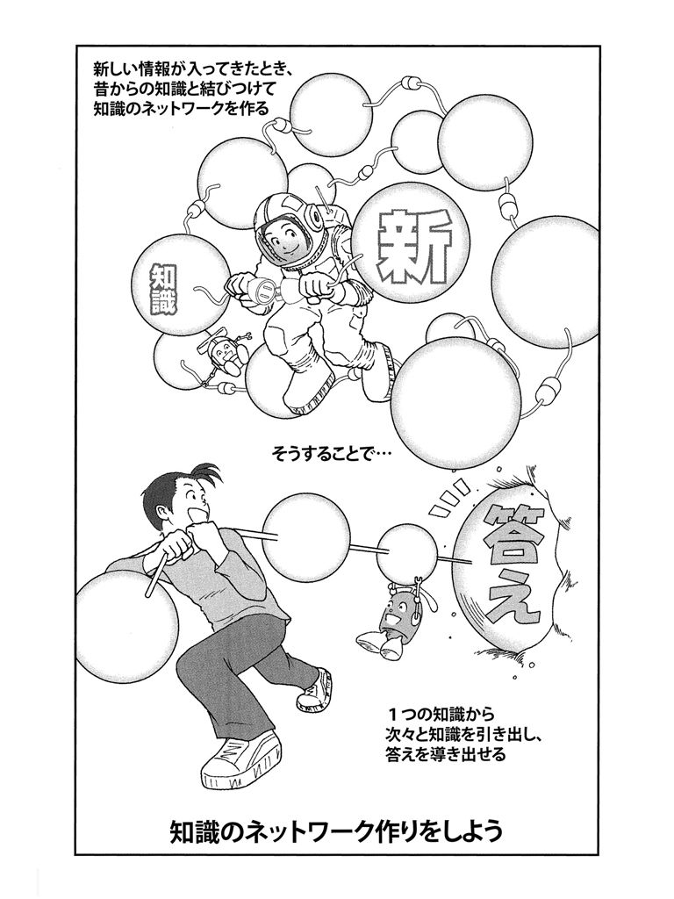
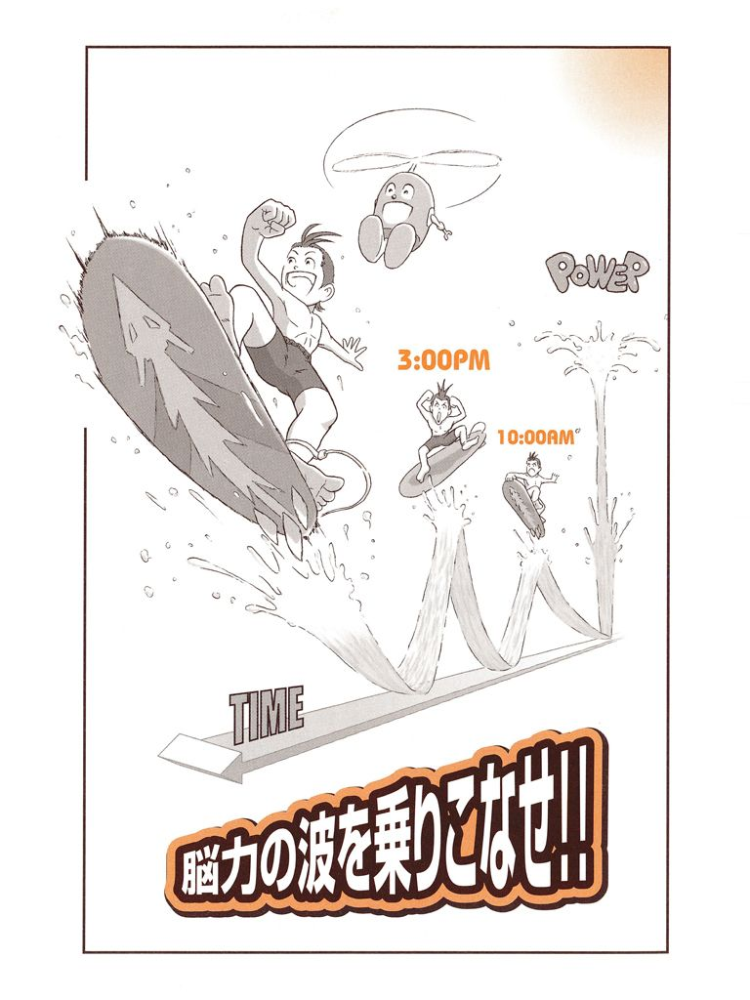

🏠
日
月
縦書き／横書き


| 頭の効率を上げる！ 超勉強法6冊セット 『スイスイ受験術』『ホイホイ記憶術』『勉強嫌いが治る本』......能率アップのコツ満載！ | |
| 多湖輝 | |
| (2017) | |
スイスイ受験術
いざ本番で実力以上の力を発揮するマル秘作戦
多湖 輝
目 次
一 楽して勝つにはこの手に限る！
１ 受験オンリーの生活は、受験にとって最大のマイナスである。
２ 志望校を選ぶには、おおざっぱでも〝人生プラン〟があったほうがよい。
３ 受験勉強の中から、一生のテーマが見つかることも少なくない。
４ 興味が湧かないからといって、その科目に対する能力がないということにはならない。
５ 勉強に気が乗らないときは、一時、勉強から離れてみる。
６ やる気は、受験勉強に意味を見出すことから起こる。
７ 学校の成績が悪くても、合格のチャンスはだれにでもある。
８ 「迷い」は、向上心の表われである。
９ 劣等感に悩んだときは、自分の長所を列記してみる。
10 劣等感に悩むのは、優秀な証拠である。
11 自信を失ったときは、鏡に自分の顔をうつしてみると、自信が回復する。
12 何もかもよく知っているように見える人ほど、本番ではできが悪い。
13 大学があなたをためすのではなく、あなたが大学をためすのだと思うと気が楽になる。
14 ほかの受験生をよく観察すると、自分の欠点がわかってくる。
15 外向性の人は、内向性の友だちといっしょに受験時代を過ごすとよい。
16 ガールフレンドは、受験勉強の励みにこそなれ妨げにはならない。
17 激烈な受験戦争に勝ちぬくのは、強靭な体力があってこそである。
18 周囲の期待を気にしすぎると、かえって期待を裏切ることになる。
19 受験勉強も、無理に楽しいものだと思い込むと、自然に楽しくなる。
20 不得意科目は、かえって得意中の得意科目になる可能性がある。
21 大学のキャンパスヘは、受験期以外もときどき行って、親しんでおく。
22 まじめに勉強したという自覚が持てさえすれば、それだけで上位三分の一にはいれる。
23 受験勉強は、青春期の人格形成にも役立つ。
24 合格後の〝楽しい生活〟を考えながら勉強すると、受験勉強も苦でなくなる。
25 落ちたときの不名誉という、より大きな苦痛を考えれば、受験の苦も苦でなくなる。
二 これがゴールへの最短距離だ！
26 志望校を早く決めることが、合格への第一歩である。
27 大学は、学部でなく講座や先生で選ぶ。
28 受験時に花形の学科でも、卒業時に花形であるとは限らない。
29 新しく受験科目をふやした学部は、穴場である。
30 一流有名大学ほど、客観式問題を出す確率が高い。
31 三年ぐらいのサイクルで、出題の傾向が同じになる。
32 その学問領域で新説が出たときや、学説に変化があったときは注意を要する。
33 同じ大学の中にも、はいりやすい〝アナ〟の学部がある。
34 出題の原典や出典が決まりきっている科目ほど、ヤマはかけやすい。
35 過去の入試問題の原典、出典は、できるだけ調べておく。
36 選択科目は、人気のない科目が意外な〝アナ場〟になることがある。
37 学習計画ができたら、家族や友人に実行宣言をする。
38 簡単に達成できる目標は、目標とは言えない。
39 計画は、破られるためにある。
40 生活全体のテンポを速くすると、問題解決の速度も速まる。
41 勝負ごとのような、あとを引く趣味は、短時間の気分転換には不適当である。
42 受験勉強に時間的余裕を与えすぎると、かえって打ちこめなくなる。
43 受験科目によって、机や部屋を変えると詰まったスケジュールも難なくこなせる。
44 解き方を習っていない問題でも一定時間考える習慣をつけると、本番での応用力がつく。
45 実戦にそなえるには、問題集の順序を無視して練習したほうがいい。
46 不得意科目を放っておくと、ほかの科目にまで〝不得意〟が伝染する。
47 不得意科目を克服するには、一年からの教科書の復習がもっとも近道である。
48 参考書は、自分の苦手な部分の比較検討で選ぶ。
49 視点の違った参考書を二冊以上使いこなしていくと、記憶の再生もしやすくなる。
50 一題練習するごとに、そのテーマで別形式の問題を予想してみる。
51 日ごろから、問題を自分でつくって解く練習をしておくと出題者の心理がわかる。
52 ふだんの学習では、時間の感覚を養うように問題をやる。
53 論述式の問題は、いくらでも自分でつくり、自分で練習できる。
54 志望校は、実力よりやや高くおくほうがよい。
55 なんでもいいから、得意な科目をまず一つつくるように心がける。
56 どんなに忙しくても、新聞と総合誌の見出しくらいは読むようにする。
57 社会や人生についての関心を日ごろから持つと、受験勉強でない受験勉強ができる。
58 幅広い読書が、本番で実力をフルに発揮させる。
59 史実や法則は、その内容を簡単にまとめた小見出しをつけて記憶すると本番でも忘れない。
60 部屋中にメモをはりつけて、場所や位置と結びつけて憶えると本番で思い出しやすい。
61 秋の虫の声を録音して、バック音楽として流すと能率がアップする。
62 全然勉強しないことも、有効な試験勉強法の一つである。
63 先輩のアドバイスが、かならずしも自分に適しているとは限らない。
三 直前こそ大幅得点アップできる！
64 寒い場所で勉強することに慣れておく。
65 不眠症には、「どのくらい眠らないでいられるか試してみよう」と思う逆療法もよい。
66 宿泊所は、試験場にあまり近いとよくない。
67 試験のまえの日になって、徹夜の詰め込み勉強をするのは逆効果である。
68 受験直前の「神だのみ」を否定するところから、ほんとうの自信が生まれる。
69 夜型を昼型に切り換えるには、一週間かかる。
70 試験が近くなったら、頭の中で自問自答する記憶強化法が適している。
71 試験の一週間まえから、試験の時間割に合わせて勉強すると本番での感じがつかめる。
72 試験の直前に、新しいものを憶えようとするのは逆効果である。
73 自分でつくった要点整理ノートこそ、直前に威力を発揮する。
74 模擬試験で間違った答案用紙は、最後のツメに役立つ。
75 「すべり止め受験」は、本番で意外な効果が出る。
76 直前には、記憶の手がかりになるものを再確認する。
77 せっぱつまったときは、機械的記憶も頭に残る。
78 直前でも効果の表われやすい暗記ものの勉強を通じて、読解力や推理力を増せる。
79 「かならず受かる」という信念を持つことが、合格への最短コースである。
80 試験の前日には、自分が合格した姿を思い浮かべてみる。
81 直前には、勉強以外のことでも毎日何か一つ得意なものをやってみる。
82 試験前日は、ふだんより早目に起きるとその夜は熟睡できる。
83 入試用の問題用紙に慣れておくことも、アガり防止に役立つ。
84 本番直前には、応用問題よりも、基礎問題の復習を徹底的にやる。
85 「もっと勉強しておけばよかった」と悔やむと、最後のツメが甘くなる。
四 試験度胸はこうしてつける！
86 受験票にはる写真は、ニッコリ笑ってうつす。
87 新しい服装は、本番でマイナスに働く。
88 受験票の写真は、当日の姿になるべく近いものにする。
89 受験当日は、不慣れなことは避ける。
90 準備は、ムダと思えるほど用意周到にしていい。
91 当日の朝、ダジャレを言いあうのも頭の回転を早めるのに効果的である。
92 試験場へは、かならず正門からはいるようにすると気力の充実に役立つ。
93 ほがらかな態度をとると、ほんとうにほがらかな気分になれる。
94 試験場での着席時間は、早ければ早いほど臨戦態勢が整う。
95 試験監督のアラさがしをすると気分が落ち着く。
96 試験官は自分が雇っているんだと思うと、威圧を感じなくなる。
97 他の受験生の真剣な顔つきを観察すると、自分はアガらずにすむ。
98 試験監督の冗談に笑えるようなら、あなたはアガっていない。
99 試験場でほかの受験生のコケオドシに乗ると、実力が発揮できなくなる。
100 当日、自分のはいった試験場での欠席者数を数えてみると落ち着ける。
101 試験場に持ち込む参考書は〝お守り〟くらいに思っておいたほうがよい。
102 ほかの受験生とは違った独自の行動をとると、自分に対する自信が強まる。
103 試験場での遠慮は、心の重圧を増す。
104 一つのものを凝視すると、精神が集中しやすい。
105 試験問題には、アラさがしをするくらいの気分でかかれば圧倒されない。
106 試験場へは、使い慣れた筆記用具を持ってゆく。
107 失敗の言いわけを考えるとアガりやすくなる。
108 受験番号と名まえは、なるべくゆっくり書く。
109 試験場にはいったら、鉛筆や消しゴムをいじると気分が落ち着く。
110 問題に取り組むまえに、「受験儀式」を意図的にやると心理的に落ち着く。
111 自分が「アガっている」と思うのは、落ち着きはじめた証拠である。
112 試験中にトイレに行くのも、受験作戦のうちである。
113 アガりそうになったら、頭の中でいたずらを考案してみる。
114 深く息を吸いこんでからゆっくり吐きだす呼吸法は、アガり防止に役立つ。
115 試験場での規則は、つまらないことでも守るべきものと割り切ったほうがよい。
116 試験時間の半分が経過したら、ノビをすると頭がリフレッシュされる。
117 「こんな大学なんか、入れてくれなきゃ、はいってやるものか」と居直るのもよい。
118 試験のあいまの休憩時間には、まえの試験のことはいっさい忘れる。
119 試験の本番では、あくまで孤独に徹しきったほうがよい。
120 最初の科目でよい成績がとれなくても、悲観することはない。
121 心の中で、歌を歌ったり口笛を吹いたりすると落ち着ける。
五 採点者はこんな答案に弱い！
122 問題のいちばん最初の問は、やさしくつくられていることが多い。
123 第二問に、むずかしい問題が出ることが多い。
124 見慣れた図のある問題は、解きやすいことが多い。
125 設問や指示に先に目を通してから問題を読むと、時間のムダが省ける。
126 問題文は、最後の部分に重要な指示があることが多い。
127 問題文の重要箇所には、アンダーラインを引きながら読む。
128 一つの問題に集中するときは、ほかの問題をおおいかくしてしまう。
129 問題を解いていくときのメモや計算は、きちんと整理して思考の過程を明らかにしておく。
130 論述式問題の答案は、いくつかのキーワードを目立たせて書く。
131 論述式問題では、一つの文章と文章をつなぐ接続詞に注意する。
132 同じ一時間でも、本番では一時間以上に使える。
133 多肢選択問題の選択肢は、かならずしも一度しか使えないとは限らない。
134 長文解釈は、段落ごとに簡単な要約をメモしておくと、全体の筋が早くつかめる。
135 助詞の使い方ひとつで、文章表現があいまいにも、適確にもなる。
136 接続詞の「が」を多用すると、論旨があいまいになる。
137 「...の理由を述べよ」という問題は、「...であるから」「...による」などの語尾で結ぶ。
138 「...とはどういうことか」という問に対しては、「...ということ」と答える。
139 答案用紙に書く文字は、すべて楷書にする。
140 つぎの問題へ移るときは、五～十秒くらいのインターバルを置く。
141 とても歯が立たない問題は、きっぱり断念する。
142 できないという見切りは、一問の配分時間の三分の一で出す。
143 解答の〝舞台裏〟は採点者にわからないことを胆に銘じると、客観的な答案が書ける。
144 答案用紙の答のスペースは、最初からめいっぱい使わないほうがいい。
145 問題に行き詰ったときは、考え方を逆転させてみる。
146 問題がむずかしく感じられるときほど、合格への可能性が大きい。
147 多く書きすぎた答案は、採点者の心象を悪くすることがある。
148 問題をやっている途中で行き詰ったときは、メモを残して先へ進む。
149 試験の終わりごろには、新しい問題には手をつけない。
六 解けなくても点は取れる！
150 選択問題では、「まぎらわしきもののなかに正解がある」ことが多い。
151 試験問題は、「採点しやすさ」という正解への手がかりを残している。
152 多肢選択問題は、誤りの明白なものから消してゆく。
153 多肢選択問題で、答が決まらないときは、侯補をしぼっておいてあとで検討する。
154 正誤問題は、出題者の心理からみて、どちらかというと×のほうが多くなる傾向がある。
155 正誤問題では、極端な言葉を使ってあるものが誤りであることが多い。
156 訂正問題では、肯定語、否定語、対意語に注目する。
157 長文問題では、文頭と文末に答がかくされていることが多い。
158 文章の中にわからない部分が出てきたら、省略してでも答を書いておく。
159 まったく未知の単語や術語、専門語などがあっても、それだけであわてることはない。
160 順番を並べかえる問題では、まずはじめと終わりの部分をさがすと解きやすい。
161 知らない単語や術語も、問題の中で言い換えられていることが多い。
162 指示語のさし示す内容がわからないときは、そのまま残しておいたほうがいい。
163 知らない単語が出ても、文中にそれと対照する語があれば意味を類推できる。
164 見慣れない問題も、一皮むいてしまうと、基礎的なやさしいものが多い。
165 いくつかの問題が解けた余勢をかって、残してあった難問を解くことができる。
166 問題が解けないときは、チェックリスト法でちょっと回り道してみる。
167 迷ったときは、「第一感」に頼って答える。
168 正解には、きれいな形、簡単な形のものが多い。
169 答をいくつも思いついたときは、頭の中で比較するのでなく、文字にしてくらべてみる。
170 まったくわからなくて行き詰まったときは、あてずっぽうでもよいから答を書いておく。
七 ど忘れなんか恐くない！
171 忘れたことを思い出すには、憶えたときの状態に帰る。
172 忘れたことを思い出せないときは、三十秒間ぐらい何も考えない。
173 思い出せないときは、それが書いてあったノートや本のページを思い出す。
174 ど忘れしたときは、問題用紙の余白にいたずら書きしてみる。
175 ど忘れした数学の公式や英単語、人名、年号を思い出すには、全体の形を思い浮かべる。
176 手から憶えた知識は、本番でも手から思い出すほうがよい。
177 ど忘れは、そのことの直前に憶えたことを思い出せば時系列で思い出せる。
178 忘れたときは、憶えたときの逆をたどる。
179 ど忘れしたら、問題文を読み返しているとヒントが見つかる。
180 記憶を蘇らせるには、頭をたたいてみるのも案外有効である。
181 いよいよ思い出せないときは、言葉の最初にくる五十音を順にチェックしてみる。
八 ポカ・ミス・ヘマよさようなら！
182 続けて三問つまづいたら、一息入れて流れを変える。
183 答が間違っていることに気づいても、正解の見とおしがつかないうちは消さない。
184 注意事項が気になったら、余白にメモしていったん忘れてしまう。
185 弱気になることをあと回しにするとケアレスミスを招くもとになる。
186 「やったことのある問題だ」と思ったときほど、ケアレスミスが起こりやすい。
187 練習量の多い人ほど、早合点する傾向が強い。
188 つまらぬミスをするのは、問題を解いてホッとしたときである。
189 むずかしい問題より、やさしい問題のほうがミスが多い。
190 同じやり方で何度見直しても、答案の間違いは発見できない。
191 問題文を読み直さないで答の見直しをしても、なんにもならない。
まえがきにかえて
〝ホイホイ勉強術〟のつぎにくるもの
『ホイホイ勉強術』を書いて以来、全国の読者の方々から、たくさんの手紙をいただきました。私自身がびっくりするほどの大反響です。それらの手紙を読んで、まず気がついたことは、皆さんが、じつにまじめにこの本を読んでくださっているということでした。〝ホイホイ勉強術〟などというと、ややもすると不まじめな意味にとられがちだっただけに、この本がどのように読まれ、受けとられるかいささか心配でしたが、手紙を読むうちにそれが杞憂であることがよくわかってきました。
学校の勉強もけっしてムダとばかり言えないとしても、人生には、それ以上にだいじな勉強がある―そのことも、十分考えている人が少なくないことを知りました。これは、私にとっても、ほんとうにうれしいことでした。
こうして、私を安堵させ、かえって力づけてくれた数多くの手紙の中に、「受験にマトをしぼって続編を書いて欲しい」という要望が圧倒的に多かったことも私には驚きでした。考えてみれば、学生諸君にとって、勉強の当面の目標は、やはり何といっても〝受験〟にしぼられます。ですから、こうした訴えが強いのも当然と言わねばならないでしょう。
せっかく勉強術を紹介したのだから、つぎにふだんの勉強から一歩すすめて、受験にマトをしぼった本を書いてみたらどうだろう――私はしだいに、そう考えるようになりました。しかし、それは、『ホイホイ勉強術』を書いていたときから、私の心の中ですでにくすぶり出していたことの当然の帰結だったのかも知れません。
厳しい浪人生活からあみ出した〝受験術〟
古い話ですが、私自身にも、受験で苦しんだ経験があります。旧制中学時代、「お勉強」の無意味さに悩み、怠け者の名に甘んじていた私は、その結果、高校入試に落ちて一年浪人するハメになりました。
その間、たった一年でしたが、浪人生活の苦しみは大きなものでした。
そのころは、近ごろと違って、学生はだれでも制服、制帽を着用していました。ですから、服装を見ると、一目でどんな学校へ行っているのかわかったものです。高校生（旧制）は、白線のついた制帽にマントといういでたちでしたし、海軍兵学校の生徒たちは、短剣をつったじつにスマートなスタイルでした。その連中が、肩で風を切って、往来を歩き、意気揚揚と母校へやってくるのです。しかも、われわれ浪人生は、高校生と違う徽章のついた制帽をかぶっていますから、〝浪人〟のレッテルをはって歩いているようなもので、その屈辱感たるや、差が形の上でも目につきやすいだけ、現在の浪人生の何倍もの大きさではなかったかと思われるほどでした。
そういった精神的な苦しみもさることながら、受験競争そのものの厳しさもまたたいへんなものでした。皆さんは、昔はのんびりしていて、受験競争などなかったのではないかと思っているかも知れませんが、むろん、そんなことはありません。私の高校受験のときは十八倍の競争率でしたし、大学受験は三倍でした。受験生のなかには、高校受験のために十年間も浪人して、一高をねらっていた人もあるくらいでしたから、受験地獄は、私たちのころも現在も、あまり変わりはないと言ってよいようです。
このような厳しい受験時代を、劣等生、浪人生という蔑視の中で二年間も過ごしましたが、私にとって幸せだったのは、当時天下に名をなしていた予備校に通うことで、よき師、よき友に恵まれたということです。私は、自由で明るい環境の中で、中学時代にあみ出した勉強術にさらに磨きをかけることができたのです。さらに、一度失敗した経験を生かして、受験にマトをしぼった受験術も新しく工夫しました。
こうして、おおいに自信をつけた私は、つぎの年の合格発表の日には、ひそかに白線のはいった制帽を用意してゆき、帰りにはもう志望校の学生の姿で帰って来たほどでした。
しかし、何よりも私にとってプラスになったのは、この自信とともに浪人時代に身につけた、「受験」に対する一種の心のゆとりでした。悲愴なガリ勉ではなく、受験というものを自分自身との闘いの機会として、冷静に受けとめることができるようになったのです。そして、ますます自分の勉強術に信念を持つに至ったのです。
受験に必要なのは、精神論ではなく技術である
読者の皆さんの手紙を読んで、まっ先に思い出したのは、この浪人時代のことでした。そして、あのころの私と同じようにみじめな思いに沈んだり、あせりにとらわれたりしているかもしれない今の皆さんに、私が受験を乗り切った秘訣をお話ししたいと思ったのです。
誤解されやすい言葉ですが、私は、受験というものは一種の技術だと思っています。どんなに実力がある人でも、その実力を十分に発揮することができずに受験に失敗することは、私たちの身近にいくらでも見られます。そのいっぽう、要領のよさで、実力以上の力を発揮し、スイスイと合格する人もいるのです。この違いがどこから出てくるのかと考えて、浪人生の私はやはり受験には技術が必要であるという結論を導き出さざるを得ませんでした。そこで私は、スイスイと合格してゆく人間には、どんなコツがあるのか、いろいろと調べてみました。また、出題者の心理を読んで、すこしでも多く点を取れる答案をつくるための工夫を考えてみたりもしました。
その結果、私はますます受験は技術であるという信念を強くしたのです。事実、相当の実力を持っている人でも、試験官の出題の形式にそってうまく答える技術を知らないと、何度受験をしても合格はできません。たとえば、ふつう○×式と呼ばれる選択問題には答えることができても、論文は書けないというのでは、論述式問題をこなすことができないのは当然です。
また、試験場でアガりすぎるのも、実力を発揮できない大きな原因です。雰囲気に呑まれ、カーッとなって、ケアレスミスを繰り返したり、憶えているはずのものが思い出せなかったりでは、これも合格の見込みはないでしょう。アガりを克服する心理的操作も、やはり身につけておかねばならない受験技術と言えます。
同じ量の勉強でも、０点と満点の差が出る
この本を書くにあたって、私は、私なりに、従来の受験生に読まれてきた、受験対策の本を集めて読んでみました。その結果わかったことは、これらの本の大多数は、受験勉強を単に精神主義で克服しようとしていることです。しかし、精神論で救われれば、だれも悩みはしません。たいせつなのは、励ましや精神論ではないのです。どうすればやる気が起こり、どうすれば劣等感や不安を吹き飛ばすことができるかという、自分の心をコントロールする技術を身につけることこそが必要なのです。
ケアレスミスを防ぐにも、ど忘れを思い出すにも、技術があります。ただ注意しろ、努力しろでは、何も生まれてくるはずがないのです。
同様に、受験勉強そのものも、やり方ひとつでまったく違った結果を生みます。
つぎの図を見てください。これは、試験範囲の五〇パーセントを勉強した四人の学生が、四つの問題に対してそれぞれ０点、五十点、七十五点、百点を取る可能性があることを、模型的に図示したものです。同じ量だけ勉強したのに、ヘマな学生と要領のよい学生との差は歴然としています。
これは、いわばヤマかけが当るか当らぬかの例ですが、とにかく、勉強するときの目のつけどころによって、これだけの差ができてしまうのです。そこで、このような矛盾を緩和するには、どうしたらよいのか、勉強しただけの努力がなるべく均等に評価されるようにするにはどうしたらよいのか、という疑問と要望が出てきます。こうして生まれた一つの試みが、客観式テストという方法です。このやり方ですと、問題数が多く、全領域にバラまいてあるので、四人の成績の差がほとんどなくなります。
しかし、受験では、時間が限られているので、それほど大量の問題を出すわけにはいきません。ですから、ヤマをかけるということが、かなり有効な方法だと言えることになります。そして、そこにもう一つの受験技術である〝出題傾向を察知する法〟のはいり込む余地が生じてくるわけです。ヤマをかけるなどと言うと、一か八かのバクチのように考えて、軽蔑する人がいますが、それはあまりにも一面的なものの見方です。実力をつければつけるほど何が大事か、どこが出題者の問いたい部分なのかわかってきて、自然にヤマがあたるようになるのが当然だからです。極端な言い方をすれば、ヤマがかけられるようになったら、しめたものだと思ってもよいのです。
試験官の立場から見た、受験技術のまずさ
いずれにせよ、私のように、かつて困難な受験時代を経験し、今は逆に試験官の立場に立っている人間から見ると、今の受験生の諸君は、まだまだ受験技術を知らなすぎると痛感させられます。
たとえば、数学が入試の必須科目になっている大学を志望しながら、数学に重きをおいて勉強していない受験生がいまだにいるのです。数学は一題あたりの配点が大きいのですから、一題が解けるか解けないかが合否のわかれ目になることは、明らかです。配点も考え、力の配分を考えるというたいせつな受験技術が案外見すごされているのです。
また、ある受験生は、試験場の下見を怠ったために、当日、試験場を間違え、そのためにすっかり精神的に混乱してしまうという、ハタから見ていてもやりきれなくなるような原因で受験を失敗しています。これでは泣くに泣けません。
そのほか、毎年のように受験番号を書き忘れる人がいます。書き忘れるならまだしも、間違えて他人の番号を書く人すらいます。このばあいには、自分自身がまず不合格にされるばかりでなく、ほかの受験生や試験官にもたいへんな迷惑をかけることになります。
信じられないような話ですが、このような学力以前の不注意によって、受験に失敗する学生が毎年ひきもきらないのです。しかし、こうした不注意は、私に言わせれば、精神論でなく、技術の問題として防止することができるはずなのです。
私は現在、国立大学の教師をしています。その私が、受験の本を、しかも、『スイスイ受験術』などといういかにも気楽そうな題の本を書くなどとは、不見識だとお叱りを受けるかもしれません。
しかし、この本を読んでいただけばわかりますが、内容はきわめてまじめなものです。
もちろん、入学試験というものは、受けるものにとっても、選ぶ側にしてみても、厳粛なものです。合否判定のときは、じつにたった一点の違いで明暗がわかれるのです。一点の差が、いったいどれだけの意味をもっているというのでしょうか。ところが、現実には、一方は栄光の道を歩き、他方は屈辱の一年を余儀なくされるのです。ときによると、このたった一点の差が、両者の人生を大きく変えてゆくかも知れません。こんなことを考えると、もう一息で合格できなかった人、合否すれすれの人には、なんとか受験技術をマスターして欲しいと思わずにいられないのです。
私は、現在の受験制度に多くの疑問を抱いています。とくに、一回きりのペーパーテスト偏重試験では、能力を知ることなどできるわけがないと考えています。しかし、受験に関するいっさいの議論のまえに、皆さんは、ともかくも受験のカベにぶつかり、突破しなければならないという動かしがたい事実に直面しているのです。だとすれば、あれこれと悩みつづけているよりは、かなりの部分を技術的に解決しうるものと割り切って、スイスイ合格することを考えるのが、もっとも現実的だと言えるのではないでしょうか。
受験は苦しいものです。しかし、その苦しさに押しつぶされてしまったり、その中にのめり込んでしまったりしては、何も生まれてはきません。どうせなら、受験に正面から取り組み、自分にとって実りある将来をつくるための一つの関門としてください。私や私の友人たちの経験と、心理学上のさまざまな原則の裏づけにもとづくこれらの受験術が、皆さんに上手に役立てていただけることを願ってやみません。
昭和四十九年九月十日
多湖輝
一 楽して勝つにはこの手に限る！
１ 受験オンリーの生活は、受験にとって最大のマイナスである。
「受験生」とは「試験を受けに来た人」のことだと思っていたら、いつのまにか、「受験をめざして勉強している人」の意味になり、今では高校一年生、中学の一年生までが「受験生」の仲間入りをしているようです。
このように、現在の高校生、中学生の生活は、すべて受験一色に塗りつぶされてしまっています。生活全般がそうなのですから、勉強はなおさらです。しかし、この受験オンリーの勉強が、はたしてほんとうに受験のためになっているでしょうか。私には、二言めには受験、受験と唱え、一見受験技術にたけた〝受験勉強屋〟さんが、「策士、策に溺れる」のたとえのように、かえって、受験の成功をあやうくしているように思えてならないのです。確かに、受験には技術も必要でしょう。けれども、それ以前に、歴史にしても理科や語学にしても、その科目に共通する、ものの考え方や見方があるはずです。細かい知識や解法のもとになるものですから、かえってこれを知ることが効率よい勉強につながると思うのですが、意外にこれが忘れられているようなのです。私自身、受験勉強中に、有名な歴史学者山中謙二先生の『西洋史概説』を読んで、大きな人類の歴史の流れを把握でき、何十冊の受験参考書にまさる勉強ができた経験があります。
この章では、このように、試験をめざした苦しい闘いが、工夫しだいで楽々と有意義なものになり、かつ成功へも直結することをお話ししましょう。
２ 志望校を選ぶには、おおざっぱでも〝人生プラン〟があったほうがよい。
受験生のいつわらざる真情は、どこでもいい、とにかく一流校、有名大学にもぐりこみたいということではないかと思います。これほど極端ではないにしても、最近の学生は、どうも将来の〝人生プラン〟が不十分な感じをまぬがれないのです。
たとえば、私はいま千葉大学の教育学部で教鞭をとっていますが、教育学部というのは教師を養成している学部だということを十分認識せずにはいってくる学生がいます。東京工業大学の講師をしていたときも、文科系の大学に移りたいという学生の相談にどれほどのったかわかりません。そのときは、「まだ若いのだからいくらでもやりなおしはできる」と言って励ましてやるのがつねでしたが、正直なところ、もうすこししっかりと人生のプランを立てておけば、貴重な青春時代に思わぬ足踏みをしないですんだのにと残念でしかたないのです。
とくに、日本の大学は、入学の学部が決まると同時に、だいたい就職の方向も決まるというように、いったんはいった大学の学部、選んだ専門が、一生ついてまわることが多いというのが現実です。ですから、志望校を決めるときは、有名校、一流校の名にとらわれず、自分が将来何をしたいのか、おおざっぱでもいちおうの計画を立ててほしいのです。もちろん、大学で学ぶ過程で新しい進路を発見することもあるでしょう。しかし、少なくとも、はいってしまってから、どうも自分の性格に合わないなどという悲劇だけは避けることができるはずなのです。
３ 受験勉強の中から、一生のテーマが見つかることも少なくない。
無事合格して、大学にはいってきた新入生を見ていると、受験勉強から解放されてホッとしているタイプと、研究やサークル活動などに積極的に飛びこんでいくタイプの二つにわかれています。ヤレヤレというタイプの心理状態を調査分析してみると、意外に受験勉強にその原因があることがわかります。入試はただ合格すればよいものと考え、小さいときから学習塾などで詰めこみ主義の勉強をし、知識や技術を機械的に暗記してきた人に多いのです。
彼らにしてみれば、試験に合格してしまえばあとは終わりだというのでしょうが、これではなんのために大学にはいってきたのかわかりません。
確かに、受験勉強はつまらないものかもしれません。しかし、その勉強もちょっと見方を変えれば、あらゆる学問や知識の基礎につながっているのです。たとえば、有無を言わずに憶えていく以外に道のない英単語も、憶えれば憶えるほど英会話や原語文献の読破につながっていき、単に受験のための丸暗記では満足できなくなってくるはずです。
このように、受験勉強というものを単に大学や上級学校へ合格するためだけの気の滅入る勉強ではなく、将来のためになる、広い意味を持つものと考えたらどうでしょう。そうすると、いきおい自分の勉強に身もはいるし、やる気も十分に起きてくるというものです。大学にはいってからすぐ活動を始めたり、将来おおいに期待できるタイプは、みなこのように受験勉強を考え、実行してきた人たちなのです。
４ 興味が湧かないからといって、その科目に対する能力がないということにはならない。
「好きこそものの上手なれ」の諺のとおり、自分の好きな科目は勉強にも身がはいり、成績もおのずとよくなるものです。それでは、「嫌いなら下手」かというと、いちがいにそうとも言いきれません。嫌いな原因を調べてみると、その科目に嫌いな先生がいたとか、いやな経験をしたとか、ごくつまらないことで興味がそがれ、せっかくの能力を殺してしまっているケースがよくあるからです。
成績の悪い科目を不得意と思いこみ、それを自分の能力不足だと考えている人は、なぜその科目が嫌いなのか、一度その原因を調べてみると、意外に「なんだ」ということになるに違いありません。
５ 勉強に気が乗らないときは、一時、勉強から離れてみる。
長い時間勉強しているわりに、いっこうに実力がつかないと嘆く人が少なくありません。こんな人にかぎって、自分は頭が悪いのだと親にあたりちらしがちですが、悪いのはいうまでもなく頭ではなくて時間の使い方なのです。
気分が乗っているときには、時間がたつのも忘れるほど能率があがりますが、いやいや勉強しているときには、長い時間やっているつもりでもいっこうに時計の針が進まないものです。こんなときは、一時、勉強を中断してみるに限ります。気分が変わって、ダラダラ気分がうそのように消えてしまうことがあるからです。ある産業心理学者の調査でも、作業の中断は、あとの作業の能率によい効果を与えることが確かめられています。
どうにも受験勉強に気分が乗らないときは、思いきって一日でも二日でも、やる気が起こるまでまったく勉強をしないのも、やる気回復のよい方法です。そんなことをしたら受験勉強が遅れるのではないかと思うでしょうが、いっさい勉強に手をつけず、あせりにあせる気分になるまで自分を追いこみ、それに耐えきれなくなったときこそやる気が回復するのです。幼児のバイオリン教育で有名な鈴木鎮一さんは、はじめて習う子どもには、自分から弾きたいと言い出すまで、一月でも二月でも、ほかの子どもがバイオリンを弾くのを見せておくのだそうです。この弾きたくなるという気持こそ、進歩の秘訣だというわけです。
６ やる気は、受験勉強に意味を見出すことから起こる。
あなたは、机に向かいながら、「受験勉強なんかしてなんになるのか」とか、「なんのために大学へはいるのか」などと考えたことはないでしょうか。
アメリカのある経営学者は、「成功したトップに共通することは、つねに自分の仕事に対して、なんの意味があるのかという疑問を持ち、それを確かめたいという意欲を持ちつづけたことである」と言っています。
このことからも、受験勉強に対する意欲を生じさせるためには、まず受験勉強に疑問を投げかけ、その意味を見つけだすようにすることがたいせつだということがおわかりいただけると思います。
７ 学校の成績が悪くても、合格のチャンスはだれにでもある。
夏の全国高校野球では、優勝候補にあげられていたチームが一回戦で敗れ、思いがけないチームが優勝することがしばしばあります。入学試験でも、合格間違いなしと思われていた人が落ちるかと思えば、日ごろ成績の目立たない人がみごと合格して周囲を驚かせたりします。
高校野球や入学試験のような一発勝負では、雰囲気にのまれない勝負度胸や、上手なコンディションづくりが、実力以上にものを言うことがよくあるのです。要は、本番でいかに実力以上の力を発揮するかです。それには、学校の成績などに一喜一憂せず勝利を信じて練習にはげむことしかありません。
８ 「迷い」は、向上心の表われである。
どんな学校を志望したらよいだろうか、どんな参考書を選んだら勉強が進むだろうかなど、受験期には他から見ていても痛々しいほど迷うことが多いものです。しかし、この「迷い」を避けて通ろうとか、迷わず進もうなどと考えたら、おそらく結果は失敗に終わるでしょう。なぜなら、この「迷い」こそ、向上心の表われだからです。
すべての問題についてもいえることですが、もっとも核心的なものごとの本質は、最初から見通せるものではありません。一つの面を見たあとで、また逆の立場や裏からのぞいてみると意外に新しい発見があります。さまざまな角度から考えれば考えるほど、当然のことながらこれだと単純に決めつけることができなくなり、おおいに悩み、迷い、苦しむことになります。そして、迷いぬいたあげくに見つけだした一つの道こそ、唯一確信の持てるものであり、そこから成功をより確実にする可能性が出てくるのです。重要なのは、こんなことで迷っていていいのだろうかと入口のところで悩んでしまうのではなく、自分が納得いくまで考えぬいて、そのうえで一つの確かな答えを出していくという、問題に対するひたむきな誠実さです。
もちろん、一生考えても結論が出ないほどの途方もない大問題については、目標がさしせまっている受験期には一時たなあげすべきでしょう。迷っているあいだの空白時間、精神的なブランクは、その迷いが深いほど早急に取りもどせるものです。「迷い」には、おおいに自信を持ちたいものです。
９ 劣等感に悩んだときは、自分の長所を列記してみる。
仕事でも勉強でも、思うように進まないときには、自分の欠点ばかりが気になってくるものです。自分の欠点を反省し、つぎの飛躍に備えることはたいせつですが、自分の欠点ばかりをあげつらっていたら、劣等感の虫がますますとりつくだけです。
あなたがもし、劣等感に悩み、勉強が手につかない状態にあるとしたら、自分の欠点を考えることはやめて、自分の長所をノートに列記してみてください。そして、毎日それを大声を出して読みあげ、自分の脳細胞に焼きつけてしまうのです。
このようにすれば、いつのまにか劣等感はどこかに逃げだし、やる気と自信がみなぎってくること請合いです。
10 劣等感に悩むのは、優秀な証拠である。
私のところへは、いろいろな問題をかかえた若者が相談に来ますが、なかでも圧倒的に多いのは、劣等感に悩まされているという人です。それも、まわりの人からは優秀だといわれている人にかなり多いのです。その内容は、たとえば、「自分は一、二年のあいだは、いつも首席か、それに近い成績だった。ところが、三年になると、成績が思うように上がらず、今まで気づかなかった学力の欠点や弱点に気がつきはじめた。自分は能力が劣っているのではないか」といったたぐいのものです。
ところで、劣等感といえば、劣等感を心理学的に研究した人に、オーストリアの精神医学者アドラーがいます。彼は、人間の行動の動機となるものは、「優越への闘争」であると考えました。行動は、自分自身に対する劣等感から出発し、しかも、劣等感は、人間を努力にかりたてる燃料であると、彼は述べています。
つまり、世の中には完全な人間などいないわけですから、私のところへ相談に来る人のようにいくら優秀でも、理想や要求が高ければ、ちょっとした失敗などで劣等感におちいってしまうのは、当然といえば当然のことです。おまけに、優秀であればあるほど、自分の学力の足りない点がよく見え、なおさら劣等感をかりたててしまうのです。
このことからもわかるように、「自分は優秀だから劣等感に悩まされるのだ。学力が伸びているから欠点に気づきはじめたのだ」と、自分自身を納得させることが、劣等感を克服する第一歩なのです。
11 自信を失ったときは、鏡に自分の顔をうつしてみると、自信が回復する。
イギリスの名宰相として歴史にその名を残しているウィンストン・チャーチルは、演説の名手としてもよく知られています。彼の口から吐かれた警句や名言は、今も世界中の人びとに親しまれていますが、議会や国際会議などで演説するときは、かならずそのまえに、鏡の前に立って試演したといわれます。鏡にうつった自分のさっそうとした姿を見ていると、しだいに自信と力がみなぎり、その日の演説がうまく運んだのだそうです。
大演説家といわれたチャーチルですら、だいじな場面で演説するとなると不安が頭をもたげるのですから、受験勉強に不安やあせりが生じるのは当然でしょう。問題は、このような不安やあせりをいかにうまく処理するかですが、チャーチル流に自分の顔を鏡にうつして見る自己暗示も一法でしょう。
鏡にうつった自分の情けなさそうな顔を見ていると、そんな顔をしていてどうするのだと、もう一人の自分を勇気づけたくなってきます。しっかりしろ、がんばれという自分に対する勇気づけが、何よりの自信回復剤になるのです。それに、そんな情けない顔を見るのは、自分自身にとってたいへんつらいことですから、鏡にうつしたときだけでも活気のある顔にこしらえてみたくなります。そのことがまた、自信の回復につながるのです。悲しみに打ちひしがれて涙を流しているとき、その姿を鏡にうつしてじっと見ていると、不思議に涙がとまり、悲しみが薄らいでくるとの同じ鏡の効用です。
12 何もかもよく知っているように思える人ほど、本番ではできが悪い。
入学試験には、学校の成績が、「一番」だった学生が落第し、とても「ムリ」だと思われていた学生が首尾よく合格するといったハプニングがつきものです。こんなとき、試験のやり方や運、不運がとかく問題になりますが、それだけではかたづけられない重要な問題が、ここには隠されています。
というのは、入学試験の問題には、単なる知識やテクニックではなく、ことの本質をよく理解していなければ解けない問題が多く出されるからです。何もかもよく理解しているように見える人も、よく観察してみると、単なる試験のテクニシャンにすぎなかったり、つめこみの知識が豊富なだけであったにすぎないことが少なくないのです。こんな人にかぎって、ちょっとつっこんだ問題が出たり、基本的な理論を問われたりするとすぐメッキがはがれてしまいます。
プロ野球では、よくブルペン・ピッチャーなどといわれ、ブルペンではボールも速く調子がいいのに、いざマウンドにあがるとすぐノックアウトされてしまう選手がいます。実力はあるのだが残念だなどという批評をする人がいますが、本番で力を出せないような能力は実力とはいえません。何よりも基本がしっかり身についていることが先決です。
入学試験でも、何もかもよく知っているように見える学生の中に本番での成績がよくない人がいるのは、本質を理解しないうわっつらの知識しか身につけていないからです。
13 大学があなたをためすのではなく、あなたが大学をためすのだと思うと気が楽になる。
「試験」とは、その文字のとおり、「ためす」ことです。では、入学試験とは、だれがだれの何をためすのでしょうか。こう言えば、だれでもきまって、大学あるいは高校が、受験生の能力をためすと答えるでしょう。
しかし、私はそれだけではないと思います。逆に受験生がその大学を、本当の自分がはいるにふさわしいかどうかをためす機会でもあると思うのです。試験のやり方、問題の出し方一つにも、その大学の特徴が表われます。それを判定するつもりでいれば、ためされるものという心理的劣勢をはねかえすことができるはずです。
14 ほかの受験生をよく観察すると、自分の欠点がわかってくる。
私の友人からこんな話を聞いたことがあります。ある年の夏、彼はのどを痛めてすこしもなおらず、その原因がわからないで困っていました。ところがある夜、久しぶりに会った友だちと夜を徹して語りあい床についたところ、その友だちが、自分と同じような咳をしだしたというのです。どうしてだろうと思った彼の頭にふと浮かんだのは、部屋にかすかにただよう蚊やりの香りでした。案の定、友だちの咳はこの蚊やりの煙が原因で、彼自身ののども、これにやられていたことがわかったというのです。
この話は、自分自身について今まで自分にもわかっていなかったことが、他人を見ることによってわかってくるということを、如実に教えてくれます。
受験勉強も、これとまったく同じです。自分の気がつかない勉強法の欠点、学力の弱点などが、ほかの受験生を見ることで発見できるのです。たとえばあまり早くから直前式要点整理のような参考書を使っている友人を見れば、これでいいのだろうか、自分も安直にうわっつらだけの学習をしていないかと反省することになるでしょう。
かつて、作曲家ベートーベンが交響曲「英雄」をかきあげたとき、ナポレオンのフランス皇帝就任を聞き、名誉欲にとらわれたナポレオンの行為をペンを折って怒りながらも、「オレもまたヤツと同じだったんだ」と地団駄踏んでくやしがったというエピソードが残っています。他人の行動を見て自分をかえりみる好例といえるでしょう。
15 外向性の人は、内向性の友だちといっしょに受験時代を過ごすとよい。
受験時代の悩みは、つねにその人の性格と深い関係を持っています。たとえば、人間の性格を大きく二つのタイプにわけると、内向的性格と外向的性格にわかれますが、このそれぞれにお互いに特有の悩みがあるものなのです。
もしあなたが、行動的で陽気、よいと思ったことにはすぐ飛びつくけれども、飽きるのも早いという性格なら、外向性です。明るい性格ですから、悩みというほどの悩みを持たないのが特徴ともいえますが、現実にはやや集中力に欠け、計画が守れないという欠点があります。
反対に、ひっこみ思案で消極的、慎重で緻密だがくよくよと物事にこだわりやすいとすれば、これは内向性です。勉強の基本条件である落ちつきと集中力がある反面、ちょっとしたことで劣等感に陥りやすい欠点を持っています。
つまりは、一長一短でどちらがよいとはいえないわけですから、それぞれの欠点を補う意味で、反対の性格の人といっしょに受験時代を過ごすのが一つの方法です。試験では、性格別にさじ加減をして採点してくれるわけではありませんから、ふだんから、お互いの欠点を補うように心がけておくといいのです。
大人の世界でも、まったく性格の異なった二人が名コンビを組んだり、よい夫婦になったりしています。本番までの長丁場を、へこたれないで闘いぬくためにも、よい方法といえましょう。
16 ガールフレンドは、受験勉強の励みにこそなれ妨げにはならない。
数年まえ、『受験生ブルース』という歌が若い人たちのあいだでひじょうにはやったことがあります。「恋しちゃならない受験生、やけのやんぱち石投げた」といった一節が、受験生心理を微妙にくすぐったようですが、心理学的にいえば、異性とのつきあいは、プラスにこそなれけっしてマイナスにはならないといえましょう。
というのは、人間にかぎらずすべての動物は、異性の前では自分をかっこよく見せようとする気持を持っているからです。たとえば、高いところにあるバナナをオスのチンパンジーにとらせる学習実験でも、だれも見ていないところでは、なかなかとろうとしないのです。ところがどうでしょう。最初は動こうとしなかったチンパンジーが、同じ学習をメスのチンパンジーの前でやらせると、箱を積んだり、棒をつかんだりと一生懸命にバナナをとろうとする努力を始めるのです。
いわば、メスのチンパンジーが、目標達成のための強力なモチベーションとなっているわけですが、この心理は人間とて変わるはずがありません。いたずらに異性を遠ざけて欲求不満に陥るよりも、好きな異性にかっこよく見せるために努力することのほうが、はるかに人間的だといえましょう。
といっても、好きなガールフレンドのことが頭から離れず、そのために勉強が手につかないとなったら、問題の質がかわってくることはいうまでもありません。
17 激烈な受験競争に勝ちぬくのは、強靭な体力があってこそである。
私たちの学生時代には、「青白き秀才」などといって一流大学をめざすような優等生は、いつも机にしがみついて、陽の光に当たることの少ない、弱々しい学生と相場が決まっていました。ところが、その秀才の多くは、途中で病気をしたり、試験場で貧血を起こしたりして、結局めざすゴールにはいったのは、私のような「健康な鈍才」たちでした。
受験勉強のような長丁場を乗りきるのに必要なものは、強靭な体力であり神経です。とかく受験勉強というと、頭のトレーニングだけにかたよりがちになりますが、それだけでは競争に勝ちぬくことはできません。体と心のトレーニングこそ、勝利への大きな基盤になるのです。
18 周囲の期待を気にしすぎると、かえって期待を裏切ることになる。
東京オリンピックで金メダルを独占したアメリカの水泳選手ショランダーが、優勝後の記者会見で、「マイペースで泳いだこと。ぜったいにアガらなかったこと」が勝因だと語ったことがあります。それにくらべて日本水泳陣は、国民の期待が大きく、これにこたえようとしてコチコチにアガってしまい、結果的には大惨敗に終わったことは、今でも私たちの記憶に新たです。
勉強についても、同じことがいえます。日本の家庭教育では、どうしても「人さまに笑われないように」という他人の目を意識したしつけを重視するきらいがあります。他人志向型の人間価値観が基本にすえられており、善悪の基準にしても他人の思惑で決めるという傾向が強いのです。小学生にさえ、「いい成績をとって、お父さんお母さんに喜んでもらいます」などという言葉が聞かれます。自分が好きだから勉強する、自分のためにマイペースで勉強するというのではなく、「周囲の期待」にこたえたいというところに力点がきてしまっているのです。これでは、ショランダー選手のように、正念場で実力を発揮して勝利を得ることは期待できません。
それどころか逆に、この期待が重荷になり、ノイローゼに陥りかねません。むしろ、「両親や周囲の期待などにはサラサラこたえない。自分のためだけに受けるのだ」ぐらいのゆったりした気持になって試験に臨んでいいのです。そうすればマイペースで勉強が進み、能率もどんどんあがるでしょう。
19 受験勉強も、無理に楽しいものだと思いこむと自然に楽しくなる。
受験勉強といえばだれもがつらいものだと思いこんでいますが、そんなにつらいものなのでしょうか。アメリカの心理学者ウィリアム・ジェームスは、「人間の性質の中には、そうなりたいと習慣的に考えるとそのとおりになる傾向がある」ことを指摘しています。つらいと思えばつらくなるし、楽しいと思えば楽しくなるというわけですが、どうせ勉強するなら楽しくやるにこしたことはありません。それには、つらいと思わずに、まず自分に、勉強とは楽しいものだと思いこませることが先決です。無理にでも楽しいと言いきかせているうちに、自然に楽しくなってきます。
20 不得意科目は、かえって得意中の得意科目になる可能性がある。
古代ギリシャの有名な雄弁家デモステネスは、子どものころ、極度のドモリに悩まされたそうです。ところが、彼は不断の努力によってこれをみごと克服し、まわりの人から「あれがドモリだった男か」といわれるような大雄弁家になりました。最初は人並みにしゃべれるようになりたいという動機から、彼の努力が始まったのでしょうが、その努力の成果は、人並みに達したあともそこにとどまらず、はずみのついた車のように、人並みのレベルを突破して、高水準に達したのです。
どこかの総理大臣にも似たような話がありましたが、このように弱点を補おうとする傾向は、ときにその欠点を補ったあともオーバーフローすることがあり、これを専門用語で「過補償」と呼んでいます。つまり、「不得意だ」「どうせやってもだめなんだ」と思っていたものも、それを克服しようとしていったんある線を越えてしまうと、飛躍的に向上する可能性があるのです。
もちろんこれは、勉強にもあてはまります。デモステネスのように、たとえば苦手な英語を、せめて平均点ぐらいはとれるようになろうと努力した結果、平均点を突破しただけでなく、トップクラスに踊りでるなど、不得意科目が不得意どころか、得意中の得意になることもけっしてめずらしくないのです。不得意科目というと、とかく、最初から投げてかかりがちですが、けっして可能性がないわけでないことがおわかりでしょう。
21 大学のキャンパスへは、受験期以外にも、ときどき行って、親しんでおく。
日本のたいていの大学は、猫のひたいのような狭い土地にコンクリートのかたまりが立ちならび、外観上は高校と大差ありませんが、もちろん一歩中にはいると、いろいろな面でちがった点があります。
そこで、私がおすすめしたいのは、願書を出すときや、試験直前の下見以外にも、ふだんからキャンパスヘ出かけていって、大学というものをすこしでもよく知ることです。公開されている講義もかなりありますから、それを聞いたり、通りがかりの学生と話してもいいでしょう。
そうすれば、学生生活への展望が、おぼろげながらも持て、入学への意欲がわくと同時に、心にゆとりを持つことができるはずです。
22 まじめに勉強したという自覚が持てさえすれば、それだけで上位三分の一にはいれる。
自分の受けようとする大学や高校の競争率が、十倍だ、二十倍だなどと聞くと、それだけで戦意を喪失してしまう人がいます。しかし、高い倍率がそのまま、競争の激しさを表わしているとはいえません。「きびしい受験競争」などという言葉も、このような高い倍率から生まれたのでしょうが、その中身をちょっと検討してみると、高い倍率がそんなに驚くに価しないことがわかります。
受験校の先生や進学指導の教師の話などから総合してみると、受験生十人のうち三人ないし四人は、まったくといっていいほど答案ができておらず、最初から競争圏外にいます。今までいったい何のために学校へ行ったのだろうかと首をかしげたくなるほどだそうですが、こうした人たちが、いたずらに競争率を高くしているのです。
つぎの三人くらいは、ある程度勉強しているように見えても、明らかに準備不足で、試験の腕だめし組なのだそうです。結局、残りの三人くらいが、ほんとうに試験を受ける資格のある実力組ということになります。この三人のあいだでほんとうの競争が行なわれるわけですから、まじめに勉強したという自覚さえ持てれば、それだけで上位三分の一にはいる資格は十分あるのです。となれば、いたずらに高い競争率にまどわされることはなく、自信を持って日ごろの勉強を続けてさえいれば、希望の学校に合格する可能性はひじょうに高いということになるでしょう。
23 受験勉強は、青春期の人格形式にも役立つ。
青春期といえば、不安と期待がいりまじった精神的にきわめて不安定な時期です。楽しかるべきその時代を、受験勉強などという苦しい作業に従事しなければならないとはと、わが身の不幸を嘆くこともあるでしょうが、一つのことを成しとげようとするには、苦しさがつきまとうのは当然です。青春の一時期を、いわば人生の縮図とも言えるようなドラマに賭けているのですから、「灰色の青春」などという甘い感傷だけではすまされません。受験期とは、単なる知識や技術を修得する場ではなく、人格形成の場だと考えて、積極的に目標に向かってチャレンジしてこそ、自分の手で「灰色」を「バラ色」に塗り変えることができるのです。
24 合格後の〝楽しい生活〟を考えながら勉強すると、受験勉強も苦でなくなる。
受験勉強と聞いて、私たちがすぐ連想するのは、〝受験地獄〟という表現に代表されるような、人間性を奪う苦行といったイメージです。そして、〝灰色の〟とか〝憂鬱な〟とかいうマイナスの形容詞をつけて、受験勉強を語ろうとします。
しかし、マイナスの方向にばかり考えていたのでは、事態はすこしも好転してくれません。むしろ、ますますつらく苦しく感じるだけでしょう。苦しいことはやりたくないという人間の心理から考えても、このようにマイナス面を強調することは、けっして受験生活を快適にしてはくれません。
人は、楽しいこと、おもしろいことなどプラスのイメージのあるものには、他人から要請されなくても積極的に取りくみます。〝好きこそ物のじょうずなれ〟ではありませんが、集中して取りくめるので、同じことをしても、いやいやするよりは、はるかによい結果を生じることが多いのです。
受験勉強も同じで、プラスのイメージを与えることがたいせつです。そのためにいちばん簡単にできることは、合格したら旅行もできる、思うぞんぶん好きな音楽も聞けるなどと、合格後の〝楽しい生活〟を思いうかべることです。つらい作業でも、それに見合うだけの報酬があれば、がんばってやりとおすというのが、心理学でいう報酬の効果ですが、合格後の楽しい生活は、受験勉強の甘い報酬というわけです。自分で自分に報酬を言いきかせることによって、受験勉強も苦にならなくなるはずです。
25 落ちたときの不名誉という、より大きな苦痛を考えれば、受験の苦も苦でなくなる。
ある目的につながるなんらかの作業を行なう場合、その作業を促進させる動機づけが必要なことは心理学の常識になっています。その作業自体が楽しければ、そのこと自体が動機づけになりうるわけですが、苦痛がともなう作業については、ほかの場に動機づけを求めなければなりません。その一つが、一種の〝罰〟の考え方で、その作業を怠ると、もっと大きな苦痛が与えられるというものです。
もし受験勉強が苦痛で仕方なかったらこの考え方を用いるのも一つの手でしょう。つまり、今の苦痛を避けようとすると、落ちてたいへんな不名誉をこうむるなど、もっと大きな苦痛が待ちかまえていることを自分に言いきかせるというわけです。
二 これがゴールへの最短距離だ！
26 志望校を早く決めることが、合格への第一歩である。
目標のない勉強ほど、つらくてむなしいものはありません。これについては、興味深い実験のデータがあります。学生を二つのグループにわけ、一つのグループには試験の日時をはっきり指定し、もう一つのグループにはいつか試験をやるからとだけ伝えました。試験をしてみると、同じ問題であるにもかかわらず、日時を指定されたグループのほうが指定されなかったグループよりもよい成績をあげたのです。企業で行なわれている目標管理方式も、目的を与えられると作業能率が向上するという心理学的な考察にもとづいています。つまり、その目標を自らの手で自発的に立てさせようとするのが目標管理なのです。
いずれにしても、人は、目標がなければ計画を立てて行動することができません。無目的な行動からは、暗中模索の繰り返しによるあせりやむなしさだけしか生まれません。受験勉強についても同じことです。早く目標、つまり志望校を決定したほうが勉強の能率がグッと違ってきます。
志望校が決定すれば、入試科目、試験日時、場所、校風や卒業生の進路状況まで、いちはやくキャッチすることができます。こうなれば、勉強時間の効果的な時間配分の工夫もできますし、精神的にも落ち着いて、じっくりと勉強に取りくむことができます。「敵を知り己を知れば百戦危うからず」です。
この章では、即実戦に役立つ目標、計画の立て方から、実力のつけ方についてお話ししましょう。
27 大学は、学部でなく講座や先生で選ぶ。
〝なにがなんでも東大へ〟という人は、最近は少なくなったと聞きます。このことは、裏を返せば、大学の選択に際して、受験生がそれだけ主体性を発揮するようになったということですから、私たち〝大学人〟としては、ひじょうに喜ばしい傾向です。
しかし、無事合格してきた新入生の話を聞くと、大学で何を学ぼうとしているのか、自分の目的がよくわかっていない人が、まだ、かなりの割合で見受けられます。彼らの話を総合すると、〝同じ学部を目ざすならよりむずかしい大学へ〟というくらいの気持で志望校を決めたというのが、正直なところのようです。
予備校や高校で、「何点取れればどこの大学へはいれる」式の受験指導をしていることが、こんな現象の原因なのかもしれませんが、これでは、受験生の主体性はどこにあるのかと言いたくもなります。
確かに、入試の程度の高い大学には有名な先生が多いということはあります。しかし、一般的な評価でのいい先生と、あなたが大学で勉強したいことを十分に指導してくれるという意味で優秀な先生とはおのずから違います。入試難易度では下位のほうにランクされる大学にも、その大学でしか開かれていない講座や、その道の権威といった先生がいるのです。〝自分が大学で何を勉強したいか〟をハッキリさせることはもちろんですが、それが、どこの大学のどの講座、どの先生のもとに進んだらかなえられるか、徹底的に調べることがたいせつです。大学の選択はそれからでも遅くはありません。
28 受験時に花形の学科でも、卒業時に花形であるとは限らない。
私と同じ年に大学を受験した友人に、計数学科という当時としては何をやるのかわからないような学科を選んだ人がいました。まわりの人は「よせばいいのに」などと噂しましたが、それが今日のオートメ時代を迎えて、いちやく、時代の花形となり、彼の先見の明に驚かされました。そうかと思えば、当時の花形であった繊維学科にはいったものの、違う分野から登場してきた化学繊維の発達によって学科そのものが衰退し、こと志とは違う目にあった友人もいました。
青少年の職業意識の発達を研究している、ギンズバークとスーパーという学者が、こんな研究結果を発表しています。「進路決定の際、年齢が若いほど、自分の興味や能力に重点を置きすぎ、社会的な価値や求められている度合いなど、現実の面を見逃しやすい」
これらのことからもわかるように、大学や学部を選ぶとき、おもしろそうか、自分にできそうかという目先の、しかも自分の側だけからの評価で意志決定をするのは、あまり現実的ではないと言わざるをえません。自分が将来どんな職業につきたいのか、その職業にどんな価値を見出しているのか、そして、将来、その職業の労働市場が、現在とどう変わる可能性があるのかなど、「将来」の社会的評価も現実のこととして考えていく必要があるのです。
現在、競争率が高くて人気のある学部が、将来も花形である保障はどこにもないのです。
29 新しく受験科目をふやした学部は、穴場である。
それまで毎年、四科目の受験システムをとっていた学部が、新たにそれに一科目加えて、五科目で試験を行なうなど、受験のシステムが急に変わることがあります。こんなとき、受験者の側としては、それまで準備していなかった新しい科目を、もう一つやらなければいけないというので、その学部を敬遠し、受験者数が少なくなる傾向があります。
しかし、こんな学部は、「穴場」と言ってもいいのです。第一、倍率が低くなりますし、出題する側の心理としても、「最初からむずかしい問題を出すのはどうも」ということで、基礎的な問題ばかりを出すことが多いからです。科目がふえたということは、むしろチャンスもふえたと思っていいのです。
30 一流有名大学ほど、客観式問題を出す確率が高い。
自動車や自動二輪の免許を取りに行ったことがある人ならご存じでしょうが、あの筆記試験は、ほとんどが○×式の客観式テストです。その理由は、客観式テストだと、時間的にも技術的にも、採点が楽だからです。運転免許の取得試験は午前中が筆記試験、午後からが実地試験と二回にわけて行なわれますが、実地試験は筆記試験の合格者しか受験できません。つまり、ひじょうに短い時間に何百人もの人の答案を採点して合否を決めなければならないのです。とても、一つ一つの答を読んだり、正しいか誤っているか判別しにくい答と格闘している暇はありません。だれが見ても一目瞭然、しかも短時間に採点できる○×式だから、この芸当ができるのです。
同じことは、倍率の高い一流有名大学の入試にも言えます。おおぜいの人間が一つの大学に殺到すれば、当然のこととして、採点の技術を簡単にして、能率アップを計る必要が出てきます。「○×式テストの弊害」「受験生の真の実力は客観式テストでは計れない」と批判されながらも、時間的、技術的な問題から、客観式テストをまったくなくしてしまうわけにはいかないのです。私も入試の採点をしたことがありますが、記述式だと、一人の答案を採点し終わるのに、二十分も三十分もかかることがあります。受験者が少ない場合には、これも可能ですが、多い場合はまったくお手上げです。
こうした事情から、一流有名大学ほど客観式テストを出す確率が高くなるのです。
31 三年ぐらいのサイクルで、出題の傾向が同じになる。
大学の入学試験の問題を調べてみると、一つの大学で前年と同じ問題が出ていることはほとんどありませんが、三年まえくらいの問題が、すこし形を変えて出ていることはよくあります。
出題者の心理として、去年出したものを今年も出すことには抵抗もあり、また、四、五年まえのものとなるともういささか古い感じがします。かといって、あまりきばつなこともできないということで、どうしても、三年くらいのサイクルで、出題の傾向が同じになってくるようです。大学の試験では、一級下や上はつながりが強いけれども、二級下になると、情報が伝わりにくいので、教師は安心して同じ問題を出しているようです。
32 その学問領域で、新説が出たときや、学説に変化があったときは注意を要する。
論述式の問題には、そのときどきの政治的な事件やトピックスが出題の中におりこまれることはよく知られていますが、これは、物理や化学などの自然科学の分野にもあてはまることです。たとえば、生物学でエコロジーが注目されたり、熱力学でエントロピーが話題になったりすると、かならず翌年の入試にはそのことがあちこちの大学の試験で見受けられるというぐあいです。
この理由の一つとしては、受験生にとっては一度っきりの試験でも、出題者にとっては毎年毎年のものだということがあげられます。問題をつくる者も人間ですから、同じことの繰り返しでは飽きもきますし、マンネリにもなります。また、なんとかして問題に新風を吹きこめないかとつねに考えているのです。
とくに、この気持は、なかなか学説に新しいものが出にくい自然科学関係の先生方のあいだでより強いようです。その結果、先に述べたような現象が試験問題の中に現われてくるのですが、このときの出題者の心理は、つねに現代的な関心を受験生に要求する意識とともに、変わりばえのしない試験問題に飽きて、だれより早く新しい話題を取りあげたいという気持が働いていると言えます。
つまり、こうした出題者の心理を思えば、科目のべつを問わず、時代の潮流と関係がある事柄や、話題になっている事柄は無視できないということが言えるでしょう。
33 同じ大学の中にも、はいりやすい〝アナ〟の学部がある。
ホイホイ勉強し、スイスイはいるのはだれでも望むところです。それには、むずかしい学部に挑戦して何年も浪人するよりも、違うゴールインの方法はないか考えてみるのも一法です。
サッカーやラグビーの試合を見ているとわかるとおり、一人で独走して得点するのはなかなかかっこうのいいものです。しかし、それが不可能と判断したときは、暴走はしないで、たとえまわり道でも仲間ヘボールを回して、得点に結びつける最良の手段を考えるのが名選手とされています。
受験にも、これに似た手段をとる「名選手」がいます。つまり、ある大学の特定学部をねらって、そこへストレートにはいることがどうしてもむずかしいと判断したときは、やさしい学部にはいってとにかく合格してしまうのです。ひとまずやさしい学部へもぐりこんでおいて、あとで目的の学部へ編入しようというわけですが、こうしたまわり道も、受験競争を勝ちぬく作戦の一つです。
大学のなかには、編入を認めないところもあります。しかし、講義を聴講したり、先生と個人的に親しくなって、指導を受けるなど、実質的な勉強はできます。どちらにしても、同じ大学の学生だということで、いろいろの便宜がはかられるわけです。
サッカーやラグビーでもそうですが、いかにゴールの至近距離に近づくかが得点をあげる第一の手段です。そのためには、直線的にゴールをねらうことを考えるばかりが能ではありません。
34 出題の原典や出典が決まりきっている科目ほど、ヤマはかけやすい。
ふだん学校で行なわれる中間テストや学期末テストと違って、入学試験には〝試験範囲〟がありません。あえていえば、〝今までに学んだことすべて〟ですが、これでは範囲がないも同然です。
しかも、最近の傾向としては、机上で学習したものばかりでなく、世界的ニュースなど現代社会に特有な現象を扱った問題が出題されたり、一般社会人としての知識も要求される場合が多いのです。受験生にとって、試験に何が出るかを予測するのは、空気中から微塵のゴミを拾うような、気が遠くなる話とも言えましょう。
しかし、過去の入学試験を調べてみると、毎年かならずといってよいほど出題されているものが見つかります。いわゆる古典にその傾向が強く、たとえば、国語について言えば、『源氏物語』『枕草子』『徒然草』などの古典や、芥川龍之介、志賀直哉などの作家の作品がそれにあたります。さらに、問題の内容を検討してみると、これらの古典から出される問題は、伝統的受験問題とでも呼べるほど、形式も着眼点も同じパターンが繰り返されている場合が多いものです。どうせ受験勉強するなら、これらの古典にヤマをはって、集中的に学習するのが得策というものでしょう。確実に得点を重ねる安全コースを行くようなものです。
もちろん、このことは国語に限らず、日本史や世界史についても、言えます。とくに、入試が迫ったときは、このヤマかけ勉強法が効を奏すでしょう。
35 過去の入試問題の原典、出典は、できるだけ調べておく。
国語の古文や英語だけでなく、問題にはかならずと言えるほど出典、原典があります。過去四、五年まえまでさかのぼって、志望校の問題の出典、原典を調べてみると、どこにポイントを置いて問題がつくられているかが手に取るようにわかってきます。問題のくせ、傾向がわかればもうしめたもの、あとの勉強のやり方もそこにポイントを置けば、ムダを省き、能率もぐんぐんあがってきます。
受験は、出題者との勝負ですから、相手の手の内を研究し、綿密な作戦を立てることは、勝利を得るための絶対不可欠の条件です。相手の出方が予想できれば、勝利を半分手中にしたようなものです。
36 選択科目は、人気のない科目が意外な〝アナ場〟になることがある。
「人の行く裏に道あり花の山」とは、株屋さんの世界でよく使われる言葉だそうです。ここには、人が売っているときには買い、人が買っているときには売るというように人の逆を行くと、桜の花が満開の大相場を手中にできるという教訓が含まれていると言われています。
なるほど人間には、だれもが通る桜並木を行きたがる習性があります。そこで人と同じことをやっていたのでは大きく儲けることはできないというわけですが、この言葉を、「人のとる裏の科目に道あり、花の山」と言いなおせば、りっぱな受験作戦になります。
たとえば、「社会」では日本史、「理科」では生物、「語学」では英語を選択するのが常道のようですが、ここで、社会倫理とか地学とかドイツ語とか、人があまり選択しない科目を、受験科目に選んでみるのです。こうした科目は、選択する人が少ないため、落とすことを目的としている入学試験の中では、比較的問題がやさしくつくられていることが多いのです。それに競争相手がそれだけ少ないのですから、ちょっといい点を取れば、合格をより確実にできます。オリンピック競技の水泳や陸上競技でも、人があまりやらない種目をねらうほうが優勝しやすいのと同じ理屈です。人が日本史をやるから日本史では、それだけ成功率を低くしているようなものです。人が選択しない科目を選ぶのも、〝花〟を手にする一つの手段になります。
37 学習計画ができたら、家族や友人に実行宣言をする。
心理学を応用した禁煙法の一つに、家族や友人などに、「自分は禁煙したんだぞ！」と宣言する方法があります。こうすれば、たばこを口にしたくなったときにも、「意志薄弱と言われるのでは」とか、「ダメなやつだと思われないか」など、まわりの人からの反応が頭に浮かんで、「意地でも実行しなければ」という気持になるというわけです。
学習計画にもこれと同じことが言えます。心の中でそっと決心するだけでなく、家族や友人に、「これだけはやる」と宣言してしまうのです。
こうすることが本物の学習意欲を生みだし、「合格する」という最終宣言を達成することにもつながるはずです。
38 簡単に達成できる目標は、目標とは言えない。
あなたがもし、経験を積んだアルピニストであるならば、なんの苦労もなく楽に登れる山を、自分の登山目標に選ばないはずです。また、八ヶ岳や立山連峰のつぎには、マナスルへ登ろうというような無謀な計画も立てないはずです。
受験勉強のための目標の立て方も、これと同じです。なんの苦もなく簡単に達成できる目標だったら、あえて立てた意味がないというものです。あなたが計画を立てるとき、きっと弱気になっていたか、あるいはサボりたいという気持が、無意識のうちに働いていたからでしょう。完全には実行できなくても、それを可能なかぎり追求してこそ、目標の意義があるのです。
しかし、一か月もかかりそうな内容を一日でやりとげる計画を立てるのは、無謀というものです。ほんとうのアルピニストとは、山に挑戦するとき、ダメなら死んでもいいとは思いません。捜索隊を出して迷惑をかけないよう、自分の足で降りられるだけの余力を残して、途中で目標を断念して下山します。受験勉強では、死ぬ心配はないからといって、だいそれた目標を立てるのは、けっして賢明とはいえません。実現可能のラインより半歩先の目標こそ、目標らしい目標と言えます。目標の七〇～八〇パーセントをやりとげたら、また半歩先に駒を進めるのです。
確実に一日一日前進して頂上に近づいているという充実感は、受験勉強の闇に咲く一輪の花、気分のいいものです。
39 計画は、破られるためにある。
「わが禁酒、衣のそではほころびにけり、それついでくれ、やれついでくれ」
これは、江戸時代後期の奇妙な歌人、太田蜀山人の詠んだ歌です。禁酒、禁煙の誓いは、それをたしなむ人にとっては、まさに死ぬ苦しみです。禁酒をしたばっかりに、イライラしたり、怒りっぽくなる人さえあります。たばこを断ったがために、性格まで暗く、陰気になっては逆効果、身体は健康になっても、今度は精神を病むことになります。
受験勉強の計画についても、これと同じようなことが言えます。計画を実行することにムキになりすぎて、受験ノイローゼになったのでは、それこそ取りかえしのつかないことになってしまいます。
ときには「計画どおりできない日もあるのだ」と自分を客観視する、余裕のある心もたいせつです。計画を守るためだけに、友だちとのつきあいも何もかも捨ててしまっては、かえって計画そのものも行き詰ってしまいます。たまには「計画を破る日」をつくってリラックスしたほうが、翌日からグッと能率アップすること請合いです。
また、逆に今日は計画どおりできたからといって、調子が乗ってきているにもかかわらず、そこで律儀にストップすることはありません。そういう日は、計画以上にどんどん進めることも悪くありません。計画とは、よくも悪くも破るためにあるものと考えて、余裕のある態度で接することです。後向きに破ったり、前向きに破ったりしているうちに、自分のペースがつかめてくるでしょう。
40 生活全体のテンポを速くすると、問題解決の速度も速まる。
ある刑務所の所長さんから聞いた話ですが、終身刑の人と、死刑囚では、まったく生活態度が違うそうです。終身刑の囚人は、社会復帰する希望が断たれて、ただ保証されているのは生命だけ、明日への展望がないためにダラダラとした生活態度になってしまう人が多いのです。そこへいくと、死刑囚は、明日の朝は、もうこの世にいるかどうかわからないというギリギリのところで「今日」を生きているだけに、ひじょうに密度の濃い、はりつめた生活態度になっていきます。社会にいるときは目を通したこともなかったむずかしい書物を短期間で読破したり、すばらしい絵を描いたりする人さえいるそうです。「今日しかないかもしれない」という一日一日の緊張感が、その人の能力をグッと高めるからです。一日のうちに、多くのことをやろうと思えば、自然、生活の全体のテンポが速くなり、充実がもたらされるという例です。
この死刑囚の精神を受験勉強に応用すれば、ずいぶん効果があがるはずです。この問題を解くには、あと何分しか残っていないと、自分で自分を追いつめていくのです。そうすると、思いがけないほどの力が発揮されるものです。
勉強だけでなく、一日の生活全体のテンポを速めると、もっと効果的です。夕食は三十分間で、あと一時間は自由時間、そのあとの三時間は勉強というふうに、生活にメリハリをつけると、自然、頭の働きも敏速になっていきます。
41 勝負ごとのような、あとを引く趣味は、短時間の気分転換には不適当である。
勉強、勉強で追いたてられている受験生活に、ホッと息抜きを与えてくれるのが、自分の好きな趣味です。疲れた頭をいやし、勉強にあきた気分を転換してくれるかっこうの「友人」ですが、勝負ごとのようなあとを引く趣味は、かえって勉強の能率を妨げる「悪友」になってしまいます。
よく、気分転換などと称して、麻雀、将棋、競馬などをやっている受験生がいますが、勝負の結果が頭に残り、どうしてもふたたびエンジンが勉強に向かって回転しにくくなります。受験時代に一つでも趣味を持つことはたいせつですが、それが勉強の足をひっぱるようでは、もはや趣味とは言えません。
42 受験勉強に時間的余裕を与えすぎると、かえって打ちこめなくなる。
「火事場のばか力」などという言葉がありますが、人間は追いつめられると、自分でも思わぬ力が出てくるものです。ふつうの状態ではとうてい不可能のようなことでも、せっぱつまってやってみるとけっこう可能なのですから、考えようによっては、人間には無限の可能性が秘められているような気さえします。
このせっぱつまった状態に自分を追いこんで、仕事の能率をあげているのが、作家や芸術家です。締め切りまぎわまで、自分の好きなことをしておいて、いよいよ時間切れだというところで仕事にかかると、筆もはかどり、いい作品が書けると語る作家もいます。いわれてみれば、私などが原稿を依頼されたときなども、時間の余裕がかなりあるのに、約束の日が近づかないと机に向かわないということがしばしばあります。
受験勉強でも、ぎりぎりのところまで自分を追いつめてから始めるとひじょうに能率があがります。よく、受験勉強のために早々とクラブを退部した人が落第し、三年生の秋までクラブ活動をしていた人が合格するのも、意外にこうした「能率」が影響しているのかもしれません。受験時代は、勉強がすべてということになっていますが、同じ一日、一か月のスケジュールを立てるにも、趣味やスポーツにも十分時間をとり、意識的に多忙な生活のなかに勉強する時間を見つけていくというやり方をすると、同じ一時間がひじょうに効率よくなります。
43 受験科目によって、机や部屋を変えると詰まったスケジュールも難なくこなすことができる。
私は、よく、仕事の内容によって机や部屋を変えて、気分転換をはかり、精神集中をはかることがあります。一つの机に坐ったままで、つぎつぎと種類を変えながら仕事を進めていっても、頭の切りかえがともなわず、気が滅入ってしまうことがあるからです。受験勉強でも、まわりの状態が一新するとさっと頭の切りかえができ、つぎの科目に集中していけることになるでしょう。国語は自分の部屋。数学は居間、英語は図書館......というように決めておけば、まわりの環境とその科目がいつのまにか溶けあい、受験直前でも受験科目のそれぞれに徹するという気分が自然に生まれてくるようになります。
44 解き方を習っていない問題でも一定時間考える習慣をつけると、本番での応用力がつく。
試験問題は、教科書の基本問題と違ってすべて応用問題です。毎年毎年繰り返される試験に、そのつど目先の違った問題を採用しなければならないのですから、出題が応用問題になるのは当然と言えましょう。いわば受験という実戦の場では、すべての他の実戦がそうであるように、やはり基礎力だけでなく応用力がためされているわけです。
そこで、日ごろの勉強で、この実戦力ともいうべき応用力を養っておかなければならないわけですが、いったい応用力とはなんでしょうか。これは、未知の問題にぶつかったときに、それまで自分が持っていたあらゆる知識や経験を総動員して、それらをいろいろに組みあわせたり、拡大したりして、その未知の問題を解決するということでしょう。
こう考えると、日ごろの勉強の中に、応用力を養うための機会は、いくらでもころがっていることがわかります。とくに、教科書などで新しい単元にはいるとき、まだ解き方をまったく習っていない問題が掲載されています。ふつうは、この問題を素材にして、新しい解法なり法則なりを学んでいくわけですが、応用力の訓練という点から見ると、その新しい解法を学ぶまえに、自分の持てる情報を総動員して、この問題にぶつかってみるのが一つの効果的なやり方なのです。
正解に達することができるかどうかは、問題ではありません。まったく未知の問題を一定時間考えてみること自体が、応用力の訓練になっているのです。
45 実戦にそなえるには、問題集の順序を無視して練習したほうがいい。
問題集を解くとき、たいていの人は、教科書の章やテーマごとに分類された問題集を、順番にやることが多いようです。しかし、この方法では、その問題が、何をテーマにしたものかがあらかじめわかってしまい、重要なヒントを与えられたことになってしまいます。これでは、あまり実戦向きとは言えません。本番では、こんなヒントはないからです。
この弊害を除くには、ひととおりの基礎的な勉強が終わったら、問題集をパッと開いて、出たページの問題を解くようにすればいいでしょう。実戦的訓練としては、いきなり問題にぶつかって、何に関する問題かをすぐに見破れる能力をつけるのがいちばんだからです。
46 不得意科目を放っておくと、ほかの科目にまで〝不得意〟が伝染する。
よく、「あの科目は不得意だから、成績もよくないんだ」と言う人がいます。担当の先生が嫌いだったり、たまたまその科目の試験で悪い点を取ったりすることによって、つまらない、おもしろくない、という心理が生まれ、勉強に身がはいらなくなって成績も悪くなってしまうのです。この心理が、その一科目にとどまっているのならまだ傷は浅いのですが、悪いことにほかの科目にまで拡大され、勉強そのものに対する意欲まで失ってしまうことがよくあるのです。その端的な例が、現代っ子に多い肥満児の場合です。
肥満児は、体の動きが鈍いため、スポーツや遊びでみんなについていけず、その結果、まず体育に対する興味を失ってしまいがちです。この意欲喪失、無気力の状態は、ときによるとほかの科目にまで拡大し、よくいわれるように、肥満児イコール成績の悪い子というイメージができあがってしまうことがあるのです。
この心理は、日ごろの成績だけでなく、当然、本番にも表われます。ちょうど、野球の選手が、打撃の調子が悪いと守備でも大ポカをやってしまうように、不得意科目の〝不得意〟が、ほかの科目にまで伝染してしまうのです。試験は総合点で評価されますから、不得意科目の分はほかの科目で稼げばいいというのも一つの考え方でしょうが、そのほかの科目にも影響があるとすれば、最初から不得意科目を放置するのは得策でないことがおわかりでしょう。
47 不得意科目を克服するには、一年からの教科書の復習がもっとも近道である。
ある高校の先生がおっしゃっていましたが、その生徒の得意科目と不得意科目は、勉強部屋の机の前の本棚と、机の後ろの本棚でどの科目の本がもっとも多いかを見ればたいていわかるのだそうです。つまり、不得意科目は、なんとか克服しようとしてあの手この手を試み、本も勉強関係のものをいろいろ買って机の前にならべておきます。反対に得意科目は、興味の広がりをそのまま示すように、副読本や課外読み物のたぐいが何冊も後ろの本棚にならべられているというわけです。
しかし、この先生も指摘されていましたが、不得意科目に関するかぎり、この傾向はあまり感心できるものとは言えません。何冊も参考書や問題集を買い、結局は一冊もほんとうにこなしきったものがないということになりがちだからです。
それよりも、不得意科目を克服したかったらまず一年の教科書の最初から、どんなに簡単すぎてばかばかしくても、もう一度復習しなおしてみるのがいいでしょう。基礎的な事柄の再確認という、耳にタコができるほど言いきかされたことの実行のためだけではありません。一年の教科書なら、だれでも時間もかからず、スイスイと勉強がはかどるでしょう。練習問題など、最初のころは苦もなく満点です。こうして得られた自信をバネにしてバリバリと快進撃を続け、助走力がついてきたところで不得意の壁を飛びこえてしまえばいいのです。この方法でめざましい効果をあげている学習塾もあるそうです。
48 参考書は、自分の苦手な部分の比較検討で選ぶ。
私が、大学を受験したのは戦争中のことでした。はじめは文科系志望だったのですが、徴兵を逃れるべく急きょ、理科系に志望変更せざるをえなくなりました。ところが、理科のことはサッパリでしたからあわてました。さっそく、いちばん能率よく勉強できる参考書を探しまわりました。
参考書を選ぶ場合は、一般的な評価や、先生や友達の意見もたいせつですが、何よりも自分にあった参考書を選ぶのがいちばんです。そこで、自分にあった参考書の探し方ですが、自分のもっとも苦手な部分を一点しぼってみて、その部分がいちばんわかりやすく解説してある参考書を選ぶことです。
私の場合は、化学の「イオン化傾向」が苦手だったので、その一点に絞って何冊かの本を比較検討してみました。そして、その目的にかなった参考書に出会ってからは、ほかの参考書には見向きもせず、徹底的にその参考書で勉強しました。不得意だった理科が得意科目になったのは、その参考書のおかげでした。
友人とあなたの苦手な部分が同じだからと言って、同一の参考書でいいとはかぎりません。どんなに定評のある参考書も、けっして万人向けではないからです。要は、自分の思考パターンにあった参考書を選ぶことです。あくまで、あなた自身が理解しやすいかどうかを、選択の基準にすべきでしょう。
そして、貴重な一冊を選びだしたら、おせっかいな友人の意見は、もう「聞く耳持たぬ」と、自信を持ってはねつけることです。
49 視点の違った参考書を二冊以上使いこなしていくと、記憶の再生もしやすくなる。
記憶には、繰り返しが不可欠であることはだれでもわかっていますが、その繰り返しの方法については、わりあいに無頓着に、機械的に行なっている人が多いようです。
何度も同じ参考書の、同じ箇所を赤鉛筆でなぞっているようでは、いくら根気の続く人でも飽きてくるのが当然でしょう。飽きるばかりでなく、単調な同じ刺激のパターンが繰り返されると、頭脳はもはや鋭敏に反応しなくなってしまうのです。
そこで、一冊の参考書に飽きてきたり、その本だけでは能率があがらないと感じられたら、今までの参考書とはすこし違った視点で書かれているものに、変えてみるのも一つの手です。たとえば、「聖徳太子」をとってみても、仏教史上の役割が印象に残る本と、優れた政治家としての面を、より強調してある本があるはずです。また、地図を中心としてまとめてある本もあれば、資料だけを集めてあるのもあるはずです。こうしたさまざまな角度の違った参考書で勉強を繰り返せば、そのつど新鮮な刺激が与えられるので記憶が強化され、再生に必要なほかのいろいろな関連事項との結びつきも多くなります。
また、内容的にはまったく同じ事柄であっても、そのたびごとに取りあげてある視点が異なっていれば、そのとき必要とされる思考法も違ってきます。記憶だけでなく、ものの考え方も、多角的になるのです。
50 一題練習するごとに、そのテーマで別形式の問題を予想してみる。
受験勉強をしているときというのは、いくら時間があっても足りないような気がして、焦燥感ばかりかりたてられるものですが、一つの問題にあたるごとにそのテーマでこんどは自分からほかの問題を考えてみる、というやり方で時間を二倍も三倍も有効に使うという方法があります。
出題者は手を変え品を変え毎年の試験問題をすこしでも新しく見せる努力をしますが、結局は同じ内容を、形を変えたり、一歩発展させたにすぎないことに気がつきます。ですから、あんな問題も考えられる、こんな問題も考えられるというように推察力を働かせる訓練をすれば、その問題とテーマの同じいろいろな問題の形を体系的に知ることができるでしょう。そうすると、問題を解く道筋も自然にはっきりしてくるし、できない問題にぶつかっても、できた問題を思いおこし、そちらの解法から攻めてゆくという応用力も身についてくるというわけです。
たとえば、年号を問う問題があったら、逆に年号を出して事件を聞いたらどうかというふうに発展させて行けば、歴史の横のつながりが頭のなかで明確になって行くでしょう。
また、同じ英語の問題でも、解釈問題として出た例文のどこをブランクにしたら穴埋め問題になるか、どこを変えたら誤りを発見する問題になるかをいろいろ考えてみるのです。それによって、問題の重点をより深く認識することができ、一問で、三問、四問分の勉強をしたことになります。
51 日ごろから、問題を自分でつくって解く練習をしておくと出題者の心理がわかる。
スポーツの練習には、基礎訓練と同時に実地訓練がつきものです。たとえば野球では、キャッチボール、バッティングなどの基礎練習をしたあと、ランナーが一塁にいて左バッターのときはどのような守備体系をとったらよいかなどといった実地訓練をやるのがつねです。いわば、自分でつくった問題を解く練習をしながら、相手がどんな手を打ってこようとすぐ対応できるだけの訓練をつんでいるわけです。入学試験も同じです。教科書、参考書はもちろん、小説やエッセイなど、自分ならここを出題するのだがと、問題をつくって解く練習をしながら読むと、出題者の心理もわかり、実戦に役立ちます。
52 ふだんの学習では、時間の感覚を養うように問題をやる。
学校の試験などで、だれもが頭をかかえこむような難問に時間をとられ、だれでも解けるやさしい問題に手がまわらなかったというような失敗はどなたもお持ちのことでしょう。この失敗を本番で繰り返したのでは、とても合格はおぼつきません。与えられた時間をいかに上手に配分するか、これも受験作戦の重要なポイントです。それには、ふだんの勉強のしかたが大きくものをいってきます。
たとえば、問題ごとに所要時間を記したていねいな問題集で、時間感覚を養うことも一法でしょう。そうでなくても、ふつうの試験では一問に何分ぐらいかけるかということを問題によって割り出し、ふだんの学習でも、このことを頭において、実戦を想定しながら問題にとりかかる習慣をつけておくのです。自分で決めた時間内に解けなければ、いちおうその問題は打ち切ることにするのです。同じようにほかの問題も進めてゆき、また解けなかった問題にもどるというふうにやれば、時間の感覚も身についてくるし、その問題の考察もそのつど深まってくるというわけです。
勉強というと、なにがなんでもこの問題は解かなければならないと思いがちですが、与えられた時間内に何問解けるかをテストするのが試験です。ふだんの勉強でも、時間を区切って問題を解決する習慣をつけておけば、いざ本番で、時間のために実力をフルに発揮できなかったなどということを避けることができます。
53 論述式の問題は、いくらでも自分でつくり、自分で練習できる。
論述式の問題は、出題がかんたんなわりには、答えの内容いかんによって、受験生の実力のほどが見すかされてしまうものです。しかし、出題がかんたんであるだけに、自分で練習問題をつくることは可能です。しかも、用紙不要、場所、時間を問わず〝質疑応答〟できるという便利な学習方法がとれます。
たとえば、世界史なら「フランス革命はなぜ起こったのか」「絶対王制とは何か」「ギリシャ彫刻の特色は」など、電車の中や喫茶店で、自分に自分で問題を出して答えてみるのです。頭の中で考えるだけでなく、きちんと文章を構成して、口に出していってみれば、効果は倍増し、実力もグンと上がるでしょう。
54 志望校は、実力よりやや高くおくほうがよい。
あるプロ野球の監督がこんなことを言っていました。「二軍に長いことくすぶっているたいていの選手は、いくらいいコーチをつけてもだめですね。心の中で、自分はしょせんは二軍だ、一軍には上がれないんだと思いこんでいるので、技術的な向上心もなくなるんですよ」
受験勉強でも同じようなことがいえます。目標の水準が低すぎれば、「まあ、それほどがんばる必要もないだろう」という心理が働き、学力もその程度までしか向上しないからです。かといって、目標が高すぎると、現実とのギャップがありすぎてあきらめが先に立ってしまいます。目標は、達成できるかどうかギリギリのところにおくことです。
55 なんでもいいから、得意な科目をまず一つつくるように心がける。
あなたは、ある科目の試験で思いがけずにいい点をとり、気をよくして、ほかの科目の勉強にも熱がはいるようになったという経験はありませんか。
これは、「自信の拡大効果」と呼ばれています。得意な科目でいい点をとったり、内容をよく理解できるようになると、その科目の勉強がおもしろくなり、それが勉強全体に対して「おもしろい」「楽しい」という感情になって波及するというわけです。
この考え方は、水泳のメドレー競技の練習などにも応用され、まず得意な泳ぎ方でいい記録を出すまで練習し、そのあとでほかの泳ぎ方に移っていくという方法が行なわれているそうです。
56 どんなに忙しくても、新聞と総合誌の見出しくらいは読むようにする。
受験勉強も終盤近くになってくると、新聞を読む時間さえも惜しいくらいに忙しくなってきますが、全部読まなくても、せめて新聞と総合誌の見出しくらいには目を通してほしいものです。
私が会ったある受験生が、私が出題者の側に立つ人間であるのを知って、「重箱の隅をほじるような出題はいじわるじゃなきゃできませんね」と言ったことがあります。しかし、出題者側としては、だれもいじわるするつもりは毛頭ないでしょう。また、なるべく重箱の隅をほじる式の問題は避けているはずです。一目見たとき、受験生に異和感を与えない問題はないかと、受験生との共通項を捜して努力しているということは知っておいていいことだと思います。日ごろ話題にしていることを問題にして、その結果、ちゃんと受験者の学力も判断できるならこれほどいいことはありません。
最近の試験問題の中には、新聞や総合誌からヒントを得たようなものが少なくありませんが、これも以上のような出題者の気持が反映されているのです。別項でポイントとしてあげた自然科学関係の新説や学説の変化はもちろん、時事英語の学習、さらに、実際的な統計の知識など、新聞や総合誌には、受験に役立つものもたくさんあります。加えて、人間は印象に残った事件と関連させて憶えた事柄ほど記憶に残りやすいということもあるのです。このことからすれば、新聞を読むか読まないかが合否の決め手になるといっても過言ではありません。
57 社会や人生についての関心を日ごろから持つと、受験勉強でない受験勉強ができる。
最近の受験問題は、「受験のための受験問題であってはいけない」という出題者側の反省から、おのずと現代的視点をクローズアップしたものとなってきています。
たとえば、現代国語、英語、政治経済などの問題は、それぞれ実社会の事件や問題を扱っているものか、中心になりつつあります。「公害」「ＧＮＰ第一主義」「自然への復帰」「人間性回復」などという言葉が試験に出るようになったことが、この事実を証明しています。
とすれば、受験生であるあなたが参考書ばかりに気をとられていていいはずがありません。現代社会に対するするどい認識がなくては、いまや試験の問題も満足に解けない時代が来ているのです。たとえば、Pollution（汚染）という単語を知らないようでは、公害問題で揺れ動く現代の英語の問題を解くことはできないでしょう。
そのためには、テレビも大威張りで見て、問題の取り扱われ方、反響、世論の動きなどをよくつかみ、社会的な関心のゆくえをつかんでおくことです。そうすれば、新語の洪水で多少の単語の意味が不明であっても、なんとか、全体の内容を推理できるはずです。
受験生であるからといって、社会から隔離されたような状態で勉強することはけっして得策ではありません。入試では、社会の一員としての判断や認識もためされているのです。
58 幅広い読書が、本番で実力をフルに発揮させる。
受験勉強に追われて、読みたい本も満足に読めないというのが、受験生の悩みの一つのようです。しかし、私にいわせれば、教科書や参考書から離れて好きな本を幅広く読むことが、即、受験勉強につながっているのです。
というのは、文章の読解力、理解力、判断力をつけるのにこれほど手ごろな教材はないからです。また、試験の答案を書く場合も、日ごろの読書から得た表現力が大きくものをいってきます。いわば、参考書、教科書オンリーの受験勉強は、土台のないところに家を建てるようなもので、ちょっとした台風でもろくも崩れさってしまいます。幅広い読書は、しっかりした土台をつくるのと同じです。
59 史実や法則は、その内容を簡単にまとめた小見出しをつけて記憶すると本番でも忘れない。
史実や法則に関する問題が出たとき、そのものの内容と名まえがバラバラになってしまったときほど困ることはありません。たとえば、字づらが似ているために「応仁の乱」と「応永の乱」がいっしょになり、どっちがどっちだがわからなくなってしまったのでは、なんのために一生懸命憶えたのかわからなくなってしまいます。
これをなくすためには、史実や法則の内容を簡単な小見出し式にまとめ、単行本のタイトルの下についているサブタイトルのようにして、整理した形で憶えておくと、本のタイトルが読者の印象に強く残るのと同じように、効果的に憶えられます。
たとえば、「応仁の乱」なら、「将軍家の跡目を争う、細川勝元と山名持豊の仁義なき戦い」、「応永の乱」は、「足利家三代目・義光に叛旗をひるがえす大内義弘」というように、自分が憶えやすい言葉、興味のある映画や小説のタイトルにひっかけて小見出しをつくるのです。
こうすれば、当然のこととして、頭の中にはいりやすくなりますし、記憶の手がかりもふえて、イザというときに、あれやこれや迷うなどということがなくなります。もし迷ったときでも、いったん問題から離れて、自分がそれをどうやって憶えたのか、映画や小説風にサブタイトルをつけたのだ、ということに思いあたれば、そこから記憶の糸をたぐっていって、思いだすことができるはずです。自分の興味あることは、なかなか忘れにくいものです。
60 部屋中にメモをはりつけて、場所や位置と結びつけて憶えると本番で思いだしやすい。
商店に掲げられたキャッチフレーズや、道路上の交通標語など、べつだん憶えることを強いられたわけでもないのに、いつのまにか憶えていることがあります。あの商店には、まっ赤な地に白ペンキで「やりぬくぞ、ディスカウント」と書いてあったとか、あすこの交叉点にある交通標語は、「狭い日本、そんなに急いでどこへ行く」だというように、たいてい場所と結びつけて記憶しています。この記憶術を、受験勉強に活用して、みごと司法試験にパス、弁護士になった友人がいます。
彼は、やたらに長くて憶えにくい憲法の条文を全文メモして、家の中のあちこちにはりつけたのです。たとえば、第一条はトイレの中、第二条はテレビのそば、第三条は洗面所というように、壁、柱、家具にペタペタはっていったのです。そして、イザ試験場で、彼は、自分の家、部屋の一つ一つを思い出しながら、「あっ、これは鏡台のやつだ」と記憶を蘇らせていき、難問をつぎつぎと解決していったのだそうです。
このような方法を、記憶術では「キロ」と呼んでいますが、憶えたことを思い出すにはたいへん効果の上がる方法です。だからといって、部屋の中にペタペタはっただけで記憶できるというわけではありません。
部屋にはるのは、できるだけ自分の身近なものと、記憶の内容を結びつける手がかりをつくっておくということにすぎないのです。
61 秋の虫の声を録音して、バック音楽として流すと能率がアップする。
学生時代、勉強ぎらいでは人後に落ちなかった私も、年に一度、猛勉強をする時期がありました。夏休みも終わりに近づき、秋の気配を告げるカナカナゼミや、スズムシやコオロギなどの虫が鳴きはじめると、それまでは遊びほうけていて、親が何をいおうと、宿題には見向きもしなかったのに、新学期が近いことを体で感じ、一心に机に向かったのです。
つまり、虫の声によって、条件反射的に勉強しなければという気持になったというわけですが、こんな経験は、多くの人にあるはずです。虫の声にかぎらず、こうした条件反射を起こしそうな音をテープにとって、勉強中に流してみてください。
62 全然勉強しないことも、有効な試験勉強の一つである。
「どうも最近は能率が上がらない」などと言いながら、とにかく机にしがみついている人がよくいます。本人は、それですこしでも安心したいのでしょうが、これほど、要領の悪い勉強法はありません。
スポーツ選手にしても、猛練習ばかりしていたのでは、力がつかないどころかそのうちに疲労がたまってバテてしまいます。ときには、なにもかも放りだして、思いきって休むことが勉強にもスポーツにも必要です。ダラダラと勉強するのではなく、休むことによってストレスを解消し、受験生活にメリハリをつけることがたいせつなのです。徹底して休むことも、効果のある勉強法の一つなのです。
63 先輩のアドバイスがかならずしも自分に適しているとは限らない。
よく受験勉強の長丁場を乗りきり、成功に結びつけた先輩の体験談は貴重だから聞きなさいとすすめられます。確かに見ならうべき学習法や時間の使い方など、自分もおおいに生かしたいと思うような話も多いようです。しかし、一人の先輩の事情が、受験生だれにでも適用されると思ったら、おおまちがいです。ひじょうに効果的な学習法で、みるみる成績を上げたという例があっても、無条件にそれに従おうとするのは危険です。受験生個々人には体力差とか環境の差ばかりではなく、性格や得意科目の違いもはっきり認めておかなければなりません。
たとえば、物理の苦手な人は、物理の苦手だった先輩の話を聞き、苦手をどのように克服したかを教えてもらうと、ほんとうに身につまされて、やる気も出てこようというものです。ところが、物理の得意だった先輩だと、その体験談を聞いただけで、すっかり自信をなくし、「ぼくはダメだ、とてもできない」と心理的にまいってしまうことになります。
私は、ゴルフにでかけて横からいろいろなアドバイスをされると、スコアがふるわないことがよくあります。野球でも、バッティングフォームを矯正されたために、調子をくずしてしまったなどという話をよく聞きます。
個人差というものを無視して、他人のことをなんでも自分にあてはめようとするとずれが生じ、そのずれがさらに心にも負担をかけることになり、かえって逆効果になることがあるのです。
三 直前こそ大幅得点アップできる！
64 寒い場所で勉強することに慣れておく。
最近は、冷暖房器具が発達して、暑い夏でも、寒い冬でも、きわめて快適な環境で勉強できるようになってきました。私たちの受験生時代にくらべると、まさに雲泥の差ですが、あまり快適な環境に慣れすぎてしまうのもよしあしです。
といっても、夏は汗を流しながら、冬はブルブルふるえながら勉強するのがよいという「精神主義」をおすすめしようというのではありません。快適な環境に慣れてしまった心身が、いざ本番で思わぬ命とりになることがあるからです。
早い話が入学試験は、一年中でもっとも寒さの厳しい季節に行なわれます。受験者数の多い学校などは、体育館や会議場など、だだっ広い場所を試験場に使うことがあり、暖房のない部屋で寒い思いをしながら何時間も過ごさなければならないこともあるでしょう。といって、よく、ボテボテに厚着をしたり、カイロをいくつも背中にしょっている準備のいい受験生を見掛けますが、これでは体の動きがきゅうくつになって、あまりいい対策とは思えません。
なによりもよい対策は、ふだんから暖かい場所ばかりで勉強しないで、寒い場所で勉強する習慣をつけておくことです。そうすれば、わざわざ大げさな準備をしなくてもいざというときにもコンディションをくずさずにすみます。また、慣れない環境による心理的動揺も防げます。
この章では、いよいよ入試が近づいたときの知恵をご紹介しましょう。長いあいだの努力が実るか否かも、最後のツメにかかっているのです。
65 不眠症には、「どのくらい眠らないでいられるか試してみよう」と思う逆療法もよい。
受験勉強に疲れた中・高校生からかならず訴えられる悩みの一つが、俗にいう不眠症です。「眠ろうとしても眠れない。眠らなくては、とあせればあせるほど眠れなくなる」というのです。
ところが、不眠症にかかっていると訴える人の中には、よく寝ているのにもかかわらず、不眠症だと思いこんでいる人が少なくないのです。たとえば、起こすように頼まれていた家族の人が、気持よさそうに眠っている受験生をためらいながら揺り起こし、「よく眠っていたね」と言うと、「いや、眠れなかったよ」などと言う自称不眠症も最近ふえているのだそうです。
いずれにしても、睡眠不足で体に故障が起きるなどということはまずありませんし、そこまで行きつくまえに体のほうで自然に眠ってくれますから、眠れないからといってあまり気にする必要はありません。不眠は眠らなくてはいけないとあせる気持から起こるのです。あせればあせるほど、神経が高ぶって、眠れなくなり、ついにはほんとうの不眠症に陥る危険もあります。
よく、眠れないときには、ヒツジの数を数えたり時計の秒をきざむ音に神経を集中したりするとよいなどといわれていますが、これとてもその意味で効果のほどは保障の限りではありません。それよりも「どのくらい眠らないでいられるか試してみよう」くらいの気持ちでゴロッと横になっていたほうが、かえって眠くなるものです。
66 宿泊所は、試験場にあまり近いとよくない。
私は、仕事の関係で地方に講演にでかけることがよくありますが、会場がホテルに設けられるときはそこには泊らずに、すこし離れたところに宿をとるようにしています。会場と泊るところがいっしょだとつい時間ギリギリまで寝てしまい、その日の調子がすこぶる悪くなってしまうからです。
試験のときも、これと同じことがいえるのではないでしょうか。よく、試験のまえの晩は、なるべくたっぷり寝たほうが、頭がスッキリするだろうというので、母親つきそいで試験場のすぐ近くに宿をとり、ギリギリまで寝て試験場にかけこむ人がいるようですが、これでは最初から勝負に負けているのと同じことです。他の項でも述べたように、人間の頭脳は起きてから二、三時間たたないと、フル回転を始めないものなのです。頭が、試験場にはいってからもロー・ギヤでは、どうしようもありません。
私の経験からも、宿泊所は、試験場からすこし離れたところにとることをおすすめします。そして、当日の朝は、五時か六時ごろに起きて、軽い体操のあとで、ゆっくり時間をかけて朝食をとり、電車にでも揺られながら、のんびりと試験場にでかけるのです。電車の振動が、適度な刺激となり、気分も落ち着いてきます。しかし、電車の中で、何か本を見ようとか、一つでも単語を憶えようなどと考えるとイライラするばかりでせっかくの苦労が水の泡になる危険があります。この試験当日の「儀式」をすませたあなたの頭は試験の始まるころには、トップ・コンディションになっているはずです。
67 試験のまえの日になって、徹夜のつめこみ勉強をするのは逆効果である。
最後の追い込みだと言って、試験まえはいつも徹夜で勉強するという人がいます。しかし、すでに憶えているものを復習するぐらいならともかく、このやり方はかえって逆効果になるのです。
ジェンキンスという心理学者は、学習と睡眠の関係についてつぎのように述べています。
「学習して、すぐに眠った場合は、その後二時間まで記憶は減少するが、それ以後は減少しない。これに対しずっと起きたままだと、記憶は学習後八時間たっても急激な減少を続ける」
つまり、人間は起きているあいだは、どんな状態にいても、目で見たり耳で聞いたりのいろいろな刺激にとり囲まれているので、今記憶したばかりの事柄でもそれらの刺激に埋もれてしまい、だんだん不確かになってしまうのです。
こう考えてみれば、記憶を温存するためには睡眠という方法がいかに有効かおわかりいただけると思います。長いあいだ積み重ねてきた学習は、試験直前になって短時間で詰め込んだ知識量など問題にならないほど大きいはずです。ですから、試験の直前はもう何かを学習するよりも、学習したものを最大限に保持するという工夫をしたほうが好成績を期待できるというものです。試験前日の睡眠時間を犠牲にした詰め込みなど、ひじょうにあてにならないものであるばかりでなく、これまで苦労して学習してきた事柄にまで損失がおよぶことになる恐れもあるのです。
68 受験直前の「神だのみ」を否定するところから、ほんとうの自信が生まれる。
毎年、受験シーズンになると、各地の神社や仏閣に入学祈願の受験生が押しかけ、今や一種の年中行事とさえなっています。なかには、受験校の先生の家の標札を持ってくるとご利益があるというので、わざわざ遠くから盗みにくる受験生もあり、試験官の先生に悲鳴をあげさせています。
「苦しいときの神だのみ」は、受験生やその家族の心境として、わからないではありません。確かに、入学を祈願することによって、本人が心理的に安定するというメリットもあるでしょう。ドライだといわれる現代っ子にも、「イワシの頭も信心」と思わせるのが受験戦争なのかもしれません。
しかし、試験に対するほんとうの自信は、「神だのみ」を否定し、自分の力を信じたときから生まれてくるものです。剣豪・宮本武蔵は、佐々木小次郎との決闘前夜、迷ったあげく、必勝を祈願して社に絵馬を奉納しましたが、決闘直前になって、絵馬をすべて取りはずして厳流島に臨んだと伝えられています。「神に祈って自分の力を信じないようでは勝てるはずがない」と思い直したのだそうですが、入学試験もこれと同じことです。
神社や仏閣に押しかける受験生は、不安のあまり何か心の支えがほしくて祈願するのでしょうが、それならば、「神や仏にたのむのではなく、しょせんは実力の勝負さ」と割り切って、自分の力こそを信じることです。そうなれば、きっと武蔵の心境で受験に臨み、勝利をおさめることができるでしょう。
69 夜型を昼型に切り換えるには、一週間かかる。
受験が近づくにつれて、夜型で勉強してきた人は生活のリズムを昼型に変えておかねばなりません。しかし、この切り換えを急にやると、日中は頭がボンヤリして、アクビが絶えず、勉強どころでなくなってしまいます。
国鉄では、夜勤の運転士を日勤に変えるとき、勤務時間を一日二時間ずつずらしているそうです。六日間で十二時間、つまり昼夜の切り換えが完全にできるようにして、安全運行に大いに役立てているといいます。受験生の身では一日二時間ずつというほどきっちりとはいかないかもしれませんが、一週間ほどのあいだに徐々に生活を変えていけば、無理なく切り換えができるはずです。
70 試験が近くなったら、頭の中で自問自答する記憶強化法が適している。
入学試験の季節になると、いたるところで参考書やノートを広げる受験生の姿にお目にかかります。ページをめくる手ももどかしげに、つぎつぎに目は新しい活字を追っているようですが、はたしてこうしてなぞっている知識のどれくらいが、ほんとうに頭に残っているでしょうか。
こういう光景を目にするにつけ、思い出されるのは、私が中学生時代に机を並べた、ある優秀な友人のことです。彼は、試験直前になると、ほかの友人が本やノートと首っ引きになるのと対照的に、ふだん以上に本やノートと無縁になってしまうのです。最初は、「オレは直前にガツガツしなくてもできるのだ」という虚勢だと思っていたのですが、ふとしたことから、彼がこの期間、他の友人以上に懸命に記憶の強化につとめていることを知ったのです。
いまにしてみればもっともなことなのですが、彼の方法は変わっていて、それまで勉強したことや、その日家で見てきた参考書の内容などを、自分の頭の中で問いかけては答え、答えては問いかけるというように何度も反芻していたのです。記憶は、あくまでも再生、つまり思い出すことができてはじめて意味をなします。しかも、思い出す作用を通じて、記憶の痕跡そのものも、頭の中により強く刻まれることになるのです。彼のこの方法は、ややもすると詰め込むことばかりに躍起になる私たちの記憶法の欠点を、自問自答することによって期せずして補っていたわけです。
71 試験の一週間まえから、試験の時間割に合わせて勉強すると本番での感じがつかめる。
人間が何かをしようというとき、対象となるものがよくわからなければわからないほど、生理的、心理的に不安になるものです。受験の不安も、一つにはここからきています。そこで、本番の試験の感じにすこしでも近い状況を設定して、よく宇宙飛行士などが行なうシミュレーションのように予行演習をするのが、この不安を取り除く有効な方法となります。たとえば、第一日が一時間ずつ三科目あるとすれば、本番の一週間ぐらいまえから、その科目の順に一時間ずつ時計を見ながら勉強してみるのです。こうすれば、本番での時間配分、制限時間の長さの感じが、体でつかめるばかりでなく、時間内に神経を集中させるクセをつけることもできます。
72 試験の直前に、新しいものと憶えようとするのは逆効果である。
受験が迫ってくると、「あれも憶えなくちゃ、これも......」というように、それまで勉強しておかなかったさまざまな英単語や数式が気になりはじめるものです。しかし、むやみに新知識を詰め込むのは心理学的に考えてもあまり得策ではありません。
かりに、何かを思い出そうとするとき、まずあなたはどうするか考えてみましょう。「黙って目を閉じる」という人が多いのではないでしょうか。これがいちばん自然なやり方だからです。記憶というものは、新しい刺激が強烈な印象をもって飛び込んでくると、それまでたくわえていたものがしだいに薄れていくという性質を持っています。とくに、目というのは、「百聞は一見にしかず」というように、人間の五感の中で最も強烈なものなので、目を閉じることによって、過去の記憶の再生を妨げやすい強い刺激を締めだそうとするわけです。心理学では、このように新しい記憶が古い記憶を薄れさせてしまうことを記憶の抑制効果と呼んでいます。
受験勉強についても同様のことが言えます。この原理のために、試験の直前に、あれこれ新しい知識を詰め込んだあと、肝心の基礎知識がなかなか思い出せず、本番で苦しんだという受験生も少なくないのです。
これではまるで逆効果です。
どうしても憶える必要のあるものならば、その基礎になっている数式とか文型などと合わせて記憶するようにすべきでしょう。
73 自分でつくった要点整理ノートこそ、直前に威力を発揮する。
よく、入試が間近になると、「直前×週間要点のまとめ」などという受験雑誌の付録を買いこんで、目の色を変えて読んでいる人がいます。たしかに専門家がまとめただけあって、ポイントをソツなくよくまとめてあり、試験直前の「ワラにもすがりたい」受験生が、とびつきたくなる気持も無理はありません。しかし、いくら自分の整理したノートよりもよくまとめてあるからといって、この時期に自分がせっかく苦労して整理したノートを捨てて、新しいものと取りかえてしまうのは、私に言わせればせっかくの記憶の手がかりを捨ててしまうようなものです。もともと記憶というものは、何度も何度も繰り返し憶えるところから強化されるものです。そしてそれがいざ必要なときに思い出されるのは、繰り返し脳に刻まれた記憶の痕跡があるからなのです。その痕跡にたどりつくまでの手がかりを捨ててしまっては、さて思い出そうとするときに時間がかかったり思い出せなかったりするのは当然でしょう。
入試の直前は、新しいことを憶えるよりも復習に重点をおくべきだといわれるのも、この記憶の手がかりをもう一度確認しておこうということにほかなりません。それには、これまで自分が勉強してきた要点を整理したノートがいちばん威力を発揮することはいうまでもないでしょう。どんなに要領よくまとめられたノートでも、他人の頭に刻まれた記憶の手がかりが、いざ本番で役立ってくれるはずはありません。
74 模擬試験で間違った答案用紙は、最後のツメに役立つ。
模擬試験で武者修行を積んできたあなたは、いつもあっちを切られ、こっちを突かれで傷だらけになっているかもしれません。しかし、本番で勝ちをおさめれば長いあいだつのらせてきた恨みを返せるというものです。
あなたはこれまでの模擬試験でいったいどこを攻められて痛いめにあったのでしょうか。いままでの模擬試験の答案用紙をひっぱり出してみれば、無惨に×印をつけられた傷あとが歴然としています。この傷あとをしっかり見つめ直し、治療法を考えれば、あなたは自分の急所を知るとともに、二度とその場所は攻めこまれない自信をつけることができるのです。
いやなことは思い出したくないというのが人情というものですが、傷あとをほうっておけば化膿してとりかえしのつかないことにもなりかねません。最後のツメになっても、この傷あとさえ徹底的にマークしておけば、有効な力となってくるのです。
『ホイホイ勉強術』の中では、模擬試験での誤答を記録すればいやなことを忘れやすいという人間心理の盲点をつけることをお話ししました。その延長で、準備を怠った人でも、これまでの答案をひっぱり出してみるだけで同じ効果をあげることができるのです。見たくもないなどと言わずに、束になっている答案用紙を見直してください。意外と同じ誤ちを何度も繰り返し、それがひっかかりになっているなどという落とし穴が見つかるかも知れません。
75 「すべり止め受験」は、本番で意外な効果が出る。
最近、第一志望校を本命として、それ以前にいわゆる「すべり止め」というかたちで二、三の大学を受験しておくことがよく行なわれます。人によっては、志望どおりに行きそうもない自信のなさの表われだという人もありますが、じつは、この方法には、もう一つのかくされた効用があるのです。
それは「場慣れ」とでも言うべきもので、まったく未経験の人、生来アガりやすい人などには、とても効果のある方法です。受験のように何が出てくるかわからないという不安な状態を、心理学では「環境の未分化状態」といいますが、この状態に人間が適応するには、まず似たような状態をより多く体験することだからです。
76 直前には、記憶の手がかりになるものを再確認する。
私たちはものを憶えるとき、ナマの原材料をそのままの形で憶えるのではなく、自分の言葉に組みかえたり、記号化したりして、いつでも必要なときに思い出しやすい形に集約変形し、蓄積しています。いわば、頭の中のひきだしに、情報をきれいに整理して入れるようなものです。しかし、そういった記憶のすべての部分がいつも表面に出ているわけではありません。よい記憶には、自分のものにする過程でたとえば索引化した言葉などの手がかりができていて、それがひきだしに対する取っ手の役割を果たしています。たとえば、私などもよく講演を頼まれますが、三十分以上話をするときでも、一言二言のメモがあればそれで十分です。つまり、メモを手がかりとして、記憶がたぐられるからです。
受験勉強にも、これとまったく同じことが言えます。とくに意識していなくても、よく憶えているものは、必要なとき条件反射的に記憶の手がかりになる言葉や情景がうかぶものです。そして、それをきっかけに詳しい事例がつぎつぎに出てくることはだれにも思いあたるでしょう。
入試の直前には、あわてて目先のことを憶えても時間のムダになるだけです。この時期には、いままでつくってきたノートの見出しやインデックスなど記憶の手がかりになるものを意識的に再確認し、いざ本番で思い出せるようにするのが、いちばん効果的なのです。記憶のひきだしの取っ手を、しっかり握っているかどうかが勝敗の別れ目だからです。
77 せっぱつまったときは、機械的記憶も頭に残る。
試験直前になって、あれもやってなかったこれもやってなかったとつぎつぎに新しい領域に手を広げるのは、記憶の原理から言っても、過去の記憶に混乱を与え、望ましくありません。
しかし、どうしてもこれだけはと思うものがあったら、それはむしろ理屈抜きに機械的に憶えてしまったほうが時間の節約になります。連想や本質的理解に結びつかない記憶は定着しにくいため、長期間の保持には向きませんが、せっぱつまった急場しのぎにはなるのです。電話帳で調べた寿司屋の番号をソラで繰り返してダイヤルするように、憶えるべき数個の事柄の頭文字だけを呪文のように連ねてみるのもその一法でしょう。
78 直前でも効果の表われやすい暗記ものの勉強を通じて、読解力や推理力を増せる。
試験直前には、短期間で効果のあがる暗記ものの勉強を中心にするといいことは、受験勉強の常識でしょう。では、試験日が押し迫ってきた時点ではもう、読解力とか推理力のような長期的訓練を要するものについては、あきらめてしまうしかないのでしょうか。けっしてそんなことはありません。
というのは、短期間をもっぱら暗記ものに打ち込んだとしても、そのことを通じて、読解力や推理力を高めることができるからです。これには二つの理由があります。
一つは、効果のあがりやすい作業を通じて得られる達成感や自信が、ほかの作業能力にもよい影響をおよぼすという人間心理の原則にもとづくものです。たとえば、野球の試合開始まえに行なうフリーバッティングは、打撃の感覚をつかむ目的と同時にポンポンと威勢よく長打を飛ばして、本番の打撃や守備に自信を持たせる効果がありますし、ピアノの練習でも、むずかしい指運びの訓練のあいまに、かならずすぐ弾ける親しみやすい曲がはさまれています。いずれも自分の目に効果がはっきりと見える作業を行なって、そこから得られる達成感や自信を踏み台に、よりむずかしい作業をこなしていっています。
もう一つの理由は、暗記ものといっても、そこにはかならず全体の文脈とか論理の流れがあるということです。丸暗記をしながらでも、つねに読解や推理の訓練ができると言ってもいいのです。
79 「かならず受かる」という信念を持つことが、合格への最短コースである。
野球などのスポーツではよく好調不調ということが言われ、ホームランを一試合に三本もかっとばすバッターがいるかと思えば、フォアーボールを続けて押し出し点を与えるピッチャーがいたりします。解説者の話を聞いていると毎朝のランニングの成果が出たのだとか、夏バテなのだとか肉体的な原因があげられることが多いようですが、私はむしろ心理的なものが大きく作用している結果だと考えます。
まえの打席にホームランを打ち、今度もホームラン疑いなしという信念で打席に立てば、自然にスイングができ、ホームランがでやすくなります。いっぽう、またボールなのではないかと不安な気持で投げると、不自然な力が肩に加わり、ボールになってしまうというぐあいです。
これは自分を一種の暗示にかけていることになります。自分がいいほうにころがることばかりを考えて「かならずできる」と自分に言い聞かせれば、自分のなかに潜んでいる能力をふんだんに引き出すことができるし、「僕はダメだ」と思い込むと、持っている能力が、奥にかくれてしまうのです。
受験のときも、かならず受かるという信念を持って臨むなら、まず合格への最短距離にあるといってもいいでしょう。私が以前テレビで紹介したことがありますが、暗示によって人間は常識ではとても考えられないような大きな力を出すことができます。強い信念を持てば、とてもできないはずの問題にも解法の鍵を見つけることができるでしょう。
80 試験の前日には、自分が合格した姿を思い浮かべてみる。
心理学に「メンタル・リハーサル」という用語があります。そのまま訳せば、「精神的予習」ということになりますが、催眠誘導で自分の姿をりっぱな勝者として頭の中におくことによって、勝者然とした自信ある行動に結びつけるというものです。
このメンタル・リハーサルを利用して、不調だった女子体操選手をよみがえらせ、みごとオリンピック選手にしたてあげたという実例があるくらいですから、受験の前日の気の持ちかたとして応用するなら本番できっとすぐれた成果をあげることができるでしょう。
まず、忘れものはないかを調べてから、家を出て試験場に向かう。受験票の番号と机の番号を合わせて着席する。問題用紙が配られる......とこまかい描写からはいっていって頭の中で確かな実感をつくりあげていくのです。家へ帰る。合格発表を心待ちにする。掲示板のまえで自分の合格番号を発見して喜ぶ......とあなたはいつのまにかすっかり入試合格者に変わってしまっているというわけです。
このように、あなたは受験当日には、すでに一度たどった栄光への道を繰り返していることになるのですから、まったく合格者としての余裕がそなわって、合否を懸念し、心騒がしい思いをしている他の受験生より圧倒的に優位に立っています。水を手にかけて、「お湯だ」と言ったらたちまち火ぶくれができたという話があるくらいですから、思い込みがいかに大きな威力を発揮するかおわかりでしょう。
81 直前には、勉強以外のことでも毎日何か一つ得意なものをやってみる。
試験が近づき、総点検を進めれば進めるほど不備な点が目について、得意科目と思っていたものにさえ、自信が持てなくなってくるようなことがよくあります。こんなときは、勉強の中で悪循環を続けているより、趣味でも特技でも、すこしでも得意に思えるものを、毎日すこしずつやってみるのが自信回復のきっかけになります。ソロバンが得意の人ならソロバンを、機械いじりが好きな人なら車でもオーディオでも、一定時間それに打ちこんでみるのです。すると、ストレスを解消できるという消極的な効用だけでなく、勉強にまで積極的な意欲が湧いてきます。
このことを心理学では、「自信の移転の原則」と呼んでいます。一つのことに自信が強まると、たんにそのことだけでなく、ほかのことにもその自信が波及するということです。この原理から言えば、どんなに領域の違うことでも、自信のあるところから始めて、その自信を徐々にほかの領域に広げていくことができます。意識の循環が、「一つのことがうまくできる」「この調子でやればほかのこともできるはずだ」「できるはずでなく、できる」のように自動的に進行するのです。
勉強の中に容易に自信が見出せないとき、本番に自信を持って臨みたいときにまさに恰好のやり方といえましょう。好きなことをやりながら、勉強の自信もつくという「スイスイ受験術」の見本のような方法です。
82 試験前日は、ふだんより早めに起きるとその夜は熟睡できる。
試験前夜によく眠っておきたいという、受験生に共通の脅迫観念にも似た要求に、無理なく応えようというのがこの方法です。
試験前日は、本人も周囲もなんとなく落ち着かず神経を使っているようでいて、そのじつそわそわと無為に一日を過ごしてしまいがちのようです。しかし気を使うあまり、疲れてはいけないのではないか、もっとよく休息を取っておかなくては、などと言ってぶらぶらしているよりは、むしろ、一日をフルに使って、適度に疲れを呼んだほうが、自然に眠りにつけ、翌朝まで熟睡できるのです。
そのための一つの工夫は、その日はふだんより一時間か二時間早めに起きることです。そして、最後のツメの勉強をするなり、勉強はスッパリとやめて家族と遊ぶなり、丸一日をたっぷり使えば、いやでも夜にはねむくなってきます。眠れないどころか、起きていられなくなるというほうがあたっているでしょう。
試験直前まで、夜勉強して朝は遅くまで寝ている夜型の勉強タイプを変えられなかった人には、よけいに必要な方法でしょう。翌朝は、特別に早く起きなければならないというわけではありませんが、少なくとも寝坊だけはできないからです。
一日をフルに使いさえすれば、過ごし方はどうでもかまわないと思いますが、できれば散歩をするなり、軽い運動をするなり、なるべく体を動かすようにしたほうがいいでしょう。
83 入試用の問題用紙に慣れておくことも、アガり防止に役立つ。
アガるという心理的危機の一つの原因は、「未知のものに対する不安」です。したがって、アガる原因を一つ除去するには、試験に関する未知の部分をなるべく既知に近いものに変えてやればいいことになります。
いちばんいいのは、出る問題を既知のものにすることですが、これができない以上、せめて入試用の問題用紙に慣れておくのも一つの方法です。過去の入試に使われた本物そっくりのコピーが市販されていますから、それを利用して日ごろの勉強で使ってみるのです。
ついでに、記述式の試験のために横書きで解答を書く練習をしておくのもいいでしょう。
84 本番直前には、応用問題よりも、基礎問題の復習を徹底的にやる。
「いよいよあと十日間しかない！」などと受験当日が迫ってくると、できるだけ本番に出題されそうな応用問題を片っぱしから練習する人が多いものです。しかし、これはちょっと考えものです。応用問題などというものは無数にあるわけだから、そこですこしばかり力がついたような気になったところで、しょせんは九牛の一毛です。それよりも、各教科ごと、かならず出題されるような基礎問題に重点を置くべきです。
もう一つは、心理的な問題です。あれこれ例題集などと取り組むのはいいのですが、応用問題だとどうしてもカベにぶつかってしまいます。何百とある問題の中で、一つや二つできなくてもたいしたことではないのですが、受験直前であるためにあせりが出て、大きな不安に襲われがちなのです。こんなときこそ、もう数か月もまえに卒業したはずの基礎問題集をひもといてみるといいと思います。
基礎問題集というのは、数学でも英語でも、もっとも根本的な数式や文法を理解するためのものですから、これが完全に理解されていなければお話になりません。応用問題で実力をつけた人なら、スイスイと解答できることでしょう。そこで生まれる自信と基礎力が、応用力につながるのです。
私の友人のある教授は、「応用問題はできている受験生が、基礎的な問題でダメなんてことがよくある。こうなると応用問題のできも疑わしくなってしまうのだが......」と嘆いていたことがありました。
85 「もっと勉強しておけばよかった」と悔やむと、最後のツメが甘くなる。
受験直前になると、とかく「あのときあんなに遊ばなければ」とか「もっと効果的な学習方法があったのではないか」と悔やみやすくなります。
しかし、これはまったく無意味であるばかりではなく心理的に大きなマイナスになってしまうのです。収穫期まぢかになって、「もっと種を播けばよかった」とか「肥料を施せば」と言って最後の手入れをおろそかにしては、ほんとうに収穫ゼロになってしまうでしょう。ドタン場になって勉強中によけいな思いをはさむと、最後のツメに身がはいらなくなります。むしろ、他人が悩む時間も、勉強に熱中しているのだと思いこんでやることです。
四 試験度胸はこうしてつける！
86 受験票にはる写真は、ニッコリ笑って写す。
あるとき、私は見知らぬ受験生の訪問をうけたことがあります。この人は、ひじょうに気の弱い女性で、試験当日のことを考えただけでも、心臓がドキドキし、気分が悪くなってしまうというありさまでした。いよいよ願書を提出する時期になり、彼女は思いあまって私のところへやってきて、不安をかき消す方法を教えてくれと訴えたのです。私は、別段いい知恵もなかったのですが、とっさの思いつきで、彼女の肩をたたきながら、「心配無用、まあニッコリ笑って写真でも撮って、受験票にはってごらんなさい」と言ってやったのです。彼女は心の迷いがふっきれたように、喜んで帰っていきました。
几帳面な彼女は、ほんとうにニッコリ笑った写真を撮って受験票にはりつけたのです。試験が終わって報告に来た彼女は、意外に明るい顔をしてこう言いました。「受かるかどうかはわからないけれど、先生の言ったとおり、ニッコリ笑った写真の受験票を机の上に置いて試験を受けたら、意外に気分がなごんで、落ち着いて問題が解けたんです。ほんとうにありがとうございました」
私は、この言葉を聞いて、私の思いつきのアドバイスが、意外に受験生の心に大きな影響を与えたことに自分で驚いたものです。自分の笑った写真に向かいあうことで、結果的にはこの受験生自身が鏡に向かって笑っているような効果をあげることになったのです。この章では、こうした例をはじめ、いざ本番の試験場でマイペースをたもつためのいろいろな技術についてお話ししましょう。
87 新しい服装は、本番でマイナスに働く。
ある受験雑誌で、こんな記事を読んだことがあります。地方の学生が、試験のため上京するのに、生まれてはじめて皮靴をはいたため、靴ズレができて、試験の最中、気になってしかたがなかったというのです。また、晴れの舞台に臨むというので、母親からむりやり着せられた新しいワイシャツがきゅうくつだったり、学生服の新しいカラーが首にあたって、なかなか試験に集中できなかったという例がよくあります。
試験場には、ふだんから着なれたものを着ていくのがいちばんです。緊張しそうなときこそ、安心できるものを身につけておくと心理的にも安定し、アガり防止にもたいへん有効なのです。
88 受験票の写真は、当日の姿になるべく近いものにする。
受験票を提示したら、替え玉とまちがえられてガックリきたというケースをよく耳にします。試験官がしつこく追求するのは、はってある写真が本人とあまりにも違いすぎている場合です。たとえば、写真では眼鏡をかけてないのに、試験場にやってきた本人は眼鏡をかけているなど、眼鏡ひとつで、人間の顔はずいぶん違って見えるものです。
また、女性の場合は、ヘアスタイルを変えると、ガラッと違った印象を与えます。ヘアスタイルが災いして試験場でいやな思いをした女子高生のこんな例があります。
彼女の受験票の写真は、肩まで長くたらしたヘアスタイルだったのですが、それでは顔にかかって答案が書きにくいからと、受験直前に短くカットしてしまったのです。この変身が試験官に疑われるもととなり、大勢の受験生が通り過ぎる中で、本物かどうか協議される大事件になってしまいました。人前で犯罪者のような扱いを受けて、デリケートな乙女心が深く傷ついたことはいうまでもありません。ようやく疑いが晴れて、試験場へはいっても、みんなの視線が自分に集まるような気がして、とても答案に手をつける心境ではなかったというのです。
つまらぬことで心理的に動揺し、せっかくの実力を十分に発揮できないとしたら、こんなにつまらないことはありません。ふだんのままの姿で写真を写し、そのままの姿で試験場にはいれば、ふだんのままの気持で試験に臨めるのです。
89 受験当日は、不慣れなことは避ける。
私の知りあいの受験生で、試験当日、スタミナをつけるためにふだん飲み慣れない卵と牛乳を飲んで行ったため、激しい下痢に襲われて、とうとう途中で試験を放棄する悲劇を招いた人がいます。下痢の原因が牛乳にあったのか極度の緊張にあったのかはわかりませんが、ふだんやり慣れないことをするのは、心の緊張を高めるだけで試験に臨む態度としてあまり好ましくありません。
よく、試験前夜に早寝する人がいますが、ただでさえ緊張する試験には、できるだけふだんの生活の気分で臨むことが、緊張をやわらげるよい方法なのです。そのためには、不慣れなことはやらないことです。
90 準備は、ムダと思えるほど用意周到にしていい。
いざ試験会場へ臨んだとき、肝心の試験以外のことで神経を使ったり、あわてたりするのはマイナスです。思いがけないアクシデントによる動揺が、試験の〝でき〟を大きく左右することがしばしばあります。当日の準備は、周到にやってやりすぎということはありません。手落ちはないと確認しただけで、気持がずいぶん落ち着くものです。
忘れもの防止には、あらかじめチェックリストを作成して、前日に総点検してみるのが一番です。筆記用具、受験票を忘れるなどは論外ですが、意外と注意を怠りがちなのが雨具です。日ごろからわかっているとおり、天気予報はあてにはなりません。二月や三月には思いがけない雪が降ることも多いので、体を濡らしてコンディションを崩す例がよくあるのです。電車が遅延したり、ストップしたら、すぐにタクシーに乗りかえる機転が要求されるので小銭も必要です。
試験場までの交通機関は、念には念を入れて下調べしておくことです。停車しない急行に乗って、あわてて飛び降りて大ケガをし、もちろん試験も受けられなかったという悲劇もあります。私が勤めている千葉大学でも、下車駅の西千葉に急行がとまらないことを知らずに乗り過ごし、時間ぎりぎりに駆けこむ受験生が毎年何人かいます。当日は緊張感がピークに達するときだけに、ささいな手落ちが心理的に大きく影響してきます。過ぎたるはおよばざるがごとしの格言も、試験当日の準備に関してだけはどうやら通用しないようです。
91 当日の朝、ダジャレを言いあうのも、頭の回転を早めるのに効果的である。
テレビの落語の大喜利によく出ている、ある落語家の人に聞いた話です。「大喜利なんてのは、客席から何を注文されるかわかんないでしょ。それこそ一瞬の勝負ですよね。それでね、ふだんから仲間同士でダジャレの言いっこなんかよくするんですよ。頭の回転を良くするには、こんないいもんはありませんね」
この話からもわかるように、頭の回転が早いということは、連想が早いということです。ご存じのように、ダジャレは、何かから何かを連想するものですから、逆もまた真なりで、ダジャレを言いあうことによって、頭の回転が早くなるのは、ごく当たりまえのことです。とくに、当日の朝、眠っている頭脳を覚醒させるには、かっこうの試運転になりますし、気分的にも明るくなって、不安感を解消させるのにも役立ちます。
やり方は、別にむずかしいものではありません。朝食に家族が顔を合わせたときに、お互いに言い合えばいいのです。いわゆる軽口に属するダジャレや、「ガムをかみながらいくと罰せらせる宮殿は」「バッキンガム」とか、「千枚のテントを題材にした小説家は」「松本清張」（点と線）など、他愛のないナゾナゾでもいいでしょう。
ダジャレをつくったり解いたりするときの思考方法は、問題を解くときに、それに関した情報、知識を引きずりだす思考方法につながるものです。ふだんも実行すると、たいへんよい頭の体操になります。
92 試験場へは、かならず正門からはいるようにすると気力の充実に役立つ。
私が旧制高校にはいったころ、高校生のあいだに「正門主義」というのがありました。どんなに地理的に便利な裏口や近道があっても、受験のときは、かならず正門からはいっていこうというものです。当時は現在以上に大学や高校の権威や尊厳が認められていましたから、たとえ古ぼけていようとも、正門や、正門に面した時計台などは、受験生の憧れの的でした。そこで、正門から堂々とはいるということが、合格への景気づけになり、さらには〝裏口入門〟ではない実力の勝利であるとの縁起かつぎにもつながったわけです。
たとえば、当時有名だったある予備校の生徒たちは、当日になると、あたかもすでに合格した高校生のようなそぶりで、当時の高校生のシンボルだったマントを風になびかせながら、さも通いなれた道のようにさっそうと正門をくぐってはいってきたものです。これを見ただけで、ほかの受験生は気おくれがしてしまったといいます。
現代の受験生は、この程度のことで気圧されるほど純情・素朴ではないでしょうが、逆に考えれば、こうした「正門主義」も、当日のあなた自身の気力の充実のためには、バカにならない効果を発揮しそうです。正門から時計台を見上げながら、胸を張って試験場にはいることによって、単なる縁起かつぎに終わらない合格への熱意が湧いてくるはずです。この熱意が自己暗示となって、実力を十二分に発揮させることになるのは言うまでもないでしょう。
93 ほがらかな態度をとると、ほんとうにほがらかな気分になれる。
「人は悲しいから泣くのではない。泣くから悲しいのだ」という説を唱えたのは、アメリカのジェームズ、デンマークのランゲという人ですが、確かに人間の感情は、動作や態度によって影響される部分がかなり大きいようです。このジェームズ・ランゲ説に従えば、「受験生は不安だからおどおどするのではない。おどおどするから不安になるのだ」ということになりますが、試験場で気おくれしないためには、意識的にほがらかな態度をとるのも効果のあがるよい方法です。しだいに気分が落ち着き、ほがらかな気持で答案用紙に向かうことができます。
こうした気分をつくることこそ、いざ本番で力を発揮する第一歩なのです。
94 試験場での着席時間は、早ければ早いほど臨戦態勢が整う。
「先んずれば人を制す」という諺は、試験場に臨むときにもピタリと当てはまります。試験場での着席時間が早ければ、試験場の雰囲気、広さ、暗さなどがよくわかります。あるいは、自分の座席の机がカタカタしているとか、傷だらけで書きにくいなどということが確かめられ、早めに取りかえてもらうこともできます。つまり、早く席に着いただけ、コンディションづくりのための情報が多く得られ、先手を打って臨戦態勢を整えることができるのです。
また、先手を打つことができるということは、他の受験生への優越感につながりますから、のびのびと実力も発揮できようというものです。
95 試験監督のアラさがしをすると気分が落ち着く。
芥川龍之介の小説の中に、「あの女のクソを見たら、あの人が恋しいという気持もなくなるだろう」と、排泄物のはいった便器を盗み出す話があります。これと同じ理屈で、こわい相手も自分と同じようなものを出しているとわかれば、なんだ同じ人間じゃないかと安心できるわけです。
試験場でどうしても気分が落ち着かないときは、こんな人間心理の動きを利用するのも一つの手です。いかめしい顔の試験監督を対象にして、「鼻が上を向いている」とか「奥さんは美人かな」と想像してその非人間的な仮面をぶちこわしてしまうのです。とくにアラ捜しは、試験場での緊張感を除き、不思議と気分を落ち着かせるのに効果的です。
96 試験官は自分が雇っているんだと思うと、威圧を感じなくなる。
受験生を監督しているコワイ試験官をサカナにして、試験場での自分の心理的重圧をはねかえすもう一つの方法は、試験官を自分が雇っているんだと思ってみることです。
試験官になる立場にある私がこんなことを言うのはおかしいと思われるかもしれませんが、私自身の受験生時代を考えてみると、こうしたちょっとした心の持ちようが、意外に自分をコントロールするのに役立ったのです。私の受験生時代は、いまよりもはるかに試験官が威厳をたたえ、ふんぞり返っていたためもあるでしょうが、現在の試験場でも十分通用する方法ではないでしょうか。
なぜなら、いまもむかしも受験生は受験料を払って試験を受けているのです。国立の大学なら、建物も試験官の給料も、あなたの家計から支払われる税金のお世話になっています。私立なら、これから入学して払う学費や入学金で大学が運営されるわけです。
ですから、もし目の前の試験官に威圧を感じるようだったら、「なんだ、試験官といったって、オレが受験料を払って雇ってやっているんじゃないか」と思えばいいのです。また、「先生、いま何時ですか」「消しゴムが転ってしまったのですが......」などと、気楽に用事を頼んでみることです。こうすれば、威圧を感じなくなるどころか、試験官とのあいだが人間と人間のつきあいになり、ぐんと試験場の居心地がよくなるに違いありません。
97 他の受験生の真剣な顔つきを観察すると、自分はアガらずにすむ。
あるスポーツ監督から用いた話ですが、選手が対戦をまえにして緊張しているときは、控えにはいったとき、敵選手の一挙手一投足をじっと観察するように言うとのことでした。たしかに、相撲でもボクシングでも、対戦まえの息づまるような緊迫した空気の中で、相手のほうをじっと見やっている人がよくいます。この監督氏によると、こうすることによって、相手選手の心の動きをいち早く知ることができ、試合まえから一歩早く、冷静に戦いの中にはいっていけるというのです。
この考え方は、そのまま試験場にもあてはまるのではないでしょうか。もちろん、試験場では直接対戦相手とわたりあい、かけひきをするわけではありませんが、だれかが受かればほかのだれかが落ちるという戦いの場であることに変わりありません。このような〝戦場〟で、〝敵〟である他の受験生の顔つきや態度をよく観察してみるのです。
そわそわとして落ち着かない人がいるかと思うと、いやにはしゃぎまわっている人もいる。目を閉じて精神集中をはかろうとしているのも見かけられるし、一見落ち着きはらっているような人もいるというように、単に観察しただけで、自分の心の重圧を外へ向けることができるでしょう。そのうえで、「ふるえているヤツもいるな」「堅くなっているな」「一見平気をよそおっているな」と、彼らの内面がのぞけるようになれば、逆にあなたのほうは、まったくアガらず、平静になれるのです。
98 試験監督の冗談に笑えるようなら、あなたはアガっていない。
私が試験監督をして、気になったことの一つに、緊張のあまり、試験官のとばす冗談にさえ笑えない受験生がいるということがあります。だれでもいざ本番で緊張するのはあたりまえで、試験官はこの堅い雰囲気をほぐそうとして、つとめて慣れない冗談でも言おうとしているのです。わざと、「念のために注意しておきますが、お隣りの人とあまり親しく相談しないでください」などと言っても、ひきつった表情をして、何か重大な注意をされたかのように、キョトンとしているようでは先が思いやられます。試験官の冗談には積極的に笑うくらいの心がけでいれば、けっしてアガッたりはしないものです。
99 試験場でほかの受験生のコケオドシにのると、実力が発揮できなくなる。
試験中はペンを走らせる音しか聞こえず、シンとしていた試験場も、休憩時間ともなれば、緊張感がゆるみ、うってかわったようにざわめきます。だれもが、これで一科目終わったとホッとした気分になる時間ですが、緊張感が持続したあとだけに――心理的に動揺しやすくなっていますから、それなりの注意が必要です。
受験生の中には、緊張から解放された反動で、おしゃべりになる人がよくいます。たいていは友だち同士で、「あの問題はどうだった」というような内容ですが、わざと大声で、「ああ、わりと簡単だったな」とか、「どうってことなかったよ」などと言う受験生もいます。これは、「失敗したな」と悲観している人には、胸にグサリとつきささるような言葉ですが、緊張からの解放感がなせる単なるおしゃべりにすぎないのですから、気にする必要はありません。「簡単だ」と言っている本人の成績もあやしいものです。コケオドシで他人をけおとそうという、心理作戦かもしれないのです。
同じように、休憩時間に受験とは関係のない小説やマンガ本、小むずかしそうな哲学書を開いている受験生の余裕ありげな態度も、ただのコケオドシにすぎません。自信のなさが裏返ったものなのです。
ほかの受験生のペースにのせられてしまうと、よけいな不安感にかられ、つぎの試験であせってしまい、実力を十分に発揮できなくなります。要するに、周囲はいっさい無視してしまうことです。
100 当日、自分のはいった試験場での欠席者数を数えてみると落ち着ける。
大学の入学試験の本番をいくつか経験したことのある人なら、おそらくだれでも知っていることでしょうが、試験当日というのは意外に欠席者が多いものです。とくに、最近は、大学の数も増え、しかも最初からある特定大学一本槍という受験生が少なくなり、複数志望校に願書だけでも送っておくという傾向が強くなってきました。まるで、団地の入居希望者のように、いちおう申しこんでおこうという人がかなりいるようなのです。そのため、すでに他校へ合格がきまってしまった人、最終的に別の大学へ志願をしぼった人などがかなりの数に達し、受験番号順に着席場所を決めてある試験場では、一見して空席が目立つのがわかります。
こうした風潮を反映したのかどうか、私の大学を受けたある受験生は、自分の隣りの席が欠席だったので、「ああ、もっともっと多くの人が欠席してくれないかなあ」と思ったそうです。まったく受験生としての実感にあふれた言葉でしたが、なるほどごもっともです。一人でも競争相手が減れば、それだけ自分に幸運の巡ってくる率は高くなるわけですから笑いごとではありません。
そこで、その実数がどれほどになろうと、試験場にはいったらまず欠席者の数を数えてみるのも自分を落ち着かせる一つの方法です。何人であろうと、それだけ競争率がさがったのは確かですし、こうしてほかのことに一時心を転じてみることで、緊張をほぐすことができるのです。
101 試験場に持ち込む参考書は、〝お守り〟くらいに思っておいたほうがよい。
試験開始の直前まで参考書と首っぴきという人が、どこの試験場でもかならず何人か見かけられます。おそらく、残された時間は、一分一秒たりともムダにはしたくないというせっぱつまった気持がそのようにさせているのでしょう。しかし残念ながら、この方法はけっして得策ではありません。
受験生の中には、試験場でも参考書や教科書、ノートなどをところせましと拡げ、まるで勉強部屋がひっこしてきたかのような観を呈している人がいますが、これでは最後のしあげなどできるわけがありません。
人間は、せっぱつまると思いがけない力を出すということは事実ですが、この原則は一つのことに集中する場合にしか言えないからです。落ち着かない雰囲気の中であれもこれもと欲ばってみても、結局は活字の上っ面を目が追っていくにすぎないことになりがちです。
また、そういう頭の使い方をすることで、それまでに憶えていたことを混乱させ、本番で思い出しにくくなるもとをつくることになりかねないのです。
それどころか、まだ憶えていない事項を発見して、不安や焦躁感にかられてしまうことさえあります。
これでは、むしろ逆効果ですから、持参した参考書は〝お守り〟くらいに考えて手をつけず、のんびり空でもながめて、頭をスッキリさせるほうが上策でしょう。
102 ほかの受験生とは違った独自の行動をとると、自分に対する自信が強まる。
日ごろあまり目立たない子がクラスの委員に選ばれたりすると、それをきっかけに成績がグンとあがることがあります。これは、その子どもがリーダーシップを握ったことによって、みんなと自分は違うのだと実感し、自信をつけた結果と考えられます。試験場でも、自分はここにいる受験生のリーダーシップを取っていると考えるだけで、自分の力に対する自信が湧いてきます。そのためには、なにか独自の行動をとることです。たとえば、試験場を出るときはいちばん先に出る、さもなければ最後にするという程度のことでも十分です。他人とは違う行動をとる快感が、実力発揮に力を貸してくれるのです。
103 試験場での遠慮は、心の重圧を増す。
緊張感がみなぎる試験場の雰囲気は、試験官でも重圧を感じるほどです。こういう重荷をはねかえし、のびのびと問題に取り組むためには、試験場での遠慮は禁物です。寒いときにはオーバーを着ていてもよいし、忘れものは遠慮なく申し出れば借りられるし、できるだけリラックスした気持を持つことがたいせつです。席がストーブに近く、熱くてたまらないとか、机が傷だらけで書きにくいときは、遠慮なく席を変えてもらえばいいのです。こうした試験以外のことなどを、遠慮なくやってのけると、奇妙に自信がついてきて、思い切って日ごろの実力が発揮できます。逆の場合は、すべてが裏目に出ることになりかねません。
104 一つのものを凝視すると、精神が集中しやすい。
ドイツの哲学者カントには、勉強をするとき、書斎の窓から見える屋根の尖った先端をじっと見るクセがあったと言われます。なんの変哲もない話のようですが、じつは、このカントのクセに、私がここでお話ししたい受験術のヒントがあるのです。
というのは、心理学的に言っても、人間は一つのものをじっと見つめると、心が落ち着き、精神を集中させやすくなることが認められているからです。たとえば、人を催眠状態にするときに、凝視法といって、振子を見つめさせたり、懐中電灯の光を見せたりすることはよく知られていますが、これも心理的には同じ原理を利用しています。つまり、一点を凝視すると、視界から夾雑物が消えて視野がせばまり、同時に、意識の範囲、心理学で言う意識野がせばまることで、集中しやすくなるのです。いってみれば、カントのクセも、無意識のうちにこの方法をとって、哲学的な思索を深めるのに一役買っていたのでしょう。
そこで、この原理を試験場に応用してみるのです。よく、試験の始まるまえから、緊張してコチンコチンになっている受験生を見かけますが、そういう人にかぎって、目の焦点が定まっていないものです。そんなとき、身のまわりのものをじっと見つめ、そこへ意識を集中してみると、心が落ち着き、試験問題に没頭できるようになります。
それでも集中できないときは、目を閉じて眉間など体の一部に気持を集中させるとよいでしょう。深呼吸をしながらすると、なおさら効果的です。
105 試験問題には、アラさがしをするくらいの気分でかかれば圧倒されない。
試験監督、試験場を呑んでかかるのが、有効な実力発揮作戦であるなら、問題そのものに向かうときにも同様のことがいえないわけはありません。ただ、問題そのものは、単に呑んでかかるのでは油断が生じて不覚を取りそうです。
そこで、一つの方法は、よく入試後に問題になる出題者の誤りをさがしてみるくらいのつもりで、問題を検討していくのです。こうすると、インクの香も新しい問題用紙に圧倒されないですむという目的が達せられるだけでなく、問題の本質をよくつかむことができ、正答ヘ一歩近づくことができるという一石二鳥の効果が期待できるというわけです。
106 試験場へは、使い慣れた筆記用具を持ってゆく。
「明日はいよいよ受験だから」といって、家族が用意してくれた真新しい鉛筆や消しゴムなどを持って試験場へ向かう人がいます。しかし、使い慣れない筆記用具は、新調した服のようになかなかなじまず、人の気持ちを落ち着かなくさせます。
試験場でなんとなく落ち着かなかったのに、好きな消しゴムをなでながらじっと見つめていたら、すっかりマイペースを取り戻したという受験生を私は知っています。それは、単に使い慣れたものだから便利であるというだけでなく、たとえ消しゴム一個でも長い受験生活をともに戦ってきた戦友であり、あなたの孤独を知っている親友だからこそ、気分を落ち着かせてくれるのです。
107 失敗の言いわけを考えると、アガりやすくなる。
試験が終わったあとなど、受験生が「アガッてしまって失敗した」と話しあっているのを耳にすることがあります。これは逆なのです。「失敗したからアガッてしまった」のであり、「できなかったからアガッてしまった」といえるのです。アガるという心理状態はどういうときに起きるかというと、自分ができなかったり、しくじったり、大失敗したあとで「どうしよう、どう正当化しよう」という不安定な心理状態から起きてくるのです。これを防ぐためには、問題に答えられなくてもけっして正当化しようなどと思わずに、もういちどはじめから考え直してみることです。そうすれば思わぬところから解決の糸口がほぐれてきます。
108 受験番号と名まえは、なるべくゆっくり書く。
どこの大学の入試でも、百人につき一人ぐらいの割合で、受験番号をまちがえたり、氏名を書き忘れたりする人がいるそうです。はじめからあわてていては、十分な力を発揮できるはずがありません。
受験番号と名まえを書くという行為は、もっとも単純な作業であり、イライラを鎮めて、気持をラクにさせる効果があります。だいたい試験でアガるのは、試験開始の五分間と最後の五分間とされています。落ち着いて、できるだけゆっくり受験番号と名まえを書いて、最初の五分間を乗り切れば、あとは持てる力をフルに発揮できるでしょう。最後の五分間を、ゆう然として過ごせれば、まず合格は間違いないといってもさしつかえありません。
109 試験場にはいったら、鉛筆や消しゴムをいじると、気分が落ち着く。
人間には、神経が緊張したとき、その緊張をいくらかでも柔げようとして、無意識のうちに手足などを動かして単純作業を繰り返す傾向があります。これは、心理学でも認められている心理機制の一つで、「貧乏ゆすり」などはその典型的な例です。
試験のアガリ防止に、この無意識に起こる心理機制を「意識的」に利用してみてはどうでしょうか。たとえば、鉛筆や消しゴムなどをいじって、意識的に手を動かしてみるとか、手でひざを軽く叩くとか、単純作業を試験まえの数分間、繰り返してみるのです。しだいに緊張が緩和され、肩にはいっていた力が抜けてくるのがよくわかります。
110 問題に取り組むまえに、「受験儀式」を意図的にやると落ち着く。
「ぼくはどうも試験というとアガッてしまい、日ごろの実力が出ずじまいになってしまう」と嘆く人がよくいます。しかし、アガるのは、重大事を前にしたときの心理的な準備運動ですから、本来はあまり気にすることはないのです。とはいえ、緊張の度が過ぎて考えがまとまらないとなれば、なんとかうまい対策を講じなければなりません。その一つとして、「受験儀式」という手軽な方法があります。
はて、「受験儀式とは」と首をかしげる人も、「就眠儀式」という言葉は聞いたことがあるでしょう。これは、何かを手がかりにして眠りにつくという方法で、こんな例があります。精神分析で処女破壊の象徴と言われているものですが、たまたま結婚式の晩に宿の女中に笑われたと思い込んだ花嫁が、それ以後、毎夜花びんを割って女中に見せるという「儀式」をしないと眠れなくなってしまったというものです。よく、泣きわめいている幼児が、いつも持ち慣れたタオルを渡されると、安心して眠りにつくといった話を聞きますが、これなども「就眠儀式」の一つと言えましょう。
この方法を使って、何かを手がかりにしてアガりを防ごうというのが「受験儀式」です。試験のまえに時計をはずして机の上に置く、眼鏡のくもりを拭いてベルトを直すなど、こうすればアガりを防げるという、自分流の儀式を考えて試験に備えてみるのです。一度この方法がうまく行くと、この儀式さえ行なえばきっと気持が落ち着いてくるでしょう。
111 自分が「アガっている」と思うのは、落ち着きはじめた証拠である。
自分がアガっていると感じたときには、だれでも「オレはアガっている、落ち着かなくては」とあせるものですが、そのとたんに、「もうだめだ」とがっかりして、ペースを乱してしまいがちです。しかし、じつはアガっているのがわかるくらいなら、自分を客観的に見ることができているわけですから、まだたいしてアガっていないのです。むしろ落ち着きはじめた証拠とみれば、ほんとうにアガりが解消されてきます。
こんなときは、へたに落ち着こうなどと思わず、むしろ「ハハァ、おれも人並みにアガっているな」ぐらいに自分を観察すると、自然と落ち着いてくるものです。
112 試験中にトイレに行くのも、受験作戦のうちである。
試験監督をしていると、顔を見ただけで、この人は落ちそうだなとピンとくることがあります。判断の根拠になるのは、まず顔色です。よく、真っ赤にのぼせあがった顔をして答案用紙に向かっている人がいますが、こういう人たちには多くの場合、幸運の女神は背を向けてしまいます。なぜなら、彼らは冷静さを失った状態に陥っていますから、日ごろの実力の発揮はとても望めません。
むずかしい問題にぶつかれば、「これはいけない」というあせりから頭にカーッと血がのぼってしまうのももっともなことです。しかし、早急にこのような状態から抜け出す努力が必要です。
このようなときは、まず気を静めるために、肩から力を抜き、伸びをしたり、首を回したりするのもよいでしょう。
これでだめなら、トイレに行かせてもらうことも一つの手です。暖房のきいた試験場では、そこから出て外の空気にあたるだけでも効果があります。
これは、スポーツでピンチのときにタイムをとるのと同じ原理です。選手の心理状態をよくつかんでいる監督は、選手が緊張しているなと思うと、サッとタイムをかけ、汗をふいてやったり、冗談を言ったりして、緊張した状態から心理的に解放させてやります。けっして高度の作戦をさずけるためにだけ、タイムをとるのではないのです。あなたも緊張しているなと思ったら、試験官にタイムを申し入れて、ゆっくりトイレにでも行くことです。
113 アガりそうになったら、頭の中でいたずらを考案してみる。
私が中学生時代の、ある期末試験のときのことです。おそろしく威圧的で権威主義的な先生が試験監督になることを知っていた私は、一計を案じました。級友たちとかたらい、その先生が試験上の注意をして「わかったか」と言ったら、教室の右半分だけが「ハイ」と言い、つぎにまたなにか注意を与えたら、今度は左半分が「ハイ」と答え、さらに、先生が何か冗談を言おうものなら、最初は右半分だけが笑い、つぎには左半分だけが笑うというように申しあわせておいたのです。
この計画は、案の定効を奏しました。この先生がもったいぶって話すたびに、教室の半分ずつが反応するという奇妙な現象が起こって、先生は、自分の耳が片方ずつ交互におかしくなったのではないかという錯覚に陥ったのです。私たちは、これを見て大いに溜飲を下げ、リラックスして試験に臨んだというわけです。
たわいがないといえば、まったくたわいのないいたずらですが、いたずら一般のつねとして、自分より力のある者、強い者に一矢むくい、自分たちを心理的に優位に導く効用はあったようです。
入試の試験場では、もちろんこうしたいたずらの実演はできないでしょう。けれども、こんないたずらをしたらどうなるだろう、あんないたずらにはどう反応するだろうといろいろ考案し、実際に行なったときの情景を思いうかべてみるだけでいいのです。アガリを防ぎ、心の優位を保てるはずです。
114 深く息を吸いこんでからゆっくり吐きだす呼吸法は、アガり防止に役立つ。
テレビに出演するときなど、自分でもおかしくなるほど胸がドキドキするものですが、そんなとき気持を落ち着けるために私が活用しているのが、坐禅の呼吸法の一種です。深く息を吸いこんで、息をとめ、お腹に力を入れ、しばらくしてからゆっくり吐きだすようにすると、グッと気分が引き締まってくるから不思議です。これは、丹田呼吸法と呼ばれる腹式呼吸法の一つです。こうすると、自律神経の活動が正常になり、心臓の負担が軽くなり、心身がひじょうに落ち着いた状態になります。試験場にはいって、いやでも高ぶりがちな神経を静めるには、まさにうってつけの方法といえましょう。
115 試験場での規則は、つまらないことでも守るべきものと割り切ったほうがよい。
学校の定期テストなどとちがって、入学試験のときには、細かい注意事項がいろいろあります。シャープペンシルはいけないとか、荷物はどこどこに置いてなど、注意を受ける側からみれば、どうということのないものばかりでしょうが、なかには、これを守らないで試験官から注意をうけて、すっかりアガってしまう人がよくいます。
つまらない注意ほど、細心の注意をもって守るに越したことはありません。というのは、それによって、いざ答案に向かったときにおかしやすいケアレスミスを防ぐ心理的基盤を、まえもってつくることができるからです。
116 試験時間の半分が経過したら、ノビをすると頭がリフレッシュされる。
ノビやあくびが、精神の緊張をやわらげ、脳細胞に刺激を与えることは、前著『ホイホイ勉強術』にも述べましたが、試験の際にこそこの方法は生かされます。とくに、試験時間が半分もすぎたころに、意識的にノビをするようにすると、疲れを感じはじめていた頭脳がリフレッシュされ、新たな気持で試験問題に取り組むことができます。ぜひ、本番でためしてみてください。
昔はよく、野球の試合で七回を迎えると、選手も観客も、「ラッキー・セブンだ」というので、「ウーン」と背ノビをしたものです。これも、試合が中盤を過ぎ、中だるみになりそうな気分を一新する効果があったようです。
117 「こんな大学なんか、入れてくれなきゃ、はいってやるものか」と居直るのもよい。
受験生の共通の弱みは、選ぶ側でなく選ばれる側にあると思いこみ、なんとかはいりたい、入れてほしいと、ややもすると懇願調の心境になるところでしょう。
ただ、こうした心境が、アガったり、圧倒されたりして実力を出しきれなくなる精神状態の原因になっていることを思うと、なんとかその「はいりたい」病の呪縛からあなたの身を解き放つにこしたことはないと思うのです。
こんなことを考えていて思い出したのが、あるゴルファーの話です。重要なコンペ（試合）の前半、彼は、パットがなかなか決まらず苦しんでいました。ホールに球を入れようと思えば思うほど、球はそれたり、届かなかったり、ホールを飛びこえてしまったりしたのです。このままいけば、結果はさんざんになりそうです。ほとほといやになった彼は、「ええい、勝手にしろ。こんな球なんか、はいらないのなら、入れてやるもんか」と思ってしまったのです。すると、どうしたことか、つぎのホールからおもしろいようにパットが決まりはじめました。こうして、結果的にはかなりいい成績で試合を終えることができたというのです。
ここに見られる居直りの精神を、入試にも生かしたらどうでしょうか。執着しているものからいったん離れて、「こんな大学、入れてくれなきゃ、はいってやるものか」とつき放してみると、心理的にひじょうにらくになれるはずです。
118 試験のあいまの休憩時間には、まえの試験のことはいっさい忘れる。
試験を終えて教室から出てくる受験生の話を聞くとはなしに聞いていると、「今の問題どうだった」「二問目の答はどうなの」など、たいていは同じようなことをしゃべっているようです。
自分のやったことの結果を知りたくなるのは、人間心理として当然ですが、試験の休憩時間は、一つのことが終わって、つぎの試験への頭の切りかえをするためにあるのです。いつまでもまえの問題にこだわっていたのでは、百害あって、一利もありません。
ましてや、答が間違っていたことがわかれば、つぎの試験の志気を低下させるだけです。
119 試験の本番では、あくまで孤独に徹しきったほうがよい。
入学試験では、友人といえどもライバルであるということから、同じ学校を受ける友人同士、本人はそれほど意識していないのかもしれませんが微妙な心理作戦が展開されます。
まえにも述べたように、休憩時間にはまえの試験のことが話題になりがちですが、そんなとき、できなかった問題について友人から、「あの問題はやさしかった」などと言われたら、心理的な動揺は防ぎようもありません。友人のなにげない一言のために、それ以後のペースをメチャメチャにされた苦い経験は私にもあります。ただでさえ揺れ動きがちな神経を高ぶらせないためには、試験場でも孤独に徹し、いたずらに無用な刺激を受けない環境に自分を置くことも、重要な受験作戦の一つです。
地方から上京して試験を受ける人の中には、数人でいっしょの宿に泊る人もよくいます。不慣れな土地で数日を過ごすには、勝手知ったる仲間といっしょのほうが心強いという利点もありますが、マイナス面も少なからずあります。たとえば、友だちの手まえ、復習したいこと、見直しておきたい点もそのままにしてしまうこともあるでしょうし、友だちのふりまく新知識に、「おれはこんなことも知らなかったのか」と新たな不安をかきたてられることもあるでしょう。孤独な試験勉強に耐えてきたあなたです。かならず合格するという信念を自分の胸にしまいこんで、試験前夜、試験中は孤独に徹し、いたずらな雑音に耳をふさぐことです。
120 最初の科目でよい成績がとれなくても、悲観することはない。
試験の第一日目が終わっただけだというのに、もうダメだと悲観してしまう人がいます。なかにはアキラメがいいというのか、二日目以降は欠席してしまう人も少なくありません。しかし、入学試験では総合点主義をとっている大学がほとんどですから、一科目や二科目できなかったからといって悲観するのはいささか早計にすぎます。
むしろ、「できなかった」と自分の成績を客観的に判断できるのは、実力もあり、冷静な証拠ですからあとの試験におおいに期待できます。
初日に「できた、できた」と喜んでいる人にかぎって、合格発表の日に悲観していることはよくあるケースです。
121 心の中で、歌を歌ったり口笛を吹いたりすると落ち着ける。
試験開始のベルがなる二、三分まえの試験場は、そこここで聞こえるせきばらいの声にもぎくりとするほど、ピーンと張りつめた空気になります。
この空気のとりこにならないためには、極力こうした雰囲気と違う、リラックスした態度や考えの中に強制的に自分を置くことが有効です。たとえば、心の中で、日ごろ親しんでいる歌謡曲やロックなど、テンポの速い楽しい曲を歌ったり口笛を吹いたりするのも一法でしょう。
息苦しく張りつめた空気が心の中に侵入してくる以前に、心の中に明るく活力に満ちた気分をみなぎらせ、内部からその空気をはねかえすわけです。
五 採点者はこんな答案に弱い！
122 いちばん最初の問は、やさしくつくられていることが多い。
アンケート調査や、インタビューなどで、最初の質問が比較的やさしくなっているのと同様、試験問題のいちばんはじめはたいていやさしくつくられているものです。
これは試験問題にスムーズにはいってゆけるようにという出題者の心理的な配慮でもあり、コチコチに緊張している人でも、第一問が解ければホッとしてらくになるという心づかいからでもあります。そうはいっても、たまたま第一問に苦手の問題があれば、とりあえず回避することはやむをえません。
この章では、こうした出題者の心理を読み、試験時間を有効に使う答案作戦をお話ししましょう。
123 第二問に、むずかしい問題が出ることが多い。
やさしい問題から順番に解いてゆくというのは、もはや受験の常識ですが、かといってひととおり問題を読んでおのおのの難易を考えるというのでは、それだけでもたいへんな時間を要します。こんなとき、一つのめやすとして、第二問は一番むずかしい問題だと考え、あとまわしにすると意外と効を奏するものです。
なぜなら、長年の出題傾向の調査から第二問目が難問であるケースが多いとされているからです。出題者の心理からすれば、第一問でわりとだれにでも解けそうな問題をやらせてウォーミング・アップをさせたあと、第二問では、いよいよ本格的な応用問題に取り組ませようというわけです。
124 見慣れた図のある問題は、解きやすいことが多い。
試験では、さっと全体を見て、いちばんやさしい問題から解いてゆくということは、まえにも述べましたが、ここではやさしい問題の見分け方を考えてみましょう。
まず、問題全部にザッと目を通し、文章読解を必要とする出題はとりあえずあとまわしにします。なぜならば、問題文をよく読んでみなければその難易度がわからないからです。つぎに図のある問題に目を走らせます。図で出題されているものなら、一見してなじみのあるものかどうかわかるでしょう。そして見慣れた図があれば、まずその問題にとりかかってみます。
多くの受験生がどんどんペンを走らせてゆく試験場では、刻一刻が勝負のわかれ目となってきます。そんなとき、問題をあれこれ詮索せずに、パッパッと臨機応変に、やさしいものから解いてゆくのが第一のルールなのです。出題は文章題、選択肢のあるもの、図解されているものなどさまざまです。図のあるものは、いちばん目につきやすく、しかも早く判断できます。ですから、そこへまず着眼することが、限られた解答時間をムダ使いしない早道といえるのです。
「生物」を例にとれば、筋肉、細胞、消化器系など、教科書に出てくる図のように、基本的な知識を問うものが多いことも事実です。見慣れている図ならば、それだけ早く解答することもできます。見なれた図を見逃さないことがチャンスを生かす道です。
125 設問や指示に先に目を通してから問題文を読むと、時間のムダが省ける。
最近の各大学の入試問題をみると、目立って多いのが、長文の問題文を掲げたものです。ところが、この長文問題で頭をかかえてしまう受験生が多いようです。さんざん時間をとってしまって、ほかの問題にはろくろく手がつけられなかったという話を聞きます。彼らに、問題用紙はどういう順序で読むかとたずねると、すなおに最初から順序よく読んでいるという答えが例外なく返ってきますが、これでは時間がかかるのも当然です。
ふつうは、長文の問題文があって、そのあとに設問や指示があります。これをこの順序で読むと、まず時間をかけて問題文をじっくり読み、つぎに設問を見て何を要求しているのかを考え、問題文のその箇所にあたってみるという手順を踏むことになります。
しかし、問題用紙は書いてある順に読めなどというきまりはありません。まず設問に目を通してから問題文を読む、というように順序を変えたほうが、この場合はグンと能率アップになります。というのは、設問を見れば何が要求されているかがすぐわかるからです。このポイントを押さえながら、問題文を読んでいけば、問題文と設問を何度も見くらべて、ああでもない、こうでもないと考える手数が省けます。また、設問の箇所だけにこだわって、全体の流れを見失ってとんだミスをするというようなことも防げます。設問を先に読むという簡単なことが、短い時間で勝負を決める入試では重要です。
126 問題文は、最後の部分に重要な指示があることが多い。
最後まで読まなければ、言わんとすることがわからないというのが、日本語の特徴であり、難点です。新聞のように、見出しの大きな文字で事件の内容とその結果をまず知らせてくれ、そのあとで細かい内容を読むのならわかりやすいのですが、試験の問題は、新聞のように親切ではありません。
一、二度読んだだけでは、問題の把握ができないという場合もよくあります。そんなときは、最後の部分に重要な指示があることが、比較的多いので、問題文の最後の部分だけをもう一度読み返してみると意味がはっきりしてきます。
逆に、前半だけ読んだ段階で、いままでによくあったパターンにすぐ結びつけて、「ああ、この問題か」と早呑みこみすると、後半の指示がそうでなかったということになりかねません。いったん心理的構えができてしまうと、それを崩すのは容易なことではありませんから、最後の部分はしっかり読むことです。
たとえば、「正しいものを選べ」と「正しくないものを選べ」をまちがえたら、とんでもないことになります。長く複雑な問題文にも、これと同じようなものがあります。問題文を取り違えたがために、たいへんな難問になってしまうことも少なくありません。これでは、損の上塗りもいいところで、それもこれも早呑みこみのしからしめるところです。問題の本質さえ的確につかめば、答は半分すでに出たも同然です。
127 問題文の重要箇所には、アンダーラインを引きながら読む。
「あわてる乞食はもらいが少ない。」という諺がありますが、これは試験にも通じる言葉です。問題文をサーッと読んで、早合点してぶっつけ本番で書きはじめると、途中で行きづまったり、自分の思っている方向がゆがんで、何を表現しようとしていたのか、自分でもわからなくなることがあります。
問題のポイントをつかむには、重要箇所にアンダーラインを引いて、じっくり問題の本質を理解、分析してみるのがいちばんです。
人間の心理とは妙なもので、全文を通して読んでいたのでは、つかみどころがなかった問題も、アンダーラインを引いて目立たせることによって、はっきりと焦点を絞ることができるものです。アンダーラインの部分だけを読み返せば、全体のイメージが把握しやすく、読み返す時間を節約することにもなります。ケアレスミスを防ぐには、一石二鳥の方法です。
問題のポイントがわかったからといって書きはじめるのも、まだ早過ぎます。答にたどりつくまでの解法順を、頭の中で組み立ててから、書きはじめることです。消しゴムでゴシゴシやりすぎて答案用紙に穴を開けたり、はじめから書き直し、解き直しというのでは、アンダーラインでせっかく節約した時間がムダになってしまいます。
制限時間内のきびしい条件下にあって、いかにそれを有効に使うか、これこそ実力以上に力を発揮できるか否かの重要なカギといえます。
128 一つの問題に集中するときは、ほかの問題をおおいかくしてしまう。
テレビの競馬中継を見ていると、よく目のまわりにマスクをかけた馬が出てきます。これは、神経質な馬に、ほかの馬や観客が見えないようにして、目の前のゴールラインだけに神経を集中させるためにつけさせるのだそうです。
競馬馬ではありませんが、この方法は試験のときに神経を集中させるのにおおいに役立ちます。すませた問題や、これからやる問題が視野にはいると、どうしても気が散りがちです。こんなとき、答案用紙を折ったり、筆箱などでほかの問題をおおいかくせば、一つの問題に神経を集中させることができます。勉強部屋を部分照明にして、集中力を高めるのも同じ理屈です。
129 問題を解いていくときのメモや計算は、きちんと整理して、思考の過程を明らかにしておく。
よくいわれるように、ものごとには筋道というものがあり、この筋道が欠落しているのを直感すると、人の心はたちまち異和感にさいなまれ、気味の悪い思いをさせられます。試験の解答というのは基礎知識を一つずつ応用させていくもので、答だけポンと出されていると誤りがあっても気づきません。解法の過程が順序よくきちんとメモされていれば、最後に見返すとき、不可解な部分は心理的にたちまち目にとまってきます。
試験中は先を急ぐあまり、つい頭の中だけで思考を組み立てて答を導いてゆくという人が多いようですが、これではひじょうに混乱を引きおこしやすいうえ、誤りの部分にも視覚的に、はっと気づかされるということもありません。
試験場では数学など、計算の必要のある科目は計算用紙が配られますし、そうでなくても問題用紙の裏面などは、メモしてもかまわないでしょう。問題を解きはじめるとき、スミのほうから順番に書きとめておけば、あとで答を見直す時間がたいへん節約できます。あらためて問題に取り組まなくても、答をつくりだす要素の一つ一つを目にとめていけば、誤り部分は直感できます。たとえば、英文解釈の長いものでは、主語、述語、目的語、補語の関係をメモによってきわだたせることが容易です。数学ではどこで計算が狂ったか、目で追っていくだけでわかるし、途中で方法が違っていたとしても、そこまでの正しい部分はそのまま生かせるというわけです。
130 論述式問題の答案は、いくつかのキーワードを目立たせて書く。
文章で答を述べる問題にも、当然、その答に要求されるいくつかの要素というものがあるはずです。採点者の心理としては、答の文章の中に、その要素を示すキーワードがきちんとはいっているかどうかがまず気になるところです。私が大学生のレポートを読むときにも、一目見て正確そうなレポートは、こちらが要求しているいくつかのキーワードがすぐ目に飛びこんできます。
こう考えると、文章全体の論理的正確さのほかに、その言葉だけ字間をすこしあけるなど、不可欠なキーワードがちゃんとはいっていることを目立たせる工夫も、自分の書いた文章の真意を採点者に汲みとってもらうために有効な方法といえます。
131 論述式問題では、一つの文章と文章をつなぐ接続詞に注意する。
文章と文章をつなぐ場合、「だから」なのか、「たとえば」なのか、「しかし」なのか、「そして」なのかで、文章の意味がまったく違ってきます。内容にいくら気を配っても、接続詞の使い方がいいかげんではせっかくの答案が生きません。
若い人の文章を読むと、自分ではわかったつもりで書いているのでしょうが、論理的には、頭で考えていることと逆の表現になっていることが少なくないのです。有名作家の『文章の書き方』を読むと、接続詞を置いて論理的に考えてみたあと、もう一度読み返してみて、不必要だったら取れと書かれています。
132 同じ一時間でも、本番では一時間以上に使える。
試験場で、いざ問題をめくってみると、その出題数の多さにびっくりしてしまう人がいるものです。「こんなにたくさん解けるだろうか」などと動揺することはありません。ちゃんとできるのです。
テレビ番組の制作でも、三十分番組なら、ふつうの会話で四十分から四十五分ぐらいかかる台本が用意されます。リハーサルで四十五分かかっても、本番でテキパキ運んで、三十分番組ができあがります。試験場での受験生の意気込みは、テレビ番組の比ではありません。テキパキどころかバリバリ解いてゆくエネルギーが発揮されますから、ふだんのペースでは、とてもやり終えられない量でも、意外にこなせるのです。
133 多肢選択問題の選択肢は、かならずしも一度しか使えないとは限らない。
穴埋め問題や組合せ問題などで選択肢が与えられている場合、一つ一つの選択肢が何度使えるかによって答が全然違ってくるのは当然でしょう。選択肢がすべて一回ずつ使われる場合が多いことは確かですが、この先入観に捉われて問題文をよく読みもしないでそう決めてしまっている人がいるようです。
しかし、選択肢は余分のあることも、完成すべき空欄数より少ないこともあるのです。ですから、「選択肢は一回しか使えない」と指示してあるとき以外は、二度以上使えるかどうかを注意してみるべきでしょう。一度使ってしまったものには、人間の関心は向きにくいものだからです。
134 長文解釈は、段落ごとに簡単な要約をメモしておくと、全体の筋が早くつかめる。
現代国語の長文解釈の問題は、文章に一とおり目を通すだけでもかなりの時間がかかります。それでなくても気がせいている本番の試験のときには、早く先を読もうと気ばかりアセり、思わぬミスをしてしまうことがよくあります。
これを防ぐためには、はじめからぜんぶ読もうなどと思わないことです。まず、一つの段落を読んでその要約を答案の余白にメモします。たとえば、「太郎さんが旅行に行った」程度の簡単なメモを、段落ごとにつけ、この要約をつなげていけば、全体の筋がつかめるというわけです。「急がば回れ」は、試験のときにも通用することです。
135 助詞の使い方ひとつで、文章表現があいまいにも、的確にもなる。
助詞は、文節と文節の関係をどうとらえるかを示すものだけに、間違うとたいへんです。たとえば、「野原を行く」と「野原に行く」では、ニュアンスが違ってきます。「犬が人にかみついた」と「犬に人がかみついた」、あるいは、「毒舌家だけれども好きだ」と「毒舌家だから好きだ」では、大きな違いが出てきます。
これほど大きな間違いはしないとしても、「例が」にするか、「例の」にするかでは、文章表現が微妙に異なってきます。採点者の首をひねらせるあいまいな表現は避けて、たとえ助詞一つ、一字といえども細心の注意をはらうことが合格への道です。
136 接続助詞の「が」を多用すると、論旨があいまいになる。
論旨の明解な文を書くには、「が」を不用意に使わないほうがいいとは、清水幾太郎氏の『論文の書き方』にも明記されていることです。たとえば、「面積は広いが、荒地ばかりで農産物は少ない」「......という言葉があるが、このように......」という二つの文章では、前者の「が」はbutであり、後者はandの意味として使われています。このように、接続助詞の「が」は、逆接のときばかりに使われるとは限りませんから、不用意に使うと意味を取りちがえられる恐れがあります。それを避けるには、いったん文章を切ることができないかどうか、検討してみることです。長ったらしい文章は、わかりにくいことが多いのです。
137「......の理由を述べよ」という問題は、「......であるから」「......による」などの語尾で結ぶ。
どのような試験でも、問題の中心になるのは設問です。答は、あくまでも設問の要求するところにしたがって書かなくてはなりません。いってみれば、試験とは、設問という標的に答という矢を当てるようなもので、真ん中に近いほど、点がよくなる仕組みになっていると言えます。とくに、「......の理由を述べよ」などの論述問題では、○か×かでなく答の的確さの程度に差が表われます。その程度を高める工夫が必要なのです。
たとえば、歴史の試験で、「産業革命がイギリスで起こったことの歴史的、地理的理由を述べよ」という問題が出たとします。受験にはよく出るテーマなので、たいていの人は、なんなく答えられるはずです。ところが、いざ書く段になると、意外に焦点がぼけたり、因果関係が不明瞭になりがちなのです。これを防ぐ一つの方法は、理由を述べる文章の末尾を、「......であるから」とか「......による」という、明らかに理由を指し示す言葉で結ぶことです。
こうすれば、その言葉をつけてしっくりするものが正解に近いわけですから、自分の頭の中を整理することができ、しかも、形の上でも題意にピッタリはまった答が書けるのです。英語で「WHY?」とたずねられたときに、「BECAUSE......」と答えるのと同じで、「......のはなぜか」に対しては、「......であるから」「......による」という言葉の対応関係が、より論旨を明確にするのです。
138 「......とはどういうことか」という問に対しては、「......ということ」と答える。
理由を述べるときに、「......であるから」と文末を結ぶのと同じ理由で、「......とはどういうことか」という問に対しては、「......ということ」という言葉で文章を結ぶのが、設問のポイントをはずさない答え方です。杓子定規にそうせよというのではありませんが、文章を論理的に考えれば、この間に対してこういう答え方が出てくるのは、むしろ当然なのです。
日常の会話でも、「○○ってどういうこと？」と聞かれたとき、「△△っていうことさ」などと何気なく答えているでしょう。当意即妙の呼吸を、答案にも生かせばいいわけです。
139 答案用紙に書く文字は、すべて楷書にする。
字は、人によってじょうずへたがあります。しかし、答案用紙に書かれた文字がうまいかどうかで合否が決まるということはありません。たいせつなのは、読みやすいかどうかです。どんなにうまい字でも、読みにくいくずし書きや略字であれば、それでなくても膨大な答案を見るのにうんざりしている採点者はイライラとし、答案の真意を汲みとりにくくなります。逆に金釘流でも、ていねいに読みやすい字で書いてある答案は、採点者によい心象を与えることができます。
そこで国語以外の答案もすべて楷書で書くことです。そのためには、ふだんから急いで文字を書くときも楷書で書く習慣をつけておくとよいでしょう。
140 つぎの問題へ移るときは、五～十秒くらいのインターバルを置く。
答えを書くのももどかしく、一秒でもムダにしまいと、つぎの問題に突入する人がいます。入学試験は、ある意味では時間との勝負であるとはいえ、これはあまりいい方法とは言えません。というのは、一つの問題を解いた思考パターンで、つぎの問題が解けるとは限らず、頭の切り換えをする必要があるからです。
そこで、古い頭をぶちこわし、新しい頭で考えるためには、五秒でも十秒でも、窓の外の景色でも眺めて、頭の切り換えをするのです。
ムダな時間のようですが、これがかえって時間の節約になります。
141 とても歯が立たない問題は、きっぱり断念する。
試験の採点をした先生から、よくこんな話を耳にします。たとえば、数Ⅰ、数Ⅱの問題はほとんど完全に近い点数なのに、数Ⅲの問題を一題も解いていない合格者が、毎年数人はいるというのです。不思議に思った先生が、入学後に事情を聞いてみたところ、「ぼくは、数Ⅲにはまったく自信がなかったので、数Ⅲの範囲からむずかしい問題が出たら、最初から捨てて、数Ⅰ、数Ⅱにそれだけの時間をかけることにした」という返事が返ってきたそうです。できるだけ高い点数を取りたいというのが受験生に共通する心理ですが、この学生のように、できるものをより確実に得点していくという作戦も、合格には欠かせない戦法の一つと言えましょう。
142 できないという見切りは、一問の配分時間の三分の一で出す。
問題の並べ方や、内容には、受験生の陥りやすい落とし穴があることがあります。常識をやぶって、やさしいはずの第一問めから難問をぶつけてくることもあるでしょう。こうした落とし穴にまんまとはまらないためには、問題の時間配分に一つの目安を立てておくことです。たとえば六題で制限時間が一時間の場合、一問十分間の配分になりますが、私は、だいたいその三分の一の三～四分で、見切りをつけるかとことんやり抜くかの決断をくだすのが望ましいと思っています。
というのは、配分時間いっぱい考えて、もし「できない」となれば、その時間がまったく無駄なものとなってしまうからです。なかには、なかなか見切りのつけにくい問題もありますが、それも三～四分で決断をくだして、あとの時間にまわすことです。
受験勉強中は、何時間かかっても解けるまでやるという粘着力はもちろん必要です。しかし、現実の試験ではそうはいかないのですから、受験直前のラストスパートにかかったら、この点を配慮しながら練習してみることもたいせつでしょう。そうすれば、解くのに時間がかかる問題と、かからない問題を判断する目が肥え、配分時間を調整する能力も養われます。
実戦では、見切った問題の残りの三分の二もの時間がほかの問題にふり当てられますから、うまくすれば、ほかの問題で、見切った問題分ぐらいの点はばん回できるかもしれないのです。
143 解答の〝舞台裏〟は採点者にわからないことを胆に銘じると、客観的な答案が書ける。
現在行なわれている入学試験の一つの側面は、あくまでも問題を解いた結果としての「答」だけが評価の対象になり、どう考えたかという経過は無視されているということです。数学・物理・化学などの一部の文章題や、論述問題では、幾分かは思考の過程が評価されますが、客観テストになると、これはもうほとんど評価の対象にはなりません。
こうした特徴を、私はよく、「答案はスポットライトのあたった舞台であり、その舞台裏がどうあれ、採点者はその舞台しか見ない」と表現しています。試験とは、しょせん私たちの思考の舞台裏までは反映しないのだということを胆に銘じると、答案に向かう姿勢にも一つの踏んぎりができるようです。
まず、いかに深く問題を考え、みごとな論理で答を追求したとしても、その深さ、みごとさが答そのものに認められないかぎり、なんの意味もなさないということです。解答そのものが、第三者からどのように評価されるかが問題であり、あなた自身がいかに一生懸命その問題を考えたか、どんなユニークな考え方で解こうとしたかは関係ないのです。こう割り切ると、自分の思い込みや主観を排した客観的な答案が書けるようになります。
また、この裏返しで、多少論理があやふやだったり、確信の甘さがあっても、そうした〝舞台裏〟は採点者にわからないことも事実です。入試のこうした一面も、ときどき思い出してみるべきでしょう。
144 答案用紙の答のスペースは、最初からめいっぱい使わないほうがいい。
ノートやカードの整理をしていていつも思うことは、最初からめいっぱいに書いてしまったページの使いにくさです。つまり、記載事項は、あとになって思いつくことも多く、そうした時間を経た考えと、最初の考えの比較検討が大きな意味を持つのが思考作業というものの一つの特徴であるだけに、結局書きかえざるをえないこともしばしばです。
同じことが、試験の答案にも言えそうです。最初からスペースいっぱいに書いてしまった答案は、あとで追加することを思いついたとき困るのは目に見えています。もちろん、櫚外にはみ出した答案は、採点者にいい印象を与えないでしょう。もともと、スペースは十分とってあるはずだからです。
145 問題に行き詰ったときは、考え方を逆転させてみる。
数年まえ、アメリカの経営学者が口火を切って以来、垂直思考とか水平思考などといった考え方が流行したことがあります。説明したらキリがありませんが、私たちの日ごろの日常的かつ常識的なものの見方から離れて、ちょっと違ったアングルから物事を考えれば、それまで見えなかった諸現象の本質が、はっきり見えるようになるというのが基本的な考え方です。
なになに思考法と名づけるまでもなく、発想を変える、考え方を逆転させてみるといった発想法はだれでもかんたんにでき、しかも、入学試験ではすばらしい威力を発揮します。英語の岩田一男氏は、『英語のわかる本』（ゴマブックス）でこんな方法を紹介しています。
たとえば、英作文の問題で、「かしこい」cleverという単語が思いつかないときでも、「かしこい」→「りこう」→「バカではない」no foolというように頭の中で発想を逆転していけば、知らない単語にぶつかってもすこしも困らないというのです。「腹を割って話そう」などといういかにも日本的ないいまわしの文章を英文にするときにも、これと同じようにすれば、「腹を割って話す」→「卒直に話す」そこでLet's talk frankly.という文章が、すらすらと出てくるというわけです。
ちょっとしたことですが、目のつけどころを変えてみると、それまで手のつけようがなかった問題も案外かんたんに解けてしまうことが多いのです。
146 問題がむずかしく感じられるときほど、合格への可能性が大きい。
一つの科目が終わって、試験問題がむずかしかったなあと感じるときは、だれでも悪い結果を予測して沈んでしまい、つぎの科目にまで悪影響をおよぼします。ところが、じつは問題がむずかしく感じられるときほど、あなたは正解に近い答えを出していることが多いです。
昔から「無知の知」と言われるように、自分がわからないということをよくわかっている人のほうが、わからないということさえわからない人にくらべたらどれほど優れているかわかりません。同様に、むずかしいと感じるなら、問題の本質をよく理解して解答にとりかかった証しなのです。
147 多く書きすぎた答案は、採点者の心象を悪くすることがある。
入学試験は、ふだんの学期末の試験とは違って、「評価する」ためのものではなく、「落とす」ためのものです。それだけに、期末試験のような調子で答案をまとめると、思わぬ失敗を招くことが応々にしてあります。
たとえば、答案の書きすぎというのもその一つです。受験生としては、とにかくたくさん書いておきさえすれば、なんとかその努力を認めてくれるだろうという心理が働くのかもしれませんが、期末試験のように、とにかく何かが書いてあれば、いいところを見つけて評価してくれるというわけにはいきません。「必要十分条件」をみたしていなければ、答と認められないのです。答案には、不必要なものがあってはいけないし、しかも、不十分であってもいけないというわけです。いいかえれば、正しい答えがはいっているか否かではなく、間違いが書かれていないかどうかという採点法で採点される傾向が強いということです。
また、このほかに、採点する側の心理として、細かい字でぎっしり書かれた答案は、読む気がしなくなるということもあります。たとえ採点者だとはいっても、しょせんは人間ですから、あなたが本を読むときに、細かい活字がぎっしりつまっている本を敬遠するのと同じ心理が働いたとしても、しかたがありません。「過ぎたるは及ばざるが如し」という諺のとおり、多く書きすぎた答案はかえって採点者の心象を悪くすることもあるのです。
148 問題をやっている途中で行き詰ったときは、メモを残して先へ進む。
いくら問題に番号がついているからといって、その順番どおりにやらなければいけないと思っている人はいないでしょう。ところが、むずかしい問題にぶつかって行き詰まったとき、いつまでもその問題にとらわれて先に進まない人がよくいます。こんなときは、いったんあきらめて、サッサとつぎの問題に移っていくのが得策ですが、先へ進むときは、メモを残しておくことです。こうしておけば、問題の疑問点を視覚化した形で整理できるだけでなく、ふたたびその問題にとりかかったとき、あらためて設問を読み直す手間も省け、同じ思考を繰り返すというムダをしなくてすみます。
149 試験の終わりごろには、新しい問題には手をつけない。
残り時間もあと数分、タイム・リミットが刻々と迫ってくると、どうしてもやり残しの新しい問題が気になり、手を広げたくなるのが人情です。しかし、これは、得点をあげるうえであまりいい方法とは言えません。とくに、数学、物理、化学などの計算問題では、結論が出ないかぎり答にならないのですから、なおさらです。できたときには大量得点がもらえる可能性があるかわりに、まったくゼロになる可能性もまた大きい「オール・オア・ナッシング」の綱わたりは、せっぱつまった最後の時間には、よほど自信のないかぎり危険このうえないと言わざるをえません。
また、ただでさえ時間が切迫してあせっているときに、このような緻密な論理的思考を必要とする問題は不適当だということもあります。ふだんのときなら簡単に解ける問題でも、時計を気にしながらでは、解けるものも解けなくなるということもあります。アメリカのある航空心理学者の実験によると、同じ問題を地上と空の両方で解かせたところ、空でのテストをあとでやったのにもかかわらず、心理的不安のために空のほうの誤答率がかなり高くなったという報告がなされています。
最後のせっぱつまった時間には、新しい問題に手を広げるのを避け、書き終わった答の点検に精力を集中するほうが理にかなっていますし、点数も確実にかせぐことができます。あちこち手をつけて、最後の答が得られないのではなんにもなりません。
六 解けなくても点は取れる！
150 選択問題では、「まぎらわしきもののなかに正解がある」ことが多い。
たとえば、つぎのような選択肢が与えられた化学の問題で、自分の答がたいへんあやふやだったとき、問とは別に、この選択肢を見ただけで正解がわかると言ったら、「そんなことはありえない」と思うでしょうか。じつは、それができるのです。
これは私の体験ですが、ある試験監督をしているときふと問題文に目をやると、「つぎの中から一つだけ正解を選べ」という化学の問題で、（１）塩化第二鉄、（２）硝酸ニッケル、（３）硫酸銅、（４）塩化第二銅、（５）塩化第二水銀という選択肢が並んでいました。よくながめてみると「塩化第二××」という形式のものが、（１）（４）（５）と三つあります。そこで、どうも正確はこのまぎらわしいものの中にかくされているなとにらんだのです。つぎには、塩化第二「鉄」か「銅」か「水銀」かを決めなければなりません。これを決めるカギも同じようにさがしてゆくと、「銅」のつくのが（３）にもあります。そこで、ひょっとすると正解は、（４）の「塩化第二銅」ではないかと考えたのですが、まさしく、それが正解でした。
こんなことは、ほんとうに例外かもしれません。しかし、出題者はなるべく正解をかくそうとし、そのために正解をまぎらわしいものの中に入れるという手がかりを残すのです。この例にかぎらず、出題者も人間ですから、どこかに人間くさい手がかりを残しているはずです。この章では、このような手がかりをはじめ、答がわからないときのさまざまな考え方や攻略法についてお話ししましょう。
151 試験問題は、「採点しやすさ」という正解への手がかりを残している。
記号を選ばせたり、空欄を埋めたりする問題は、どこか採点しやすいようにできていることがあるようです。たとえば、符号に英字を使う場合、答の配列が読みやすいように母音を多くするとか、数字では偶数と奇数が同数であるとか、出題者の心理が、どこかににじみでていることかあるのです。
私が東京工業大学で教えていたときも同種のことがありました。採点しやすいようにと、正解をある英字の綴りのように並べておいたところ、それをみごとにみやぶられ、絶対に満点がとれないはずの問題で満点をとられてしまったのです。「採点しやすさ」も、正解への一つの手がかりになるのです。
152 多肢選択問題は、誤りの明白なものから消してゆく。
多肢選択問題では、選択肢の中に、一見して誤りであるとわかるようなものがかならずいくつか混じっているものです。そこで、この種の問題では、まず明らかな誤答をどんどん消去してしまうのです。すると、あとは正解をふくめて、二つか三つだけしか残らないケースがほとんどです。二つか三つならば正解はグンと手近かにやってきた感じになるでしょう。出題者も、選択肢を考えるときに、三つか四つぐらいまでは似たものを思いつくのですが、そのさきはかなり苦しくなり、明らかに誤りとわかるものをあげることになるのです。スピーディで、しかも不注意なミスを防げる受験術と言えましょう。
153 多肢選択問題で、答が決まらないときは、候補をしぼっておいてあとで検討する。
選択問題は、いちおう答の候補が示されているわけですが、だからといって、けっしてやさしいとは限りません。もっともらしい答がいくつもあるだけに、かえって決断がつきかねていつまでも迷っていることがよくあるようです。これは、時間の節約を強いられている受験の場では、取りかえしのつかないマイナスになりがちです。
そこで、まえの項でも述べたように明らかな誤りの選択肢を捨てたあとは、最終的に結論を出さないまま、二、三の選択肢を最終候補として解答欄に記入しておきます。あるいは、三つのうちどれか一つを当てずっぽうに答の欄に記入し、残る二つにはその選択肢に丸印をつけておいてもいいでしょう。こうしておいて、残った時間でじっくり検討するのです。こうすると、いったんその問題からすっぱりと離れられ、心理的に落ちついて、つぎの問題に取りかかれるばかりでなく、時間をおいてもどってきたときに、いままで思いつかなかった新しい視点を発見でき、一挙に問題解決に結びつく可能性もあるのです。
それに、選択肢といっても、かなり長文のものをいくつも読んで選ぶ型式のものもあります。こんなときはとくに、いちおうの候補をしぼっておかないと、見直すときに、また、長い文章をすべて読みかえさなければならないことにもなりかねません。
こう考えると、この方法が、いかに時間の節約と問題の整理に役立つかがわかるでしょう。
154 正誤問題は、出題者の心理からみて、どちらかというと×のほうが多くなる傾向がある。
正誤問題は、原則として正誤半々に、しかもランダムな順序にするのが出題の基本ですが、いざ現実の問題となると正確に半々ということはまずありません。たいてい×のほうが若干多くなっているのです。これには、出題者心理に根ざした理由があります。正しいものはただ一つに限られますが、その周辺でおかしやすいミスというのは、いくつものケースが考えられます。出題者としては、起こりやすいミスをあげ、そうした思い違いを戒めたいという気持があるために、どうしても×のほうが多くなってしまうのです。また、問題は、つくられるものなので、正しい叙述そのままでは、いかにも芸がないということも出題者心理の機微というものでしょう。
155 正誤問題では、極端な言葉を使ってあるものが誤りであることが多い。
間違っているものや、正しいものを選び出す正誤問題は、たいていは長文読解の問題の一部としてとりあげられることが多いものですが、その文中に、極端な全面否定、あるいは、全面肯定の言葉がはいっている場合が、よくあります。
たとえば、英語などでは、no ,never ,every ,all , entirelyなどの副詞が、これに該当しますが、これらの言葉が文中にあるばあい、だいたいその文章は誤りであることが多いようです。なぜなら、全面的に否定したり、あるいは肯定したりできるような事実は、この世の中にきわめてまれにしか存在しないからです。
このことは、英語だけでなく、地理や歴史などの正誤問題の場合にも言えるでしょう。たとえば、「北極点付近では、生物がまったく存在しない」とか、「明治維新のとき、関東以北のすべての藩は、幕府方についた」など、極端な副詞を使うことによって、一見、論理が明快そうに思える文章は、まず、間違っていると考えてさしつかえないでしょう。
このことは、あなたの日常での会話を思い浮かべてもわかることです。
「絶対に」とか、「まるっきり」などの極端な言葉をひんぱんに使う人は、言葉や文章において説得力を失うだけでなく、しだいに本人自身の信用をなくしていくケースが多いものです。人間のふつうの論理や感覚からいっても、そう簡単に使える言葉ではないはずなのです。
156 訂正問題では、肯定語、否定語、対意語に注目する。
「つぎの文章の誤りを訂正せよ」という形式の問題があります。この問題を解くコツは、文中で反対語・対意語を持つ単語をさがしだすことだと言われます。たとえば、「多い」を「少ない」とか、「遠い」を「近い」などと訂正するだけで、答をみつけることができるというわけです。
試験問題の正解は、だれが見ても納得のゆくものでなければならないことはもちろんです。そこで、出題者の側としては、あいまいな問題を出すと、あいまいな答になりやすいという懸念から、あとで、こうも思える、ああも思えるなどという疑問が出ないように配慮して問題をつくるのです。
157 長文問題では、文頭と文末に答がかくされていることが多い。
文章の典型的な形式を表わしたものに、「起承転結」という言葉があります。これは、漢詩からきたもので、起句、承句、転句、結句のことです。第一の起句で詩想を提起し、承句で起句を承け、第三の転句で詩意を一転し、最後の結句で全詩意を統合するということです。そして、漢詩のみならず、文章の重要なテクニックともなっています。
このスタイルの文章の特徴には、作者のいちばん言いたいことが、最初の起句と最後の結句にくるということがあげられます。現代国語や古文の長文読解問題は、名作と言われる出典の中でも、一つの区切りがついている部分、しかも、論旨がはっきりしているものを選んで出題することが多いので、どうしてもこの起承転結のスタイルのものになりがちです。したがって、文章要約の問題などが出たときには、最初と最後の部分を熟読すれば、ほとんど答のヒントが得られると言ってもよいほどです。
もちろん出題文のすべてがこのスタイルであると言い切ることはできません。倒置関係にあるもの、あるいは、「結」の部分だけが冒頭にきているものもあります。しかし、通常のスタイルをくずしてまで、そういう論旨の構成がされているのは、やはり冒頭の部分に作者が強調したい何かがかくされていると見てよいでしょう。そして、そのタネあかしはたいてい文末にあると言えます。ですから、長文読解や文章要約のばあいには、つねに「起」と「結」に注目することが正解へのカギとなるのです。
158 文章の中にわからない部分が出てきたら、省略してでも答を書いておく。
英語や古文の解釈の文章の中に、わからない部分が出てきたりすると、文章全体の解釈をあきらめてしまう人がいるようですが、これではいさぎよすぎます。たとえかなり重要な部分がわからなかったとしても、いったんそこを省略するつもりで答を書いてみるのです。すると、うまくいけば、その作業の中で、不明の部分が氷解してくることもあるでしょうし、そうはいかなくても、何も書いていない答案よりはましでしょう。単語に関しても同様で、「わらはやみ」（熱病）という言葉は意味不明の「わらは」を省略して、「やむ」から類推できる「病気」と書いておけば、大意は通じるのです。
159 まったく未知の単語や術語、専門語などがあっても、それだけであわてることはない。
長い英文の問題を読んでいて、見たこともない単語や、忘れてしまっている単語にぶつかることがあります。また、国語や社会などの問題では、目新しい時事用語や専門用語などが出ることもあります。
しかし、あわてることはありません。たとえば、いくら長い英文だからといって、全部を訳せということはまずありえないので、その単語をとばして訳しても意味の通じるばあいがありますし、どうしてもその単語がわからず、意味が通じないとしても、そのときはそのときで手はあります。
文の前後の関係や、その単語と全体とのかかわりのうえから類推する方法です。単語そのものはわからなくても、ふつうの常識で全体的に判断すれば、わかるようになるものが、じつに多いのです。文章全体が何を言わんとしているのかさえしっかりつかんでいれば、そうそうトンチンカンな誤りをすることは、まずないと言ってよいでしょう。少なくともその単語がどんなジャンルに属するものという推測ぐらいはできるはずです。とはいっても、なかにはどうこねくりまわしてもわからない場合もあるかもしれません。しかし、その場合でもあきらめずに問題文全体をよく読むことです。問題そのものへの理解を深めることができれば一つや二つの難語ならものの数ではなくなるはずです。難語にだけこだわって、問題に対して、「木を見て森を見ない」などという近視眼的な見方をすることだけは、ぜひ避けたいものです。
160 順番を並べかえる問題では、まずはじめと終わりをさがすと解きやすい。
歴史上のできごととか、散文・詩歌の順列など、順番を正しい形に並べかえて答える形式の問題にもよくお目にかかります。これを解くコツは、はじめと終わりの部分を早く見つけだすことにあります。それをやってしまえば、それらのあいだに並べるものもわかりやすくなります。
なぜなら、記憶や論理のつながりは、最初と最後ほど明確だからです。つまり、記憶の糸というものは第一印象と最後の印象に端を発し、これら二つのポイントが確かになると、残った中間の要素は論理的に煮つめられて、イモづる式につながってゆくものなのです。
161 知らない単語や術語も、問題の中で言い換えられていることが多い。
問題の中に自分の知らない言葉が出てきてぎくりとしたときの対策には、こんな考え方もあります。
日ごろ私たちがしゃべったり、文章を書いたりするときのことを考えてもわかるように、特別簡単なメモや箇条書きでないかぎり、伝え手は、相手に真意がうまく伝わるよう、あの手この手を使って同じことがらを、いろいろに言い換えるものです。
会話の中でさえ、「きのうあのポラロイドっての、ほら、あの写真うつしてフィルムをすぐ引っぱり出すの、あれ買ってきたの」などと、ひんぱんに使われています。まして、入試に使われるような難解な文章には、いたるところに言い換えが施され、意味がよく伝わるように考えられているはずなのです。
日本語の文章だと、注意しているとすぐわかりますが、文中に――（ダッシュ）とか「つまり」「すなわち」のような歴然とした言い換え宣言をしたすぐあとに、その語を理解するヒントがあることが多いようです。もちろん、あまり事務的にすると、文章がぎくしゃくしますから、文の流れの中で自然に言い換えていることのほうが多いでしょう。これを発見することもそうむずかしくはありません。「以来、両者は干戈を交えることなく、休戦の季節を迎えた」とあれば、「干戈を交える」ことが「戦う」ことであるのは一目瞭然でしょう。
英語でもまったく同様に、関係代名詞や助動訶のあとには、当然その語とイコールの何かが説明されているなど、言い換え発見のカギがあるはずです。
162 指示語のさし示す内容がわからないときは、そのまま残しておいたほうがいい。
国語の問題文に出てくる「それ」、英文解釈の問題でのItなどの指示代名詞は、受験生泣かせのいやなものです。何を示しているのかわからない、○○をさしているような気もするし、××のような気もするというわけで、あてずっぽうに書いておいたら間違えてしまったなどというのは、案外よくあるケースです。自信がないときは、「それ」でごまかしてしまったほうがいいでしょう。あてずっぽうではっきりと書いたために間違えるくらいなら、そのほうがましです。「それ」と書けば、正しいとは言えないまでも、間違ってはいないのですから、減点の対象にはなりにくいわけです。わからないことは書かないというのも受験のコツの一つです。
163 知らない単語が出ても、文中にそれと対照する語があれば意味を類推できる。
英語や国語などで未知の単語が出てきたときは、だれでも、まず自分の記憶のすみずみまでさがしてみることでしょう。しかし、記憶に頼るかぎり、もともと記憶の貯蔵庫にその言葉がはいっていなければ、その作業はそれまでです。
こんなとき有効な一つの方法は、対照語をさがしてみるということです。
森羅万象ことごとく陰と陽とがあると言われるように、言葉の概念もつねに正反対あるいは対照をなして一対になっているものがほとんどです。生と死、夜と昼、男と女、愛と憎しみなど、あげればきりがないでしょう。人間は、この中のどれか一方を言おうとするとき、そのことをより明確に伝えるために、正反対の概念を引き合いに出すことがひじょうに多いのです。
そのため、写真のネガがあればポジができ、鋳物の型があればその鋳物がわかるように、対照する語がわかれば未知の単語の意味もおのずからわかってくるのです。
たとえば、前述の岩田一男著『英語のわかる本』には、こんな例があげられています。As to marriage or celibacy, whichever course you may take, you will be sure to feel sorry.の中で、celibacyはむずかしい単語です。しかし、その対照語がmarriageだと気づけば、「結婚か独身か、どちらをとってもあなたはきっと後悔するだろう」という意味の文だということがわかるでしょう。
164 見慣れない問題も、一皮むいてしまうと、基礎的なやさしいものが多い。
こんな問題は見たこともないし、聞いたこともない、という問題にぶつかったとき、たいていの人はとまどって、「これはだめだ」と投げ出してしまいます。しかし気持を落ち着けて、もう一度読み直してみると、それとまったく同じ問題は見たことがなくても、似たようなものをどこかで体験したことがあるはずです。
新しい問題にぶつかったときは、まず、「この問題は、いままで勉強したことのどの基礎事項に関係があるか」と見当をつけることがたいせつです。数学や理科などは公式の一覧表、日本史、世界史なら整理年表を、頭の中でサーッとたぐって、出題のポイントを見つけるのです。ポイントさえキャッチできれば意外にスイスイ解けることが多いものです。
人間には、不確定耐性といって、自分で白黒の判断のつけられない事柄にぶつかったとき、平静にそれに立ち向かう性質（耐性）が弱い一面があります。目新しい問題には、すぐ拒絶反応を起こしてしまうというわけで、これが出題者のねらいでもあるのです。しかし見慣れない問題だからといって、かならずしもむずかしい問題とは限りません。受験生を心理的に動揺させるべく、目新しく装ってはいますがじつは基礎的な知識で解けるやさしい問題が少なくないのです。
このような出題者の心理作戦にひっかからないように、見慣れない問題にぶつかったら、まず平静沈着に一皮むく努力をすることです。
165 いくつかの問題が解けた余勢をかって、残してあった難問を解くことができる。
試験の問題は、やさしいものから手をつけることが、かぎられた時間を有効に使うための重要なポイントであることは、もうよくご存じでしょう。最初に難問にひっかかってしまうと、極端な場合、その問題が解けないうちに時間がきてしまうことを考えても、このことは受験技術のイロハであることがわかります。それに、最初にやさしい問題を解けば、心理的に楽になるところから、出題型式として第一問に比較的やさしい問題を置く配慮がなされていることも、別の項で述べたとおりです。
ところが、やさしい問題を選んで解き進むこの方法には、こうした効用のほかに、解けないと思ってあきらめていた難問を解決に導くという、もっと積極的な意味もあるのです。というのは、あなたも経験があるでしょうが、人間にはいわゆる「油が乗ってくる」とか「調子が出てくる」という状態のあることが心理学的にも認められています。人間には、何をやってもうまくいく時期があり、それを俗にツキがまわってきたなどと言いますが、じつは、心理的にプラスの要素が生まれると、それがつぎのプラスを呼び、またさらにそのプラスがというように連鎖的にプラスが発展し、自分の実力以上の力を発揮することにもなるのです。
一問解けたくらいでは、まだこの状態になったとは言えませんが、二問三問とスラスラ解けてきたときは、まさに難問にアタックする絶好のチャンスなのです。
166 問題が解けないときは、チェックリスト法でちょっと回り道してみる。
創造性開発や、問題解決学の分野でよく使われる方法に、チェックリスト法というのがあります。人間の思考は、ひとたび行き詰まると、同じパターンの思考法が堂々めぐりをし、袋小路にはいったような状態になりがちなので、それを打開するために考えられた方法です。
正式には、あらかじめその問題について考えられるあらゆる条件を列挙しておき、必要に応じてそのリストで問題をチェックしていくわけですが、どんな問題にも共通のいくつかのチェックポイントというのもあります。たとえば、「もっと大きくしたら」「もっと小さくしたら」「広げてみたら」「狭めてみたら」「逆にしてみたら」「分断してみたら」などと、いろいろな角度からの検討法をあげてみるのです。
この方法は、試験問題に行き詰まったときにも十分活用できるはずです。たとえば、幾何なら、「補助線は」「接点は」「中点は」とか、代数なら「ａの値がマイナスのときは」「ゼロのときは」「プラスのときは」などと、日ごろの勉強の中で注意すべき点を頭の中にリスト化しておき、つねに、なるべく迅速にそのリストのすべてに考えがいきわたるようにしておくことがたいせつなのです。
こうすれば、無駄な考え方を防げると同時に、解けない問題に立往生しても強制的に視点を変えることができます。
行き詰まりには、ちょっと回り道してチェックリストを調べてみることです。
167 迷ったときは、「第一感」に頼って答える。
その昔、私がある模擬試験に挑戦したときのことです。日本史の正誤問題に「......徳川家康は、まず大阪夏の陣、つづいて冬の陣によって豊臣家を滅ぼし......」という主旨の文章が出てきました。最初、これに×をつけた私は、答案を読みなおすときになって、フッと疑問を抱きました。「待てよ、一年は春夏秋冬の順だから、夏の陣のほうが先だったかな」こうなるともういけません。思考は千々に乱れ、最後は、一見「論理的」な答の説得力に負けて○をつけてしまい、貴重な点を失ってしまいました。
答が二つ以上思い浮かんで、どれが正しいのか迷ってしまうことは、だれもが経験することです。しかし、こんなときは、「第一感」、つまり、最初に思いついたことに正しい答が多いのです。
というのは、私たちがものを記憶したり、思い出したりするときには、「書きグセ」とか「口グセ」とか言われるように、自分がいつも書いているときあるいは、話しているときの習慣が、無意識のうちにそれまでの蓄積として出てきてしまうのです。つまり、自分ではあやふやのように感じても、蓄積があったからこそ先に出てきたのであり、それにひきかえ、あとから思いつくものは、春夏秋冬のようになにか理屈をつけて出てきたという感じが強く、「こじつけ」的な要素も多分に含まれているというわけです。
とくに、漢字や英語のスペリングなど、視覚的なものにこの傾向が強く、十中八九、「先発組」のほうが正しいといえます。
168 正解には、きれいな形、簡単な形のものが多い。
数学や物理、化学などの問題の答には、１、-1、とかx-1などという簡単な形になるものが多いものです。複雑な思考のプロセスを経て、やっとたどりついた答が、ひじょうにすっきりしたものであれば、まず正解に近いと思って間違いないと言えるでしょう。
これは、答が簡単な形のほうが採点しやすいという出題者側の都合もあるでしょう。しかしそれよりも、試験の目的は原理をいかに理解して、問題解決のプロセスを正しくすすめているかどうかを判断するところにあるからです。ひじょうにこみいった数字や式が答になってしまったら、どこかにミスがなかったかと見直してみることも必要です。簡単な形こそ正解の匂いがするものです。
169 答をいくつも思いついたときは、頭の中で比較するのでなく、文字にしてくらべてみる。
解答欄に人名を書きこもうとしたら、書き方をいくつも思いついたなどということは、たいていの人が経験しているようです。たとえば、「東条英機」「東条英樹」「東条英期」と三つ思いつき、どれもが正しいような気がして、あれこれ迷って時間をくうことがあります。こういうときは、頭の中だけで考えて堂々めぐりするより、まず文字にして比較してみることです。すると、過去に何回も見たことのある文字は、字づらがなんとなくしっくりと見え、そうでない間違ったものとの違いに気づくはずです。
私は、この方法を自分の本のタイトルをつけるときに利用することにしています。たとえば、ある本のタイトルをつけるときもそうでした。このときはいくつもタイトルの侯補が頭に浮かびましたが、どれも一長一短があるような気がして、これというのか見つからないで困っていました。そこで、私は担当の編集者と、すべてのタイトル候補を紙に書いて、目の前に並べてみました。
このようにいったん文字にしてみると、全体の字のバランスや個々の字の字づらが直接目に訴えてきます。そして、不思議なほど全体の印象がすっきりとしてきたのです。
つまり、このことからもわかるように、頭の中で思い描いたり、口に出して言うだけではわからないことも、いったん字に書いてみて、全体を視覚化することによって、しっくりするかどうかを基準に判断することができるというわけです。
170 まったくわからなくて行き詰ったときは、あてずっぽうでもよいから答を書いておく。
試験の採点をしていると、解答欄に空欄がめだつ答案がありますが、白紙なら０点、まるっきり間違いを書いても０点、同じ０点ならば、いくらかでも点をもらえる可能性のあるほう、つまり、あてずっぽうでも答案を書くべきです。
あたらなくてもともと、あたったらもうけもの、途中まででもあたっていたら、それはそれで点がもらえます。客観式テストならなおのことで、○×式なら五〇パーセント、三つの選択肢を持つ問題なら三三・三パーセントの確率です。長い時間かけて考えた末得られた正解も、単なるまぐれあたりも同じ得点になるという皮肉な面も、入試にはあるのです。
七 ど忘れなんか恐くない！
171 忘れたことを思い出すには、憶えたときの状態に帰る。
「せっかく憶えたのに本番で思い出せない」というのは、受験生にとって諦めるに諦めきれない痛恨事でしょう。そこで、この章では、効果的な記憶の蘇らせ方をお話しすることにしましょう。
ある用件を思い立って、椅子を離れて歩き出したとたん、何をするんだったか忘れてしまったということがよくあります。こんなとき、ふたたびまえの椅子に坐ったら思い出したという経験をお持ちの方もいらっしゃるでしょう。これは、憶えたときの環境が思い出す手がかりになっているからです。
試験場でも、憶えていたはずのことをどうしても思い出せないときは、いつ、どんなふうにして記憶したか、まず、そのことを思い出して記憶したときの状態に頭の中をもどしてやるのが一法です。「あれは確か電車の中、そうだ、通学の途中だった。桜が満開のころで、車窓からそれを見ながら、くり返した公式だ......」ここまで思い出せばしめたものです。人間の記憶は不思議なもので、思い出すきっかけさえつくってやれば、突然、霧が晴れたように忘れていたものが頭によみがえってくることが多いのです。逆にいうと、思い出すきっかけになるものを、つねに頭の中につくってさえおけば、忘れる心配はないのです。
いったん憶えた事柄は、なかなか忘れることはありません。ただ、思い出せなくなっているだけのことですから、頭の働きを憶えたときの状態にもどしてやればいいのです。
172 忘れたことを思い出せないときは、三十秒間ぐらい何も考えない。
試験中、憶えていたはずのことがどうしても思い出せないとき、なにがなんでも思い出そうとアセると、ますます思い出せなくなるのが記憶のメカニズムです。長いあいだ机や答案用紙など、決まりきったものしか見ていないので、思考や発想のパターンが単調になり、同じ想いが堂々めぐりをしてしまうためですが、こんなときには、いったん思考を打ち切ってしまうのも一つの方法です。鉛筆を置いて、窓の外の景色でも眺めてみると、感覚器管に新鮮な刺激が与えられ、働いていなかった記憶の回路が動きだして、フト思い出すことがしばしばあります。
忘れたときは、むりに思いだそうとしないことです。
173 思い出せないときは、それが書いてあったノートや本のページを思い出す。
忘れたことを思い出すという記憶の再生は、あたかも犯人を追う刑事の仕事に似ています。刑事は、現場に残されたわずかな手がかりを足場にして、しだいに犯人をつきとめていきますが、忘れたことを思い出す作業も、頭に残された手がかりが出発点になります。そこからしだいに記憶の糸をたぐっていくわけですが、その手がかりを発見できるかどうかが記憶再生のキーポイントになります。その貴重な手がかりになってくれるのが、憶えたときに活用したノートであり教科書です。
いきなり忘れたことを思い出そうとせず、まず、その情報を何から得たのか考えてみるのです。ノー卜なのか教科書なのか、それとも参考書だったのか、それがわかったところで、こんどはどのページにのっていたのかを考えます。「あっそうだ、あのページにはインクのしみがあったっけ」、「大きな写真がのっていたあのページだ」など、そのページを頭に思い浮かべてみるのです。
ここまでくれば、しめたものです。あとは、そのページにあったイラスト、見出し、ページのレイアウトなど、記憶の糸を一本ずつたどっていけば、目的にたどりつけるはずです。視覚からはいってきた記憶が、耳からはいってきた記憶よりもずっと強く残るのは、この手がかりがしっかりしているからなのです。逆に言えば、ふだんからノートや本の重要なページに、記憶再生の手がかりになるような記号や絵をかいておくのも一つの手です。
174 ど忘れしたときは、問題用紙の余白にいたずら書きしてみる。
心理学的には、ヒントを与えられている「再認」よりは、ノーヒントの「再生」のほうが思い出しにくく、ど忘れが起こりやすいとされています。「つぎの中から正しいものを選べ」といった問題は、ヒントが与えられており思い出しやすいのですが、「つぎの意味を記せ」といった問題では、思い出す手がかりがなく、しだいにいらいらしてきます。
こんなとき、いらいらしても思い出せるわけもありませんから、問題用紙の余白に○や△などのいたずら書きをしてみてください。気分転換になるだけでなく、ときには手の感覚からふっと記憶がよみがえってくることがよくあります。
175 ど忘れした数学の公式や英単語、人名、年号などを思い出すには、全体の形を思い浮かべる。
英単語を暗記するとき、口でブツブツしゃべりながら暗記する人、何度も紙に書いて暗記する人、ジッと見て暗記する人などいろいろですが、これらのように、感覚器官に働きかけて、より大きな刺激として脳に記憶させる方法は、効果的な暗記法だと言えます。
人間は、視覚、聴覚、臭覚、味覚、触覚の五つの感覚で刺激を受けとっています。しかし、人間を称して〝視覚的な動物〟というように、五つの感覚のうちで、とりわけ視覚で受けとった刺激は、記憶の中でも重要な役割を占めているのです。かりに、昨日一日に何をしたか思い出そうとすると、登校の朝の駅の様子は、駅のアナウンスの声よりも、ホームのベンチに坐って英単語を暗記していた女の子の姿から思い出すはずです。
試験中、ど忘れしてなかなか思い出せないとき、あるいは、どうしても間違っているような気がして自信がないとき、この視覚の記憶が意外な効果を発揮します。たとえば、英単語のveryはberryではないことは、頭の中で書いてみれば、すぐわかります。
人名、年号などを思い出そうというときも、やはり目をつぶって、全体的な形を思い浮かべるようにするのです。「１９６９年」は１と９と６と９という数字が、それぞれ単独に記憶されているのではなく、この四つの数字がつくる形として記憶されていることが多いのです。これには、日ごろから視覚的に記憶する訓練をしておくこともたいせつです。
176 手から憶えた知識は、本番でも手から思い出すほうがよい。
私たちがあることがらを記憶しようとするときは、単に頭だけでなくあらゆる感覚器官を動員しています。たとえば英単語を憶えるときは、手で書いてみたり、口に出してみたりと、頭に憶えさせると同時に、手にも口にも憶えさせています。つまり、思い出す手がかりを、できるだけたくさん残しておけばそれだけ思い出しやすいというわけです。
こうして憶えた知識も、本番で思い出せなくては何の役にも立ちませんが、ど忘れしてしまったときには、これらの感覚器官を動員するのです。手で憶えた知識は手から、口で憶えた知識は口から思い出していくのが、記憶を蘇らせる第一歩となります。
177 ど忘れは、そのことの直前に憶えたことを思い出せば時系列で思い出せる。
ポケットの中にあると思っていた財布がなくなってしまったとき、だれでもが試みる方法は、「最後に財布を出してお金を払ったのはどこか」というふうに順に、その行動をたどってみるというやり方が多いようです。人間のほとんどの記憶は、記憶した時間の流れにそって頭の中に収められています。いつ、どこで、なくしたかを憶えていないからこそ、財布はなくなってしまったのですが、そのまえから順に時間の流れにそって、記憶をたどっていくと、「あ、あのとき！」と思い当たる瞬間がよくあるものです。
これと同じことが、試験のときにも言えます。数学のある公式がどうしても思い出せないとき、その公式を習ったのはいつか、どんな学習のあとで出てきた公式か、記憶した順に思い出していくのです。試験に出るときは、一次方程式も二次方程式もいっしょになって出ますが、記憶したときは、一次から二次へ、二次から三次へと、順序だてて学習しているのですから、それを順にたどっていくわけです。なくなった財布をさがすときと同じくど忘れした公式をさがす場合も、記憶したその直前に憶えたことまで記憶の順序を鮮明にしたほうが、より思い出しやすいことは言うまでもありません。なお、もし、試験当日ど忘れしても、それがすぐ思い出せるよう、日ごろから系統だった学習をするクセをつけておくことです。思い出しやすい憶え方、これが入試を成功させるポイントなのです。
178 忘れたときは、憶えたときの逆をたどる。
忘れたことを思い出そうとするとき、たいていの場合、記憶した順に、時系列にしたがって思い出すのが一つの方法であることは、まえの項でお話ししました。
しかし、反対に、憶えた時間を逆にさかのぼって思い出すのが効果的なばあいもあるのです。
たとえば、かりに先週の水曜日に何をしたかを思い出してみてください。まず、月曜日を思い出し、火曜日、水曜日と思い出すより、まだ、比較的印象の新しいある日を中心に、その前日は、その前日はというように思い出していったほうが、スイスイ思い出せることがあるのです。順に思い出していく場合と同様、この場合も、できるだけその事柄に近い記憶までたどっていくと、ど忘れした事柄が思い出しやすいということがいえます。
順に思い出すのと、逆に思い出すのとの、どちらがよいということはありません。ただ、人によって、どちらのほうが思い出しやすいという違いはあるかもしれませんから、いざというときのために、自分の思い出し方のクセを知っておくことは意味のあることです。もちろん、ある程度まで努力してみてダメだったらそれに固執せず、この本にも出てくるさまざまな思い出し方を試みてみることです。
記憶を失った人の記憶をとり戻すため、医者があらゆる刺激の方法を試みるように、これでダメならあれと、つぎからつぎに目先の変わった刺激を与えることが多大の効果を持つことは、学問的にも証明済みです。
179 ど忘れしたら、問題文を読み返しているとヒントが見つかる。
私はよく受験生に、「ど忘れしたら問題文をよく読め。問題文の中にこそ、忘れた事柄を思い出すヒントや、その事柄を導き出す雰囲気が盛り込まれているのだ」というアドバイスをすることがあります。
自分で問題をつくってみればわかることですが、解答者に一つの答を出させるためには、その答の周辺にあるものをかなりたくさん問題の中に入れなければなりません。そうしないと、出題の意図がぼけてしまうからです。こう考えてみると、出題者には問題解明のためのあらゆる条件を漏れなく入れなければ、欠陥問題ができてしまうのではないかという心理的な負い目があるのです。つまり、問題は解けるべくして解ける状態になっていると同時に、一方では、問題解法を裏づけるような指針もなかに含んでいるという弱点があるはずです。ですから、ど忘れしても、問題を読んでいるうちにひとりでにそれを思い出す手がかりがみつかることが少なくないのです。
私の知っているある学生から、つぎのような体験談を聞きました。数学の試験で、問題文の最後に書かれていたa＞0から、ど忘れしていた数学の公式を思い出したというのです。a＞0と書かれている場合、「ａが０より大きい範囲で答えを出せ」という場合と、「ａが０より大きい範囲でなければあなたが使う公式は成立しない」と親切に教えてくれている場合がありますが、このときは、後者だったわけで、この学生は大いに得点アップしたのです。
180 記憶を蘇らせるには、頭をたたいてみるのも案外有効である。
記憶を蘇らせる作業は、いってみれば、たくさんの紙の山の中からたった一枚の紙をさがし出すようなものです。どの山の中にどういう順序でしまったかということがわかれば、あとはその山を一枚一枚、順に見ていけばいいのですが、ときとして、どの山に、どういう順序でしまったのかさえわからないこともあります。このようなときは、とにかく、手あたりしだいに、紙をめくるしかありません。
ある事柄を思い出す糸口が、どうしてもつかめないときは、小鳥がガラス窓にめくらめっぽうつき当たるように、頭脳の運動暴発（ジタバタ運動）を促してみるのも一つの方法です。つまり、頭をたたいたり、無意味なつぶやきを繰り返して、頭脳のジタバタ運動を促してみるのです。そうするうちに、目的の紙がまぎれこんでいる山を見つけ、さらに、どのあたりに入れたかを思い出し、ついに、その事柄を思い出せるのです。
このようにお話しすると、思い出すという作業には、それなりのすじ道が必要ではないかと疑問に思う人がいるかもしれません。しかし、記憶は、それぞれ独立しているように見えて、じつは一つ一つが、あなたの気づかないところで微妙につながりあい、結びあっているものです。まったく無関係な山をさがしていたのに、突然、目的の紙が見つかることも往々にしてあるのです。同様に、まったく意味がないと思われるゲンコで頭をぶつ行為が、思い出す突破口になることがあるのです。
181 いよいよ思い出せないときは、言葉の最初にくる五十音を順にチュックしてみる。
いろいろな思い出し方を試みてみたけれど、どうしても思い出せないという状態は、自分ではわかりませんが、コップが満杯になって水があふれかかっている状態と同じ場合が多いのです。あと一滴水をたらせば、コップの水があふれ出すように、頭脳にもちょっとしたある刺激を与えてやれば、突然、忘れていた事柄が蘇ってくることがあります。その一滴の水に相当するのか五十音です。「あ」から順に、一音ずつ記憶のコップの中に投じてみるといいでしょう。
この方法は、人名や事柄名をど忘れしたときに、とりわけ効果を発揮してくれるはずです。
八 ポカ・ミス・ヘマよさようなら！
182 続けて三問つまづいたら、一息入れて流れを変える。
人間のやることには波があって、すぐ気分が乗って集中できるときと、ヘマばかりして、なかなか調子が出ないときがあります。試験当日、最良のコンディションで臨むのはもちろんですが、いざ問題を前にしてやりはじめてみないと、その日の自分の調子がわからないというのが実情です。
私自身よく経験することですが、目覚めもスッキリ、気分爽快という日でも、いざ机に向かって仕事を始めてみると、思うようにはかどらないことがあります。そのようなときは、テレビのニュースを十分間だけ見たり、新聞を読んだりして、気分転換をはかることにしています。
試験場ではそうはいかないので、一息入れて窓の外を眺めるとかして、ほんの瞬時タイムをとるのです。バレーの試合を観戦しているとわかるように、劣勢にあったチームがタイムをとったあと、ガラッとツキが変わってしまうことがあります。つまり、試験場でもこのタイムをうまく利用するのです。
そのタイムの一つの目安として、三問つづけてつまづいたら、一息入れてそれまでの流れを変えようというのが私の提案です。調子よく進んでいるときは必要ないでしょうが、何問かつづけてつまづくようなときこそ、思いがけぬ大ミスを防ぐために、このタイムが貴重な役割を発揮するからです。
「実力はあったのに大ポカしてしまって」と嘆かなくてすむように、ミスやヘマの退治のしかたをお話ししようというのがこの章です。
183 答が間違っていることに気づいても、正解の見とおしがつかないうちは消さない。
間違えていることに気づいたら、すぐ消して書き直したくなるのが人間のつねですが、へたをすると、消したのとほとんど同じ答えをもう一度書いて、訂正したような気になってしまうという笑えない話もあります。
また、白紙や空欄を前に考えるよりは、何か、思考を回転させる材料があったほうが考えやすいものなのです。間違っている答も、正解の見とおしがつくまでそのまま消さずにおけば、これが、思考を回転させる材料になり、「どこが間違っていたか」を検討する重要な手がかりとして使うことができるのです。つまり、反面教師的役割をさせるわけです。
「人のふり見てわがふり直せ」という言葉があるとおり、人の欠点やアラが、自分にとって反面教師的な役割を演じてくれることはよく知られていますが、試験場では、このアラさがしを、自分の間違った答を相手にしてやろうというわけです。「ここと、ここも間違っているじゃないか、いったいどうしたんだ」と、友だちの答案をけなすごとく、自分で自分の答案を批判してみるのです。そうすれば、間違いのポイントが的確につかめて、どう直せばどれくらいよくなるかがわかってくるでしょう。
人間には自己防衛本能があり、自分が苦労して生み落としたものは、たとえひどくてもケチをつけたくないものです。しかし、ことは緊急を要する問題です。心を鬼にして、間違った箇所の発見につとめたいものです。
184 注意事項が気になったら、余白にメモしていったん忘れてしまう。
人間の注意力には、エネルギー配分の原則があります。たとえば、きれいにノートを使おうと、きれいに書くことばかりに気をとられていると、肝心の先生の話や、書いている内容がぜんぜん頭にはいっていないというようなことは、だれでも経験しているはずです。
つまり、人間の注意力には限度があって、一つのことに気を配りすぎると、ほかのことはおろそかになり、すべてに気を配ろうとすると、一つ一つへの注意力は薄められてしまうのです。
試験問題を前にしたときも同じことが言えます。たとえば、サーッと問題に目を通したとき、あそこではあの公式を使わなければとか、あの問題ではいつもこんな点の不注意で失敗するから気をつけなくてはなどと、いろいろな注意事項が気になっていると、ほかの問題のところで思わぬポカをしてしまいます。そこで、どうしても気になる注意事項は、答案用紙の余白にメモなどして、いったん頭の外へ出し、その箇所にさしかかるまで忘れていられるようにすることです。何もかもごちゃまぜにして一度に頭を働かせると、それだけ集中力が鈍り、出てくる答は密度の薄いものになってしまいます。一つ吐き出したら、また一つ頭の中に入れて、集中的に考えればいいのです。
頭のスイッチの切りかえを敏速にして、新陳代謝を促すのです。一つしかない頭をいかに有効に合理的に使うかが、試験場での勝負です。
185 気になることをあと回しにすると、ケアレスミスを招くもとになる。
一つの問題を解いてつぎの問題に取りかかっている最中、ふと、まえの問題の答えや解き方が、あれでよかったのだろうかと気になることがあります。とんでもないミスを犯すのはこんなときです。まえの項で述べたように、メモしておいてあとで考えるのも一法ですが、気になることは、気になった時点でケリをつけてしまうというのも一つの方法です。
しなければならないことがいろいろあると、心の中で内面的な争いが起こり、精神の集中を妨げるからです。心理学では、これを「コンフリクト」と呼びますが、このような精神状態で作業を続けると、能率が落ち、ミスの多いことが確かめられています。
186 「やったことのある問題だ」と思ったときほど、ケアレスミスが起こりやすい。
心理学でよくやる簡単なテストにつぎのようなものがあります。
若い女性の顔を描いた絵を何枚か繰り返し見せたあと、一枚のあいまいな図形を示し、何に見えるか答えさせるのです。そうすると「若い女の人の顔」と答える人がほとんどです。
じつは、その図形は、若い女性の顔にもおばあさんの顔にも見えるように描かれているのですが、おばあさんのほうは、まったく見落とされるのです。
このことは、人間が繰り返し何かを体験すると、頭の中にその体験の枠ぐみができ、似たことにぶつかると、その枠におしこんで考えてしまう傾向のあることを示しています。
試験問題を解くときにも、人間のこの傾向が表われます。以前に何度かぶつかったことのある問題とよく似た問題が出た場合、問題を一目見てすぐ、「まえにやったことのある問題だ」と思い込んでしまいがちなのです。いったんそう思い込むと、その問題の本質的な違いにも気づかなくなります。そして、既知の問題と同一視して、結果的にはまったく違った答を出して得々としているようなことになりかねません。類似問題ほどほんとうに以前に経験した問題と同じなのかどうか、よく気をつけて見る必要があるわけです。
「やったことのある問題だ」と思い込んだばっかりに間違えたのでは、せっかく苦労して「やったこと」がアダになってしまいます。
187 練習量の多い人ほど、早合点する傾向が強い。
本番で、まったく見知らぬ問題にぶつかったときの精神的負担ショックは相当なものです。だれでも、問題を見た瞬間にああ、あれかと親近感を持つようでありたいと思っているでしょう。
しかし、この「ああ、あれか」には、思わぬ落とし穴があります。いわゆる「早合点」を呼びがちなのです。それも、意外に練習量の多い人ほどこの早合点による失敗が多い傾向があるのです。よく勉強して、たくさんの問題をこなしているだけに、「ああ、あれか」と早合点したくなるような問題に出会う確率も高く、皮肉にも、その確率の高さが、かえって命取りになりやすいと言えるのです。
もともと、人間には、思考型の人と行動型の人とがありますが、とくに、行動型にこの早合点タイプの人間が多いようです。思考型の人は、よく考えて慎重に行動しますが、行動型の人は、〝見るまえに跳ぶ〟式で、ろくに問題を読まないで、すぐ答えを書きだしてしまうからです。
こうした早合点や早とちりも、日常生活の中では、マイナスの面ばかりとは限りません。「あいつ、また早とちりしやがって」というふうに、憎めないところがあり、ときに笑いを誘って人間関係を円滑にする効用もあります。しかし、試験場ではこの人間らしさがアダになるのです。しかも練習量が多かったことが早合点に拍車をかけるとなると、相当の注意を要します。
得意な問題が出たと思えたときほど、まず早合点を疑ってみることです。
188 つまらぬミスをするのは、問題を解いてホッとしたときである。
駅の遺失物係では、忘れ物をとりに来たお客が、手続きのために必要事項を用紙に書き入れたあと、当の忘れ物を、またもや忘れて帰ってしまうことがよくあるそうです。この話には、だいじなものが見つかってホッとした安心感から、いままでの緊張感がいっぺんに解けてしまい、肝心なことをすっかり忘れてしまうという人間心理がよく表われています。
同じようなことが、受験についても言えます。難解な問題をやっとこなしてホッとしたとたんに、答の欄に書き入れる数字や英語のスペルを書き間違えた、などということがよく起こるのです。もちろん、入学試験では、極度に緊張しつづけることも望ましくありませんが、その反動としておとずれた解放感の中で問題処理をすると、うっかりしてつまらぬポカを犯し、あとから悔やんでも悔やみきれないという事態になってしまいます。
これを防ぐには、自分だけのマイペースで落ち着いて解答していくこと、とくに受験時間中、できたからといって大喜びしたり、できなかったからといってくよくよしないこと、つまりけっして感情的にならないことがポイントです。問題が解けたときこそほんとうの問題が始まるのだと思って、一題一題ていねいに確かめていけば、かならず単純なミスや誤字、脱字が発見できるはずです。ホッとするのは、合格発表の日に、あなたの名まえを見つけたときでも遅くはないのです。
189 むずかしい問題より、やさしい問題のほうがミスが多い。
日本で有数のある鉄鋼会社で、事故の起こる心理調査を行なったことがあります。過去のデータを調べてみると、まっ赤に焼けた鉄の棒をヤットコではさむというようなむずかしい作業では、事故はほとんどゼロだったのに対して、溶鉱炉の掃除や点検などの簡単な作業で大きな事故が起きているという意外な事実がわかりました。つまり、ケアレスミスというのは、精神が緊張しているむずかしい作業より、精神のゆるんだやさしい作業に起こりやすいのです。
試験の本番でもこれと同じことが言えます。自分でやさしいと思った問題ほど、慎重にとりくむことがたいせつなのです。
190 同じやり方で何度見直しても、答案の間違いは発見できない。
できあがった答案を見直すのは試験の常識です。ところが、何度も見直したはずの答に、あとからとんでもない間違いを見つけるようなポカを、受験生たちはあい変わらず繰り返しています。これは、私に言わせれば何度見直してもそのつど同じ方法で、同じ筋道をたどっているからこそ起きる当然の結果なのです。この方法では、何度やっても同じことで、間違いが見つかるわけがありません。
このことは、心理学の立場からも、習慣化、または慣れという言葉で説明できます。つまり、同じ刺激が繰り返されると、それに対する反応が自動的になるのです。とくに、単純な計算問題を検算するときなどは、問題そのものを検討し、確認することよりも、自分が出した答に安心するための見直しになりがちです。そのため、同じところで一繰りあがるはずを二繰りあげていたりする、ケアレスミスを見逃してしまうわけです。そこで、こういったつまらない間違いで点を落とすのを防ぐには、思考のパターンを変えて見直すことが肝要と言えます。具体的には、順序を変えてみたり、論理を逆にたどってみたりして、違った角度から光を当てるのです。
相撲でも、はっきりしない勝負には物言いがついて、行司と東西南北の四人の検査役が協議します。しかし、もし五人とも同じ東正面から見ていたらどうでしょう。判定の信用が落ちること間違いなしです。このことからも、多くの角度から見てこそ、正しいものに近い決定ができると言えるでしょう。
191 問題文を読み直さないで答の見直しをしても、なんにもならない。
自分の書いた答案は、いくらスラスラできても、どこかに間違いがないかと気になるものです。そこで、だれでも時間の許すかぎり解答を見直すわけですが、このとき、答だけに神経が集中してしまい、問題文まで見直す人は、意外と少ないようです。しかし、これではなんにもなりません。
ケアレスミスと呼ばれる失敗の中には、問題の意味をとり違えたり、○×を反対に書いたりという例が少なくないのです。試験場で、緊張のあまりアガってしまうことはわかりますが、こんなことで入試を棒にふってしまっては、くやんでもくやみ切れないでしょう。
いったん問題を読み、設問のしかたを思い込んでしまうと、なかなかそこから抜け切れず、結局大きなミスをおかしてしまうことになってしまいがちです。それに、自分の書いた自信のない答には、なん度も目がゆくものですが、印刷してある問題文はあまり読み返さないものです。
出題者はそうした受験生の習性を知って、問題文に多少のトリックを使う場合もあるのです。むざむざとそのトリックにひっかかってしまっては、長い受験勉強の努力が水泡に帰してしまうことになりかねません。ケアレスミスを防ぎ、トリックにはまらないようにするためにも、答を見直すときには、まず問題文から読み直す習慣をふだんからつけておくことです。これが、自分の実力を十分、いや十二分に出しきる近道なのです。
ホイホイ記憶術
多湖輝
まえがき
『ホイホイ勉強術』『スイスイ受験術』を読んでくださった読者の方から、たくさんのお手紙をいただきました。その中には、「おかげで志望校に合格できました」という感謝のお手紙と同時に、勉強についての悩みに関するものも少なくありませんでした。そして、その悩みの中でもっとも多かったのが「記憶」に関するものでした。
「いくら時間をかけても、なかなか憶えられない」「憶えてもすぐ忘れてしまう」など、じつに多くの中・高校生の皆さんが、記憶の問題で苦しんでおられるのを知ったのです。そういえば、私自身にも苦しい経験があります。旧制中学校時代の私は、化学方程式や数学の公式が憶えられずに、先生からずい分いじめられたものです。そのあげくは、自分自身の記憶の悪さがほとほといやになってしまい、自分の頭はダメなのだろうかと、自暴自棄になったりもしました。
そんな私が、まがりなりにも勉強というものに自信をもち始めたのは、中学校も五年生のころ、ある一冊の参考書にめぐりあってからなのです。たしかそれは化学の参考書だったと思いますが、ふつうの本なら、いきなり難解な中味にはいるものなのに、その本では、まず基本的な勉強のやり方が書かれていたのです。「化学の勉強を単純な記憶中心のものと考えている人が、ひじょうに多い。しかし、これはまったく誤りであり、化学はあくまで理解を中心とすべきである。基本的な考え方をしっかり理解しておきさえすれば、逆に記憶も容易になるはずである。」
まえがきには、たしかそんなことが書かれていたのですが、それにひかれて読み進んでいくうちに、私はしだいにこの本のとりこになっていったのです。それまでは、意味もよくわからないまま、頭からまる暗記するしか手がないと思っていた分子式や化学方程式が、イオン化傾向の説明などを加えて、巧みに説き明かされていきます。私は、まるで推理小説を読むような思いで、ページを繰っていくうちに、いつのまにか、化学という学問に対する考え方が根本から変わっているのに気がついたのです。おもしろいもので、こうして、きらいでたまらなかった化学の勉強が楽しくなると、それにつれてほかの科目の勉強も楽しくなってきました。
しかし、心理学を学んでいる現在の私から考えてみると、この参考書はごくあたりまえのことを、ごく自然に説いていたに過ぎないのです。「ものごとを正しく理解することが、記憶を確実なものとする」ということは、心理学的にみれば、記憶の中心的な原理なのです。そんなことも知らずに、若さにまかせてやみくもにまる暗記しようとしていた私の中学時代の勉強態度は、いかに非科学的・非能率的なものであったか、今にして思い知らされるような気がします。
そんなわけで私は『勉強術』『受験術』の二冊に続いて、後輩のみなさんに「記憶術」の本をおくることにしました。『ホイホイ記憶術』と題したのは、やはりこの本全体を通じて、とかく無味乾燥に陥りやすい記憶や暗記作業を、楽しくしかも能率的にやっていただきたいという願いをこめているからです。
ただ、ここでお断わりしておかなければならないのは、「楽しく」というのと「楽に」というのは意味が違うということです。私の言いたいのは、どうせ同じ時間をかけるのなら、こんなやり方をしたほうが記憶の能率はアップしますよ、そして確実なものとなりますよ、ということなのです。
そんな考えから、私はこの本の内容を、「基本原理」「速憶術」「多憶術」「確憶術」という四つのテーマに分類してみました。第一章では、「基本原理」として、〝ホイホイ記憶術〟の全体を支える、心理学にのっとった科学的な法則を紹介したものです。もちろん、それから読み始めることが望ましいのですが、時間のない人やとにかく記憶術の実際を早く知りたいという人は、第二章から読み始めていっても、かまいません。第二章の「速憶術」は、短時間でさっと憶える方法、第三章の「多憶術」は、大量のものを手間をかけずに憶える方法、そして最後の「確憶術」では、憶えた知識をフレッシュに保ち、思い出す方法をそれぞれ紹介していきます。これらを合わせて、「より速く、より多く、より確実に」という記憶術のエッセンスを備えた、実戦的なテクニックがあなたのものになるでしょう。
この本が、私のかつてめぐりあったあの化学の参考書のように、みなさんの勉強に対する考え方を大きく変えるものとなってくれれば、これにまさる幸せはありません。
みなさんのご健闘を祈ります。
昭和五十一年七月一日
多湖輝
目 次
一 あなたの記憶力は倍増できる
〈この章のはじめに〉
１ 「憶えられる」と自分に言い聞かせると、記憶力は増す。
２ 「興味」は、記憶のための〝食欲増進剤〟である。
３ 感動の伴った記憶は、忘れにくい。
４ 憶えようと思わなければ、憶えられない。
５ 記憶しようとするものに意識を集中させると、記憶像は明確になる。
６ 憶えたいことを分類・整理することが、記憶の第一歩である。
７ 年齢によって、記憶に適した方法がある。
８ 記憶する順序は、自分の頭のリズムに合わせる。
９ 記憶は使うことによって、より確実になる。
10 憶えたいものの特徴をこまかく観察することが、そのまま記憶につながる。
11 すでに知っているものと結びついた記憶は、確実なものになる。
12 類似したものは、まず異同を明確にすると記憶しやすい。
13 関連事項をカタマリとして憶えると、単独で憶えるより記憶しやすい。
14 中途半端に納得したものは、記憶されにくい。
15 まる暗記より「理解」することが、記憶の近道である。
16 不要な記憶は、不要なだけでなく必要な記憶の妨げになる。
17 メモでまにあうものは、記憶しないようにする。
18 記憶術を考えること自体が、記憶力の倍増につながる。
19 知識相互間のネットワークが確立していると、記憶した知識が有効に働く。
20 確実な核が一つあれば、記憶は雪ダルマ式に増える。
21 科学的な記憶法で憶えれば、長時間たっても忘れない。
二 一夜づけでもＯＫの〝速憶術〟
〈この章のはじめに〉
22 アクビ・背伸びは、記憶を促進する。
23 「書く」ことは、頭だけでなく手にも記憶させられる。
24 身体の動きに合わせて、リズムで憶える。
25 声を出して読み、口に憶えさせる。
26 憶えたくないときは、憶えるための準備をする。
27 まず重要事項だけ選んで憶え、軸をつくるとよい。
28 重要なことは、赤く大きい字で書きなおすと印象に残る。
29 満員電車やバスの中は、絶好の暗記場所である。
30 自分の頭がさえる時間を知っておくと、集中的に憶えられる。
31 空腹時・食事直後は、記憶力がにぶる。
32 重要なものは、勉強時間の最初と最後に憶えるようにする。
33 複雑なものは、箇条書きにすると憶えやすい。
34 一度に全部憶えようとせず、分けて憶えた方が能率的である。
35 制限時間を決めて憶えると、集中力が高まる。
36 ぶっ続けで憶えるよりも、すこし間を置いて休みながらやるほうが効果的である。
37 同時にたくさん憶えなければならないときには、まず憶えやすいものから憶える。
38 気を散らせる原因は、記憶促進の手段にしてしまう。
39 暗記の際は、机の上に余分なものを置かないようにする。
40 クラシック音楽を聴きながら憶えると、意識の拡散を防げる。
41 徹夜するよりは、すこしでも眠ったほうが記憶は保持できる。
42 自分の趣味や関心事と結びつけておくと、憶えやすい。
43 英英辞典を使うと、英語特有の言いまわしを早く憶えられる。
44 あまり長時間続けると、記憶の能率は著しく落ちる。
45 最初ノロノロあとドンドンが、記憶のコツ。
46 学習初期に犯す間違いは、繰返さずに休みをとって流れを変える。
47 テストの問題を予想しながら憶えると、頭にはいりやすい。
48 頭にはいらなくなったら、机から離れてみる。
49 ときには要求水準を下げることが、記憶を促す。
50 慣れ親しんだものを身のまわりに置くと、記憶の出入りがスムーズになる。
51 苦労して解いたものは、一発で憶えられる。
52 一夜づけでも、朝、ポイントに目を通せば記憶が倍増する。
53 ノートの量は少ないほど、全体の記憶に役立つ。
三 あらゆる知識も一網打尽の〝多憶術〟
〈この章のはじめに〉
54 楽しいことに結びつけて憶えるかぎり、記憶に限度はない。
55 タテ・ヨコの関係をはっきりさせると、記憶は一挙に倍増する。
56 順序を憶えるときは、不変の順序をもったものと対照して憶えるとよい。
57 憶えたい言葉を散りばめたストーリーを創作すれば、一気に憶えられる。
58 接続詞に注意すると、歴史の流れが憶えやすい。
59 歴史上の人物は、身近な人と結びつけると憶えやすい。
60 類似した漢字は、五七調の短文をつくって憶える。
61 頭文字を並べて、意味のある言葉・文章をつくって憶える。
62 暗誦は、読む時間の四倍ぐらいをあてたときもっとも効果が出る。
63 憶えたいものとかけはなれた連想ほど、印象に残りやすい。
64 「一歩後退、二歩前進」で憶えると、確実に早く憶えられる。
65 新しい部分を既習の部分につぎ足す「直接反復法」も、記憶を正確にする。
66 数字も、それに意味をもたせると憶えやすくなる。
67 憶える内容の正確さをチェックしてはじめて、記憶は増える。
68 試験で間違えた箇所こそ、記憶するチャンスである。
69 伝記や歴史小説によって、エピソードを知っておくと、歴史は楽に記憶できる。
70 自分の発想法にフィットした参考書を見つけると、憶えやすい。
71 図表化すると、全体がひとまとめに憶えられる。
72 むずかしい法則も、ナマの現実と関連づけておくと憶えやすい。
73 カードは並べかえて使うと、効果的である。
74 歴史は劇画ふうに構成してみると、楽しく憶えられる。
75 教科書にトレーシング・ペーパーをかぶせ、重要語句を塗りつぶして反復するとよい。
76 言葉を心のなかで繰返しながら書くと、はっきり憶えられる。
77 暗誦などは、全体をひとまとめにして憶えたほうがよい。
78 教科書・参考書は、最低三回読むようにすると記憶の定着度は強くなる。
79 ど忘れしたときには、全体の「形」を思い浮かべるようにする。
80 部屋中にメモを貼りつけて、その場所、位置を憶えておくと思い出しやすい。
81 関連事項は、大きな紙に図示すると思い出しやすい。
82 テープレコーダーに自分の声を吹き込んでおくと、頭に残りやすい。
83 「風が吹くと桶屋がもうかる」式に憶えると、忘れにくい。
四 いつも新鮮、すぐに思い出せる〝確憶術〟
〈この章のはじめに〉
84 英作文や古文などは、〝逆方向〟で憶えると、より確実になる。
85 忘れたことを思い出すには、それが書いてあった本やノートのページを思い出してみる。
86 眼をつぶりながら憶えると、記憶が定着しやすい。
87 憶えたことを人に教えると、記憶はいっそう強化される。
88 トイレや風呂に、きまった本を一冊おいておくのもよい。
89 電車の中で憶えるときには、一区切りごとに窓外の景色に目をやると思い出しやすい。
90 反復した回数を記録しておくと、記憶は強化される。
91 友人との会話の中で知識を確かめあうと、記憶が定着する。
92 日本語の中に憶えたい英単語をもちこんで使ってみると、記憶は確実になる。
93 記憶の難易度を一定の色で区別すると、復習しやすい。
94 とり違えやすい固有名詞は、「ところ変われば品変わる」の原則を適用する。
95 ど忘れしたときは、そのものズバリを思い出そうとしないほうがいい。
96 一冊のノートを多科目に使い分けると、記憶のためのエネルギーが長もちする。
97 「憶えた」と思ったことも、安心せずもう三回繰返す。
98 新しい言葉・専門用語などは、日常用語に組みこんで使うと憶えやすい。
99 夜中に目を覚まして眠れないときは、記憶強化に利用する。
100 中途半端に「できた」と思うより、「できない」と思ったほうが記憶にとどまる。
101 よく間違えるものは、わざと間違えることで是正される。
102 復習するときは、憶えたときの順序を変えてみる。
103 長時間同じものを記憶するときは、軽く休憩をとると能率がアップする。
104 一度憶えたことは、つねに頭の中で自問自答してみる。
105 十日後の一時間の復習より、九時間以内の十分間の復習のほうが記憶を定着させやすい。
106 同じ内容でも、異なった形式で繰返すと記憶はより確実になる。
107 参考書の目次は、バラバラの記憶を体系づけて定着させるのに役立つ。
108 試験で間違えたところは、かならず記録にとどめておく。
109 索引は、絶好の〝記憶チェック・リスト〟になる。
110 何本かの〝連想の鎖〟の交点を求めると、忘れていた記憶がよみがえる。
111 ど忘れしたときは、五十音を順番につぶやいてみる。
112 いざとなったら、頭をたたいてみるのも手である。
113 雑音・騒音も、思い出すキッカケとすることができる。
114 記憶術のための記憶術は、かえって害になる。
一 あなたの記憶力は倍増できる
〈この章のはじめに〉
世の中には、人間に生まれつき頭のよしあしがあるように、記憶力のよしあしも生まれつきだと悲観し、勉強も投げやりにしている人が意外に多いのではないでしょうか。しかし、私の結論から申しあげれば、記憶力のよしあしはけっして生まれつきのものではなく、悲観する必要などさらさらありません。
こう言うとかならず、「友だちが苦もなく憶えてしまう英単語を、私はいつまでたっても憶えられない」という反論が返ってきます。それが、人によって記憶力によしあしがある証拠だというのですが、私に言わせれば、それすらも記憶力そのものによしあしがある証明にはなりません。現に、記憶力の悪さを嘆く人でも、外国人が何年かかってもマスターできない日本語を、らくらくと話し、書いているではありませんか。もしあなたが、自分は記憶力が悪いと信じているとしたら、あなたはどのようにして、この難解な日本語を、いともやすやすと記憶することができたのでしょうか。
おそらくあなたは、自分でも気がつかずに、きわめて合理的で、しかも科学的な「記憶術」によって日本語をマスターしたにちがいありません。その方法を解明し、身につけさえすれば、あなたはもはや、記憶力の不足を嘆く必要はなくなるはずです。
記憶には、記憶の法則があります。その基本法則を十分身につけたうえでものごとを憶えれば、勉強の能率もあがるし、あとあとまで、忘れずに頭の中にしっかりと根をおろすような形で刻みこまれますから、成績もぐんぐん上昇してきます。その記憶法則の基本を第一章でお話しようというわけです。当然のことかもしれませんが、私たちは知らずしらずのうちに、〝ホイホイ記憶術〟の原理を使い、具体的な方法を実践することによって、苦労することなく日本語を憶えてきたことになるのです。
だとすれば、これほどすばらしい記憶術を、勉強に応用しない手はありません。おそらく第一章を読み進んでいくうちに、〝ホイホイ記憶術〟の原理の一つひとつが、私たちが日本語を憶えていった過程とたいへんよく似ていることに気づくでしょう。もちろん、現在の段階では、私たちは記憶に関するメカニズムを十分に解明しつくしているわけではありません。生理学的にも心理学的にも、これから解明されなければならない分野がたくさん残されています。しかし、これからお話しする記憶術を実践の場で、意図的に取り入れれば、勉強の能率は、二倍にも三倍にも上がることは確かです。この第一章でご紹介する方法のどれかを実行することによって、あなたは記憶力が生まれつきのものでないことを、身をもって知ることでしょう。
１ 「憶えられる」と自分に言い聞かせると、記憶力は増す。
「私は記憶力が悪いから」と言う人がよくいます。そう言う人に、「なぜ、そう思うんですか」とたずねると、「いや、数字に弱くて、電話番号なんかまるでダメなんです」とか、「人の名まえと顔が一致しなくって」とか、千差万別の答が返ってきます。
もちろん、数字に弱いから記憶力が悪いということにはなりませんし、名まえが憶えられなくても、記憶能力が低いとは言えません。人間は生まれつき、数、文章、名まえなどの「直接記憶」では、個人間で差異があるもので、その一つが強くても、すべてに強いというわけではありません。逆に、一つに弱くても、まるでダメとは言えないのです。
その差異は訓練によって、どうにでもなるものです。私は、英単語に弱かった高校生が思い悩んだ末に、単語をワラ半紙に大書して、一つ憶えるごとに「ぼくは憶えたぞ！」と叫びながら、その半紙を紙飛行機に折って、二階の勉強部屋から飛ばした例を知っています。隣家の庭に紙飛行機が何機も飛来して、苦情が出ましたが、それでも、彼の単語力は飛躍的に増大したそうです。
記憶にとってもっともたいせつなことは、記憶できるのだと自信をもつことです。自信がないと、脳細胞の活動に抑制がかかり、細胞活動が低下して、記憶力が鈍くなることは生理学でも証明されています。これを心理学では、「抑制効果」と呼んでいますが、自信がない→脳活動が抑えられる→憶えられない→自信がさらになくなる、という悪循環におちいっていくわけです。
まず自信をもつことによって、これを〝良循環〟に変えていくのが、記憶術の出発点になります。考えてもみてください。子どものころに憶えた童謡は、労せずして、口をついて出てくるでしょう。友人や知人の名まえは、忘れようとしても忘れられません。電話番号を、どうしても憶えられないという人でも、自分の家や親しい友だち、またガールフレンドの電話番号は、いやでも憶えているはずです。「憶えられる」と決めこんでいるから、それらは、何の抵抗もなく記憶にとどめられていると言えましょう。
もちろん、「自信」ばかりが先行しても、努力をしなければ記憶力がよくなるわけはありません。どもりに悩んでいたデモステネスがギリシア一の大雄弁家となったのは、あまりにも有名な話ですが、彼とて、自信のうえに、人に数倍する努力を積み重ねたからこそ、そこまでなれたのだと言えるのです。しかし、その努力も科学的な方法にのっとっていなければ、水の泡となってしまうことも確かです。この本を読んで、あなたに自信がモリモリと湧いてきたら、記憶術の半分はもうきわめた、と言えるのです。
２ 「興味」は、記憶のための〝食欲増進剤〟である。
どんなに数字に弱いという人でも、マージャンが好きなら、点数の数え方はすぐ憶えてしまいます。〝名まえコンプレックス〟という人が、テレビ・タレントの名まえを即座に口にするのも、けっして珍しいことではありません。英単語を憶えられないと悩んでいるはずの人が、ビートルズの曲の詞を、原語でスラスラと言ってのけたりすることさえあります。
人は、興味や関心のあることは、難なく憶えてしまうものなのです。小学生は、学校へ行く途中の店の名まえをすべて憶えていたりします。これは、脳が若々しく活動しているということもありますが、それ以上に、彼らが好奇心に満ちあふれているからです。これとは逆に、サラリーマンが通勤電車からの風景をまるで憶えていないのは、興味をもって眺めていないからでしょう。老人の記憶力が低下するのは、人生に対して興味を失ってくるからだとも言われています。
憶えるには、興味をかきたてることが先決です。私がアメリカで見学してきた「オープン・プラン・スクール」の小学校では、学年制を廃して教室の壁を移動可能にし、さらに机までも追放したところもあります。そして、子どもが自分でプランをたてて勉強するシステムを導入した結果、子どもたちは、興味のあるものを自分にあった方法で勉強しはじめ、理解力と同時に、記憶力もグンと高まったそうです。
私がアメリカに留学したとき、日本にいるときは英語にまったく興味のなかった妻が、生活上の必要から英語学校に通いはじめました。すると、その学校がおもしろくなって、英語に興味をもちはじめ、いまでは一通り話せるまでになっています。
興味が記憶の源泉だとは言うものの、「嫌いな科目に興味をもつ」ということに困難を感じる人も多いことでしょう。しかし、興味がない、おもしろくない、嫌いだという原因は、意外とつまらないところにある場合が少なくないのです。そんなときは、その科目を担当している先生のところに相談しに行くのがいいでしょう。というのは、その科目を担当している先生は、それを一生の仕事にしているのですから、自分を引きつけて離さないなにかを感じているはずだからです。話の中で、いままで自分の気がつかなかった、意外なおもしろさや魅力を発見でき、それが興味につながることもあると思います。
こうして、ちょっとした興味を抱くと、それが食事のまえの〝食欲増進剤〟のような働きをし、食欲ならぬ知識欲をモリモリと駆り立てるというわけです。ちょっとしたきっかけでつかんだひとつの興味が突破口になって、「好きこそものの上手なれ」の格言にもあるように、砂が水を吸い込むように、知識を吸収し、記憶量を高めていくのです。
３ 感動の伴った記憶は、忘れにくい。
昔見た映画で、ストーリーはすっかり忘れてしまったのに、ある一シーンだけ憶えていることがよくあります。私の場合で言えば、かつて上映された『スミス氏都へ行く』というアメリカ映画がそのいい例です。スミスという青年が国会議員になる話だったぐらいしか憶えていないのですが、そのなかで、彼のことをトップ記事にした新聞を刷る輪転機が、すさまじい速さで回転して、新聞を刷り出していく光景だけは、今でも奇妙に記憶のなかに焼きついています。当時の私は、新聞を印刷する装置のことをまだ知らず、輪転機というものを初めて見た驚きと感動とが、鮮明な記憶をつくりだしたのでしょう。
記憶作用は、脳の働きに強い関係をもっています。人間の脳には旧脳と新脳とがあり、発生学的には、旧脳のほうが先に形成され、睡眠などの生命維持に不可欠な機能を分担し、新脳はより理性的な意識活動を担当しています。エモーショナルな感動を伴った記憶が忘れにくいのは、それが新脳を突き抜けて旧脳に及び、生命的により深い本能と結びついたために、長期間固着し、単なる記憶が消えた後にもなお残存しているからかもしれません。
また、心の底から感動することはそれほどたびたびあるものではありません。ごくまれな体験であるために目立ち、忘れにくいということもあります。いくつかの同じようなものが並列していて、なかにひとつだけまるで異質のものがはさまっていると、それだけが他と分離して目立つことを、心理学では凝離効果と呼びますが、感動は凝離効果をつくりだして、記憶しやすくする効用があるわけです。
このように、憶えたいことを〝感動化〟してみるのも、記憶法の基本の一つです。幾何の問題を解く場合でも、無感情な図形だなどと考えたりしないで、その幾何図形の美しさに心をとめ、その図形が光を放ったり、極彩色に塗られた光景を想像しながら解答をつくると、その解き方は、図形の美しさから受ける感動とともに、長く記憶にとどめることができるでしょう。
４ 憶えようと思わなければ、憶えられない。
私が大学で教べんをとっていて、いちばん苦手としているのは、学生の名まえを憶えることです。一般教養のときだけ私の講義を聴いたかれらの一人が、後になって「先生。私は、ほら、昭和四十五年の心理学の授業で、いつも窓際に坐っていた......」などとヒントを与えられても、まるで記憶になく、相手を落胆させてしまうこともしばしばあります。ところが、ゼミの学生の名まえだけは何の苦もなく憶えているのです。
というのも、ゼミの場合は自分に「憶えなくてはいけない」と言い聞かせ、憶えようと懸命に意図するからでしょう。意図とは、ある方向に向けられた心的緊張の状態のことですが、緊張感に裏打ちされてこそ、記憶が促されるのです。
アメリカでベストセラーになった『メモリー・ブック』（邦訳名『驚異の記憶術』）の共著者の一人ハリー・ロレインは、子どものとき、学校でテストがあるたびに胃が痛くなり、「なんとかしなくては」と考えたのが、記憶術に興味をもったきっかけだと言われます。〝緊張〟が〝意図〟を生み、それが〝記憶〟につながるというわけです。憶えたいことは、ただ漫然と憶えるのではなく、「憶えなくては」と心に呼びかけて憶えることが、容易に忘れない秘訣の一つです。
５ 記憶しようとするものに、意識を集中させると記憶像は明確になる。
私の友人に、東京都内に講演に出かけるときには、講演場の近くまで、できるだけ地下鉄を利用する人がいます。彼によれば、地下鉄は外の景色がまるで見えないので、車内で講演内容の〝おさらい〟をするのに最適だというのです。おそらく、記憶しようとすることに意識を集中できるからでしょう。
心理学では、意識のひろがりを意識野と呼び、よく舞台にたとえます。周囲に行くにしたがって暗くなっていく舞台の中で一点だけ、演技者のいる位置にスポットライトが当たっています。意識野のなかでも、このように、意識がとくにはっきりしている部分を「意識の焦点」と言います。この「意識の焦点」に記憶したいものを合わせると、記憶の痕跡として残りやすくなるとされています。先の例で言えば、地下鉄は物理的にも周囲から隔絶された空間なので、意識が集中しやすく、「焦点」をつくるのが容易になり、記憶が鮮明になるというわけです。
試験勉強などでも、各種の夾雑物のなかで、憶えたいものにポイントをしぼって、意識を集中し、スポットライトでも浴びせるように、そこに焦点を結ぶことがたいせつです。こうして、スキーのシュプールのような鮮烈な線を、記憶痕跡として残せば、まず忘れることはありません。
６ 憶えたいことを分類・整理することが、記憶の第一歩である。
たとえば、つぎの十語を記憶するとしましょう。イヌ、帽子、ネコ、柱時計、テーブル、たんす、眼鏡、インコ、クツ、指輪。もちろん、頭からそのまま暗記する方法もありますが、より憶えやすくするには、これらのことばを分類・整理してみることです。動物＝イヌ、ネコ、インコ。身につけるもの＝帽子、眼鏡、クツ、指輪。家のなかにあるもの＝柱時計、テーブル、たんす。こうしておいて、各カテゴリーごとに憶えると、はるかに速く、正確に憶えることができます。これはなぜでしょうか。
人間の頭は、たんすと同じようなもので、いくつかのひきだしがついています。そして、外からの情報が適切なひきだしに入れられると、より長く、しかも正確に保存されます。このひきだしは、心理学では関係枠（フレーム・オヴ・レファレンス）と名づけられていますが、どんな情報も適切なひき出しに入れられてこそ、自由にひっぱり出す、つまり思い出しやすくなるのです。
メンデルスゾーンは、十七歳のときベートーベンの交響曲第九番の初演を聴きに行って、コンサートから帰ってくるなり、全曲を楽譜に書いてみんなを驚かせたそうです。「第九」はいまでは、かなりの人が知っていますが、初演で楽譜に書いたというのですから、人びとがびっくりするのは当然でしょう。
おそらく、メンデルスゾーンの頭の中には、きちんとしたフレームができていて、その中に、音が厳密に分けて入れられていったのに違いありません。だからこそ、同じ音楽を聴いても、雑なフレームの人とは比べものにならないほど、正確に保存され、また思い出されたのです。
記憶のいい人とは、このフレームの整理が行き届いている人のことで、記憶の悪い人は、ひとつひとつのひきだしに雑多なものが勝手に押しこめられているのです。この整理ができれば、記憶は完了したも同然です。日ごろから、分類して憶えるように心がけていると、しだいに、ひきだし（フレーム）が整えられ、出し入れ自由ということになっていきます。
７ 年齢によって、記憶に適した方法がある。
小学生が掛け算を憶えるときには、ニニンがシ、ニサンがロク......と、機械的に憶えても、スーッと記憶のなかにはいっていきます。しかし同じ方法を、高校生が化学方程式の暗記に利用するのは誤りです。人は、年齢によって記憶の仕方が違うのですから、年齢に合った記憶の方法を取入れるのが合理的な記憶法です。
ある学者の研究によると、男は十三歳、女は十一歳になると、機械的な記憶が減り、構造的な記憶（意味や論理をふまえた記憶）がそれに代りはじめる、とされています。つまり、中・高校生では、まる暗記より、内容を理解したうえで憶えたほうが、その年齢の記憶パターンに合致している、ということになります。化学方程式を憶える場合にも、その方程式ができるプロセスのほうから憶えていったほうが、はるかに合理的なのです。また、年齢が上がるにつれて、聴覚優位から視覚優位になります。小学校の中、高学年を境にして、人間は、視覚的に憶えるほうが、憶えやすくなってきます。先のニニンがシ......は、この意味でも、小学校低学年までの〝聴覚優位時代〟の憶え方なのです。
大学の講義や講演のときに、テープレコーダーをもってくる人をよく見かけますが、これは、記憶にとって非能率このうえありません。録音を再生するのに手間がかかるだけでなく、聴覚だけに頼ることになり、話し手の表情や身ぶり、黒板に書かれた図などを無視しているからです。それよりも、話に耳を傾けながら、ただメモをとるだけでなく、わかりやすい絵や図、表に置きかえていく作業をするほうが、記憶を促進するはずです。年齢を経るにつれて、聞いて記憶するという単純な方法ではなく、内容を理解し、視覚情報を動員してわかりやすく組立てなおしてから記憶するほうが、合理的なわけです。
８ 記憶する順序は、自分の頭のリズムに合わせる。
記憶するとき、何から憶えていけばよいのかということに無関心な人が多く、自分の頭の状態に合わない憶え方をしている人を見かけます。その結果、「どうもよく頭にはいらない」と嘆いているのですが、人間の精神状態は、けっして平坦ではありません。好調なこともあれば、不調なこともあります。それが記憶に微妙な影響を及ぼしているのです。
たとえば、自分の頭のリズムが好調なときには、その勢いを利用し、難しいものからはじめ、だんだんやさしいものに移っていくという方法が考えられます。不調のときは逆に、やさしいものからはじめたり、楽しいものを先頭にもってきたりして、ウォーミング・アップに気をつかわねばなりません。頭のリズムによって優先順位を決め、しかも飽きがこないように、憶える内容に変化をつけながら、悪く言えば、自分の頭をだましだまし憶えていくことが必要なのです。
私は、何か原稿を書くときに、資料を集めつくしてからそれを読み始めますが、読むまえに、順位をつけることにしています。私自身の考え方に近い資料から読みはじめ、構想を固めながら、違う考え方の資料に移り、両者をつき合わせてさらに考え、最終的にどう書くかを決めるのです。
９ 記憶は使うことによって、より確実になる。
数学の教師が、じつに手ぎわよく、黒板の上に難解な問題を解いては消し、また新しい問題を、まるで手品の種を明かすようにスラスラ解いていくといった光景は、予備校などへ行くとしばしば見られます。予備校の先生には失礼にあたるかもしれませんが、数学に対する「力」と同時に、記憶にかなり助けられているように思われます。毎年受験生を相手にし、同じ範囲から問題がつくられるわけですから、似た問題にならないわけにはいきません。「こんな問題なら、この解法」という具合に、頭のなかに即座に浮かんでくるのではないでしょうか。
記憶をたえずフレッシュに保つには、このように、いつも使っていることが不可欠の条件です。記憶は、財布の中のお金や貯水槽の水と違って、使えばそれだけ減るというものではありません。それどころか、使うことによって、つねに記憶の内容がチェックされ、不完全な記憶は補強されて、いつでも必要に応じて引き出せるような臨戦体制が整えられるのです。ですから、あなたも、一度憶えた知識は、お蔵の中に温存しないで、おりにふれて使ってみることです。先生の「力」に感心するのは結構ですが、その秘密が繰返し使うことにあることを知れば、自分にもその「力」をつけるのは不可能でないとわかってくるでしょう。
10 憶えたいものの特徴をこまかく観察することが、そのまま記憶につながる。
参考書を読んでいて、ふと気づくと、まるで見知らぬページが眼前に展開しているかのような思いをすることが、ときどきあるでしょう。あわてて、ページをめくり戻してみると、知らぬまに数ページも進んではいるのですが、その数ページの内容をまるで記憶していないのです。
これは、いわゆる「放心」という心理状態で、記憶にとって、「放心」ほど危険なものはありません。「放心」とは、眼は対象を見ているのに、心は何も見ていないことで、これでは見ているものが記憶にとどまるはずがありません。「放心」ほどひどくなくても、ただ漫然と見ているだけでは憶えられないのです。もし、憶えようという気があるのなら、対象を心で見ること、つまり、こまかく観察し、その特徴をつかんでおく必要があります。
ある小学校の先生が、生徒に金魚について教えようと思って、机の上に金魚のはいった水槽を置きました。生徒は、くる日もくる日も、この金魚を見て暮らしました。そしてある日、先生は、水槽に布をかぶせて、生徒に金魚が見えないようにし、全員に金魚の絵を描かせました。ところが、金魚を正しく描けた者はひとりもいなかったのです。眼球やエラ、背ビレといった各特徴の相互関係がメチャクチャだったのです。つまり、生徒たちは、毎日金魚を見ていながら、じつは何も観察していなかったのです。もしこの先生が、どこをどう見ればいいかを教えていれば、生徒たちはもっと正確に描けたはずです。
教科書や参考書も同じことで、漠然と読んでいても、後で正しく再生することはできません。まず特徴を拾いあげ、それをこまかく理解し、関係づける作業をしなければなりません。それは、画家が対象に眼をこらすのと同じ理くつです。
観察が不十分だと、後でいかに思い出そうとしても、枝葉末節ばかりが浮かんできて、肝心の点は、さっぱり思い出せません。試験場で汗を流しながら、必死に記憶をたどってみても、出てきたのが、役にも立たない小物ばかりでは、泣いても泣ききれないでしょう。
11 すでに知っているものと結びついた記憶は、確実なものになる。
いま、「スウェーデンの形を思い出してください。あるいは、南アフリカ共和国の形はどうでしょうか」と言われても、おそらくあなたはさっぱり思い出せないに違いありません。これとは逆に、イタリアの形は、すぐに思い出せるはずです。それはもちろん、イタリアが長靴の形によく似ているからです。イタリアの形という新しい情報は、長靴という既知の情報に結びつけられて、確固として記憶に定着するのです。
記憶とは、バラバラに存在するものではありません。建築と同じで、基礎から積上げていくものです。赤ん坊のときから習得・復習してきた〝基礎情報〟に、新しい情報をうまく根づかせることが、そのまま記憶の増進になります。心理学では、これをアンカリング（イカリを下ろすこと）と名づけますが、実際、私たちは、アンカリングを無意識のうちにやっています。
このアンカリング・ポイントが、人間の感覚や頭脳にとっていかにたいせつなものであるのかは、たとえば、視知覚の世界でアンカリング・ポイントが失われたときに、物の見え方がたいへん不安定になることでもわかります。このことを端的に示すのが、心理学の実験として有名な、自動運動という現象です。
実験はいたって簡単で、まず、懐中電灯に小さな穴のあいた黒い紙をかぶせてから固定し、光の小さな点が眼に見えるようにしておきます。こうして、まっくら闇の中で眼を慣らしておいてから、しばらくこの光の点を見ていると、その点は固定されているにもかかわらず、しだいに動いているかのように見えてきます。これは、光が暗闇のなかで、他との関係が不明確であるために、人間の感覚では、その位置が確定できなくなるからです。
記憶も同じことで、すでに自分の知っている知識にアンカリング・ポイントを求めるようにします。そしてそれを手がかりにすることによって、新しい知識を記憶の中に固定することができるのです。
12 類似したものは、まず異同を明確にすると記憶しやすい。
東京の新宿に「ジャックの豆の木」というバーがありますが、一度でもこの名まえを聞くと、不思議に忘れられません。これは、童話の『ジャックと豆の木』と一字ちがいで、そのことが、記憶を鮮明にするのに役立っているのに違いありません。「ジャックの豆の木」は「ジャックと豆の木」とほとんど同じであること、それにもかかわらず、一字だけ異なるということが明確な対比を示しているので、両者を区別して憶えられるのです。このように、似たもの同士は、その異同を明確にすると、記憶に残りやすくなるわけです。
日本史でも、たとえば、黒田清輝と黒田清隆という類似した人名が登場します。いずれも明治時代の人で、前者は洋画壇の草分け、後者は明治の元勲のひとりです。このまま憶えると、意識のなかで混同される恐れが十分にあります。しかし、〝輝〟と〝隆〟の差異に焦点をあてて憶えれば、記憶のなかではっきりした差がついてくるはずです。
コンピューターの操作でも、似た情報は、その落差を明確にすることが重要なこととされていますが、人間のコンピューターである脳を、さらに精密な記憶装置に仕上げていくためにも、この作業は肝要なのです。
13 関連事項をカタマリとして憶えると、単独で憶えるより記憶しやすい。
昔の小学校の先生は、卒業生のことをじつによく憶えていたものです。生徒の名まえと家族構成、それにどんな家に住んでいたかまで憶えている先生がいて、驚かされたことがあります。三十年後に再会した教え子に、「そういえば、きみには二つ年下の弟がいたね。あのころ十歳だったから、もう四十歳か」と、なつかしそうに話しかけている光景を見たこともあります。これは、昔の先生が、生徒の一人一人と丹念な接触をもち、彼らのすべてを知りつくしていたからでしょうが、記憶という観点からも、一つのおもしろい教訓を含んでいます。つまり、記憶というものは、単独に憶えるよりも、関連事項とひとまとめで憶えたほうが、憶えやすくもあり、長く憶えてもいられることを示しているのです。
英語の単語を憶える際にも、この原則をあてはめることができます。poor（貧しい）という単語を、単独に憶えるのでなく、関連語と一緒に憶えるのです。名詞形のpoverty（貧困）、反意語のrich（富んだ）、さらには、The scholar was very poor.（あの学者は、とても貧乏だった）まで記憶すると、数語の単語と一つのセンテンスを、同時に憶えられるだけでなく、当初の目的であるpoor自体の記憶も、単独に憶えるより強固なものになるのです。
14 中途半端に納得したものは、記憶されにくい。
私たちが日ごろよく経験することですが、いいかげんな道順の説明をきいて、「ああ、わかった」と納得し、そのときは本当にわかったつもりでいても、しばらくすると記憶が不明瞭になって、もう一度聞きなおしたりすることがあります。ひどいときは、ひとり合点で道に迷ってしまったりします。勉強でも同じことで、教科書や参考書をサラッとやっただけでは、かろうじて憶えているだけで、はっきりとした記憶として、試験のときまで保持することはとてもおぼつきません。あとになって、反復しておけばよかったと、切歯扼腕した経験はだれにでもあることでしょう。
記憶にとって反復の重要性は、いくら強調しても、しすぎることはありません。ある実験によるとつぎのような結果が出ています。五十個の数字を記憶するときに、四回ぐらいまでの反復ではせいぜい十個ぐらいしか記憶できませんが、五回以上反復すると、急速に記憶量が増加し、七回から増加はゆるやかになり、十回反復すると、五十個をすべて暗記できました。心理学では、学習したあとも、繰返し反復することを「過剰学習」と呼んでいます。英語の単語をはじめ、日本史や世界史の年代、人名や地名、いずれも「過剰学習」つまり、何度も繰返して復習することによって、確実なものとして保持されるわけです。生理学の教えるところによると、脳にはいった情報は、ニューロン（神経細胞）を何度も回転させながら、一定の時間が経過すると、記憶痕跡として固定します。反復はそれを促進する役割を果たしているのです。
ところで、人間の記憶というものは、どのくらいのあいだ、確実に保持されるものなのでしょうか。十歳前後で暗記した一〇七個の文章が、年齢を経るにつれて、どれくらい記憶から消えていくかを調べた調査があります。それによると、四十七歳では、約半分にあたる五四個がまだ記憶されており、七十三歳になっても、まだ四一個が記憶されているということが報告されています。すでに述べたように、記憶は孤立して存在したり、機能するものではありません。それぞれに関係しあい、時間が経過するにつれて、他のものとミックスして、変容したり、歪みを生じてきます。
しかし、その変容の仕方は、最初憶えるときに、どのくらいしっかりと根を下ろしていたかによります。十歳のときに暗記したものが、七十三歳になっても残存していることでもわかるように、はじめに完璧に憶えておけば、長く記憶できるのです。逆に、中途半端であったり、あやふやに憶えたりすると、はやく変容して、どんどん記憶のなかから消えていってしまうという結果を招くことになります。
15 まる暗記より、「理解」することが記憶の近道である。
私たちが何かを「忘れてしまった」と言うとき、じつはそのことがまったく「わかっていなかった」ことが案外多いようです。いかにも自分の記憶力が悪いように思いますが、ほんとうは正しく理解していないために、もともと憶えていなかったに等しいケースが少なくないのです。正しく理解すれば、それが即、記憶力の増進につながるというのは、不動の大原則なのです。
世界史で出てくるストウ夫人作の『アンクル・トムズ・キャビン』は、南北戦争の後に出版されたか、前なのか忘れてしまった、と平気な顔で言っていた受験生を憶えています。これは「忘れた」のではなくて、最初から憶えていなかったのです。この小説が、黒人奴隷問題で世論が沸とうするきっかけをつくり、南北戦争ぼっ発の原因となったという「歴史の流れ」を理解していたら、「忘れる」という事態は防げたはずです。それを考えに入れずに、はじめから参考書で、南北戦争と『アンクル・トムズ・キャビン』を別個の知識として、断片的に憶えていたために、こんなに惨めな結果になったわけです。数学や物理の公式でも同じことで、ピタゴラスの定理を自分で証明できるように憶えていたら、たとえ定理そのものを忘れても、すこしも困らないでしょう。
本質次元での理解が記憶を確固としたものにすることについて、心理学者のサラ・Ｊ・バセットは、歴史科の学生に実験をしたことがあります。その結果、授業で、歴史的な事実の意味をよく理解している学生は、単に事実を暗記しているだけの、理解度の低い学生より、ずっと記憶がすぐれていることが証明されました。これは、理解していれば、それだけ長く記憶できるということを物語っています。
記憶力のせいにして、自分は生れつき、もの憶えが悪いんだとあきらめてしまうまえに、もう一度、ほんとうにわかっているかどうかをチェックして、理解する努力を続けるのが、回り道のように見えて、じつは記憶力をつけるいちばんの早道なのです。
16 不要な記憶は、不要なだけでなく必要な記憶の妨げにもなる。
受験勉強に疲れて映画を観に出かけ、帰ってきてすぐ勉強にとりかかると、観てきた映画のことが頭に浮かんできて、なかなか頭にはいらないといった経験がみなさんにもあると思います。これは、映画の記憶が邪魔をして、必要な記憶の進入・定着を妨げているからです。
人間の脳細胞の数は約一四〇億と言われています。ある学者の説によると、有効に働いているのはそのうちの約五パーセントぐらいだそうです。だとすれば、脳の働きには十分な余剰能力があり、いくら憶えても、脳がすり減るなどということはないわけです。しかし、記憶の仕組みは、脳細胞の数だけではわからないのです。脳にはいった情報は、脳の中で網の目のように結び合い、からまりあいながら機能します。そして、外からの刺激に応じて再生されます。あまり役に立たない情報が漫然と詰めこまれていると、必要な情報のあいだでひっかかってしまい、新しい情報を抑圧することになります。たとえ必要なものが記憶のなかにはいっても、再生されるときには、不要なものもいっしょについてきたりして、ちょうど雑音の入り混じったラジオのように、不明暸な情報しか提供してくれません。ですから、勉強にとりかかるときには、頭を完全に切替えて、白紙の状態にしておくことが必要なのです。
17 メモでまにあうものは、記憶しないようにする。
模擬試験の時間割りや会場、ガールフレンドと会う約束、家族の誕生日、コンサートのスケジュールなどはいずれも、勉強の内容には直接関係のないことがらです。こういったことは、わざわざ記憶するまでもなく、メモに残しておけば十分まにあうことです。人間が記憶をしようとするときには、脳細胞を最大限に働かせると同時に、心的なエネルギーを十分に注入する必要があります。勉強のあとで、頭をはじめ全身が、ぐったりとした疲労に陥るのもそのためです。勉強に無関係なことはメモに書き込むようにします。そして、メモしたという事実だけを憶えておき、その内容は忘れるようにすると、記憶が節約されるばかりでなく、その分だけ勉強に意識を集中し、エネルギーを注ぐことができます。
現代は情報の時代と言われ、あらゆる情報が洪水のように押寄せています。その洪水にのみ込まれないようにするには、そのなかから、なにを憶え、なにを憶えないかを判断することが、ひじょうに重要です。直接、脳という〝生きたメモ〟から再生する必要のない情報はメモで補い、記憶から排除することに成功すれば、あなたの記憶は機動性の高い状態に仕立てあげられるでしょう。そのためには、つねに手帳か小型のノートをもち歩く準備が必要です。
18 記憶術を考えること自体が、記憶力の倍増につながる。
今、propose（申込む）という単語を憶えなければならないとします。まず、だれもがいちばん最初に考えるのは、どういう方法で憶えたらいいかでしょう。p・r・o・p・o・s・eと紙に何度も書きながら憶える人もいるでしょうし、また、日本語の「プロポーズ」は、結婚を申込むことですから、それを連想しながら憶えるという手もあるでしょう。あるいは、propose, proposeと口のなかで何度もつぶやきながら、記憶に定着させるというやり方も使われます。指でproposeの綴りを空中に書くのも、ひとつの方法です。
こうして、どのような方法で憶えたらいいかを考える過程で、憶えようとしているものの内容や性質が、だんだんとはっきりしてきます。proposeを例にとれば、綴りや発音をはじめ、アクセント、意味、日本語化されたときの意味変化などが、記憶法を考える過程で、互いにつながりをもってくるというわけです。
そして、どのような方法を用いれば、その内容や性質にもっとも適しているのかが明確になってきます。その中から、「これで憶えよう」と一つの方法を決めてしまえば、憶えられるという自信も自然に生まれ、記憶することに積極的になってきます。逆に、「こんなやり方で憶えられるかな」などと迷いながら記憶すると、どうしても雑念にとらわれ、集中力もそがれ、能率的な憶え方ができません。また、憶えやすい方法で憶えることは、忘れにくいことにもつながります。というのも、脳の中での情報間の連合がスムーズにいき、しっかりと結び合い、忘れにくくなるのです。
「せっかく憶えたのにすぐ忘れてしまう」と嘆く人がよくいますが、これは憶え方の選択が誤っているためで、「忘れっぽい」ということとは、じつはまったく関係のないことなのです。
19 知識相互間のネットワークが確立していると、記憶した知識が有効に働く。
私自身の経験から言うと、大学入試の出題者が問題を考えるときは、その問題に応用できそうな過去の知識や経験があれこれと連想されるものです。たんに知識の断片ではなく、さまざまの知識や経験の組合わせができてはじめて、問題づくりの見通しがついてくるのです。
だから、問題を解く側、つまりあなたがたも、知識のあいだの関連づけをしながら、さまざまのチャンネルで結びつけておけば、正解できる確率が高くなると言えましょう。記憶をするときから、この知識のネットワークづくりをやっておけば、思い出すときにも、イモづる式にそのネットワークがいっしょに引き出されて、記憶を有効に働かせることができるというわけです。
たとえば、数学でベクトルを学ぶときに、それを物理の「力」のコンセプトに関係づけして記憶しておけば、数学の問題ばかりでなく、物理を解くときにも、新たな角度から問題を検討することができるようになります。松本市の幼児学園では、先生がまず、「今日は何日」ときいて、子どもに、たとえば六月二日と書かせると、「数字ではどう書くか」「英語では」と、やつぎばやに質問していくシステムをとっています。ダイナミックなネットワークづくりを、早い時期からしておくと、記憶はそれだけ、精密なものに仕上がっていくのです。
20 確実な核が一つあれば、記憶は雪ダルマ式に増える。
一般に、専門家と呼ばれる人びとは、自分の専門のことについて明確な記憶を保持しています。囲碁や将棋のプロは、何年も前の棋譜を、なんの造作もなく復元してみせます。また画家は、会った人の服装や特徴をじつによく憶えていて、画布に再現します。歴史学者が歴史的な事実を正確に憶えているのも、専門外の人から見れば、大きな驚きです。しかし、これをとらえて、一流になる人は、記憶力においても特別な能力をもっているものだと考えるのは、かならずしも当っていません。
プロが、アマチュアの想像を絶する記憶力を発揮するのは、じつは彼の頭の中に、ある確固たる記憶の〝核〟があるからなのです。そのために、新しい情報がはいってきても、確実な知識と関係づけて、的確に位置づけることができるわけです。モーツァルトは、子どものころ、他人の家で聴いた曲を、自分の家に戻ってからそっくりそのまま演奏した、と伝えられています。天才だからと言ってしまえばそれまでなのですが、モーツァルトの場合も、すでに音楽に関する正確な知識があったからこそ、それができたのでしょう。このように記憶というものは、しっかりした核があれば、雪ダルマ式に増えていくものです。
21 科学的な記憶法で憶えれば、長時間たっても忘れない。
いままで、記憶の基本原理についていくつかお話してきました。それらを貫いている共通のテーマは、記憶の痕跡というものをいかにして残すか、ということでした。
記憶とは、経験が身体のいろいろな部分に残す、なんらかの痕跡によって起こる現象、と定義する人もいます。この痕跡が、果たして、脳に化学的な「刻み目」としてつくられているかどうかは、まだ正確にわかってはいませんが、解剖学、生化学、生理学などの立場から研究が続けられています。もし記憶痕跡が「実体」としてとらえられたら、頭をよくする薬や手術の可能性も生まれてくるかもしれません。
現在のところは、まだ、記憶痕跡というものの存在は推定の段階を出ていませんが、それでも、心理学ではさまざまな実験などによって、記憶のメカニズムがかなり明らかになっています。記憶痕跡は足跡などとちがって、時間がたてば消えてしまったり、なくなるというものではありません。その証拠に、子どものころのことをつい昨日のことのように憶えていたり、ショックをうけたことは長いあいだ憶えていたりします。逆に、つい三分前には憶えていたことを忘れてしまったりすることも珍しくありません。
つまり、記憶痕跡がうすれ、変容し、混乱するのは、記憶時の条件や記憶材料、記憶内容によるわけです。ですから、記憶する際に、それらを防ぎ、痕跡を保持できるような憶え方をすれば、かなり強固な記憶をつくりあげられる、ということが言えるわけです。記憶には、ある種の法則性が認められます。いままではそれを、さまざまの角度から検討してきたのです。この科学的な法則性を正しくつかめば、実践のうえでも科学的に対処する道が開けてくるはずです。
記憶の基本的な性質を理解したところで、心理学に裏づけられた実戦即応の記憶法を、これからお話していくことにしましょう。後は、自分の頭の特性に応じて、それを実践し積重ねていけばいいのです。
二 一夜づけでもＯＫの〝速憶術〟
〈この章のはじめに〉
この章には「一夜づけでもＯＫ！」などという標題がついていますが、だからといって私は、一夜づけをすすめているわけでは、けっしてありません。また「速憶術」というのも、ただ一夜づけのための方法であるという意味ではないのです。「速憶術」と名づけたのは、この章でご紹介するかずかずの方法が文字どおり、なるべく無駄な時間をかけず、要領よく憶えるということを目的にしているからなのです。それだけではありません。手軽な、ほんのちょっとした工夫をこらすだけで、いままで記憶に費やしていた貴重な時間を、いっきょに短縮することができる方法も選んであります。
それらの方法をどのように実行していくか、それはあなた自身の判断によるわけです。明日に控えている試験にさっそく利用してみる人もいるかもしれません。なるほど、たしかに一夜づけは、速く憶えることの典型・極致であると言ってよいでしょう。しかし、速憶術を単に一夜づけの方法としてとらえるかぎり、この方法はまったく苦しまぎれの一時しのぎにすぎないのであって、短時間で憶えたものを、長期間保てるなどといったムシのよい方法ではけっしてないのです。もしそんなものがあったとすれば、私の方が教えていただきたいくらいです。
たとえば、やむにやまれず、一夜づけで試験を受けたあとのことを思い返してみてください。あれだけ、がむしゃらになって憶えたものも、不思議なくらいきれいさっぱりと忘れているのではないでしょうか。これはもともと、短期決戦用の戦法が、記憶を頭の中にがっちりと固定させるのには適していないからなのです。しかし、まがりなりにも何時間、あるいは何日間は記憶されていた、というのもまた事実ですし、また一方には本質をとらえた正確な記憶こそ〝速憶〟になるという事実もあります。しかし、さらにこれを長もちさせるのは、また別に方法があるはずで、それは第四章の確憶術のところでふれることにします。
私自身、若いころからすこしでも自分の記憶力を強化しようと、記憶に関するさまざまな本を読んできました。心理学の専門家となった現在も、記憶というテーマは、たいへん興味深い研究対象です。しかし、これまで私の目に触れた大多数の本は、「一夜づけはよくない」と言うだけで終っています。私に言わせれば、そんなことは先刻わかりきったことなのです。問題は、それでも一夜づけや短期決戦法に頼らねばならないとき、どうしたらよいのかということではないでしょうか。この章が、そうした切実な要望にピタリ応えることができないとしても、第三・四章と補い合って、最終的には、あなた方の記憶力を何倍にも増加させるのに役立ってくれるはずです。
22 アクビ・背伸びは、記憶を促進する。
日本では、人まえでアクビをすると、「なんて失礼な」といやな顔をされます。相手の話に飽きあきしたという意思表示ととられるからです。しかし私は、アメリカに滞在中、学者同士のシリアスな会議のときに、アメリカ人の学者がしきりにアクビをするのに出会いました。
習慣の違いもあるでしょうが、じつはこれにはもっともな理由があるのです。彼らが、それを意識していたかどうかはわかりませんが、アクビや背伸びには、頭をすっきりさせる効果があるのです。脳幹部の網様体という部分が、頭をぼんやりさせたり、すっきりさせたりする機能を担当しているのですが、アクビや背伸びは、筋肉を一時的に緊張させ、この網様体に適度な刺激を与えて、頭脳の働きを活性化させるのです。会議のときにアクビをするのは、むしろ、「頭を明瞭にして、がんばるぞ」というサインであるとも言えるでしょう。背伸びも、こうした意気込みの現われと考えられます。動物が眠りからさめると、背中をもちあげたり、大きくアクビをしたりしますが、これも同じ理由からなのです。勉強のときにも、記憶の速度が鈍ってきたり、間違いが多くなったら、積極的に大きなアクビをして背中を伸ばすことです。勉強部屋の中なら、だれに遠慮することもないのですから。
23 「書く」ことは、頭だけでなく手にも記憶させられる。
私は、大学での講義中、専門用語を黒板に外国語で書こうとして、いつも書き慣れているはずのスペルが、どうしても思い出せないことがあります。白墨をもっていつまでも立往生していてもはじまりませんから、こんなとき私は、黒板の前を離れて、机上の紙にペンでそのスペルを書いてみることにしています。すると、手が憶えていてくれてスラスラと書けるのです。
記憶には、すべての感覚がフルに利用されています。視覚や聴覚ばかりでなく、触覚、味覚、嗅覚のほか、運動感覚、圧覚、痛覚など、すべての感覚が記憶の手がかりになってくれます。なかでも手は、指先の圧覚、運動感覚、指先の動きなどの感覚を含んでいます。勉強では、記憶すべきものが筆記用具を通して手と接している関係から、記憶にとって、とくに重要な感覚装置となっているのです。私が、手によって単語の綴りを思い出したのも、おそらく、単語を憶えるときに、指でスペリングをなぞったり、直接紙に何度も書いたときの記憶が、手に保存されていたためでしょう。外国語の単語にかぎらず、漢字を憶えるときにも、頭だけで憶えようとせず、紙に何度も書きながら手に憶えさせておくと、思い出すときに、ひじょうに役に立ってくれます。一見、非能率的なようですが、記憶を確実にするためには、〝急がば回れ〟も必要なのです。
24 身体の動きに合わせて、リズムで憶える。
精神分析学の祖フロイトは、子どものころ、夜、ラテン語の語尾変化とギリシア語の文法を憶えるとき、テーブルと壁のあいだを手でコツコツたたきながら、歩いて勉強したと言われています。彼は、意識を集中しようとして、歩きながら壁をたたいたのですが、これなどは、リズムにのって記憶すると、スムーズに憶えられるといういい例でしょう。
私たちは、何かものを考えるとき、無意識のうちに、指で机やイスの腕をトントンたたいたりすることがあります。これが癖になって、トントンという音がないと、ものごとを考えられなくなる人もいるほどです。このように、一定の間隔で繰返されるリズムは、神経を集中させるのに役立ちますが、フロイトの場合も、記憶作用とコツコツのリズムが、相乗効果を生んだのでしょう。現代は、「聴視覚の時代」と言われています。つまり、聴覚が大きく発達して、視覚と連合し、リズム感に、感覚における中心的な役割を果たさせているのです。深夜放送を聴きながらの〝ながら学習〟も、この聴視覚時代の特徴と言えましょう。ある僧侶の話によると、最近の若い僧たちは、木魚をたたきながら、じつに早くお経を憶えるといいます。快いリズムにのって、快感に浸りながら憶えるのは、すぐれて現代的な記憶法なのです。
25 声を出して読み、口に憶えさせる。
「眼は口ほどにものを言い」ということわざがありますが、記憶法に関して言えば、「口は眼ほどにものを憶え」と言い換えることができます。というのも、憶えるときにそれを声に出すと、舌や喉の感覚が動員されて記憶の手がかりとなるばかりでなく、自分の耳に達する声を聞くことができ、抑揚、声の大小までも記憶の助けになってくれるからです。
よく電車の中などで、外国語の教科書を読みながらブツブツ言っている学生に出会いますが、黙読で憶えるよりも、声に出すほうが、はるかに上手な憶え方なのです。大勢の人のいる中で、ひとり声を出すのは恥ずかしいなどという人もいますが、他人は小さなブツブツ声などあまり気にしないものです。
地方で育った私の友人は、学生時代、暗記をしなければならないときは、かならず裏山の頂上に立って大声でどなったそうです。コダマがすぐれた共鳴装置となって、記憶の能率をぐんとあげてくれたというわけです。だれもがこのような方法をとるわけにはいきませんが、私たちの身近にも、声に出して憶えるのに適した場所として、公園のベンチ、橋のたもと、河原、墓地などいくらでもあります。試験まえなどおおいに利用するとよいでしょう。
26 憶えたくないときは、憶えるための準備をする。
私たちがいつも経験していることですが、記憶には波があります。ある受験生と受験勉強について話をしたときのことですが、つぎのようなことを聞き、ひじょうに強く印象に残っています。この受験生の家は、鉄道の線路から一〇〇メートルほど離れたところにあり、彼の勉強部屋の窓からは、線路がよく見えます。この線路を走る鉄道はローカル線なので、一時間に一本ずつしか汽車が通らないのです。
彼の憶え方は、汽車が通るのを合図にしてスタートし、記憶のスピードが鈍ってきて、もう限界かなと思うころに、また汽車が通るので、この汽車の通過とともに憶えるのをやめてしまうというものです。そして、つぎの汽車が通るまでは、記憶という行為から離れて、なにをどう憶えようかと考えるのだそうです。ときには、古文の単語を品詞ごとにまとめて、表をつくることもあります。また、カラー鉛筆で憶える順序を色分けしたりもします。
つぎの汽車が通るころには、また記憶への意欲が増してきて、やる気になるというわけです。彼にとって、一時間おきの汽車は、自分の頭の調子の波を知らせてくれ、ガイドまでしてくれるパイロットのような役割をはたしていたわけです。
この受験生と同じように、だれでもスイスイ憶えられるときと、憶えようとする意欲さえ湧いてこないときがあるものです。意欲の落ち込んでいるときには、いかに状況が切迫していたとしても、気があせるばかりと言ってよいでしょう。それとは逆に気分がのっているときには、なんの迷いもなく、引張られるように憶えてしまうものです。
ですから、憶えようとする意欲の落ち込んでいるあいだは、つぎの〝高波〟に備えて、憶え方の研究や憶えるための環境づくりに、力を注ぐのが賢明です。いざ憶える段になると、すでに筋道はつけてあるわけですから、なんの造作もなく、素材を軌道にのせて、記憶装置の中に送りこむことができるのです。
27 まず重要事項だけ選んで憶え、軸をつくるとよい。
教科書やノートを、たんねんに、それこそ一字一句も逃すまいとして、暗記している人をときおり見かけます。しかし、ちょっと待ってください。とくに歴史などをやる場合、そんな方法では頭がパンクしてしまいます。歴史科目では、まず重要事項を選び出して、それをとびとびに憶えて、「流れ」として頭に入れることからはじめる、という方法をおすすめします。つぎに、そのあいだを埋めていき、いわば、記憶に格差をつけながら、憶えていくのがいいのです。
たとえば世界史で、古代ローマについて憶えるのなら、まず伝説上のローマ建国（前七五三年）→第一次ポエニ戦争（前二六四年）→シーザーの暗殺（前四四年）→アウグストゥスが初代ローマ皇帝に就く（前二七年）→ローマ帝国分裂（三五九年）→西ローマ帝国崩壊（四七六年）といった大きな「流れ」をつかんでおきます。第二、第三次ポエニ戦争や、ポンペイ市埋没、キリスト教の伝播などは、そのあいだを埋めるものとして、そのあとで記憶していきます。こうしておくと、再生するときに、大きな流れがまず頭に浮かんできて、つぎに細かいことが、ジュズつなぎ式に出てきます。また、時代把握を誤るといった、初歩的なミスも防げます。時間があまりないときには、この「重要事項主義」でいけば、すんなりと頭にはいり、安心して試験に臨めるのです。
28 重要なことは、赤く大きい字で書きなおすと印象に残る。
受験生の参考書を見ると、たいてい、ぎっしりと赤い線でアンダーラインが引いてあります。重要なところを強調するためでしょう。しかし、赤いアンダーラインは引いていても、赤ペンで文字や図を書いて憶えるということは、あまりしていないようです。もちろん、赤でなくても、書くという動作自体が記憶の助けになることは、まえにも書いたように、心理学的にも確かなことです。しかし、その中でもとくに重要なことがらを、ほかのことがらからきわ立たせて憶えるには、赤で大きく書いてみるのも有効な方法なのです。
障害児教育で知られるアメリカのグレン・ドーマン博士は、幼児に字を教えるときに、まず身近なもの、つまり、父とか母という意味の言葉を、赤くしかも大きな字で書く方法をすすめています。つぎに、身体の一部を示す言葉、目、耳などをやや小さい字で、さらに身のまわりのものの名称などを今度は黒い文字で、というように段階をつけて指導するのです。
信号で、赤が危険を表わすのは、赤が人間の注意をひきやすいためですが、勉強にもこの原理を取入れてみるのです。しかも、黒ペンを赤ペンにもちかえるという動作そのものに、そのことがらが重要である、と自分に言い聞かせる効果があることも見のがせません。
29 満員電車やバスの中は、絶好の暗記場所である。
私が旧制中学のとき、高校受験のために単語の暗記をするのは、ほとんどが満員電車の中でした。「あんな窮屈な姿勢では、なにも憶えられるわけがない」と思われるかもしれませんが、じつはこれがまったく逆なのです。
よく〝雑踏の中の孤独〟とか〝喧騒の中の静けさ〟と言われますが、知らない人の集団の中では、ひとりでいるときよりもかえって、意外な孤独さを感じるものです。周囲の人間が自分とは無関係なだけでなく、彼らの話すことも、自分とは関係のないことばかりです。たしかに、物理的には窮屈でうるさくても、自分と関係のない場所となると、人の関心は、自分の内部に向かいがちになります。
これは、まったくその国の言葉を知らずに、外国に旅行するときと同じです。人も言葉も無縁な外国で、しきりに思い出されるのは日本のことだと言う人がいますが、それは、その人の関心が、〝わが内なる祖国〟つまり自分の内面に向けられているからにほかなりません。
いずれにせよ、満員電車やバスのなかの孤独は、勉強にとっては、逆に絶好のチャンスになります。
とりわけ、英語の単語、歴史の年代といった暗記物は、集中力が必要ですから、外のものによって気を散らされない「場」を、十二分に利用することができます。しかも、小説を読むのと違って、そう頻繁にページを繰る必要がないことも、暗記物が満員電車向きであることを示しています。また、下車駅がひとつの区切り、つまりゴールとなる利点もあげられるでしょう。
下車駅が近づくにつれて集中力が増し、「もう二駅だ」「もう一駅だ」と、ゴールを意識しながら暗記すれば、さらに能率アップにつながります。
30 自分の頭がさえる時間を知っておくと、集中的に憶えられる。
私は、長年の習慣で、朝四時から七時のあいだに仕事をするとひじょうに能率があがります。だから、集中的にものを書いたり考えたりせねばならないときは、前夜早く床に就き、夜明けまえに起きて机に向かうことにしています。おそらく、これが私の〝頭のリズム〟なのでしょう。
アメリカの有名な記憶研究家ハーバート・ポランは、自分の娘が朝四時から数時間にわたり、とくに頭がさえるのを知って、毎朝、かならずその時間に起こして宿題をさせたそうです。彼は、この話を紹介した文章のなかで、「記憶にとってまず重要なのは、その日のどの時間に憶えるかである」と主張しています。
人間は、ふつう朝起きて夜眠ることになっていますが、頭の働きには、また別のリズムがあると考えられます。これは人によっておおいに異なるものですから、記憶を効果的にするためには、自分の頭のリズムを発見することもひじょうに有効なのです。細かい時間まではわからないとしても、人間の頭のリズムは、大きく分けて夜型と朝型になりますから、一夜づけで憶える場合には、夜型の人なら、真夜中に集中的に憶えて、朝は眠るようにし、朝型の人は、まず眠って十分調子を整え、早朝に一気にやるのが賢明なわけです。
31 空腹時・食事直後は、記憶力がにぶる。
いかに試験直前だからとか、一夜づけで憶えこまねばならないからといって、食事をしながら勉強したりするのは、やめたいものです。食事の直後には、脳を含むからだ全体のアクティヴィティ・レベルが低下します。脳細胞の活動が衰えているときに、気力だけではとても太刀打ちできるわけがありません。腹が落着き、血液が胃から脳に〝環流〟してくるのを待つのが得策なのです。だから、食事中や食事直後は、からだを休めて頭も使わず、ボンヤリしているのが、むしろエネルギーの貯蔵につながり、結局は記憶にプラスになるわけです。
また、空腹のときも記憶力が低下します。動物は一般に、腹がすくと落着きがなくなって、集中力が低下します。その結果フラフラ動き出して、エサにぶつかる確率が多くなるのですが、記憶にとっては、最悪の状態なのです。〝フラフラ〟部屋の外へ出て腹ごしらえをするのは、時間がもったいないようですが、空腹をかかえ、鈍った頭脳にムチ打ってがんばるよりも、記憶の能率をあげるためには価値的なのです。このように、満腹と空腹は記憶を妨げるので、一夜づけのときは、夜食やお茶のときに休けい時間を絞って、その他の時間は勉強に熱中するパターンをつくると、能率的な憶え方ができると言えましょう。
32 重要なものは、勉強時間の最初と最後に憶えるようにする。
講演で話をするとき、だれもがいちばん苦労するのは、どのような構成で話を進めるかということでしょう。私は、自分の言いたいことを講演の最初と最後に置いて、中間の話はできるだけ滑らかに進めることにポイントを置いています。というのは、何回かの講演で、聴き手が、私の話の内容のどこを記憶にとどめているかを経験的に知っているからです。たいていの人は、講演のなかほどはほとんど憶えていないのに、冒頭と結びはしっかり心にとどめてくれているようです。これは、講演が終わっての質問でも、ほとんどがその二つの部分に集中していることからもわかります。
記憶の場合にも、これとまったく同じことが言えます。勉強時間の最後にやったものはよく憶えているのに、真ん中は忘れてしまっていることが多いのです。英単語帳をつくって記憶するとき、Ａ、Ｂあたりはひじょうによく憶えているのに、Ｍ、Ｎとなるとまるであやふや、Ｗあたりでややもち直して、Ｙ、Ｚになると鮮明に記憶しているといったことは、だれにも憶えのあることでしょう。
Ｃ・Ｉ・ホブランドというアメリカの心理学者が、十二の単語を並べて、どの位置にある言葉がもっとも間違いやすいかを調べたことがあります。それによると、誤りがほとんどないのが第一番目の単語で、以下誤りはしだいに多くなり、七～八番目で頂点に達し、それから急激に誤りが少なくなって、十二番目は、二番目のつぎに誤りが少なくなることが確かめられました。これを彼は、「記憶の系列位置効果」と呼んでいます。
どうしてこのようなことが起こるのかといえば、心理学では、記憶した痕跡が互いに抑制するからだと考えられています。まず、「順向抑制」といって、先に憶えた痕跡が後のものを抑制し、さらに後から似たようなものを憶えると、逆に前の痕跡を抑制する「逆向抑制」がこれに加わって、互いに記憶を消し合ってしまうのです。ところが、系列の最初に憶えたものは、逆向抑制はあっても、そのまえになにも記憶していませんから、順向抑制は働きません。また、最後に憶えたものは逆に順向抑制は受けても、逆向抑制は受けないわけです。中間のものが二重の抑制を受けて記憶に残らないのに対して、前後に憶えたものが鮮やかに記憶されるのは、このような記憶のメカニズムがあるからです。
この原理を、逆手にとって、最初から憶える方法、途中から出発する方法、あるいは最後から逆にやる方法などを織りまぜると、この「効果」のマイナスを消すことができ、どれもムラなく記憶できるというわけです。
33 複雑なものは、箇条書きにすると憶えやすい。
私は、雑誌などの記者から、よくインタビューを受ける機会がありますが、記者のメモのとり方を見ていますと、有能な記者かそうでないかを、即座に判定することができます。有能な記者は、私の話を聞きながら、自分の頭の中でまとめて箇条書き的に整理し、メモをとっていきます。逆に、あまり有能でない記者は、まるでメモに眼をくっつけんばかりにして、私の話を一語たりとももらすまいとして書きつらねようとするのです。もちろん話すスピードと書くスピードとは、まるで違いますから、書きもらしたりすると、聞きかえしてくるので、二重手間です。また人によっては、さっさととばしてしまう記者もいるようです。
あとでメモを見たとき、箇条書きにした記者は、話の順序を筋道立てて思い出すはずです。逐語的に書いていなくても、中味を正確に把握しているので、内容の濃い記事にまとめられるでしょう。箇条書きにしておかない場合には、すこしでも書き落しがあると脈絡がつかなくなる恐れがあります。あとになって私のところへ、〝追加取材〟と称して、電話でもう一度聞いてきたりするのは、たいてい後者のケースです。
記憶する場合も同じことで、複雑に入り組んだ内容のものは、箇条書き的にまとめることから、はじめるべきです。それによって、まず頭を整理し、憶えやすい形をつくりだすことができます。こうして記憶しておけば、思い出すときには、まず箇条の形が浮かび、それぞれが有機的に結び合って想起されるのです。たとえ部分的には忘れていても、大筋は間違いありませんから、「確かな記憶」を誇れるわけです。
「箇条化する時間がもったいない」と言われるかもしれませんが、これは、目先の欲にとらわれて、役にも立たない小魚を釣りあげ、大魚をとり逃す釣人と同じです。やみくもに憶えたはいいが、いざ思い出すときには、必要のない箇所ばかりが浮かんでこないともかぎりません。箇条化する時間のロスは、「正確な記憶」という結果によって、十分補われて余りあるはずです。
34 一度に全部憶えようとせず、分けて憶えた方が能率的である。
現代国語や英文解釈などで、長文読解問題の場合は、まず段落に区切ってみるとよい、ということがどの受験参考書をみても書いてあります。これは、記憶の原理から見ても、ひじょうに理にかなったものなのです。各段落の意味・内容をつかんでから、全体の論旨の把握に向かえば、ダラダラと読み流すよりも、はるかに能率的に内容をつかめるわけです。というのも、人が一度に記憶する量には限界があり、その限度までを一区切りにして憶えれば、脳に余分な負担をかけないで、スムーズに憶えていけるからです。
ミラーという心理学者は、平均的な記憶力のもち主が一度に憶えられる限度は、数字や単語で七個前後だということを実験で確かめました。そして、この七を、〝マジカル・ナンバー・セブン〟（「不思議な数・七」）と呼んでいます。ミラーによると、数字では、３・９・２・５・４・２・１という一けたの数字七個でも、25・15・11・19・43・25・30という二けたの数字七個でも、記憶にとっては同じことで、問題は七個あることだけであるとも主張しています。もちろん、実際には、一けたと二けたでは、一けたのほうが憶えやすいのですが、ともかく、一回の記憶量のあらましは、ミラーによって発見されたとおりのようです。
ミラーのようにきっちり七つに区切らなくても、日本史や世界史の年号や英単語、古文の単語などを憶えるときにも、一度にたくさん憶えようとするよりはいくつかに区切って、ひとかたまりずつ憶えていくほうが、はるかに能率的と言えましょう。また、地理などの社会科系科目の小さな項目を暗記していく場合でも、各項目の要点を適当にまとめて憶えるといいでしょう。こうすれば、全体の構造を把握していけるからです。
講義のときに、ノートをとる場合も、ただめったやたらに書くより、講義の区切りごとにまとめたほうが、記憶しやすいのです。アメリカの海軍人事管理研究所が、一八〇人の大学生を対象にノートのとり方と記憶の関係を調べたことがあります。被験者は、テープにとった同内容の講義を聴きます。ただし、Ａグループは、講義のあいだざっとノートをとるように命じられます。Ｂグループは、講義の途中に区切りを入れて、そのあいだにノートをとり、Ｃグループは、まったくノートをとりませんでした。あとで、講義内容の想起率をテストしたところ、ＡとＣグループは、それぞれ全体の三七パーセントを憶えていましたが、Ｂグループは、五八パーセントも記憶していたのです。これは、区切りごとにノートをとると、その区切りごとに憶えることによって、全体の論理を構造的につかみやすくなるからだと考えられます。あなたもまず、ノートのとり方から点検してみてはいかがでしょうか。
35 制限時間を決めて憶えると、集中力が高まる。
学会やシンポジウムで研究発表することが決まると、長いあいだかけて準備をしてきたにもかかわらず、最後の仕上げがうまくはかどらないことがあります。ときには、うまくいかないのではないかという不安感にとらわれて、仕事が手につかないことすらあるのです。ところが、その日が迫ってくると、逆に不安感よりも緊張感が高まり、何かピリッとした気分になって、集中してまとめあげられるようになります。会場へ向かう車の中などで、今までひっかかっていた難題がパッと解けて、全体がうまく決まるといったこともあります。
制限時間があると、脳は、それに向かって〝背水の陣〟をしいてくれます。憶えることに向かって、脳の諸機能が集中的に活動を開始するのです。一夜づけの勉強が案外、能率的に運ぶのも、脳が、背水の陣であることをはっきり意識し、集中力が高まるからでしょう。
よく舞台俳優から聞く話ですが、「開演日まであと何日」と秒読みがはじまると、セリフを憶える能率が急にあがるようになり、いよいよせっぱつまると、「開演まであと何時間」と自分を叱咤しながらがんばるのだそうです。勉強でも能率があがらないときは、わざと時計をにらんで、「秒読み」をはじめると、自分に馬力をかけるのにおおいに役立ちます。
36 ぶっ続けで憶えるよりも、すこし間を置いて休みながらやるほうが効果的である。
一夜づけの勉強では、時間に追われているせいか、文字どおり寸暇を惜しんで大量のものを憶えようとしてがんばるものです。こうしたやり方は、記憶の理論では、「集中記憶法」と呼ばれていますが、がんばりにくらべてあまり効率があがりません。時間を追いこしかねない勢いでがんばるよりは、ときどき、休息を入れてから憶える「分散記憶法」のほうが、じつは効果的なのです。これは、有名な「ヨストの法則」と呼ばれるもので、つぎのような実験で効果のほどが確かめられています。ある人間に、一定の材料を一日十回ずつ三日間にわたって合計三〇回憶えさせます。終了後二十四日たったら、同じ材料をふたたび全部憶えなおすのに何日かかるかを調ぺるのです。つぎに、しばらく日時をおいて、同一人に同性質の材料をこんどは一日に続けて三十回反復学習させて、さらに二十四日後に、ふたたび憶えなおすのにかかる日数を調べてみました。その結果、前者のほうが能率がよいことがわかりました。再学習のとき、前者のやり方では後者の半分の時間量で憶えてしまったのです。
一夜づけではそんなにゆっくりもできませんが、ぶっ続けでやるよりも、すこしでも休息をはさむと、忘れにくくなると同時に、その後の記憶量が増えるというのは、間違いないようです。
37 同時にたくさん憶えなければならないときには、まず憶えやすいものから憶える。
中国料理は私の大好物の一つですが、もし、あの大きな円卓に料理の皿がいっぺんに並んで、「さあ、どうぞ」と言われたら、いくら好物でも食べる気がしなくなるでしょう。あれは、一皿ずつ出てくるからこそ食欲も湧き、「つぎには何が出てくるだろう」という期待感も手伝って、おいしく食べられるのだと思います。
記憶でも、たくさんの材料を目の前にしたら、おそらく憶える気がしなくなってくるはずです。料理だったら、それでも、すこしだけ食べてあとは残してもいっこうにかまいませんが、試験直前になって、どうしても憶えなくてはならないときはそうもいきません。そこで、どうしてもいや気という、記憶を妨害する要因を取除く必要が出てきます。
それには、憶えなければならないことを机の上に全部積まないで、小出しに机の上に並べるのもよいでしょう。つまり、中国料理風に一皿ならぬ一材料ごとに記憶するわけです。たくさんの材料を見渡すと、なかには、「これなら簡単に憶えられそうだ」と思えるものがあるに違いありません。数学なら以前にやった問題によく似たものとか、英単語だったら音節の少ないものなど、とっつきやすい材料を探して、それをまず憶えるのです。
そのやさしい材料を憶えたら、あとはその勢いで障害を簡単に突破できます。ちょうど、陸上競技の助走に似た役割を果たしてくれるというわけです。助走が不完全ではバーを落としてしまいますが、うまく助走できたときには、自信をもってバーに立ち向かうので、自分で思ってもみなかった高さを楽にクリアーできることがよくあります。
また、いかにたくさんある材料でも、たやすいものを選んで憶えていくと、知らないうちにかなりの量を消化できます。あるところまできて後ろを振り返ってみると、「もうここまでやった」と気分的な負担が軽くなって、一気にやれる場合も多いのです。「まだ、こんなにあるのか」という気分でやるのと、「もうこんなにやったのか」という気分でやるのとでは、当然、能率にも差が出てきます。
とっつきやすい材料に目をつけて、量からくるいや気を取除くことができれば、あとは直進することだけを考えるのが、短時間で多量の材料をこなすコツです。私も気の進まない仕事をするときは、まず、自分の好きな心理学の本を手当たりしだい読むことにしています。こうして気分がのってきたところで、いやな仕事に取りかかると、意外にスムーズに仕事がはかどるのです。量と質からくるいや気を取除くには、量を少なくし、質を変えてみるのが、遠回りのようでいて、じつはいちばん近道なのです。
38 気を散らせる原因は、記憶促進の手段にしてしまう。
記憶をするという行為は、本来、あまり楽しい作業ではありません。脳に余分な負担をかけなければなりませんから、記憶をしようとすると、どうしてももっと楽しいことが頭に浮かんできます。そのため、精神の集中ができなくなって、記憶が妨げられてしまいます。こんなとき、たいていの人は、それらの雑念を排除して、必死に集中しようとしますが、これがまたなかなかの難事です。
こんな場合、私はそんなことに努力を傾けるよりも、気を散らせるものを逆手にとり、集中の助けに使って記憶を促進させています。たとえば、「テレビが見たい」「風呂にはいりたい」「コーヒーが飲みたい」といった雑念が浮かぶと、あるゴールまで到達したらその欲望を〝ごほうび〟として与えることを約束するのです。こうすれば、記憶を妨げる雑念が、逆に記憶をしなければ達成できない目標に変えられて、雑念が記憶を助けてくれるまたとない手段になってくれます。
また、これらの雑念に、ランクをつけておくと効果はさらに倍増するでしょう。古文の構文なら、十個憶えたら、熱いコーヒーを一杯飲んで十五分だけくつろぐと決めておくのです。二十個憶えたらシャワーを浴び、冷たいジンジャー・エールを飲みながら、三十分休む。さらに、三十個になったら、外で一時間だけ散歩する。こうして、自分のなかにあるもっとも大きな雑念を最後に回して、雑念を小出しにしながら、最終目標に近づいていこうというわけです。子供だましのように思えるかもしれませんが、意外と効果は大きいものです。
ニンジンを眼前にぶらさげられた馬ではありませんが、人間は、目の前に小さな目標ができると、つまらぬことに気分が散らされるどころか、それに向かって集中しないわけにはいかなくなるのです。
39 暗記の際は、机の上に余分なものを置かないようにする。
勉強に疲れると、マンガの本などをしばらく読んでから、また勉強に戻るという気分転換法はだれもがやっています。このとき、読みかけのマンガを机の端などに放りっぱなしにしている人がよくいますが、これは、記憶にとって大きな障害になります。
気分転換に、自分の好きな小説や雑誌、マンガなどを読むのはいい方法ですが、それらが机の上に置いてあると、ついマンガのほうに手を出しがちになります。なかなか憶えられないで、イライラしてくると、記憶に集中できず、何度も、そのほうに注意がいってしまうのです。これが、悪循環となってさらに集中力が鈍り、記憶を妨げる最大の原因になります。とりわけ、暗記のときには、机の上をきれいさっぱり片づけて、暗記の材料だけを置いておいておくようにすると、それに集中せざるをえなくなり、能率もあがらないわけにはいかなくなるのです。
また、視界の及ぶ範囲に、ベッド、ステレオ、ギターなどがあるのも、やはり気を散らす原因になります。できることなら、勉強部屋を勉強に専念できる一画と、息抜きする一画にはっきり分けてしまうのがいいでしょう。こうすれば、勉強と息抜きを、「場」的に分けることで、「気分」的にも、区切りをつけることができます。
40 クラシック音楽を聴きながら憶えると、意識の拡散を防げる。
喫茶店で、ＢＧＭ（バックグラウンド・ミュージック）を選ぶときの基準は、「できるだけ抑揚が少なく、テンポの遅い曲を選ぶことだ」と、喫茶店コンサルタントをしている人から聞いたことがあります。この人の話では、学生街では選曲にとりわけ気をつかい、いわゆる名曲喫茶では、「アップ・テンポの曲は禁物」だということです。勉強部屋のＢＧＭで、名曲喫茶にあたる選曲をしなければならないのは、とりわけ集中力を要する暗記のときです。というのは、記憶材料と記憶材料のあいだにはわずかなすき間があります。つまり、ひとつを憶えてつぎに進むときには、フッと息をつく瞬間があるわけです。このあいだを埋めるのがＢＧＭで、注意を散らさず、一種の気分転換にもなり、頭をリフレッシュさせる曲が必要なわけです。
クラシック音楽は、変化が少なく平坦な感じなので、この場合のＢＧＭにはピッタリで、少なくとも、記憶を抑制する作用はありません。逆にロック以後の曲は、エイト・ビート（人間の心音のリズムの倍の速さ）であるうえに、若者のフィーリングにピッタリくることが多いので、注意が散ってしまい、不向きです。また歌謡曲は、詞に気をとられ、それが、逆向抑制効果（前に憶えたものを抑制すること）を起こしかねないので、避けるにこしたことはありません。
41 徹夜するよりは、すこしでも眠ったほうが記憶は保持できる。
十分に準備のできていない試験の前夜は、わずかの時間も惜しく思われ、眠るのが罪悪であるかのように思えることさえあります。一語でも一ページでも多く憶えておこうと、夜が白々と明けるまで机に向かってがんばり、ついには眠る時間がなくなって、朝食もそこそこに出かけていくようなことになります。
しかし、徹夜は、徹夜をする本人の意気ごみとは異なって、逆に、記憶には悪い結果を及ぼすのです。せっかく憶えたことが、一睡もしないために、ボロボロと頭の中からこぼれ落ち、忘れ去られていくことが、心理学の実験によって、明らかになっています。
この実験は、ジェンキンスとダレンバックの実験と呼ばれ、「学習して、すぐに眠った場合は、二時間までは記憶が減少するが、その後は、減ることはない。しかし、眠らずにいた場合は、記憶は減少し続け、八時間たっても、まだ急激な減少が見られる」という結果がでています。
勉強をしたら、何も考えずに眠ってしまえば、睡眠にはいって最初の二時間は記憶が減少しますが、その後は、眠りという厚い壁に守られて記憶が保持され、目覚めたときにも、八割がたの記憶が稼動可能な状態でスタンバイしているのです。これには、体制化といって眠りが記憶痕跡をある程度整理し定着させる作用があることも寄与しています。逆に、すこしも眠らないと、ちょうどザルから水が洩れるように記憶は減り続けていくだけだというわけです。
つまり、目覚めていれば、どんなに静かな部屋にいても、外部からさまざまな刺激が五感を通して、眼にはいってきます。深夜放送などを聴いていたら、なおさら、刺激は大きなものとなるでしょう。これらの刺激に基づく心的な活動が、前に蓄積された記憶を抑えこんでしまうのです。これを心理学では抑制効果と名づけていますが、さまざまの刺激のなかに記憶が埋没して、ついには忘れ去られるのです。
したがって、夜遅くまでの勉強は、その効率をよく考えてしないと、せっかく大量に記憶したのに、まるで憶えていないということになりかねません。十のものを憶えても、一睡もしないために二になってしまうよりは、たとえその半分の時間で五しか記憶できなくても、眠ったために四だけ保持されていたとしたら、はるかに効率のいい一夜づけということになります。
試験前日の興奮や不安はだれにでもあるものです。自分だけが、気がせくわけではありません。心配で眠れなければ、「眠りが記憶を助けてくれるのだ。眠ることで他人に差をつけられる」と、自己暗示をかけながら眠るのも、一つの方法です。少なくとも、〝完徹〟よりも〝半徹〟が試験にプラスであることは明らかなのです。
42 自分の趣味や関心事と結びつけておくと、憶えやすい。
不思議といえばそれまでですが、わたしたちは自分の好きなことはなんの苦労もなく憶えるものです。数字に弱くても、野球の好きな人は打撃ベストテンに名を連ねる選手の打率から、各チームの順位・ゲーム差、ホームランの本数、盗塁個数、それこそなんでもござれ、という感じです。この記憶の〝身勝手〟を利用して、自分の関心事や趣味に、憶えたいことを結びつけてしまう記憶法があります。これは早く憶える必要があるときはとくに役立つ方法で、憶えたい内容をまとめて、それに見出しをつけるのです。しかもこの見出しは、自分が興味のある、たとえば映画や小説など、なんでもかまいません、それにひっかけてつくります。
世界史なら、「ジョーズもびっくり、王の首刎ね、独裁政治」を、クロムウェルの政権奪取のタイトルにします。十九世紀末のオーストリア帝国解体は、「ああ恍惚の人、オーストリア帝国」といった具合です。こうしておくと、あの人喰い鮫の物語『ジョーズ』とクロムウェルの残忍さ、『恍惚の人』とオーストリア帝国の老齢化、疲弊ぶりが、「対連想」によって記憶に刻みこまれやすくなり、思い出すときも、まず、興味のあるジョーズを思い出せば、対連想によって、クロムウェルが思い出しやすくなるというわけです。
とくに、一夜づけで憶えなければならないようなときには、早く憶えることが必要であると同時に、早く憶えることによって生じる障害、つまり記憶が重なり合ってしまう危険を避ける必要があります。せっかく憶えたのに、いざテストのときに、どれがどれだったのか、さっぱりわからなくなっては、せっかくの獅子奮迅の努力も水泡に帰してしまいます。
そのためにも、自分の趣味や関心事と憶えることとを一つずつ結びつけておけば、ちょうどあやつり人形と指が、たくさんの糸によってつながれ、人形の身体の各部がバランスよく動くのと同じように、記憶の糸がからまらずに、スムーズにたぐりよせることもでき、記憶が躍動しはじめるはずです。
43 英英辞典を使うと、英語特有の言いまわしを早く憶えられる。
アメリカで、外国人に英語を教える学校（アダルト・スクール）では、母国語のはいっている辞書を使うことがいっさい禁じられています。ということは、日本人が、この種の学校で学ぶときにも、英和辞典を使えないというわけです。これは、英語を学んでいるときでも、自分の生まれ育った国の言葉で考えるという習慣からぬけきれず、結局、日本語的な発想の強い英語を身につけてしまうのを防ぐためです。たとえば、英語の"It's woderful."という文章にぶつかって、英和辞典でwonderfulをひいてみると、「すばらしい、すてきな」などと意味が記されています。すると、日本人は「すばらしい！」というときは、"It's woderful."と言うんだというふうに思い込んでしまいがちです。
しかし、英英辞典でwonderfulの項を調べてみるとmarvelous, fabulous, remarkableなどと説明されているはずです。ですから、英和辞典に頼らず、英英辞典だけを使う習慣をつけておくと、"It's fabulous."といった言い換えもスラスラと口をついてくるようになるのです。それだけ、母国語を離れ、〝英語の世界〟へ早くはいれるわけです。
とりわけアダルト・スクールは、もともとアメリカへの移民の教育が主目的ですから、できるだけ早く英語を修得させるのが狙いで、それには、母国語の発想・文脈と〝隔離〟するのがいちばんいい方法だと考えられています。英英辞典だけを使わせるのはその一手段なのです。
この方法は、日本での英語の勉強にも十分応用できます。あることを表現するのに、いろいろと言いまわしを変え、言い換えができるようになるのが、語学上達の早道です。英英辞典は、〝言い換えの宝庫〟であり、英語特有の言いまわしを憶えるのに最適です。また、英英辞典をつねに使うのは、単語力をつけるのにも役立ちます。たとえば、moneyを英和辞典でひくと、「金（かね）、通貨」といった意味が書いてあります。これが、英英辞典になると、"current coin; coin & promissory documents representing it"と説明されているはずです。「通貨」という意味のcurrent coinや、「約束の」を意味するpromissoryなども、moneyとの関連で憶えられます。このように、いっしょに憶えておけば、たとえpromissoryの意味を忘れても、moneyを思い出せば、イモづる式に記憶のなかによみがえってくる可能性が大きいのです。
英英辞典を使うのは面倒くさいようにも思えます。しかし、まさに「急がば回れ」で、はじめは苦労しますが、慣れると、英語の単語や文章に出会うたびに、その言い換えや類似語などが浮かんでくるようになり、「英語の海」で自由に泳ぎまわるといった感じをつかめるようになるはずです。
44 あまり長時間続けると、記憶の能率は著しく落ちる。
一夜づけでもよいから、なんとか憶えてしまわなくてはならない、といったせっぱつまったときには、どうしても意気込んで、大量のものを一気に憶えようとします。しかし、これが意外とうまくいきません。あまり長く同じ内容のことを学習していると、能率が落ちるからです。それを知らないで、「なんで憶えられないのか」と焦りだすと、もういけません。さらに能率が悪くなるだけの話です。
フランスの記憶研究家のフーコーは、ある有名な記憶術師をつかって、記憶する量と、憶えるのに要する時間との関係を調べたことがあります。それによると、記憶する量が二倍になると、所要時間は四倍、さらに、量が三倍に増えれば、時間は九倍になったといいます。つまり、「学習時間は、内容量の自乗に比例する」わけです。もちろん記憶術師は特別な憶え方をしますから、この結果を額面どおりに受取ることはできませんが、一般的に、記憶材料が二～三倍になると、所要時間のほうも、ほぼ四～五倍には増えると考えていいでしょう。
これを勉強にあてはめると、英語の単語を、三十分間かかって五十個憶えられたからといって、「この勢いなら二〇〇～三〇〇ぐらい、なんてことはない」と甘く考えるのは早計だということです。つぎの五十個には一時間以上かかり、ずるずると遅れてくることになりかねません。「こんなはずでは......」と思っても、もうあとの祭り。一夜づけでは時間が限られていますから、時間配分を誤ると致命的です。
こんなとき、この「所要時間＝内容量の自乗」の法則を知っていれば、暗記を深追いすることはないでしょう。同じ記憶でも、英単語と化学分子式では内容が大きく異なり、気分も変わってやりやすくなりますから、適当なところで英単語をやめて、化学方程式に〝乗りかえる〟こともできるわけです。翌日の試験の時間割りをにらんで、どれとどれを組合わせれば、もっとも有効に時間を使えるかを考えてから、勉強に着手するのもいいでしょう。
45 最初ノロノロあとドンドンが、記憶のコツ。
私は、かつて高等学校の受験のときに、記憶をしなければならない英単語を、まず並べてみて、憶えるのにかかる時間量を考慮しながら、時間を配分したものです。しかも、最初の十分は、二～三個、つぎの十分には四～五個、さらにそのつぎの十分には一挙に十個と、増やしていく方式をとり、これが大成功をおさめることが少なくありませんでした。今から考えれば、はじめは調子がでないから少なくしようという単純な動機に過ぎなかったのですが、とくに心理学を学んでから、この方法がかなり科学的な根拠によって裏付けられるものであることを知りました。
学習の初期には、まだ学習内容を受けとめるだけの記憶の土台がないために、間違いがつきものなのです。しかし、土台がしっかりしてくると、集中的な記憶が可能になってきます。それに、初期のあいだにがんばって憶えようとすると、間違いを繰返し、その間違いが逆に強化され、能率が悪いだけでなく、間違いが固定される危険もあります。まずボチボチ、ノロノロはじめて、ある程度〝記憶の地ならし〟のできたところで、一気に走りだすのが効果的な憶え方なのです。記憶はマラソンみたいなものです。たとえ時間に制限があっても、あまり早くエネルギーを出しきってしまうのは、結果的にはマイナスと言えましょう。
46 学習初期に犯す間違いは、繰返さずに休みをとって流れを変える。
私の友人が小学生のころに、兄の見間違いに対して、「目の錯覚だよ」と言ったところ、兄に「錯覚は目にきまっているじゃないか。目の錯覚なんて言い方は変だよ」と笑われ、それ以来どうしても〝目の錯覚〟と言えなくなったという話を聞いたことがあります。「頭ではわかっていても、感覚的に誤りに思えてならないんだ」とのことですが、このように、最初に間違って憶えると、それが固定化してしまう恐れがつねにあるのです。とりわけ学習の初期には、憶え違いや間違いが多いものです。漢字の書取りで〝遊〟のしんにゅうの上の部分を〝放〟と憶えたまま、高校生になってもまだどちらが正しいか迷っている受験生を知っていますが、習いはじめの記憶の固着は、意外にあとあとまで残るものなのです。
漢字の書取りにかぎらず、英語の単語の発音・スペリングなどを運悪く間違えて憶えてしまい、しかもその間違いを繰返したようなときは、そのまま進まずに、しばらく休息を入れることです。こうして、流れを変えないと、その間違いが固着してしまい、容易に消えなくなるのです。しばらくたってから再度挑戦すると、そのときが新たな〝最初〟と意識されて、前の記憶に抑えられて憶えられないという「順向抑制」作用に妨げられずに、正しく憶えることができます。
47 テストの問題を予想しながら憶えると、頭にはいりやすい。
これは、ある代議士から聞いた話ですが、国会答弁の前日には、答弁の準備をするために、役人に資料をもってきてもらい、資料にいちおう目を通してから、その当の役人に、翌日の委員会を想定して、考えられるかぎりの質問をさせるのだそうです。最初は、どこをどうつつかれても困らないための作戦だったのが、こうして質問に答えていると、不思議にも、知らないうちに資料の全体が頭のなかにはいってしまうといいます。もちろんこれは、勉強にも十分応用のきく方法です。勉強では、国会の答弁にあたるものがテストです。テストの問題をさまざまな角度から予想しながら憶えていくのです。
たとえば、英語の単語を憶えるときには、頭のなかで、意味の問題が出る場合、スペルを聞かれたら？ アクセントを聞かれたら？ という具合に、予想しながらやっていきます。その単語を含んだ文章を想定して、それに訳文をつけてみることもできます。
このように憶えると、知識が客観的になる効用があるほか、記憶される素材に多方面から光を当てて記憶を確実にする効果があります。つまり、一方から攻めた場合はその連関が頭のなかで失われると、それと同時に忘れてしまいますが、複数の手口で攻めると、さまざまに連関して、忘れにくくなる効用があるのです。また、憶えるからには、その知識が、あとで再生されなければ、まったく意味がありません。憶えたのに、テストのときどうしても思い出せず、「喉のところまで出かかっていたのに」と言ってみても、それは結果的には、憶えていないことと同じです。だから、再生の場面を想定しながら、その記憶を実際に使う形で憶えていくことは、いざ再生の必要が出たときにすぐ記憶が浮かびあがってくる駆動力をつけることにもつながるわけです。
48 頭にはいらなくなったら、机から離れてみる。
何がどうなってしまったのか、頭がすこしも情報を受けつけてくれない、憶えようとするとすぐにはねかえされてしまう――というデッド・ロックの状態に陥ることがよくあります。
こんなときは、さっさと机の前を離れることです。といっても、憶えるのを放棄するわけではありません。私は、机の前を離れると、よく庭へ出て、イスに坐って庭の芝生を見つめることがあります。こうすると、気分がまるで違って、疲れた精神が息を吹返すのを感じます。
このように、袋小路のような状態になったら、環境を変えて、記憶するようにすることです。外へ出て電車に乗るのもいいでしょう。座席に坐って、改めて憶えはじめると、環境の変化で、脳の〝ご機嫌〟が直ったのかと思えるほど、スムーズに憶えられます。
また、環境を変えてみるのは、あとで思い出す場合にも、好都合なことがよくあります。試験のときに、憶えた内容をすっかり忘れていても、まずどこで憶えたかを思い出すと、それがきっかけで、記憶をたどることができるからです。とりわけ、長時間ぶっとおしで頭を使う一夜づけのような場合は、環境を変えるのがむずかしいだけに、坐り場所を変えたり、道具を変えたりする、ちょっとした工夫が記憶の量を大きく左右します。
49 ときには要求水準を下げることが、記憶を促す。
〝早憶え〟や〝速憶術〟が必要になるのは、どうしても、ふだんからの用意を怠っていて試験直前に一夜づけをしなければならないといった場合に多いようです。一夜づけでもなんでも、真剣に勉強にとりくみ、合理的な方法で確実な記憶を獲得するかぎり、なんら非難される筋合いはありません。しかし、この一夜づけを効果的にするには、逆に一夜づけにあまり大きな期待を抱かないという、一見矛盾した原則をわきまえることが必要なのです。
というのは、野菜の一夜漬けが、長いことじっくり漬けこんだ古潰けの、深い味には及ばないのと同じく、日ごろ丹念に勉強を続けてきた場合に比べて、一日や二日の勉強で達成できる可能性が低くなるのは当然だからです。
そこで、一夜づけをしなくてはならないときは、満点や九〇点、八〇点を取ることはあきらめ、七〇点を目標にします。こうすれば、同じ時間でもそれだけ内容を絞って憶えることができます。つまり、無理やり一〇〇の内容を詰めこんで、すべてがあやふやになり、五〇点に落着くより、七割の中身を確実に憶えて、ぬかりなく七〇点を獲得するほうが賢明であり、実戦向きの戦術なのです。記憶には、このように要求水準を下げることによって確実になる側面があります。
50 慣れ親しんだものを身のまわりに置くと、記憶の出入りがスムーズになる。
『スイスイ受験術』にも書きましたが、私は、受験の当日には、着慣れた服を着て、使い慣れた筆記用具を持参することをすすめています。たとえ消しゴム１つでも、慣れ親しんだものは、便利なばかりでなく、自分の一部のような気がして気分が落着くものだからです。
憶えるときもそれと同じで、近くに日ごろから親しんでいるものを置くと、不思議に気分がゆったりして、よく憶えられるのです。それは、好きなスターの写真を入れたロケットでも、いつも、ポケットのなかでガチャガチャいわせているカギ束でもかまいません。気が安まり、快い感じになるだけでいいわけです。
アメリカで、小学校にはいったばかりの生徒に、幼いころから愛用しているブランケットをわきに置いて勉強させたところ、それをもたないときに比べ、ずっとよく憶えたという実験結果もあります。
ブランケットや人形、あるいはロケット、カギ束といった愛用品は自分の分身であり、心理学で言う「延長自我」にあたります。それがあることによって、自我の拡大ができ、自分が自由にできる範囲が広まったように感じられて、アット・ホームな気分になるわけです。ちょうど、外から家に帰ってきたときにくつろげる、という気分と同じです。愛用品に暖かく守られて、緊張を解き、なんでもできると思うことが、記憶を促進させるのでしょう。
これは、憶えた知識を思い出すときにも役に立ちます。愛用品をそばにおいて憶えたことは、思い出すときに、まず、そのときの状況から思い出し、そのものとの関連でなにを憶えたかがよみがえってきます。愛用品は、記憶再生のきっかけとして機能するのです。
とりわけ、明日の朝までに憶えてしまわなくてはというせっぱつまったときには、緊張が記憶を抑制することになりかねません。いつも慣れ親しんだものを勉強机の上に置くだけでも、リラックスでき、短い時間をより有効に使えるはずです。
51 苦労して解いたものは、一発で憶えられる。
たとえば数学や物理の苦手な人の中には、むずかしい問題にぶつかると、あまり考えもせずに、すぐ正解を見てしまう人が多いのではないでしょうか。「ああ、そうか。案外やさしいじゃないか」と勝手に納得して、もうわかったかのような気になってしまうのです。しかし、これがくせもので、こんな形で納得したことは、しばらくするとすっかり忘れているのに気づくことが珍しくありません。これに対して、問題解決までにあれこれと試行錯誤を繰返し、苦しんで答を出したものは、いつまでも鮮明に記憶に残ることが明らかになっています。これは、たんに時間をかけたからとか、あるいは苦しめば報いられるという精神論からではなく、頭の中のしくみのうえに大きな変化が起こるからなのです。
これについては、ドイツのゲシュタルト心理学者ケーラーの有名な実験があります。チンパンジーのオリのなかに箱を置いて、これを踏み台にして天井から吊り下げられたバナナをとる作業をさせるものです。これは、チンパンジーにとってはとてもむずかしい仕事で、はじめチンパンジーは、踏み台を腰掛けとしか考えません。あれこれとバナナを取る試みを繰返すうち、ある〝ひらめき〟が起こって、踏み台をバナナへ接近するための手段と知るようになるのです。それまで、オリのなかを歩きまわり、踏み台に腰かけているだけだったチンパンジーが、突然踏み台に乗って、バナナに手を伸ばすわけです。
心理学では、この変化を「認知構造の変換」と名づけます。一般的には、同じものが、いままでとまったく異なった機能をもつものとして、認知されるに至ることをいいます。
チンパンジーの仕事と勉強とを、まったく同列に考えることはできませんが、基本的には同じことです。試行錯誤を繰返すうちに、あるひらめきから問題が解けるということは、問題を解決する「見通し」ができると同時に、その問題がどういうしくみになっていて、どこに解決のカギがあるのか、構造的にとらえられるということです。たんなるカンやまぐれで問題が解けたのとは違って、問題の中にあるポイントを的確にとらえ、その問題を本質的に理解したことになるのです。いままで真っ暗だった前途に、一条の光が貫き、「解決法」を照らしだしたかのように感じられるでしょう。
そうなると、たった一回の経験でも、記憶には鮮烈に残らずにはいません。基礎的な公式でも、ただ公式としてまる暗記するのでなく、苦労してでも、自分で証明してみるとよく記憶できるのも、公式を単純な〝形〟としてでなく、構造としてとらえられるからにほかならないのです。
52 一夜づけでも、朝、ポイントに目を通せば記憶が倍増する。
昨夜憶えたからもう大丈夫と安心しきって、翌朝試験に出かけたらまるで思い出せず、途方にくれたという経験は、だれにでもあるでしょう。
このことはドイツの心理学者エビングハウスが、すでに十九世紀に実験によって明らかにしています。完全に憶えたものでも二十分後には四二パーセントが忘れられ、一時間後には五六パーセント、九時間後には六四パーセントが忘却のかなたに運び去られるのです。つまり、記憶は、そのままでは、一晩どころか半日ももたないのです。この実験は、意味のない文字の羅列について行なわれたものですが、意味のある系列についても、忘却率は変りますが、原理的には同様の傾向があります。つまり、忘れないためには、この忘却率があまり高くならないうちに再刺激を与えなくてはならないのです。
そのためには、一夜づけをしたときなど、眠ったあとの復習がぜひ必要です。しかも睡眠中は、記憶の痕跡は、量的には減っても、スジの通ったものや形のよいもの、あるいは関連したものが集まって整頓（「体制化」と言う）されるようです。そこで、出かけるまえに、一度ポイントに目を通しておくと、記憶はより確実なものになり、一夜づけの効果を倍増させることができるのです。
53 ノートの量は少ないほど、全体の記憶に役立つ。
大学での講義のとき、教壇から見ていると、私の講義内容を一宇一句洩らさず書きうつしている学生がよくいます。私が冗談のつもりで言ったことまで書いているように思えて、かえって、当惑してしまうことさえあります。そして、じつはこのような学生にかぎって、話の理解度は浅く、試験の結果もよくないことが少なくないのです。
熱心なはずの彼らが、なぜ成績が悪いかといえば、ノートをそれ自体一つの目的にしてしまっているからです。ノートは本来、記憶や理解の補助具にすぎません。どこにノートするといって、自分の頭の中にノートするのがいちばんいいのにきまっています。それが、記憶であり理解というものです。いくらノートにぎっしりと知識を詰めこんでも、頭の中に残らなければまったく意味がありません。しかし、人間はノートに記入すると、それで自分の知識がそれだけ増えたような妙な錯覚をもつ傾向があるのです。しかも詳しくノートするという作業は、たいへんな労力を要します。この労力のため、本当の記憶や理解がおろそかになるのでは元も子もないでしょう。ノートは最少限のキーワードにとどめ、そのキーワードで記憶を想起する作業を繰返すことによってこそ、記憶は確かなものになっていくのです。
三 あらゆる知識も一網打尽の〝多憶術〟
〈この章のはじめに〉
中間試験や期末試験を目前にひかえ、あるいは来たるべき入学試験の準備にかかろうとして、記憶すべき内容のあまりの多さにげんなりして、しばらくは勉強する気も起こらないといった経験はどなたもおもちのことでしょう。毎日、一時間ずつの授業ではたいした進み方でもないような気がして、つい油断しているうちに、それが積み重なってうんざりするほどの量になってしまうことはよくあることです。こんな尨大な量の記憶が、混乱なくこの限られた頭脳のスペースにいったい収まるのだろうかと、不安にもなるでしょう。こんなときほど、短時間のうちに量をこなす妙手妙案が望まれることはないでしょうが、じつは打つ手がないわけではないのです。
まず言えることは、記憶内容の「量」に驚かされてはいけないということです。科学的記憶術の立場から言えば、たとえどんなに莫大な量であっても、そのすべてを、きわめて整然と記憶のヒダに刻みこむこともけっして不可能ではないのです。その具体的な方法については本文でくわしくふれるとして、ここではそのための基本的な考え方をお話しましょう。
その一つは、関連することがらをまとめて、量を少なくしてしまうことです。記憶というものは不思議なもので、他の記憶内容と切り離して単独で記憶しなさいといわれると、かえって憶えにくくなるものなのです。たとえば、英単語を憶える場合でも、ある一語を切り離して機械的に暗記するよりは、その語の語源、反対語、類似語、名詞形、形容詞形、副詞形など、その語に関連する一群の事項をそのままそっくり憶えてしまったほうが、かえって早く、正確に憶えられるのです。
多量のものを憶える場合に重要なもう一つのポイントは、〝記憶痕跡をミックスさせるな〟ということです。記憶痕跡というのは、憶えたものが脳に刻みこまれたという印ですが、よく似た内容を短期間に頭の中につめ込んでしまうと、記憶痕跡のあいだに混乱が起こって、いざ思い出そうとしても、どれがどれだかわからなくなってしまうのです。修学旅行などで、京都の寺を一日でグルグル回って帰ったあと、いざ思い出そうとしてもお寺とお寺が重なり合って、どこに何があったかさっぱりわからないという現象が起こるのもそのためです。
こうしたことを避けるためには、記憶の仕方にもおのずから工夫が必要になってきます。同じ時間を勉強するにも、あいだに休憩時間を入れるとか、似たような性質の科目は続けてやらないといったことも、そのための工夫の一つです。要は、莫大な記憶材料を、どのような手順で、どのようにして憶えていったら、能率よく、しかもしっかりと頭の中に根をおろすかです。これからお話する「多憶術」の一つ一つを巧みに活用すれば、莫大な量など恐れるにたりずです。
54 楽しいことに結びつけて憶えるかぎり、記憶に限度はない。
中・高・大学生に、「心にいちばん残っていること」という作文を書かせたところ、いろいろな思い出話の中でも、楽しい話がもっとも強く記憶されていることがわかりました。人は、幼時からさまざまな体験をしていますが、一般に悲しいことやつらいことは忘れられ、楽しかったことは記憶に留まりやすい傾向があります。精神分析の祖フロイトはかつて、「自我に脅威を与える（Ego-threatening）ようなことがらは、無意識の世界に抑圧されて、なかなか意識レベルに上昇してこない」という意味のことを言ったことがあります。私たちが、ときに、「暗い記憶」を夢に見るのは、そこが無意識に支配される世界だからでしょう。
こうした人間の精神活動を考えると、何かを記憶するときには、できるだけ楽しい体験と結びつけると憶えやすいことがわかります。いかに嫌いな化学分子式でも、苦虫をかみつぶしたような顔で憶えたのでは、すぐに、無意識の世界に送りこまれかねませんが、たとえば、「酸化第二鉄」の分子式だったら、鉄腕アトムをはじめて読んだときの感激を思い出し、「塩化ナトリウム」なら、友だちが間違えて塩をコーヒーに入れて飲んでしまった笑い話を思い出します。楽しい話のオブラートに包んだ知識なら、どんな難物でも、スラスラといくらでも頭にはいるのです。
55 タテ・ヨコの関係をはっきりさせると、記憶は一挙に倍増する。
最近、テレビの幼児番組を見て興味を感じたものは、平仮名を一字書いたフレームを横につなぎ合わせて意味のある言葉をつくり、さらにそのなかの一字を基点にタテに別のフレームをつらねて、別の言葉をつくるゲームです。
これは、文字を憶える場合だけでなく、タテ・ヨコという位置の相関関係が、記憶量を増やすうえでひじょうな効果を発揮することを示しています。たとえば、いままで日本史を時系列でタテに憶えていたのなら、一度ヨコの関係に注目してみることです。日本史と世界史をつなぎ、大きな表にして憶えます。これで、タテの日本史と、ヨコに位置する同時代の世界各国史との関係が、記憶の中にしっかりとらえられます。
あるいは、ヨーロッパには、チャールズ（シャルル、カール）という名まえの国王がたくさんいます。しかし、何世であるかを正しく憶えるのはなかなかやっかいです。そこで、各時代をヨコにとらずに、チャールズというタテの線できって系列をつくって憶えると、各王の差異が理解でき、ヨコの関係の位置づけもはっきりします。このように、タテ・ヨコの交点で憶えるこの方法は、結びつきが複雑な歴史などで、記憶量を一挙に倍増する効果をもつのです。
56 順序を憶えるときは、不変の順序をもったものと対照して憶えるとよい。
かつて、私の友人に、英語の十二ヵ月を、家族と対にして憶えていた男がいました。すこし長くなりますが、その憶え方を紹介すると――一月は、じいさん金持ちで銭有り（January）。二月は、ばあさん金使い荒くてヘブラリ（February）。三月は、おやじかじいさん死ぬまでマーチましょう（March）。四月は、おっかさん怒ってエイプリプリ（April）。五月、兄貴で明治大学（May）。六月、姉貴は純情（June）。七月、オレで自来也（じらいや）大好き（July）。つぎはヨオーガスト（August）引受けた弟。セプテン、オクトとつまって九、十月（September, October）。十一月までノベンバー（November）。いよいよ最後で、ウチのポチはジステンバーでポックリいった（December）。
Julyの自来也とはかつて子どもたちに人気のあった映画の主人公で、ドロンドロンとカエルなどに変身したスーパーマンのことです。
この例は、祖父、祖母、父、母......という、だれにも明瞭な家族の順序を、英語の月の順番に結びつけたものですが、このように、順序どおりに憶える必要のあるものは、もう一方にその順序を絶対に忘れないような「対」を置き、それにからめて憶えるとスムーズに憶えることができます。これは、学習心理学で「対連合学習」と呼ばれている方法の一つで、たとえ憶えたいことを忘れても、一方の「対」さえ憶えていれば、もう片方もイモづる式に思い出されてくるというわけです。この場合は、家族の序列は変わりようがないものですから、たとえ、Marchが何月だったのかを忘れたとしても、三番目は「おやじ」ですから、「マーチましょう」がでてくるというわけです。
この方法は、世界史、日本史、社会、地理など、多くの記憶材料が並列していて、しかも、その順序を間違えてはならないようなときにひじょうに役立ち、そのまま一網打尽に憶えることができるのです。
57 憶えたい言葉を散りばめたストーリーを創作すれば、一気に憶えられる。
すでにたびたび述べてきましたが、バラバラの知識ほど憶えにくいものはありません。たくさん憶えなくてはならないときには、それらを一挙にまとめて憶えてしまうほうが能率的であり、しかも記憶に固定しやすいのです。
そのために、古来、記憶術でよく用いられているのが、憶えたい言葉を一つの文脈のなかに入れこんで、一つのストーリーをつくりあげ、全体の流れのなかで憶えこむ方法です。
それには、第一に、バカげたストーリーをつくりあげることが必要です。三〇〇〇年前に書かれた羊皮紙の本『アド・ヘレニウム』にも、「人は、ありふれたことがらを一般に憶えていないが、奇抜で、不思議な、法外な、といったばかげたことを見たり聞いたりすれば、長い時間憶えている」といったことが書かれています。異様なことほど記憶に残るのです。
第二には、イメージ化することです。ちょうど映画のように仕立てあげるのです。単語ならば、イメージを浮かべやすいものに変えて、そのイメージをつなげて、ストーリーをつくります。つまり、アニメーションのように、ばかげたシーンが連続するストーリーを創作して憶えるわけです。
たとえば、tree（木）, airplane（飛行機）, submarine（潜水艦）, telephone（電話）, automobile（自動車）, squirrel（リス）の六語を憶えるとしましょう。
大きな木（tree）が、枝を張って、空へ突き出ているイメージを思い浮かべます。なぜか、この木がロケットのように上昇を開始し、根がバリバリと音をたてながら、地上に露出してきます。木は、やがて空中に舞いあがり、飛行機（airplane）のように飛び去ります。根から落ちた土が、地上にパラパラと舞い散ります。
海上に出た木の飛行機は、突然墜落し、海中に姿を没したかと思うと、ビートルズの曲に乗って、黄色い潜水艦（submarine）に変身。潜水艦のなかでは、やはり黄色い電話（telephone）が鳴り続けています。だれも、電話に出る者はいません。潜水艦の後尾から、スーッと自動車（automobile）があらわれ、バックミラーが伸びて、受話器をつかむと、受話器からは、声の代わりにリスが一匹。ミラーの腕を伝って、自動車のなかにはいり、運転席にチョコンと坐ると、そのまま自動車を運転して走り去る。といったストーリーになります。
アメリカで行なわれた実験によると、このストーリー化法は、バラバラに憶えるより七倍も保持率が高いという結果が出ています。ですから英単語や歴史的事件のつながりなどの記憶には、ぴったりなのです。
58 接続詞に注意すると、歴史の流れが憶えやすい。
歴史を勉強するとは、極言してしまえば、ものごとの原因と結果を学ぶことです。何が原因でどういう結果が生まれ、その結果がまた原因となってどうなったか、という因果関係をつかめば、歴史の流れがわかります。
たとえば、「聖徳太子の死後、蘇我一族が権勢をのばした」という事実を、はっきりと「流れ」として記憶するには、「聖徳太子が死んだ後、馬子は推子天皇に、領地を請うた。しかし、天皇は、これを断わった。そして、天皇は山背大兄王に皇位を譲る遺言をのこして亡くなった。ところが、馬子の子蝦夷らが画策して、大兄王ではなく、舒明天皇を位に就け、大兄王を殺害した」と、接続詞に気を配って憶えるのです。
接続詞を記憶することで、脈絡が鮮明になります。普通は、接続詞は「従」の役割に甘んじているのですが、事実間の関係の記憶に際しては「主」にし、事実を「従」と考えるのです。こうして、接続詞をしっかり憶えておけば、たとえ、一つや二つ事実を忘れたとしても、大筋が崩れることはありません。しかも、原因と結果は、接続詞によって結ばれていますから、年代の順序をとり違えることもなくなるでしょう。
59 歴史上の人物は、身近な人と結びつけると憶えやすい。
あなたは、歴史上の人物のなかで、ソクラテス、プラトン、ナポレオン、西郷隆盛、聖徳太子のうち、どの人に親しみを感じるでしょうか。おそらく、西郷隆盛や聖徳太子でしょう。ソクラテスやプラトンの名はど忘れすることがあっても、けっして西郷隆盛や聖徳太子の名を思い出せないことはないでしょう。これはなぜでしょうか。ソクラテス、プラトンは、ずっと過去の人であり、ナポレオンは時代的にはそう古くありませんが、外国人であるためやはりあまり親近感が湧きません。それに比べて、西郷隆盛も聖徳太子もまず第一に日本人であり、前者はまだ死んで百年前後、おまけに東京・上野公園の銅像は、ほとんどだれでも知っています。また後者は千数百年前の人とはいえ、お札で日々にお目にかかっているので、心理的距離は近いものがあります。つまり、自分の生活に密着度が高い人物ほど、親しみやすく憶えやすいのです。
そこで、歴史上の人物を憶えるときには、逆に意識的に身近な人と結びつけてみるのも効果的です。「伊能忠敬のワシッ鼻は、あの魚屋のおやじそっくりだ」「貝原益軒は、男のくせにおちょぼ口で、いとこの○○みたい」などと、顔の印象や類似点・共通点を、身近な人の中から見つけます。遠い存在だった人物が、心理的な距離を短縮されて、すっかり憶えやすくなるはずです。
60 類似した漢字は、五七調の短文をつくって憶える。
漢字は、「感字」とあて字をされることがありますが、そのとおり、文字の感じで使う場合が多いので、類似した漢字を正確に憶えていないと、しばしば、「どっちだったかな」と迷ってしまいます。私なども、「盆栽」の「盆」だけ書いて、サイは「裁」だったか「栽」だったかと、一瞬ペンをとめてしまうようなことがよくあります。
漢字は、どんなに複雑なものでも、何種類かのヘンとツクリから成り立っており、わずかな部分の違いでまったく別の意味になるものが少なくありません。そのため、類似した漢字は、その相違点に注目して、正しく記憶しなければならないのですが、そのとき効果を発揮するのが、五七調や七五調の短文です。五七調や七五調は、日本語の言語構造に特有のもので、日本人の心にピッタリくる快いリズムなので、これを利用すると、いったん憶えたものはいつまでも頭の中にしみついて離れなくなります。
たとえば、「巳」（み）、「已」（すでに、やむ、のみ）、「己」（おのれ）を、間違えないようにするには、「ミ（巳）は上に、おのれ、つちのと（己）下につき、すでに、やむ・のみ（已）なかほどにつく」と和歌に仕立てあげます。
「識」「職」「織」「幟」は、「言うはシキ、耳ショクなれば糸はオル、巾ヘンこそはハタジルシなれ」となります。
江戸時代につくられた「歌字尽し」のなかにも、「石留むるザクロなりけり、兆はモモ、木の子、木の口、スモモ、カラモモ」（柘榴、桃、李、杏）、慕、募、暮、蟇、墓、幕を歌いこんだ「心シタウ、力はツノル、日はクレる、虫ヒキガエル、土ハカ巾マク」などの傑作があります。
調子がいいので、一度憶えてしまえば、容易に間違うものではありません。さらに一歩を進めて、自分が間違いやすい漢字をリストアップして、語呂を合わせ、自作の「歌字尽し」を創作してみるのもいいでしょう。
私の間違えやすい栽と裁、それに戴を含めて、「法衣を着るのが裁判官、木を育てるのが盆栽で、異人の頭に戴冠式」とするとか、大学生になってもまだ間違えている人の多い「専門」「学問」「訪問」の門と問は、「一門の門人多し専門家、道問う学問、人問う訪問」などと憶えておけば、けっして忘れることはないでしょう。こうしてつくった五七調の短文が、あとあとまで記憶の鍵になるのはもちろんですが、歌をつくる作業をしているあいだに、何度も漢字を眺め、さまざまの角度から語呂合わせの方法を探しますから、自然に間違いをはっきり自覚し、訂正するようになるという効用もあるのです。
61 頭文字を並べて、意味のある言葉・文章をつくって憶える。
私が、小学校の二年生のときだったと思いますが、若い先生が、黒板に二、四、六、九、十一と書いて、「西向く士、小の月、と憶えるとすぐに頭にはいる」と言ったとき、幼い私はよほど興味をそそられたらしく、いまだにその光景が頭の中に残っています。だれもが小学生時代に教わることでしょうが、二月、四月、六月、九月、十一月が、三十日までしかない小の月だというのです。事実、そのとき以来、私は、三十日までしかない月が何月なのか、「西向く士」を唱えるかぎり間違えたことがありません。もし、この憶え方がなかったら、ときどきは不安になって、カレンダーを確かめなくてはならなかったでしょう。
このように、頭の文字をまとめて並べ、意味のあるリズミカルな文章にしてしまうと、数やアルファベット、あるいは漢字の列が、いくつでも頭にはいってしまいます。
その例をいくつかあげてみましょう。
「水金地火木土天海冥」（太陽に近い順に並べた惑星）
「アオキミ、アイス」（赤、オレンジ、黄、緑、青、インジゴ〈藍〉、すみれ色――虹の七色の順）
「貸そうか、まああてにすな、ひどすぎる借（白）金」（K Na〈ソーダ〉 Ca Mg Zn Al Fe Ni Sn Pb Cu Hg Au Pt――金属のイオン化傾向）
「キロキロとヘクトデカけたメートルが、デシに追われてセンチミリミリ」（長さの単位の大小順）
この最初の例は、意味よりも、むしろリズムで憶えてしまうものです。自分にとって憶えやすいリズムならたとえ意味はなくても、口ざわりだけで長く記憶できるものです。私の妻などは、ボクシングの階級名を軽い方から順に、「フバフラ、ウミラヘ」と記憶しています。フライ、バンタム、フェザー、ライト、ウェルター、ミドル、ライト・ヘビー、ヘビーの頭文字をとっただけですが、なにかお経のリズムのように快いのではないでしょうか。
あなたも自分のリズムを作ってみることをおすすめします。
62 暗誦は、読む時間の四倍ぐらいをあてたときもっとも効果が出る。
暗誦の能力は、年齢によって、ひじょうに異なります。年齢が上がるにつれて、なかなか暗誦することができなくなります。外国語を勉強するのに、高年齢になるほど遅々として進まないのは、そらんじる、つまり暗誦する能力が低下することも一因になっています。
私は、いまだに、中学校のときに学校へ通うみちみち暗誦した英語のリーダーの文章を、よく憶えています。これがいま、文章を書くのに、どんなに役立っているか知れません。このように、年齢が若いうちの暗誦は、たんなる機械的なものでなく、意味や内容を理解しながらやると、その場かぎりの必要だけでなく、長く知識として血肉化することが多いのです。
もちろん、テストのときには、何のヒントもなく、つまり手がかりが全然ない状態で、再生を要求されることが多いので、はっきり記憶に定着させてしまう暗誦が、おおいに役に立つことは当然です。
この暗誦を、どのような形ですればよいかについて、学習心理や記憶の研究で知られるゲイツという学者は、つぎのような実験をしました。無意味な綴りを十六個憶えるのに、九分間の時間を与え、全時間を読むことにあてるグループ、五分の三が読みで五分の二を暗誦にあてるグループ、五分の二が読みで五分の三が暗誦のグループ、五分の一が読みで五分の四が暗誦のグループに分けて、記憶の良否を調べました。
すると、暗誦の時間配分が長くなるにつれて、記憶量が増えたのです。第一の、すべて読みにあてる場合は、直後の記憶が三五パーセントだったのに対して、最後の、五分の四を暗誦にあてた場合は、記憶が、七四パーセントと二倍以上に伸びました。
そればかりではありません。四時間後に調べたところ、全時間読みが十五パーセントしか記憶していないのに、五分の四暗誦では、なお、四八パーセントと、半分近くは、記憶に残っていました。時間がたつにつれ、その差も拡大したわけです。
これでわかるように、暗誦に多くの時間をさけば、記憶の量が多くなるばかりでなく、記憶したものを、長く保持できることになります。ゲイツの実験によると、読みを「一」にして、暗誦を「四」にすると、もっとも効率がよいというのです。
暗誦の場合、よく、「日本語の文章なら簡単だが英語はどうも」と言う人がいます。これは〝食わず嫌い〟以外のなにものでもありません。一見するとむずかしいので、そう思ってしまうだけのことです。英文には、独自の流れやリズムがありますから、しばらく暗誦をくりかえすと、意外に簡単に憶えられるものです。
63 憶えたいものとかけはなれた連想ほど、印象に残りやすい。
たくさんのことを短時間で憶えようとすると、最初のうちはさほどではありませんが、時間がたつにつれ、頭の疲れと、記憶内容の類似や重複のため、記憶があいまいになったり、飽和現象のためいっこうに憶えたいことが頭にはいってくれないことがよくあります。
これを防ぐために昔から考えられているのが、「連想」を利用した記憶法ですが、これにも一つのコツがあります。それは、連想によって結びつける相手のものが、憶えたい内容とできるだけ異質で、大きくかけはなれたものであるほどよいということです。
私は、学生時代にcontemporary（現代の）という英語を、「現代にこのテンプラあり」と憶えたのを、今でも忘れません。「現代」と「テンプラ」とは、なんの関係もないナンセンスな結びつきです。しかし、そのためにかえってこの記憶が鮮明に頭に残っているのです。家を出るとき、電気器具のコンセントを抜いたかどうか不安になることがよくありますが、こんなとき、「コンセントを抜くと、そこからヘビが出る」などという連想によってその行為を確かめる生活の知恵があります。英単語にも、歴史や地理、自然科学上の知識にも、こうした一見奇抜で突拍子もない連想が、類似の内容を他とはっきり区別し、鮮明に記憶にとどめる効果をもつのです。
64 「一歩後退、二歩前進」で憶えると、確実に早く憶えられる。
記憶を確実にするには、反復が必要なことは言うまでもありませんが、かといって反復にあまり時間とエネルギーを費やしてしまうと、どうしても前へ進むのが遅くなります。できるだけ早く前へ進みながら、しかも確実に記憶を豊富にしていく方法はないものだろうか、これは受験生などからよく聞かれる質問ですが、私はその方法の一つとして、後退しながら前へ進む「仕進反復法」をすすめています。
この方法では、たとえば記憶しようとするものを、まず三つの部分に分けてみます。そして、第一の部分を読み終わったら、すぐ第二の部分に移ります。第二の部分が終了した段階では、第三の部分に進まず、最初まで戻って第一の部分と第二の部分をともに勉強、つまり反復して、それから第三の部分へと前進します。もちろん、第三の部分が終わったら、全部もう一度やり直して記憶を強化します。これが、「漸進反復法」の特徴です。この方法で憶えれば、時間の経過によって自然に起こる記憶の脱落現象を防ぎ、〝後顧の憂いなく〟前進することができます。また、完全に反復するのではなく、これからやる困難な部分を既知のものとミックスさせることもできますから、全体を通じてひとつの思想を表現しているものを理解し、記憶するには好適です。
65 新しい部分を既習の部分につぎ足す「直接反復法」も、記憶を正確にする。
記憶を正確にする方法として、「漸進反復法」とともに「直接反復法」という記憶もあります。これは、「漸進反復法」が、第一の部分が終わったらすぐに第二の部分に進むのに対して、第一の部分が終わったら第二の部分に進まずに、第一の部分の最初に帰って再出発して第二の部分に進むのが特徴です。既習の部分に、つぎつぎに新しい部分をつぎ足していくわけですが、この記憶法では、つぎ足し部分が増えるにしたがって前に習った部分の反復が多くなり、最初は多少時間はかかりますが、記憶は確実に自分のものとなります。
バイオリンの早期教育の権威である鈴木鎮一氏の教育法が、まさにこれです。鈴木氏の教室では、「キラキラ星」という曲がスタートの曲になっていますが、つぎの曲に進んでもたえず最初の「キラキラ星」に戻りますから、四、五歳の幼児でも、外国人が驚くほどみごとにこの曲をひきこなしています。鈴木氏は、人間が母国語を憶える方法からヒントを得たそうですが、たしかに母国語は、母親が繰返し同じ言葉をきかせることによって、子どもの頭のなかで血肉化し、固着します。記憶でも、初歩にかえってつぎに進み、繰返しの回数を多くすればするほど、スピードもあがり、より多くの記憶材料をこなしていけるはずです。
66 数字も、それに意味をもたせると憶えやすくなる。
一度聞いただけの電話番号を、不思議によく憶えている人がいるかと思えば、自分の会社の電話番号すら、すぐ忘れてしまう人がいます。おそらくこれは、頭のよしあしによるのではなく、記憶の仕方そのものに問題があるのでしょう。数字をよく記憶する人は、数字を単なる記号としてではなく、記憶するときに何らかの意味を与えています。たとえば、0.354というきわめて抽象度の高い数字を、子どもが一度聞いただけで憶えてしまうのも、それが王選手の打率という意味をもっているからです。一八六八という電話番号も、それだけではなかなか憶えられませんが、歴史に興味のある人なら、これを明治維新の歴史年号だと意味づけすれば、簡単に記憶できるはずです。歴史で年号を憶えるのが苦手だという人がよくいますが、これも、ただまる暗記しようとせず、何らかの意味づけをすればすぐ憶えられるでしょう。
たとえば、神聖ローマ帝国が崩壊した年号、一八〇六年を憶えるにも、その前後にある事件との関連を知って意味づけすれば、具体性のある数字として記憶されます。数字に弱いという人は、この意味づけを怠って、ただまる暗記しようとするからなのです。自分の好きなことがらと関連づけて数字に意味をもたせれば、苦手の数字もスイスイ憶えられるに違いありません。
67 憶える内容の正確さをチェックしてはじめて、記憶は増える。
「人の記憶ほどあてにならないものはない」とよく言われますが、その典型的な例が事故現場の目撃者の話でしょう。事故後数時間しかたっていないのに、「歩行者は、青信号で渡っていて、そこへ、ブルーのライトバンが進入して、はね、そのまま逃げた」と言う目撃者がいるかと思えば、「いや、歩行者は、赤信号で渡っていた。はねた車の色も、グリーンだった」と主張するべつの目撃者も現われるのです。あとで調べてみると、ある部分の記憶は正確でも、他の部分の記憶はじつに不確かなことが多いのです。
このように、人間は自分の記憶にだれもがみな確信をもっているようですが、いざ細部まで問いつめられると、とたんに記憶があやふやになってしまう場合がじつに多いのです。こうした記憶の不確かさは、直観とか先入観などによって起こりますが、不正確な記憶が、事件を長びかせたり、迷宮入りさせたケースは枚挙にいとまがないといわれます。記憶がまったくないほうがましなくらいだと嘆く刑事もいるほどです。勉強でも、不正確な憶え方をするくらいなら、まるで憶えてないほうがよいことがよくあります。
たとえば、単語カードなどで、「高い」という日本語からくる語感で、highもtallもexpensiveもみな「高い」と憶えこんでしまったとしましょう。これではまるで同意語になってしまいますが、ご承知のように、この三つは、それぞれ異なった意味をもっています。highは普通には「高所の」の意であり、tallは「背が高い」であり、expensiveは、「値段が高い」ということです。ところが最初に不正確な憶え方をしてしまうと、「あの山は高い」という英作文を、"That mountain is tall."などとする初歩的なミスを犯しがちになります。これでは、憶えなくても同じことです。いや、正確に言えば憶えているということにはならないでしょう。
そんな間違いは、英語を知らない人がやることだと笑えるでしょうか。日本人はよく、英会話で「私の家は狭い」と言いたくて、"My house is narrow."と平気で言うそうです。これを聞いた外人が、「そんなに狭くては、立って眠るのか」とたずねたという笑い話があります。もちろん、これは、"My house is small."などとしないと意味が通じません。narrowは「幅が狭い」という意味だからです。これなども、英語を知らないということ以前に、単語を正確に憶えなかったところに問題があると言えるでしょう。そうした危険を避けるためにも、一度記憶したことでも、その内容が正確であるかどうかをつねにチェックすることがだいじです。このチェックを怠ると、誤った記憶がしだいに強化され、何度も同じ誤りを繰り返すことになります。正確さに自信がなければ、ときには憶えるのをやめるぐらいの「厳しさ」も必要でしょう。
68 試験で間違えた箇所こそ、記憶するチャンスである。
一度終わった試験など、振返りたくもないのが人情かもしれませんが、試験こそ、記憶を正確に、しかも深くするまたとない機会です。試験に出たところは重要なポイントであり、もし間違えている箇所があったとしたら、それは理解が不足しているか、間違えて憶えているかのどちらかです。もし、間違えて憶えているとしたら、前項でもお話したようにチェックが必要です。試験こそ、そのチャンスというわけです。
しかし、人間には、いやなものは見たくない、したくないという心理があります。ジャイアンツ・ファンは、巨人が負けた翌日の新聞をどうしても見たがりません。逆に、愉快なときはしきりと見たがるものです。ジャイアンツの勝った試合の翌日の新聞が売れるのもそのためです。アメリカで自動車やステレオの広告を読む人について調査したところでも、これから買う人ではなく、すでに買った人が〝読者〟の大半だったそうです。これも、自分の判断の正しさを確認したいために、広告によって自分を納得させたかったのです。社会心理学者フェスティンジァーは、これを「協和、不協和の理論」と名づけています。不愉快な情報は、自然に不協和を起こして、受け入れる気になれないというわけです。
しかし、この自我の「不協和」を乗り越えて、くやしく不愉快な誤りをチェックすると、逆に記憶痕跡が確かなものになりやすいのです。がんばって到達したことのほうが、すんなり憶えたことより、残存効果が大きいわけです。成績の悪かった答案用紙をろくに見ないで、まるめて紙くずかごに捨てるようでは、いつまでたっても成績の上がるはずはありません。
たいていの人は誤りが正解よりも少ないはずですから、誤りの部分は、他の部分と離れて知覚され、記憶に強く焼きつけられます。
69 伝記や歴史小説によって、エピソードを知っておくと、歴史は楽に記憶できる。
歴史というと、年号と事件の羅列ばかりで、おもしろくもおかしくもないという人が少なくありません。しかし、単なる史実にすぎない人物や事件も、私たちと同じ日常のレベルまでひきおろすことができたら、人間くさい、生きた歴史を感じとれるはずです。そのひとつの方法は、歴史小説や記録によって、エピソードを探しておくことです。すると、無味乾燥な人物や事件も、生きいきとよみがえり、楽しく憶えられます。変な話ですが、コロンブスも恋をしたのでしょうし、あのビスマルクだって、階段から足を踏みはずしたことがあるはずです。
たとえば、アメリカの歴史で、かならず登場する年号、「一八〇〇年首都をワシントンに移す」も、大統領官邸のホワイト・ハウスの一室は、当時、第二代大統領夫人の洗たく物干し場になっていた、という楽しいエピソードといっしょに憶えれば、楽に憶えられそうな気分になってきます。同様に、日本全国に甘藷（サツマイモ）を広めた青木昆陽がチャキチャキの江戸っ子で、それも魚屋の息子だったという事実を知ると、妙に親しみが生まれてくるでしょう。一人の人間の伝記を読むことは、同時代に生きた人たちを知ることにつながります。こうして、知らず知らずにそれぞれの関連がわかれば、歴史も単なる断片的な記憶とならずに済むでしょう。
70 自分の発想法にフィットした参考書を見つけると、憶えやすい。
参考書を買うとき、有名な著者が書き、一流出版社から出ているものを、内容も見ずに簡単に買ってしまう人が多いようです。しかし、これは誤りです。いかに有名で、一流であっても、発想法や記憶の仕組みがまったく異なる人の書いた参考書では、まるで役に立たないのです。
ゴルフのフォームを教わるとき、自分と同じ背丈の人につけというのが鉄則です。背の高低、力のある人、ない人で、スウィングの仕方がまるで違うからです。その人なりに、自分の体型に合った独特の方法があるわけです。記憶の仕方もゴルフのスウィングと同じで、一般法則はさておいて、各人各様の独特のパターンがあるはずです。記憶の素材となる参考書は、ゴルフで言えば、フォームを教えてもらう人にあたり、自分のパターンに合ったものを、選ぶようにしたいものです。
私はかつて旧制中学のころ、自分とピタリ同じ分類の仕方、スジの運び、一覧表のつくり方、太字の使い方、まとめ方をしている参考書を見つけ、おおいに能率をあげた経験があります。
「性に合う」参考書に出会うまでは買わない、というぐらいに徹底しないと、参考書を使いこなして、記憶に役立てることはできないでしょう。
71 図表化すると、全体がひとまとめに憶えられる。
はじめて私の家を訪ねてくる人に電話で道順を説明するとき、私の説明を反復しながら、「えーと、時計屋の脇を曲がって......」と、くどいくらいに確認する人がいます。私の言葉をそのままメモしているのでしょうが、こういう人は、たとえ地図を見せても、改めて言葉で説明しないとのみこめず、結局近くまで来て、また道順を聞いてくるということになるようです。
人間の感覚のなかで、成長するにつれてもっとも発達するのは視覚であることはまえにもお話しましたが、地図化、つまり視覚化ができない人は、感覚器の発達が不十分なのかもしれません。ふつうは、眼に訴える情報を処理、整理することが、理解と記憶を促進させるわけですから、一目でわかる図や表にするように訓練することが、記憶力を強化する近道なのです。
勉強の場合でも、要点を文字で表現するだけでなく、図解ノートをつくることが視覚化のよい訓練になります。現代国語、英語、歴史、倫理社会などでは、論述式問題が増えているそうですが、ひとつのテーマを全体として要領よくまとめるにも、図解トレーニングがおおいに役立ちます。因果関係、時間、人物などを図示すれば、記憶をはっきりさせ、勉強の能率もぐんとアップします。しかも、視覚的にノートを整理しておくと、ノートを閉じたとき、眼の裏に焼きついた記憶がありありと浮かんできて、再生にもひじょうに有利になります。
ときには、文字を太く書いたり、図形を色鉛筆で表現すると、さらに立体的になります。また、自分独自の記号を創作して表現すれば、その記号を書くときから、すでに記憶作用がはじまっているということになるでしょう。
最近の受験参考書には、何色刷りもの図解がのせられているものが多く見られますが、これもこうした効果を狙っているのでしょう。
72 むずかしい法則も、ナマの現実と関連づけておくと憶えやすい。
私が親しくしている石井勲氏は、幼児に漢字教育をすることを熱心に推進していることで知られています。その石井氏の名刺には、「九」「鳥」「鳩」と書かれていて、はじめてこれをもらった人は、一瞬何のことかわからずけげんな顔をします。やがて、氏の説明を聞いて、たいていの人が納得したような顔つきに変わるそうです。
ふつう、小学校では、まず書き方の簡単な「九」という漢字を教え、つぎに「鳥」最後に「鳩」を教えますが、石井氏によると、これはまったく逆だというのです。少なくとも読み方に関して言えば、幼児にはまず「鳩」からはじめ、「鳥」「九」と進むのが、もっとも憶えやすいというわけです。これには、いろいろな理由がありますが、幼児の日常体験に近い漢字から教えるべきだというのがひとつの理由です。「九」「鳥」「鳩」のうちでは、鳩がいちばん近く、まだ一歳になったばかりの子どもでも、「ハ卜」とは何かがよくわかっています。だから、「鳩」から最初に教えるのが、子どもにとっていちばん自然だというのです。「鳥」は、ニワトリやハ卜やスズメを抽象した概念であり、「九」は、具体性のいちばん少ないものですから、日常の生活とはいちばん離れていて、子どもには憶えにくいというわけです。
われわれ大人でもナマの現実に近いものほど憶えやすいと言えます。これは幼児にかぎったことではなく、具体的なイメージや生活の実感のあるものに関連づけて記憶する方法は、勉強の際の記憶の強化にも役立ちます。たとえば、物理で、「音は真空中を伝わらないが、熱は真空中でも伝わる」という法則をそのまま憶えたのでは、味もそっけもありません。そこでこれを、「真空中でキスをしたら、その音はまるで聞こえないが、唇が摩擦し合う熱だけは伝わる」と具体的に言い換えてみるのです。キスを想像しながら記憶したら、むずかしい法則もいやおうなく頭に刻みこまれるでしょう。なかでも、物理、化学、数学などの理数科目には、現実と離れ、抽象度の高い知識が多いだけに、とくに威力を発揮します。
この方法は、情報工学のシミュレーションの〝記憶版〟とも言えます。宇宙飛行士を訓練する場合、もちろん、宇宙空間に関する知識を教えることも必要ですが、とくに重要視されているのが、宇宙と同じ無重力状態をつくりあげて、本番そっくりの訓練をすることです。飛行士たちは、この無重力空間の中で、知識を具体化し、肉体化して、頭の奥深くにしまいこみます。単に耳で聞いただけの知識では、未知の宇宙で、とっさの制御が必要なときには間に合いませんが、現実そっくりのシミュレーションによってたたきこまれた知識なら、とっさに記憶がよみがえり、安心して使うことができます。
73 カードは並べかえて使うと、効果的である。
テレビで、ぼんやりとドラマを見ていると、ときどき「おやっ」と思うことがあります。カメラが、いつも見慣れているのとは違うアングルから俳優の顔をとらえるときです。それによって、いままではなんとも思わなかった女優の意外な魅力を発見したりすることもあります。あるいは歌謡番組で、数台のカメラが作動して、歌手の身体をあらゆる角度から撮ったりすると、やはり新鮮な一面を見出したりする場合もあります。
記憶もそれと同じで、ひとつの記憶材料にすべての角度から光を当てると、イメージが鮮明になり、新たな発見もあり、それらが駆動力となって、記憶がしっかりと根づくのです。そのためには、カードを駆使することです。カードはノートと異なって、自由に並べかえることができます。歴史上の人物をひとりずつカードに書きこんでおけば、それを年代順に並べることもでき、国や業績、あるいは事件別に分けて憶えるという方法もあります。一枚のカードをさまざまな枠組みのなかに組込むことによって、その人のことをより鮮やかに記憶できるというわけです。
たとえば、幕末の悲劇の科学者「高野長英」と「佐久間象山」のカードを、他のカードとも合わせてさまざまに並べかえてみると、没年順では、長英は象山より十四年早く、死に方を見ると、長英が自殺で象山は暗殺、蘭学で分類すると、長英は医学に秀で、象山は物理・化学系に才を発揮したことなどがわかってきます。このように、カードのカテゴリーを変え、スポットライトの当て方を工夫すると、ふつうは並び称せられている長英と象山の差が明らかになるとともに、それぞれの人がらや業績も、よりくっきりと浮かびあがってきます。
歴史にかぎらず英単語のカードも、十年一日のごときアルファベット順ではなく、トランプをきるようにして使って憶えていく方法があります。こうすれば、〝重要単語集信者〟によくみられるような、Ａ・Ｂ・Ｃのあたりばかりをよく憶えている、といった偏りも防ぐことができるわけです。
74 歴史は劇画ふうに構成してみると、楽しく憶えられる。
「ぼくは、日本史でも世界史でも、劇画のつもりで憶えることにしています」という受験生に会ったことがあります。彼の〝歴史記憶法〟は、ある事実を憶えるときに、それを劇画仕立てで自分なりにストーリー化してしまうのです。ただ単なる歴史的事実のままではなんの興趣も湧いてこないので、想像力を自由に駆使して、おもしろいストーリーを作りあげるのです。
たとえば、一七七一年、杉田玄白が前野良沢らと千住小塚原で、腑分け（人体解剖）に成功し、日本蘭学史に画期的な一ページを加えることになったことを憶えるには、カヤの繁る原っぱに、玄白と良沢が、オランダの解剖書『ターヘル・アナトミア』を携えて現われるシーンからはじめます。カヤを渡る風......いまにも泣き出しそうな空......カヤの真ん中の空地に死体......もう九〇才になろうとする白髪の老人が、脇差しふうの刀で死体の腹を切裂く......のぞきこむ玄白の顔、良沢の顔、中川淳庵の顔。ここまでは、ほぼ事実です。ここで、「もしこのとき、その死体の縁者にあたる男がカヤのなかから登場したら、どうなったろう」と考えるのです。男は、玄白らに向かって、刀を振りかざす......逃げまどう蘭学者たち......雨が降り出す......死体から流れる血と雨が混じる......そのなかに落ちる『ターヘル・アナトミア』といった具合に展開するだろう、と自分勝手に想像してしまうのです。
このように、想像力をいっぱいに働かせて憶えれば、無味乾燥な歴史の事実も生きいきとしたものとして映ってきますし、記憶にふくらみと潤いが出てきます。教科書の片隅に、なんの感情も示さず、表意記号として記されている『ターヘル・アナトミア』よりは、血の中に落ちた『ターヘル・アナトミア』のほうが、あなたの頭から離れがたい、とは思いませんか。
まえにも述べたように、自分の興味や関心に結びつけたり、楽しさを強調して憶えれば、記憶が強化されることは記憶の原則ですが、それをさらに徹底させて、現代ふうにアレンジしてみるのです。あなたがたをとりまく現代は、まさにテレビと劇画の時代です。なかでも劇画は、歴史的事実を描く場合にも、仮説を立てて構成し、おもしろさを強調するようにつくられています。想像力を駆使する格好の手段になるでしょう。
「もし......」と考えて自分なりの仮説を立てると、人によってさまざまのイマジネーションが浮かんでくるものです。さらに想像をたくましくすれば、自分もその一部に加えることです。先の例でも、単なる傍観者ではなく、たとえば玄白になったつもりで想像をすると、刀をもった男に追われる恐怖が、記憶を助けてくれることになります。イマジネーションを働かせるのは、とかく単調になりがちな記憶という「仕事」を楽しくする作用もあり、一石二鳥の策と言えましょう。
75 教科書にトレーシング・ペーパーをかぶせ、重要語句を塗りつぶして反復するとよい。
私たちは、なにかを記憶しようとするときに、よく指を使います。歴史の年号を憶えようとすると、年号のほうだけ指で隠して、項目から年号を当てたり、逆に、項目を隠して年号を思い出すといった具合です。英語の勉強でも、文章の途中の前置詞に指を当てて隠し、前後の文脈から類推するのは、てっとり早く、しかも有効な方法でしょう。また古典の文法などでも、活用のむずかしい動詞を隠して、活用形をそらで言ってみたり、あるいは、漢字を指で隠して、ルビ（ふりがな）から漢字を推定したりする方法はだれでも利用しているのではないでしょうか。
これらは、たしかに効果があるには違いありませんが、指で一度に隠せる範囲には、限度があります。いっきょに多くの記憶材料を憶えたいときには、鉛筆や下敷、消しゴムまで動員することになりますが、これでは面倒ですし、隠す必要のないところまで隠れてしまいます。そこで、これらの悩みをいっぺんに解決する妙手として、トレーシング・ペーパーを使った記憶増進法をお教えすることにしましょう。
まず、トレーシング・ペーパーを、憶えたい事項のあるページにスッポリとかぶせ、端を一カ所セロハン・テープでとめて、固定します。そして、憶える必要のある語句、または文章の一部分を上から黒のマジックインキで塗りつぶすと、その箇所は当然見えなくなります。トレーシング・ペーパーを通して、文章は読めますから、教科書を読むときには、黒くつぶした箇所までたどっていき、そこで、隠されている部分を思い出しながら、暗記していくようにして、さらに先へ進むわけです。指や鉛筆がいりませんから、ひじょうにスムーズに進むはずです。
またマジックは黒だけでなく、赤や青なども使ってカラフルにすると楽しくなり、憶える気力が湧いてくるというものです。この方法は、つくるときには手がかかるかもしれませんが、一度つくってしまえば、何度でも繰返し使うことができますし、手軽に反復することもできるので、大変効率のいいやり方です。
76 言葉を心のなかで繰返しながら書くと、はっきり憶えられる。
私がまだ旧制の中学生だったころの話ですが、数学の問題がどうしても解けず、解法を見てもその論理がのみこめないときなど、よく「ひとりごと」のようにして、その解法をつぶやいてみたものです。あげくの果てには、勉強部屋から出て、廊下や居間でもそれをやるものですから、家人が驚いて「勉強疲れで、頭がおかしくなったのではないか」と、心配したことさえありました。しかし私はこのやり方のおかげで、むずかしい論理を頭のなかにすっかりたたきこむことができました。こうして憶えたもののなかには、いまになっても、まだ忘れないものがあり、われながらびっくりすることがあります。
言葉には、意識のなかだけで発せられる「内言」と、口から音として出る「外言」とがあり、人間の精神の発達過程からみるなら、「外言」に頼っているのはまだ幼稚な証拠なのです。よく幼児が、ひとりごとを言いながら遊んでいるのを見かけることと思います。子どもたちは、頭で考えていることを、すぐに外へ出してしまいます。それを耳で聞きとって、その刺激を受けて行動するわけです。スイスの心理学者ジャン・ピアジェは、これを自己中心的言語と呼んでいますが、子どもは、こうして自分の世界を完結させ、生きているのです。
しかし成長するにつれて、「内言化」がすすみ、ものを考えるときに、声に出してぶつぶつ言うようなことはなくなります。頭のなかで、自由に言葉を駆使しつつ考えていけるようになり、精神世界が外へ向かって拡大していくわけです。
これを逆手にとって、記憶の際にも自分がまだ幼かったころに帰り、「外言」に頼ってみるのも、ときに大きな効果を発揮することがあります。たしかに「内言」は、意識のなかを滑らかに流れていきますが、それが逆に理解の妨げになることがあります。というのは、さきほど述べた私の体験のように、頭のなかでいくら繰返してもわからないのは、心にひっかかるものがないからです。ところが一度、「外言化」してしまうと、流れが変わり、ひっかかりができて、記憶に有利に働いてくるようになるのです。
英単語や文章暗記のときにも、「外言」は、「内言」とはまるで異なる「響き」をもっていますから、これがインパクトとなって記憶を強化していくというわけです。とはいっても、電車のなかのように、周囲に人がいて口に出しにくい場合もあることでしょう。このような場合には、口に出したつもりで、心のなかで本を読むように、言葉のひとつひとつを意識しながら、繰返し憶えるようにすると、同じような効果があります。要は、スムーズに流れやすい思考活動に、「ひっかかり」をつくって、記憶に定着させるように心がければよいのです。
77 暗誦などは、全体をひとまとめにして憶えたほうがよい。
最近の学校では、英語や漢文の授業で、文章を暗誦させるという風景があまり見られなくなりました。これは、暗誦＝まる暗記というイメージが強く、生徒にむだなエネルギーを消費させない、という〝配慮〟のようです。しかし、暗誦も、そのやり方によっては、現代にも通用する、有効な勉強法となります。まる暗記ではなく、全体の意味把握と関連づけるという姿勢があればよいのです。暗誦の仕方には、集中的暗誦法と分散的暗誦法があります。集中的暗誦法とは、完全に暗誦できるまで、全体をひとまとめにして憶える方法で、分散的暗誦法は途中をいくつかに区切って憶える方法です。この二つでは前者のほうが能率的で、しかも確実なものと言えます。
たとえば、つぎの文章を暗誦するとしましょう。
「何れの国に至りても、君臣・父子・夫婦・兄弟・朋友の五の道にもるる事なし。人のみにはかぎらず、蜜蜂の飛ぶに君臣あり、烏の友哺、鳩の三枝に、父子の礼備れり。鶏羽をさげて雌を愛し、猫の不遠慮にさかるも夫婦の道なり。鼠は十露盤に乗る兄弟あり。犬の尾をふって集り、鰮すばしりの海にかたまるも、皆朋友の道なり。さればこそ天地の間を引っくるめて、聖人の教に上こすものなし」
これは、江戸時代の発明家平賀源内の『風流志道軒伝』の一節ですが、「集中的暗誦法」では、これを頭から尻までひっくるめて憶えるのですが、こうすると、全体の論理の流れや文脈のなかで憶え、ちょうど全体に一本の糸を通していくように、頭の中にはいっていきます。つまり、「五の道」とそれらをくくる役をする「聖人の教」について述べたものとして、記憶されるわけです。完璧に憶えておけば、一部の記憶が脱け落ちるという心配はありません。
これに対して「分散的記憶法」は先の文章を、いくつかに区切って憶えるのですが、「朋友の五の道にもるる事なし」までが第一の段落、つぎに「皆朋友の道なり」で第二段落、以下最後の文章が第三段落というふうに分けるわけです。
しかし、このように、全体を切り離してしまうと、一部が落ちても意味が通じるものなどの場合、そこが記憶から脱落する不安があるのです。
ただし、あまりに長い内容のものを暗誦しなければならない場合や、無意味なものが延々と並ぶ場合には、「集中的記憶法」は、実用的なものとは言えないでしょう。一般に無意味・無関連な記憶材料を暗誦するときは十～三十個、詩や散文のときは十～三十行までが、記憶の限界です。ですからそれ以上ある場合には、一定程度のブロックに分けて憶えていくようにしたほうが、有利なはずです。
78 教科書・参考書は、最低三回読むようにすると記憶の定着度は強くなる。
私が、はじめて大学の教壇に立ったとき、いま考えても身のすくむ思いのする、苦い経験をしたことがあります。講義のまえに、教材にあたっている一冊の本をこんせつていねいに読み、内容も十分に理解したつもりで、教壇に立ったのです。これだけ準備をしておけば、二～三時間ぐらいの講義は、苦もなくできると思っていました。ところが、いざ講義を始めて見ると、たちまちのうちに語り終えてしまい、話す材料がなくなってしまったのです。冷汗をかいたのはもちろんですが、それよりもなによりも、自分の記憶力がいかにあてにならないかを思い知らされました。一回読んだだけの記憶では、わずか一日たったあとでも細かい部分がどんどん脱け落ちており、残ったのはあらすじだけだったわけです。これでは、とても一時間半の講義はもちません。
この苦い経験を契機として、私は、講義のために本を読む場合には最低限三回読むという習慣を身につけるようにしました。もちろん、ただ漫然と三回、読むだけではありません。まず第一回目は、サッと眼を通すだけにして、大筋をつかみながら、「重要だ」と思うところの上部に、鉛筆でうすく横線をひきます。第二回目に読むときは、論理展開にポイントを置きながら、重要な語句やセンテンスの横に、こんどは縦の線を入れるのです。最後の第三回目には、重要語句・事項の部分をマルで囲んでいきます。つまり、一冊の本をそれぞれ別々な読み方で、三回読返すわけです。全体の流れをつかんだうえで、重要箇所をチェックし、さらに細かく重要事項を拾いあげて、はじめて全体が有機的に関連づけられ、記憶できるのです。最近では、わずか十ページでもこの方法で読めば、五～六時間の講義も、なんなくできるようになり、記憶にも自信をもつことができるようになりました。
勉強をするときに、本を読む行為は、記憶とは別のことだと考えている人がもしいたら、それは間違いです。私の〝三回読書術〟のように、反復し、集中して読めば、理解度が記憶度を高めるのに役立つのです。教科書や参考書は、ぜひとも最低三回は読むことをおすすめします。
79 ど忘れしたときには、全体の「形」を思い浮かべるようにする。
コロンブスがアメリカ大陸を発見した一四九二年という年号を憶えようとするときには、ふつう、その数字にコロンブスとかアメリカ大陸といったイメージを関連づけて憶えます。また徳川吉宗といえば、徳川八代将軍というように、やはりこの人名が示している意味・内容が、すぐに頭に浮かぶように記憶しています。これは、いわば記憶法の原理とも言えるもので、意味内容の理解とかならず結びつけて憶えることがよしとされているのです。
しかし、いちどきに多くのものを憶えなければならなかったようなときには、あとで思い出す際に記憶がオーバーラップしてしまい、思い出したい記憶が他の記憶に抑えられ、「知っているはずなのに、どうしても思い出せない」という、いわゆるど忘れの状態に追いこまれることがあります。そんなときにもっとも役立つのは、記憶法としては亜流ですが、記憶した人名や年号がどんな「形」をしていたかという、パターンのほうから攻める方法です。たとえば、八代将軍が、徳川吉宗だったか徳川綱吉だったかというような、ごくつまらないことをど忘れしてしまったような場合は、意味連関の考え方を一度捨ててみるのです。そして「形」からはいるようにします。
「人名の真ん中がまばらで、空いていたようだ」と思い出すことができれば、「綱」のような、画数の多い字がくるはずはない、と判断できるはずです。憶えるときに、意識して「形」を眼に焼きつけるようにしておくと、このように「窮余の一策」としてではありますが、意外と役に立つものです。
数や文字は、その意味以前にひとつの記号であり、幾何学模様なのです。幼児が文字への興味をもち始めるときのことを考えてみても、まずパターンを手掛りとして憶えるようになることがわかります。満一歳を過ぎたころから、三角形や四角形に執着し始め、つぎに数字の「１、２、３......」などを、「形」として記憶するようになります。この「１、２、３......」を、指を折って数える、「ひとつ、ふたつ、みっつ......」という意味には、なかなか結びつけることができないのを見ても、パターン認識が先行することがわかるでしょう。
「形」から憶えていくのは、人間の感覚の発達過程からみれば、ごく初期に属する方法です。しかしそれだけに、頭のより深い部分に根づいて、忘れにくいということが言えるのです。たとえば、英語で、中学一年のときに学ぶlittleという単語をrittleと書く人は、まずいないでしょう。これは、語頭がrより高さの高いlで始まることや、まん中のtがダブっていることなどが、「形」として眼に焼きついているからです。一字一字の文字としてではなく、全体のパターンを記憶しているので、けっして間違えないというわけです。
80 部屋中にメモを貼りつけて、その場所、位置を憶えておくと思い出しやすい。
古代ギリシアやローマの雄弁家たちが、長い長い演説を、じつに楽々とやってのけていたことはよく知られています。当時は、現在のようなペンや鉛筆がなかったので、もっぱら、ある種の記憶法によって、演説を憶えていたのです。だから、その記憶法に熟達することが、雄弁家になる条件だったわけです。この記憶法は「キロ」と呼ばれるもので、自分の家の部分と演説の内容とを結びつけて記憶する方法です。たとえば、演説の冒頭は寝室、まん中は居間、終わりが玄関といった具合に、結びつけておくわけです。こうしておくと、演説内容を思い出すときにも、まず、住み慣れた家の中を順に思い出していけばいいというわけです。
この方法は、勉強にも十分活用できます。勉強部屋の各部分に、紙を貼りつけて、その位置との連想で記憶をしていくのです。たとえば、英語の単語の接頭辞を憶えようとする場合には、接頭辞を大書した紙を各所に貼りつけます。「超」を意味するsuper, extra-は天井に貼り、「下」を意味するsub-, de-は机のいちばん下のひきだし、前の壁にはpre-, pro-, ante-（「前」）、後ろの壁にはpost-, re-（「後」）、部屋のドアの外側にはex-（「外」）と書いた紙片を貼りつけて、そこを見るたびに、いやおうなしに、眼のなかにとびこんでくるようにしておきます。
もし、postwarという言葉に出会って、一瞬、意味がわからなくても、後ろの壁にpost-があったことを思い出すことによって、「後＋戦争」すなわち「戦後」だろうと推定できます。またsubconsciousといった長い単語に出会っても、あわてることはありません。sub-は、机の下のほうにあり、consciousは「意識の」という意味だから、「意識の下」、つまり「無意識」ということが思い出せるというしかけです。もちろん、接頭辞については、例外もあるので、いつもこれでたちうちできるとは言えませんが、思い出せないとき、なんのてだてもないのに比べたら有利です。
古代の賢人たちが用いたこの記憶術は、現代でも記憶量をどんどん増やすのに、欠くことのできないものとして、十分通用するのです。
81 関連事項は、大きな紙に図示すると思い出しやすい。
試験のときに、どうしても思い出せないことがあると、ページのどの辺に書いてあったかを思い浮かべ、「右ページの上のほう、写真の下にあったから、あれは......」と、はたと思い出した経験をもっている人は多いでしょう。空間的な位置を手がかりに、記憶がよみがえってくるのは、人間が、スペースに対して鋭い感覚をもっている証拠です。
これを記憶に利用して、重要な事項の全体が、めくらずに一望のもとに見わたせるだけの大きな紙に、事項相互の関連を視覚的に図示していく方法があります。それぞれの事項を、垂直・水平の軸を中心にして、斜線、曲線、破線などで結び、色分けをほどこします。この方法は、都市工学などのシステム・アナリストたちがつくっている、精巧なフローチャートと基本的な考え方はまったく同じです。
この紙を、壁に貼るか、床にひろげて、イメージとして、脳のヒダに直接刻みこむように記憶します。そして、つぎに眼をつぶって、全体の形が浮かんでくるかどうか、確かめます。これを繰返しているうちに、大きな紙の全体が、目をつぶっていても、くっきりと見えてくるようになります。これで、情報を完璧にスペース化するのに成功したわけです。
82 テープレコーダーに自分の声を吹き込んでおくと、頭に残りやすい。
ある受験生に「憶えたいことを、テープに吹きこんで聴くといいよ」と言ったところ、「聴きたければ、吹き込み済みのものを買ってくればいいし、それに吹き込む時間がムダですよ。吹き込む時間があったら、暗記しますよ」と一蹴されてしまいました。しかし、他人の声で吹き込まれたものに比べると、自分で吹き込んだほうが、はるかに効果があるものなのです。というのは、自分の〝作品〟は自分の発想にフィットしているので、スムーズに受入れられるからです。アナウンサーや専門家の声は、スムーズ過ぎて、かえって記憶のアミにひっかかりにくいのですが、その点、自分の声は不思議と耳に残るものです。というのは、自分の声でありながら、私たちがふだん聞き慣れている声とはひと味違った声だからです。
たしかに録音に時間を使いはしますが、録音すること自体がすでに記憶作業の意味をもちますし、自分の声をテープで聴きながら、同じことを心のなかでつぶやいたり、声に出したりすると、音が共鳴しあっている状態と同じで、記憶の強化につながります。時間はムダになるどころか、かえって暗記の効果を高めるのです。とくに、英単語の記憶の場合は、たんに声を出して暗誦するより、聴覚をより強力に刺激して、多くの単語を頭にたたきこむ決め手の一つにもなります。
83 「風が吹くと桶屋がもうかる」式に憶えると、忘れにくい。
人間の連想にはいろいろな種類がありますが、もっとも突飛な連想に、「風が吹くと桶屋がもうかる」があります。これは、風が吹く→ほこりがたつ→道行く人が目をやられる→盲人になる→三味線をひいて生活する人が増える→三味線の皮になる猫が殺される→猫が減ってネズミが増える→ネズミは盛んに桶をかじる→そこで桶屋へ注文が増えてもうかる。というプロセスです。ちょうどシリトリと同じように連想の環が広がっていき、もとの言葉とは無関係な鎖となって発展します。さて、この中からキーになる言葉を抜くと、風、ほこり、盲人、三味線、猫、ネズミ、桶屋となります。もし、この八つの単語を、ストーリーなしで憶えると、順序どおり憶えることは、かなりむずかしいでしょう。
ところが、この一見、非常識な連想の環のおかげで、一度で憶えてしまうことができるのです。これを記憶法に応用しない手はありません。ひとつが思い出されるとジュズつなぎになって、それに関連することが苦もなく浮かんでくる、記憶のシリトリは、豊富な情報を記憶し、再生する絶好の手段となるのです。
たとえば、国語の文学史などでよく問題にされる、夏目漱石の作品を発表順に憶えるとしましょう。かれの主な作品は『吾輩は猫である』『草枕』『虞美人草』『三四郎』『それから』『門』『行人』『彼岸過迄』『道草』『明暗』などですが、これを順番に、しかも正確に憶えるために、先に述べた連想の環を作ってみるのです。人によって、連想のパターンは異なるでしょうが、ここでは記憶術の大家として有名な坂井照夫氏の〝作品〟を紹介しましょう。
猫が草枕をして寝ています。
草枕には虞美人草の絵がついている。
虞美人草を三四郎が踏みつけた。
三四郎はそれから門へ入った。
門の前に行きずりの人がうずくまっている。
その行人は、彼岸過迄道草をしていた。
道草が明暗の別れ道だった。
じつに、うまく作られているとは思いませんか。この〝連想の環〟を作るのには、苦労するかもしれませんが、そこはフィーリング世代と呼ばれるあなた方のことですから、優秀な作品ができることと思います。それに、この方法の長所は、一度作ってしまえば、自分のオリジナルなので、まず忘れることがないという点にあります。ぜひ、試してみてください。
四 いつも新鮮、すぐに思い出せる〝確憶術〟
〈この章のはじめに〉
記憶というのは、憶えたことを頭の中にしっかりしまいこんで、必要なときに意のままに取り出してこれるものでなければならないことは言うまでもありません。肝心の試験場で、せっかく憶えたことを思い出せないようでは、何のために一生懸命勉強したのかわかりません。皮肉なことに、こんなときにかぎって、試験場を出たとたん、魔法のように、忘れていたことを思い出し、くやしい思いをさせられます。
この章では、確実に憶える記憶のテクニックをいろいろお話しますが、当然のことながらこの中には、随時、意のままに思い出せるという意味も含まれています。必要なときに、いつでも思い出せてこそ、本来の意味で憶えたということになるのです。
では、確実に憶えるための基本原則は何でしょうか。これを一言でいえば、記憶のシュプールを深くするということにつきるでしょう。スキーをやる人なら、シュプールといえば、すぐあの新雪の上に鮮やかにつく二本のスキーの跡を思い出すはずです。このシュプールという言葉は、ドイツ語で足跡という意味ですが、記憶を確実にするためには、なによりも記憶の足跡を深くすることがたいせつなのです。
もちろん、記憶の足跡、あるいは記憶痕跡といっても、頭の中に生理学的実体として、目に見えるような足跡が残されているわけではありません。ただ、「記憶」という事実がある以上、私たちの頭の中に何らかの生化学的変化の「あと」が残されているはずだ、と心理学や大脳生理学では考えているのです。つまり、この「あと」が深ければ深いほど、私たちの記憶は確かになり、忘れにくくなるということです。
このシュプールの彫りを深くするには、同じシュプールの上を何度も繰返しすべるように、同じことを何度も何度も繰返して憶えることが最善であることは言うまでもありません。しかし、この繰返しという作業は、私たちにひじょうに大きな時間的、心理的負担をかけるものです。この章の目的としているところは、この負担をいかに軽くし、同じ時間でいかにシュプールの彫りを深くするかのテクニックをお話しようということにほかなりません。そのためには、一度憶えたことを逆に繰返してみるとか、同じ繰返すなら九時間以内にするということもたいへん有効です。
またこの章では、こうして確実に憶えたはずのことを、どうしても思い出せないときのために、憶えたことを何としても引っぱり出す方法にも触れています。ど忘れ克服の特効薬が、いざというときに思いがけない効力を発揮してくれるにちがいありません。
84 英作文や古文などは、〝逆方向〟で憶えると、より確実になる。
参考書を一冊も使わずに、教科書だけで抜群の成績をおさめている高校生から「秘訣」を聞いたことがあります。彼の勉強法は、ひとことで言えば「逆方向学習法」とでも名づけられるもので、じつにうまく記憶の原理を応用しているのです。英語を例にとって、そのポイントをご紹介しましょう。
彼はまず、大型のノートの片方のページに、教科書の文章を一行おきに写します。つぎに、わからない単語や熟語の下に、赤でアンダーラインをひいておきます。ついで、もう片方のページに、その文章の日本語訳をやはり一行おきで、だいたい英文と対応するように書いていきます。翌日、このノートを教室に持参して、授業のときは日本語訳の誤りを直すことに集中し、家に帰ってから、このノートをフルに活用します。あるときは、日本語訳の文章だけを見て英文をつくったり、またあるときは、日本語訳のなかの単語から英語の単語をチェックしたりするのです。ときには、英文から正しい日本語訳をつくることもするそうですが、彼は、七対三の割合で、日本語→英語の勉強に時間を費やしているとのことです。
たしかに、英語でだれもが苦手とするのは、英作文のようです。授業ではたいてい英語から日本語へはいるために、どうしても、日本語から英語へ向かう〝逆方向〟が弱くなりがちになるのでしょう。彼は、その弱点をよく知っていて、教科書一冊でそれを十分にカバーしているのです。私が感心したのは、英作文に重点を置いていることよりも、彼の学習法が、心理学の考え方にも合致している点です。
学習心理学で、「記憶は憶えこんだ順に思い出されやすい」という再生勾配の法則があります。たとえば、英作文より英文解釈のほうが得意な人が多いのは、英語から日本語へという形が英語学習の本流になっているためです。この方向性を逆転すると、英文に対する理解が進み、記憶が確実になって、結果として英語全体の成績が上昇してくるはずです。単語カードも、この原理をふまえて、裏から使ったり、トランプのように切ってカードそのものの順序を変えて憶えるようにすると、記憶が確実になること請合いです。
他の科目でも同様です。古文では、現代語訳から古文をつくって、現代語のほうから古語を思い出す作業を続けるのです。歴史も、一七八九年はフランス革命の年と憶える一方で、フランス革命は何年だったかと、つねに逆方向から攻めることによって記憶を確実なものにしていくのです。数学で公理や公式を、それが生まれるプロセスを追ってみるのも同じ理くつです。そしてこの方法が有効なことは、彼の成績が端的に実証しています。
85 忘れたことを思い出すには、それが書いてあった本やノートのページを思い出してみる。
忘れたことを思い出すときにもっとも重要なのは、それをストレートに思い出そうとせず、思い出すための手がかりを発見することです。憶えたと思っていることは、それ自身が孤立して記憶されたわけではなく、他のさまざまのものと連関しているわけですから、連関しているものをひとつでも見つけられれば、そこから忘れたことをたぐり寄せることも可能です。映画などで、殺人現場の検証に立合っている刑事が、死体のそばから髮の毛をつまみあげて、それが事件解決のカギになるといったシーンを見かけますが、記憶の手がかりもこの髪の毛と同じです。
その有力な手がかりになってくれるものは、まず、前述した、本やノートの中の空間的位置関係です。左ページにあったか、右ページにあったか、右ページでも右上か右下かという手がかりさえ発見できれば、忘れたことを思い出すのはもうすぐです。教科書や参考書に印刷された見出しや文字の形、アンダーラインなどから記憶の糸を一本ずつたどって、ついに目的地に達したときの喜びはまた格別です。
また、記憶するときに、ページのイラストや写真に注目するのも、思い出すときの絶好の手がかりになります。私は、古い本を見るのがひじょうに好きですが、まずいちばん先に目のいくのはイラストと写真です。昭和初期に出版された本を開いて、そこにある写真の人物のファッションなどを見ていると、その本の雰囲気がよくわかって、自分も昭和初期に帰ったような気分になります。興味をもって、本を読みはじめますから、理解も進みますし、そのとき感じた雰囲気が、いざ必要なときの手がかりになってくれるのです。私の中学時代の経験でも、たとえば、平重盛の像と後鳥羽上皇の像が同じページに出ていて、〝帽子〟の形が違うところから重盛のほうが前にあったことを思い出し、苦手の歴史で満点をとったことがあります。
人間は視覚的な動物と言われ、空間的な位置づけに関してはすぐれた能力をもっていると言われます。とくに、垂直、水平、左右、上下、ななめ上下といった代表的な空間的定位は、頭のなかにおのずとできあがっています。本についたインクのシミがきっかけとなって、その隣りにあったものを突然思い出したりするのも、意識せずに、空間の位置関係が頭にはいっているためでしょう。記憶するときも、このような意識作用を利用すると、記憶した材料を再生するのにひじょうに有効です。自分の気に入ったマンガのヒーローやヒロイン、あるいはスターの顔が描いてあるシールをいくつも買っておいて、記憶したページの要所に貼っておくのもいいでしょう。シールの図柄は、記憶材料とともに頭に刻みこまれて、思い出すときに、その図柄が手がかりになって、きっと鮮明な記憶が呼び戻されるはずです。
86 眼をつぶりながら憶えると、記憶が定着しやすい。
暗記とは、「暗に記す」と書くように、頭の中の闇の部分に知識を刻みこむことですが、この闇を現実につくるには、なにも暗い場所を探さなくても、眼をつぶりさえすれば、いつどこにいても瞬時にして創造できます。
眼をつぶると、外界のさまざまな視覚刺激が遮断され、自分の自由なイメージがつくりやすくなります。このイメージづくりが、記憶をがっちりと定着するのに役立つのです。それをより効果的にするには、眼をつぶったり、黒いまぶたの裏側をスクリーンに見立てて、そこに憶えたい単語のスペルを書きつけ、人名だったら、その人の名まえと、もしわかれば姿かたちを刻みつけながら憶えるのです。よく、「眼の裏に焼きついて離れない」という表現がありますが、意識的にそれをつくりだすわけです。
これは、十～十五歳ぐらいの子どもによく見られる「直観像（Eidetic Imagery）」によく似ています。これは、実物が眼の前にないのに、あるのと同じくらいはっきりと心に描かれる像のことです。たとえば、「何年何月何日の曜日は？」と問われて即座に答える子がいますが、これは憶えているわけでなく、直観的なイメージをパッと表現しているのです。眼をつぶることで、これに類似した像がつくれるのです。
記憶術の大家のなかには、眼をつぶって、知識を頭のなかやまぶたに刻みつけるようなジェスチュアをする人がいますが、これは単なるジェスチュアではなく、実際に記憶を強固にする手段でもあるのです。試験場でも、憶えたときと同じように眼をつぶると、その動作に触発されるように、まぶたの裏に、像が鮮やかに浮かびあがってくることがあります。
なお、眼をつぶって外界を意識から遮断すると、精神も集中し、それだけでも、十分に記憶促進の効用があるのです。
87 憶えたことを人に教えると、記憶はいっそう強化される。
ある民間企業で人事を担当している後輩がいるのですが、彼がかつて興味深い事実を語ってくれたことがありました。というのは、就職試験の一次試験、つまり筆記試験の成績がよいのは、おしなべて家庭教師のアルバイトをやっている者が多いということでした。その原因を二人で考えてみたのですが、私の考えによれば、家庭教師をやっている学生は英語や国語を他人に教えているわけだから、それだけ人よりも多く、憶えている知識を反復できることがその理由ではないかと思うのです。
今の大学生は、こう言っては失礼かもしれませんが、あまり勉強していません。受験生活に終止符を打つと、まるで別人であるかのように、遊び始めます。そのために、せっかく高校時代までに蓄積してきた知識の記憶が日を追うごとに薄れていってしまうようです。その点、家庭教師をやっていれば、たとえ週に二回でも、中学生や高校生を相手に、〝自分の過去〟に戻るわけですから、そのたびごとに、記憶が刺激され、活性化してくるというわけです。就職試験の日が近づいて、あわててにわか勉強を始める学生との差は、このあたりに原因があると思われるのです。一度、死んでしまった記憶を呼び戻すのと、つねに刺激を与えられ、頭の奥深くで生きている記憶をよみがえらせるのとでは、それこそ天地雲泥の開きが出てくるのは当然でしょう。
また、私の友人の一人に日本の奇術研究の第一人者である高木重朗氏がいます。私も奇術がまんざら嫌いでもないので、よく会って教えを乞うのですが、そのたびに感心するのは、数多い奇術を、そのトリックとともに、じつによく憶えているということです。彼の場合も、やはり「人に教える」ということが、記憶の強化と直結しているのだと言えます。
そもそも人に教えることができるためには、自分が理解しているのが先決で、これは暗記していることとまったく同じことなのです。また「教える」という行為は、「反復する」こととも同じ意味をもっています。さらに、いつ、どこを尋ねられるかわからないのですから、それに対する心の準備もできている、というわけです。
また、この高木氏にしても、忘れてしまって、即座には教えることができないという場合もあるようで、そのたびに調べ直して、もう一度憶えることを余儀なくされ、ますます記憶は強化されて、定着することになるわけです。勉強についてもこれとまったく同じことが言えます。「苦手だ」とか「憶えられない」などと弱気を出さないで、憶えたことは、積極的に他人に教えてしまうことです。教えることによって、自分の頭の中で知識が整理され、理解も深まり、復習ができるという、まさに一石三鳥の効果があるのです。
88 トイレや風呂に、きまった本を一冊おいておくのもよい。
ロケット工学の権威・糸川英夫氏の家のトイレと風呂には、いつもきまった本が置いてあり、読み終えるごとに新しい本に変えられていくそうです。そこにはいると、好むと好まざるとにかかわらず、一定期間自動的にある一定の本とつき合わされることになります。氏の該博な知識の秘密の一端を知るような気がしますが、これはけっして、時間を惜しむため、空白時間を埋めるためといった消極的な動機からではないはずです。
というのは、一般に、日本の家屋は、構造的に私的な空間を許さないようにつくられています。そのなかで、一人きりになれる空間といえば、トイレと風呂くらいのものでしょう。その中にはいると、人は完全に自分をとり戻し、安心感が湧いてきます。ときには、内省的になることさえあります。したがって、集中力も高く、かなり高度な内容の本をもちこんでも、じっくり理解し、記憶を強化することができるのです。
私自身も、トイレには、よく本や雑誌をもちこみますが、風呂にまではさすがに本はもちこみません。しかし、それでも、頭はかなり高速度で回転させられます。憶えたものを繰返したり、自問自答するには、またとないチャンスでしょう。
現に、この本の中に盛り込んだアイデアのいくつかは、風呂にはいるたびに一つまた一つとまとめられ、整理されたものです。
とくに、あまり得意でない科目の征服のために、この風呂学習法やトイレ勉強術は、効果を発揮しそうです。これらの場所は、いやなら行かなくてもいいという場所ではありませんから、ほとんど毎日、半ば強制的にそこにおかれた本に触れなくてはなりません。ほかに何もありませんから、いやでもその本を手に取り、パラパラとめくらないわけにはいかないのです。こうして時間がたつにつれて、情が移るというか愛情が出てきて、いつのまにか、その本を一冊読破・征服し、不得意科目が得意科目に変わることさえ期待できるのです。
89 電車の中で憶えるときには、一区切りごとに窓外の景色に目をやると思い出しやすい。
二つのことがらが時間的に接近して起こると、それが頭のなかで「対」となり、その「対」という形で憶えられることがあります。このようにして記憶されたものは「対」の一方を見出すと、他方もおのずから再生されます。これが、この本でもしばしば紹介してきた記憶術の原理のひとつ「対連合」です。ところで勉強部屋でなくとも、この「対連合」の原理を、ごく身近なところで応用し、それなりの成果をあげることができるので、それを紹介しましょう。
たとえば、電車の中です。坐りながら、あるいは吊り皮につかまりながら憶えるときは、一区切りすむごとに窓の外に目をやるのです。すると、記憶しようとする内容と、その瞬間の景色とが「対」になり、あとで思い出すときには、景色のほうを手がかりに「対」の相棒を思い出せるということになるわけです。理科の食物連鎖のことを憶えていたときに、運よく窓の外に大きなスキヤキ屋の看板が見えたとしたら、でき過ぎでしょうが、なんでもよいから、その瞬間に見えたものもいっしょに頭に焼きつけておけばよいのです。また、記憶のあい間に、窓外に目を転じることは、ほんの一瞬とはいえ、気分転換にもなります。記憶のあいだに、休止時間がもてるので、前の記憶と後の記憶がダブってしまい、両方とも不明瞭になるのを防ぐこともできるのです。
90 反復した回数を記録しておくと、記憶は強化される。
勉強にも、一定のリズムがあります。はじめは遅々として進まなかったのに、やがて急激に能率が上がったかと思うと、そのままの勢いで全体を征服してしまうこともあります。あるいは、波を打つように、遠くなったり遅くなったりしながら進み、その日の目標を達成することもあります。ときには、リズムに乗らず、全然能率が上がらない場合もあるでしょう。
このリズムは、その日の心理状態や個々の記憶材料によって異なっています。各々の記憶材料について、完全に憶えるまでに反復した回数を記録してみると、かなりのデコボコがあり、難易の差も歴然としてきます。こうすると、憶えるのにひじょうに苦労したものについて、なぜむずかしかったのかを分析することが可能になります。それを考えることが記憶の強化につながりますし、自分の記憶法の欠陥が浮かびあがってきて、能率的に記憶する方法を見つけだすきっかけになってくれます。また、不得意なところや興味が湧かない部分はとばしがちになります。もし反復回数を記録しておけば、あとで点検して、苦手な科目や箇所ほど回数が少ないことを発見するはずです。憶えていないのは反復回数が少ないためだとわかれば、苦手意識もなくなり、勉強のデコボコが平らになります。
91 友人との会話の中で知識を確かめあうと、記憶が定着する。
まえに、歴史の勉強のかたわらで、伝記などを読むことが、断片的、抽象的で、そのためにあやふやになりやすい記憶を、血のかよった確かなものにしてくれることをお話ししましたが、同様なことが、友人との会話における知識や情報の交換についても言えます。まだしっかりと根をおろしていない記憶、自信のない記憶などが、それを通してより確実なものになって、あなたの脳細胞に定着するのです。
というのは、私たちの記憶は、自分一人でそれを獲得した時点では、まだひじょうに主観的なものです。自分で選んで買ってきたばかりの洋服のように、まだ人目には触れず、第三者からの評価も受けていません。もしかしたら、ただの思いこみで、それがいいと思っているにすぎないかもしれないのです。それだけに、ほんとうに自分の身についたものかどうか、自分自身でも不安な一面があり、それが記憶自体の不確かさにもつながっています。世間に通用しない間違ったものを憶えていても仕方がないからです。
それに、最近の学生、生徒の勉強の仕方は、知識を得、記憶を増やす作業はしても、それがひじょうに孤独な一人作業であり、獲得した知識なり記憶なりを、自分の口から外に出し、実際に使ってみる機会が少ない傾向があります。これでは、せっかくの知識も、温室栽培のひよわな植物の苗のように、雑多な情報が渦まく現実社会の空気に触れると、たちまちなえしぼんで、根づくまえに死んでしまいます。
そんなことにならないために、気のおけない友人との会話の中で、最近憶えたばかりの知識を交換し合うのが有効な一つの方法なのです。少々あやふやな記憶でも、これこそは自信があるという確実な知識でもかまいません。友人をつかまえて、気軽に使うことです。「おまえ、独占価格って知ってるか？」「管理価格のことだろ」「そうそう、なかなかやるね」「あたりまえさ。ビールなんかがそうだろ」「鉄もね」「うん、おれたち消費者が損してるんだ。結局、値が高くなるからな」などといった調子で、勉強の合い間にどんどんやってみてください。
同じ材料を勉強していても、人はそれぞれ理解の仕方が違うものです。あなたが、あやふやにしか憶えていなかったことを、友人は詳しく知っていたり、またその逆のこともあるでしょう。そのために、こうした会話によって、お互いに自分の弱い部分を補強でき、また知っているつもりのことも、いざ口に出して言おうとすると、記憶がよく整理されていないことに気づいたりするのです。「記憶とは、使えば使うほど確実なものになる」という大原則とあいまって、友人との会話は、あなたの記憶の定着に、かならず一役買ってくれるはずです。
92 日本語の中に憶えたい英単語をもちこんで使ってみると、記憶は確実になる。
戦後、日本語のなかに、大量の外国語（とくに英語）が流入してきたことは周知の事実です。ですから日本語に、英語をはじめとしたカタカナが混じっていても、ちっとも奇異な感じはしないものです。むしろカタカナがはいっていない文章を読むと肩がこってくるような気さえします。
こういった現象を利用して、自分の憶えた英語を日本語のなかにもちこんで使ってみるのも、記憶を確かにする有力な方法となるのではないでしょうか。キザだと思われるのがいやなら、友だち同士で〝協定〟して、お互いに英語を混ぜて使うようにすれば、刺激し合いながらできる楽しみもあります。こういう方法を実行するときは、日本語の文脈ですでによく使われている英語から始めるとよいでしょう。そういった英語は案外、意味が正確に理解されていないことが多いものです。こういった例としては、paradox, anachronism, dogma, pedantic, logic, authority, orthodoxなどがあげられるでしょう。あなたは、これらのうちどれだけ正確な意味を知っていたでしょうか。
これらを使うときには、スペルを思い浮かべるとともに、「本当の意味は？」と自問してみるようにします。「あの人は、科学のauthorityだから」というふうに「大家」の意味に使うのも一例で、このチャンスに、authorityでいちばん重要な意味は、「権威、威信」であることをはっきりさせていきます。実際に使いながら、なんとなく、あやふやに憶えている単語を、正確なものとして記憶することができるというわけです。そしてこういうやり方に慣れたら、もっと日常的な生活用語に英語を使っていくようにすればよいのです。もちろん、なんでもかんでもそうしてしまうと、かえって英語が目立たなくなってしまい、記憶像が薄れてしまうので、この点は注意してください。また、実際に口に出して言わなくても、歩きながらでも、ゴロッとしているときでもよいから、頭の中で思いついたものを英語に置き換えてみるのです。
すると、英語上達に欠かせない、英語で考えるという習慣を身につけるための引き金にもなり、一石二鳥の効果をもつわけです。また、日本語の文章を読みながら、カタカナ言葉を見かけるたびに、原語のスペルと意味を思い浮かべてみるのもよい方法です。「主人公がベルボーイ時代に身につけた、荒っぽい変則ファイトと、一流のハスラーには、ハスラーとしてのプライドがある」などという文章は、かっこうの〝練習台〟で、bellboy＝ホテルの給仕、fight＝闘争・けんか、hustler＝腕っこき、pride＝誇り、と一語ずつ確認していくのです。文章自体の意味もよくわかってきますし、あとで、同じ単語にぶつかったときに「hustlerは、荒っぽい変則ファイトといっしょに憶えたから......」と、意味を思い出す手がかりにもなるでしょう。
93 記憶の難易度を一定の色で区別すると、復習しやすい。
先日、たまたま乗りあわせた国電の中で、受験生とおぼしき若者が、一生懸命参考書を読んでいました。ちょっとのぞいて見ると、かれの参考書はまことにカラフルなのです。赤や青や黄色、はては緑やピンクのサインペンまで使われて、じつに美しい色模様をつくっており、ちょっと見ただけでも、やる気が湧いてくるような、まるでオーダー・メイドの参考書といったような感じを受けました。
それにヒントを得て考えたものなのですが、五色も六色も使わなくてもよいから、せめて赤・青・黄の三色を有効に使って、復習しやすい参考書やノートを作ってみてはいかがでしょうか。赤・青・黄色、言うまでもなくこの三色は交通信号と同じです。赤は危険、青は安全、黄色は注意を表わしているわけですが、その意味をそっくり、参考書やノートの記憶事項にあてはめるわけです。たとえば、赤は重要事項のうちでもよく間違えるものとかどうしても憶えられないもの、つまり自分にとって危険なもの。青は比較的よく憶えているもの、憶えやすいもの。また黄色はあいまいではっきりと憶えていないもの、といった具合に色分けしてみます。これによって、自分にとっての記憶の難易度は、一目瞭然というわけです。
こうしておけば、復習するときにどのようなところにポイントを置いてやっていけばよいかという〝戦略〟をすぐにたてることができます。あまり、時間のないようなときには赤く塗られた部分だけ集中してやるとか、余裕のあるときには赤と黄色の部分に力を注ぐようにするとかすればよいのです。また青い部分などは、さっと目を通すだけで十分なことがわかっていますから、ただ単調に読んでいくのに比べると、力点の置き方を変えることができるので、はるかに能率的な復習ができることになります。また、黒い活字だけでできている〝色気のない〟参考書やおしきせの二色刷・三色刷に比べて、自分の手と頭で多彩・多様に色分けしたものは、使いやすさの点でも差があるでしょうし、美しいものを見れば、やる気も出てくるというものです。
94 とり違えやすい固有名詞は、「ところ変われば品変わる」の原則を適用する。
私が旧制中学のころ、西洋史（いまは東洋史と合わせて「世界史」となっています）は得意科目の一つでしたが、そのなかで、いつも間違えてくやしい思いをしていたのが、国王の名まえでした。イギリス、フランス、ドイツ、スペインなどの、いわゆる西欧列強諸国の歴史に、絶対王政がしかれていたことは周知の事実ですが、そこにはかならず同じような名まえをもった国王が顔を出しています。チャールズなどというのは、もっとも頻繁に顔を出す、〝売れっ子〟の一人です。一国だけでも一世や二世、果ては九世、十世まで続いているような王朝があって混乱をきわめているのに、それが何カ国にわたって出てくるのですからたまったものではありません。
そこで私は、この混乱・錯綜を何とか解決しようと頭をひねって考えた結果、一つの方法を編み出しました。たしかに教科書ではどこの国の国王もチャールズと表記されてはいるが、名まえだって、「ところ変われば品変わる」で、すべて同じではないのではないか、と疑問を抱いたのが、そのヒントでした。さっそく、兄のもっていたドイツ語やフランス語の辞書で調べてみると、案の定、ドイツではカルル、フランスではシャルルというのが、その国の言語どおりに表記した呼び方でした。さらにスペイン語では、カルロスということもわかり、思わず手をたたいて喜んだものでした。
そして、これをすぐに記憶に利用したのは言うまでもありません。たとえば、それまでは「チャールズ一世」などというと、まずフランク王国（現在のフランス）を繁栄に導いたチャールズ一世、スペイン絶対王政を築いたチャールズ一世、さらに「権利の請願」を受理したイギリスのチャールズ一世と三人も出てきてよく間違えていました。しかし、この憶え方を利用するようになってからは、フランク王国はシャルル一世、スペインはカルロス一世、「権利の請願」はチャールズ一世、という具合に間違えたくても間違えないようになったわけです。
これだけにとどまらず、さらにほかの人名はどうかと調べてみました。「フィリップ」はフランスではフィリップでも、スペインではフェリペです。また「ウィリアム」はドイツではヴィルヘルム、「ヘンリー」もフランスではアンリというような具合です。（いずれも「」をつけたものは英語表記、つまり教科書での表記です）
世界史の人名や地名など、とくに混乱しそうなものは、教科書どおりに憶えなければならない、などという規則はないのですから、このように自分なりに区別する方法を見つければ、よいのです。また、その国語によって、特有の語感というものがあり、聴覚の面からも区別がはっきりして、記憶はいっそう鮮明なものとなるでしょう。
95 ど忘れしたときは、そのものズバリを思い出そうとしないほうがいい。
試験場でのど忘れほど、悲劇的なものはありません。たしかに知っているはずのものが、文字どおり、喉元まで出かかっているのに、なにかが足りない、そこであせって頭がカーッとなってくる、時間はドンドン過ぎていくという具合で、眼の前がボーッとしてくることさえあります。このまま終了のベルを聞き、終わってから教科書を見て、地団駄踏むことは目に見えています。
ど忘れは、このように、ど忘れした事柄を集中して思い出そうとしても、なかなか思い出せるものではないのです。たとえば、どこかヘカサを置き忘れてきたときのことを考えてみましょう。まず、「最後に行ったのはどこだったかな」と、記憶の糸をたぐり寄せるでしょう。それまでの自分の行動を、順に思い出していきます。「Ａまではカサを持っていた。つぎに行ったのはＢだったけど、あのときはカサはなかったな。すると......」と、しだいに核心に迫っていきます。「そういえば、Ａを出て、電車に乗った。網棚にカサを置いて、そうだ！」と、どこで忘れたかを、思い出すわけです。
つまり、この場合は、時間的な経過や空間の移動といった周辺状況から絞りこんで、忘れ物の場所を確定していくのです。
試験や勉強の際のど忘れにも、この方法を適用してみるのが、思い出すための最良の方法です。ど忘れしたそのものを直接的に思い出そうとせず、思い出すための手がかりを周辺から探していくのです。中学の理科で、「北天の星は、北極星を中心に左まわりに、一時間□□度の割合で動く。これは地球の自転のためである」という問題で、□□のなかにはいる度数一五を、ついど忘れしてしまったら、その周辺にある地球の動きや、天体の年周運動についての記憶から思い出していくのです。□□にこだわるのでなく、カサを探すのと同じ要領で、ジワジワと、そこへ向かって焦点を絞っていくわけです。北極星という恒星の日周運動を学ぶ直前になにを憶えたのかというところまで、記憶が到達できれば、思い出されやすくなります。
いざというとき、こうした方法をとりやすくするためには、憶えるときにも、思い出しやすいような憶え方をしておくことです。あちこちととびとびに憶えないで、まず系統立てて、順に憶えておきます。そうすると、思い出すときには、その順序にたどれば、ど忘れしたものに楽に行き着くことができます。また、憶えようとするものの関連事項もかならず憶えておくことです。この関連事項からも、ど忘れを防止できるでしょう。
試験のときは、どんなささいなことにも頭が混乱しがちですが、系統立てて勉強をしておけば、かならず思い出せるという自信も生まれてくるというものです。
96 一冊のノートを多科目に使い分けると、記憶のためのエネルギーが長もちする。
日本の中学生・高校生のノートをみて気のついたことですが、そのほとんどが科目ごとにノートを決めて使い分けているようです。授業で先生の講義を書きとるぶんには、それでもかまわないのですが、知識を整理したり、それを復習・記憶していくときにも、同じ方法を踏襲するのは考えものです。ノートの使い方ひとつで、記憶の残り具合はまったく違ってくることを知っておく必要があるのではないでしょうか。
記憶というものはやっかいなもので、表面的に類似したものや見かけは異なっていても質の等しいものが集まると、記憶痕跡がたちまち融合したり、同化してしまい、個々の記憶が吸収され、埋没してしまうという特徴があります。こうなると、それぞれの記憶は再生されにくくなってしまいます。心理学的ではこの現象を、「重畳効果」と呼んでいますが、せっかく憶えたのに思い出せないのでは、記憶した意味がなくなってしまうというものです。
この重畳効果を意識的に防ぐ方法としておすすめしたいのが、一冊のノートや単語帳を、複数の科目用に使うという方法です。たとえば、単語帳の一～十ページまでは英単語、十一～二〇ページは数学の公式、二一～三〇ぺージは社会の暗記事項というように、〝カラフル〟にするのです。ページを繰ってもくっても、英単語―発音記号―日本語訳がギッシリというノートでは、見ただけでため息が出てくるというものです。それに耐えながら憶えていったとしても、重畳効果のために記憶が抑制し合ってしまい、時間のかかるわりには効果がうすい、ということにもなりかねません。
ところが、このように多科目用の暗記ノートを作っておくと、心的飽和を避けることができます。心的飽和というのは、同じ行動を繰返しているうちに、目標の達成意欲を失うことをいいます。集中力がなくなるのはそのせいなのですが、ノートの中で内容がいくつも変化すると、目先が変わって新たなエネルギーが生まれ、やる気が起こってくるというわけです。
97 「憶えた」と思ったことも、安心せずもう三回繰返す。
ふつう、徹底して憶えたものは、ざっとおおざっぱに憶えたものより、長期間、しかも鮮明に憶えているものです。試験に出そうもない箇所、やさしい箇所はつい流しがちになりますが、試験でミスを犯すのはだいたいこの部分です。「もう憶えた」「ここは簡単に憶えられる」という安心感が、じつはくせものなのです。
こうしたミスを犯さないためには、憶えたことを何度も繰返す「過剰学習」が必要になってきます。何度も繰返すなどというと、大変な作業のように思えるでしょうが、習慣化してしまえば、繰返すのがあたりまえというふうに、記憶のパターンがつくられます。
ゴルフや野球などのスポーツでも、この「過剰学習」が大変重要視されています。やさしいこと、基本的なことを何度も繰返すことが、他のどんな練習をするよりも上達に結びつくというのです。そのために、野球では正しいフォームでバットの素振りを繰返すことが奨励されています。ゴルフでも、一日一回クラブを握るとか、クラブを振るとかの簡単なことが、上達のためのなによりの秘訣だと言われます。
こうしたことをおろそかにしたために、いざ本番で三振したり、とんでもないミスを犯すことになるのですが、記憶でもっとも危険なのも、基本をおろそかにして「もう憶えた」と安心してしまうことです。「過剰学習」の原理も、憶えたあと何度も繰返し、記憶をたいせつにしてあげようというところに特徴があります。「過剰」などというと、何か余分なことをやるという意味に受け取られがちですが、これが記憶を確かにするもっとも早道なのです。
問題は、「過剰学習」で最低何回繰返せば、余計な負担にならないかです。私は、勉強の相談にくる中・高校生に、「とにかく三回繰返す」という習慣をつけることをすすめています。この三回には、心理学的な根拠はありませんが、私の体験や、多くの受験生の調査からみて、記憶を定着させるに必要な繰返しの基準になるのではないかと思われるからです。
どんなに簡単なことでも、とにかく三回は繰返してみることです。すると、今まで五回も六回も繰返さなければ憶えられなかったことも、不思議に三回で憶えられるようになります。おそらく、三回繰返せば憶えられるということが自己暗示になって、記憶によい影響を与えるのでしょう。ここまでくれば、「過剰学習」が余分な負担になるどころか、勉強の能率をあげるポイントにもなります。また、この三回の繰返しが慣れになると、科目の違いによる記憶のデコボコも少なくなり、どんなささいなことも、しっかりと根を張っている状態をつくりだすことができ、成績もぐんぐんアップしてくるはずです。
98 新しい言葉・専門用語などは、日常用語に組みこんで使うと憶えやすい。
「記憶力が悪くて、自信がありませんから、すみませんが紙に書いてくれませんか」などと、自信のなさそうな顔で言う人の通弊として、新語や専門用語など、なじみのない言葉に、心理的な違和感をもっていることが少なくないようです。つまり、それを日常の会話に導入して、自由に使いこなす自信がないために、憶えられないのです。なかには、こちらが外国語をまじえて話すと、その言葉の意味も質問せずに、「先生は、横文字ばかりおっしゃるから、私みたいに頭の悪い者にはさっぱりわからないのです」と最初から拒絶反応を示す人もいます。
これでは、記憶を増やせる可能性はありません。それがさらに、「記憶力が悪い」と思い込む原因となって、悪循環を繰返していくのです。しかし、まったく聞きなれない人名でも、何回か聞いているうちに、しだいに親近感が湧いてくるように、日常的に使えば、なじみが出てくるのです。笹沢左保氏原作の連続ドラマ「木枯し紋次郎」が放映されはじめた当初、フォーク調の主題曲（小室等作曲）は、奇異な感じで迎えられたのに、しばらくすると、すっかりなじまれ、ヒットしたのも、同じ理由です。
勉強でも、なじめないからといって敬遠していたのでは、一生なじめないままで終わってしまう危険があります。あらゆる機会に使っているうちに、新しい言葉に親近感をおぼえ、知らぬ間に内容の理解も深まっていきます。
たとえば、「約束手形」や「為替手形」は、経済の専門用語で、はじめて聞いたときは、区別がさっぱりわからず、よそよそしい感じがしてならないでしょう。しかし、「約束手形」には、「振出し人が支払い日と場所を約束して振出す」と定義してあり、「為替手形」には、「振出し人が支払いを第三者に依頼する」と定義されています。これでもいちおうはわかりますが、さらに理解し、確実に憶えるには、日常用語に使ってみることです。
たとえばこんなふうに使ってみてはどうでしょうか。友だちといっしょに食事をして、たまたま金がなかったら、「出しといてよ。約束手形を発行するからさ」と言えば、相手が「約手」のことを知っていたら、「いつ、どこで払うんだい」と聞きかえすでしょう。「そうだ、Ａ君に金を貸してたから、為替手形にしてあいつに払わせようか」とも言えます。手形の実際の運用法とはちょっと違いますが、日常化して、意味を平易にしておけば、よく憶えることができるのです。
新しい言葉や専門用語は、ちょうど、新品のクツと同じです。新品のクツは、はじめは、足に当たって履きづらいのですが、足になじむにつれて、足にぴったりはまってきます。専門用語も自分の言葉にしてしまえば、もう恐れるに足りない〝ただの言葉〟にしてしまえるわけです。
99 夜中に目を覚まして眠れないときは、記憶強化に利用する。
夜中にふと目を覚ましたあと、頭がさえ渡ってしまい、眠れないことがあります。こんなとき、懸命になって眠ろうとするほど眠れなくなることは、どなたも経験があるでしょう。私はこういう状態に陥ったときは、無理に眠ろうとせず、その日に学んで記憶したことを強化する機会にしています。
憶えて九時間以内に復習することが、記憶の強化に役立つことはすでにお話しましたが、復習の時間が早ければ、それだけ効率もよくなります。眠ってまだ三時間くらいしかたたずに目覚めたときは、就寝まえに勉強したことを復習する絶好のチャンスです。どうせ眠れないなら、眠くなるまで復習の時間にあてるほうが、よほど得策というものです。
そのときのためというわけではありませんが、私は眠るときはかならず、読み直すための本とカードを置くことにしています。夜中にふと目覚めて眠れなくなったとき、本を読んで復習したり、昼間読んで気のつかなかった要点を書きとめたりするためです。こうしておけば、よいアイデアが浮かんだときも、すぐにメモでき、朝起きたときに忘れてしまったなどということもありません。みなさんの頭に挑戦した『頭の体操』の問題のいくつかも、じつはこうして生まれたのです。これがひとつの習慣になってしまえば真夜中の勉強もまんざら捨てたものではありません。
もちろん、一度眠ったら七、八時間は眠り続けるのが健康的であることは言うまでもありません。こうした方法のために、翌日の勉強にさしつかえるようなことがあったら、かえって記憶にマイナスかもしれません。ただ、たまたま目覚めてしまって眠れないようなときは、眠る努力をするよりも、記憶強化に利用してみるのもよい、ということです。そのためにも、いつでも利用できるように、その日に憶えた素材を枕もとにそろえて〝待機〟させておくのもいいでしょう。この準備があれば、朝早く目覚めたときも、わざわざ勉強机に向かわなくても、寝床の中で前夜の簡単な復習ができてたいへん便利です。
100 中途半端に「できた」と思うより、「できない」と思ったほうが記憶にとどまる。
サスペンス小説を読んでいて、いちばんのおもしろみは、やはりストーリー展開の緊張感です。解決へ向かって進んでいるのはよくわかるのですが、一方で、このままずっと未解決で展開してくれないかという思いに、私はいつもかられます。というのは、解決にはたしかに爽快感はありますが、同時にそれまで続いていた快い緊張感が失われ、一種の虚脱感にとらわれるからです。そして、しばらくすると、その小説のことなどすっかり忘れてしまいます。
日常の記憶でも、ものごとが終わったとなると、とたんに忘れることがあります。私も、ゼミで一年間つきあって、名まえや人柄までよく憶えたはずの教え子が、いざ卒業してしまうと、それほど期間はたっていなくても、名まえを思い出せないことがしばしばあります。何人かの人を紹介されたときも、やさしい名まえですぐ了解できたものと、聞きとれなかったり、字がわからなかったりしてすぐに了解できなかった名まえとでは、後者のほうをよく憶えています。
これを心理学では「ツァイガルニク効果」と呼びます。ツァイガルニクという心理学者が、被験者を二つのグループに分け、簡単な問題をいくつか与え、一方には完全に解いてから終わらせ、もう一方のグループにはやりかけのままで中止させました。そして、両方のグループに、いままでの問題を思い出すようにと言いました。その結果は、「未了グループ」のほうがよく憶えていたのです。このことは、「終わったと思って緊張が解けると忘れるが、まだ終わらず緊張感の残っているほうが、よく憶えている」ということを示しています。
また別の実験によると、答が会心のできだった場合、答は出たが中途半端だった場合、未了の場合とを比べてみると、問題内容が、もっとも鮮やかに記憶に残っていたのは、会心の出来だったときで、ついで、未了の場合、いちばん忘れられたのが、中途半端な答のときでした。
答が完璧だったときは別として、あまり自信がないまま終わるぐらいなら、「まだ未解決」と心残りのままにしておくのが、記憶にとってはよいということになります。
ですから、問題集をやるときなど、自力で解決できなかった問題を、ヒントや答を見て、それで「できた」と思ってしまうことが、記憶にとっていかにマイナスであるかわかります。かりに、ヒントや答を見て解決法をいちおう理解できたとしても、「この問題についてはまだできない」と思っていたほうが、その問題はよく記憶にとどまるのです。
問題集でのドリルは、試験と違って、実力判定のためというよりは、むしろ実力練成のためのものです。だから、問題集をやった、答が出たといって「済み」にしてしまうのではなく、あくまでもその内容や解法、考え方を記憶に残すことが必要なのです。
101 よく間違えるものは、わざと間違えることで是正される。
タイトルを見て、疑問を感じる人がいるかもしれませんが、始終間違えて困ることは、意識的に間違えて憶えるようにすれば、やがて間違えなくなることを証明したのは、アメリカの心理学者ダンラップです。彼は、かつてから、定冠詞のtheをhteと間違えるクセがあって、悩んでいました。普通にタイプを打つときには、正しく書けるが、急ぐと、すぐ打ち間違えてしまうのです。これを直したくて、もう絶対こんな間違いはしないぞと心に言い聞かせながら、わざとhteというスペルで、タイプ用紙に一枚半も打ちました。その後さらに、この誤字練習を続けたところ、三ヵ月後には、いっさいミスをしなくなったというのです。
自分でもさすがに驚き、これは自分だけに通用することかもしれないと、速記学校の生徒にも同じことをやらせてみました。すると、正しい綴りを練習させるよりも、「聞違い」とはっきり意識させながら練習をさせるほうが有効だと実証されたのです。
常識的に考えると、間違いを多く練習すると、それが動かしがたい記憶として固定しそうに思えますが、意外にも、結果は反対だったわけです。これは、学習目標に適合しない動作、つまり間違い動作が、わざとそうすることによって、学習目標に適合する動作と峻別され、その結果、目標に適合する動作だけが残るからだと考えられます。
記憶は、正しく憶えるにこしたことはありません。しかし、いかに正しく憶えても間違えるようなときには、意識的に間違ってみると、逆に正しい記憶が定着するわけです。漢字の書取り、英単語などのように「うっかり間違う」ことが多いものは、この方法を活用すると、意外な活路が開かれることがあります。
102 復習するときは、憶えたときの順序を変えてみる。
「反復なければ記憶なし」と言っても過言ではないほど、記憶に反復はつきものです。私もこの本で、反復の重要性について何度も触れてきましたが、反復の仕方がへただと、勉強の能率はいっこうにあがりません。たいていの人は、一定の順を追って、いつも同じパターンで反復しているようです。たしかにこの方法は、バラバラであるはずの素材を、順序という文脈でとらえて、位置を固定して憶えますから、思い出すときにもどこにあったかを思い出せばいいわけで、きわめて有効な方法と言えましょう。このオーソドックスな方法を、反復の基本としてだれもが使うのもうなずけます。
しかし、この方法には、いくつかの欠点があります。まず第一に言えることは、実戦向きでないということです。たとえば、英単語を憶えるときに、アルファベット順に憶える方法だけに頼って憶えていると、憶えたつもりでいても、テストのときに単語は、当然のことですが、アルファベット順には出てこないので、応用がきかなくなる、という悲劇的な事態を招くことになりかねません。
第二の欠点は、記憶にバラツキが出やすいということです。前にも述べたように、順序を固定して憶えると、はじめと終わりの記憶は比較的確かですが、中ごろはあやふやになっていることが多いのです。人間はとかく、なにかものごとを新しくはじめたときには精神が集中しますが、慣れてくるにしたがって散漫になってくるものです。いつも同じ順序で反復を繰返していると、精神を集中した箇所としなかった箇所が同じになり、記憶にバラツキが生じる恐れがあるのです。
同じ順序で復習する第三の欠点は、勉強に変化がなく、記憶のための持続力が減退することです。たとえば、いつも気乗りのしないところから勉強を始めなければならないとなると、机に向かう気も起こらず、エンジンもなかなかかかってくれません。
これらの欠点を補うには、ときには、いったん憶えたら、順序をこわしてしまい、アットランダムに並べ換えてみるのも一法です。無作為に記憶をひとつひとつチェックしていけば、実践向きの力もついてきます。本来は時間的順序で展開する歴史でも、「時系列」をこわして復習することによって記憶を強化しておけば、たとえ時代をバラバラにした問題が出されても、けっしてまごつくことはありません。
順序を逆転させたり、好きなところから復習したりする記憶法は、記憶のバラツキを防ぎ、気分転換の役割も果たしてくれます。よく勉強するわりには成績が上がらないと悩んでいる人は、一度この方法を試してみるといいでしょう。
103 長時間同じものを記憶するときは、軽く休憩をとると能率がアップする。
ノートの作り方の項でも触れたことですが、同じことを、それも長時間続けると、人間は集中力を失い、注意力も散漫になってきます。同じようなもの、類似したものを記憶しているうちに、それぞれが抑制しあって、確かな記憶として定着しにくくなってしまうのです。
マッグーとマクドナルドという二人の心理学者による、つぎのような実験があります。まず、被験者たちに形容詞の一連のリストを記憶させたあと、グループに分けます。Ａグループには笑い話を読ませ、Ｂグループは三けたの数を暗記させ、Ｃグループは無意味綴りを記憶させ、Ｄグループはさきに記憶した形容詞とまったく無関係な形容詞の記憶をさせ、Ｅグループはもとの形容詞の反対語、Ｆグループは同意語をそれぞれ記憶させるという作業を課したのです。そのあとで、いちばん最初に記憶した形容詞のリストを再生、つまり思い出させたところ、笑い話を読んでいたＡグループの再生率が、もっともよく、半分近い四五パーセントを思い出しました。以下しだいに悪くなって、Ｂグループ三七パーセント、Ｃ二六パーセント、Ｄ二二パーセント、Ｅグループで一八パーセントになり、もとの形容詞と同じ意味の言葉を記憶したＦグループはわずか一二パーセントしか思い出せないという結果を得たのです。
この実験からわかることは、類似したものを連続してやるよりも、まるで別のことをするほうが、より思い出しやすくなるということです。それも、笑い話を読むといった、記憶時の緊張を解きほぐすような〝一服〟が、とくに有効というわけです。この方法は、世界史や日本史、また生物などの類似したものの暗記量が多い科目の試験を控えているときなどに大きな力を発揮します。
104 一度憶えたことは、つねに頭の中で自問自答してみる。
言うまでもなく、記憶はただ憶えたというだけでは何の役にも立ちません。再生、つまり思い出すことができて、はじめて意味があるのです。思い出しやすいように憶えるにはどうしたらよいか、これは記憶法則のポイントの一つですが、そのための方法に、〝自問自答法〟があります。これは、一度憶えたことも、つねに意識的に頭の中で自問自答することによって、記憶の痕跡をさらに深く刻みつけようとするものです。
過去に起こった大きな電車事故や大地震で、同じ状況にいた人の多数が死亡したのに、冷静に行動したために難を逃れた人の調査をしたことがあります。その結果でも、彼らのほとんどが例外なく、つねにいざという場合に備えて、この〝自問自答法〟を活用していたことがわかりました。ある人は、さまざまな事態を想定して、たとえば、「地震で、玄関のあたりが崩れ、とび出せなくなったらどうするか」「勝手口から、裏の通りに出る」「それでは勝手口もダメだったら？」「六畳間の窓から出ると、ちょうど足が石塀にかかるから、塀伝いに」「塀が倒れていたら？」......と、。さまざまな対処法を頭のなかで反復練習していたそうです。おかげで、実際に地震にあったとき、即座に対応して難を免れたというわけです。
試験場で、問題用紙を前にしたとき、ど忘れに悩まされることなく、すぐに問題に対応できるようにするには、やはり、この方法が威力を発揮します。憶えたことを、つねに頭の中で自間自答しながら記憶を固めてさえおけば、答は自然に出てくるというものです。
私の知人から、中学生になる息子が高校受験の社会科の勉強にテレビを利用しているという話を聞いたことがありますが、これこそまさにこの自問自答法です。テレビのなかった時代に育った私には、とうてい思いつかない巧みな記憶法です。彼は、夕方六時半からのニュースを欠かさず見るようにしているというのです。彼は、なにもニュースから社会科の知識を得ようとしているのではなく、ニュースを、すでに知っていることの反復のためのきっかけにしていたのです。
たとえば、「首相は、今朝、大阪の経済界実力者との会談後、記者会見を行ない、当面は、国会を解散する意思のないことを明らかにした」とキャスターが言うと、彼は、「それでは、地方議会の解散は？」と自問し、「有権者の三分の一以上の署名で、選管に請求できる」と自答します。さらに「解散の手続きは？」「住民投票を行ない、過半数ならば解散」などと、続けます。「春闘や秋闘のころには、労働問題がよくニュースに出るので、労働関係はすっかり憶えてしまった」と自慢していましたが、たしかに、ニュースを聴いていると、社会科の全領域をカバーする自問自答ができるようです。
105 十日後の一時間の復習より、九時間以内の十分間の復習のほうが記憶を定着させやすい。
憶えなくてはならないことは山ほどあるのに、なかなか勉強が進まないというとき、人はとかく一度憶えたことはそれでよしとして、どんどん先へ進みたがるものです。記憶に繰返しがたいせつだということは十分わかっていても、ひととおり進んで、何日かたったらもう一度、二度と繰返せばいいと思っている人が案外多いのではないでしょうか。
つまり、繰返しをするのは何時間後、何日後でもかまわないと考えている人が、かなり多いのではないかと思うのです。
もしそうだったとしたら、これはせっかくの努力を、ずいぶん無駄にしているといわなければなりません。というのは、同じ繰返しでも、それを最初の記憶から何時間後にするかで、その効果がまったく違ってきてしまうからです。
前述した有名なエビングハウスの実験によると、人間の記憶には一般に忘れられやすい部分と忘れられにくい部分とがあり、全体の三分の二を占める忘れられやすい部分は、一度憶えただけで後の繰返しをしないかぎり、たいてい九時間以内に忘れられ、残りの三分の一は、一日、あるいは数日という長いサイクルで次第に忘れられていくといいます。
同じ繰返しをするなら、すっかり忘れてしまったことをまた新たに憶え直すより、おぼろげながらまだ形をとどめている記憶を補強し、息を吹き返させたほうが、どんなに能率的であるかは明白でしょう。
となれば、記憶の中のもっとも忘れられやすい部分が、まだ多少なりとも頭の中に影をとどめている九時間以内に、記憶作業の繰返しをすれば、五日も十日もたってからだったら一時間も費やす繰返し作業が、たったの十分そこそこで十分な効果をあげることもありうるわけです。
かといって、三十分後や一時間後のようにあまり直後の繰返しでは、逆にまだ忘却率が高まっていませんから、補強する意味がないことは言うまでもないでしょう。
106 同じ内容でも、異なった形式で繰返すと記憶はより確実になる。
記憶にとって、繰返しが不可欠な要素であることは、何度もお話してきました。しかし、この繰返しの仕方にもいろいろな方法があり、とくにいったん憶えたはずの知識を、より確実にし、思い出しやすくするには、それなりの工夫が必要です。
記憶の第一段階における繰返しは、とにかく同じ内容を同じ方法で機械的に繰返すことです。英語の単語、歴史の年代、人名とその業績、化学式、数学や物理の公式、いずれをとっても最初憶えるときは、理屈抜きでとにかく反復訓練します。ときには、お経のように口の中で繰返しとなえることも必要になってくるでしょう。
しかし、こうしていったん憶えた記憶を、より確実なものにし、思い出しやすくするには、こうした同じ方法による反復訓練だけでは心もとない一面があるのも否定できません。単純な反復作業は、どうしても慣れや飽きを生じやすいため、目が単に活字の上を走っているというようなことになりかねないのです。とくに、記憶の確認は、最初憶えたときと同じ方法では、つねにその知識をある一方向から眺めるだけに終わりやすく、効率のよい方法とは言えません。
そこで、記憶の確実化をはかるためには、その知識に関して過去にとってきた方法とできるだけ、別な方法をとるようにします。まったく同じ内容でも、それに接する形が違うと、その内容が新鮮に見え、さらには同じ内容の別の面が発見できるという効用があるのです。卑近な例では、たとえば、「刑事コロンボ」をテレビで見てから、たとえ同じ内容でも、そのストーリーを本にしたものを読むと、新鮮な感動があります。もし、映画になっても、おそらくまた新たな感動を求めて見に行くに違いありません。
記憶についても、これとまったく同じことが言えるのです。歴史の勉強でも、最初に教科書を繰返し読んで憶えたら、つぎには年表で確認し、さらに参考書を使い、つぎに歴史地図にあたり、さらに間題集をやるというように、角度を変えて憶えます。予習、復習、授業で、それぞれ形を変えてやってみるのもいいでしょう。
こうして、形をずらしながら繰返すと、そのたびに思考がまったく異なったパターンで展開し、反復の効果があがるのです。
英単語を憶えるにしても、英単語を見てその意味を日本語で言うという方法だけでなく、単語帳を逆に見て日本語から英語を思い出す方法や、その語を含んだ短文を訳す方法、その語を使った英作文をする方法など、多角的に攻めることによって、記憶は、もう忘れたくても忘れられないほど強固なものになっていくはずです。
107 参考書の目次は、バラバラの記憶を体系づけて定着させるのに役立つ。
参考書や教科書は、中身の記述がもっとも重要なものであることはもちろんですが、記憶の効率化という観点で見たとき、注目しなければならない強力な武器の一つとして、目次があげられます。もしあなたが、本の中身の勉強に懸命になるあまり、目次などは、何については何ページに出ているという、たんなる場所さがしのための〝案内板〟にすぎないと考えているとしたら、即刻、その考え方を改めていただきたいのです。
その理由の第一は、目次こそ、ともすると断片的になりがちな個々の記憶を体系づけ、整理して脳ミソの中にしまいこむ、より確実な記憶のための案内板になりうるからです。つまり、目次に記されている第一章、第二章......という章分けは、その本に述べられることのもっともおおまかな骨格を示し、それぞれの章の中にさらに第一節、第二節......というように、その章を構成する重要な要素があげられています。たとえば、ある世界史参考書では、もっともおおまかな章立てとして、Ⅰ文明の発生、Ⅱ古代文明の成立、Ⅲ東アジア文化圏とイスラム文化圏、Ⅳヨーロッパ世界の形成、Ⅴヨーロッパの近代化とアジア諸国の繁栄、Ⅵヨーロッパ近代国家の発展、Ⅶ現代の世界、があげられ、さらに、たとえばⅣヨーロッパ世界の形成が、１西洋中世世界の形成、２西洋封建社会、３封建社会の変動、などのように分けられ、その中の１西洋中世世界の形成の要素として、ゲルマン民族の大移動、フランク王国の成立と発展、中世国宗の誕生、ローマ・カトリック教会の発展、ビザンティン帝国の盛衰があげられています。
つまり、目次とは、言い換えれば、その本のもっとも重要な全体の流れの、必要最小限の簡潔な要約なのです。ですから、極端に言えば、なによりも先に憶えなければならないのは、細かい人名や事件よりもむしろ目次そのものだとも言えましょう。そして、あなたの記憶にある細かい事項は、この目次の中のどこに、どのように位置づけされるかという課題を通してこそ、はじめて確かな記憶として頭の中に定着するのです。
目次が、記憶術の武器として有力なのはまず第一にこうした理由からですが、その本を学んでいく日常の勉強においても、さまざまな利用法が考えられます。たとえば、その本を開いて勉強するときは、いつも、まず目次をひととおり見てから、その日の予定ページにはいるというやり方があります。それによって、今まで習ったことと、これから習うこととの関係における、その日の予定の全体的な位置づけがつねに明確になります。さらに、目次にあげられている項目は、どれをとっても、論述式問題などの主要なテーマになるものです。この項目だけを見て、その内容が思い浮かぶようになることこそ、その科目の完全なマスターにつながるのです。
108 試験で間違えたところは、かならず記録にとどめておく。
私は試験とは、「どのくらいわかっているか」を知るとともに、「どのくらいわからないか」を知るためのすぐれた手段だと思っています。試験は、ふだんの勉強では判断できない欠点や誤りを客観的に指摘してくれるものですから、点数よりも事後の処置が重要なことは言うまでもありません。ところが、誤った箇所を厳重にチェックし、正しい答えを記憶することは、だれにとっても愉快なことでないためか、容易に忘れてしまうという困った現象が起こります。
こうした現象を避けるためには、テストの間違いを義務として記録するのも一法です。たとえば、試験問題から間違った部分だけを取り出して、科目別にスクラップしておくのもいいでしょう。また、〝誤答記録専用ノート〟をつくって、左ページに誤答を書き、右ページに正答を記しておいて、ときどき開いて見るのも有効です。テストの間違いは、結局、記憶のもっとも弱い部分がえぐり出されたのも同じですから、これを忘れずにとっておけば、その弱い部分が埋められ、同じ陥し穴に二度と落ちずに済むはずです。
ゴルフでも、同じコースに何度も行くと成績がしだいによくなってくるものです。これも、まえに犯したミスがしだいに頭に刻みこまれて、同じミスを犯さないように慎重にプレーするためでしょう。ゴルフ好きのある知人は、成績の悪かったときほど、スコアカードを慎重に点検し、ミスの原因をよく考えるそうです。ですから、同じコースに二度目に行ったときは、まえの成績が嘘のようなよい成績を上げています。
成績の悪かった答案用紙を点検し、それを記録にとどめる作業は、自我をいじめることでもあり、たいへんにつらいことです。しかし、どこに記憶の不備があったのかを反省して、自分のウィークポイントを強化していけば、逆にその部分がもっとも得意になることも可能です。こうして、苦手科目を征服していくにつれて自信も深まり、他の科目にもよい影響を与えます。一時の苦痛や不愉快さを逃れようとすると、あとでそれがもっと大きな苦痛になって返ってくるのです。
109 索引は、絶好の〝記憶チェック・リスト〟になる。
参考書や教科書を記憶術の道具として見直してみると、目次のほかにもう一つ、索引という強力な武器があります。索引は、目次と違って、重要事項が体系的にではなく、アイウエオ順とかＡＢＣ順に機械的に並べられています。じつは、この機械的に前後の脈絡なしに並べられているということこそ、索引が目次と違った意味で記憶の補強に役立つゆえんなのです。
というのは、目次の場合は、体系的な知識の整理に格好の〝見取り図〟を示してくれますが、反面、重要事項が相互の関係に基づいて並べられているため、個々の知識の確かさをためそうとしても、前後の項目がヒントになってしまい、厳密な意味での個々の知識の確認にならない場合が、おうおうにしてあるのです。その点、索引は一つひとつの項目が、前後の項目とまったく関係なく、独立して並べられています。そのため、索引の項目の一つひとつについて、十分知っているかどうかを、公正にためしてみることができるのです。項目の一つひとつをたどりながら、記憶の確かさをチェックできるという点で、索引は、その本に関する記憶の、絶好の〝チェック・リスト〟と言うことができます。
このとき、並んだ順番に従って、しらみつぶしにチェックしていってももちろんいいのですが、もうすこし工夫すれば、こんな方法も考えられます。索引の中には、項目の中のとくに重要なものを太字で印刷してあるものがありますが、そうでなくても、たいていその項目が登場するページ数が、「○○...54、60、１０５」「××...82、95～97、１１３、１２０」のように、もらさずあげられています。そのページ数の多さが、そのままこの本でのその項目の登場頻度を表わし、重要度のランキングを示しているといっていいでしょう。知識を確かめるときは、このランクの高いものから、いまの例でいえば、○○より××のほうを優先して復習していけばより能率的なのです。
索引のもう一つの効用は、目次とはまた違った観点での知識の整理ができるということです。たとえば歴史では、目次で歴史の流れにそった知識の整理ができるのに対し、索引では一つの事柄をいろいろな観点から見直せるのが特徴です。一例をあげれば、「本居宣長...39、45、90、１０１～１０３、１５５」という項目をひくと、まず一〇一～一〇三ページに、本居宣長について詳しく書かれていることがわかります。そのページを読むと、宣長という人物に関する記述から、逆に歴史の流れを連想することができます。そして、三九、四五、九〇、一五五ページと、とびとびに出ている箇所では、まえには気づかなかったり、忘れていたりした意外なつながりを確認することができます。農本主義者の安藤昌益が、本居宣長と同じページに出ていることを見つけて、宣長が、農民の困窮に関心をもっていたことを思い出すといった具合です。
110 何本かの〝連想の鎖〟の交点を求めると、忘れていた記憶がよみがえる。
まえに、記憶を確実にするためには、一つだけの方法ではなく、何種類かの形を変えた憶え方で憶えておくことがたいせつであることをお話しました。確実な記憶とは、即、思い出しやすい記憶であることは言うまでもありませんが、万一、ど忘れしたり、記憶があいまいな事柄がでてきたら、この憶え方をそのまま逆にたどることによって、埋もれていた記憶を発掘することができます。
つまり、思い出したいその事柄が、だいたいどのあたりにあるかの見当をつけ、その周辺でいくつかの角度から、関連事項の〝連想の鎖〟をつくってみるのです。もともと、記憶とは、それだけ単独で頭の中にはいっているわけではありません。むしろ、いま述べた記憶法のように、意図的に多方面に関連づけられ、〝連想の鎖〟で編まれたネットとして頭の中にしまいこまれているものです。したがって、図式的にいえば、一本の〝連想の鎖〟と、また別方向からの〝連想の鎖〟をたぐると、その交わったところに、思い出したかった記憶が見つかるはずです。
たとえば、英語の正誤問題の中に、魚のサケを意味するsalmonが出てきて、その単語に複数の-sがついていたとします。これがあやしいなというところまでは気がついても、はたしてsalmonに複数の-sがつくことがあるのかどうか、記憶があいまいです。こんなときは、たとえば〝連想の鎖〟の一つとして「英語の単複同形とか複数形をもたないものは何か→数えられないものは複数形にならない→数えられないものとは、抽象的なものや、つねに群をなして数えられないものだ→魚はよく群をなすことがある」などと思い出し、一方で魚という〝連想の鎖〟から「ほかの魚ではどうか→マス、アユ、コイ→コイ＝carp→広島カープ→他球団はドラゴンズ、ブレーブズと-sがついている→しかしホエールズと鯨にも-sがついている→鯨は魚ではない」――ざっとこのような〝連想の鎖〟を交わらせると、魚には複数の-sがつかないことが思い出され、salmonsの-sが誤りであるとわかるのです。
111 ど忘れしたときは、五十音を順番につぶやいてみる。
記憶にとって、ど忘れほどやっかいなものはありません。たんに思い出せないというのなら、何らかの手段で思い出す手がかりもつかめますが、ど忘れしてしまったのですから、スポッとそこだけ意識が陥没しているようなもので、思い出すための手がかりもなかなかつかめません。私の中学時代の友人も、歴史の試験で、「朱子学」という、中学生なら忘れることなどけっしてないはずの言葉をど忘れして、油汗を流したことがあります。試験終了まぎわやっと思い出して窮地を脱したのですが、彼の思い出し方がなかなか秀逸なのです。
彼は、どうせ思い出せないならと、「あ」からはじめて、五十音を順に小声でつぶやいていったというのです。考えてみれば、ど忘れはたいてい、喉のところまで出かかっていて思い出せないのですから、最初の一文字を発見するために、口のなかでつぶやいて、のどに刺激を与えるという方法は理にかなっています。試験が終わったあとで、彼は「〝し〟のところまできて、不思議にピタッとやめてしまったので、それでピンときた」と話していましたが、「し」の音が聴覚記憶と脳のどこかで結びついていたのにちがいありません。この方法がいつでも成功するとはかぎりませんが、窮余の一策として試してみる価値はあると言えましょう。
112 いざとなったら、頭をたたいてみるのも手である。
記憶とは、系統立てて憶えたつもりでも、知らぬまに自己運動をして、思いもよらないつながりとともに脳におさめられていることがあるものです。思い出そうとしても、容易に出てこないのは、脳が勝手に記憶を処理し、自分では意図しなかった配列になってしまっているのが原因であることがよくあります。人間の脳は、巨大なファイル・キャビネットであると同時に、バカでかいオモチャ箱でもあります。その中には、きちっと整理整とんされている知識と、雑然と積み重ねられている知識とがあるのです。
とくに、手がかりがさっぱりつかめない記憶は、オモチャ箱のほうに混じっている可能性も強いので、こんなときは脳のジタバタ運動（運動暴発）を起こして、強制的にひっぱり出す方法もあります。たとえば、頭をたたいて物理的に刺激するとか、まったく無関係なむずかしい迷路問題を解くなど、とにかく脳細胞に強い刺激となるようなことをしてみるのです。
少々荒っぽい方法ですが、尋常な手段でダメなときは、試してみる価値はあります。記憶は、本人の気づかないところで結びあっているので、本人の関知しないところから発見されることは、十分考えられるからです。
113 雑音・騒音も、思い出すキッカケとすることができる。
みなさんにも経験があることと思いますが、自分の声をテープレコーダーに吹きこんで、再生してみると、吹きこんだときにはまったく気のつかなかった、さまざまな音がはいっていることがあります。自動車のエンジンの始動する音、犬の鳴き声、子どもの話し声など、いったいいつこんなに雑音がはいったのだろうかと、われながら驚かされてしまいます。録音するときに、このような雑音が気にならないのは、それが、意識の背景、心理学で言う「地」になっているからです。これに対して、録音されているテーマは、「図」として意識の表面に出てきています。しかも、この「地」と「図」とは、ワンセットになっており、切り離すことのできないものとして構成されています。
ものごとを記憶しようとしているときも、頭の中にこの「地」と「図」があるのです。さまざまな雑音が周囲にあり、そのときは意識されなくても、頭という精密なコンピューターに、記憶の内容と同時に、インプットされているはずです。犬の鳴き声を聞いたとたんに、アウトプット、つまりなにかを思い出したりすることがあるのは、雑音や騒音が記憶の「地」になっているためです。
このメカニズムを利用すると、それらの音をきっかけにして記憶を再生することができるはずです。じっさい、私の知っているある高校生は、暗記のときにこの方法を実行しています。彼は、単語帳の各ページの右端をかならず空白にしておくのです。憶えながら、窓外で車のきしむ音がしたら、さっそく、その単語の横にある空白に「いま道路で、キーッという車輪のきしむ音がして、一瞬びっくりした」などと、日記ふうにメモしておきます。
雑音や騒音は気が散る原因になり、記憶の妨げになることのほうが多いのですが、こうしてメモしておけば、退屈さがまぎれるだけでなく、「treasureを憶えていたとき、車のきしむ音がしたっけな」と、雑音がかえって、思い出すきっかけになってくれるということです。
114 記憶術のための記憶術は、かえって害になる
これまで、記憶にまつわる基本原理から始めて、速憶術、多憶術、確憶術というかたちで、百余りの方法・テクニックをご紹介してきました。この本の読み始めのころに比べたら、かなり自信がもてるようになったのではないでしょうか。というのも、ここで紹介している方法は、どれをとってみても、今すぐ実行可能なものばかりだからです。いや、この本を読み終らないうちから、既に実行している人がいるかもしれません。
しかし、実行に移るまえに、最後にひとことだけ、蛇足になるかもしれませんが老婆心ながら注意しておきたいことがあるのです。それは記憶術というものを使う対象を、きちっとわきまえるということです。記憶術というのは、あくまでも記憶できるもの、また記憶すべきものについて用いるべきものである、ということです。理解すべきものや思考すべきものを相手にしているにもかかわらず、何でも記憶術で対処しようとしてはならないのです。たとえば、数学の図形問題や数式問題、また物理の力学や電気の問題などは、暗記したところで、何の役にも立たないことは、みなさんも経験的に知っているはずです。にもかかわらず、試験のまえになると、あせりが先に立ってしまい、問題や答そのものを暗記しようなどと考えてしまうのです。やみくもに、記憶術に頼ろうとすると、記憶力の基礎となっている「理解力」「思考力」が逆ににぶってしまう危険性があるわけです。
いままで、たびたび触れたように記憶とは、理解という土台があってこそ、はじめて成り立つものなのです。まさに〝理解は記憶の母〟ということです。その肝心の理解力が落込んでしまっては、元も子もありません。わたしが、この本を書いた真の目的は、科学的・合理的な記憶術のテクニックをマスターすることによって、まる暗記や棒暗記にかかっていた無駄な時間やエネルギーをすこしでも節約し、その浮いた分を、理解や思考のほうにまわすようにしていただきたい、ということにつきるのです。ですから、記憶術は一見、目的のように見えながらも、じつは手段なのです。その手段と目的とをはき違えてしまっては、勉強の能率があがること、またそれに伴って成績がアップすることそのどちらもおぼつかない、ということにもなりかねないのです。記憶術のための記憶術は、かえって害になる、というわけです。
この本では便宜上、記憶術を「速憶術」「多憶術」「確憶術」の三つに分けていますが、これらがお互いに補い合ってこそ、それぞれのテクニックがその真価を発揮するものだ、ということです。「より速く より多く より確実に」というのは、この三つの性格をムラなく備えたときはじめて、記憶というものが完璧になる、ということを言い表わしているのです。
「勉強嫌い」が治る本
多湖輝
まえがき
いままで何冊かの本で、すでに白状してしまっていることですが、私は少年時代、どうしようもない劣等生で、先生もさじを投げる〝勉強嫌い〟でした。劣等生で勉強ができないから勉強が嫌いになり、勉強が嫌いだからますます勉強ができなくなるという、悪循環をくり返していたのです。宿題は、忘れるというよりできないからやっていかないのが当たりまえ、出席日数が問題になるほど学校はサボリ放題という、いまのお母さんがたが聞いたら卒倒しかねない〝問題児〟だったのです。
こう言うと、ではなぜそんな〝勉強嫌い〟が、勉強の総元締のような大学の先生になり、そのうえ、子どもたちに勉強を教える小、中学校の先生たちを養成しているのかと言われそうです。じつは、それがこの本のテーマでもあると思うのですが、「勉強嫌いが治る」ということは、かならずしも、勉強嫌いな子どもを無理に〝勉強好き〟に仕立てあげようとするものではありません。嫌いなことを好きになるというのは、大人でもむずかしいことです。問題は、こうした勉強嫌いに親がどう対応したら、子どもが自分から勉強をする気になるかということではないでしょうか。
私自身、正直言って、いまや大の〝勉強好き〟になっているかと言えば、かならずしもそうではないのです。大学の先生などといえば、勉強が好きで好きで、三度のご飯を忘れても勉強しているようなイメージがあるかもしれませんが、私の場合はちょっと違います。勉強そのものは、いまでもお世辞にも好きとは言えません。しかし、嫌いだからこそ、なんとか手際よく片づけよう、楽にやろうと考えるのです。その意味では、〝勉強嫌い〟だからこそ、勉強ができるようになるという逆説すら成り立ちます。
〝勉強嫌い〟だからこそ、ちょっとしたきっかけで興味を抱いたときの伸びもめざましいのです。そして、そうなったとき、気づいてみたら、勉強ってやりようによっては案外おもしろい、そうそう毛嫌いするほどのものではない、という気持ちになっている自分を発見するのです。
〝勉強嫌い〟だと思い込んでいるお子さんを持つお母さんにとって、まさにここにこそ出番があると思います。私の場合も、先生に見捨てられた劣等生の私に、母がことあるごとに「いまは劣等生でも、そのうちかならずできるようになる」と言いつづけてくれた言葉が大きな支えになっていました。あるときなど、せめてぎりぎりの及第点くらいは取らなくてはと気ののらない勉強をしていたら、「お前にはそんなレベルは低すぎる。もっと上のものをやりなさい」とこともなげに母に言われ、猛然とファイトを湧かせて上の教材に取り組んだのを覚えています。
いまにして思えば、床の間の掛け軸の難しい字を家中でしばしば話題にしたのも、大人の使う本物の道具を持たしてくれたのも、母なりの計算があったのかもしれません。根っからの〝勉強嫌い〟の私に、多少なりとも勉強とは楽しいものだ、学校でのお勉強だけが勉強ではない、ということを気づかせようとしていたのかもしれないのです。いずれにせよ、私はもともとの〝勉強嫌い〟の素質を引きずりながらも、なんとか難関の入試を突破し、自分のやりたい分野に進んで、今日に及んでいます。それもこれも、そうした母の巧まざる〝仕掛け〟にうまく乗せられてきたからかもしれません。
この本では、そうした私自身の体験を踏まえ、数多くの教育相談や見聞の中から、世のお母さんがたが、子どもの〝勉強嫌い〟にどう対処したらいいか、できるだけ具体的な〝仕掛け〟を紹介しながらお話ししました。母親は子どもの〝教育仕掛け人〟であるという年来の私の主張を汲み取っていただき、すこしでもお子さんのために役立てていただければ幸いです。
昭和六十三年八月一日
多湖 輝
目次
１ 勉強嫌いを治す仕掛け方
〝やってみたい〟と思わせる
（１）勉強に〝遊び〟の要素を加えてやる
１ 試験問題のヤマをかけさせる〝ヤマかけゲーム〟で、勉強への抵抗感を取り除く
２ 漢字カルタなど、昔ながらの遊びを勉強に取り入れる工夫を
３ 親の間違いを子どもに探させる〝間違い発見ゲーム〟なら問題集にも熱中できる
４ 日本地図をジグソーパズルにするなど、勉強と遊びの合体を工夫する
５ 同じ文具を与えるなら、〝おもしろ文具〟を選んで、勉強の〝促進剤〟に
６ 子どもに勉強時間を計らせる〝ペース配分ゲーム〟も効果的
７ なかなか勉強を始めない子には、クジ引きで勉強を選ばせるのも手
８〝ジャンケン九九〟など、手を使った遊びを応用すれば手軽に勉強を遊び化できる
９ 切符の四ケタ数字でできる〝10つくりゲーム〟で、子どもを算数好きにできる
（２）ほうびというエサの与え方を工夫する
１ ほうびは、用意していなくても、〝言い方しだい〟でいくらでもできる
２ 子どもがほしがっているものは、どうせ与えるなら勉強のあとのエサにする
３ 勉強を一時間させるなら、二十分ごとのおやつなど〝ほうび〟もコマ切れにする
４ 独自の〝勉強シール〟を作り、たまったらほしがっているものを買ってやる
５ 子どものテストの点数に応じた〝テスト貯金帳〟をつくってやる
（３）〝よきライバル〟を与えて、競争心をあおってやる
１ 母親の台所仕事を、子どもの勉強競争に活用する
２ 順位をつけるなら、〝種目〟を多くして〝横綱〟〝大関〟のチャンスを増やす
３ 同じライバルを選ぶにも、通信教育などで〝目にみえない相手〟を選ぶ
４ 勉強の〝星取表〟をつくってやれば、勉強の効き目が、視覚からもとび込む
（４）子どもの反抗心を逆手にとる
１〝おまえにはできないだろう〟と、わざと反発心に火をつけてみる
２〝勉強する〟と子どもが言いだすまで、徹底的に勉強から干してみるのも一法
（５）勉強から、〝つらい〟〝暗い〟というイメージを追放する
１ 勉強を重荷に感じている子には、〝心理的換算〟で重さを減らしてやる
２ 父親は「勉強せよ」でなく、「無理するなよ」などと声をかけたほうがいい
３ 子どもに毎日三十分勉強をさせたいのなら、最初は二時間やれと注文をつける
４ 子どもへの命令は、「～しなさい」ではなく、「～してみたら」と〝提案型〟にする
５ 勉強するか遊びに行くかでなく、最初から「勉強は何からやる？」と尋ねてみる
６ 勉強しないでテレビばかり観ている子どもには、お使いか勉強かを選ばせる
７ なかなか勉強を始めない子どもには、「休む？ それとも勉強する？」と声をかける
（６）日常生活でのできごとと、勉強を結びつけてやる
１ 家族旅行の計画を立てさせると、地理が好きになる
２ 父親用の新聞の切り抜きを、子どもに手伝わせる
３ 子どもを博物館などへ連れていくときは、大人も楽しむつもりになる
４ 一日十分でもいいから、家族全員がそろって勉強する時間をつくっておく
５ 親子で、素読など学校の勉強とは直接関係のないことをやってみる
６ 親子で散歩するコースには書店を入れておき、いろいろな棚をのぞいてみる
７ 勉強に必要な十五分間集中力は、生活のあらゆる場を利用して訓練できる
８ たまには子どもの力ではまだ読めない本を与え、親が読んでやるといい
（７）机の前に座りたくなる小道具を用意してやる
１ 部屋、机、照明、百科事典、参考書がきっかけになって勉強好きになる
２ 子どものだいじな収集品やコレクションは、机の引き出しの中に入れさせる
３ 子どもに勉強させるときは、まわりをうす暗くして机の前だけに照明をおく
４ 漢字などを大書して壁に貼るのも、覚える雰囲気づくりに有効
５ 乱雑でも、家じゅうの部屋に本を置くと、勉強が当たり前の雰囲気がつくれる
６ 毎晩、寝るまえに〝三行日記〟をつけさせると、勉強の習慣がつく
（８）まず、〝できる勉強〟だけをさせる
１ 子どもが自信を失っているときは、以前やった問題をそっとやらせてみる
２ 好きな科目から勉強させることが、苦手科目の克服にもつながる
３ 勉強を一科目だけに集中させて、〝満点体験〟を味わわせる
４ マンガを三日間やめさせるなど、勉強以外のことで成功体験を味わわせる
２ 勉強嫌いを治す仕掛け方
〝楽々できる〟と思わせる
（９）目先をちょっと変えて〝また勉強か〟という気分を一新させる
１ 新学期など、区切りのいいときに、学用品をそっくり取り換えてやる
２ 筆記用具は鉛筆だけと決めず、いろいろな種類のものを用意してやる
３ ベンチ、ハンモックの上など、ときには、〝変わった勉強部屋〟をつくる
４ 勉強に飽きたと思ったら、科目を変えさせてみる
５「土曜の午後は勉強をしてはいけない」という〝禁勉時間〟をつくるのも一法
６ 終業式の日には、ごちそうをして激励してやるのも、気分一新に役立つ
（10）〝こんなにはかどった〟と、目で見せて実感させる
１ 大きな文字の本で読書させると、読書量が増え、他教科も好きになる
２ 問題集やワークブックなどは、できるだけ〝薄い〟ものを与える
３ 参考書や問題集は、すぐに答えが見られるものを買い与える
４ 部屋には予定表だけでなく、〝達成表〟をつくって赤丸を入れていく
５ 子どもの使った本やドリルは、目につくところに積み上げて背くらべさせる
（11）始める時間より、終わる時間を決めて集中力を高めてやる
１ 無理に勉強させるときは、始める時間より終わる時間を決めておく
２ 子どもの好きなテレビ番組が始まるまえまでを、宿題の時間とする
３ 目覚まし時計を〝締め切り時計〟にする
４ 夏休みの宿題は、子どもがせっぱつまるまで放っておく
５ 家での一日の勉強予定計画を立てさせるなら、一日一時間以内にさせておく
（12）勉強がはかどらないときは、手伝うより手順を見てやる
１ 子どもに一時間勉強させるなら、十五分ごとに学習内容を変えてやるといい
２ 頭から一題やったら、終わりから一題やらせると、飽きさせないですむ
３ 問題集、ドリルなどは、わざと途中でやめさせると頭に残りやすい
４ 三十分程度の音楽をかけ、そのあいだは机に向かわせると集中しやすい
５ 勉強を終わらせるときは、つぎの勉強の初めのところをすこしでも見させておく
６ 食後すぐの勉強は、させないほうがいい
（13）事前のウォーミング・アップで、勉強にとりかかりやすくする
１ 勉強のまえに、鉛筆を削る、教科書を整理するといった単純作業をさせる
２ 勉強を始めさせたいと思ったら、子どもの部屋をいっしょに片づけてやる
３ 子どもが机の前で鉛筆をいじったり、指をかんでも叱らないほうがいい
４ 勉強は好きな科目からやらせる
（14）子どもが失敗したとき、落ち込ませないアフターケア法
１ 親は、子どもの成績に〝一喜一憂〟せず、〝苦あれば楽あり〟の態度で臨む
２ 通知表は、子どもが自分から見せるまで、無理に見ないようにする
３ どんなに悪い点でも、比較の対象を選べば〝ほめる〟材料に変えられる
４ 失敗したときは、〝同類〟を探してやることで、子どもを落胆から救える
５ 成績が悪くても、「このつぎ、頑張ればいいんだ」と言って、目を将来へ向けさせる
６ 子どもがスランプになったら、「つぎのジャンプへの充電期間だ」と話してやる
３ 勉強嫌いを治す仕掛け方
〝やるしかない〟と思わせる
（15）たとえ小さなことでも、得意なことを見つけてやる
１ 子どもが多少でもあることに詳しくなったら、〝○○博士〟と呼んで感心してやる
２ おみくじなどどう書いてあろうと「成績が上がる」と解釈してやる
３ 楽しく遊んでいるときに、勉強についてのプラスのイメージを描かせる
４ 勉強に関連することで子どもの得意技を見つけ、子ども自身に気づかせてやる
５ 鉛筆の削り方などある程度の練習でできるものを選んで、〝デキタ〟体験をさせる
６ 勉強嫌いが昂じたら、まったく勉強と関係ない性格や趣味をほめたほうがいい
（16）勉強以外の場で、自分でやらざるをえない役割を与える
１ クラス委員など、学校の委員を進んで引き受けさせる
２ 登校時、自分から友だちを呼びに行かせる〝一番乗り体験〟をさせる
３ 夏休みに、家の手伝いを一つ決めて、毎日かならずやらせる
（17）ときには、教わる立場から教える立場においてやる
１ 友だちの勉強嫌いの理由を、子ども自身に考えさせてみる
２ 弟や妹の〝家庭教師〟をやらせてみる
３ 子どもといっしょになって、試験問題をつくってみる
４ 子どもに本を買ってやったら、あとでストーリーを話させる
５ 学校で習ってきたことを聞くときは、〝感心しながら〟聞くことがたいせつ
６〝勉強嫌いの人形〟を使って、子どもといっしょに〝勉強嫌い物語〟をつくってみる
（18）おりにふれ、将来への希望を語らせる
１ 将来どんな人になりたいかを意識させることで、勉強意欲を湧き上がらせる
２ 一家団らんのときを利用して〝将来どんな仕事をしたいか〟を子どもに語らせる
３ 子どもの好きなスターの〝努力〟が書かれてる〝伝記〟や雑誌を読ませる
（19）絵でも音楽でも、できるだけ〝本物〟を与えてやる
１ 万年筆など、新しいものを与えるまえに親が使っていたものを与える
２ たとえ古くても〝本物〟を与えることで、プロヘの夢を育てられる
３ マンガを買ってやるなら、歴史マンガ、名作マンガなどもさりげなく混ぜておく
４ 文字はわからなくても、図鑑・事典なら、子どもを〝勉強〟に誘う道具に使える
（20）生活の場で、ことさらに一人前扱いする
１ 子どものメンツをつぶさないように、他人の前で子どもを卑下しない
２ 大人と対等に子ども専用のものを与えて、〝一人前意識〟をくすぐる
３〝勉強のルール〟は子どもに考えさせ、決めさせる
４ 子どもの名まえは、わざと呼び捨てで呼ぶ
５ 子どもに質問されたら、全部は教えず「あとは自分で調べなさい」とまかせる
６ たまには、まだ学校で習っていないことを教える
（21）勉強よりまえに、学校・先生を好きにさせる工夫をする
１ 苦手な先生には、親子で秘密のニックネームをつけておく
２ 家族がそろった夕食時などに、担任の先生のいいところをさりげなくほめる
３ 子どもに、〝お気に入り〟の服を着せたり持ち物を持たせて学校に行かせる
（22）親の口からでなく、他人にはたらきかけてもらう
１ 祖父や祖母から、父や母の勉強嫌いを治した苦労談を話してもらう
２ 一対一の場では注意を与えても、友人や近所の人がいる場所ではほめてやる
３ 遊び友だちを家に呼んで勉強させると、子どもも勉強せざるをえなくなる
（23）子どもの好きなことを〝得意科目〟に仕立ててやる
１ 部屋に漫画やポスターを貼らせておくだけで、子どもは勉強が好きになる
２ 子どもが関心を持っているテーマで、新聞の切り抜き帳をつくらせる
３ 子どもに本を与えるなら、子どもの〝プロ意識〟をくすぐるものにする
４ 子どもの好きなものについて根ほり葉ほり聞くと、いやでも調べる習慣がつく
５ 子どもの得意科目づくりには、子どものアイドルの得意科目を利用するのも一法
６ ペットや植木鉢など、〝子どものもの〟を与えてやると観察力がつく
１ 勉強嫌いを治す仕掛け方
〝やってみたい〟と思わせる
（１）勉強に〝遊び〟の要素を加えてやる
なぜ、子どもは勉強が嫌いなのか
最近のお母さんは、「うちの子はテレビゲームに夢中になって、すこしも勉強しなくて困ります」が口癖のようになっているようです。たしかに、子どものあいだでは、テレビゲームが一種のブームのようになっていますが、なぜ、子どもはあれほどテレビゲームに夢中になれるのでしょうか。答えは、〝おもしろい〟からにほかなりません。このことを逆に言えば、子どもが勉強に夢中になれないのは、勉強がおもしろくないからということにつながります。子どもの顔を見れば「勉強しなさい」というセリフしかはかないお母さんは、どうやらこのことに気がついていないようです。
昔の刑罰の中でもっとも残酷なものの一つに、こちらにある石をあちらに運び、運び終えるとまた元に戻すという単純作業を、何十年にもわたって続けさせるものがあったそうです。その仕事におもしろさを発見できない罪人の多くは、あまりのつらさに発狂したり、自殺したりしたそうですが、人間にとって、〝おもしろくない〟ことをやらされるのはじつにつらいことです。勉強嫌いの子どもの多くは、勉強を〝つらい作業〟だと思い込んでいます。中には、何も悪いことをしないのに、なぜ、こんな刑罰を課せられるのかと思っている子どももいるかもしれません。
このように考えてくると、子どもの勉強嫌いを治す妙薬は、とにかく勉強をおもしろいものにしてしまえばいいということになります。そのための仕掛けの一つとして、勉強を、子どもの大好きな遊びにしてしまうという方法があります。
工夫しだいで、いくらでも勉強を遊び化できる
勉強を〝遊び〟化するということは、勉強が持っているイメージを取り払って、とにかくおもしろがらせてやるということです。勉強には、もともと目的に対して努力するといったイメージがつきまとっていますが、遊びは、勉強とまったく正反対に、〝～のためにする〟といった目的意識を持たない、一見むだな作業です。
しかし、むだだからといって、遊びをないがしろにしていいというものではありません。たとえむだに見えても、遊びだからこそおもしろいのであって、子どもはファミコンに二時間も三時間も熱中できるのです。同じように勉強もおもしろければ、二時間でも三時間でも熱中するはずです。苦しい勉強とはほど遠い、おもしろいイメージのある〝遊び〟から勉強に取りかからせれば、子どもが勉強をつらいと思うこともなくなるでしょう。
こうした点を考えて、さまざまな工夫をこらしているのは、むしろ学校の先生より、予備校や塾の先生といえます。予備校の授業を一種の〝芸能ショー〟にして、生徒のやる気を引き出し、大きな成果を上げた先生もいます。子どもの勉強の仕掛け人であるお母さんは、むしろその工夫をするのが大きな仕事だと私は考えています。
そのいくつかのヒントをつぎにあげてみましょう。
勉強嫌いを治す心理講座 １
遊びの要素をとり入れる
○勉強に遊びの要素を取り入れてやると、子どもは喜んで勉強するようになる。
×勉強はまじめにやるものと親が思い込んでいると、子どもは勉強に苦痛しか感じない。
〈仕掛け１〉試験問題のヤマをかけさせる〝ヤマかけゲーム〟で、勉強への抵抗感を取り除く
私の知人の子どもですが、まだ幼児だというのに、クルマの種類をほとんど知っていて周囲の人を驚かせています。
もちろん、親が無理やり教えたのではありません。ドライブに行ったとき、子どもがあまりにも退屈してムズかるので、行き合うクルマの種類、色などを当てる〝ヤマかけ〟遊びをしているうちに、いつの間にか〝専門的〟知識を身につけたとのことです。
この話を聞いたとき、こんな簡単な遊びでも、子どもはおもしろささえ感じれば、知らず知らずのうちにそれを通して〝勉強〟をしているものだと痛感したものです。たとえば、「あしたの試験はどこが出るか、当てっこしましょうか」と、子どもにもちかけてみます。子どもは、たくさん当てたいために、なるべく広範囲に〝勉強〟しようとするかもしれません。もし、それがおもしろければ、つぎには、もっともっと当てようとするのが、子どもの心理です。これを子ども同士に競わせると、その内容も具体的になり、競争心も芽ばえて、効果はもっと大きくなるでしょう。そして、当たったか当たらないかを検討していくうちに、それが知らず知らず、復習の役目をはたし、単なる当てっこから、勉強好きへの道につながっていくことは、おおいに期待できます。
〈仕掛け２〉漢字カルタなど、昔ながらの遊びを勉強に取り入れる工夫を
〝犬も歩けば棒にあたる〟という「いろはカルタ」で、犬、棒という漢字を幼いころに覚えた人は多いと思います。〝田子の浦に〟とくれば、〝うち出でて見れば......〟と続く言葉が反射的に出てくるのは、百人一首を何度もやったことのある人でしょう。
もし、これがただの漢字のみ、あるいは短歌のみを丸暗記して覚えたとしたらどうでしょうか。おそらく、こんなに長く記憶に残っているはずはなく、だいいち覚える意欲もなかったでしょう。〝遊び〟だからこそ、自然に頭の中にしみ込んだのです。
かりに、漢字の嫌いな子どもなら、漢字を取り札、音読み訓読みを読み札にした漢字カルタを作ってしまうというのも一法です。また、トランプの「二十一」や、花札のオイチョカブなら、計算のゲームですから、算数の勉強になるかもしれません。
〈仕掛け３〉親の間違いを子どもに探させる〝間違い発見ゲーム〟なら、問題集にも熱中できる
「ウチの子は本や新聞を読まなくて困る」との話題は、ＰＴＡなどの会合ではかならず一度は出るそうです。しかし、本や新聞を読まない子どもでも、間違い探しなどのコーナーは熱心に見ているといいます。そういえば、この間違い探しは、大人の雑誌にも載っていますが、子ども向けの新聞・雑誌にはほとんどかならずといっていいほど例外なく載っています。大人も好きですが、子どもはもっと好きだという証拠でしょう。そして、これがまた驚きなのですが、大人なら一日かかるような難問でも、子どもなら即座に答えを見つけてしまいます。やはり、子どもは好奇心が旺盛なため、アラ探しなどのゲームには熱中してしまうのでしょう。
この、子どもの好奇心を利用しない手はありません。たとえば、子どもといっしょに問題集をやったとします。そこで、ワザと何ヵ所か解答を間違えておくのです。それを発見したときの子どもの目は輝いているはずです。間違い探しをする目つきで、問題集をすみからすみまでくり返し読み返すようになったら、間違いなく、つぎもいっしょにまた違う問題集をやろうということになるはずです。
〈仕掛け４〉日本地図をジグソーパズルにするなど、勉強と遊びの合体を工夫する
スイスの教育学者として有名なモンテッソリーは、勉強に興味をもたせる第一歩として、子どもに世界地図をジグソーパズルにして与える手法をとりました。世界地図など見向きもしない子どもたちでも、ジグソーパズルというと夢中になって、ばらばらの世界地図をひとつひとつ組み立てていくという光景は、誰でもびっくりします。そもそも子どもはパズルというゲームが大好きで、とくに、ジグソーパズルは、おもちゃの中でも世界的に永遠のベストセラーといわれているものです。日本では昔からある〝はめ絵〟がこれにあたり、この種のパズルが好まれるのは古今東西を問わないということでしょう。
もし、地理に興味がない子どもに、まず日本地図のジグソーパズルを与えたとしたらどうでしょうか。日本地図そのものに興味はないとしても、ジグソーパズル自体には例外なく心を動かされるはずです。それに子どもは完璧主義者です。組み立てる小片が一つでも残ったらいやがるでしょう。このジグソーパズルが完成するころには、いやがおうでも、日本地図の全容が頭の中にしっかりと刻み込まれているはずです。
〈仕掛け５〉同じ文具を与えるなら、〝おもしろ文具〟を選んで、勉強の〝促進剤〟に
勉強に〝遊び〟の要素を導入するとすれば、当然出てくるのが道具の問題です。勉強の道具を文具とすれば、遊びの道具はおもちゃですから、勉強を遊びに転化させるとしたら、おもちゃ的文具か文具的おもちゃがふさわしいことになります。さしずめ、〝おも具〟か〝文ちゃ〟といったところですが、すでに現在、こうした考え方を取り入れた〝文具〟もかなり出回っているようです。動物の形をした消しゴム、音の出る絵本や筆箱、シールを貼っていくドリル帳、昆虫の形をしたホッチキスなど、あげればきりがありません。こうした〝おもしろ文具〟を手にする楽しさが、多少なりとも、子どもの勉強の〝促進剤〟になってくれるはずです。
〈仕掛け６〉子どもに勉強時間を計らせる〝ペース配分ゲーム〟も効果的
マラソンという競技の勝敗は、四二・一九五キロを、自分の能力と照らし合わせてペース配分をどう決めるかで決まるといわれます。もし、目の前のライバルに勝ちたい一心で、自分のペースを乱せば敗れ去るのみです。いわば自分との闘いなわけで、ライバルに目を奪われすぎると破綻するということは、勉強にもそのまま通用しそうです。目の前のライバルと張り合おうとするから、負けたときは、落ち込んだり、絶望したりするわけです。
自分がライバルで、自分と闘うという例でいえば、問題集の解答時間を自分で計らせて、その記録に挑戦していくというのも一法でしょう。きょうはきのうより何分縮めたというふうに、過去の自分をライバルとすれば、ペース配分がくずれて破綻するという事態はけっして起こらないということです。
〈仕掛け７〉なかなか勉強を始めない子には、クジ引きで勉強を選ばせるのも手
子どもが何人かで遊んでいるとき、親がお使いを命じるとします。子どもは、当然いやがってたがいに他人に押しつけようとします。なかなか決まらないのに業を煮やして、親が一人を名指すとします。ここで、名指された子は、すんなりと命令に従うでしょうか。不平たらたらで、どうしてぼくが行かなくちゃいけないの、などと食ってかかられるのがオチでしょう。
それでも、親の言いつけを誰かがしなくてはならないと観念すれば、頭のいい子なら、自分たちでその一人を決めるでしょう。そのときよく使われるのが、あみだクジなどのクジ引きです。クジ引きなら、いわゆる〝貧乏クジ〟を引き当てた子も、文句を言わないでお使いに出ます。いやな人選までを〝遊び〟化したうえに、子どもたちの誰もが納得できるルールで決められるからでしょう。
いやなことにすんなり従わせるという意味からは、勉強にこのクジ引きを応用してみるのも一法です。何から始めるのかわからないとか、わからないわけではないがぐずぐずしてなかなか始めないという子には、「さあ、何から始めるかあみだクジしてみようか」と誘ってみてはどうでしょうか。
クジ引き自体が十分楽しめるよう、かなり複雑なあみだクジをつくり、その中には一本くらいおやつの当たるクジも入れておくなど、子どもが〝遊び〟の魅力を感じられるような工夫をこらしてやると、なおいいでしょう。
〈仕掛け８〉〝ジャンケン九九〟など、手を使った遊びを応用すれば手軽に勉強を遊び化できる
昔から子どもの世界に語りつがれている遊びのうちでも、何の道具もいらない手だけで遊べる遊びは、勉強に応用するにももっとも手軽です。たとえば、ジャンケンなどは、すでに〝ジャンケン九九〟といって、勉強の方法に取り入れられているものがあるくらいです。
これは、ジャンケンの要領で親子がいっしょに指で数を出し合い、二つの数の九九を子どもに言わせるという遊びです。指で数を出しながら、親子で「３（子）、４（親）、12（子）」というように声をかけ合えば、楽しみながら自然に九九が身につきます。
これを応用すれば、〝ジャンケン10〟という遊びもできるでしょう。こちらは、二人の指で示した数の和が10になれば正解という遊びです。たとえば、親の数が２なら、子どもは８を出せばいいのです。親子のきずなも深くなり、子どもも勉強好きになること請け合いです。
〈仕掛け９〉切符の四ケタ数字でできる〝10つくりゲーム〟で、子どもを算数好きにできる
できあがっている遊びでなくても、その気になってさがせば、勉強の材料になる〝遊び〟はまわりに山ほどころがっています。
たとえば、電車の切符にはかならず日付のほかに四ケタの数字が打ち込まれていることは、ほとんどの人がお気づきのことでしょう。
この四つの数字の加減乗除で10をつくるという遊びがあります。つまり、四つの数字をそれぞれ一回ずつ使い、それらを＋、－、×、÷で結びつけて10をつくるのです。ただし、数字の順序は入れ換えてもよく、カッコも自由に使っていいことにします。たとえば１、８、１、３なら、１×８－１＋３＝10あるいは（１＋１）×（８－３）＝10というように、少なくとも二とおりの方法が考えられます。
一見むずかしそうですが、慣れると、子どものほうが大人より早く正解を見つけることもあります。子どもの算数のセンスを養ううえで、勉強以上に効果的なゲームともいえるでしょう。電車の切符にかぎらず、自動車のナンバーや電話番号でもこのゲームはできます。子どもといっしょに外出した折など、試してみてはいかがでしょうか。
蛇足ですが、上級者用の一問をあげておきます。子どもは一日かかって考えるかもしれませんが、答えを見出したときには、すっかり算数好きになっているはずです。１、１、９、９。
答えは、（１＋１／９）×９＝10です。
（２）ほうびというエサの与え方を工夫する
つらいことでも、必死にやるようになる〝心理マジック〟がある
いやだ、つらいと思い込んでいる勉強も、まえにお話ししたように〝遊び〟化できれば言うことはありません。勉強の姿が、つらいものから楽しいものヘ一変してしまうのですから、子どもの心も、ファミコンを求めるようにその〝遊び〟化した勉強を求めます。しかし、勉強の中には、どう工夫しようが〝遊び〟にはなりようのないものもあります、こんなときはどうしたらいいでしょうか。いやがる子どものお尻を叩いて、叱咤激励するだけではあまりにも能がありません。
この話をするとき私がいつも思い出すのは、若いときやった登山のことです。最初、先輩に連れていかれたときは、どうしてこんなつらいことを好きこのんでやるのかわかりませんでした。登りはじめて五合目くらいまでは何とかがまんできても、もう七合目、八合目になると思うように足が前に出ません。回れ右して下りはじめたら、どんなに楽だろうかと思ったものです。
ところが、ここに奇跡が起こったのです。私たちとは比べものにならないほど重そうなザックを背負ったベテランらしい青年が上から降りてきて、すれちがうときに、「上の景色はすばらしいですよ。大パノラマです。おいしい水もありますし」とひとこと言ったのです。私たちは、このひとことでがぜん足が軽くなりました。早く大パノラマが見たい、水が飲みたいの一心で、急登坂の辛さが、まったく気にならなくなってしまったのです。まるで〝魔法〟のようなひとことでした。
似たような話に、アメリカのセールス・コンサルタント、エルマー・ホイラーのあげた有名な例があります。バスの乗客が入口に立ち止まってしまって、いくら「中におつめください」と言っても奥に進まないとき、たったひとことのセリフの言い換えで、客は奥につめたというのです。そのひとこととは、「中に空いた席がございます」というものでした。
急な山道を登るのも、バスの入口から奥につめるのも、つらいことや面倒なことであるのに変わりはありません。しかし、その先にうれしいこと、得になることが用意されていることがわかると、人間は誰でも、そのつらいこと、いやなことを早くやりとげようと思うのです。
私たちは、これを〝成功報酬効果〟と言っています。平たく言えば、〝ごほうびの効果〟ということになるでしょう。勉強そのものを遊びにするなど楽しいものにする場合は、その勉強をすること自体が目標になりますが、〝成功報酬〟の場合は、勉強そのものでなく、勉強のあとに与えられるものに目標があります。
そこで、勉強の〝遊び〟化のようなケースを〝内発的動機づけ〟と呼び、ごほうびの効果を狙うようなものを〝外発的動機づけ〟と呼んでいます。
〝賞〟を〝罰〟にしない工夫が必要
この〝外発的動機づけ〟をうまく使えば、勉強そのものはつらくていやなものであっても、子どもは一心不乱に勉強に取り組むようになります。勉強そのものをいくら楽しく変えようとしても、おのずから限界があるという意味からは、この〝外発的動機づけ〟は、より現実的な「勉強嫌いの治し方」といえるでしょう。
じつは、この〝外発的動機づけ〟には、成功報酬、ごほうびの効果のほかにもう一つ、これと正反対の〝罰の効果〟というのもあるのです。お母さんがたの中には、あまりにも子どもが言うことを聞かないからと、無意識のうちにこの〝罰の効果〟を使おうとしている人もいるようです。
これも、考えてみれば、ごほうびの裏返しであり、賞と罰はいつも表裏一体となっています。
「勉強すればごほうびをあげる」というのは、「勉強しなければごほうびはあげない」ということになり、これではりっぱな〝罰〟になってしまうのです。
たしかに、〝罰〟も、子どもを勉強させるための一つの動機づけにはなるでしょう。しかし、〝賞〟と違って、この場合は、親への反発というマイナスが生じるおそれが大きいのです。試験の成績が下がったらおこづかいを停止すると言われて、親に憎悪の念を深めたという〝親殺し事件〟の少年など、その典型例でしょう。
たとえば、入試などでは、ただでさえ勉強しなければ不合格というきつい〝罰〟が待っているのです。お母さんとしては、こうしたことを考え、上手に〝外発的動機づけ〟を使ってほしいのです。
〝罰〟よりは〝賞〟を、そして〝賞〟の使い方も、目標を達成しなかったときには与えないというのが〝罰〟にならないよう、たとえば半分の〝賞〟にするなどの工夫をしてほしいのです。こうしたお母さんの工夫によって、子どもにとってけっして楽しくない勉強も、一心に取り組む対象になり、それをきっかけにして、子どももほんとうの勉強好きになっていくことがおおいに期待できるのです。
そのための参考にしていただくよう二、三の例をあげておきます。
勉強嫌いを治す心理講座 ２
ほうびというエサをぶらさげる
○ほうびという魅力的なエサをぶらさげられると、子どもも勉強に喰らいつきたくなる。
×物やお金のほうびばかり与えていると、ほうび効果は半減する。
〈仕掛け１〉ほうびは、用意していなくても、〝言い方しだい〟でいくらでもできる
どこかで見たマンガに、サラリーマンの夫が早く帰宅したときは夕食のおかずが一品多く、遅く帰宅したときは奥さんが怒ってそのぶんを食べてしまうので、一品少なくなったうえ、奥さんが太ってしまうというのがありました。要するに、奥さんの愛情表現として、夕食のおかずという日常生活上の形のあるものが使われているわけですが、子どものほうびも、同じ考え方ができそうです。
子どもがよくやった、ほうびをあげたいという場面は、日常的にいつ起こるともしれません。そのたびに、あらためてごほうびを買っていたのではたいへんですし、だいいち、それほどひんぱんにほうびを与えていたら、子どもはもらいなれして、感激がうすくなってしまいます。そこで、すこしずるい方法ですが、たまたまその日がすき焼きの献立てだったら、「ごほうびにお母さんが腕によりをかけてすき焼きをつくってあげる」などと、その日のメニューを利用してしまうのです。
子どもへのほうびなら、毎日の生活の中にころがっています。夕飯でも、おやつでも、テレビ番組の選択権でも、日常生活上のあらゆる機会が、マンネリ化しない変化のあるほうびとして利用できるはずです。
〈仕掛け２〉子どもがほしがっているものは、どうせ与えるなら勉強のあとのエサにする
子どもは、今年の誕生日のプレゼントには何がほしい、クリスマスにはこれがほしいと、つねに何か、買ってもらいたいものを持っています。そして、ふつうは誕生日やクリスマスがこないと、これらのものは与えられないはずです。そこで、親としては、誕生日やクリスマスがこなくても、ほしいものを買ってあげるチャンスをつくり、利用することができるはずなのです。
つまり、いずれは買ってあげる、与えてもいいと考えているプレゼントなら、誕生日やクリスマスがこなくても、子どもが特別に勉強でがんばったり、いい点を取ったときのごほうびにしてやってはどうでしょうか。
あるお父さんなど、子どもがつねに要求していること、たとえばマンガの種類、行きたいといっている映画や野球観戦などをメモしておいて、子どもがねだったあとすぐにではなく、勉強で何かいいことがあったときどきに、さりげなく与えているそうです。子どもも大喜びで、積極的に机に向かうようになったということです。成功報酬のメニューがつぎつぎと変わることで、子どもも発奮したといういい例でしょう。
〈仕掛け３〉勉強を一時間させるなら、二十分ごとのおやつなど〝ほうび〟もコマ切れにする
アメリカでベストセラーになったジョイス・ブラザースの著書に『記憶力増進の十日間』という本があります。その中に、気ののらない作業に集中するためには、作業そのものをコマ切れにして、そのあいだに〝報酬〟をはさみ込んでいけば、より集中力がつくという記述があります。
このやり方は、勉強にももちろんそのまま活用できるでしょう。
たとえば、子どもが勉強を一時間するとします。この一時間をコマ切れにして、二十分おきにおやつという〝報酬〟を与えるのです。
ただし、これにはかならず〝さりげなさ〟が必要のようです。この話を聞いたあるお母さんがさっそく実行したところ、「お母さん、ぼくを見張っているみたいだよ」と言われたというのです。こうなっては逆効果で、報酬というのは、いつの場合でも、子どもが知らず知らずのうちに受けとるというさりげなさがあってこそ、効果を発揮するということを、あらためて知らされたわけです。
〈仕掛け４〉独自の〝勉強シール〟を作り、たまったらほしがっているものを買ってやる
私の監修した幼児向けの学習ドリル帳のシリーズは、子どもに大歓迎されたようで、今でも引き続き出版されていますが、その大きな原因の一つは、付録としてつけた「ガンバリシール」にあったようです。このシールは、一定の勉強を終えると、親がごほうびとしてドリル帳の所定の欄に一枚ずつ貼ってやるというものです。シールほしさに、ついつい勉強が〝進みすぎてしまった〟子どもも多かったとさえいいます。
昔でいえばグリコのおまけ、今ならロッテのビックリマン・シールのヒットが典型的に示しているように、子どもには本質的に収集欲がそなわっています。この収集欲をうまく剌激してやれば、勉強嫌いを無理なく治すことも不可能ではないようです。
独自の〝勉強シール〟をつくり、一定時間、あるいは一定量の勉強ができたら一枚貼ってあげるのも一案ですし、さらに、このシールが十枚たまったら好きなお菓子を、二十枚たまったらおこずかいをいくら、百枚たまったら日ごろほしがっていた高額のオモチャを買ってやるというように、さまざまな工夫をこらしてみるのも、子どもの勉強嫌いをからめ手から治すうまい方法といえます。
〈仕掛け５〉子どものテストの点数に応じた〝テスト貯金帳〟をつくってやる
テストでいい点をとったり、通知表の成績がよかったら、ごほうびにおこづかいをあげる親はたくさんいます。しかし、これも思いつきでやっていたのでは、その場かぎりの効果で終わってしまい、長続きはしません。
その点、私の知人にじつにうまいやり方をして、孫の勉強嫌いを治した人がいます。彼は、孫におこづかいをあげるとき、どうせあげるのならすこしでも勉強の励みになればと、一計を案じました。つまり、孫が来るときにはかならずテストを持参させ、その点数に応じておこづかいをあげることにしたのです。以来、孫は祖父である知人の家を訪れるのをいつも楽しみにし、これがたいへんな励みになって、クラスでもベスト５にはいるようになったといいます。
たとえば、十点なら十円、五十点なら五十円、八十点なら百円、九十点以上なら五百円、そして満点なら千円というように、細かな換算表をつくって、子どものテストの点数に応じた〝テスト貯金帳〟をつけてみるのも一法でしょう。ただし、点数が悪かったからおこづかいをなしにするという〝制裁措置〟は、感心できません。あくまでも、つねに前向きに評価してやるのが、勉強嫌いを治すポイントだからです。
（３）〝よきライバル〟を与えて、競争心をあおってやる
高校野球で、無名校が優勝するわけ
プロ野球に、不動の三、四番打者がいなくなってから久しいと言われます。巨人軍Ｖ９時代の王、長島のような素材はもういないからだとも言われますが、そうでしょうか。たしかに王、長島はすばらしい素質を持った選手といえますが、王、長島が不動の三、四番打者として十年以上保てたのは、川上監督や首脳陣の手腕によるところが大きかったといえましょう。
王、長島も、最初から不動の三、四番だったのではなく、当時の首脳陣は高校、大学から、王、長島にひけをとらない素質の選手をスカウトしては、つぎつぎと王、長島のポジションに挑戦させたのです。結果として、スカウトされた挑戦者のほうが敗れてユニホームを脱いでいき、王、長島はしだいに不動の地位に就くことができました。王、長島としては、自分のポジションに安閑とすることなく、普通の選手以上の練習をしたことでしょう。言ってみれば、巨人軍首脳陣はわざとライバルをつくり出すことによって、史上最強のＯＮ砲を生みだしたわけです。
こうした競り合いは、人間から思いもしなかったやる気を引き出すものです。野球の話が続いて恐縮ですが、よく高校野球で優勝するチームは、甲子園に来てから成長するといわれます。無名選手ばかりで下馬評にも登らないようなチームが、あれよあれよという間に勝ちあがり、優勝旗を手にすることがあります。こうしたチームには共通点があり、一回戦から苦戦して逆転勝ち、サヨナラ勝ちの連続です。この競り合いのなかから、予選ではエラーばかりしていた選手がファインプレーを演じたり、九番打者が練習では打てなかった快速球をホームランにしたりするのです。そして、最後には有名選手を何人もそろえた優勝候補にも勝ってしまいます。
どんなに怠け者でも、いざライバルと競わなくてはならないとなると、とたんに目の色を変えます。それが、自分に勝ち目もあり、かつ勝敗の瀬戸際にあるとなおさらです。
この競争心理が強くはたらくとき、苦手意識とか嫌悪の情は隅のほうへ追いやられてしまいます。相手に勝ちたい、負けたくないという一心が、自分の好き嫌いなど忘れさせるのです。それがやる気となり、やる気が眠っていた能力を引き出します。打つことは好きだが守るのは大嫌いという選手が、守りで大ファインプレーを演じられるのも、このためでしょう。
人間は、誰しも他人よりは上でありたいという〝自我優越欲求〟を持ち、それが競争相手を前にしたとき、競争心理として働きます。もちろん、競争心理はスポーツだけに応用されるものとはかぎりません。子どもの勉強嫌いを治すのにも、いろいろと応用できるのです。
どんな競争に子どもはやる気を出すか
実際、学校などでも、子どものやる気を引き出すのになにげなしに競争心理を応用しているものです。その典型が、テストの順位の公表でしょう。友だちのＡ君が自分より上の○番で、いじめっ子のＢ君が自分より下の×番だったりすることで、〝よし僕はもっと上へ行くために勉強しよう〟と思うようになるものです。また、競争することで、自分の位置を確認することもできます。自分を知る喜びといってもいいでしょう。今まで自分の力を知るよしもなかったところ、競争して勝って思わぬ自分の力を知ったら、それは喜びとしてやる気にはねかえってきます。
ただ、気をつけたいのは、競争効果には〝両刃の剣〟の部分がある点です。競争して勝てるのなら、やる気も出ますが、競争して負けてばかりでは、かえって勉強嫌いになりかねません。作家の遠藤周作氏は灘高時代、劣等生だったということですが、もしかしたら、競争効果がウラ目に出てやる気をなくされたのかもしれません。なんでも〝競争〟させたのでは、子どもも〝競争〟疲れしてしまうのです。競争して負けるということは、子どもが本気であればあるほど、子どもの自我を傷つけることになります。ちょっと順番が下がっただけで、くよくよして眠れなくなる子どももいるくらいです。競争効果を利用するなら、そのへんのことを考える必要があるでしょう。ここでは、その心得を踏まえた仕掛けを紹介していきます。
そのための参考にしていただくよう二、三の例をあげておきます。
勉強嫌いを治す心理講座 ３
競争心理をあおる
○競争心をあおってやると、子どもは勉強に挑戦意欲が湧いてくる。
×勝てそうもない相手とばかり競争させると、子どもはかえって勉強意欲を失う。
〈仕掛け１〉母親の台所仕事を、子どもの勉強競争に活用する
子どもの競争心に訴えて勉強を楽しくするといっても、何も勉強そのものので勝った負けたというばかりではありません。もっと気楽に日常生活のさりげない場を利用すれば、遊びの要素もより強くなって、子どもものってきやすくなるでしょう。そうした場は、日常生活の中にいくらでもあるでしょう。お母さんが台所仕事をするときに子どもが勉強していたら、「よーし、お母さんの皿洗いと、その漢字練習、どちらが早く終わるか競争しよう。ヨーイドン！」などとやってみてはどうでしょう。これなら、子どもに勝たせたとしても、わざとらしさはありませんし、母親の仕事を中断してまで子どもの勉強を見なくてすみます。
この話で思い出したのですが、ある正月のテレビ番組で〝一年の計〟をたてるとき三日坊主に終わらせないため、父親の禁煙と、子どもの日記がいつまで続くか競争させた話が出ていました。お互いに、まだ続いているぞと言いながら、ついに一年続けてしまったというのですから、やはり、競争のおもしろさ、張り合いの効果大です。
〈仕掛け２〉順位をつけるなら、〝種目〟を多くして〝横綱〟〝大関〟のチャンスを増やす
子どものような心を持った裸の大将、山下清画伯は、何ごとによらず大将、中将といった兵隊の位にあてはめてランクづけをするのが好きでした。世の多くの子どもも、このランクづけは大変好きなようで、歌謡ヒットパレードやプロ野球のベストテンの順位など、下位まできっちり覚えています。人気の巨人軍の打順など、いつものオーダーが変わったりすると、大騒ぎでテレビに向かって文句を言ったりしています。
ですから、こうしたランクづけを勉強に応用すると、子どもの勉強に活気が出て、子どもをしらずしらずのうちに勉強に熱中させることもできるでしょう。たとえば、子ども同士が何人か集まって勉強するときなど、いっせいにドリルをやらせて、その結果により横綱、大関、関脇といった位をつけてやるのです。
それも、点数だけでなく早さ、字のきれいさなど、いくつも項目をもうけて、〝点数横綱〟〝スピード横綱〟〝文字横綱〟など、いろいろな横綱を作ってやると、子どもはこの遊びにさらにのってくるでしょう。
どの子にも横綱のチャンスができて楽しくなります。
〈仕掛け３〉同じライバルを選ぶにも、通信教育などで〝目にみえない相手〟を選ぶ
公文数学研究会や進研ゼミ、トレーニングペーパーなど、いま全国的な規模で行なわれている通信教育方式のテストがたくさんあります。一月に二回など、子どもがやったテストペーパーを本部に送り、採点されたものが返送されてきますが、このとき会誌や通信物の中に、成績順に個人名が発表されます。これが、子どもたちにとっては大変な関心の的のようです。自分の名まえがどこに載っているか、テストの返送を待ちかねて探しています。この方式のテストペーパーがこれほど盛んになったのも、一つには子どもたちのこの競争心に訴えたからでしょう。
これほどの関心を示す子どもの競争心を、勉強嫌いを治すのに利用しない手はありません。もしこうした通信テストを利用するなら、個人名ができるだけ詳しく発表されるものを選び、毎回登場する常連の名まえを探して、ひそかにわが子のライバルに仕立ててはどうでしょうか。この〝架空ライバル〟は、顔も見たことのない他人のため、勝っても負けても後くされがありません。子どもの心理的負担がそれだけ軽く、気楽に競争できるのです。こうすると、子どもは、大阪の△△男君、長野県の××子さんが今月はどのランクにいるか、大変な興味を示します。ちょうど実力が伯仲した相手を選べば、毎回抜きつ抜かれつのレースが展開され、子どもも必死にテストに取り組むこと請け合いです。ある男の子など、勝手に女の子のライバルを作り、かわいい○○子ちゃんに負けたら恥ずかしいと、一心不乱にテストに取り組むようになり、見違えるように勉強好きになっていったそうです。
〈仕掛け４〉勉強の〝星取表〟をつくってやれば、競争の効き目が視覚からもとび込む
大相撲の星取表は、勝ち負けが一目でわかってきわめて明快です。あといくつ白星を取れば勝ち越せるといった具合に、自分の目標と実際の達成段階とを目で確認することができれば、やる気も違ってきます。子どもの勉強にもこんな星取表があれば、さぞ便利なことでしょう。
たとえば、問題集やドリルを、何日までに何ページまでやれば金星、やれなければ黒星というように決めておけばよいのです。あるいは章末のテストが何点以上とれるかで、勝ち負けを決めてもいいでしょう。いわば、自分の計画との戦い、自分自身との競争です。
そうすることで、競争の結果を目で確認することができます。勝ち越すにはあと何点を何回とればいいかという目標も生まれてくるでしょう。子どもは毎日〝星取り表〟とにらめっこするのを楽しみに、勉強を続けていくはずです。
（４）子どもの反抗心を逆手にとる
誰にも、〝禁止されたこと〟をやってみたくなる心理がある
人間心理にはじつにやっかいなところがあり、誰にも、他人から批判されたり禁止されたりすると、それに従おうという反面、本心とは別にそれに逆らいたくなる潜在心理があります。「この芝生にはいるべからず」という看板があるとついはいってみたくなったり、「この場所で魚釣るべからず」という看板を見ると釣糸をたれたくなるのも、そのためです。この〝あまのじゃく心理〟をよく理解していないと、他人の心をこちらに向けさせようと思いながら、逆に反対方向へどんどん追い込むことにもなりかねません。
戦国一の名将と謳われた武田信玄も、この〝あまのじゃく心理〟を甘く見ていたためか、せっかく築きあげた広大な領地を敵将の織田信長に渡すハメに陥りました。信玄が手塩にかけて育てた史上最強といわれた騎馬軍団が、信長の鉄砲隊のまえに、〝長篠の戦い〟であえなく壊滅したことはよく知られていますが、その原因の一つとして、息子勝頼が、父信玄の遺言を守らなかったことがあげられています。
勝頼の能力の限界を知っていた信玄は、死に際し、「私の死後三年間は喪に服し、他国へ討って出るな」と言い遺しました。この言葉を聞いた勝頼の心に〝あまのじゃく心理〟が芽生えたことは想像に難くありません。自分の力をあなどった父親を見返してやろうと、勝頼は信玄の死後三年も経たないうちに兵を挙げ、信玄が心配していたとおりの結果を招いてしまったのです。歴史に〝もし〟はありませんが、もし信玄が〝あまのじゃく心理〟を逆手に取って、「信長の鉄砲隊恐るに足らず、わしの死後三年以内に信長を討つべし」と言い遺していたら、あるいは日本の歴史は別の展開をしていたかもしれません。
勉強嫌いを治すには、ときには逆療法も必要
この信玄の〝過ち〟は、誰もが知らずに犯していることです。あるプロ野球の有名監督は、自分のチームが連敗すると、チームの緊張感を高めるためと称して、すぐに外出禁止令や日中の特別練習を課すのだそうです。
これでチームの緊張感が高まれば言うことはありませんが、実際は、監督の意に反して、選手たちは門限を破ったり、体調がすぐれないと練習をさぼったりして、かえってチームの状態を悪くすることがしばしばあると批判されています。
その点、名将と謳われる別の監督は、チームが連敗しているからこそ、これまで設けていた門限をやめて、選手に「思いきり遊んでこい」とけしかけるのだそうです。こう言われると、かえって遊びにくくなるのも、〝あまのじゃく心理〝のなせるわざと言えます。
言うまでもありませんが、この〝あまのじゃく心理〟は、自我がまだ発達していない子どもに、より強く働きます。理屈よりも、とにかく反発のために反発するのが子どもです。ところが、世のお母さんがたは、チームが連敗したとき外出禁止令を出して選手のやる気を奪っている先の監督のように、「勉強しなさい」をくり返しているのです。その結末はどうでしょう。子どもの勉強嫌いは治るどころか、ますます子どもに、「勉強なんかするものか」という反発心を呼び起こしているのです。
ここまでお話しすれば、子どもの勉強嫌いを治すには、ときには逆療法も必要なことがおわかりでしょう。子どもの〝あまのじゃく心理〟を逆手に取って、これまで掲げていた〝勉強すべし〟の看板をはずし、〝勉強するべからず〟の看板に書き換えてみるのです。ことさらに、〝勉強が嫌いなら勉強しなくてもいいわよ〟と子どもを挑発してみると、子どもはその挑発にまんまと乗せられて、「よし、それなら勉強してやる」と、進んで机に向かうことが期待できるかもしれません。
勉強嫌いを治す心理講座 ４
〝あまのじゃく心理〟を刺激する
○反抗心を刺激してやれば、子どもは挑発されて勉強するようになる。
×｢勉強しなさい」をくり返すだけでは、子どもはますます勉強嫌いとなる。
〈仕掛け１〉〝おまえにはできないだろう〟と、わざと反発心に火をつけてみる
子どもの〝あまのじゃく心理〟を逆手に取って、子どものバイオリン教育に大きな成果をあげているのが、有名な鈴木鎮一先生です。鈴木先生は、子どもに向かってしばしば、「君には、こんなにむずかしい曲は無理だろう」と挑発するのだそうです。すると、それとは知らない子どもはむきになって、「ぼくにだってできる」と、懸命になってバイオリンの練習にはげみます。それができるようになると、さらに、「これは、とうていできないだろう」と、さらにむずかしい曲を見せます。こうして、子どもは知らず知らずのうちに、むずかしい曲を弾けるようになっていくのです。この手は、勉強嫌いを治すにもおおいに活用できそうです。
たとえば、やさしいドリル帳とすこしむずかしい問題集を買ってきて、やさしいほうだけを与えてみます。そして、むずかしいほうは見せるだけにして、「おまえには、これはまだ無理だろうね」と挑発してみるのです。すると、持ちまえの反発心が頭をもたげ、子どもはなにくそと思い、「そんなのできるに決まってるじゃない」とつい口にするかもしれません。そこで、半信半疑をよそおってむずかしいほうを与えてやると、子どもも自ら宣言してしまった手前、必死に勉強に取り組まざるを得なくなるでしょう。
こうして、自分の学力よりすこしレベルの高いものに自主的に挑戦させることができれば、それがきっかけとなって、めきめき勉強好きになっていくものなのです。
〈仕掛け２〉〝勉強する〟と子どもが言いだすまで、徹底的に勉強から干してみるのも一法
つぎつぎにアイデア商品でヒットを飛ばすあるメーカーでは、十年勤務したら、二週間のリフレッシュ休暇を半ば強制的にとらせると言います。そのあいだは、ぜったいに仕事のことは考えてはいけないという厳命つきの休暇です。こうすると、休暇をとる側は、一週間ぐらいすると、もう矢も盾もたまらなく仕事がやりたくなるといいます。じつは、会社の狙いはここにあり、そういう飢餓状態からこそ斬新なアイデアが生まれることは、おおいに期待できます。
子どもの勉強でも、ときには徹底的に、「勉強などしなくていい」と干してみるのも一法です。干されると、最初はこれ幸いと遊びまわっているかもしれませんが、時間がたってくるとさすがに不安になり、同時に勉強への飢餓欲求が高まり、自分から勉強しようと言いだすかもしれません。言いだしたら、しめたものです。勉強への飢餓状態が強いために、それだけ、乾いた砂が水を吸いとるように、勉強に真剣に取り組むに違いありません。
（５）勉強から〝つらい〟〝暗い〟というイメージを追放する
〝欠点〟も、言い方しだいで〝長所〟になる
ジョークやユーモアの本場といわれるイギリスに、こんな話があります。気むずかしいことで知られるある大物政治家をまじえて、何人かの人たちが談笑していました。おたがいに年のわりには若く見えるとか、ふけて見えるといった話題になり、中の一人が私は白髪が少ないと言ったのをきっかけに、みな口ぐちに髪の毛自慢をしはじめました。一人一人の髪を黒いとか多いとか品評していくうちに、一同、一瞬しんとしてしまいました。気むずかし屋の大物の頭には、毛が一本もなく、みごとな禿頭だったのです。
ところが、さすがユーモアの本場イギリスの紳士たちです。中の一人がすかさず、「あなたがいちばん若い。なぜなら白髪が一本もないのだから」と言ったというのです。これには、さすがの気むずかし屋さんもニヤリとし、一同ほっと胸をなでおろしたそうです。
まさに〝ものは言いよう〟で、〝欠点〟も〝長所〟に見えてくるという好例でしょう。じつは私自身も、この〝ものは言いよう〟でずいぶん救われたことがあります。ある有名アナウンサーと食事の約束をして待ち合わせたときのこと、私のほうから声をかけて招んだにもかかわらず、約束の時間に遅れてしまったのです。
このアナウンサー氏は、さすが秒単位で仕事をしている人らしく、正確に到着していました。けれども、招んだ側がまだいなかったので、おそらく勝手がわからずとまどったに違いありません。私は、汗をかきかき恐縮して詫びたのですが、彼はこう言ったのです。「道がすいていて、車が早く着きすぎてしまったんですよ」
私がこのひとことでどれだけ救われ、その日の会食が楽しくなったかしれません。
子どもの心の負担を軽くする言い方とは
大人の私たちでさえこうなのですから、子どもにとっては、どれほどお母さんの〝ものの言いよう〟が、心の負担を軽くしたり重くしたりしているかはかりしれません。たしかに、子どもたちの前には、勉強や試験という負担、そして、それに立ち向かったもののはかばかしくいかないという現実など、心を重くする材料がいっぱいです。
しかし、それを避けて通れない以上、子どもに対して言わなければならないことは、ちゃんと言わなければなりません。
ただ、たしかに言わなければならないことはあっても、言い方しだいでいくらでも子どもの心の負担は軽くしてあげられると思うのです。
子どもにひとこと言うまえに、同じ言うにも言い方しだい、〝ものは言いよう〟ということを考えてほしいと思います。
「勉強しなさい」と、口を酸っぱくして言うかわりに何か言えないか、「テレビばかり見てないで」のかわりにもっといい言い方はないかと考えるだけでも、それら心ないストレートなひとことより、ずいぶん子どもの心を尊重した言い方ができると思うのです。
ある雑誌に報告されていた例ですが、たまたま同じようなミスをした子どもに、いっぽうは「○○君らしいミスだ」と言い、もういっぽうには「△△君らしくないミスだ」と言ったところ、○○君のほうは、「どうせぼくはこういうミスをするんだ」と諦めてしまったのに対し、△△君のほうは、「どうしてぼくがこんなミスをしたのか」と研究して、その問題点をクリアしていったそうです。
こうしたちょっとした言い方の工夫を、いくつか思いつくままにあげておきます。何か言わなくてはならないときは、ぜひお母さんが子どものそのときどきの状況に応じて、別の言い方はできないかと考えてみてください。
勉強嫌いを治す心理講座 ５
子どもへの言い方を変えてみる
○同じことを言うのでも、ちょっと表現を変えるだけで、子どもの勉強に対する負担感はぐっと軽くなる。
×子ども相手だからと言葉に配慮しないと、子どもを傷つけ、勉強嫌いに追いやる。
〈仕掛け１〉勉強を重荷に感じている子には、〝心理的換算〟で重さを減らしてやる
勉強のノルマを与えられたり、テストの日が近づくと、勉強嫌いな子どもはとたんにプレッシャーを感じてしまいます。たとえば、三百題もあるぶあつい問題集を１ヵ月でやり終えるように言われたり、あるいは、テストが三日後に迫ったのに十分な勉強ができていないといった場合がそうです。そして、いったんプレッシャーを強く感じてしまうと、安定した心理状態で机に向かうこともむずかしくなります。
こんなときには、たとえばまえの例なら、「一日十題ずつやればいいのよ」とか、あとの場合なら、「まだ七十二時間も時間があるじゃない」というように、表現を変えて説明してあげるのも一法です。三百題という量の多さや、三日という日数の少なさからくる圧迫感に打ちひしがれていた子どもも、かなり心の負担を軽くすることができるはずです。
つまり、同じ一つの事実を言い表わすにしても、単位を変えて表現するだけで、子どもの受け取る印象は一八〇度も変わってしまうということです。
私はこれを〝心理的換算〟と呼んでいますが、子どもの勉強嫌いを治すためにも広くおすすめしたい心理テクニックの一つです。
〈仕掛け２〉父親は「勉強せよ」でなく、「無理するなよ」などと声をかけたほうがいい
私の父は仕事人間だったので、親子の接触はそれほど多くはありませんでした。しかし、たまに落ち着いて話をする機会があると、「だいぶ頑張っているようだけど、勉強しすぎて体を壊すなよ」と、よく言われたものです。そのじつ、私はたいして勉強に励んでいなかったので、父の私に対する絶対的な信頼の手前、恥ずかしくもあり、また「もっと頑張らねば」と、おおいに勉強意欲をかきたてられたものでした。今のお父さんたちを見ていると、子どもに手をかけすぎるあまり、父親として持ってやるべき子どもに対する絶対的信頼を、ともすれば見失っているのではないかと思えることもあります。母親からも父親からも同じ叱言を言われる子どもの身になってみれば、ずいぶんと住みにくい世の中になったものです。
もちろん、私の父が最高の父親だったと言うつもりはありません。しかし、毎日子どもに接していて世話をやかざるをえない母親と、それをすこし遠くから見ている父親では、おのずから視点も違って当然ですし、言うことが違わなければおかしいと思うのです。もし、いつも「勉強せよ」と子どもを叱りつけているお父さんがいたとしたら、もっと子どもを信頼して、「無理するなよ」のひとことくらい言ってやる寛大さを持ってほしいと思います。
〈仕掛け３〉子どもに毎日三十分勉強をさせたいのなら、最初は二時間やれと注文をつける
セールスマンのよく使うテクニックの一つに、「相手に厳しい条件をのませたいときは、もっと厳しい条件からまず提示する」という手段があります。早い話が、ある商品を百万円で売りつけたいときは、最初に「二百万円で買ってほしい」と切り出すわけです。
子どもと毎日の勉強時間の約束をするときにも、ちょっとしたかけひきでこの手を使ってみてはどうでしょう。もし本心では、「三十分ずつでもいいから毎日勉強を続けてくれれば」と思っているのなら、最初は、「お母さんとしては、毎日二時間は頑張ってもらいたいな」というように、わざと水増しした時間を提示しておきます。当然、子どもは反発します。
そして、結果的には〝毎日三十分〟に落ち着いたとしても、子どもの頭には最初に提示された条件の記憶が焼きついていますから、両者の〝対比効果〟によって、同じ三十分でもむしろ短く感じられ、負担が軽くなるのです。
とはいえ、子どもをいったんだますわけですから、うしろめたく感じるお母さんもいるかもしれません。しかし、結果として子どもの心の負担が軽くなるのですから、子どものためにも許されていいことでしょう。
〈仕掛け４〉子どもへの命令は、「～しなさい」ではなく、「～してみたら」と〝提案型〟にする
親の叱言はついつい「～しなさい」型の命令型になりがちです。しかし、命令というのは、いってみればコミュニケーションの一方通行で、そこには子どもの人格や自主性の尊重といった配慮がありません。いきおい、子どもの側でも、反射的に反発の姿勢をとりがちになるのです。
賢い親なら、こんなときに言い回しをほんのすこし変える工夫をしてもらいたいものです。たとえば、「～しなさい」のかわりに、「○○ちゃん、～してみたらどう？」と、〝提案型〟で切り出してみるのも一法です。形の上だけでも、子どもにお伺いを立てているわけですから、これなら子どもとしてもよく聞かなければならなくなります。しかも、〝提案型〟は、決断を相手にゆだねるスタイルなので、子どもの思考力や判断力も自然に養われるプラスもあるでしょう。
〈仕掛け５〉勉強するか遊びに行くかでなく、最初から「勉強は何からやる？」と尋ねてみる
説得術のトリックの一つに、質問の選択肢をあらかじめ意図的に操作しておくという方法があります。カラクリを知らない人は意外に、簡単に誘導されてしまうものです。
この方法は、子どもの関心を勉強へ向かわせる際にも応用可能です。たとえば、子どもが何もせずにブラブラしているのを見つけたら、「勉強するのか遊びに行くのか、はっきりしなさい」などとは言わずに、はじめから「勉強は何からやるんだっけ？」とか、「今日は何時間勉強しようか？」などといった質問をぶつけてやればいいのです。子どもはこの質問に答えようとしますから、意識の流れも、自然に親の言葉が開いてやった水門を通って勉強のほうへ向かい、うまくいくと知らず知らずのうちに勉強を始めることにもなるのです。
〈仕掛け６〉勉強しないでテレビばかり観ている子どもには、お使いか勉強かを選ばせる
勉強を始めるふんぎりがなかなかつかなくて、いつまでもダラダラとテレビを観ている子どもの場合、「テレビをすぐ消して、勉強を始めなさい」と、高圧的な姿勢で臨むのは考えものです。
こんなときは、「ちょっと遠くまでお使いに行ってほしいんだけど、それとも勉強があるのかな？」と、意図的に選択肢からテレビを外した質問を子どもにぶつけてみるのもよいでしょう。そのお使いも、子どもにはすこし荷の重いものにしておくとなお効果的で、子どもが勉強を選びやすくなります。しかも、表面上は子どもの自由意思にまかせていて、何も叱言を言っているわけではありませんから、子どもからの不満も起こりにくいという寸法です。
また、子どもがどうしてもテレビにこだわるようでしたら、「テレビを観てから勉強にする？ それとも勉強をしてからテレビを観る？」と尋ねてみるのもうまいやり方でしょう。こうすれば、どちらを選んだにしても、かならず勉強をやることになるのですから、直接「勉強しなさい」と言って、おたがいに気まずい思いをせずにすみます。
〈仕掛け７〉なかなか勉強を始めない子どもには、「休む？ それとも勉強する？」と声をかける
人間は一般に、二つの選択肢をふくんだ質問に対しては、あとに出てきた選択肢を選びたがる傾向があります。これは、結論や決定をあとに持ってきたがる人間心理から出てくる結果なのですが、この事実を頭に置いておくと、子どもを自主的に勉強に向かわせることも可能です。
夕食後、子どもがいつまでもグズグズしているようなら、「もうすこし休む？ それともぼちぼち勉強でも始める？」と声をかけてやればいいのです。あくまでもこの順序を守ることがポイントで、こうすると、いつから勉強を始めようかと迷っていた子どもは、意外にすんなりと机に向かうことになります。
（６）日常生活でのできごとと、勉強を結びつけてやる
〝役に立つ〟とわかったとき、勉強はおもしろくなる
ひどい劣等生だった私の少年時代のことは、すでにいろいろな場でお話ししているのですが、そのころの私の最大の疑問は、なぜこんな役にも立たない勉強をし、暗記をしなくてはならないのか、ということでした。歴代天皇の名を暗記したり、面倒な分数の計算をしたりするのが、これからの自分の人生でどう役に立つのか、およそ想像ができなかったのです。
勉強嫌いな子どもたちは、多かれ少なかれこうした疑問や不満を持っているようです。親は親で、「こんな勉強して何になる」という子どもの態度に対して、自信のある答えができないでいるのではないでしょうか。せいぜい、勉強しておかないと高校進学のときに苦労するとか、いい会社にはいれないといった理由づけをするのが精いっぱいのようです。
ところが、これと正反対に、たとえばパソコンの好きな子どもにとっては、コンピュータ関係の知識など、学校で教えてくれる範囲をはるかに超えてしまっています。これは、覚える知識の一つ一つが、現実のパソコンのうえに確実に役に立っているからでしょう。私自身も、子どものころから好きだった手品やパズルを考えるのに、幾何や代数の知識が意外に役立つのを知り、だんだん数学が好きになっていった経験があります。
要するに子どもは、子どもなりの正直さで役に立つものは受け入れ、役に立たないものは拒否しているのです。ですから、子どもの勉強への関心を高めるには、一にかかって、その勉強が自分の身近なところで、自分の生活にいかに結びついているかを知らせることだと言えます。
日常生活の中のいたるところに〝勉強〟のチャンスがある
このことに気づいている学校の先生たちは、何とか授業の中で、この日常生活と勉強との結びつきを演出しようと苦労しているようです。たとえば、ある小学校の先生は、工場のベルトコンベアのことを生徒に教えるとき、自由に問題や疑問を出させました。すると、中には、ベルトコンベアの流れ作業の途中で、トイレに行きたくなったらどうするなどという、予想もしなかった問いが出てくるのです。この先生は、こうした日常生活のレベルでの疑問を重要視しました。そして、答えをなおざりにしないで、実際にこのコンベア作業を行なっていたクルマのメーカーに、クラス全員のこうした大小の問題を手紙にして送ったといいます。どんな答えがきたかは知りませんが、メーカーも、誠意をもって子どもたちの問いに答えたということです。
また、ある先生は、駅で働く人たちのことを教えるとき、実際に駅に行っていろいろな道具を借りてきました。そして、教室の中に駅を出現させようと、先生自身が駅長の格好をして教室にはいってきたのです。子どもたちは大喜びで、今度は自分たちが駅に出向いて、いろいろなことを調べてくるようになったといいます。ふだんよく目にしている駅や駅員さんたちも、勉強する目で見てみると、おもしろいことがたくさんあるものだということに気づいたに違いありません。これなども、駅という日常の中に、上手に〝勉強〟を忍び込ませた例といえます。
一般の家庭では、これほど大がかりなことを考えることもないでしょう。もっと手軽にできることで、いくらでも日常生活の中に勉強を忍び込ませることはできるはずです。毎日の生活の中で、さりげなく与えられていく勉強のチャンスによって、さしもの勉強嫌いも、しだいに勉強好きに変身していくに違いありません。
勉強嫌いを治す心理講座 ６
勉強を日常生活のなかに忍び込ませる
○勉強をすると役立つと思わせれば、子どもは勉強を身近に感じてくる。
×大人は遊んでいても、子どもだけは勉強しなければならないと思うと、子どもは机に向かいたがらなくなる。
〈仕掛け１〉家族旅行の計画を立てさせると、地理が好きになる
海外駐在には関係のなさそうなある会社の知人が、急に長期間、海外プロジェクトに参加することになりました。最大の難問は、得意でもない英語をマスターすることでしたが、出張が決まってしまった手前、必死にやらざるをえず、何とかモノにしたそうです。今では、かえって英語が好きになったと話していました。
このことは、ちょっと考えれば、子どもに勉強への興味を持たせるいいヒントになると思います。たとえば、夏休みなどの家族旅行の計画を子どもに立てさせて、簡単でいいですから、旅先についての観光ガイドをつくらせてみるのです。きっと、地図を広げたり社会科の教科書を調べたりして、知らず知らずのうちに地理の勉強をすることになって、地理という科目が好きになるかもしれません。さらに、プランナーという役目を与えると、当然リーダーシップもとらなければならなくなり、積極性も身につくなど、一石二鳥の方法ではないでしょうか。
〈仕掛け２〉父親用の新聞の切り抜ぎを、子どもに手伝わせる
あるノンフィクション作家は、小学生のころ、父親に新聞の切り抜きを手伝わさせられたことがきっかけとなって、世の中のことに関心が芽生えたと言っています。切り抜きをしながら、自分が読める活字に目を走らせるだけでも、子どもにとっては勉強になるものです。しかし、それ以上に、こうした手伝いをすることによって、父親もまた不断に勉強を続けていることがわかり、そのことが子どもの心を大きく刺激するという点も無視できません。
よく、「子は親の後ろ姿を見て育つ」といわれます。ことさらに「勉強しろ」と言わなくても、親の勉強している姿をいつも見ていれば、子どもも自然に勉強好きになるものなのです。このように、勉強嫌いを治すきっかけを、親自身が日ごろの生き方で示してやることも、ひじょうにたいせつなことだと思います。
〈仕掛け３〉子どもを博物館などへ連れていくときは、大人も楽しむつもりになる
子どもの教育のためを考えて、博物館などへ子どもを連れていくお父さん、お母さんは多いと思います。ただ、そのとき〝教育目的〟が前面に出すぎて、親自身はなにか義務かお義理でつきあっているように見られる家族づれがいます。こうしたグループは、子どももノッていないことがわかります。反対にお父さんも、「ホラホラみてごらん。すごいじゃないか」と、いっしょに楽しんでいる家庭は、子どもの目も輝いているようです。
たとえば、プラネタリウムへ子どもを連れていったのはいいのですが、あとは自分で見ておけといわんばかりに、グーグー寝てしまったお父さんがいます。これでは、せっかく科学のすばらしさに目を向けさせ、勉強好きのきっかけにしようと思っても、効果は半減してしまいます。大人も一生懸命楽しんでいれば、子どもも自然に勉強の楽しさに目を開いていくはずなのです。
〈仕掛け４〉一日十分でもいいから、家族全員がそろって勉強する時間をつくっておく
会社の残業風景を見ておりますと、大勢がわいわい言ってやっているうちは、帰宅する人はまばらです。ところが、一人去り二人去り、あとに残るのはほんのわずかとなると、なだれを打ったように、残る全員が仕事に区切りをつけて家路へ急ぎます。
こうしたサラリーマンには、〝自分ひとりだけが仕事で残りたくない〟という心理がはたらいているといえます。同じように、子どもが家でひとりで机に向かっているとき、〝なんで自分だけが勉強しなければならないのだろう〟という心理がはたらきがちなものです。こうした子どもの心理が、勉強嫌いを助長させているかもしれません。
ですから、この〝自分だけがやらされる〟心理を逆用してやるのも、子どもの勉強嫌いを治す一法になります。たとえば、一日に十分でもいいですから、家族全員が勉強する時間を持つようにしたらどうでしょうか。みんながやっているかぎり、子どもも、〝自分だけがなぜ〟という不満は持ちません。むしろ、さきほどの残業の例ではありませんが、みんながそろって同じことをやっているという連帯意識が、子どもを楽しくさせてくれるのです。
〈仕掛け５〉親子で、素読など学校の勉強とは直接関係のないことをやってみる
〝急がば回れ〟という格言がありますが、子どもを勉強好きにするにも同じことが言えます。勉強嫌いを早く勉強好きにしたいと〝急ぐ〟気持ちはわかりますが、その気持ちをむき出しにして、「勉強しろ、勉強が好きになれ」と、馬車にムチを入れるように言っても、子どもにとっては、かえってそれが心理的重圧となって、ますます勉強嫌いを助長させてしまうのです。その点、〝勉強〟そのものより、勉強とは直接関係のないものを使って、さりげなく勉強の楽しさを知らせていく方法は、子どもに心理的負担をかけず、かえって近道になるかもしれません。
たとえば、お父さんが昔やった『論語』の素読などを、親子でいっしょにやってみてはどうでしょう。耳にタコができるほど言われている学校の勉強とは違って、新鮮な印象を受けることは十分考えられます。しかも、学校の勉強とは違うというだけで、じつはすぐれて〝勉強的〟なものに触れているわけですから、子どもを勉強に親しませるのに役立たないはずはありません。いずれはすすんで学校の勉強にはいっていく、準備運動をしているようなものです。
〈仕掛け６〉親子で散歩するコースには書店を入れておき、いろいろな棚をのぞいてみる
ヨーロッパのある国に商社駐在員として赴任している知人によりますと、この国には博物館、美術館、図書館などが多く、内容も充実していて、何度行っても退屈しないということでした。子どもともよく散歩がてらに訪れるそうですが、なかでも「子ども博物館」には子どもも大変な興味を持っている様子で、何度も連れていってくれとせがまれているようです。博物館というと、ふつうかたいイメージがあり、気軽に近寄りがたいという気がするのですが、〝子ども〟と銘打ち、入口なども子どもが興味をそそられるような飾りつけをして、〝敷居〟を低くしたのが人気の秘密のようです。
この博物館ほどでなくても、子どもに知的雰囲気に慣れさせ、すこしでも勉強する下地をつくってやることは、日常生活の中でも十分にできるはずです。日常生活の中での〝博物館〟といえば、さしずめ書店などはいちばん身近なものでしょう。この書店の〝敷居〟を低くして、はいりやすくしてやればいいのです。たとえば、親子で散歩するときなど、そのコースにいつも書店を入れておき、「ちょっとのぞいてみようか」などと寄ってみます。そして、最初はマンガコーナーでもいいですから、そのうちいろいろな分野の本が並んだ棚の前へ連れていき、手当たりしだいに本を開いてみるのです。子どもも、最初は時間つぶしでつきあって本を開いていても、そのうちに案外おもしろい知的世界があることを感じ取ってくれるに違いありません。
〈仕掛け７〉勉強に必要な十五分間集中力は、生活のあらゆる場を利用して訓練できる
小学校低学年の子どもの場合、勉強が好きか嫌いか以前に、ある一定時間机に向かわせておくこと自体が、たいへんな難事業です。だいたいこの年ごろの子どもは落ち着きがなく、何をやるにしても五分ともちません。したがって、勉強の習慣づけをするためには、まず一つのことに、ある程度のあいだ意識を集中できるようにさせることが、先決条件といえるわけです。
目安としては、まず十五分間を目標にするのがいいでしょう。そして、日常生活のあらゆる機会をフルに活用して、この〝十五分間集中持続〟をトレーニングさせます。たとえば、図書館での読書、レコード鑑賞、お絵描き、工作など、子どもが手をつけたことはすべて、十五分間続けさせてみるのです。もちろん、食事も例外ではありません。夕食のときは、たとえ自分だけ早く食べ終えてもすぐに席を立たせず、家族のみんなとおしゃべりをさせて、十五分間はテーブルにつかせておきます。このような生活習慣が身につけば、子どもも十五分間机に向かうことに、それほど苦痛を感じなくなり、しだいに毎日の勉強が習慣づけされていくでしょう。
〈仕掛け８〉たまには子どもの力ではまだ読めない本を与え、親が読んでやるといい
子どもが幼児のころには、よく絵本やおはなしの本を読んであげたお母さんがたも、子どもが小学生になると、本人が自力で読める本だけを与え、親が読んでやることは少なくなるようです。しかし、子どもが現在の読書力にとらわれずに、どんどん興味ある世界も探していくという意味からすれば、子どもの読めない本を親がかわりに音読してやるということも、案外効果のある方法ではないかと思うのです。
子どもが読めないと言っても、その理由の大半は、読めない漢字があったりむずかしい表現があるというだけであって、書かれていることがら自体は、一〇〇パーセントとまではいかないまでも、かなりの程度、子どもにも理解できるものが多いのです。親が読んでやれば、そのむずかしい表現などは適宜かみくだいて、話し言葉に言い換えることもできるでしょう。
（７）机の前に座りたくなる小道具を用意してやる
子どもは部屋の中の楽しい雰囲気を〝食べ〟て、自分を大きくする
ある座談会で、お母さんがたが、子どもを勉強部屋に向かわせるためには、あまりにも外に魅力的なものがありすぎるということを言っていました。居間には楽しいテレビ番組やファミコンがあり、外にはスケートボードや友人との楽しい語らいがあるとなると、子どもが机の前に居つかないのは無理もないというのです。私もこれには同感ですし、子どもとは本来そうでなくてはいけないと思います。
しかし、だからといって、子どもが勉強から遠ざかってしまっていいということにもならないでしょう。むしろ、子どものそうした心をうまく利用して、将来にとって必要な勉強をさせてあげるような〝仕掛け〟をすることこそ、親のつとめだと思います。早い話が、勉強部屋の外のほうが魅力的なら、むしろ勉強部屋の外でその魅力を利用した勉強をさせることを考えればいいでしょう。さらに言えば、勉強部屋や机の前に、外の世界にあるような魅力をそなえさせることもできるのではないでしょうか。
子どもが自然にその部屋にはいりたくなる、自然に机に向かいたくなる、そして知らないうちに本を開きたくなるような〝お膳立て〟をつくってやればいいということになります。さまざまな道具立てによって、物理的に子どもの周囲の〝お膳立て〟をととのえることによって、子ども自身の心の中の〝お膳立て〟も自然にととのってくるというわけです。
あるインテリア・デザイナーは、「部屋空間は、その住人の憧れの対象化だ」と言い、あらゆる手段を講じて、自分の部屋を居心地よく、また自由な発想ができるように道具立てを工夫しています。それによって、従来の自分、現在の自分を、より大きくはばたかせようとしているのです。勉強部屋のスタンド一つにしても、飾られた写真一枚にしても、子どもを心楽しい気分にしてくれるものはあるはずです。そうした雰囲気の中でこそ、子どもは自分自身を拡大でき、勉強に励もうという気分にもなれるはずです。
勉強するのが当たり前という〝習慣づけ〟も、家の雰囲気しだい
音楽の好みがどう形づくられるかを調査したある報告によりますと、人間には生まれつきの好みなどはほとんどなく、簡単に言ってしまえば、回数多く聞いた音楽、聞きなれた音楽が、その人の好みとほぼ一致しているといいます。勉強に対する好き嫌いも、一面でこれと共通するところがあることはたしかです。
先祖代々、学者の家系だという人も、遺伝的にその人に学者の血が流れていたり、親の遺産をつぐために強制されて学者になったという理由以上に、その家庭の持つ環境的条件、つまり雰囲気が、彼を学者に育てたと言えます。私の知人のある学者なども、もの心つくころから書物がおもちゃであり、家じゅうに本があったので、本を読み勉強することは、三度のご飯を食べるように当たり前のことだったと言います。
学者とは違いますが、最近注目されているある若手のクラシックギタリストは、幼児のころからまわりの人がみなギターを弾いていたので、人間はみなギターを弾くものだと思っていたといいます。こうした子どもに対する環境の影響力を考えれば、ある程度、意図的に子どもを勉強好きにする環境づくり、周囲のお膳立て、道具立てはできるはずです。
「勉強しなさい」と勉強部屋に追い立て、追い込んでも、子どもはその中でほんとうに自分の身となり血となる勉強をするはずがありません。
自分から部屋にはいりたくなる、そして勉強していると意識させないくらい当たり前のこととして勉強が〝習慣化〟されるような〝お膳立て〟〝道具立て〟を、お母さんとしてはぜひ工夫していただきたいのです。
勉強嫌いを治す心理講座 ７
子どもの身のまわりの道具立てを利用する
○子どもの身のまわりの道具を工夫してやると、子どもは机に向かいたくなる。
×子どもが寝ころんで勉強するのを叱ったりすると、子どもは勉強好きになるきっかけを失う。
〈仕掛け１〉部屋、机、照明、百科事典、参考書がきっかけになって勉強好きになる
新しい服を買えば早く着てみたくなり、クルマを新しく買い換えれば早く乗ってみたくなるのは人間のつねです。勉強でも同じことで、たとえば、机を、座るだけで楽しいいろいろな仕掛けのある机に換えたら、勉強する時間が増えるでしょう。部屋を改造する、照明道具を換えてやる、百科事典をそろえてやるなど、方法は無数にあります。
私などは単純なもので、若いころ出回りはじめた〝ゼットライト〟という自在に屈伸する電気スタンドを机につけたとたん、そこに座って勉強するのが楽しくなった経験があります。もちろん、慣れてしまえばそれほどの魅力は感じなくなりますが、子どもにとってはきっかけづくりがたいせつなので、それですこしでも勉強の楽しさをわからせることができれば成功なのです。
〈仕掛け２〉子どものだいじな収集品やコレクションは、机の引き出しの中に入れさせる
私たちが子どものころは、みんながそれぞれだいじにしているメンコやビー玉などを、自分のかくれ家、たとえばホラ穴などに隠し、それを見るために、仲間とひんぱんにそこを訪れていたものでした。自分のだいじなものがある場所ですから、足を運ぶ回数も多くなるわけで、その場所は大げさにいえば、自分が自分を確認できる場所だったということになるでしょう。
こうした子どもの心理を利用して、勉強嫌いの子どもを机に向かわせることもできます。たとえば、自分がたいせつにしているコレクションは自分の机への引き出しへ入れさせるのです。こうして机の中を自分の〝遊び場〟にしてやれば、自然に机に座ることも多くなるでしょう。この考え方からすれば、子どもが机の中におもちゃなどを入れておくのも意味のあることであり、むげに叱るべきことではないとわかります。まずは、机の中に自分の〝宝物〟を確保するなどして、勉強する場所を、いつでも行ってみたい〝遊び場〟にしてやることです。
〈仕掛け３〉子どもに勉強させるときは、まわりをうす暗くして机の前だけに照明をおく
原稿の締め切りに間に合わせるよう、ホテルにカンヅメになる作家も多いようですが、これで能率が上がるというのも、単に生活空間から引き離すだけからではないようです。一つには照明の問題で、ホテルの部屋全体の照明はうす暗くて、机の上の照明は明るく、ツマミで調節できるというのが、集中して仕事のできる理由だというのです。
ですから、子どもが机に向かわない、向かってもすぐあきてしまうというのも、もしかしたら照明に原因があるかもしれないのです。まわりをまっくらにして机の上だけを照らすというのも、集中できないといいます。部屋全体はうす暗くして、机の上はくっきりと浮かび上がらせることが、集中心をます照明のやり方だというのです。こんなちょっとしたことでも、ただでさえ机から逃げたがっている勉強嫌いの子どもにとっては、大きな問題になるという意味であげてみました。
〈仕掛け４〉漢字などを大書して壁に貼るのも、覚える雰囲気づくりに有効
私が小学校一年生のころ、漢詩のむずかしい字を覚えていて先生を驚かせた記憶があります。しかし、私が小学生時代からそんな勉強をしていたわけではありません。タネを明かせば簡単で、じつは家にあった掛け軸を毎日見ているうちに自然に覚えたのです。むろん、意味など理解できるはずはありませんが、その後、漢詩など勉強した折にはそのことが思い出され、何かの小さなきっかけにはなったと思ったことでした。
このように、部屋の壁などふだん目にしやすい場所に貼ってあるものは、ごく自然に覚えられるという習性を利用して、子どもに勉強への興味を持たせることはできそうです。たとえば、漢字を大きく書いた紙を壁に貼りつけて、自然に覚え込ませるのも一法です。飽きないよう、つぎは世界地図などと、目先を変えてやるのもいいでしょう。子どもというのは、変化に敏感ですから、そのほうがより効果的なわけです。壁は、こういうことにも使える重宝な空間です。
〈仕掛け５〉乱雑でも、家じゅうの部屋に本を置くと、勉強が当たり前の雰囲気がつくれる
ある助教授のお宅へうかがったときのことです。そのお宅は高校生のお子さんが二人いるのですが、一家そろって自由闊達というか、話題が豊富なのに驚かされました。歓談の途中、家の中を見せてもらったのですが、部屋という部屋全体に、雑誌やら文学書やらが、お世辞にも整然とはいえない状態で置かれていました。これでは話題も豊富になるな、助教授氏に話したところ、勝手にみんなが読んでいるものだから散らかっていましてね、と笑っていました。
勉強のできない子どもの家は、大人の感覚できれいに片づいていても、往々にして、子どもにとっては勉強する雰囲気がつくられていないことがあるのです。家のどこにでも本を置いてすぐに手にとれる、この助教授氏の家の雰囲気は、勉強する意欲を刺激こそすれ、マイナスにはけっしてならないはずです。むろん、本にかぎらず、漢字表や単語表など、子どもが使うトイレ、風呂場など、あらゆるところが、勉強の雰囲気づくりのために利用できるはずです。
〈仕掛け６〉毎晩、寝るまえに〝三行日記〟をつけさせると、勉強の習慣がつく
ある作家が短いエッセイの中で、「小学校のころにつけ続けていた日記が、自分の〝ものを書く〟という行為の原点になっている」と書いていました。日記とはいってもけっして〝文学的〟なものではなく、その日、印象に残ったことを三つだけ書いた〝三行日記〟だったそうです。
この〝三行日記〟は、子どもに机に向かう習慣をつけさせるには、じつにうまい方法といえるでしょう。勉強が好きになるか嫌いになるかの分かれめは、煎じつめていえば、勉強の習慣が身につくか否かにあります。毎日、一定の時間、机に向かうことが習慣になれば、自然に勉強意欲もわき、いつの間にか勉強が好きになるのです。毎日三行なら、子どもにも負担にはならないでしょう。何も新しいことを書かせる必要はありません。極端な話、一週間同じことばかりでもかまいませんし、文字を書くのをいやがるようなら、絵日記でもいいでしょう。要は、毎日続けさせて机に向かう習慣をつけさせるのがポイントなのです。
（８）まず、〝できる勉強〟だけをさせる
〝できない経験〟が、子どもをますます勉強嫌いにさせる
「人は悲しくなるとなぜ涙を流すのか」という問いに、「人は悲しいから涙を流すのではない、涙を流すから悲しくなるのだ」と答えたのは、ジェームスとランゲという学者です。いささか禅問答めいたやり取りに聞こえるかもしれませんが、ここから誰もが持つ人間心理の一端をうかがうことができます。この説に従えば、「子どもが勉強嫌いだからできないのではなく、できないから勉強嫌いになる」ということになります。
この心理を、もうすこし具体的にお話ししてみましょう。アメリカの二つの小学校で行なわれた調査ですが、同じような小学校なのに、いっぽうはまじめで優秀な生徒ばかりになり、ほとんどの生徒が中学校に進学したのに対し、いっぽうの小学校は、生徒が問題ばかり起こし、卒業生のほとんどが少年院の世話になっていたのです。あとのケースの原因を追究してみると、この子どもたちは、自分はいつも叱られてばかりいた。どうせこれからも叱られ続けて、いずれは少年院の世話になるだろうと思い込んでいたことがわかりました。
つまり、子どもが非行に走るのは、能力や性格とは別に、〝いずれそうなるだろう〟という〝失敗体験〟が大きな原因になっているのです。この例からも、子どもの勉強嫌いを治すには、〝できない〟という失敗体験をどこかで断ち切り、〝できる〟という成功体験を味わわせることがいかにだいじかがわかります。〝できるから、勉強好きになる〟というわけです。
プロ野球の投手にとっては、どんなに経験が豊富でも、シーズン最初の〝一勝〟が何よりの薬だとよく言われます。どんなに打たれてもとにかく〝一勝できた〟という成功体験さえできれば、つぎからピッチングは見違えるように変わってくると言います。〝できた〟という体験が、野球に取り組む姿勢を一八〇度変えてしまうからです。
子どもにとっても、〝成功体験〟は物事に自信をつける何よりの栄養剤といえます。勉強嫌いの子どもは、つい〝僕はできない〟と思い込みがちですから、どんなことでも〝成功体験〟をさせて一つの突破口をつくってやると、勉強への取り組み方もきっと違ってくるはずです。
勉強嫌いを治す心理講座 ８
〝できた〟という成功体験を味わわせる
○〝できた〟という成功体験を味わわせると、子どもは勉強に自信を持つ。
×むずかしい問題ばかりやらせていては、子どもは無理だという気持ちが先に立つ。
〈仕掛け１〉子どもが自信を失っているときは、以前やった問題をそっとやらせてみる
子どもが、「できない」「わからない」と言っているとき、世のお母さんがたは、その「できない」「わからない」問題を何とか「できる」「わかる」状態にしようと躍起になります。目ざす方向としては当然のことなのですが、じつは、このことがさらに子どもに「できない」「わからない」感じを強めさせ、自信を失わせていくことが少なくないのです。
こうなっては、まさに悪循環の始まりですから、どこかでそのくり返しの環を断つ工夫がほしいのです。そのために、たとえば子どもに気づかれないように、そっと、しばらくまえにやった問題で、子どもが確実に満点を取れるものをやらせてみるのはどうでしょうか。一学期まえに習って完全にものにしているところや、場合によっては一年まえに覚えたところでもいいでしょう。子どもは、それによって知らず知らずのうちに「できる」という実感、正解の快感を味わい、その〝成功体験〟によって自信を回復していくでしょう。と同時に、完全にものになっていたと思っていた範囲の中の、不完全なところを補強できるので、前進のネックになっていたものを取り除けるのです。
私の知っている小学校の先生は、試験をやったときには、ただ採点するだけでは終わらせません。一人ひとりの生徒の間違ったところを何度も試験しなおして、満点をとるまでは帰さない方式をとっています。どんなにできない子どもでも、粘り強く、ときには答えを誘導させても、最後には教科書の答えを見させても、百点という点数をつけるまでは帰さないというのです。この方式を生徒がいやがっているかというと、むしろ、さっぱりした明るい顔で帰っていくという話です。
私はこれを聞いて、なるほどと感心したものです。生徒が帰るとき明るい顔になるのも、よくうなずけます。できない子どもが百点をつけられたということで、〝自分はできたんだ〟という体験をしっかりと実感させられたからです。
〈仕掛け２〉好きな科目から勉強させることが、苦手科目の克服にもつながる
たとえば、夏休みの宿題をやらせる場合、好きな科目はいつでもできるからと後まわしにさせ、不得意科目から始めさせる親が少なくありません。子どもにしてみれば、はじめから「できない」体験を強いられるようなもので、これでは勉強が好きになれるはずはありません。
そこで、最初の何日かは、得意な科目の好きなところだけを〝つまみぐい〟させるのも一法でしょう。こうして「できる」体験を最初にさせておくと、その気分があとをひき、不得意科目にも抵抗なく取り組むことができるようになるかもしれません。
何ごとでも〝はじめがだいじ〟とよくいいますが、快調なスタートを切ると、その後もスムーズにいくことは、私たちもよく体験することです。逆に、最初つまずいてしまうと、ペースに乗せるだけでもひと苦労で、勉強についても同じことがいえます。
〈仕掛け３〉勉強を一科目だけに集中させて、〝満点体験〟を味わわせる
ある一つの体験で得た気分があとをひいて、ほかの体験にも〝伝染していく〟ことを、心理学では〝汎化〟と呼びます。成功体験が勉強嫌いを治す効果があるのは、一科目だけでも得意なものを持つとその自信がほかの科目にも〝汎化〟していく現象が見られるからです。
そこで、ある一定期間はほかの科目を捨てさせ、一つの科目に全力投球させてみるのも効果があるはずです。その成果が実って、もしその科目のテストで百点でもとれれば、この〝満点体験〟で得た気分のよさがほかの科目にも〝汎化〟して、さらに子どもの勉強意欲をかきたてます。いわば〝一点突破全面展開〟の発想です。
また、「ある科目についてはこれだけの努力に対してこれだけの結果が出たのだから、ほかの科目についてもこれだけやればそれなりのいい結果を得られるだろう」という見通しを、子ども自身につけさせることができる点も、この方法のメリットといえるでしょう。
〈仕掛け４〉マンガを三日間やめさせるなど、勉強以外のことで成功体験を味わわせる
ゴルフの尾崎将司選手が、プロ野球選手をやめてプロゴルファーに転向しようとしたときの話です。三年間でプロテストに合格する、それまで家族にはいっさい会わない、酒タバコは断つと決心し、それを実行したといいます。酒タバコはともかく、子どもが生まれたばかりの尾崎プロにとって、家族と別れることはさぞつらかったことと思いますが、尾崎選手はその誓いを守りきり、目的を果たしました。私がここで強調したいのは、あのつらいことができたのだから、ほかのこともたいていできるだろうという自信がついた、という尾崎プロの述懐です。その自信が、今の尾崎プロの活躍を支えていると言っても、けっして過言ではないでしょう。
何ごとをやるにも、三年間というのはたいへんなことです。しかし、三日間なら誰にもできそうな気がします。そこで、とりあえず、子どもの大好きな、たとえばマンガなどを三日間やめさせてみたらどうでしょう。三日間がまんできればしめたものです。「ホラ、やればできるじゃないか」と、子ども自身に〝できた〟という実感を確認させてやれば、きっと自信にもつながります。この自信が、ひいては勉強にもいい影響を及ぼし、勉強好きになる第一歩になるかもしれないのです。
２ 勉強嫌いを治す仕掛け方
〝楽々できる〟と思わせる
（９）目先をちょっと変えて〝また勉強か〟という気分を一新させる
道具、場所を変えるだけで、勉強への取り組み方が変わる
世はあげてのゴルフブームで、最近は、お母さんがたもなかなか熱心に練習に励んでいるようです。そんなお母さんの中には、「いくら練習してもいっこうに上達しない。運動神経がにぶいのかもしれない」と、自分の腕に自信を失いかけている人も少なくありません。このセリフを聞くたびに、私は、「うちの子は、いくら勉強してもいっこうに成績が上がらない。頭が悪いのではないか」というお母さんの嘆きとまるで同じではないかと、苦笑を禁じ得ません。
はたして、「いくら練習しても......」というお母さんは、自分が思っているほど練習しているのでしょうか。もし練習しているとしたら、上達しない最大の原因は、運動神経がにぶいのではなく、練習のやり方が悪いからなのです。練習のための練習をしていたのでは、腕の上がるはずはありません。練習をおもしろくするための工夫をして、楽しく練習をするようにすれば、おそらくメキメキ上達するに違いありません。
ご多分にもれず、私も熱心にゴルフをやっている一人ですが、いっこうに腕が上がらず、何度やめようと思ったかしれません。そんなある日、友人からゴルフ道具を一式プレゼントされました。新しい道具はすぐ試したくなるのが人情ですから、さっそくその道具を使って練習してみました。すると、今までの自分とは見違えるように、ボールがうまく飛んでくれるではありませんか。これを機会に、私はまた熱心に練習するようになりました。こんな経験を何度もくり返しながら、私の腕もようやく一人まえになったような気がします。
子どもの勉強についても、同じようなことが言えます。勉強をきまりきったやり方で、きまりきった道具でやっていれば、スランプに陥ったり、飽きがくるのは当然です。そんなとき、目先のやり方をちょっと変えてみたり、道具を新調してやったりすると、気分が新たになり、「やろう」という気分が盛りあかってくるものです。それによって、すこしでも能率が上がれば、きっと勉強もおもしろくなってくるに違いありません。勉強がつまらないという子どもの気持ちをどうやって切り換えるかは、お母さんのだいじな仕事の一つです。
勉強と遊びのメリハリをつけることがだいじ
気分転換ということで言えば、勉強と遊びのメリハリをつけることもだいじなポイントの一つです。
子どもの仕事は〝遊び〟と〝勉強〟である、とよく言われます。私の経験からいっても、遊び上手な子どもは、学校の成績もいいようです。おそらくそうした子どもは、遊びに集中できるのと同じように、勉強にも集中力を発揮できるからでしょう。
逆に、〝遊び半分の勉強〟〝勉強半分の遊び〟をしている子どもは、どちらにも集中できないで、中途半端な結果に終わってしまいがちです。勉強している格好をするための勉強をすることすらあります。逆説的に聞こえるかもしれませんが、遊ぶときにはいっさい勉強のことを忘れて遊びに徹するほうが、勉強にもプラスになるのです。
この転換をうまくやらせることのできないお母さんには、勉強は勉強部屋でするもの、勉強はきまったスケジュールでやるものと思い込む傾向が強いようです。極端な言い方をすれば、座敷で寝ころんで勉強していると遊んでいると思って叱り、勉強部屋でマンガの本を読んでいれば安心しているのです。
アメリカの学校の図書館に行くと、生徒は思い思いの姿勢で本を読んでいます。なかには寝そべったり、犬をあやしながら勉強している生徒もいます。こうした光景を見て、日本のお母さんは、アメリカの生徒は遊びと勉強を混同していると誤解してしまうのですが、要は能率が上がればいいのです。
勉強嫌いを治す心理講座 ９
目先をちょっと変えてやる
○勉強の目先をちょっと変えてやると、子どもは新鮮な気持ちで勉強に取り組める。
×土曜日も日曜日も勉強ノルマを与えると、子どもは勉強にうんざりするだけ。
〈仕掛け１〉新学期など、区切りのいいときに、学用品をそっくり取り換えてやる
私の知人のある作家は、新しい作品に取り組むときは、かならず万年筆を新調するといいます。こうしてたまった万年筆が今では何百本にも達しているそうですが、この調子でいくと、千本の大台に近づくのもそう遠いことではないかもしれません。
一見すると、たいへんなむだをしているように見えますが、彼にとっては、これが一種の気分転換法なのです。推理小説を書いた万年筆を使って、今回の恋愛小説を書こうとすると、どうしても前回の推理小説の組立てがふと頭のスミをかすめて、なかなかうまいストーリーが浮かんでこないのだそうです。これは、新しい仕事に取り組むため、過去のものを消し去る〝仕切り直し効果〟を狙ったものです。
勉強嫌いの子どもには、ノートや鉛筆などにも〝嫌いだ〟という残像が残っていることがよくあります。そうした学用品を使っていると、嫌いの気分がそのまま残ってしまい、勉強にも熱がはいりません。〝嫌いだ〟という気分をきれいさっぱり洗い流して、新たな気分で勉強に向かわせるには、新学期などの区切りのいいときに、ノート、鉛筆など、学用品をそっくり取り替えてやるのも一法です。
〈仕掛け２〉筆記用具は鉛筆だけと決めず、いろいろな種類のものを用意してやる
最近のお母さんはなかなかおしゃれになり、その日の気分で、衣装やヘアスタイルをいろいろに変えているようです。いやむしろ、気分を変えるために、着る物をいろいろと工夫していると言ったほうがいいかもしれません。派手な服装をすれば気持ちもはなやいできますし、ジーパン姿になれば行動もてきぱきしてきます。
勉強の飽きを防ぎ、つねに新しい気分で机に向かわせるには、子どもにこうした〝おしゃれ〟をさせるのも有効です。と言っても、科目を変えるたびに洋服を変えたら、と言うのではありません。たとえば、筆記用具をいろいろと用意しておき、科目や日が変わるたびに、子どもに筆記用具を選ばせるのも〝勉強のおしゃれ〟の一つです。
筆記用具は鉛筆だけと決めつけるのは、洋服はＴシャツだけと決めているようなものです。鉛筆のほかに、サインペン、ボールペン、シャープペンシルなど、さまざまな色の筆記用具を用意しておけば、目先も変わって、気持ちも新しくなるに違いありません。「算数は赤のボールペンで書こう」「理科はブルーのサインペンがいい」などと、そのつど筆記用具を子どもに選ばせるのも、飽きを防ぐ一つの方法です。
〈仕掛け３〉ベンチ、ハンモックの上など、ときには、〝変わった勉強部屋〟をつくる
「せっかく勉強部屋をつくってやったのに、いっこうに勉強しようとする気配がない。うちの子は、根っからの勉強嫌いなのでしょうか」というお母さんの嘆きをよく耳にします。子どもの勉強嫌いを治そうと、ご主人の書斎を後回しにしてまでつくってやったのに、いっこうに効果がないというのでは、嘆きたくなるのも無理はありません。
しかし、つくってもらった子どものほうにしてみれば、せっかくの勉強部屋を、つらい作業をする〝強制収容所〟のように思っているのかもしれません。そこで、勉強部屋にはいって、勉強する〝フリ〟をする工夫を、さまざまにこらすことになるのです。
ある高名な経済評論家が家を新築したというので、さっそくお祝いにかけつけ、書斎を見せてもらおうとしました。ところが、この家には書斎だけはないと言うのです。書斎という仕事部屋をつくると、仕事をしなければという精神的圧迫感を受けるために、かえって能率が落ちることがあるというのです。彼に言わせれば、すべての部屋が書斎だということですが、勉強に対する気分を新たにさせるには、あまり勉強部屋などにこだわらないほうがいいと思います。たとえば、公園のベンチとか、ハンモックの上など、変わった場所を勉強部屋にしてもいいのです。
〈仕掛け４〉勉強に飽きたと思ったら、科目を変えさせてみる
一ヵ月に何十冊もの本を読みこなす読書家は、たいてい数冊の本を同時並行して読んでいます。一冊の本に飽きたら別の本、それに飽きたらまた別の本というように、つぎつぎに読む本を変えていくのです。こうして、ふつうの人の読書量の数倍をこなすことができるそうです。
子どもの勉強も同じことで、一つの科目に飽きがきたと思ったら、スケジュールを変更して、どんどん科目を変えさせるのも一法です。こうして勉強の能率が上がれば、それに比例して成績も上がっていくことでしょう。子どもにたてさせたスケジュールを何が何でも守らせようというのが、かえってスケジュールを遅らせ、勉強嫌いを助長するのです。
〈仕掛け５〉「土曜の午後は勉強をしてはいけない」という〝禁勉時間〟をつくるのも一法
教育ママと呼ばれるお母さんにかぎって、子どもが机に向かってさえいれば安心という心理傾向が見られます。勉強の効果はかならずしも時間の長短とは比例しないどころか、ダラダラと惰性でやる勉強は、時間が長いぶん、かえって子どもの勉強意欲を奪ってしまいかねないのです。
勉強の大敵ともいえるこの〝ダラダラ〟を断ち切るには〝勉強をする時間〟と〝勉強をしない時間〟との境界をはっきりさせることです。週に一度くらい、たとえば、「土曜日の午後は勉強をしてはいけない」というように、〝禁勉時間〟をつくってみるのも一法でしょう。いつもは「勉強しなさい」と叱られているのに、その日は逆に「勉強やめなさい」と言われれば、心理的な〝対比効果〟が働いて、いやがうえにも〝勉強時間〟の貴重さが浮きぼりにされるはずです。
〈仕掛け６〉終業式の日には、ごちそうをして激励してやるのも、気分一新に役立つ
始業式や終業式は、子どもにとっては、やはり学期の区切りであり、勉強のけじめともなるたいせつな日です。とくに通知表が手渡される終業式の日には、子どもも緊張していますから、この日に親がどんな態度で子どもに接するかで、子どもの勉強意欲も大きく左右されます。
たとえば、終業式の日に、たとえ通知表の成績がすこしくらい悪くても、そのことについてガミガミと叱言を言わないで、ともかくお祝いのつもりでごちそうしてやるのもいいでしょう。
「こんなにだいじにしてもらっているんだから、もっとがんばらなければ」という思いが、子どもにも自然にわいてきて、それがいい意味でのプレッシャーになるかもしれません。
（10）〝こんなにはかどった〟と、目で見せて実感させる
登山に〝何合目〟という区切りがなかったらどうなるか
人生を登山にたとえることはよくありますが、勉強も、ある目標を置いてそれに向かって努力するという意味では登山に似ています。まえにも私の登山経験をお話ししましたが、二、三千メートル級の高い山に登るとき、「何合目」という区切りがあるのが、ひじょうに励みになったことを覚えています。極端な場合、最初ふもとでスタートに立ったときは、とてもあんな高い山には登れないと弱音をはく人もいるのです。そんな人をなんとか励まして列を組むのですが、いよいよ嫌がる人には、リーダーが、「じゃあ、とりあえず三合目まで行こう。そこであまりつらかったら降りればいいだろう」と言うのです。するとこの人も、まあ三合目くらいまでならとついてきます。そして、三合目に立ったとき、ともかくもこれだけ登ってきた、あと五合目くらいまで行ってみるかという気分になり、結局、頂上まで登ってしまうのです。
私自身、くたくたになりながらも、もう一合、あと一合と自分を励まして登った記憶があります。もしこの「何合目」という区切りがなかったら、途中でへばっていたかもしれません。
人間には、このように、自分のなしとげたことが具体的な形になって示されると〝達成感〟を感じ、つぎの作業に対して意欲が湧くという心理メカニズムがあります。「自分はこれだけやりとげた」「自分にもできる」という満足感が自信になって、つぎの作業へとその人を駆り立てるのでしょう。子どもにも、もちろんこの心理はあります。ですから、お母さんが上手に子どもの〝達成感〟を誘い出すように工夫すれば、子どもはかなり困難な目標にも喜んで挑戦していく可能性があるのです。
子どもに〝達成感〟を感じさせるには、何はともあれ、〝達成経験〟、つまり〝できた〟〝はかどった〟という経験をさせることです。そのためには、子どもに気づかれないよう、その課題を 〝達成〟しやすく演出する必要が出てきます。〝達成〟しやすいためには、およそ三つの条件があり、その（１）は問題の難易度、（２）は問題の量、（３）は問題の所用時間です。つまり、やさしい問題か、量をこなせる問題か、時間がかからない問題であれば、子どもは間違いなく、〝できた〟〝はかどった〟と感じるはずです。
〝はかどった〟感じは、できるだけはっきりわからせたい
このとき、子どもが、〝できた〟〝はかどった〟という〝達成感〟をより強く感じるためには、この〝できた〟〝はかどった〟結果が、できるだけ形としてはっきり残ることが望ましいのです。登山の一合目、二合目という名まえをつけた区切りもその一つで、これを半分くらい登ったとか、三分の一くらい登ったと言っていたのでは、達成感は薄くなってしまうでしょう。さらに、五合目、八合目という碑が立っているのが、この〝達成〟を形で示すのに役立っているのです。
登山の頂上という大目標に対して、一合目、二合目という目標は、大目標に近づくための副次的な目標という意味で、サブ・ゴールとか下位目標といわれるものの一種です。大目標をいっぺんに達成しようとしても、遠すぎて現実感がわきませんが、サブ・ゴールを設定すれば、目の前にはっきり見えていますから、達成できたかどうかも明白になります。
現実に、あるアメリカのミシンエ場では、見習い工を二つのグループに分け、一方には、十四週の終わりには熟練工のようになれると言って最高水準の仕事を見せ、一方のグループには、一足とびに最高水準は無理だから一週目はこの水準と、具体的なサブ・ゴールを示しました。すると、あとのグループのほうが圧倒的にいい成績を上げ、最高水準にも早く到達したというのです。
こうしたことを踏まえて、子どもにうまく〝はかどった〟と感じさせる勉強の与え方をすることが、勉強嫌いを治すひじょうに有力な手だてなのです。
勉強嫌いを治す心理講座 10
〝はかどった〟と感じる作業を与える
○〝こんなにはかどった〟と思わせれば、子どもも勉強にはずみがつく。
×１ページを終えるのに30分も１時間もかかる問題集では、子どももやる気を失いやすい。
〈仕掛け１〉大きな文字の本で読書させると、読書量が増え、他教科も好きになる
最近、シルバー世代の増加を反映して、大人の書籍の中に、活字の大きい本が増えています。いずれもなかなか好評のようなのですが、その理由が、目の悪いお年寄りにも読みやすいから、ということ以外にもあるようなのです。
それは、一ページの活字の量が少なくて、読むページがどんどんはかどるということだそうです。こうなると不思議なもので、活字の小さい同じ内容の本よりも読むスピードに勢いがつき、あっという間に読み終えてしまうということです。読むスピードが上がるということは、雑に読むことと正反対に、理解を深めることにもつながるらしいので、まさに一石何鳥もの方法だと言えます。
子どもの読書についても、これと同じことが言えるのではないでしょうか。ぎっしり活字がつまっていて、さっぱりページの進まない本より、活字が大きくてどんどん先へ進める本のほうが、いかにも〝はかどった〟という実感が味わえるうえに、読書力もついてきます。読書力がつけば、国語だけでなくほかの教科の理解にも役立つわけですから、勉強全体が好きになることにつながるはずです。
〈仕掛け２〉問題集やワークブックなどは、できるだけ〝薄い〟ものを与える
どんな本でもそうですが、一冊読み終わった、一冊勉強し終えたというときは、何ともいえない達成感を味わうものです。とくに、問題集とかワークブックのたぐいは、その他の本と違って一種の消耗品ですから、一冊終わってまたつぎというように、どんどんつぎへと進んでいきます。したがって、ほかの本以上に、一冊終わった、さあつぎに挑戦という達成感がしばしばほしいのです。
その達成感の頻度をあげる一つの方法は、当たり前のようですが、〝薄い〟ものを使うということです。ぶあつい問題集を一冊しあげるという大目標より、〝薄い〟問題集という小目標をたくさんこなして、達成感をより多く味わっていったほうが、結果として大目標を達成するのも早くなるはずなのです。
〈仕掛け３〉参考書や問題集は、すぐに答えが見られるものを買い与える
子どもに植物の栽培を教えているある園芸家の話ですが、子どもは言うにおよばず大人でもせっかちな現代人は、植物のタネをまいて芽が出るまでのあいだが待ちきれないそうです。せっかく植木鉢まで買って栽培の用意をしていても、芽が出るまえに栽培のことなどどうでもよくなってしまうというのです。
これではもったいないと、その園芸家は一計を案じました。それは、最初の何日かは、日をずらしていろいろな植物のタネをまくことにして、タネまきが終わるころ、最初にまいたタネの芽が出るようにしたのです。こうすると、まいたタネの結果がすぐ出てきたように錯覚して、飽きずに栽培を続けるそうです。
子どもはとくに、やったことの結果がすぐ出ないと新たな関心事に心が動いてしまい、せっかくやったことを忘れてしまいます。たとえば、参考書や問題集の設問の答えなど、親が保存していてあとで答え合わせをしようなどとすると、子どもは苦労してやった問題の中身を忘れてしまいます。答えが本の巻末についているのでさえ、探すのがわずらわしく感じられるほどですから、参考書や問題集は、答えがすぐ見られ、自分のやったことの結果がすぐ確かめられるもののほうが、達成感を味わうためには適しているといえます。
最近は、それよりもさらに手っ取り早く、問題を解かないで、答えだけを読んでいく勉強法すら、はやっていると聞きます。
〈仕掛け４〉部屋には予定表だけでなく、〝達成表〟をつくって赤丸を入れていく
お母さんがたの中には、子どもの勉強計画にはなかなかうるさいくせに、ではその計画がどの程度達成されたかということになると、案外むとんちゃくのかたが多いのではないでしょうか。計画表はむろん必要なものですが、子どもにとっては、どちらかといえば「これだけやらなければならない」という気の重いものです。
これに対して、もし〝達成表〟〝実績表〟といったものをつくるなら、子どもは自分の努力が目に見える形で表示されていくのですから、たいへんな励みになるはずです。たとえば、予定表と兼用にして、予定表の中の実現部分に赤い丸を入れていくといった方法でもいいでしょう。自分のなしとげたことの記録を、自分だけでなく家族にも一目でわかる形にして示してやることの効果は、あなどれないものがあると思います。
今でも、夏休みなどに地域の子ども会でやっているラジオ体操の出欠表は、このたぐいでしょう。出席して押してもらうハンコが、子どもにとってはことのほかうれしいもののようです。予定消化表に、こうしたハンコやシールの効果を付け加えて使えば、なおさら子どもの達成感は大きくなるに違いありません。
〈仕掛け５〉子どもの使った本やドリルは、目につくところに積み上げて背くらべさせる
私が著作活動を始めたばかりのころ、出版社の社員とささいなことでケンカをしたことがあります。出版社としては、原稿を早く入手したいのは当然で、私が書き始めた原稿が大してたまらないうちから、さっさと持っていってしまいます。しかし、私としてはこうされると、なぜか心おだやかでなくなるのです。ついに、出版社の社員に文句をつけて、私がいいというまで持っていかないでくれと宣言してしまったのです。
その理由は、一つには、書いたところにまだあやふやな内容があったりすることでした。しかし、正直なところ、私は、自分の書いた愛着ある原稿が十枚、二十枚、百枚とたまっていくのを見たかったのです。もう五十枚書いたと、自分の原稿の厚みがしだいにふえていくのを見ながらのほうが、原稿のはかどりがいいように感じたのです。
同じように、毎月すこしずつでも、子どものやり終えたものを積み重ねていけば、だんだん厚くなって、ついには子どもの背たけといい勝負になってきます。どんなちょっとしたテストやドリルのたぐいでも、捨てないで積み重ね、こんなに厚くなったと、子どもと背くらべをしてやれば、子どもの達成感も、いやがうえにも高まるに違いありません。
（11）始める時間より、終わる時間を決めて集中力を高めてやる
勉強嫌いのくせに、成績のいい子がいるのは、どうしてか
よく、毎日遊びまわっていて、自他ともに認める勉強嫌いのくせに、成績はむしろいいほうという子どもがいます。クラスに一人や二人はそういった子どもがいるものですが、頭の構造が特別にいいのかというとそうでもありません。ただ短時間の勉強に向けられる集中力が高いため、ひじょうに効率のいい勉強をしているのでしょう。
これまで、子どもの勉強嫌いを治すための仕掛けをいろいろとお話ししてきましたが、私自身の子ども時代を考えてみても、勉強嫌いだからこそ、早く勉強をすませたい、早く好きなことをしたいと思い、そこから〝短時間集中勉強術〟を自然に会得していったように思います。逆に言えば、だらだらといつまでもやるから勉強がいやになり、間違いも多くなるのです。
ある日本のメーカーでの話ですが、その会社は毎晩遅くまで残業をして、ノルマをこなしていました。しかし、従業員の士気、集中力は下がり気味で、不良品の数が多くなってきました。会社でいろいろ話し合ってみても、なかなかいいアイデアが浮かびません。そこで社長が、「とりあえず、向こう一ヵ月間、残業は一時間かぎりにする」と発案しました。一ヵ月経ったところ、ノルマを達成したばかりか、不良品の数も減ってきたとのことです。
このエピソードは、だらだらと仕事をするよりも、短時間でも終了時刻を設定して仕事をしたほうが能率がいいことを物語っていますが、こうした効果を私たちは、〝締め切り効果〟と言っています。一般に人間は、作業の終わりを強く意識したり、作業の終わりが近づいてくると、その作業に対する集中度が高められます。
この〝締め切り効果〟を実証しだのが、クレペリン検査です。就職試験などで試されたかたも多いでしょうが、単純な加算作業でも、初め、中ごろ、終末で能率が違ってきます。最初と終末の仕事量は大きいのですが、中ほどでは能率が落ち気味となります。この最初と最後の仕事量の大きさを「初頭努力」と「終末効果」と呼んでいます。長い時間だらだらと勉強や仕事をしても、能率の悪い中だるみ時間だけが長くなるだけなのです。
これは、私の大学の教え子の卒業論文に関する話ですが、生まじめなタイプで、四月から一行一行書き始めているような学生の論文は、はっきり言ってあまりおもしろくありません。むしろ、提出締め切りの一ヵ月か二週間まえになって書き始めた論文の中に、すぐれたものが多いくらいです。なかには、二日まえになってようやく重い腰を上げた怠け者もいましたが、原稿用紙がつぎはぎだらけな点以外、ほかの学生の論文と比べても遜色がありませんでした。
こうした〝締め切り効果〟は、もちろん子どもの勉強にも応用がききます。無理に長時間子どもを勉強させることで勉強嫌いを悪化させるよりも、短時間に集中させたほうが、子どもは勉強に抵抗感がなくなるのです。
勉強嫌いを治す心理講座 11
〝締め切り効果〟を利用する
○勉強を始める時間よりも終わる時間を決めてやることで、子どもの集中力は高まる。
×長時間机に向かわせても、子どもはだらだらとするだけで、勉強に身がはいらない。
〈仕掛け１〉無理に勉強させるときは、始める時間より終わる時間を決めておく
よく子どもに対して、「テレビもいいけど、何時からは勉強しなさいよ」などとせきたてる親を見かけます。これに対して、一見似たような言い方ですが、「何時までには勉強を終わりなさいよ」と言ったとしたらどうでしょうか。
「何時から」では、勉強を始めてもだらだらと続けるばかりですが、「何時まで」となると、重い腰を上げた子どもも、決められた時刻までは自然と集中するものです。さらに、子どもは、「何時から」と言われると際限もなく勉強しなければならないようなイメージを持ちますが、「何時まで」なら、そのあとは何をしてもいいというような、楽しいイメージを持って勉強に取り組むことができます。
とくに、無理やりに勉強させるときほど、この仕掛けは有効となります。やらなければならないことと、締め切り時間はすでに決まっているのですから、心理的には追いつめられています。どんなに腰の重い子どもでも、自分の能力と相談しているうちに、自然と腰を上げ、机に向かうようになるのです。
〈仕掛け２〉子どもの好きなテレビ番組が始まるまえまでを、宿題の時間とする
〝法は破られるために存在する〟との格言がありますように、決められたことを意に介さない人間が現われるものです。終了時間を破っても当たり前と子どもが考えるようになっては、〝締め切り効果〟は期待できそうにありません。
そこで、〝締め切り効果〟を有効にするひとつの方法として、成功報酬に結びつけるといいかもしれません。締め切り時間のあとに、楽しみを用意しておいてやれば、子どもは意地になってでも、締め切り時間を守ろうとするでしょう。だからといって、特別に、勉強のあとに遊園地へ連れて行ったりするような楽しみをわざわざつくる必要はありません。子どもの毎日の楽しみのひとつを、締め切り時間のあとにまわせばいいのです。
たとえば、子どもの楽しみにしているテレビ番組のまえまでを勉強時間にしてやることです。ファミコンなどいつでもできるものより、テレビ番組のように自分で時間を動かせないもののほうが、時間内にやらなければならないという切迫感を子どもに与えることができます。子どもは、親に言われなくても、テレビが始まるまでに宿題を片づけておくことでしょう。
〈仕掛け３〉目覚まし時計を〝締め切り時計〟にする
テレビのクイズ番組で、解答者が制限時間内に何問できるかを競うものがあります。制限時間いっぱいになると、大きな音でブザーが鳴ります。解答者はいつブザーが鳴るのかわからないのですから、早口で答えをしゃべりまくるのですが、その集中力たるや、見ているほうにもひしひしと伝わってくるぐらいです。締め切り時刻を聴覚のほうからも伝えるため、集中の密度がさらに高まるのでしょう。
子どもの勉強にも、ゲーム感覚で、目覚まし時計を〝締め切り時計〟として使ってみてはいかがでしょうか。目覚まし時計が鳴るか鳴らないか、子どもは最初のころこそおもしろがっているでしょうが、時間の経過とともに目つきが真剣になります。
〈仕掛け４〉夏休みの宿題は、子どもがせっぱつまるまで放っておく
これまでは、一日の中に締め切り時間をつくる仕掛けをお話ししてきましたが、締め切りの設定は一週間、一ヵ月の長期的な勉強にも使えます。
夏休みといえば、子どもが宿題を放ったらかして何もしない日が続く親泣かせの季節です。休みにはいった最初の二、三日こそ勉強するのですが、いったん遊び始めると、勉強の〝べ〟の字すら子どもの口から出てこなくなります。
こんなときは、ガミガミ言うよりは、いっそきっぱりと放ったらかしにしてしまうのも一法です。毎日「勉強しなさい」と言っても、遊ぶのが楽しい子どもは勉強するとは思えませんし、かえって機嫌を損ねてますます勉強が嫌いになるのがオチです。
そこまでしなくても、盆が明け、ヒグラシが鳴くころになると、子どもは血相を変えて勉強を始めるものです。夏休みの宿題は量が多いのがふつうですから、子どもも一日や二日で片づけられるとは思ってもいません。日一日と休み明けが迫ると、今まで遊んでいた天罰が当たったかのように半べそをかきながらも、必死に勉強に取り組みます。その意味では、夏休みは、最初から徹底的に子どもを遊ばせておくくらいでいいのです。
〈仕掛け５〉家での一日の勉強予定計画を立てさせるなら、一日一時間以内にさせておく
子どもは、欲張りというか見通しが立たないというか、できもしないことを、口先ではいくらでもできそうな調子で約束します。嫌いな勉強でも、一日の予定計画表を立てさせたりすると、〝国語一時間、算数二時間、理科一時間半〟などと景気のいいことを平気で書いてきます。三十分すら机の前に座れない子どもが、勉強するまえは「お母さん、今日は三時間勉強するからね」と言ったりするものです。
親としては、子どものこんな大言壮語に「ハイハイ」とうなずきたくなるところですが、子どもの現状を考えてみると無理なのは明らかです。それよりも、「これでは遊ぶ時間がないじゃないの。勉強は一時間以内でいいから、その時間だけはきちんとしなさい」と言ってやったほうがいいのではないでしょうか。計画を立ててそれができない日が続くようでは、子どもは、計画と実行をそれぞれべつなものと考えるようになりかねません。
だいいち、子どもに三時間も四時間も勉強をさせても、能率の悪いだらだら勉強に陥るのが関の山です。それを一時間以内にさせることで、決められた量を決められた時間内に仕上げなければならない意識が生まれるのです。
（12）勉強がはかどらないときは、手伝うより、手順をみてやる
頭のいいやり方とは、〝要領〟のいいやり方
昔は、「要領のいいヤツ」といえば、どこかズル賢い、抜け目のない人のことを言い、あまり尊敬されない響きをもっていました。しかし、当節の若い人たちのあいだでは、むしろ頭のよさを表わすものとして尊敬の対象にすらなっているようです。
勉強のはかどらせ方を考えるときも、これと同じことが言えます。少々ずる賢くとも〝要領よく〟進めることが、勉強の負担を軽くし、ひいては勉強嫌いを治すことにも通じると考えていいでしょう。
早い話、要領の悪かった私などもよく経験したことですが、試験のときむずかしい問題でひっかかってしまい、らくらくできる得点かせぎの問題をやる時間がなくなってしまうなどというのは、あまりにも頭の悪いやり方です。こんなときは、最初に問題全体をながめて点数をかせげる問題をやっておけばよかったと、あとになって地団駄踏むのですが、もうあとの祭りなのです。
要するに、これは〝手順〟の問題だと思います。同じ分量の勉強をするにも、〝手順〟をちょっと工夫するだけで、ずいぶんはかどり方が変わったり、しんどさが軽減されたりすることがあるのです。〝手順〟とは、単純にいってしまえば、何を先にやり、何をあとにするかということです。ひところ話題になった小説とその映画の宣伝文句に、「読んでから見るか、見てから読むか」というのがありました。これなども、そのまま勉強の進め方に応用できる考え方です。
たとえば、もし勉強のために、映画化された歴史小説などを読むとすれば、明らかに、最初に映画を見ておくと頭へのはいりかたが違います。映画をより楽しみたいなら、小説を先に読んでおくという見方もあるでしょう。〝読む〟〝見る〟にかぎらず、問題集を先にやるか、参考書を先にやるか、あるいは勉強自体を寝てからするか、やってから寝るかといった問題もあります。
要は、こうして「○○が先か、××が先か」と考える問題意識があると、勉強の手順をもうすこし見直すことができると思うのです。
正解は、問題をやったあとに見るものとかぎらない
『受験は要領』（ゴマブックス）という本の中には、こうした〝手順〟のいいやり方についての、さまざまなアイデアが紹介されています。主として大学受験生のためのものですが、参考になるものも少なくありません。
たとえば、時間がないときの勉強法として、問題集をやるときは、一つ一つ問題の解法を考えているより、正解を先に見てしまったほうがいいといいます。数学などでも、むしろいちばん効率のいい解き方を解答欄で見てしまい、それをほぼ暗記してしまうといいというのです。
また、文章で示されたいくつかの選択肢の中から正解を選ぶ問題などは、最初に正答に○印をつけてしまい、それだけを読んでいくようにするといいそうです。つまり、誤った表現にふれて、うっかりそちらのほうに印象づけられていたりすると、そのまま間違った知識が頭の中に残りそうだというのです。骨董の修業でいい物、本物しか見ないことによって鑑識眼を高めるのと同じ考え方で、正解を見分ける力を養うというわけです。
まさに、〝受験は要領〟という感じですが、こうしたあくまでも現実的、実利的考え方が、実際の子どもの勉強を楽にするためには有効なのだと思います。〝勉強は要領〟を実感させてくれる〝手順〟の工夫を、またいくつかあげておきましょう。
勉強嫌いを治す心理講座 12
ちょっと手順を変えさせる
○子どもの勉強がはかどらないときは、勉強の順序を変えさせることで、能率があがる。
×食後すぐに勉強を強制しても、子どもの頭によけいな負担をかけるだけ。
〈仕掛け１〉子どもに一時間勉強させるなら、十五分ごとに学習内容を変えてやるといい
子どもは飽きっぽいといわれますが、実際、子どもが一つのことに集中できる持続時間は、十五分が限度である、という心理学の調査結果も出されています。そこで、小学校の先生たちは四十五分の授業時間に三つの大きな山をつくり、一つのテーマについては十五分以上話を続けないといった工夫をしているようです。
親の押しつける家庭学習が、ともすると勉強嫌いな子どもをつくる原因になりがちな理由の一つに、この〝集中持続時間十五分〟という児童心理学の原則に対する無理解があります。計算練習や漢字の書き取りばかり、三十分も一時間も無理じいしているようでは、子どもが〝飽きっぽく〟なるのも当然といえましょう。
そこで、同じ一時間勉強させるのなら、十五分ごとに学習内容を変えさせるという考え方が出てきます。たとえば、同じ国語を一時間するなら、漢字の書き取りのつぎは教科書の音読み、問題集、作文など四つくらいの区切りをつけてやるといいでしょう。こうすれば、あいだに休み時間をとって気を散らさせることもなく、学習効果がグンとアップするはずです。
〈仕掛け２〉頭から一題やったら、終わりから一題やらせると、飽きさせないですむ
簡単な計算ドリルや、漢字の練習のような単調な作業が中心の宿題は、子どもをどうしても飽きさせてしまいます。集中力が持続できないので、思わぬミスも出やすく、また頭にもはいらずじまいで終わりがちです。
こんな宿題が出されたときには、頭から一題やったら、つぎは終わりから一題やらせるといいでしょう。こうしてやれば、同じ作業をやるにしても心理的なルーティンの印象が払拭され、意外に身を入れてやるものなのです。創意工夫をこらせば、どんなにつまらない宿題でも、やり方一つで勉強嫌いの解消につながります。
〈仕掛け３〉問題集、ドリルなどは、わざと途中でやめさせると頭に残りやすい
子どもに人気のテレビの続きものや、大人用でも雑誌・新聞の推理小説の連載など、内容がいいところにくると中断して〝次回につづく〟となっていることが多いようです。これは、人間が作業途中でそれを中断したとき、終了したときに比べてその課題が頭の中に残りやすいという心理があるのを利用したものといえます。要するに、あとが待ちどおしくなる心理を狙ったものなのです。
この心理は、勉強にも応用することができるのではないでしょうか。たとえば、問題集やドリルなど、ふつうは一つのページ、単元など区切りのいいところまでやって終わるものですが、これをページの途中、単元の途中でやめさせてみるのです。すると、子どもの心の中に、本人も気づかない程度にやり残した問題やテーマが残ります。そして、無意識のうちにその問題を考えているので、それが、つぎからの勉強に役立つのです。とくに、おもしろがってやっているときは、飽きるほどまでやらせないほうが、そのおもしろさの印象が残りやすいでしょう。
〈仕掛け４〉三十分程度の音楽をかけ、そのあいだは机に向かわせると集中しやすい
大人にとって、選曲さえ間違わなければ、ＢＧＭ（バックグラウンド・ミュージック）は、〝雑念〟を捨て精神を集中させる環境づくりのための最高の小道具といえます。このことは、子どもにとっても例外ではありません。
たとえば、三十分程度の曲を〝勉強の曲〟と決め、その曲がかかっているあいだは机に向かうという習慣をつけさせてみてはいかがでしょうか。ふつう、レコードは片面二十～三十分ですから、それを一つの区切りにすればいいのです。曲を覚えた子どもは、残り時間もだいたい感覚でわかりますから、それだけ勉強への集中力も増します。
選曲は、あくまで精神集中のためのＢＧＭですから、ロックや交響曲のような激しい感情移入を強要するものよりも、バロック音楽などのほうが無難でしょう。一例をあげるなら、グレン・グールドが弾いたバッハの『ゴールドベルグ変奏曲』などは、もともとこの曲が貴族の精神安定のために書かれた曲であることも含め、うってつけかもしれません。約二十五分という長さの点でもころあいで、勉強効果を上げることはもちろん、情操教育にも役立ちます。
〈仕掛け５〉勉強を終わらせるときは、つぎの勉強の初めのところをすこしでも見させておく
一つの作業をやり終えたときは、人間誰しもほっとした解放感を味わい、いい気分になっています。一刻も早く作業場を離れ、好きなことをしたいという思いにかられるのも無理ありません。しかし、じつはこの瞬間が、つぎの作業への絶好の準備時間になりうるのです。
たとえば、子どもが予定の勉強を終えて、「終わった、終わった」と喜んでいるとき、すぐおやつだテレビだと、机から引き離してしまうのではなく、「つぎにやるところをちょっとでも見ておくと、あとがラクよ」と教えてやるのです。子どもも、予定をやりとげた安堵感、達成感でいい気分になっているので、素直につぎにやるところを見ておこうという気になります。
こうしておくと、つぎのところがどんな具合になっているか、およその様子がわかっているので、次回が始めやすいし、万一、時間の都合などが変わっても、あとまわしにしていいか、早めに始めたほうがいいかなどと、柔軟に対処できるメリットも出てきます。
〈仕掛け６〉食後すぐの勉強は、させないほうがいい
人間の心理や頭の働きは、多分に体の生理状態に左右される面を持っています。とくに食事のすぐあとは、頭の血が体のほうに下がり、深刻な問題を考えたり、頭をフルに回転させるにはもっとも不向きな時間帯です。昔から、「満腹は勉強の大敵」と言われていますが、この言葉には十分に根拠があるといえましょう。
親の目が届くからというだけの理由で、食後すぐに子どもに勉強をさせている家庭がありますが、これでは、自分の都合しか考えていない親のエゴといわれても仕方ありません。食後すぐの勉強は、〝勉強嫌い〟な子どもをつくる一因にもなっています。
食後一、二時間は、親がそうしているように、子どもにもリラックスした時間を持たせてあげたいものです。そのほうが、勉強の能力アップのためにもはるかに効果的です。
（13）事前のウォーミング・アップで、勉強に取りかかりやすくする
〝やろう〟という心のウォーミング・アップが必要
ある高校野球の監督が、選手が練習に身を入れなくて困ると相談にきたことがあります。どこの高校野球でもそうでしょうが、グラウンドの整備、ボールの保管などは補欠選手の仕事とされています。なかには、ユニホームの洗濯からスパイクの手入れまで補欠選手にさせているチームもあると聞きますから、レギュラー選手はまるでどこかの殿様のようです。これでは、練習も殿様気分になり、練習がだらけてしまうのは無理もありません。たしかに、野球の練習では、肩や足をならすために、軽いキャッチボールやグラウンドをゆっくり一周することから始めます。こうしたやり方で、心のウォーミング・アップまでできていれば、おのずから練習に身もはいるはずですが、そうでないところが問題です。
そこで、私は、少なくともグラウンドの整備や野球道具の手入れは、レギュラー選手自身にやらせるように提案しました。そのために練習時間が少なくなっても、これから練習するのだという心の構えができていれば、練習の密度も濃くなるはずです。私の提案が功を奏したのか、いつもは一回戦で敗けているのに、地区の大会で準々決勝まで駒を進めるチームに変貌しました。
これと同じで、子どもの勉強のやり方を見ていると、親がいささか干渉しすぎて、子どもを殿様気分にさせているきらいがあります。一分でも長く勉強させようとするのか、鉛筆、ノートから、参考書までお母さんが整えてやっている例をよく見ます。これでは、勉強に対する心の構えができません。勉強に関する道具は、参考書から文具まですべて自分で買いに行かせることなどは、心のウォーミング・アップには最良の方法の一つです。そのために、たとえ実際の勉強時間が減ったところで、集中力の差ではるかに能率が上がるのです。
こうした心の構えを、心理学では〝メンタルセット〟と呼んでいます。相手の心理をこちらに向けさせる手法として、よくセールスなどで応用されていますが、あなたもついセールスマンの口グルマに乗せられて、買いたくない品を買わされた経験があるでしょう。彼らは、最初は当たりさわりのない天気や家族のことを話題にします。そして、こちらの心理を、〝イエス〟と答える心の構えに変えてしまうのです。そのメンタルセットができあがったころあいを見はからって、「この商品はいかがですか」とおもむろに切り出すのです。すると、こちらはつい「買いましょう」と答えてしまうのです。
勉強なら、さしずめ〝やろう〟という心の構えができていればいいことになります。
〈仕掛け１〉勉強のまえに、鉛筆を削る、教科書を整理するといった単純作業をさせる
書道を習い始めたある子どものお母さんが、子どもの練習を見ていて、あまりにも長いあいだ墨をすっているので、これでは腕が疲れて筆がふるえるだろうと、かわってすってやったという話があります。もちろん、書道の先生は、これを聞いてすぐやめさせましたが、このお母さんは、書道の練習にとって墨をするという前段階が、いかに重要な意味を持つかを知らなかったのでしょう。何ごとも忘れて一心に墨をするという単純作業を通じて、これから筆をとり、紙に向かう心と体の準備が、しだいにできあがっていくのです。
こうした単純作業によるウォーミング・アップを勉強のまえに応用すれば、あまり気のすすまなかった勉強にも、自然に身を入れさせることができます。その意味では、最近の便利になりすぎた鉛筆削り器より、一本一本をていねいにナイフで削る作業のほうが、勉強のウォーミング・アップとしては適しています。
勉強に必要な道具を机の上に全部一式きちんとそろえさせるとか、明日の時間割りの準備を全部させてしまうとか、とにかく一定の単純作業を〝儀式〟のようにくり返させることによって、つぎに始まる勉強への心の構えをつくることができるのです。
〈仕掛け２〉勉強を始めさせたいと思ったら、子どもの部屋をいっしよに片づけてやる
私が大学の付属小学校の校長をしていたころ、なかなか子どものあつかいが上手なお母さんがいて感心させられたことがあります。「勉強しなさい」とか「始める時間ですよ」とか言っても子どもがなかなか聞かない場合、「そろそろ部屋の大整理の時期ね。いっしょに片づけよう」とか何とか言って、さっさと机のまわりを片づけ始めてしまうというのです。
子どもも、部屋がすっきりするのを喜ばないわけはないので、この呼びかけには案外よくのってくるのです。そして、何分間かこの片づけ作業をしているうちに、先ほどまで気になっていたマンガやテレビのことはきれいさっぱり忘れ去り、すんなりと勉強にはいっていけるというわけです。
〈仕掛け３〉子どもが机の前で鉛筆をいじったり、指をかんでも叱らないほうがいい
人は誰でも、何かに集中しようとするとき、無意識のうちに、さまざまな細かな動作をするものです。元巨人軍監督の川上哲治氏が、ピンチになると貧乏ゆすりをした話はよく知られています。囲碁の趙治勲氏は、相手の戦略を読むための長考にはいるときは、マッチの軸を細かく切るのだそうです。将棋の加藤一二三氏は、形勢が不利になると、よくごほんごほんとカラぜきをするといいます。
これらの動作は、癖というよりも、これから物ごとに集中するための、その人なりの心のウォーミング・アップだと言うことができます。子どもにも、そうした独自のウォーミング・アップ法があります。ある子どもは、机の前で鉛筆をしきりにいじったり、ある子どもは問題集を前にして、さかんに指をかんだりします。
こうした動作をうるさく叱ったりするのは、集中のためのウォーミング・アップのじゃまをしているようなものです。
〈仕掛け４〉勉強は好きな科目からやらせる
スポーツの世界では、〝勢い〟ということがたいへん重要視されています。〝勢い〟に乗ると、弱いチームが強いチームに連勝したり、平幕力士が横綱を破って優勝することも稀ではありません。こうした〝奇跡〟が起こるのも、一度勝った、白星が続いたという経験によって、勝てるという心の構えができているからです。
勉強も同じで、できる問題をつぎつぎにやらせて、まず白星を重ねさせておけば、自然に〝勢い〟がついてきます。この〝勢い〟の力を借りて苦手科目に向かわせると、今までできなかった問題がけっこうスラスラ解けることがあるのです。
イギリスで始まりアメリカでおおいにはやった、オープンプランスクールという学習法があります。これは、自分でその日の学習計画をたてさせ、学習させるものですが、最初は自分の好きな科目を長く勉強させます。すると、そのうちに、どの科目もまんべんなくやるようになります。しかも、すこしも勉強しなかった子どもも、一、二年すると猛烈に勉強するようになり、それまでの遅れなどはすぐに取り戻してしまうといいます。
これは日本人と欧米人の子ども観が、日本の場合は、子どもは怠け者だとして首根っこをおさえても詰め込ませようというのに対し、欧米では、子どもは好奇心のかたまりだからそれをいい方向へ伸ばしてやるという違いからくるといえそうです。
日本のお母さんは、嫌いな科目、できない科目を何がなんでも克服させなければならないと思うあまり、毎日、わざわざ子どもが勉強嫌いになるようなウォーミング・アップをさせているとも言えます。
（14）子どもが失敗したとき、落ち込ませないアフターケア法
子どもの不安を取り除く評価の仕方とは
不安は、ときによると人間を破滅に追い込みます。芥川龍之介は、将来について「漠然とした不安」と言い残して自殺しました。また、『ひまわり』の絵で有名なオランダの画家ゴッホは、自分の耳を切り取ったりして発狂寸前のうちに自殺しましたが、その原因は自分の才能の枯渇への不安であったとも言われています。このように不安や自信の喪失は、本来の仕事への意欲を失わせ、しまいには世の中のすべてをいやにさせかねません。分別をわきまえた大人ですらそうなのですから、自我の確立されていない子どもとなるとなおさらです。
どんな人間でも多かれ少なかれ、将来への不安は持っているのですが、そのために物ごとへの意欲を失ってしまうのは、えてして「自分だけがだめなのだ」と思い込んでしまうからです。成績が人よりすこし悪いくらいという程度の子どもでも、「自分だけテストの点が悪いんだ」と思い込めば、ますます勉強が嫌いになっていきます。他人はみないいのに、自分だけが悪いと思えば、不安がつのるのは当たりまえです。一人でそう思い込んでしまいがちな子どもにとって、親の役割はひじょうに重要なのです。
大きな社会問題にまで発展した中学生の一家殺し事件も、結局は、少年自身の将来に対する不安、絶望と切り離して考えられないでしょう。そうした不安を与えないよう、将来に夢も何も感じられないような子にしないため、親の子に対する評価がはたす役割はたいへん大きいのです。
たとえば、悪い試験の答案や通知表を見たときに親がどう対処するかは、ひじょうにむずかしい問題ではありますが、抽象論でなく具体的ないくつかのハウツーを通じて、つぎに考えてみたいと思います。
勉強嫌いを治す心理講座 13
失敗したときのアフターケアに注意する
○子どもが失敗しても、「このつぎで取り返そう」と思わせれば、かえってやる気を引き出せる。
×成績が下がったのを叱ると、子どもをますます勉強嫌いにさせるだけ。
〈仕掛け１〉親は、子どもの成績に〝一喜一憂〟せず、〝苦あれば楽あり〟の態度で臨む
教育ママならずとも、通知表や学期末テストなどの子どもの成績に無関心でいられないのは、親として当然のことでしょう。しかし、目先の成績にこだわって〝一喜一憂〟するという態度は、けっして望ましいことではありません。
子どもとともに成績アップを喜ぶ〝一喜〟のほうはおおいにけっこうなのですが、勉強嫌いな子どもの場合、どうしても〝一憂〟のくり返しになりがちです。これでは、子どもの心も萎縮してしまい、いつまでたっても勉強嫌いは治りません。
たとえ成績が悪くても、たとえば、「お母さんだって悪いこともあったのよ。悪いときもあれば、いいときもあるってことよ」と話してやるくらいの余裕を持ちたいものです。つまり、〝一喜一憂〟ではなく、〝苦あれば楽あり〟の態度で子どもに臨むということです。こうして、目先の成績からきているプレッシャーを取り除いてやれば、子どもも心理的な負担や劣等感を自力で吹き飛ばすことができるようになるのです。
〈仕掛け２〉通知表は、子どもが自分から見せるまで、無理に見ないようにする
勉強嫌いな子どもにとって、通知表は最大の悩みのタネになっているようです。嫌いだから勉強しない。勉強しないから成績も悪い。成績が悪いから親におこられる。親におこられるから、ますます勉強が嫌いになる。これは、典型的な〝悪循環〟のパターンといえましょう。
成績が悪いことをいちばん気にしているのは、子ども自身なのです。勉強するしない以前に、通知表の評価そのものがプレッシャーになっているのです。こうしたプレッシャーを取り除いてやるためには、子どもが通知表をもらってきても、自分からすすんで見せるまで、親は無理に見ないようにするというのも一法でしょう。そうすれば、子どもはかならず自分から通知表を親のもとに持ってくるようになるものです。
〈仕掛け３〉どんなに悪い点でも、比較の対象を選べば〝ほめる〟材料に変えられる
〝ほめる・けなす〟は、つねにほかの何かとの比較から生じます。では、一般的に〝ほめる〟材料にはなりえないと思われている〝悪い点〟とは何なのでしょうか。当然これも、何かとの比較で〝悪い〟と思われているのです。おそらく、クラスの平均とか、本人のいつもの成績との比較といったところでしょう。
しかし、ではこうした〝悪い点〟が、もう〝ほめる〟対象になりえないかといえば、けっしてそんなことはないのです。だいいち、前回かなりいい点を取ったとすれば、今回はその点をしのぐより下がる可能性のほうが多いでしょう。極端に言えば、満点を取ったときのつぎは、よくて同点、あとは下しかなくて、上の点を取ることはできないのです。
ですから、どんなに〝悪い点〟を取っても、もしその子の落ち込みがはげしくて、何とかほめてあげたいとしたら、その点よりもっと悪かったときを、比較の対象に選んでやればいいのです。「あなたは、悪かった、悪かったと言うけれど、去年のこのころと比べてごらんなさい。どれだけよくなっているかわかるでしょう」などと励ましてやればいいのです。
〈仕掛け４〉失敗したときは、〝同類〟を探してやることで、子どもを落胆から救える
受験生の合格発表の季節になると、悲喜こもごものドラマが展開され、胸を痛めるシーンにもしばしばお目にかかります。その中で一つ印象に残るのは、不合格だった人たちがその落胆の気持ちをどうやって支えているかということです。一人でじっと耐え忍ぶ人もいるでしょうが、やはり、不合格だった友人同士が集まり、たがいになぐさめあいながら再起を期すことが多いのではないでしょうか。
親の態度としても、不合格だった子どもに、誰それは合格した、誰それも合格したという話はしないでしょう。やはり、「△君もダメだったようよ」と、同じ不合格だった人のケースをあげて声をかけるのではないでしょうか。
日常的な勉強の場でも、これに類した場面はいくらでもあります。子どもが悪い点を取ってきたり、失敗したりしたときは、下手ななぐさめや励ましをするよりも、同じ状況にある〝同類〟を探してやるほうが、わざとらしくなくて、子どもの心にはいりやすいのです。
〈仕掛け５〉成績が悪くても、「このつぎ、頑張ればいいんだ」と言って、目を将来へ向けさせる
社会人ともなれば、出世のための致命的な失敗といったものもないわけではありませんが、子どもの勉強にはそのようなものはありません。つねにつぎのチャンスがあるというのが、子どもの特権なのです。
しかし、いつも成績のことで叱言を言われ続けている勉強嫌いな子どもは、目の前のことしか見えなくなっています。採点済みのテストが返ってくるたびに、今度は何といって叱られるかとおどおどしているのです。
こんな子どもの勉強嫌いを治してやるには、テストからきている当座のプレッシャーを取り除いてやり、目を将来へ向けさせることが必要です。高校野球のある監督は、選手が試合本番でエラーしたときは、怒りたくても絶対に怒らず、我慢するそうです。具体的には、「このつぎ、頑張ればいいんだ」というように、当面の成績にはひとこともふれず、これからの奮起を促してあげるのがいいでしょう。
〈仕掛け６〉子どもがスランプになったら、「つぎのジャンプへの充電期間だ」と話してやる
勉強嫌いだった子どもが一念発起し、しゃにむに頑張れば、はじめは成績もグングン上がるものです。ところが、ある程度までいくと、突然、うそのようにその上昇曲線が止まってしまいます。一種のスランプ状態に陥ってしまうわけで、神経質な子どもは、「いくら努力しても、やっぱり自分はこの程度なんだ」と思い込んでしまいがちです。こうしたスランプが原因で、ふたたび勉強嫌いに戻ってしまうケースも珍しくありません。
しかし、このようなスランプ状態は、心理学では、〝プラトー（高原）〟と呼ばれ、つぎの飛躍への足がかりとして、むしろ高く評価されているのです。つまり、さらなる発展のために、なくてはならない一つの段階であるというわけです。子どもにもわかりやすい言葉で言い換えるなら、一種の〝充電期間〟と解釈してもいいでしょう。
そこで、もし子どもがスランプぎみになったら、「つぎのジャンプへの充電期間だから仕方がない」と話して、安心させてあげればいいのです。また、〝自分だけがだめなんだ〟と思い込みがちな子には、「お母さんだって、勉強しても成績の伸びない時期があった」と語ってやればいいでしょう。スランプ状態では、とかく自分だけがだめだと悲観的になりがちなのです。
３ 勉強嫌いを治す仕掛け方
〝やるしかない〟と思わせる
（15）たとえ小さなことても、得意なことを見つけてやる
あなたは、マイナスの暗示を子どもに与えていないか
『三国志』に登場する一代の英雄、魏の曹操が少年時代のときの話に、ある易者から、「おまえは泰平の世では秀れた官吏になろうが、乱世では奸雄となろう」と占われたというエピソードが残っています。易者の予言どおり、曹操は乱世の一方の雄となりましたが、何げないひとことが、その人の一生を左右することはけっして稀ではありません。ましてや、そのひとことが親から発せられたとなると、その影響力はより強くなります。
将棋の升田幸三さんも、幼児期を回想して、つぎのように語っています。「当時、人相見の言葉を真に受けた母が私に向かって、『末は大物だ、将軍だ』と、始終言いつづけていました。おかげで、私もついそんな気分にさせられてしまったものです。何をしなくとも、このまま将軍になれると思ったものですよ」
その言葉どおり、升田さんは将棋の世界で〝将軍〟になりましたが、世のお母さんがたの多くは、これと逆のことをして、知らずに子どもを勉強嫌いにさせていないでしょうか。口を開けば、〝おまえは頭が悪い〟、〝怠け者だ〟と言われつづけていれば、その子の頭はほんとうに悪くなり、怠け者になってしまうことは容易に察しがつきます。
子どもの勉強嫌いを治す何よりの妙薬は、〝自分は何をやってもできない〟という思い込みを断ち切り、自信を回復させることです。それには、勉強以外のことでも、子どもの長所を発見し、折にふれてそれをほめてやることです。世の中で偉人と称されるたぐいの人は、たいていが子どものころ、親から「おまえは頭がいい」「将来偉くなる」と、くり返し言い聞かされた経験を持っています。これは、心理学で言う〝暗示効果〟の一つですが、子どもの自信回復には、プラスの暗示効果を与えてやることが、いちばんだいじです。子どもが、自分でも〝できる〟と思うようになったら、勉強嫌いは半分治ったも同然です。つぎにいくつかのヒントをあげてみましょう。
勉強嫌いを治す心理講座 14
得意なことを見つけてやる
○〝できる〟と暗示をかけることで、子どもの勉強への不安を消すことができる。
×たとえ冗談でも「お前はバカね」などと言うと、ほんとうに「自分はバカだ」と思うようになる。
〈仕掛け１〉子どもが多少でもあることに詳しくなったら、〝○○博士〟と呼んで感心してやる
世はあげてのファミコンブームですが、これが子どもを勉強嫌いにさせている元凶だと思い込んでいる親が少なくありません。たしかにそうした一面もあるかもしれませんが、あの複雑な機械を操作して高い得点をあげることは、〝頭が悪く〟ても、〝怠け者〟でもできないことです。
ファミコンに熱中するエネルギーの半分でも、勉強に向けてくれたらとぐちをこぼすまえに、親がそのことに感心してやることのほうがだいじです。たとえば、子どもに〝ファミコン博士〟の称号を送り、コンピュータへの関心をより高めさせるのも手です。
昆虫に関心を持ち、何か昆虫に関する知識を得意げにひけらかしたら、〝昆虫博士〟、包丁の使い方を覚えて簡単な料理が作れるようになったら〝料理博士〟の称号を与えるなどすれば、おそらくますますそのことが得意になっていくことでしょう。こんなつまらないことをきっかけにして、子どもはしだいに自信を回復していき、ひいてはそれが勉強にも結びついていくのです。子どもが新しい知識や技術を得たときが、一つの大きなチャンスです。
〈仕掛け２〉おみくじなどは、どう書いてあろうと「成績が上がる」と解釈してやる
最近の子どもは、こましゃくれて、妙にわけ知り顔が多いとはいいながら、やはりまだサンタクロースを信じたり、お化けをこわがったりする素朴な面も持っています。もともと、大人の世界のような合理性をまだ持たない子どもにとって、そうした不思議な世界は現実性を持っているのです。ピラミッド・パワーだのコックリさんだのといったオカルト的なものがブームになるのも、こうした子どもたちのあいだでの根強い人気によるものでしょう。
子どもなら誰でもどこかに持っているこうした傾向を、子どもの自信づけに使うことができます。実際、子どもといっしょに神社などに行くと、しきりにおみくじを引きたがります。お守りやマスコットのたぐいを持ちたがったりもします。こんなとき、おみくじに書かれていることを適当に解釈して、「今年は成績がぐんと上がると書いてある」「勉強が好きになるって出ている」と言ってやればいいのです。お守りなら、「成績が上がるお守り」「勉強好きになるお守り」と言って与えれば、子どもはけっこうその気になって、そのお守りをだいじにするものです。
〈仕掛け３〉楽しく遊んでいるときに、勉強についてのプラスのイメージを描かせる
勉強は気が重いと思い込んでいる子どもでも、好きな遊びの最中には生き生きとして、気重な気分など忘れてしまっています。こんなときは、大人でもそうですが、何でもやれそうな高揚感があるものです。
そこで、こうした機会を捉えて、それとなく「今度のテストはいい点がとれるよ」とか、「算数もその調子でいけるぞ」などと声をかけてあげるといいでしょう。子どもはもともと暗示にかかりやすいうえに、楽しく遊んでいて心も解放されているため、ますますイメージ・コントロールを受け入れやすくなっています。おのずと、プラスのイメージが勉強にまで投影され、勉強嫌いの解消につながるはずです。
〈仕掛け４〉勉強に関連することで子どもの得意技を見つけ、子ども自身に気づかせてやる
子どもはほめれば伸びるとはわかっていても、うちの子は勉強嫌いで、ほめるところなどないと言うお母さんがいます。しかし、ほんとうにそうでしょうか。あるお母さんは、子どもが意外に字がきれいなことを発見し、そのことを、ことあるたびにほめるようにしました。まず、ふだんから、手紙が届いたりすると、「字がきれいって得だわネ」などと、おりにふれ字がきれいなことがいかに得なことかを強調しておきます。何回かそういう機会のあと、「そういえば○○ちゃんも字がきれいだわネ」と、その子どもの字がきれいなことを徹底的にほめました。その場かぎりなら、子どももおだてにすぎないと思ったでしょうが、〝前段階〟での仕掛けが効いていて、以来、字をかくのが楽しくなったらしく、机に向かう時間が増えていったとのことでした。
〈仕掛け５〉鉛筆の削り方などある程度の練習でできるものを選んで、〝デキタ〟体験をさせる
ある小学校では、夏休みに、いわゆる勉強面での宿題は出さず、そのかわりに、どんな小さなことでも休みまえにできなかったことを一つできるようにすることと、何か一つ、完成にまで至らなくても大きなことに挑戦してみることを課題として出しています。これを「小さなデキタと、大きなヤッタ」とか呼んでいるようですが、子どもの自信をつけるのになかなか有効な方法といえるでしょう。
とくに〝小さなデキタ〟のほうは、親が最初から、子どもが確実にできるようになることを選んでやればいいわけですから、そうと気づかれず、かならず〝小さなデキタ〟を体験できます。たとえば、ナイフで鉛筆が削れなかった子が削れるようになる、リンゴの皮むきができなかった子ができるようになるとか、毎朝卵を割る係になり、いくつもつぶしながら一週間後にはちゃんと割れるようになったなどという、ごく簡単な〝デキタ〟でいいのです。もちろん、これは夏休みにかぎらず、日常どの家庭でもできます。この小さな〝デキタ〟体験によって、自分もやればできる、自分にもできるようになる能力があると思い込ませることができ、勉強にも好影響を与えるのです。
〈仕掛け６〉勉強嫌いが昂じたら、まったく勉強と関係ない性格や趣味をほめたほうがいい
勉強につながりがあるところで、何かわが子の〝取り柄〟をさがそうとしているお母さんは多いと思います。まえにあげた字のきれいさや、昆虫マニアなどは、たしかにすぐに勉強好きに結びつけることができる、おあつらえ向きの〝取り柄〟でした。しかし、子どもの中には、勉強嫌いが昂じて、すこしでも勉強くさい感じがするものとか、勉強に結びつけられるものを毛嫌いする傾向が出てくることがあります。下手をすると、好きだった趣味まで、勉強に結びつけてあれこれ言われたため、嫌いになるといったケースすらあるのです。
こんなときは、子どもの目も親の目も、いったん勉強からまったく離れた方向へ向け、むしろできるだけ勉強と関係のないところで、その手の〝取り柄〟をさがしてやるほうがいいでしょう。のんびりした性格、気立てのよさでは誰にも負けない、笑顔がいい、歌手やアイドルにめっぽう詳しいなどなど、勉強に関係すること以外なる、何でもかまいません。勉強以外の世界があること、その世界ですばらしいものを持つことも、勉強以上の価値があることを認めてやることです。そして、親も性急に勉強への効果を求めず、その子が生き生きとしてくることだけを待ってやればいいのです。
（16）勉強以外の場で、自分でやらざるをえない役割を与える
母親の至れり尽くせりが、子どもを勉強嫌いにする
最近の母親と子どもとどちらが元気がいいかといいますと、母親のほうではないでしょうか。とくに勉強のこととなると、母親のほうががぜん元気となり、完全に子どもをリードしています。昔から子どもには、遊ぶことに始まり、友だちづくりやお手伝いといった子ども独自の〝仕事〟があったのですが、今やその〝仕事〟すら母親が肩代わりしようとしています。子どもを勉強に集中させるための一心でしょうが、〝お手伝いはしなくていい〟〝友だちはお母さんが選んであげる〟と言って、子どもから〝仕事〟を取り上げているのです。子どものほうは、何でも母親がやってくれるので、一日中でも勉強部屋にいるといった具合です。
ところが、一日中勉強部屋にいたからといって、子どもは勉強が好きになるわけではないでしょう。勉強しかやることがなくなっても、勉強するわけではなく、かえって、部屋にこもってしまったために、勉強にもほかのことにも無気力になってしまったようです。母親が、よかれと思ってやったサービスが、子どもには逆効果になっているのです。
たとえば、文武両道といえば、むずかしいことと受けとめられがちですが、本来、スポーツと勉強は両立できるものなのです。スポーツをやっている人とやっていない人の成績を比べてみると、たしかに、スポーツをやっているあいだは、勉強に専念している子どものほうが上にいます。しかし、スポーツをやっていた子どもが、受験などでスポーツを中止して勉強に打ち込みはじめると、だんだん差は縮まり、ついには同じとなります。机に向かってはいるがボーッとしているだけの子どもなどは、すぐに追い抜かれてしまいます。もちろん、「やってやろう」という積極性を起こさせるものは、何もスポーツでなくともかまいません。お手伝いでも読書でも、何でも、「やってやろう」と思っていると、勉強に対してもその気が湧いてくるものなのです。
チャーチルにしろ、ワシントンにしろ、子どものころは手のつけられないいたずら小僧で、有名な勉強嫌いでした。その彼らが、ある日突然勉強を始め、りっぱな成績をおさめるようになったのです。いたずらに明け暮れているあいだに育った〝積極性〟が、まわりまわって勉強のほうへ向けられたのでしょう。また、昔の学校には一人や二人、ガキ大将といわれる子どもがいましたが、ケンカも強いうえに勉強もそこそこにできたものです。これなども〝積極性〟のたまものといえます。ここでは、子どもに〝積極性〟を植えつけて、子どもが勉強にも積極的になる仕掛けをお話しします。
勉強嫌いを治す心理講座 15
自分でやらざるをえない役割を与えてやる
○勉強以外の楊で、積極性を身につけさせると、子どもは勉強にも横極的に取り組みはじめる。
×子どもの身のまわりの世話を焼きすぎると、勉強でも過保護のひ弱な子になる。
〈仕掛け１〉クラス委員など、学校の委員を進んで引き受けさせる
学級委員は成績のいい子が選ばれるといわれますが、はたしてそうでしょうか。たしかに〝成績がいいから学級委員になる〟ケースが多いのでしょうが、逆に〝学級委員になったから、成績がよくなる〟ということもありうるのです。
私の知人の息子は成績は、クラスで中ほどでしたが、ある学期、悪友たちの冷やかし半分のすいせんで学級委員に選ばれました。どちらかというとおとなしい男の子で、最初は何かにつけ自分にできるだろうかと悩んでいたそうですが、最後のころになると、クラスのことは何でも率先してできるりっぱな委員になりました。それどころか、中ほどだった成績もいつしかトップクラスの仲間入りをするようになったとのことで、両親も、今では息子がクラス委員に選ばれたことを感謝しています。
子どもに、率先してクラス委員になれと言うのは、最初からは無理でしょうが、もしチャンスがあれば、ぜひ引き受けさせたいものです。委員になるというのは、積極性を身につける場としてもってこいだからです。クラス委員がだめなら、美化委員とか、文化委員とか、何でもいいから委員に立候補してみるよう、子どもを励ましてやるのも一法でしょう。
〈仕掛け２〉登校時、自分から友だちを呼びに行かせる〝一番乗り体験〟をさせる
青函トンネルが開通したり、東京にエアドームができたり、今の日本はちょっとしたイベントブームです。こうしたイベントがあるたびに、何日もまえから徹夜で押し寄せる〝一番乗り屋さん〟がいます。こうした、何でもいいから一番になりたがる人というのは、何かにつけ積極的なタイプであることが多いようです。内向的で勉強嫌いな子どもでも、この〝一番乗り体験〟のような思い切った行動をとらせてみると、勉強への取り組み方が、ガラリと変わってくるものです。もともと内向型の人間は、時間に対して強迫観念があり、時間に遅れたりすると、この性格がますます強まるといいます。子どもの内向化予防には、一番乗り体験作戦で、時間に余裕を持たせてやることです。一番乗り体験は、学校へ行く途中でも簡単にできます。小学生の集団登校を利用して、朝の登校時、自分のほうから友だちを呼びに行かせるだけでもいいのです。
〈仕掛け３〉夏休みに、家の手伝いを一つ決めて、毎日かならずやらせる
プロ野球のあるチームは、いつも〝お家騒動〟で、球団フロントと監督のあいだがしっくりいかず、成績もさっぱりあがっていません。大方の専門家のみるところ、このチームがいつもガタついているのは、フロントが〝口を出しすぎる〟というのが原因のようです。フロントは、いったん監督にまかせたらいっさい口を出さないことが、信頼の証しにもなり、事実、こういうチームがまとまり、優勝することが多いようです。
このことは、親と子どものあいだでも同じです。子どもにまかせたら、親はもう口は出さず、見守ってやることで、信頼関係が築かれ、子どもは自分から〝やろう〟という気になります。たとえば、夏休みなどに家の手伝いの一つをまかせて、それだけはかならずやらせるようにします。そしてまかせたら、いっさい口出しはしないことです。かりに、皿洗いをやらせるとします。最初は、洗剤を使うにしても泡だらけになって、「あらあら、そうじゃないの、こうよ」と、お母さんはつい口を出してしまいがちです。これでは、いつまでたっても子どもは命令されるばかりで、自分から「やってやろう」という気にはなりません。いったん子どもにその手伝いをまかせたら、失敗しようが、手を貸さないことです。
こういう手伝いを夏休みのあいただけでも続けると、習慣化することにつながり、信頼関係もより強固になっていき、そうなると、子どものほうも〝自分から何かしよう〟という責任感が出てきて、やる気も旺盛になっていくということです。
（17）ときには、教わる立場から教える立場においてやる
白人にも反響を呼んだ、ある女性教師の人種差別教育
以前、ＮＨＫテレビで『アメリカの公民権』というタイトルの番組が放映されて、反響を呼んだことがあります。この番組は、最近、アメリカで放映されて大反響を呼び、その後、日本でも何度か放映されましたから、ご覧になった人も多いでしょう。
番組の内容は、アメリカ人に根強く巣喰う人種差別の心をいかになくしていくかを、ある女性教師の教育の仕方を通して教えていくものでした。その女性教師のいる町は、白人ばかりで黒人が住んでいないため、人種差別に対して大人も子どもも鈍感でしたが、彼女の教育方法はじつにユニークなものでした。
彼女は、生徒を青い眼をしたグループや茶色の眼をしたグループ、黒い眼をしたグループに分けて机に座らせました。つぎに、青い眼以外の生徒に向かって、「青い眼をした子どもは、頭も悪いし、授業を受けるときの態度もよくない。先生の言ったことを理解できないうえに、ひねくれている」と言って、青い眼をした生徒を教室の片すみに立っているように命じたのです。彼女が一日じゅう青い眼の生徒の発言を禁じたり徹底的に差別していくうちに、いつのまにか青い眼をした生徒だけが、ほかの生徒から差別の眼差しを浴びるようになってきました。体育の授業中、青い眼の生徒が校庭の片すみに集められて、ほかの生徒が楽しそうに駆けまわるのを、じっと身動きせずに見やる光景が映し出されたとき、ナチスの捕虜収容所に似ていると思われた人も少なくないでしょう。
もちろん青い眼の生徒だけではなく、茶色の眼の生徒も黒い眼の生徒も、同じような具合に〝差別体験〟を受けさせられました。
歳月が流れ、その授業を受けた生徒が回想して「あの授業は今でも覚えている。あのとき、差別されることがどんなにつらいことかが、よくわかった」と述べています。彼女は、今では子どもだけでなく大人たちもこの〝授業〟をして、人種差別問題を提起しているとのことでした。
差別されたことのない人に、差別される立場、役割を意図的に演じさせることによって、差別される人の悲しみをわからせようとしたのです。こうした効果は、心理カウンセリングなどでもよく使われ、〝役割演技〟と呼ばれています。ある人に、その人が現在置かれている立場と違う〝役割〟を演じさせることによって、その〝役割〟が持っている性質や能力に目ざめさせようとするものですから、当然、苦手なものを治すのにも応用できそうです。つまり、下手とか苦手という〝病気〟を持つ〝病人〟に、この〝病気〟を治す〝医者〟の役割をさせてみたらどうかというわけです。
たとえば、ゴルフが下手でなかなか上達しないと悩んでいる人には、もっと下手な人のコーチ役をさせてみるのです。実際、私の友人で、お世辞にもゴルフが上手だと言えない人がいました。それが、ある日突然、見違えるように腕を上げたのです。本人に聞いてみたところ、奥さんがゴルフを始めたとのことで、練習場で下手は下手なりに奥さんのコーチをしているうちに自分の欠点を知り、ゴルフのツボがわかってきたのです。何のことはありません。彼は、奥さんのコーチをしているつもりで、自分自身のコーチをしていたのです。同じような例は、枚挙にいとまがありません。
こうした〝役割演技〟の効果を、子どもの勉強嫌いを治す方法として活用しない手はありません。勉強嫌いな子どもも、治される立場から治す立場に置かれると、〝勉強嫌いの回路〟がストップし、新しい思考回路が子どもの頭の中に組み込まれます。今まで勉強嫌いだった子どもが、まったく違った子どもに変身してしまうことはまれではありません。
あとでいろいろとお話ししますが、子どもに〝親〟の役割をやらせてみれば、〝親〟になった自分から自分自身が説得され、親の立場や勉強しなければならないことが、身にしみるようになります。また、年下の子ども相手に足し算を教えさせたりすると、〝年上〟としての優越感をくすぐられ、算数そのものが好きにもなるのです。
勉強嫌いを治す心理講座 16
教わる立場からべつの立場においてやる
○弟妹の家庭教師など、〝勉強嫌い〟とはべつの役割を子どもに与えると、勉強への見方が変わってくる。
×〝勉強嫌い〟のレッテルを貼ると、本物の勉強嫌いになる。
〈仕掛け１〉友だちの勉強嫌いの理由を、子ども自身に考えさせてみる
将棋や囲碁などは、打っている本人よりも、わきで見ている人のほうが、先の手がよく見えるそうです。ここから、〝傍目八目〟という言葉が生まれたわけですが、立場を変えてみると、今まで気づかなかったことがよくわかるということは、私たちもよく経験します。
この、〝傍目八目〟を使って、子どもの勉強嫌いを治すのも一法です。「あそこの○○ちゃんは、どうして遊んでばかりいて勉強しないのかしら。勉強が嫌いなのかしら」と問いかけてみると、子どもは他人のことだと思い、あれこれと、勉強嫌いの理由を考えるでしょう。この理由は、じつは、自分の勉強嫌いの理由なのです。
理由がわかれば、お母さんがそれを取り除いてやることもできますが、友だちの勉強嫌いの理由を考えさせることで、実際には、本人の勉強嫌いはすでに回復に向かっているということができます。
〈仕掛け２〉弟や妹の〝家庭教師〟をやらせてみる
会社では、課長という肩書を与えると、たいていの人は、それまでと違った能力を発揮するものです。課長という役割を与えられると、課長らしくならなければならないと振舞い、それがしだいに本物になっていくことは、私たちもよく経験することです。
子どもの勉強嫌いを治すには、子どもを〝課長〟に昇格させてみるのも手です。たとえば、妹や弟がいたら、彼らの〝家庭教師〟をやらせてみるのです。今まで、お父さんやお母さんという社長や重役に叱られてばかりだったこの新任の課長は、今度は叱る立場、教える立場になるのですから、気分の悪いはずがありません。その〝気分〟が、勉強嫌いを治すきっかけとなってくれることは、ほんとうの課長の場合と違いはありません。
それに、自分が勉強嫌いでは弟や妹の世話を焼けませんから、とりあえずは、自分が勉強好きになったふりもしなければならないでしょう。この演技が、しだいに本物になっていくことはおおむね期待できます。だいいち、弟や妹を教える以上、どんな質問にも答えられるように、自分自身が勉強しなければならないハメに追い込まれます。こうした効果の積み重ねが、きっとよい結果を生むに違いありません。
〈仕掛け３〉子どもといっしょになって、試験問題をつくってみる
勉強嫌いで、どうしても試験の成績が上がらないという子どもには、たとえば、試験を受ける側から、試験問題をつくる側へと、立場を変えてやるのも一法です。「もしあの先生だったら、こういう問題を出すよね」「いや、すこし意地悪なところがあるから、こうかもしれないよ」などと、〝遊び〟の感覚で試験問題をつくっていけば、立場を変えたおもしろさ、楽しさと同時に試験を解くツボが自然に頭にはいってくるでしょう。こうして、これまでより試験の点が上がれば、もうお母さんの手助けは必要ありません。
〈仕掛け４〉子どもに本を買ってやったら、あとでストーリーを話させる
映画評論家の淀川長治氏が、子どものころの話です。氏の家族はみんな映画好きで、おじいちゃんに連れていってもらったときは、おばあちゃんが「どうだった。筋立てを話してね」と、氏にかならず聞くものですから、氏は子ども心にも、映画を見ているときから、どんなふうに話してきかせようかと、それこそスクリーンを食い入るように見たというのです。
子どもを本好きにして、勉強嫌いを治す第一歩にしようとすれば、まず、本やマンガを単に買い与えるだけでなく、その内容を、「あとで教えてね」とフォローすることです。当然、子どもは内容を伝えなければならない役割を負わされたために、どう話そうかと考えながら読まざるをえなくなり、真剣に読むはずです。本好きの子どものお母さんは、たいてい無意識のうちに同じようなことをしているものです。
〈仕掛け５〉学校で習ってきたことを聞くときは〝感心しながら〟聞くことがたいせつ
電話をかけて、相手がたが留守番電話だったりすると、なんとなく話しにくいものです。これは〝相手〟がいない、つまり、うなずいたり、「うん、なるほど」といった合の手がないせいでしょう。何らかの〝反応〟があってこそ、話にもはずみがつくというものです。
子どもから授業の話を聞くときも、〝感心して〟聞いてやれば、さらに子どもは乗ってくるものです。たとえば、「ふーん、そうだったの。よくそんなむずかしいことを習ってるわね、すごいね」などと感心してやると、子どものしゃべる意欲はさらに増すものです。ときには、「そんなむずかしいことは六年にならないと習わなかったのよ」など、その子どもより一学年上を言ってやると、感心の度合いが強められ、子どもの舌はますます回転することでしょう。
〈仕掛け６〉〝勉強嫌いの人形〟を使って、子どもといっしょに〝勉強嫌い物語〟をつくってみる
〝カタルシス〟といえば、悲劇を観ることによって日ごろのストレスを解消し、さっぱりした感じになることを表わす演劇用語ですが、ある作家はこれを〝語る死す〟と書き直していました。この書き換えはまことに言い得て妙で、実際、心理学でカタルシスといえば、自己が直面する苦悩を表出することによって、コンプレックスを解消する心理作用の意になります。まさに〝語る〟ことによって、これまで苦悩に悩まされていた自分が〝死す〟わけです。
子どもの勉強嫌いがどうしても治らないときには、この〝語る死す〟の心理作用を応用してみるのも手でしょう。たとえば、〝勉強嫌いさん〟と名づけた人形を子どもに与え、親は聞き役になって、子どもにこの人形のストーリーを物語ってもらいます。子どもは簡単に人形に自己を投影させることができますから、この物語を通して、勉強への不満など子どものホンネを聞き出せるでしょう。また子ども自身は、語り終えたあと、それまでの頑固な勉強嫌いの元凶であったさまざまなコンプレックスを解消できて、〝勉強嫌いさん〟はすでに死んでいるに違いありません。
（18）おりにふれ、将来への希望を語らせる
目的がない作業は、人間にとってもっともつらいこと
まえに、昔の刑罰で、石を運び、また戻すだけという、退屈きわまりない単純労働があったという話をしましたが、ロシアの世界的文豪ドストエフスキーの小説『地下生活者の手記』の中にも似た話があります。彼自身のシベリア抑留体験をもとに、囚人の生活を克明に記したものですが、その中で、囚人が強制労働をさせられる描写があるのです。
囚人がどのような〝労働〟をするかというと、まず、大地に深い穴を掘り、掘り出した大量の土を別の場所まで運ばされます。それが終わると今度は、運んだばかりの土をいま掘った穴まで運び、穴を埋めさせられるのです。穴を埋め終わるとまた運び、また埋め戻す......というくり返しが一日中続きます。これを一年中やらされるわけです。
もちろんこの作業は、〝労働〟というよりは罰であり拷問でしょう。暗い地底で石炭を掘るとか、凍土の荒野を耕すというどんな過酷な強制労働より、この〝穴掘り〟〝穴埋め〟の作業は残酷な刑罰ということができます。なぜなら、同じ労働でも、石炭を掘ったり荒野を耕すという行為には、それぞれ「何のために」という作業の目的があるからです。これに対し、穴を掘ってはまた埋め、また掘り返すという作業には何の目的も目標もありません。囚人たちが、短期間でつぎつぎに発狂していく様子を、ドフトエフスキーは冷静な筆致で描いています。
つまり、人間は誰でも、何かの目的や目標というゴールを持たなければ、どのような行為も苦痛にしかなりえません。もうおわかりでしょうが、私がここでドフトエフスキーの小説を持ち出したのは、子どもの勉強嫌いの原因に、「目標の欠如」というマイナス要因が大きなウエートを占めていると考えているからです。
子どもの勉強嫌いは、別に今に始まったことではありません。しかし、今述べたような目標や目的ということで考えると、私の子ども時代のほうが、将来に対する目標など、いまよりもイメージしやすかったようです。言い換えれば、「何のために勉強するのか」という勉強に対する〝意味づけ〟がしやすかったように思えます。
というのは、私が小学生のころは、旧制高校にはいることがとりもなおさず旧帝大にはいることであり、それは同時に、将来の日本を牛耳ることを意味していました。「偉くなりたい。そのためには旧制高校にはいることができるように勉強すればいい」――ただこれだけの思いで勉強しようと思えたものです。つまり、昔は、将来に対するイメージが子どもにも描くことができたのです。
ひるがえって、いまはどうでしょうか。大学を出たからといっていい会社にはいれるとはかぎらないし、かりに東大を出たとしても偉くなれるとはかぎりません。明らかに、今の小中学生の心象風景は昔と大きく変わってきています。
夢がないと、「勉強しない今がいちばん幸せ」と考える
先日、何かの会合のおり、小学生の子どもを持つお母さんからこんな話を聞きました。ある日、子どもが母親に尋ねてきたそうです。
「お母ちゃん、僕、なんで毎日毎日勉強せなならんの？」
「ええ中学にはいるためやないか」
「なんで、ええ中学に行かならんの？」
「そら、ええ高校、ええ大学、そしてええ会社にはいるためや」
「なんで、ええ会社にはいらなあかんの？」
「ええ会社にはいれば、ええ嫁さんもろうて、楽な暮らしもできて、幸せになれるやないか」
子どもは最後にポツリとこう言ったそうです。
「でもお母ちゃん、僕、いま勉強せんのがいちばん幸せや」
これは何も特別な話ではなく、おそらく日本中の小学生のほとんどが、勉強を強いられるときにまっ先に考えることでしょう。偉くなんかならなくてもいいから自分の時間がほしい、自分なりに生きていけばいいんだというわけです。会社にしばられずにアルバイトで暮らしていく「フリーアルバイター」が若者のあいだでふえているそうですが、こうした風潮が小学生の心の中にまではいりこんできているようです。
子どもはあくまでも子どもですから、もちろん自分の可能性を見極めたりすることはできないでしょう。しかし、今の学校や塾では、偏差値というものによって自分の〝位置〟を知らされてしまいます。何も私は、今の教育批判をするつもりはありませんが、このような時代、このような社会だからこそ、子どもに将来の目標への見通しを与えてあげることがたいせつだと思えるのです。
いくら子どもとはいっても、現実にできることとできないことは、ばく然とながらもわかっています。お母さんがたは、とにかく勉強してもらおうということに目がいって、ときに子どもの気持ちを見落としがちですが、子どもは、自分が今払う「勉強」という努力と、目標達成の可能性の高さを、子どもなりに天びんにかけているのです。
だからこそ、ただむやみに「勉強しなさい」というまえに、子どもなりの〝将来〟の夢をおおいに語らせることかだいじになってきます。将来どんなことをやりたいのか、どんな職業につきたいのか、ちょっとした機会を見つけては語らせてみてはどうでしょうか。野球選手になるにも、いわゆる一流会社にはいるにも、または外国に行くにしても、それに適した〝コース〟があるはずです。そのためにはどういう学校にはいるのがいちばんふさわしいのか、どういう勉強をしておけばいいのかなど、目標に現実味をもたせてあげるのです。折にふれてそうした会話をしていけば、子どもも勉強の必要性を感じとっていくことでしょう。
〈仕掛け１〉将来どんな人になりたいかを意識させることで、勉強意欲を湧き上がらせる
勉強嫌いな子どもも、子どもなりの理屈を持っているものです。たとえば、「ぼくは将来プロ野球の選手を目指すんだから、勉強なんてしなくてもいいんだ」と言って野球に熱中している男の子とか、芸能雑誌を〝研究〟することが「歌手になりたい」という夢を実現させるいちばんの近道だと信じている女の子など、その典型といえるでしょう。
こうした夢のある子どもの勉強嫌いは、親の導き方しだいで簡単に治すことができます。たとえば、最初の例でいえば、「プロ野球でも、一流の選手になるには頭脳プレーも必要で、そのためには今の勉強が、いわば頭の基礎体力づくりにつながるんだ」というように話してあげるだけでも、勉強に対する子どもの姿勢が変わってくるものです。
どんな職業でも勉強が必要なことは間違いないのですから、ときどき子どもに「何になりたいか」を具体的にきき、そのために必要な勉強は何かを意識させていくのがいいでしょう。目的意識が強ければ強いほど、勉強そのものへの熱意もおのずと高まってくるはずです。
〈仕掛け２〉一家団らんのときを利用して〝将来どんな仕事をしたいか〟を子どもに語らせる
子どもに将来の夢を語らせるのは、たしかに勉強の目標設定という意味づけにはなりますが、小学校の低学年ならまだしも、今の高学年の小学生は、なかなか〝本心〟を語ってくれないのが実情のようです。親の期待が、子どもに知らず知らずのうちに伝わっているせいか、子どもは〝親が気に入るような答え〟を用意しているケースが多いという話も聞きます。子どもなりに、親の気持ちを〝汲んでいる〟ということなのでしょう。
まだ小学生のうちから、親子のあいだで本音を話しあえないのは、何とも寂しいかぎりですが、このような場合は、解放感をおぼえているときを利用するのも一法です。勉強している子どものところにいって、面と向かって「将来どんな仕事をしたいの」と聞いても、子どもはかえって〝身構えて〟しまうだけですから、子どもがいちばんリラックスしているときがいいでしょう。食事のあとの一家団らんでテレビを見ながらワイワイやっているときや、家族で旅行に出かけたときなどが最適です。
このように、子どもの頭の中に「勉強」という文字がはいっていないときなら、あくまでも子どもなのですから、思ったことを比較的何でも話すのは当たり前です。「ところで、○男は将来何になるんだっけ？」と、さりげなく聞けば、子どもも、日ごろ親が思ってもみなかった夢を語ることもあるでしょう。
そのときは、どんなに大きな夢でも否定せずに、「それならこんな勉強がだいじだなあ」と具体的な勉強の必要性を教えてあげるのです。たとえば、教師になりたいのなら、どんな学校にはいって、どんな試験が待っているか、そのためには、どんな勉強をしなければならないかをいっしょに考えてやるといいでしょう。子どもにとっては、こういう勉強が必要だったのかという思いは大きな発見なのですから、今までと違って、勉強に対する身の入れ方も変わってくるはずです。
〈仕掛け３〉子どもの好きなスターの〝努力〟が書かれている〝伝記〟や雑誌を読ませる
最近、ある女優の写真集が、女子小中学生に大人気だそうです。男の子は女優の写真、女の子は男優の写真を欲しがるものですが、女の子が女優の写真集に飛びついた理由は、「私もあのような素敵な女性になりたい」という、心理学でいう「投射」の一つです。
写真なら、それをながめているだけで終わりでしょうが、本屋さんに行けば、スターの〝伝記〟のような本がたくさん並んでいます。その中から、スターがもっとも〝頑張った時期〟〝努力した時期〟の記述を探して、子どもに話してきかせてみてはどうでしょうか。
何も勉強した経験が書かれてあるわけではないでしょうが、どんなスターにも、「ダンスを毎日四時間も、足のマメがつぶれても練習した」芸能人の話とか、「食事ものどを通らないくらい走り込んだ」野球選手の話など、〝努力した経験〟はいくらでもあるはずです。そこを教えてあげることで、「あのスターもこんなに頑張った時期があったんだ」と、子どもにさりげなく〝頑張る〟という意識を植えつけていくわけです。
スターへの思い入れが強ければ強いほど、スターの経験が励みになって、子どもの勉強に対する〝張り〟も違ってくることでしょう。
（19）絵でも音楽でも、できるだけ〝本物〟を与えてやる
〝門前の小僧〟は、なぜ〝習わぬ経〟が読めるか
ある有名な古美術商が丁稚奉公していたころ、奉公先の主人は彼に、くる日もくる日も、本物の絵や骨董品だけを見せていたといいます。かけ出しの丁稚である彼に、それが本物か贋物かどうかわかるはずもありませんが、わかってもわからなくても、それは問題ではないようでした。主人はどんなに贋物のほうが本物らしくても、彼には本物しか触れさせなかったのです。
古美術の世界では、贋物のほうが本物よりも多く出まわっており、真贋の区別はベテランの古美術商でさえ誤ってしまうほどです。真贋を見抜ける目ききこそが、古美術商としての生命なのです。本物だというふれこみで何億円という札がつけられても、ひとたびそれが贋物とわかると、ガラクタ同然になってしまいます。主人は、まだ子どもでしかなかった彼に高価な本物をたくさん見せて、こと目ききに関しては大人の扱いをしてやったのでした。
そうこうしているうちに、丁稚だった彼にも目ききの才が養われるようになり、やがては日本一の目ききとも噂されるようになったのです。彼がそのころを回想して言うには、「本物を見せられているうちに、早くりっぱな目ききができるようになりたい、それには、自分でも勉強するしかないと思った」といいます。
これに類することは、いろいろな世界で聞かされます。落語の修業などもそうで、師匠は、手取り足取りではけっして教えてくれないかわりに、師匠自身や真打ちクラスの稽古をいつも聞かされます。昔から「門前の小僧、習わぬ経を読む」と言われるように、特別おそわらなくても、〝本物〟に接しているうちに自然にその道の肝要なところを身につけるようになるのです。その意味では、〝内弟子〟などと呼ばれる住み込みの修業形式にも一理あることがわかります。朝起きてから夜寝るまで、つねに師匠の〝本物〟に接して暮らしているわけですから、それだけ〝習わぬ経を読〟めるようになるチャンスが多いのです。
〝子ども用〟だけでは、いつまでも子どもは子どもでしかない
これに対し、最近の教育界やお母さんたちは、子どもにどんなものの与え方をしているでしょうか。今やどこへ行ってももう、〝子ども用〟用品の花ざかりです。「大人の世界にあるもので子どもの世界にないものは、麻薬と育児書だけだ」と言われるくらい、大人用の品物のミニチュアがたくさん出回っています。
子どもにはまだ無理だろうというわけで、子ども用に書きなおした本、子ども用にこわれにくくつくったプラスチックのお皿、子どもの手に合わせたハサミや定規など、たしかに親切といえば親切です。しかし、子ども用のハサミでは、子ども用の紙しか切れないのではないかと考えるのは考えすぎでしょうか。極端に言えば、昔の家庭のように、使いにくい大人用のハサミを一生懸命小さい手で使っているからこそ、早く一人前にハサミが使えるようになるのではないでしょうか。大人用のちゃんとしたお皿を割ってしまった経験を通して、子どもは、ものをたいせつにする心や扱い方を身につけていくのではないでしょうか。
こう考えると、子どもをいつまでも〝子ども用〟の世界に閉じ込めておくのは考えものです。子どもが、〝子ども用〟の世界から脱皮し、自分で学ぶ意欲や夢を持つためにも、大人はどんどん子どもに〝本物〟を与えていっていいと思います。そこから、子どもの学びたいという気持ちも〝本物〟になっていくはずです。
勉強嫌いを治す心理講座 17
〝本物〟を与えてやる
○子ども向けではない〝本物〟にふれることで、子どもも「わかりたい」という気になる。
×子ども向けにやさしく書いた本ばかり与えていては、むずかしいことへの挑戦意欲が育たない。
〈仕掛け１〉万年筆など、新しいものを与えるまえに親が使っていたものを与える
子どもが、早く大人になりたいと背のびするものであることは、大人なら誰でも体験的に知っているはずです。中学生になって、タバコを喫ったり酒を飲む真似ごとをしたくなるなどはその典型でしょう。大人になったようで、何となく誇らしい気分がするからです。
勉強に関しても、同じことがいえるでしょう。たとえば、どうせ万年筆を与えるなら、親が使っていた〝本物〟の万年筆を与えると、心は大人の気分になり、早く〝本物〟の道具で、〝本物〟の文字を書けるようになりたいと思うでしょう。一足とびにはそうなれなくても、とりあえず文字が書きたくなり、たとえそのときだけでもノートに向かうはずです。そのうえ、書き心地がよかったりすると、ますます誇らしい気分になって、机に向かう機会もふえるでしょう。そして、何よりも大人、とくに父親が使っていた万年筆などといえば、自分もそれを譲り受けるほど一人前扱いされているのだという、自覚が芽生えるはずです。
〈仕掛け２〉たとえ古くても〝本物〟を与えることで、プロヘの夢を育てられる
私の少年時代に、親戚の人から軍用の双眼鏡というのを貸してもらったことがあり、妙に興奮したことを覚えています。もちろん当時とて、子ども用、素人用の双眼鏡やオペラグラスのたぐいはありましたが、やはり〝本物〟の持つずしりとした重さが、塗りのはげた古色蒼然たる趣きとあいまって、子ども心に強く印象に残ったのでしょう。これは、戦場で軍人がほんとうに使っているものだと思うと、何か誇らしくて、友人に自慢したものでした。
もっとも、私の場合は、その双眼鏡で何をのぞいたのかまでは記憶にありませんが、こうした〝本物〟を手にすることの意味は、子どもにとって意外に大きなものがあると思われます。私が軍用双眼鏡で、戦地で必死に戦う軍人の姿を思い描いたように、本物の楽器、本物の地球儀、本物の工具などから、それにたずさわる専門家たちの姿を思い描き、そうした本物を持つ誇らしさが強く実感されるはずです。
そして、さまざまな専門分野への興味がかきたてられ、新たな学習意欲を生み出してくれるに違いありません。
〈仕掛け３〉マンガを買ってやるなら、歴史マンガ、名作マンガなどもさりげなく混ぜておく
最近、大人の社会で、ビジネスコミックスのブームが起きているといいます。活字で読むとむずかしくて、頭の痛くなってきそうな〝会社の法律〟や〝バランスシート〟といったものが、ドラマ仕立てのマンガでスイスイと頭にはいってしまうというのです。たしかに、この方法は、法律や会計といった難解な体系のすべてをわからせるためというのではなく、そうした本物のとば口で、本物にとりかかるきっかけになるものです。そのテーマにとってもっとも本質的で重要なことを、かいつまんでわからせてくれる点で、ひじょうにすぐれた方法と言っていいでしょう。
大人でさえそうなのですから、もともとマンガ好きの子どもにとっても、この考え方は通じるはずです。現に、ある小学生など、クラスでさっぱり発言せず、そのくせそわそわと落ち着かない情緒不安定ぎみの子どもでしたが、親ごさんが、ためしに日本の歴史をマンガにしたものを与えたところ、むさぼるように読み始め、クラス一の歴史通になってしまいました。その影響で、授業態度もたいへんよくなり、他教科の成績も日に日によくなっていったといいます。マンガが、本格的な勉強そのもののかわりになるかどうかはわかりませんが、少なくとも本物にはいるきっかけになることは確かと言えましょう。押しつけがいやなら、子どもにマンガをせがまれたとき、さりげなく混ぜておくのも一法でしょう。
〈仕掛け４〉文字はわからなくても、図鑑・事典なら、子どもを〝勉強〟に誘う道具に使える
東京の杉並区に住むある個人タクシーの運転手さんの話ですが、彼が北海道の炭鉱で働いていたころ、貧乏のどん底で、息子におもちゃを買ってあげられませんでした。仕方なく、以前自分が買った百科事典の絵を見せていたのですが、幼稚園のころの息子がけっこうそれを喜び、おもちゃがわりに見ていました。
そのうち、絵の説明として書いてある字を、「この字、何ていうの」と聞くようになり、そのつど教えていたらどんどん覚えて、小学生のときには、世界文学全集五十巻を全部読んでしまったといいます。その後、この子は都立の一流校を出て、東大の理Ⅲにトップではいり、現在、優秀な医学者として活躍しているそうです。
もちろん、子ども用に工夫された本や教材が、子どもを勉強の場へ導いてくれることは多いでしょう。しかし、そうしたものがなかったとしても、大人用の本物の図鑑や事典が、かえって子どもをその気にさせることが期待できるという好例なのではないでしょうか。とくに、図鑑、事典のたぐいは、絵や写真・図版が多くて、文字や意味がわからなかったとしても、視覚的に子どもにも十分楽しめ、何とはなしに、学問とか勉強の入口に立った気分がするものです。最初は何がなんだかわからなくても、そうこうするうちに、「やがてわかるだろう」「はやくわかるようになりたい」「いつかはあれを使ってみたい」というように、子どもの心が動いてくれたらもうしめたものです。
（20）生活の場で、ことさらに一人前扱いする
誰でも、自尊心を傷つけられればやる気を失う
プロ野球の〝優勝請負人〟と言われ、いくつかのチームを優勝に導いた江夏豊氏に、こんなエピソードが伝えられています。日本シリーズで迎えた九回の裏、自軍は絶体絶命のピンチに見舞われました。名リリーフと言われた江夏氏にしてみれば、こんなピンチは何度も経験しており、かならず抑えてやるという自信がありました。これまでの監督も、こんな場面にリリーフを送ることなどは、けっして考えたことがありません。それなのに、ふとベンチを見ると、別のピッチャーが投球練習を開始しているではありませんか。
結局は、江夏氏はこのピンチを切り抜け、胴上げ投手となりましたが、この瞬間に彼は、「来年はこのチームにいまい。別のチームに行こう」と決心したのだそうです。実際、江夏氏は監督の懸命の慰留にもかかわらず、その決心を変えませんでした。江夏氏がこのチームでやる気を失ったのは、リリーフ・エースのプライドをいちじるしく傷つけられたことが原因だったと、容易に想像できます。〝だいじな試合をまかせてもらえなかった〟という監督への不信感は、人一倍意気に感じるタイプの江夏氏にしてみれば、がまんのならないことだったに違いありません。
人は誰でも、自尊心、プライドを持っており、それを守るために、さまざまな努力をしています。その自尊心を上手にくすぐれば、何ごとにもやる気を出しますし、不用意な言葉や行動でそれを傷つければ、何ごとにもやる気を失ってしまいます。これは、子どもとて同様です。いや、自我がまだ確立していない子どもだからこそ、子どもの自尊心を尊重してやれば、どんどんやる気を出すとも言えます。
子どもには、子どもなりのプライドがある
まえにもちょっとお話ししましたが、私が監修した幼児向け学習ドリルが、子どもの大好評を博したことがあります。それ以前のドリルは、四～六歳などと該当年齢があいまいでしたが、このドリルでは四歳用、五歳用、六歳用と、年齢別を明らかにした編集方針をとりました。
親の心理としては、四歳の子どもには五歳用、五歳の子には六歳用と、一段階上のドリルを与えようとします。ところが、親が与えるまえに、子どものほうが、一歳上、二歳上のドリルに挑戦したがるのです。一つランクが上のことができれば、親も子どもも優越感をくすぐられます。今になって考えてみると、どうやらこの辺にヒットの理由があったようです。
子どもを〝その気〟にさせるには、こうした〝一人前になりたい心理〟をうまく活用してやることかだいじです。子どもに下駄をあずけて、わざとでも「あとは、おまえのいいように」と言ってやると、子どもは一人前になったように気分になり、今まで〝しかたないから勉強していた〟子どもが、〝勉強をやるのは自分だ〟という気分になります。
ところが、世の多くのお母さんがたは、いつまでたっても子どもを幼児のように扱い、子どもの自尊心を知らず知らずのうちに傷つけているのです。これでは、江夏氏ならぬ子どもでも、〝もう勉強なんかするものか〟と、遊びという別のチームに移りたくなるのも無理はないでしょう。
勉強嫌いを治す心理講座 18
ことさらに一人前扱いする
○わざと一人前に扱ってやることで、子どもは親には頼れないという気になる。
×半人前扱いしかされない子は、勉強でも半人前にしかならない。
〈仕掛け１〉子どものメンツをつぶさないように、他人の前で子どもを卑下しない
日本人には、心の深い部分で〝謙譲の美徳〟が身にしみついているからでしょうか、人前で自分の子どもをほめる親はめったにいません。その反面、必要以上に他人にわが子の成績を卑下することが、日常茶飯事のように行なわれています。
大人の世界では、それが一種の社会常識のようになってしまっていますから、大人同士であればもちろん〝謙譲〟は美徳として評価されるでしょう。しかし、子どもの目の前で他人に向かって、「この子はバカでバカで困っていますわ」などと言うのは、考えものです。大人の世界のルールを知らない子どもは、親の言葉をすっかり真に受けて、強烈なダメージをこうむる結果になりかねないからです。子どもにもメソツというものがあることを、親はつい忘れがちになります。万が一でも、そのメソツをつぶさないような配慮をふだんの生活でしていれば、子どもの勉強嫌いなど心配することはありません。ほんとうにやらなければならなくなったとき、子ども自身、一人前の人間としての行動をとるはずです。
〈仕掛け２〉大人と対等に子ども専用のものを与えて、〝一人前意識〟をくすぐる
家族でよその家へ遊びに行ったとき、よくこんな光景を目にします。幼児同士、そこの家のおもちゃで遊ばせようとして、お母さんが「○○ちゃんにも貸してあげてネ」と言っても、子どものほうがなかなかおもちゃを貸さず、遊びにいった子どものほうが泣きだしてしまうのです。
これは、幼児にかぎらず子ども一般が、案外〝自分のもの〟といえるものが少なく、少ないからこそそれにこだわろうとする心の表われといえるでしょう。こうした子どもの心を考えると、子どもを勉強好きにするのに、大人と対等に〝子ども専用のもの〟をつくってやることも一つの有効な方法といえるでしょう。たとえば、どんな小さなものでも、本棚を買ってやり、「これはおまえのものだよ」と、〝所有権〟を明らかにすると、自分意識が目ざめ、責任感も生じます。これをきっかけにして、こんどはその本棚に自分だけの本を入れたい、自分で本を手にとってみたい、読んでみたいといった具合に、どんどん自分で行動するようになるはずです。
〈仕掛け３〉〝勉強のルール〟は子どもに考えさせ、決めさせる
最近、中学校の厳しすぎる校則が、なにかと社会問題になっています。これについてはさまざまな人がいろいろな意見を述べていますが、問題の核心は、やはり校則というものが上から与えられたルールでしかないという点にあるといえましょう。勉強でも、「いつ、何を、こういうようにやりなさい」と、ルールを頭ごなしに子どもに押しつけていたのでは、校則の二の舞になってしまいます。〝勉強のルール〟は、子ども自身に考えさせ、決めさせることが肝要です。
遊びでは、子どもたちはじつに自由にルールを創作し、しかも自分たちでつくったルールはちゃんと守っていますが、勉強でも自分でつくったルールなら守ろうという気になるはずです。
〈仕掛け４〉子どもの名まえは、わざと呼び捨てで呼ぶ
最近、メキメキと名をあげてきたある塾では、子どもの名まえをわざと呼び捨てにしていると言います。それも姓ではなく、名まえを呼び捨てにして「三枝子、よく考えてみろ」「問題をよく読めよ、茂」などと言いながら、授業をすすめているそうです。家庭でやさしく、〝○○ちゃん〟と呼んでいるお母さんなどは、最初はこんな塾に入れなければよかったと思うかもしれませんが、当の子どものほうは、「ハイ！」と、返事も元気がよくなり、かえって驚いています。
子どもにとっては、自分の名まえを呼ばれることは、それだけ自分の〝個〟が認められたことを意味します。家では半人前扱いしかされていない子どもが、この塾では一人前に扱ってくれるのですから、返事がよくなるのも当たり前のことなのです。子どもを一人前扱いすることで、主体性を芽生えさせようとするその塾が、実績を伸ばしているのもうなずける話です。
〈仕掛け５〉子どもに質問されたら．全部は教えず「あとは自分で調べなさい」とまかせる
〝自力〟で問題を解決することが、いかにその子の実になるかということで、思い出されるのは、若くして将棋の名人になった谷川浩司さんと、その兄さんの話です。兄さんも東京大学の将棋部で名を売ったアマの達人として知られていますが、彼らが将棋を始めたきっかけがふるっています。
谷川兄弟は幼いころ、世のきかん気の男の子の例にもれず、兄弟げんかばかりしていました。そこで父親が、将棋でもすればおとなしくしているだろうと、将棋盤と駒を与えました。ところが、このお父さん自身は、将棋をろくに知らなかったのです。道具だけ与えて、やり方は百科事典でも見て調べなさいと放り出してしまったのです。しかたなく、兄弟は頭を寄せ合って調べながら将棋を覚えていったのですが、このときの学び方が、のちの名人を生んだと言っても言いすぎではないと思うのです。
子どもに自力で問題に当たらせる、子どもの自主性を引き出すとは、言葉で言うほど簡単ではありません。そこで、この例に見るように、まず親がきっかけを与え、場合によっては問題解決の途中まではつきあってやって、あとは自力でやりなさいと、突き放すことです。子どもが何か教えてくれと言ってきたときも、全部を教えたのでは、子どもに〝その先を知りたい〟という欲求は生まれません。あとは自分で調べなさいと言ってやることで、たとえ最後の一部分であっても、自力でやったという自信がついてくるものです。
〈仕掛け６〉たまには、まだ学校で習っていないことを教える
小学生の休み時間の教室などをのぞいてみると、ときどき一人の子どもの席に大勢が集まってワイワイやっていることがあります。こんなときは、たいていその子が、まだ誰も持っていない新型の筆箱や、新趣向のノート、消しゴムなどを持っているのです。みんながそれをうらやましがり、しだいにクラス全員が持つようになれば、その子は〝先覚者〟として尊敬を受け、子ども世界での地位が上がりさえするようです。
これは、何も文房具やおもちゃにかぎったことではありません。むしろ、勉強内容についても十分言えることであり、尊敬を受ける度合いも大きいと言えます。それには、たとえば子どもたちがまだ学校で習っていないこと、いま習っていることの一歩先のことを、子どもに教えてやるのです。もし低学年の子が、漢字ではじめて「木」という字を習ってきたとしたら、ではその木が一本ふえた「林」は何という字か、もう一本ふえて「森」になるとどうなるかを教えてやるのです。そういえば、社会科で県庁所在地を教えたときに、県名と県庁所在地の都市名が違う県を親に教わってきてみなに教え、得意満面になっていた子がいたそうです。こうしたふとしたきっかけで、子どもは優越感を感じ、未知のものを学ぶ喜びを知っていくのです。
（21）勉強よりまえに、学校・先生を好きにさせる工夫をする
お母さんがカルチャーセンターをやめた理由は？
お母さんがたのあいだで、ここ何年かブームになっているカルチャーセンターやアスレチックジム通いが、最近は、都会だけでなく地方にまで広がりをみせているそうです。ひと昔まえまでは、子どもが小学校に上がって手がかからなくなると、勤めに出るお母さんのほうが多かったはずですが、高いお金を払ってまで勉強に行ったり、体を鍛えたりして余暇を楽しむ人がふえてきたのは、やはり〝豊かさとゆとりの時代〟の反映といえるかもしれません。
私は、かつて大学の付属小学校の校長も兼ねていた関係上、小学生の子どもを持つお母さんがたと話をする機会が多かったのですが、世間話のついでに最近の〝カルチャーブーム〟現象について話を聞いたところ、意外なことがわかりました。というのは、お母さんがたは、英会話、書道、水泳、テニス......など、もともとそれが好きで、しかも高いお金を払ってまで○○センターや△△スクールに入会したはずなのに、何回も通わないうちにやめてしまう人が多いというのです。
しかも、カルチャーセンターなどをやめたあとは、好きで始めた英会話やテニスなどへの情熱も冷めていくらしく、その後は何もやっていないという人が少なくありません。よくよく話を聞いてみると、お母さんがたがカルチャーセンターを途中でやめてしまった理由の中には、「何となく先生が好きになれない」「先生が特定の人の質問にだけチヤホヤする」など、やや子どもじみたものが少なくないことに、私もちょっと鶩いてしまいました。その一方で、今もカルチャーセンター通いを続けているお母さんに、長続きしている理由を聞いてみると、「設備がりっぱだから」とか、「先生がりっぱな人で話を聞いているだけで楽しい」など、英会話やテニスが好きだからというより、先生や学校自体が好きだから続けているかたが多いようです。
大の大人でさえ、ある一つのことを好きになったり、嫌いになったりする理由は、こうも単純なことが多いのです。ということは、当然ながら子どもも、学校でのちょっとしたできごとや、先生へのささいな気持ちの変化で、好きだった勉強が嫌いになってしまうことは十分すぎるほど考えられるということです。
「坊主憎けりや袈裟まで憎い」は、子どもも同じ
言い換えれば、勉強、勉強と子どもに言うまえに、まず先生や学校を好きにさせるように、親が働きかけることがたいせつだといえるでしょう。「坊主憎けりや袈裟まで憎い」という言葉がありますが、子どもの勉強にたとえるなら、「先生可愛いけりゃ、勉強まで可愛い」とでもいえるでしょうか。先生を好きにさせることで、その先生が教えてくれる勉強科目にも関心を抱かせるようにするわけです。これを心理学では、「置き換え」といいます。ある特定の対象に本来向けられる感情や態度が、ほかの対象に向けられるメカニズムのことです。お母さんがたにも同じような経験があると思いますが、たとえば、恋人ができると、その人の持ち物や服をはじめ、何でも好きになってしまう心理的メカニズムといえばわかりやすいかもしれません。要は、勉強というものを、先生なり学校なりに「置き換え」てやればいいわけです。
しかし、子どもがただ先生が嫌いというのなら、親も子どもとの日常会話から、ある程度は察してやることも可能だと思いますが、親がまったく気がつかないところで子どもが〝学校嫌い〟になってしまう場合も少なくないようです。先日、ある地方都市に住むかたから手紙をもらいました。小学校六年生の男の子を持つお母さんですが、子どもが塾でいじめられて、学校にも行くのを嫌がるようになったという内容でした。学校だけでなく、塾でもいじめがひんぱんに行なわれるようになったとは、何とも嘆かわしいことです。そのお母さんがいじめに気がついたのは、つい最近でした。子どものほうは、小学校五年生の四月から、塾に通い始めたらしいのですが、なんと一年間にわたっていじめられていたのを親に隠し通していたということです。
塾に通い始めたにもかかわらず、成績はかえって下がる一方の子どもを不思議に思い、子どもを問いつめたところ、ようやくいじめられていたのを〝告白〟したらしいのです。子どものほうは、「もう小学校にも中学校にも行きたくない」と、手をつけられない状態だということです。
いじめがなかなか表ざたにならない原因は、いろいろ言われているようですが、私は、子どもにも子どもなりのプライドがあるということだと思っています。家では何げなくふるまっているようでも、子どもなりに小さな心を痛めているケースが多いのです。いじめはあくまでもその一つにすぎません。たとえば、一学期の終わりが近づくと学校に行きたがらなくなる子どもは、水泳の授業というより極端な水恐怖症だったり、小学校一年生の学校嫌いは、じつは給食嫌いだったなど、さまざまです。
こうした学校嫌いを事前に察知するには、やはり日ごろから子どもとのコミュニケーションを密にしておくことに尽きると思います。しかし、私が強調したいのは、学校嫌いにせよ、先ほど述べた先生嫌いにせよ、親がその原因に気づいてやらないかぎり、子どもはその小さな心を痛めたままでいるということです。そして、それがずるずると勉強嫌いにつながっていくということを、つねにお母さんがたの心にとめておいていただきたいのです。
〈仕掛け１〉苦手な先生には、親子で秘密のニックネームをつけておく
いくら学校の先生を好きにさせたいと思っていても、やはりどうしても相性の合わない関係というものはあるものです。子どもだからといって、そんな相性まで無視して、無理やり好きにさせようとすると、かえって子どもの反発を大きくさせてしまい、逆効果でしょう。
そんなときは、子どもがどうしても苦手な先生に、親子で秘密のかわいらしいニックネームをつけてやるのも一法です。子どもが苦手の先生のことを話題に持ち出したら、「そう、またあのラッコちゃんが宿題をたくさん出したの」などと言い合っていると、先生から受けたプレッシャーが自然に取り除かれ、宿題の気重さも軽減されるに違いありません。
たとえ実際に心からは好きになれなくても、少なくとも苦手意識だけは解消できますから、それを、勉強嫌いを治すためのきっかけにしていけばよいのです。
〈仕掛け２〉家族がそろった夕食時などに、担任の先生のいいところをさりげなくほめる
子どもというものは、好きなテレビ番組に夢中になっていたり、ファミコンに熱中しているときなどは、お母さんが何か声をかけてもうわの空のことが多いでしょう。その一方で、大人同士が家計のことや親戚の話など、子どもに関係のない話をしていると、まるっきり聞いていないようで、じつは子どもなりに〝聞き耳〟をたてていることが少なくないようです。
こうした子どもの〝習性〟を利用して、子どもが日ごろ敬遠している先生のことをほめてみてはどうでしょうか。とくに、家族がそろった夕食のときなど、お母さんがお父さんに、あるいはその逆でもいいでしょうが、先生のいいところをさりげなくほめるのです。
どんな先生にもいい点はあります。怒ってばかりいる先生でも、子どもがよく読むマンガに詳しかったり、宿題を大量に出して子どもたちから嫌われている先生が、じつは母子家庭に育って苦労していたなど、先生に関する〝プラス情報〟を話題にすればいいでしょう。しかも、あくまでも意識的に〝大人の話題〟という枠にとどめておくのです。
自分が日ごろから嫌っている先生のことを面と向かってほめられても、子どもは子どもなりの猜疑心を持っていますから、そのまま受けとめようとはしません。しかし、〝大人の話題〟の中で、自分が思ってもみなかった先生のいい点を耳にすれば、大きな関心を示すはずですし、べつの視点から先生を見ようとするでしょう。
それがきっかけとなって、先生への〝嫌いだ〟という思い込みも、薄れていくにちがいありません。
〈仕掛け３〉子どもに、〝お気に入り〟の服を着せたり持ち物を持たせて学校に行かせる
最近、制服から私服に変えた私立中学があります。その理由の一つに、学校の中がはなやいで活気づくからだということがありました。自分の気に入った服装をしてみんなに見せたいという、一種、自分の存在感を確認させることで、学校全体を活気づけるということなのでしょう。たしかに子どもには、こうした心理があります。そこでこの心理を、学校嫌いの子どもが学校へ行きたくなる動機にすることはできないでしょうか。
たとえば、子どもが自分で選んで買ったナップザックを持たせたり、みんなが持っていないお気に入りの服を着せるなど、自分の存在を主張できるようなシチュエーションを設定してやるのです。もし学校で許されているならば、キャラクターマスコットをブラ下げてやるのもいいでしょう。
こうしたささいなことでも、学校へ行ってみんなに見せびらかせてやるんだとの気持ちを持たせれば、学校へ行きたくなり、校内で楽しくすごせるきっかけの一つになるでしょう。
（22）親の口からでなく、他人にはたらきかけてもらう
聞きあきたセリフも、〝第三者〟から聞くと新鮮
夏目漱石の『吾輩は猫である』の中で、苦沙弥先生と迷亭君が、わかったようでわからない談議に明け暮れる描写がしょっちゅう出てきます。この二人は甲乙つけがたい博学ですが、会話のやりとりを読んでいると、つねに一本とられるのは苦沙弥先生のほうです。迷亭君が、出まかせに「イタリアのある哲学者が......」と言った言葉を、苦沙弥先生は、〝さもありなん〟と信じ込んでしまうのです。後日、迷亭君に「あれは嘘の作り話だよ」と言われて、苦沙弥先生は地団駄踏むわけですが、こと心理戦において、迷亭君は苦沙弥先生より一枚上手のようです。
もし、迷亭君が同じ話を「僕は、こう思うんだがね」と切り出してきたら、苦沙弥先生も丁々発止の受け答えをしたと思うのですが、苦沙弥先生は、迷亭君がでっち上げた〝イタリアのある哲学者〟を信じ込んでしまったために、迷亭君の弁舌に引っ掛けられてしまったのです。
心理学では、こうした第三者の言葉を借用して相手を説得する効果のことを、〝後光効果〟と呼んでいます。〝後光効果〟は、第三者の威をカサに着た仕掛けですが、第三者を引き合いに出すやり方は、この〝後光効果〟のほかにもう一つ効用があります。相手に直接語りかけるよりも、第三者というクッションをおいたほうが、相手の心理的抵抗を軽くできるのです。
たとえば、戦前、左翼系の学生が警察から弾圧を受け、転向を余儀なくさせられたときの話です。彼らは、若手刑事のリンチまがいの説得には断じて屈しなかったということですが、ベテラン刑事に一対一の対話を仕掛けられると、洗いざらい告白して転向するようになったそうです。そのベテラン刑事の手口とは、二人で親子丼を囲みながら、「お前のお父さん、お母さんも悲しんでいるだろうな」と、徹底的に彼らの両親を引き合いに出すことでした。自分の主義主張と相容れないものをかたくなに拒み、刑事の説得に耳をかそうとしなかった学生も、〝両親〟という〝第三者〟の口を借りた説得で、抵抗の意識が弛んだことは想像にかたくありません。
子どもが勉強に対して敵意、反発を感じるときの多くは、両親から「勉強しろ」と言われたときです。両親に直接、嫌いな勉強を強いる命令を受けるのでは、子どもとはいえ、自分のメンツをつぶされたようでおもしろくありません。そんなときも、親から子どもへのあいだに第三者を介在させてやれば、子どもに、親から強制されたという抵抗感は軽くなるのです。祖母が子どもに「お母さんが、あの子ももうすこし勉強さえすればねって言ってたよ」と言うのと、母が直接子どもに「勉強しなさい」と言うのとでは、子どもの受けとめ方は大違いです。
ただ、祖母や親戚などの第三者に頼んで「勉強しなさい」の肩代りをしてもらうだけでは、やがて肩代りしたほうも子どもに嫌がられます。親が代わりに言わせているとわかってしまっては台無しですし、あまり近い〝第三者〟でも効果は上がらないなど、いろいろ工夫の余地はあります。そのあたりの問題も含めて、いくつかの〝仕掛け〟例を考えてみましょう。
〈仕掛け１〉祖父や祖母から、父や母の勉強嫌いを治した苦労談を話してもらう
おじいちゃんやおばあちゃんは、子どもにとってもっとも気軽に話ができる親族です。しかも、親子の関係から見れば、あくまでも第三者ですから、勉強嫌いを治すために間接的な説得をしてもらうには、もっともふさわしい立場にいるといえます。
機会を見て、おじいちゃんやおばあちゃんに、お父さんやお母さんの勉強嫌いを治すためにいかに苦労したかという話をしてもらってみてはいかがでしょうか。子どもは、自分のことではないので反発心や警戒心を抱くことなく、素直におもしろがってその話を聞くことでしょう。それでいて、おそらくすべて身につまされるようなことばかりのはずです。つまり、無意識のうちに自分を客観的に見て、反省しているのです。
また、こわい父や口やかましい母にも、そんな勉強嫌いな時代があったことを知って、子どもは心底安心するでしょう。そこで生まれた心のゆとりがきっかけとなって、勉強にも自主的に立ち向かえるようになることも、おおいに期待できます。
〈仕掛け２〉一対一の場では注意を与えても。友人や近所の人がいる場所ではほめてやる
子どもは、ほめれば伸びると言われるものの、必要なアドバイスや注意は、的確に与えてやらなければならないことは言うまでもありません。ただ、子どもにもメンツがあるため、人前でそれを行なうと、反発を感じて「誰がやるものか」と、かたくなに心を閉ざして勉強嫌いをつのらせてしまうことが多いのです。
ある小学校で、体育の時間の課題になっていた鉄棒の〝逆あがり〟がなかなかできない子がいました。みんなの見ている前で失敗ばかりして、すっかり自信をなくしているようでしたので、先生もそれ以上指導せず、ひそかにその子に「放課後、先生といっしょにやってみよう」と言っておきました。そしてその日の教室で、先生はクラス全員を前にして、「○○君のがんばりはすごい。きっともうすぐできるようになる」とその子のことをほめてやったのです。
その日の放課後、誰もいない校庭で、先生はその子の欠点を徹底的に治しました。その子も、目に涙をいっぱいためながら、歯をくいしばってがんばりました。そればかりではありません。彼はそれから二、三日、家に帰ってからも近くの公園で、暗くなるまで〝逆あがり〟の練習をして、一週間もたたないうちに、クラスの中でも鉄棒の得意なグループにはいってしまったのです。
自信をなくしていた子をここまでがんばらせたものは、何といっても、先生のこまやかな配慮だったと思います。欠点を注意するのは、一対一で徹底的にやり、ほかの人の前ではそのがんばりをほめることしかしなかったのです。このやり方は、そのままお母さんがたが、子どもを注意したり、ほめたりするときにも応用できるはずです。子どもにとって、〝他人〟の存在はそれほど気になるものなのです。
〈仕掛け３〉遊び友だちを家に呼んで勉強させると、子どもも勉強せざるをえなくなる
先日、二十代のビジネスマン何人かに少年時代の勉強法を聞いたところ、週に一回、友だちを家に集めて勉強会を開いたおかげで、楽しみながら勉強ができたという回答がありました。
これは、子どもと親の心理的な関係からいっても、おおいにありうることです。たとえば、あなたのお子さんが友人の家に泊まりにいったとします。あのしつけの悪い子が何か恥ずかしいことでもしなければいいがと、親は心配します。ところが、あとでその家にお礼の電話など入れて様子を聞いてみると、半分はお世辞でも、「しっかりして礼儀正しい、いいお子さんですね」といった返事が返ってくるものなのです。
たしかに、半分はお世辞かもしれませんが、半分は真実です。つまり、どんなにわがままな子どもでも、よその家に行くと〝いい子〟になるのです。
この〝子ども心理〟を利用したのが、遊び友だちを家に呼んでいっしょに勉強させるという方法なのです。ふだんきかん気の遊び友だちも、他人の家の大人の前では神妙にしています。この遊び友だちがまじめに勉強しようとしているのを見て、この家の子どもも、まじめに勉強せざるをえなくなるという寸法です。
ただし、ほったらかしにすると、子どもだけのふざけあいが始まりがちですから、ときどき親が、おやつとか冷暖房にかこつけて顔を出し、監視していることをにおわせておいたほうがいいでしょう。
（23）子どもの好きなことを〝得意科目〟に仕立ててやる
子どもの〝熱中エネルギー〟を勉強に向ける法
最近の大相撲の世界では横綱、大関が弱くなったと言われます。相撲界を代表する力士たちが、やっと八勝七敗という青息吐息の姿を見て、大相撲協会では横綱、大関を粗製乱造しているのではないか、と言われたりもします。私は大相撲協会の肩を持つつもりはありませんが、横綱、大関というヒーローづくりに躍起になる気持ちがわからないでもありません。栃若、柏鵬、北の湖、千代の富士に続くスターが現われなければ、大相撲そのものが見向きもされなくなるからです。
戦後のスポーツ界は、ヒーローの出現とともに隆盛し、ヒーローの衰えとともに人気を失った歴史といえます。力道山のプロレスや、釜本、杉山のサッカーに、国民は熱狂しましたが、彼らの後継者の時代になると、ファンはめっきり滅ってしまいました。プロ野球が今でも幅広い人気を持つのは、王、長島のあとに山本や原といったスターが現われたからといっていいでしょう。
野球そのものを知らなかった人、大して好きでなかった人が、一人のスターを好きになったとたんに、野球そのものの大ファンになっていくというこの現象は、まさにどんな人間にも共通の心理傾向から生まれたものといえます。つまり、人間は誰かを好きになると、その人が何をやっているかが気になり、最後はその人がやっていることそのものが好きになるのです。諺にある「坊主憎けりや袈裟までも」はこの正反対の現象ですが心理的には同じことで、「転移」と呼ばれています。とくにこうした心理は子どもや女性に顕著で、子どもが、人気歌手のしゃべり方から、ヘアスタイルまで真似をしたがるのも、こうした心理がはたらいているからといえます。
ところが、親のほうは、ともすると、子どもがこうして目の色をかえて熱中する対象を〝アヘン〟視しがちです。〝この子は、どうしてあんなくだらないアイドル歌手に熱中しているのだろう〟〝なんでこの子は毎日、がらくた同然のプラモデルばかりつくっているのだろう〟と、いきおい子どもの熱中対象に水を差し、あげくのはてに取りあげてしまおうとします。子どもの熱中対象を取りあげることで、そこに注がれていたエネルギーを勉強に向けようとするのでしょう。しかし、それでほんとうに子どもを勉強に振り向かせることができるでしょうか。
それは、ほとんど不可能に近いどころか、逆効果だとさえ言えます。好奇心のかたまりのような子どもから熱中の対象をとりあげるのは、子どもに〝無気力になれ〟と言うのと同じことだからです。むしろまったく逆に、子どもの熱中の対象を広げてやることで、勉強へのきっかけが生まれてくるのではないでしょうか。私の知人の息子は戦車のプラモデルばかり作っていたのですが、戦車のことを調べているうちに、第二次世界大戦のことについてもいろいろと調べるようになりました。最後は、戦争を知らない世代の父親よりも、戦争の歴史について詳しくなったという話です。そして、年齢を重ね、視野が広くなるにっれて、戦争の歴史だけでなく、歴史そのものにも深い興味を抱いて学ぶようになったといいます。
勉強嫌いを治す心理講座 19
子どもの好きなことを〝得意科目〟にする
○子どもの〝好きなもの〟を〝好きな勉強〟に結びつければ、勉強嫌いを治す決め手になる。
×子どもが熱中しているテレビをいくら禁止しても、勉強嫌いを悪化させる逆効果しかない。
〈仕掛け１〉部屋に漫画やポスターを貼らせておくだけで、子どもは勉強が好きになる
私の知人のある工学博士の書斎には、職業柄、かたい本ばかり並んでいるのですが、その本棚の横にグラマーな女子プロゴルファーのカレンダーが貼ってあるので、多くの人はその落差に驚くそうです。しかし、友人にいわせると、研究の合い間のちょっとした気分転換には、これをながめるのがいちばんというのです。その友人は、大のゴルフ好きでもあり、研究でつかれたとき、ふと緑一面の中でショットしている美女の姿を見ると、爽快なゴルフ場の情景が頭に浮かんできて、ホッとするというのです。張りつめた気持ちを、いったんほどく効果があるともいいました。
これは、子どもとて同じことだろうと思います。いや、むしろ気分転換というより、もっと大きな要素を秘めているかもしれません。ほほえむアイドルやかわいい動物のポスター、マンガのキャラクターは、自分の分身というか、味方です。そのもう一人の自分と無言の対話をしているわけですから、大げさにいえば、自我を育てるということにもなっているのです。勉強に飽きてきたときなど、このもう一人の楽しい自分と話すことの効果は大きいでしょう。そして、このことは、ひいては勉強部屋にいる楽しみにつながっていくでしょう。第一、学校のスケジュール表、英語の単語、化学記号ばかりでは息が詰まってしまうでしょう。アイドルのポスターなど軽薄だといって叱るまえに、もう一度このことを考えてみてもおそくはないはずです。
〈仕掛け２〉子どもが関心を持っているテーマで、新聞の切り抜き帳をつくらせる
子どもというのは、自分だけの世界を持ちたがるものです。たとえば、切手の収集などがそうであるように、大人にとっては取るに足らぬコレクションでも、子どもにとってはそれが自分の尊厳に関わるかのようです。珍しい切手があったりすると、それがさも自分の分身であるかのように熱っぽく親や友人にしゃべります。子どもに、これほどの知識欲があろうとは、親も驚くほどです。このとき、切手を収集している子どもは、好きな切手に自分を投影し、切手のコレクションを拡大、充実させることで、自分の自我も拡大、充実させようとしているといっていいかもしれません。
こうしたコレクションの対象は、何も切手だけに終わらないでしょう。子どもの好きな人、物が拡大・充実できる場なら、何でも知識欲を喚起するコレクションにしてやることができます。新聞など子どもと無縁に見えそうなものでも、子どもが関心を持っているテーマで切り抜き帳をつくらせたりすれば、そのうちにりっぱなコレクションとなります。これを、つまらぬ切り抜きなどとあなどってはいけません。たとえつまらぬ切り抜きでも、続けているうちに子どもが新しい領域を開拓していけば、この作戦は大成功なのです。
〈仕掛け３〉子どもに本を与えるなら、子どもの〝プロ意識〟をくすぐるものにする
世紀を代表する天才といわれた原子物理学者のアインシュタインは、子どものころはむしろ勉強ができなかったといいます。しかし、数学にだけは興味をもっていて、技術者である叔父から数学の本を与えられると、それこそ水を得た魚のように才能が開花していったということです。卑近な例をみても、バードウォッチングが好きな子どもに、鳥の図鑑を与えたら、理科の成績が急に上がったといったことは枚挙にいとまがありません。
大人もそうですが、子どもには子どもなりに〝プロ意識〟があります。あの子はこのことに関してはめっぽうくわしいなどの評価をうけると、その期待に応えるべく、ますます努力しようとします。プロの〝メンツ〟にかかわるというわけです。この心理を利用しない手はありません。この子どもはこれに興味をもっているなと感じたら、まずその分野のかなりくわしい本を与えてみればいいのです。本は知識の宝庫でもあり、読むという行為は、テレビのようにただながめるだけではなく、積極的な意志を含んでいますから、勉強するという行為に通じているわけです。子どものプロ意識と、積極的意志の組み合わせ、これが勉強に好影響を与えないわけがありません。
〈仕掛け４〉子どもの好きなものについて根ほり葉ほり聞くと、いやでも調べる習慣がつく
ある少年が、小学校の低学年のころから、なぜか銃器に興味を持ち、片っぱしから銃器関係の本を読んでいました。これだけなら、よくある銃器マニアの少年ですが、彼のケースでちょっと変わっているのは、これをおもしろがった周囲の大人が、ことあるごとに少年に銃器のことを根ほり葉ほり聞いたというのです。その結果、この少年は、大して学校の成績はよくなかったのですが、こと銃器に関するかぎり、大人顔負けの知識を持つようになり、何と世界各国の銃器に対する法律や制度の違いにまで通じるようになったといいます。そして、銃器の資料が読みたいばかりに、英語、フランス語、ドイツ語、ロシア語までがわかるようになり、各国の社会体制や文化にまで詳しくなったというのです。
子どもの興味というのは、これほど大きな達成動機につながっているのですから、どんな些細なことでも、子どもが強い関心を示しているものは、勉強への関心につなげることができるはずです。子どもの好奇心は旺盛です。それを遠まわりでもいいから、勉強へ結びつけてやることです。
早い話、子どもの好きな野球選手について、おそらくその子は驚くべき量の情報を持っているでしょう。親としては、この点を見逃す手はありません。たとえば、いまの例のように、その選手について、根ほり葉ほり子どもに聞いてみたらどうでしょう。子どもは、知っていることなら得意気に答えるでしょうが、知らないことが出てくると、躍起になって調べるはずです。その選手の出生地について、あるいは打率や勝率の計算方法についてなど、自分で調べる方法や資料を探しているうちに、ものを調べる習慣、考える技術、そしてその周辺の知識が知らず知らずのうちに身についてくることが期待できるというものです。
〈仕掛け５〉子どもの得意科目づくりには、子どものアイドルの得意科目を利用するのも一法
学校でお母さんがたの懇談会などで「ウチの子どもはタレントのマネばかりして困る」という嘆きをよく聞きます。言葉づかい、服装などタレントのマネをするということは、昔からあったことで、スターがこれらの流行をつくるのに一役買っていることはまちがいありません。テレビの普及でさらに増幅され、子どもたちにとって、好きなタレントは神様にみえることでしょう。しかし、アイドルタレントを子どもから取り上げても、何の効果もありません。これはむしろ、子どもを勉強好きにするためのプラス材料にもなるのです。
たとえば、その好きなタレントの得意科目をそっと調べて、それとなく教えてやればどうでしょう。〝あの人がそうならば私も〟と、やる気を起こすにちがいありません。それが、子どもの不得意科目なら、おあつらえ向きですが、そうでなくても子どもの〝得意科目〟づくりには役立つはずです。
〈仕掛け６〉ペットや植木鉢など、〝子どものもの〟を与えてやると観察力がつく
小学校の裏庭には、たいてい小鳥小屋などがあるはずですが、飼育部の係の生徒にきくと、その小鳥の一羽一羽に名まえがつけられているといいます。そしてその飼育部の先生によれば、ピー子とか、アカベエーとか名まえがつけられたとたん、その名づけの生徒の飼育日誌は生き生きとしてくるそうです。きょうはピー子のえさの食べかたがどうとか、目の動きがどうとか、日誌は詳しく、愛情をこめて書かれるといいます。
これは当然といえば当然のことなのです。大人でも、自分のものだという意識があれば何かにつけたいせつにするでしょう。あまり自分の所有物が多くない子どもなら、なおさらのことです。ですから、たとえば小鳥でも金魚でも、何匹も与えるより、子どもの所有をはっきりさせた一匹を与えたほうが効果があるようです。自分の所有がはっきりすると、さきほどの例でも明らかなように、関心度がガラッと変わってくるはずです。子どもにとっては、はじめて自分が守ってやるなければならないものが生まれるわけですから、目の色が変わるのも当然です。観察も詳しく鋭くなり、同時に、〝ナワ張り意識〟も強くなって、その小鳥、金魚のことなら何でも知りたいという欲求が頭をもたげてくるでしょう。
●ごま書房『勉強嫌いが治る本 子どものやる気を引き出す仕掛け方』（１９８８年８月30日 第１刷発行）に基づいて制作されました。
多湖 輝先生の合格の心理学
多湖 輝
●もくじ●
１章 心のコントロールが、合否の切り札
――百万人の先輩が実証した、〝多湖流受験作戦〟の威力
２章 自信をつける合格の心理学
――やる気がどんどん出て、頭の回転が二倍よくなる
３章 緊張を解く合格の心理学
――ドキドキを味方につければ、本番で実力は一二〇パーセント発揮できる
４章 集中力を高める合格の心理学
――この雑念排除法で、勉強の能率はイヤでもアップする
５章 不安、悩みを解消する合格の心理学
――苦手科目対策、マンネリ勉強解消で、今日から受験勉強が楽しくなる
６章 気合いを入れる合格の心理学
――あきらめの虫、弱気の虫を追っ払い、ラストスパートをかける法
１章
心のコントロールが、合否の切り札
――百万人の先輩が実証した、〝多湖流受験作戦〟の威力
「受かる」と思っていた人が合格する
東大をはじめ難関大学に合格した学生に、「受験するときに自信があったか」と聞くと、「それほど自信はなかったけれど、なんとなく〝受かる〟と思っていた」という答えが多く返ってくる。「受かりっこないと思っていたが、まぐれで受かった」というものはひじょうに少ない。「あいつが受かったのは奇跡だ」と周囲を驚かせた学生でも、本人は「いいセンをいきそうな気がしていた」という。
それとは逆に、私の知っているある受験生は、実力的には予備校でも「合格間違いなし」と太鼓判を押されていたのに、目標の難関大学はおろか、もっと難易度の低い大学にさえ合格できなかった。話を聞くと、「自分は落ちるかもしれない」という不安にとらわれていたという。
要するに、「受かる」と思っていた受験生が実際に受かり、「落ちる」と思っていた受験生は、ほんとうに落ちているのだ。というと、合格した学生なら「受かりそうな気がしていた」と言ってもおかしくないが、落ちた学生が「受かる自信があった」などと言うのはカッコウが悪い、という心理が働いた結果、答えがこのように分かれたのだと解釈する人もいるかもしれない。しかし、私はそうとばかりは思わない。心理学的に見ても、また私の体験から言っても、事前に「受かる」と思っていた受験生が受かり、「落ちる」と思っていた受験生が落ちるのは、十分にうなずけることだからである。
百万人の先輩たちも、この方法で成功した
私はこれまで、著作活動、講演活動などを通じて、多くの受験生に接してきた。最近では、通信教育で受験勉強の指導をする〈受験勉強指導塾アテネ〉の名誉塾長もつとめている。もちろん、直接会って話をした人の数は限られてくるが、本の著者と読者という形では、何百万人になるか、ちょっと見当がつかないほどである。お手紙もたくさんいただいたし、思わぬところで「先生の本を読んだおかげで、合格できたようなものです」と声をかけられることがよくある。
そうした体験から言えることが二つある。
一つは、能力・実力が十分にありながら、自分に自信が持てず、不安や悩みにとらわれて苦しんでいる受験生がじつに多いということである。もう一つは、ちょっとしたきっかけで自分に自信を植えつけることができた人は、苦しいはずの受験勉強にも前向きに取り組むことができるようになり、かならずいい結果を出しているということだ。
私のところにいただいた手紙の中にも、「先生の本を読んでいたら、やる気がわいてきて、集中力もついてきた。これまでは、志望校に受かるのは無理だと思っていましたが、この調子で志望校突破までがんばります」とか、「先生の本に書いてあったことを実行したら、試験場でも落ち着いて問題に取り組むことができ、ボクよりできる友だちが落ちてしまったのに、ボクは合格できました」などという〝うれしい報告〟が数多くある。
これは、私の本がきっかけとなって、読者の心の持ち方が変わった結果だろうと、私は思っている。
つまり、それまでは不安や悩みにとらわれて、やる気や集中力も出なかったのが、「がんばってみよう」という方向に心が向くと、やる気や集中力も出てくるようになる。それが「やれば自分にもできるんだ」という自信に結びつき、どんどん相乗効果でいい方向に向かっていく、という図式である。
スポーツの世界でも、自信を失い、成績不振の泥沼にはまってしまった選手が、ちょっとしたきっかけで自信を取りもどすと、それまでの不振がウソのように活躍する、ということが珍しくない。
「受かる」と思うか、「落ちる」と思うか。なんの根拠もない〝思い込み〟のようだが、この思い込みのちがい、つまり心の持ち方のちがいは、その人の能力や実力を引き出すうえで、天と地ほどの大きなちがいがあるのである。
思い込み方しだいで、体の生理機能まで変わってくる
いま、思い込みのちがいと言ったが、この思い込みが人間の心身に与える影響は、キミたちが想像する以上に大きいのである。心理学でいう「暗示効果」である。
たとえば、昔から知られていたものに、「プラシボー（偽薬）効果」と呼ばれるものがある。これは、「よく効くクスリだ」と思って飲むと、それがただのメリケン粉であっても、ほんとうに腹痛や頭痛が治ってしまう、というものだ。逆に、ほんとうに効くクスリでも、「こんなものが効くのだろうか」と疑って飲むと、効き目が下がってしまうのである。
あるいは、サバのじんましんでひどい目にあった体験のある人に、「今、食べたもののなかにじつはサバがはいっていたんだ」と言うと、それまでなんでもなかったのが、みるみるじんましんが出てきたりする。実際には、その料理にはサバが使われていなくても、「サバを食べた」と思い込んだだけで、サバを食べたときと同じ症状が出てくるのだ。
このように、効き目のあるクスリかどうか、サバを食べたかどうか、という事実よりも、なんの根拠もない思い込みのほうが、体の調子を変えてしまうのだ。
この思い込みの力をガンの治療にも応用しようという研究も、最近では進められている。また、クヨクヨして否定的な気分でいるときは免疫力が低下し、明るい肯定的な気分でいるときは、免疫力も高まるということも明らかになってきた。クヨクヨしていると、体の抵抗力が落ちて、病気になりやすいというわけである。
だから、実力が同じような受験生が競いあう受験のときに、心の持ち方が合否を分けてしまうことは、不思議でもなんでもない。「落ちるかもしれない」と、心が不安でマイナスな状態になっていると、頭も体も十分に働かず、日ごろの実力を発揮できずに終わり、ほんとうに「落ちる」可能性が高くなるわけだ。逆に、「合格する」と心がプラスの方向に向かっていれば、頭の調子までよくなって、いわゆるサエた状態にもなりやすいのである。
合格の決め手は、心のコントロールにあり
このように考えれば、受験のときに「落ちるかもしれない」と考えるのは損だ、ということがキミたちにもわかるだろう。しかし、「だからといって、〝受かる〟と思えるほどの自信もない」と言う人がいるかもしれないが、そんなふうに思っていると、ますます「落ちるかもしれない」という考え方が強くなるだけだ。
実際の受験を見るとわかるように、どこの大学でも、合否を分けるのは一～二点の差である。受かる人も落ちる人も、実力の差などないと言っていい。だから、よほど実力が不足しているという逆の自信でもないかぎり、「自分は受かる」と思っていていいのである。
人間の心というのは不思議なもので、いったん「うまくいく」と思うと、極端な話、見るもの聞くものすべてが自分にとってプラスに思えてくるし、逆に「まずくいく」と思うと、同じことを見たり聞いたりしても、マイナスの面しか見えなくなってくるのである。
この本で私が受験生のキミたちに伝えたいのは、いかに自分の心をプラスにもっていくか、ということである。言い換えれば、いかに自分にプラスの自己暗示をかけるか、ということだ。それには、べつにむずかしいことは何もない。ふだんの行動をちょっと変えたり、勉強のやり方を変えたりするだけでいいのだ。
とくに最近では、受験情報があふれ、みんなが予備校や塾で受験テクニックを磨くようになっているから、勉強の面ではなかなか差がつきにくい。こうしたなかで、受験競争を勝ち抜くには、心のコントロールが決め手になってくるのである。
大学受験という大きなカベをまえにして、不安やアセリなどを感じない受験生はいない。そうした不安やアセリにどう対処するか。自分の心をどうコントロールするか。それが、長丁場の受験勉強を乗り越え、本番でも自信をもってのぞむことにつながってくるのである。
受験生の心の持ち方を書いたこの本を『合格の心理学』と名づけたのも、ここに理由がある。
絶体絶命のピンチでも、その気になればかならず乗り越えられる
受験生として、一年間勉強を続けるというのは、考えてみるとたいへんな〝仕事〟である。どんなに勉強が好きな人でも、「勉強という字を見るだけでもイヤだ」という気分になることもあるだろうし、「もし落ちたら」というアセリや不安でいてもたってもいられなくなることもあるだろう。
こうしたときに注意したいのが、「どうせ自分はこんなものなのだ」と思ったり、「やはり志望校レベルを落とそうか」などとは考えない、ということだ。というのも、このように考えると、自分にマイナスの暗示をかけてしまうことになるからだ。つまり「自分はダメなのだ」という思い込みを、わざわざつくっているようなものなのである。それでは、やる気や意欲も出てこないし、自分の実力を引き出せないまま、ほんとうに「そんな程度」で終わってしまう危険性が高い。
じつを言うと、最近の受験生を見ていると、この「そんな程度」で終わらせてしまい、そのために苦しんでいる人がけっして少なくないことに、私は心をいためている。こういう人たちも、心のコントロール法さえ知れば、受験だけでなく、その後の人生ももっと大きく開けてくるはずだ。
この本では、「自信のつけ方」「緊張・不安の解消法」「集中力のつけ方」「やる気の出し方・気合いの入れ方」などの心理テクニックを紹介したが、ここにある方法を活用してもらえれば、かならず役に立つはずだ。
入試の試験会場で「もうダメだ」と思えるようなピンチのときや、絶望に陥ったようなときでも、かならずそれを乗り越える方法があるのである。
実行してみることで、自信もどんどんついてくる
最後に、この本の生かし方についてふれておこう。
この本では受験生のキミたちにすぐ実行できて、しかもかならず効果の上がることをあげたつもりだ。だから、もし読んでいて、「これは役にたちそうだ」と感じる項目があったら、すぐに実行してみてほしい。最初は、バカバカしく思えることもあるかもしれない。しかし、実行しているうちに、その効果が感じられるようになるはずだ。
じつを言うと、この「実行」を「くり返す」というのが、何よりもだいじなことなのである。とくに、暗示の効果、つまり思い込みの力というのは、何回もくり返すことによって、より強化されるものだからである。頭ではどんなにいい方法だとわかっていても、それを実行しないと意味がないように、いい方法も、くり返しているうちに、その効果はますます高まっていくのである。
「最後まであきらめない人が勝つ」とは、受験ではよく言われることだが、心理学でも、まさにそのとおりなのである。というのも、一瞬でもあきらめの気持ちが心の中にはいりこんでくると、人間の頭は、そこで一種の〝思考停止状態〟になってしまうからである。つまり、「もういいや」「これ以上努力してもムダだ」という気持ちが働くと、その人の能力はそこでストップしてしまう、といえるのである。これは、ほんとうにもったいない話である。
「火事場のバカ力」という言葉がある。いざというとき、人間は意外な力が出せる、というわけだが、実際の話、人間の能力というのは、自分で思っている以上のものがあるのである。問題は、その能力をどこまで引き出せるかどうかなのだ。「最後まであきらめない人が勝つ」というのも、心をコントロールして自分の能力を最大限に発揮できる状態にもっていった人が勝つ、ということにほかならない。
受験生諸君、「合格の心理学」で上手に自分の心をコントロールし、ぜひ、合格の栄冠を手にしてほしい。そのためにも、最後に、二つの言葉をキミたちに贈ろう。
＊ほんとうにダメになるのは、自分が「ダメだ」と認めたときである
＊「できる」と思うことが、成功の第一歩である。
２章
自信をつける合格の心理学
――やる気がどんどん出て、頭の回転が二倍よくなる
「受かる！」という自信をつけるには、なんでもいいから得意科目をひとつつくっておけ
キミがもし、「受験なんて、頭のよしあしで決まってしまう」「いまからやってももう間に合わない」と思っているのなら、まずはその考えを頭から捨て去ってほしい。受験は、勉強の実力だけで決まるものではない。「きっと受かる」「きっと伸びる」と自分に自信をもてる人こそ、本番でもてる実力を十二分に発揮できるのだ。
実際、私が知っている、こんな受験生がいた。一冊の歴史の本がきっかけで、日本史に興味をもった。ある日学校のテストで、一〇〇点をとってしまった。「自分でもテストで一〇〇点がとれるんだ」と驚くと同時に、さらに日本史に対する興味が深まり、とうとう日本史を超得意科目にしてしまった。ところがその自信は、他の科目にまで広がり、自分もまわりも「まさか」と思うような大学に合格してしまったのだ。
このように、一つ自信のあるものをもっていると、他のことにもその自信が波及することを、心理学では「自信の拡大効果」と呼ぶ。得意科目がひとつでもあると、その自信が他の不得意科目にも拡大して、「きっとやればできる」という前向きな姿勢を生む。「嫌だ」「ダメだ」と思いながら勉強しているのと、「きっとだいじょうぶ」と前向きに挑むのでは、出発点での成績が同じでも、結果は天と地ほどちがってくる。
まずはひとつ、「これなら自信がある！」という科目をつくることだ。すこしでも興味のある科目、まぐれでも過去にいい点をとった科目、好きな科目など、なんでもいいのである。その科目が、キミを支える秘密兵器になってくれる。
短時間でも毎日やることが、実力と自信をつける〝一石二鳥の勉強法〟
学校の定期試験の一夜漬けは、だれでも経験があるだろう。せっぱつまれば、ふだん勉強の習慣がついていなくても、一日十時間くらいの詰め込み勉強は案外できるものである。
こういった経験があるからか、勉強の習慣をきちんとつけないまま、気が向いたときだけ集中的に勉強している受験生か多いのには驚かされる。いや、そういった勉強こそ、受験勉強だとカン違いしているのではないだろうか。じつはこんなやり方をしていては、ほんとうの実力はつかない。
人間が物事を記憶したり把握したりする効率というのは、けっして絶対時間だけで決まるわけではない。時間のとり方がたいへん重要になってくるのだ。
たとえば、つぎのような実験記録がある。ある作業の効率アップのトレーニングで、絶対時間は同じ二十時間にして、二通りの方法が行なわれた。片一方は、一日十時間を二日でトレーニングする。もう一方は一日二時間にして、毎日トレーニングした。その結果、一日十時間のほうは、一回の作業時間が八〇分になったのに対して、一日二時間のほうは、五〇分に短縮された。トレーニングにかけた絶対時間は同じなのに、長時間まとめてやるか、短時間毎日やるかの差は歴然とあらわれたのである。
受験勉強もまったく同じだ。人間、食い貯めができないように、いっぺんに頭に詰め込むこともできないのだ。「今日は一日十時間やって、英単語をしっかり頭に入れてしまおう」という気持ちはわかるが、じつはこんな効率の悪い勉強法はないのだ。もうおわかりのように、一週間に一日十時間しかやらないのなら、それを十回に分けて、一日一時間を十日とったほうが、断然勉強の効果は上がるのである。
とくに受験直前になってくると、アセリや不安からムリな勉強法をはじめる受験生がふえるが、それがキミの自信を失わせる原因になっているともかぎらないのだ。「こんなにやっているのに、成績が上がらない」「私はほんとうに頭が悪いのでは」などと自信をなくしているキミ、ちょっと日々の勉強をふり返ってみてほしい。
実力を一二〇八－セント引き出す〝得意活用法〟
＊自信をつけるキーワード「自分には、人に負けないものがある」
人は、自信を持っているときに、いちばん実力を発揮できる。これは、スポーツ選手などを見てもよくわかる。自信があるときは、どんどんいいプレーが出たり、いい記録が出るのに、ちょっとしたきっかけで自信を失うと、成績不振の泥沼にあえぐことになる。
受験でも、自信を持てるかどうかが、日ごろの勉強や本番で大きくモノを言ってくる。もちろん、「自信を持とう」と思うだけでは、自信は生まれてこない。やはり、何らかの根拠が必要だ。ただし、その根拠はなにも勉強の実績とはかぎらない。
心理学では、〝自信の移転の法則〟というのがある。何か一つのことに自信を持つと、別なことでも自信が出てくる、というものだ。だから、まずは趣味でもスポーツでもなんでもいい、「これだけは人に負けない」というものを持つことをおすすめする。一つでも自信を持てるものがあると、他の受験生に圧倒されたり、引け目を感じることもなくなってくるはずだ。それをバネに勉強していけば、やがてはホンモノの受験への自信になってくる。
＊自信をつけるキーワード「これができたんだから、他もできるはずだ」
自信のある人でも、模試の成績が悪かったとか、むずかしい問題でつまずいたなど、ちょっとしたきっかけで、自信を失ってしまうことがある。そうしたときの最良の処方箋は、「絶対にできること」をいくつもやってみることだ。たとえば、以前に何度も解いた基本問題や、一学年下の問題など、間違えるはずのない問題をいくつもやってみる。スラスラ解いているうちに、だんだん気分も晴れてくるはずだ。
これは「問題が解けた」ことによって、〝成功体験〟を味わえるからだ。もともとほんとうの自信というのは、〝成功体験〟に裏打ちされて出てくるものだ。もちろん、その〝成功体験〟は、はなばなしいものである必要はない。たとえ小さなこと、やさしいことでも、それをやって「うまくいった」という〝成功体験〟は、自信につながるからである。
だから、やさしい問題をやって〝小さな成功体験〟を積み重ねていくと、「自分もやればできるんだ」と、だんだん自信も回復してくる。そうなったら、もうしめたものだ。自信を失ってしぼんでいたやる気も、ふたたびぐんぐんわいてくるようになるだらう。
とにかく、自信を失ったときは、「もっとむずかしい問題をやらねば」とか「こんなやさしい問題をやっていたら、人より遅れるだけだ」などというアセリは禁物だ。遠回りのようでも、やさしい問題をやることで、〝小さな成功〟を積み重ねるのがいちばんなのである。
入試本番の際にも、この心理作用を活用しよう。つまり、テストはかならず簡単な問題から手をつけるということだ。最初にいくつかの問題を、自信を持って答えられれば、それは立派な〝成功体験〟になる。その心理的余裕ができたところで難問にあたれば、解決への思わぬひらめきも出てくるだろう。
＊自信をつけるキーワード「自分は今うまくいっている」
毎日の勉強を、どうすれば効率よくこなせるか。受験生ならだれでも考えることだが、よく言われるように、これには集中力をいかに高めるかが大きくかかわってくる。うまく集中できれば、短い時間でも、密度の濃い勉強ができるわけだ。
この集中力を高める方法として、勉強のスタートのときに、ちょっとした工夫がある。それは、得意なこと、簡単にできることから、その日の勉強をスタートさせるということだ。
たとえば漢字の書き取り、計算練習などなんでもいい。スラスラとできるようなものがいい。これで、その日の勉強を快調にスタートさせるわけだ。
この方法は、先の「やればできるんだ」という自信回復法の応用だが、はじまりがスムーズにいくと、その勢いにのって集中もしやすいし、頭の働きもよくなってくる。それに対して、はじめからむずかしい問題に取り組んでつまずいてしまうと、「自分はダメなのか」などというよけいな〝雑念〟もわいてきて集中しにくく、結局、ダラダラ勉強するだけに終わってしまいやすいのだ。
〝受験パワー〟を育てるために、ふだんから自分の足で歩け
受験に勝つには、健康な心と健康な体は不可欠のものである。どちらか片方がバランスを崩すと、かならずもう片方に影響を与える。これを逆に考えれば、強い体をもっておけば、心も強くなるということだ。
そのために、ふだんから、自分の体を使う訓練をしておくといい。といっても、何もスポーツクラブに入会して、毎日筋肉トレーニングをしろとか、毎日二十キロマラソンしろとか、むずかしいことをいうつもりはない。もっと簡単なことで十分である。たとえば、ふだんエスカレーターやエレベーターを使っているのをやめて、自分の足で昇る習慣をつけるとか、ちょっと早足で歩くクセをつけるといったことでいい。もちろん、朝ジョギングをしてみるとか、腕立て伏せをしてみるといったことでもいい。ふだんの生活のなかでできることを、自分なりに見つけていけばいいのだ。
適度に体を動かすことは、勉強に疲れた頭をリフレッシュさせ、新たな活力を生み出す。こうしたことが習慣になれば、受験勉強をするうえでもっともたいせつな〝パワー〟を生み出すのだ。
つまり、いつも低空飛行していて、受験直前になっていきなり飛行高度を上げようとしても、それはムリな話なのだ。高く飛ぶには、高く飛ぶための準備が必要なのである。体を鍛えておけば、心も強くなる。少々の落ち込みにはビクともしない〝受験パワー〟が身につくのだ。
受験勉強で鍛えるのは、頭だけではないということを忘れないようにしよう。
●合格への自信をより確かにしてくれる〝イメージ・トレーニング法〟
志望校合格を逃してしまう受験生の多くは、「受かったときの自分」より、「落ちてしまった自分」をイメージしやすい傾向にあることが、これまで多くの受験生に接してきた経験からもわかる。「ダメな自分」をイメージをしてしまうと、そのイメージは頭に焼きつき、実際の行動からやる気や自信を奪ってしまう。逆に「受かる自分」をイメージすれば、気持ちも前向きになりやる気も起こる。それだけ、イメージのもつ力が大きいということだ。
人間心理のこういう特性を利用したのが、〝イメージ・トレーニング〟と呼ばれるものである。とくにスポーツの世界では、メンタルトレーニングのひとつとして、最近積極的に取り入れられている。
この方法は、できるだけ具体的に本番をイメージし、イメージの中で成功の疑似体験をしておく。本番は一度〝体験〟したことをくり返すだけという心理的安心感が得られ、実力を一二〇パーセント発揮しやすくなる。サラエボオリンピックで惨敗したスピードスケートの黒岩彰選手が、四年後のカルガリーでみごと銅メダルを勝ち取った背景に、こうした。〝イメージ・トレーニング〟の大きな力があったのだ。
〝イメージ・トレーニング〟はもちろん受験にも応用できる。とりわけ直前期の不安や本番での緊張をやわらげ、不安を自信に変える効果が期待できる。たとえば直前期に不安が頭をもたげてきたら、合格発表で自分の名まえを見た瞬間の光景とか、親の喜ぶ顔などを思い浮かべたり、合格後の楽しい生活を思い描いて、プラスの〝イメージ・トレーニング〟をしていく。あるいは本番当日、忘れ物を確認して、家を出て電車に乗り、試験会場へ向かう。受験票と机の番号を確認し、心静かに問題用紙が配られるのを待つ自分、といったイメージをくり返し行なっておくと、当日は、そのイメージをくり返すだけなのだから、余裕をもって試験に臨めるのだ。
スランプに陥ったときは、参考書やノートなど〝過去の実績〟を目の前に積み上げてみろ
受験勉強中、だれにもスランプ状態はおとずれると思っていいだろう。参考書を開くと圧迫を感じ、問題を解いても以前と似たような間違いをくり返していると落ち込む。そして、どんどん自分に自信がもてなくなってしまう。
あるバドミントンの選手が、以前こんなことを言っていた。ネットの高さは同じ一五〇センチなのに、スランプ状態のときは、それがとてつもなく高く見え、みんなネットにひっかけてしまいそうに思えて、ショットそのものがおかしくなるのだそうだ。受験生のスランプと同じ心理状態だといえるだろう。
心理学では、スランプはプラトー（高原現象）ともいわれ、ある作業がいきづまって〝横ばい〟になった状態をさす。しかしこの〝横ばい状態〟は、つぎの大きな飛躍のための準備段階と考えられている。つまり、スランプがなければ、苦しみもないかわりに進歩もないということなのだ。
このスランプを早く脱し、自信を回復させて、勉強に集中するいい方法が、〝過去の実績を実感〟してみることだ。あるアメリカ有数の出版社編集長のこんな記事を読んだことがある。時間を浪費せず、能率的に仕事をするために、手紙の束や読まなければならない書類、原稿などは、見えないところに積んでおく。そして処理したものは自分の目の前のよく見える場所に積んでいく。これはうまい方法だ。未処理の山だけを見ていると精神的にまいってしまうが、処理したものの山が見えるようにしておくと、自分がどのくらい仕事をこなしたのか一目でわかるから、ある種の快感を覚えながら仕事ができる。つまり過去の実績が目に見える報酬となり、自分自身へのはげましになるのである。
勉強も同じだ。たとえスランプ状態といっても、こなしてきた参考書や問題集、単語帳などを目の前に積み上げてみれば、その重みが実感できるはずだ。その重みこそ、自分がやってきたことへの自信、いまの停滞がつぎへのステップになっているのだと実感させてくれる。そう思えた瞬間に、スランプから脱出しているのだ。
合格心理学（１）これが、自信を回復させるキーワードだ
〈マイナスのキーワード〉
「苦手科目なんか、いくらやったって伸びないに決まっている」
・勉強に対する自信がなくなると、つい自分のマイナス面ばかりを見てしまいがちだ。「ダメだ」と思ったとき、つい口にするこんな言葉が、じつはキミに自信喪失の暗示をかけているのだ。」
↓
〈合格のキーワード〉
『私は英語には自信がある』
・「私はかならず成功する」
・「私はデキる」
勉強の不安を一掃するには、〝最高得点〟をとった過去のテストをながめてみろ
人間は「感情動物」だ。それこそ、気分によって「自信満々」になったり「気弱」になったりする。だが、受験に勝つには、感情や気持ちの浮き沈みを「こういうこともある。しかたない」と放っておくわけにはいかない。そんなのんきなことを言っているあいだに、キミのライバルたちはバリバリと勉強し、どんどん実力を上げ、合格へと近づいているかもしれないのだ。
「どうもダメだ」と勉強のスランプに陥ったときの脱出法として、前項では、〝過去の実績を実感する〟ことをあげたが、もうひとつ有効な方法がある。それは、〝自分に対する過去のいい評価〟を再確認してみることだ。
受験生の場合もっともてっとり早いのは、テストの成績だろう。学校のテストでも、模試の結果でもいい。自分がそれまででいちばんいい結果を出したテストを見てみるだけで、「そうか、自分だってこんないい成績を残しているんだ」「やればきっともっとできるようになる」と、プラスの暗示をかけることができるようになる。
そして、テストをながめながら、どうしてこんな点がとれたのか、あのときの勉強法は、やる気はどうだったか、解答が返ってきたときの気分は......。すべてがうまくいっていたときの感情を思い出してみるのだ。
そういうテストがいくつもあれば、すべてのときに共通していた感覚が思い出されて、自信も復活する。テストでなくてもかまわない。表彰された絵や作文、習字、工作物、何でもいい。
とにかく、今の自分に自信がもてなくなったら、過去の評価を掘り起こしてみることだ。どんなものにしろ、他人がキミに下した評価なのだから、おおいに自信をもっていいのだ。その評価を見ているうちに、「何をくよくよしているんだ。しっかりしろ！」という、過去の自分からの声が聞こえてくれば、キミはもう大丈夫だ。「自分」という、何よりも強い味方がいることに早く気づいて、かけがえのない目標に向かって、また歩み出していける。
３章
緊張を解く合格の心理学
――ドキドキを味方につければ、本番で実力は一二〇パーセント発揮できる
試験場の空気に負けそうになったら、心の中で〝お気に入りの歌〟を歌ってみろ
スポーツ中継を見ていると、人それぞれ緊張した心理状態が見てとれておもしろい。たとえばオリックスのイチロー選手などは、緊張を表に出さないように、ひょうひょうとした態度を貫こうとするし、ジャンボ尾崎選手は、緊張が高まれば高まるほど、それを表に出してしまい、自分を励ますように大ゲサな動作で観客を巻き込み、リズムをつくっていく。いつも勝負の場にある人は、自分がどうすれば緊張に負けないで力を発揮できるのか、自然に身につけているようだ。
ところが入試は、おそらく受験生が生まれて以来最大の緊張状態を強いられているのだから、なかなかうまく対処することができないだろう。試験開始のベルが鳴る数分まえになると、会場は物音ひとつせず、せきばらいの声にも思わずぎくりとするくらいピーンと張りつめている。こんな状態はそれまで経験したことがないから、この空気のとりこになって緊張に押しつぶされてしまう受験生も当然出てくる。
張りつめた空気に負けそうになったとき、心を落ち着ける効果があるのが、心の中で歌をうたうことだ。私の知人に、何か緊張すると自分の心を鼓舞するために「軍艦マーチ」を歌うという男がいた。「守るも攻めるもクロガネの......」と歌うと不思議と元気が出てくるという。
リズミカルな音楽には、人の心に活気や自信を与える作用があり、人間は、活発な心理状態になったときには、内分泌などの活動が促進され、目標達成のための意欲なども前向きになってくるのだ。昔、マラソン選手だった増田明美さんが、マラソン会場につくまで、石川さゆりの〝ド演歌〟をカセットで何十回もくり返し聴いて、自分を励ましていたというのは有名な話だ。
試験会場でウォークマンを聴くわけにはいかないだろうから、何か自分が気に入っている歌を一つ、自分のテーマ曲に決めて、緊張を感じたら心の中で歌うといい。シルベスタ・スタローンがロッキーのテーマ曲にのって登場してくるような気分になって、「よし、やるぞ」と気合いもはいるだろう。
受験本番は、腕組み、足組みの姿勢で〝心理武装〟
失敗の許されない受験本番では、まずなによりもふだんどおりのリラックスした気持ち、つまり〝平常心〟を保つことがたいせつである。非日常的な緊張感に包まれた試験場で、冷静な判断を下すことのできる心の余裕さえあれば、もう勝負はもらったも同然だ。しかし難問に出くわしたときや、隣の受験生のスムーズな鉛筆の音に不安を呼び起こされたようなときには、やはりどうしても落ち着いてはいられないだろう。動揺のあまり、集中力も衰えてしまうにちがいない。
そんなとき、心理的な安心感を取り戻すためには、腕組みや足組みをしてみるとよい。将棋や囲碁の対局者がピンチに追い詰められたとき、よく腕組みをしている姿を見たことがないだろうか。人間というものは、なにか危機や難関に直面すると無意識のうちに腕を組んだり足を組んだりすることがひじょうに多いものなのだ。
この姿勢は心理学ではボディ・ランゲージ（身体言語）といい、相手とのあいだに障壁をつくり自分の身の安全を守ろうとする「防衛姿勢」のひとつと考えられている。したがってとくに具体的な危険や威嚇を感じていないときでも、こうした姿勢をとることは心に一種の安堵感や安定感を与える。
苦手な相手と話をしなければならないとき気がつくと腕祖みをしているのは、じつはこんな心理的なメカニズムが働いているのだ。
試験場でおじ気づいてしまいそうになったときなどは、ちょっと腕組みや足組みをして自分の心を「守る」のも冷静さを保つひとつの方法なのである。
◎緊張を自信に変える〝逆転思考暗示術〟
＊緊張を解くキーワード「大学が自分を選ぶのではなく、自分が大学を選ぶのだ」
受験直前になると、だれでも不安になってくる。自分の実力に自信のある人でも、「もし、本番で取り返しのつかない失敗をしてしまったら」という不安に襲われる。
人間はだれでも、何かはじめてのことや大きな目標にチャレンジする場合、不安を感じる。この不安は、感じないほうがむしろおかしいのであって、目標に向かって努力していれば、当然の心の動きとして出てくるものなのだ。問題は、こうした不安にうまく対処できないと、不安が心を支配してしまい、勉強に手がつかなくなったり、自信をどんどん失ってしまう恐れがあるということだ。
この不安対策として有効な方法の一つは、主客を逆転するという〝逆転思考法〟だ。たとえば、ふだんは人をペコペコさせてふんぞり返っている大物の政治家も、自分の地元に帰ると、おじいちゃん、おばあちゃんたちにまで愛想よくペコペコする。おじいちゃん、おばあちゃんたちも、それを当然のこととして受けとめる。「自分たちが選んでやっているんだ」という意識があるからだ。このように、ちょっと立場が入れ替わると、人の意識はガラッと変わってくる。この心理を応用したのが、ここで紹介する逆転思考法である。
それには、入試を控えて不安になったら、「大学が自分を選ぶのではなく、自分が大学を選ぶのだ」と考えてみよう。要するに、不安になるのは、「大学が自分を落とすのではないか」と思うからだ。このように、相手が自分を落とすと考えているかぎり、心理的に受け身になり、劣勢になるのも当然だろう。
この受け身の立場を逆転するのが、「自分が大学を落とすのだ」という、主語の入れ替えだ。ちょっとしたことだが、これで心理的劣勢からくる不安も退治できるのだ。
私が塾長をつとめるアテネの指導者であり、『偏差値25から東大へ』を書いた鈴木友康さんは、合格をはたした年の受験のとき、「これでオレを落としたら、大学が間違っている」と思ったそうだ。まさに、ここでいう逆転思考法である。
また、合格できるかどうかだけを意識していると、どうしても精神的に追い詰められた状態になりやすい。この状態は、アセリやアガリ、不安などを生む原因でもある。そこで、「たとえ合格したって、はいってやるものか」と、一度、合否から離れて考えてみると、心理的にラクになり、よけいな不安やアセリを遠ざけることもできる。
＊緊張を解くキーワード「自分が試験官を雇っているのだ」
この逆転思考法は、受験本番での不安退治にも応用できる。たとえば、試験場で落ち着かないとき、試験官を見て、「あいつらは、自分が出した受験料で雇われているんだ」と考えてみる。つまり、試験官は、試験場にいる受験生たちを監視する、自分より上の人間ではなく、自分が雇った人間、つまり自分より下の人間にすぎない、と逆耘させるわけだ。あるいは、試験問題を開くとき、「歯の立たない問題があったらどうしよう」ではなく、「問題のアラ探しをしてみよう」と問題を見ていく。
自分のほうが相手より上だ、自分のほうが主導権を握っているのだ、という状況では、人はだれでも自信をもつことができる。人がふだん以上の実力を発揮できるのは、じつはこんなときなのである。
＊緊張を解くキーワード「どれくらい起きていられるか試してみよう」
不眠症を訴える人に私がよくすすめるのは、「眠れないのなら、どれくらい眠らないでいられるか試してみてはどうですか」ということだ。不眠は、眠ろう眠ろうと焦る気持ちから起こっている、といっても言いすぎではない。そこで「眠らなくてもいいじゃないか」と思考を逆転してみよう、というわけだ。
また、「睡眠不足だと、頭がボーッとする」という人がいるが、これは「睡眠不足だから、頭がボーッとするのだ」と、自分自身に暗示をかけた結果である。実際、研究者のなかには、研究に熱中して夜もろくろく寝ず、実験や論文の執筆に打ち込む人がいる。彼らは、実験や執筆しか頭にないから、一日や二日寝なくても、睡眠不足かどうかなど問題にならないのである。
だから、試験の前日、よく眠れなくてもそう心配することはない。「今日はがんばるんだ」という気合いが、少々の眠気など吹き飛ばしてくれるはずだ。
本番でのアガリ対策として、自分流の〝受験儀式〟をつくっておけ
たとえば、ふだんはものおじせず堂々としている人でも、結婚式のスピーチというだけで、アガってしまい、しどろもどろになってしまうことがある。当然言いたいことも相手に伝わらず、さんざんな結果に終わる。
受験生にも、やはりアガリやすい人とそうでない人がいる。それまでどんなに真面目に勉強していても、緊張感に負けてしまっては、八十点とれるものが五十、六十点となってしまうことにもなるわけで、これではせっかくの努力も水の泡と消えてしまう。だが、ちょっとした心理術で、受験本番のアガリもおさえることができるのだ。
私がアガリ対策にすすめているのが、〝受験儀式〟だ。就眠儀式という言葉があり、たとえば小さい子どもが、いつも抱いているネコの人形を抱くとスヤスヤと寝る。大人でも、寝るまえに明かりをすこし暗くして、軽い体操をすると寝つきがよくなったりと、ようするに寝るための心理的な自己暗示の方法のことである。それを受験に応用するのだ。
昔は一心に鉛筆を削れなどといわれていたが、これは効果はあっても他人に迷惑をかけるといけないので、何か別の方法を考えておくといい。
たとえば、メガネのレンズをきれいに磨き上げるとか、紙に自分の名まえを何十回も書いてみるとか、ハンカチをきれいに折りたたんでみるとかなど、何でもかまわない。
こうすれば落ち着くという自己暗示なのだから、自分流の儀式を考えて本番まえに自分のものにしておくといいだろう。
〈受験本番は〝豪華一点主義で〟〉
試験当日、緊張や不安を感じるのはだれでも同じ。これをどうはね返すかが合否を左右するとも言える。
ここでおすすめするのが、受験当日身につけていくもののなかで、ひとつだけ高価なものを選ぶ〝豪華一点主義〟である。高価な腕時計やカバン、カシミヤのマフラーなどなんでもいい。
つまり、立派なものを身につけることで、「そこらの受験生と、オレはちがうんだ」という自信をもてる。こんな心理武装をしていくだけで、試験に対しても強気で臨めるというわけだ。
試験場へお守りを持っていって、本番まえに握ってみろ
「困ったときの神頼み」という言葉がある。人は、いざ重大なことを起こすときには、神社にお参りしたり、お守り札を買ったりするものだ。これは受験生も例外ではないようだ。たとえば、東京の湯島天神は、毎年受験の季節になると受験生とその親が大勢、願を掛け、お守りを手に帰っていく。
私は、こうした神頼みは受験生にとって、おおいに心理的効果があるとにらんでいる。「お守りなんてバカにしていたけど、試験会場でカバンにぶら下げているライバルを見たとき、なんとなく自分よりも彼に運が向いてしまうような気がした」といっていた受験生がいた。お守りは神様を味方につけた〝証拠〟のようなものだ。持っているだけでも緊張が解けていくということが、ほんとうに起こるのだ。
だから、せっかく願掛けをしたのなら、幸運を呼ぶグッズを何かひとつ買っておいて、試験会場に持っていくといい。お守りでも、大吉のおみくじでもいいし、小さなお札でもいい。それを持って、受験本番に臨むのだ。
そのお守りを本番まえにそっと見てみるとか、試験会場に着くまで手の中で握っておくとかする。カバンの中に入れておくよりも、実際にお守りの存在を確認したほうが、心理的緊張は解けやすくなる。
いざというときに頼りになる、と信じられるものを見つけ、それを身につけることで、気分的に落ち着くだけでなく、キミの本来の実力が発揮できるパワーもあふれ出てくるのである。
〈受験本番の〝トイレ作戦〟〉
「これはむずかしい！」試験中にアセリはじめると、頭の中は〝不合格〟という言葉でいっぱい。パニックに陥るのも時間の問題だ。
こんな状態になったら、休み時間に体をおおいに動かして、泥沼にはまり込みそうな心をうまく切替えよう。
そこで利用したいのが、トイレだ。トイレの中なら、背伸びや首の運動など、まわりの目を気にせずできる。気分をリフレッシュすれば、「いまのぶんは、つぎの科目で挽回すればだいじょうぶ」と心も前向きになる。
使い慣れた鉛筆や消しゴムは、本番の緊張、孤独を退治する〝強い味方〟
「明日はいよいよ本番だ」と、真新しい鉛筆一色、消しゴム、筆箱などをそろえている受験生をよく見かけるが、それは、一人の味方も連れずに、敵陣へ乗り込むようなものだ。
試験会場で襲ってくる不安感の中で、もっとも大きなものは孤立感なのである。たとえ友人が同じ会場で受験していたとしても、休憩時間には話ができたとしても、試験中はまったくの孤独だ。しかも、その友人さえも、受験においては「敵」なのである。そんな孤独な不安を感じているときに、共通の思い出を語ってくれるのは、ともに苦しんできた鉛筆であり、消しゴムである。
筆箱の中には、自分がこれまで使い古したものを入れておくといい。筆記用具は、長い受験勉強を、ともに乗り切ってきた〝戦友〟のようなものだ。とくに消しゴムは、たいてい長持ちするので、さまざまな思い出が詰まっている。試験中に、使い古した消しゴムをじっと見つめていたら、急に気持ちが落ち着いて、ラクに解答できたという話も多いのだ。まっさらな筆記用具をそろえるのは、志望校に合格してからの楽しみにとっておけばいい。
受験本番では、いつも自分のそばにいた筆記用具を身につけて臨みたい。
さらに、受験勉強をともにした参考書や問題集、ノートなどを持っていくのも心を落ち着かせるいい方法だ。「これだけのことをやったのだから」という自信と、〝味方〟がついているのだという安心感が得られる。
●アガリ・緊張防止に役立つ〝指先運動法〟
昔から緊張を抑える方法として、手の平に人という字を三回書いて飲み込むというのがある。受験本番でアガってしまって、ワラをもつかむ思いでこの方法を実践する受験生もいるかもしれないが、もっと効果のある多湖式〝アガリ防止法〟をお教えしよう。
人間はもともと、精神の緊張状態を、体の部分を使ってやわらげようとする傾向がある。たとえば親や上司に怒られているときに、指で洋服のどこかをいじりつづけたりする、むずかしい交渉のときに、ずっとネクタイをさわっているのはその代表だ。体の末端部に神経を走らせることで、精神の緊張を和らげようとする本能的な行為なのだ。
逆にいえば、末端神経を剌激していれば、緊張でがんじがらめになってしまいそうな場面でも、平常心を保っていられるということになる。
そこで本番でアガってしまいそうなときは、このように意識的に手を使ってみるといい。指先の適度な運動が、心が緊張や不安に支配されるのを未然に防いでくれる。じつに即効性のある〝アガリ防止法〟なのである。
受験本番をもっと具体的にイメージして、アドバイスしていこう。たとえば、消しゴムでもいいし、鉛筆でもいい。自分の席に着いたら、筆箱の中の物を手でいじってみるのだ。
また、試験場に着くまでの時間も、有効に使える。ポケットの中にクルミを入れておくとか、小さなお守りを入れておくのもいい。何か手近な小物を手の中でいじり回しながら、試験場を目指して行くのだ。
アガリというのは、重大事をまえにしたときの心理的、生理的準備運動なのだから、ある程度あって当たりまえだ。だが、度が過ぎると受験本番という一発勝負をだいなしにしかねないので、緊張を適度なものにする有力なこの〝指先運動法〟を知っておいてほしい。
心の余裕を生み出す、試験場への〝一番乗り作戦〟
どんなに一生懸命に勉強を積んできても、いざ本番となって、まったく不安がない受験生などいない。「もし、自分の苦手なところばかりが出たらどうしよう」「ド忘れしたらどうしよう」と、不安は高まるばかりだ。
しかし、その不安感にとらわれている状態では、本来の実力を発揮することは望めない。そうした不安を断ち切ってこそ、受験の勝利者になれるのである。
試験の当日、もっともたいせつなことは、時間的な余裕をもつことで、気持ちにも徹底的に余裕をもたせることだ。試験会場には一番乗りをしよう。「なにも一番でなくても......」と思われるかもしれないが、じつは、この「一番」が、ひじょうにたいせつなのである。
試験場に着いたとき、たくさんの受験生がもうすでに着席して、参考書や単語カードをチェックしていたらどうだろう。「遅れをとった」と感じてしまうのが、人間の心理である。
逆に、あとにはいってきた受験生たちが、自分の姿を見てアセっていたら、それだけキミには精神的な余裕が生まれるだろう。
それを考えれば、おのずと「一番乗り」の意味がわかるだろう。自分よりも早く入室している受験生がいないのなら、全員が自分のあとからやってきて、自分の姿を見て「遅れをとった」と感じるわけだ。それだけ自分が優位に立っているということを自分に言い聞かせながら、余裕をもって最後のチェックをして、万全な臨戦態勢を整えよう。
〈試験場はかならず正門からはいる〉
受験当日、駅に着いて試験会場へ向かう。このとき、「正門だろうが、裏門だろうが、駅から近いほうがいい」と考えているなら、この時点で他の受験生に遅れをとってしまうことになる。
少々遠くても、正門から堂々とはいることで、「この大学の学生になってやる」「これから真剣勝負だ」という気合いもはいる。縁起かつぎだと思う人もいるだろうが、こんな〝正門主義〟こそ、じつは受験当日、めきめきと合格への熱意を湧かせ、実力を十分に発揮させる心理作戦になるのだ。
合格心理学（２）これが、緊張感を鎮めるキーワードだ
〈マイナスのキーワード〉
「本番で失敗したらどうしよう｣
・受験本番が近づくにつれて、受験生の緊張はピークに達する。直前数日間の過ごし方しだいで、合否が 決まるといっても過言ではない。自分のやってきたことに自信をもてれぱ、失敗のことなど頭から消えていく。
↓
〈合格のキーワード〉
『私は実力を発揮できる』
・「とても気持ちが落ち着いている」
・「今、とてもよい状態だ」
試験場にはいったら、いったんいちばん前に進んで他の受験生を見回してみよ
模試などでこういう経験があることと思う。会場にはいったとたん、たくさんの人間が自分を注目しているようでドキドキし、見知らぬ人間に囲まれていることを異常に意識し、冷静に問題を読んでいるつもりなのに、活字が目から頭の中にはいってこない、という状態に陥ってしまう。
いったんこうしたアガった状態になると、意識すればするほど萎縮してしまうことになる。こんな調子で本番の受験は大丈夫なのだろうかと、一度でもアガリを経験すると不安が増す。不安が増せば、ますます見知らぬ他人の視線が気になって仕方がない、という悪循環を引き起こす。
私も初めて講演をしたときにこんな状態だった。話したいことの半分も話せず、観衆の視線が気になって仕方がなかった。つぎのときからは、最初が勝負なのだと思い、まず観衆全体をゆっくりとながめ、あんな年の方も来ているとか、女性が多いななどと、気持ちを落ち着かせてから話し始めるようにした。そうしたら、思いのほか講演はうまくいくようになった。
受験でも同じである。最初に会場にはいったときが勝負だ。試験会場にはいったら、たとえ自分の席がいちばん後ろであっても、一度いちばん前まで歩いていく。そして他の受験生たちの様子を見回してみる。みなに見られているような気分がしていても、よく見てみると誰もキミに注目などしていないことがわかる。
これだけでも落ち着くが、さらに人のことを見ていると、ジッと目を閉じている人や、あきらかに緊張している様子の人、まだ参考書を読んだりしている人など、自分よりよほどみなのほうが緊張しているんだということがわかれば、もう何の心配もない。あとはゆっくりと席にもどって余裕をもって座っていればいい。
いちばん前のど真ん中に歩いていくほどの勇気はないという人なら、端っこのほうでもかまわない。とにかくまわりを見回してみるだけでも、結果はぜんぜんちがってくる。試験当日に限らず、模試のときからこれをやることをおすすめする。
◎大逆転成功をつかむ〝不安利用法〟
＊不安活用のキーワード「不安がないヤツは、努力もしない」
「不安」は「いやなもの」というイメージがあるが、じつは不安こそ、成功には不可欠な、重要な要素である。人は、不安があるからこそ「がんばらなければ...」と努力し、心に緊張感が持てるのだ。逆に、こうした不安がないと、緊張感も生まれないし、〝ここ一番〟という力も出てこないのである。
かつては、オリンピックでの日本人に対する評価と言えば、「本番に弱い」「プレッシャーに弱い」というのが定説だったが、最近の若い選手たちのなかには、そんな定説をくつがえすかのように、オリンピックだろうが世界選手権だろうが、のびのびと活躍する人が見られるようになってきた。「不安はないのですか」という質問に対して、「不安はもちろんあります。でもその不安を消そうとはしません。むしろ仲よくつきあって、楽しみながら練習してきました」と答えていた選手がいたが、彼は、そうすることで「本番も楽しめた」という。まさに、不安があるから成功するという見本だ。
不安は、だれにもあるものだ。要は、つきあい方しだいだ。キミも、「不安があるから、努力もするのだ」という気で、不安とつきあってみないか。
＊不安活用のキーワード「アガっているから、もうこれ以上アガることはない」
本番でアガってしまうことはだれにでもある。緊張すれば、だれでも多かれ少なかれ、アガった状態になるのが自然なのだ。アガリとは、「自分の実力を最大限に発揮しようとして、心身が準備している」状態だからである。
だから、このアガリで問題なのは、アガることを「よくない」ことだとカン違いすることだ。「アガってしまったから、もうダメだ」などと考えたら、その瞬間に、キミはもう精神的に負けていることになる。むしろ、キミに必要なのは、その緊張感をうまく利用するぐらいの気持ちになることだ。
さらに言えば、自分が「アガっている」と気がつくことは、自分をそれだけ客観視できているということで、我を失っている状態からは脱している。むしろ、落ち着きを取り戻しているときなのだ。アガリに気がついたとき、キミはエンジンが全開の状態だということを忘れないでほしい。
＊不安活用のキーワード「問題のむずかしさがわかるのも実力のうち」
難問にぶつかったときも考え方しだいで、「どうしよう」という不安は一掃できる。もし、「むずかしい」→「ダメだ」と考えれば、心はマイナス状態になり、不安にとらわれてしまうだけだろう。しかし、「むずかしい」→「それに気がついた自分も、なかなかの実力者だ」という考え方ができれば、かりにその問題が解けなくても、他の問題を着実に解いて、合格点をたたき出すことができるはずだ。
実際、ほんとうに実力がなく、何もわからない者であれば、その問題がむずかしいのかどうかは見分けがつかない。「むずかしいぞ」と思えたときほど、問題がよくわかっているということで、合格の可能性も高いのだ。
＊不安活用のキーワード「この失敗は、本番でかならず役に立つ」
ちょっと何か失敗をすると、それでもう「勉強してもダメだ」などと思い込み、自滅してしまう人は意外に多い。しかし、私に言わせれば、日常の失敗ほど貴重なものはない。
というのも、これは本番での失敗ではないからだ。練習中の失敗だ。練習中に失敗できたと言うことは、本番でそれを未然に防ぐ能力を授かった、ということでもある。そもそも、練習とは、そうした能力を身につけるために行なうものではないか。逆に、いつもうまくいっている人は、失敗に慣れていないだけに、本番のときのちょっとしたミスでも大きく動揺しやすい。
〝強い受験生〟になるためには、「失敗」→「ダメだ」ではなく、「失敗」→「よかった、これで本番で同じ失敗をしなくてすむ」なのだ。ふだんまったく目立たない成績をとっていた人が、とても不可能だと思われる難関校に合格したり、合格間違いなしとだれもが思っていた人が落ちたりすることがよくあるが、その理由はこういうところにある。キミは、前者と後者、どちらになりたいか、考えてみてほしい。
受験当日の緊張をやる気に変えるには、試験場で欠席者数を数えてみる
スポーツ心理学の分野でよくいわれることだが、緊張とやる気の関係は表裏一体のものだ。何事でもまったくやる気のない人に緊張などないし、適度な緊張がなければやる気は湧いてこないという関係にある。
要するに受験当日は、本気でその大学に合格したいと思っている人間はみな、緊張している。あとはその緊張感で金縛りにあってしまうか、緊張を適度なレベルにして〝やる気〟に変えられるかが勝負の分かれ目になるということだ。
紙一重の関係にあるということは、どんなささいなことでも、当日自分の気持ちを軽くさせてくれる要素が見つけられれば、緊張をやる気に変えられるということだ。簡単な方法がある。試験会場にはいったら、欠席者数を数えてみるのだ。
どんな大学でも、試験当日、志望者の欠席はかなりある。たいていの人は、複数受験をしているから、すでに合格が決まって受験をとりやめた人もいれば、体調を崩してしまってやむなく欠席という人もいる。
そこで、当日自分の席についたら、その空席の数を数え、たとえば百人中十四人欠席していたら、強敵が十四人も減ったと、心の中で喜んでいればいい。実際に競争率がそれだけ下がったことは間違いないのだ。
数をかぞえるという単純な行為をすることで、緊張のレベルを適度なものにする効果がある。試験会場でそんなことができることじたい、心に余裕が生まれた証拠なのである。緊張感にピリピリしながら単語帳をながめているよりも、ずっと効果的な心理作戦である。
〈見直しにもコツがある〉
試験の〝見直し〟をしていて、間違いを見つけたら、「いけない」とばかりにすぐに消して書き直しがちだ。しかし、ここに大きな落とし穴がある。
とくに数学の場合など、あわてて解答式を全部消してしまうと、結局まえと同じ解答をしていたり、重要なポイントを書き忘れたりということも起こりかねない。間違いの箇所がはっきりするまでは消さない、これが間違いを見つけたときの鉄則である。まえに書いた自分の答案を〝反面教師〟にすることで、グンと合格に近づくのである。
まわりの受験生のアラ探しをして、自分の心理状態を優位にもっていけ
いったん試験場にはいれば、どんなに熱心に勉強に打ち込んできた受験生でも、「自分よりも努力した人間はいない」などという自信は、なかなかもてるものではない。何度やってもとうとう苦手のまま残ってしまった部分、手がまわり切らずにやり残した部分などを抱えているのがふつうだ。
しかし緊張感みなぎる試験場では、「みんなも自分と同じ心境」「アガっているのは自分だけじゃない」とは、なかなか割り切れないものである。極度の緊張や不安が、他の受験生を実際よりも手ごわい相手のように思わせてしまう。そうなるともう、ただでさえ挫けがちになっている自信はますます萎縮してしまい、本来なら余裕で解けるはずの問題も、いままで出会ったことのない超難問のように見えてきてしまう。
そんなときにはまず、自分の周囲の受験生たちを冷静にじっくり観察してみるとよい。あるスポーツ選手は試合まえ、相手の選手の動作をじっと見つめていることで、敵のアラを探し、自分の心理状態を優位にもっていったという。
試験場もある意味では、勝者は敗者がはっきり別れるシビアな〝戦場〟であると言えるだろう。敵の様子を眺めていると、かならず「自分のほうが勝っているな」と思える部分が見つかるはずである。
たとえば、「なんだ、いまごろあんな参考書を見ているのか」とか、「さっきから二度も鼻をかんでいる。かわいそうにカゼじゃ、実力も発揮できないだろう」など、敵のアラを探し出すのだ。行動面に注目しているうちに、やがて敵の心理まで読めるようになる。そわそわして落ち着かない人や、空元気で妙にはしゃいでいる人が目にはいるようになる。
そのうえで、「ムリに平静を装っているな」とか「ずいぶん硬くなっているようだな」と、思えるようになれば、キミはまわりの受験生に対して心理的に優位に立てたも同然だ。「なんだ、みんなたいしたことないじゃないか」と、自信をもって問題用紙に向かっていけるようになる。
●アガリ解消に即効の〝深呼吸法〟
本番当日、家を出たときから緊張気味で、会場に着き教室にはいり、異様に静まり返り、張りつめた空気にふれたとたん、緊張感がピークに達して、いつもの自分ではなくなる。動作もどこかぎこちないが、どうにもコントロールできない......。
この高まった緊張レベルを適正なものにコントロールしなくては、とても実力を発揮することはできないが、試験会場ではベッドで横になってというようなリラクゼーション法はもちろん不可能だ。そこでごく簡単でしかも効果のある〝深呼吸法〟をおすすめする。
つまり、深く息を吸ったり吐いたりするだけなのだが、いくらかのコツがある。私が講演やテレビ出演するときも、気持ちを落ち着かせるために活用しているのが、丹田呼吸法だ。丹田とはヘソの下のあたりのことを指し、ここに力を入れると元気や勇気が出るといわれている場所だ。座禅の呼吸法の一種としてたいへん有名である。
丹田を意識しながら、深くお腹に息を吸い込んですこし息を止め、お腹に力を入れる。すこしたってからゆっくりと息を吐き出していく。わかりやすくいえば腹式呼吸だが、こうすると、自律神経の活動が正常になり、心臓の負担が軽くなり、落ち着いた状態になる。
スポーツ心理学の権威として有名な猪俣公宏氏も、同じことをすすめている。スポーツ選手も大きな試合になると、その場から逃げだしたいようなマイナスのプレッシャーを感じてガチガチになる。受験生と同じだ。このマイナスのプレッシャーを小さくする、手っ取り早いリラックス法がやはり深呼吸で、座禅のときと同じような腹式呼吸をすすめている。
この方法さえ知っておけば、試験場でアガってしまっても、すぐに自分をとり戻せる。模試で緊張してしまう人にも、ぜひすすめたい。
問題用紙を開く瞬間に、〝冷静な自分〟を取り戻すチャンスがある
人間だれでも、気持ちにゆとりがないときには、動作がせかせかとして落ち着かなくなる。逆に気持ちが落ち着いているときには、無意識的に動作もゆっくりするものである。心理状態と動作の速度には密接な関係があるのだ。この相関関係を利用すれば、動作を変えることで、心理状態をコントロールすることができる。
試験場で緊張がもっともピークに達するのは、試験開始の直前だろう。ふつうの受験生は開始の合図が鳴ると、一秒を争うように問題用紙を裏返す。どんな問題が出ているのか、早く知りたい気持ちはよくわかる。しかし、この数秒間が勝負に大きな影響を与えていることを、ほとんどの受験生は知らない。ここで緊張をうまく解くか、緊張状態をそのままに問題に向かうかでは、結果は大きく変わってくる。
そこで、問題用紙が配られ、「始め」の合図が出たときに、自分がアガっていると感じたら、問題用紙を開き、受験番号と名まえを記入するまでの一連の動きを、あえてゆっくりとていねいに行なうことだ。
ただ、アセっているときに「落ち着け！」と自分に言い聞かせても、さらにアセリに取りつかれてしまうので、意識の中では、とにかく「ゆっくり、ゆっくり」と念じ、動作だけでなく、呼吸もゆっくり深くすると、実際にゆっくりとした動作をとりやすくなる。
かならず百人に一人は名まえの記入忘れや、受験番号の書き間違えがあるそうだが、試験開始時のこの方法は、それを防ぐだけでなく、緊張を解くというひじょうにたいせつな効果があるのだ。
〈合格へ導く、試験前日の過ごし方〉
「試験前日の夜は、早めにふとんにはいって、しっかり睡眠をとる」とは、受験の心得としてよくいわれる。だが、緊張のあまり寝たくとも寝つかれず、寝不足の頭で本番、試験に集中できず......という失敗例も多い。
こんなことを防ぐために、前日の朝、いつもより一時間でいいから早く起きることをすすめる。そして、ふだんと同じ勉強をしながら、ちょっと多めに体を動かせば、その日はグッスリ眠れるはずだ。これで、当日の試験はバッチリ集中できる。
試験開始ベルが鴫ったら、「解けそうな問題からやる」ことだけ考えろ
以前、ある予備校で現国の講師をやっている人から、こんな話を聞いたことがある。現国が苦手だという受験生には、「漢字の勉強をきちんとやっておけ」と口をすっぱくして言っているのだという。受験生はたいてい、「大学受験に、漢字ドリルですか？」と腑に落ちない顔をして帰っていくそうだ。
この先生が漢字の勉強をすすめる理由は二つある。ひとつは、問題文を正確に把握するためには、正確な言葉の理解が必要だということ。もうひとつは、現国の入試問題で、漢字はたいてい最初に出てくる。最初の問題が解ければ、たとえ現国に自信がなくても、勢いがつく。漢字を受験本番での起爆剤にしろというわけだ。
受験本番では、まず自分の解けそうな問題、自信のある問題から手をつけたほうがいい。この方法は、他のどんな科目にもいえることだ。どんなに勉強を積み重ねてきた受験生でも、いざ本番となって問題を見たときには、かならず「今年はむずかしくなっている」などと感じてしまうものだ。そんな気持ちのまま難問と取り組んでも、実力を発揮できずにつぶされてしまう。
そんなときには、その問題用紙の〝弱点〟を探すのだ。〝弱点〟とは、つまりキミが自信をもって解けるところのことだ。まずは自分ができそうな問題を探して、徹底的にそこを攻める。他のことは何も考えずに、とにかく全身全霊をその問題の解答に注ぎ込む。
そうして何問かの問題を、自信を持って解ければ、「これで、とにかく三十点は確実にものにできた」と安心感が芽生える。「何だ、自分だってできるじゃないか」という実感をもつことができる。この点がたいせつなのだ。
ちょっとしたことでも、自分の〝成功経験〟にしてしまえば、人間は少々厳しいハードルでも飛び越えて行ける。まずは一問でも解けそうな問題を見つけ、全力を注いで確実に解いてしまうことが、試験序盤での気持ちの余裕をつくり出すポイントだと覚えておいてほしい。
●ピンチを切り抜け合格を勝ちとる〝ド忘れ対策法〟
「知っているのになぜか出てこない」。受験本番で、このド忘れほどこわいものはない。せっかく一年なり、二年なり勉強をつづけた努力をムダにしないためにも、ド忘れ対策法も身につけておく必要がある。これを知っていると「ド忘れしたらどうしよう」というマイナスの自己暗示から逃れられ、そのぶん自信をもって試験に臨めるという効果もある。
まず、ド忘れをしてしまったら、覚えたときの状態を思い出してみる。桜の咲くころ、電車の中で、そうだ、あのとき声を出したので恥ずかしかった、というようにたどっていくと、不思議なもので、突然、忘れていたものを思い出す。つまり記憶したときの状況を、記憶復活のきっかけにするのだ。
もうひとつ有力なのは、問題文をよく読み返してみることだ。じつは問題文の中にこそ、忘れたことがらを思い出すヒントや、そのことがらに関係した情報が盛り込まれているので、それを思い出す手がかりにする。
さらに、頭の中で参考書やノートを思い出してみるのもいい手だ。たしかあの写真の近くで、右ページの真ん中あたり、お茶をこぼしてシミがついたページで......というように記憶再生していくと、たいていは思い出せる。
人名、単語、漢字などは、その文字全体の印象、形を思い出せれば大きな手がかりになる。たとえば「龍馬」という字だったら、何かごちゃごちゃしていたという全体の形、英単語なら真ん中辺にＬがあって、という具合いだ。
他にも、頭を軽く叩いて、頭脳の運動爆発をうながしてみるのもひとつの方法だし、問題用紙の余白に○や□や△などのいたずら書きをしているうちに、ふと手の感覚がよみがえって思い出すこともある。いよいよ思い出せないときは、五十音を順にたどる方法もある。人名なら、ア、秋山、イ、伊藤、ウ、上田というようにやっていく。バカらしいと思うかもしれないが、本番では意外にこんな方法を知っているだけでも、心の支えになるものだ。
受験第一日目がうまくいかずに落ち込んだらギャグマンガを読んで笑ってみろ
イギリスの哲学者ホッブズは、「笑い」を〝勝利の表現〟であると言っている。たしかに「笑い」はある意味で優越感の表われであると言ってもよいだろう。喜びや幸せを感じているときは笑いも出るが、失敗や不運のために落胆している人はけっして笑顔を見せない。「笑い」とは精神的な安定感と密接に結びついているのだ。
世の受験生たちにもこの「笑い」の効用をぜひ積極的に活用してもらいたいものだ。たとえば受験の第一日目のデキがよくなかったとか、ミスをおかしてしまったとしよう。そんなとき、いたずらに後悔したり落ち込んでしまってはいけない。失望は新たなる失望を生み出すだけで何の解決にもならないのだ。ふさぎ込んでばかりいては、翌日の試験にも悪い影響を及ぼしかねないし、さらなる緊張を呼ぶ。
そんなときこそむしろ笑ってみるのである。心が活気づいているから笑うというのは当たりまえだが、その逆もまた真なのである。つまり笑えばおのずと気持ちも明るくなってくる。笑えば心の中のわだかまりも不思議と吹き飛んでしまうのである。
しかし落ち込んでいる人に、笑ってみろというのもなかなかむずかしいことだろう。そこで、外部から強制的に笑わせてもらうのである。手近なところではギャグマンガでも読んでみるのがよいだろう。そうすれば自然に優越感や自信も回復してくるというものだ。憂うつな気分に悩まされているときには、まず自分で意識的に笑える環境をつくり出してみよう。顔がほころんでくるにつれて、やる気もわいてくること請合いだ。
〈〝時間〟を利用して本番疑似体験〉
ボクシングの選手は、すべてのトレーニングを三分間に区切って行なっている。ワンラウンド三分間という時間を体が覚えていないと、勝負の作戦を立てられないからだ。
受験生の場合も、このトレーニング方法は活用できる。志望校の試験時間はあらかじめわかっているはずだから、直前期になったらその時間に合わせて勉強する。時間切れで解答不可能！という失敗はこれで防げる。自分は本番をシミュレーションしているのだと思えば、精神的余裕も生まれてくる。
受験票にはニッコリ笑った写真を貼れ
あるとき、私は受験生から突然訪問を受け、試験に関する相談を持ちかけられたことがある。その女性はひじょうに繊細な神経の持ち主で、試験当日のことを考えただけでも膝がガクガクふるえ、気分まで悪くなってしまうのだということだった。実際思い余って私のところに駆け込んできたときにも、相当顔色が悪く緊張状態にあったことを今でも覚えている。
そのとき私はこれといったよい対処法を思いつかなかったので、ポンと彼女の肩を叩きながら、「そんなに悩まなくても大丈夫。まあ、ニッコリ笑った写真でも撮って受験票に貼ってごらんなさい」とだけ答えておいた。適切なアドバイスであったかどうか、多少心に引っ掛かりを感じていた私のもとに、数日後また彼女がやってきた。そして、「合格するかどうかはわかりませんが、先生のおっしゃるとおりニッコリ笑った写真を受験票に貼って試験を受けたら、落ち着いて問題を解くことができました」とうれしそうに語ってくれたのだ。
私はこのとき、ほんの思いつきで言った自分の言葉が、彼女の心理に予想以上によい影響を与えたのだなと正直驚いた。おそらく彼女は試験問題を解きながら、机上の自分の笑顔に向き合うことで、過度の緊張から解放されることができたのだろう。
このテクニックは、これまでの著書でも紹介してきたが、ひじょうに暗示効果の高い方法なので再度紹介した。もしも試験会場で平静を保てそうにないと不安だったら、この受験生同様、試してみるのがよいだろう。
〈弱気を吹き飛ばす〝体験記活用法〟〉
毎年、受験体験記をまとめた本がたくさん出版されている。「デキる人の話を聞いても役に立たない」という声も聞くが、それなりに活用法がある。
使った参考書や勉強法を盗むために読むのではなく、自分と同じ境遇、悩みを抱えて、どういうふうにそれを克服したのかを読み取るのだ。そういう観点からいえば、受験体験記だけでなく、成功者や偉人の伝記でもいい。
悩みのない受験生などいない、悩んだヤツほど大きくなれることがわかれば、自信も湧いてくるはずだ。
４章
集中力を高める合格の心理学
――この雑念排除法で、勉強の能率はイヤでもアップする
勉強をスムーズに進めるには、得意科目をやってから、苦手科目に取りかかれ
「苦手科目の克服を目指して一生懸命勉強しているのに、いっこうに成績が上がらない」と悩む受験生か多い。私の見るところ、そうした受験生は、自分が〝マイナスの自己暗示〟のワナにはまっていることに気がついていないようだ。
苦手科目の存在が気になっていると、毎日の勉強でも、まずその苦手科目から手をつけようとする。しかし、苦手科目だから、参考書を読んでもなかなか頭にはいってこないし、問題もなかなか解けない。そうすると、「できない」ということが強く意識されるようになる......。要するに、苦手科目をますます苦手にするように、自分で自分に暗示をかけて苦しんでいる、というわけだ。
このマイナスの自己暗示を断ち切るには、勉強のやり方をちょっと変えてみることだ。たとえば、毎日の勉強を得意科目や好きな科目から始めるようにしてみる。
得意科目や好きな科目の勉強なら、「さあ、やろう」というやる気も出やすいし、やっていても苦にならないから集中もしやすい。そうして勉強にのってきたところで、苦手科目に移るのである。得意科目に集中すると、頭の活動レベルも高くなり、いわゆる〝サエた〟状態になりやすい。つまり、頭に勢いをつけた状態で苦手科目に取り組もうという作戦だ。
こうやって頭に勢いをつけると、苦手科目の勉強にもはずみが出る。すこしでも調子よく進むと気分もいいし、「本気でやれば、なんとかなりそうだ」という自信も出てくる。そのときはもう、キミはマイナスの自己暗示のワナから逃れ、「自分はできる」というプラスの自己暗示を自分自身にかけはじめているのだ。
このプラスの自己暗示が慟くと、苦手意識もだんだん弱まってくる。そうなったらもうその科目の克服は成功したも同然だ。苦手科目の克服でいちばんのポイントは、この苦手意識の追放にあるからである。
勉強が効率よく進むかどうかは、集中力にあることは言うまでもない。この得意科目から始める勉強法は、集中力アップにも役立つので、ぜひ試してみてほしい。
合格という大目標だけでなく、日々の勉強の小目標をきちんと立てろ
受験生がよく陥るワナがある。志望校を決め、何としてもそこに合格してやるぞと決意する。ここまではいいのだが、問題は合格するためにはどんな勉強法をとればいいのか、どんな科目のどんな点の実力をつければいいのかを具体化しないまま、やみくもに進もうとする人がいることだ。
これでは、海図なき航海で、そのうち旅をつづけるのが苦痛になるのは目に見えている。「合格」という大目標だけでは、現実とのギャップの大きさが心理的プレッシャーとなる。つまり、受験勉強においても、大目標だけでなく、それを現実とするための小目標があってはじめて、動き出すことができるし、努力もできるのである。
たとえば、貯金にたとえるとわかりやすいだろう。何か高価なものがほしくて、百万円貯金という大目標を立てたとする。いつも百万円という大目標だけを念頭に置いていると、百万円分の一万五千円、百万円分の二万八千円、という計算になり、できっこないよバカバカしいと、貯金をやめてしまったりする。
ところが、心理学でいう〝スモールステップ方式〟といって、大目標はとりあえず脇へどけて、小目標を立てそれを一つひとつクリアしていけば、いたずらに焦燥感にかられて自信を喪失することはない。たとえば一日千円と決めてそれを確実に実行していく。一日千円で１ヵ月三万円、年に三十六万円という小目標が大目標につながることがわかれば、毎日の節約も案外苦ではなくなってくるものだ。
貯金にかぎらず、小目標を立てておけば、目先の目標に向かって全力を出せるだけでなく、集中して作業ができる。受験勉強の小目標の立て方は、志望校や科目、その人の実力によってそれぞれちがうだろうが、たとえばこの一週間でこの参考書をもう一回くり返すとか、この参考書を一ヵ月で終わらせるとか、より具体的に立てていけばいいのだ。
一日一日、あるいは一週間単位の〝目に見える小目標〟を立てクリアしていけば、プレッシャーにとらわれることなどなくなり、勉強への集中力を生み出せる。
●勉強への集中力がイヤでも高まる〝一点凝視法〟
仕事にとりかかろうとしたとき、どうも気がのらない、集中できないということはよくある。私もときどきあり、そういうときは本を読んでも頭にはいらないし、しょっちゅう席を立って、お茶を入れに行ったり、意味もなく冷蔵庫をのぞいたりしている。キミにも身に覚えがあるはずだ。
こういう悩みをかかえる受験生は多く、相談で多いのも勉強に素早く集中できるいい方法はないかというものだ。そんなキミたちに簡単にできる集中のテクニックをお教えしよう。
すでに多くの人が用いているのだが、フランスの画家セザンヌは、創作するにあたって、筆を握ったまま数分から数十分は対象物をじっと見つづけたという。ドイツの大哲学者カントも、著作をするときに、書斎の窓から見える何でもない屋根のとがった先端をじっと見つめるクセがあったという。
このポイントは「じっと見つめる」ことにある。意識的に視野狭窄をつくりだすことによって心的エネルギーが高まり、意識を集中させることができるのだ。よく催眠誘導で使われる凝視法も同じ原理で、ローソクや人の指などをじっと見つめさせ、視野を狭くさせることにより意識を狭めているのだ。
人間が外部から得る情報の八割は目からといわれており、この視覚をコントロールしてしまえば集中力が簡単に得られるということだ。
だから、いざ勉強というときにほんの数分でいいからこの〝一点凝視法〟を実践してみるといい。目の前に貼った「合格！」とか「オレは負けない！」という紙でもいいし、勉強計画表でもいい。
アイドルの写真や好きなプロレスラーの写真でもかまわないが、あまり過激なものだと、意識が別のほうにいってしまうかもしれないから、注意したほうがいい。「鉛筆の先」とか、「机のシミ」など、あまり意味をもたないもののほうが無難である。
勉強の能率アップをはかるには、勉強後の〝報酬〟を用意せよ
曜日によって、ビジネスマンの仕事の能率が異なることをご存じだろうか。〝ブルー・マンデー〟という言葉があるように、週明けは、休日を過ごした脱力感と、「これから一週間また働かなくては......」という心理的重圧感によって、もっとも仕事の能率が落ちる。そして興味深いのが、金曜日になるとがぜん仕事の能率がアップする点だ。つまり「今日一日で今週も終わりだ。明日は休めるぞ」という精神の高揚が仕事への集中力を呼び起こすのである。
こうした心のメカニズムを心理学では〝報酬効果〟と呼ぶ。ビジネスマンの場合は、「休日」が〝報酬〟となり集中力とやる気を引き起こす。この心理作用を受験生が利用するなら、勉強のあとの〝報酬〟を用意しておいて、集中力ややる気を引き出せばいいということになる。
勉強なんかイヤだと嘆いてばかりいないで、勉強の終わりには〝報酬〟を用意しておくことだ。見たいテレビ番組があるときには、それまでに目標を達成できるよう必死になってがんばる。それが終わらなければテレビが見られないというごとになれば、いやがおうにも集中力を高めざるを得ないだろう。
その他、彼女に電話をかけるとか、マンガを読むとか、〝報酬〟の種類はなんでもいい。自分のやりたいことを自分への〝ごほうび〟として設定すればいいのだ。さらに上級テクニックとして、勉強計画の最後に苦手科目をもってくるという手もある。〝報酬効果〟で、受験勉強に加速をつけてほしい。
〈勉強能率アップ、上手な休憩法〉
「集中力がない」と嘆く受験生は多いが、こんな受験生にかぎって、二、三時間ぶっつづけで勉強をしている。じつは、三時間後に一回の休憩より、三時間に三度の休憩のほうが、集中力の回復は断然早く、勉強の能率も上がる。
作業時間と疲労回復に関する実験でも、作業が一時間ふえるごとに、回復時間は二倍、四倍、十六倍とふえることが実証ずみだ。「短い間隔で短い休憩」が、うまい休憩のとり方なのだ。一時間勉強したら十分休憩など、「休憩の時間法則」をつくっておこう。
食事・風呂・トイレなどの雑事は、勉強まえにすませておきたいたいせつな〝仕事〟
私の知人にかなり変わった手帳の使い方をしている人がいる。大企業の部長だけに彼の手帳の中には、仕事のスケジュールが驚くほどびっしり書き込まれているのだが、その手帳には仕事にまったく関係のない身辺の雑事までが、こと細かに記されているのだ。その内容は、几帳面というかまったく子どもじみているというか、なかには「タバコをワン・カートン購入すること」などと書いてある。私がどうしてこんなことまでいちいち手帳に書き込むのかとたずねると、彼は「いくら仕事に直接関係ない小さなことでも、放ったらかしにしておくと、それが気になって仕事の能率が上がらないんですよ」と答えてくれた。こうした心理は、仕事だけでなく勉強にも共通している。何か心に引っ掛かっているものがあると、今やらなければならない勉強になかなか集中できない。雑念はとかく人の心を乱すのである。私の知人はメモをつけることによって、そうした雑念から自分を解放しようとしているのだ。
集中して効率のよい勉強をしようと思うのであれば、食事や風呂、トイレなどをすっかりすませたうえで机の前に座るのがよい。適当なところで夕飯にしようとか、ここまでやったら風呂にはいろうなどと考えながら勉強をしていると、無意識のうちにそれが集中力を低下させ、勉強の効率を落とす。
勉強に取りかかる時間が多少遅れても、すますべきものは事前に素早くすまして、あとはもう勉強以外やることはない、という環境をつくることがたいせつである。
〈スポーツや稽古ごとで精神統一〉
イライラする、集中できない、こんなときは、ちょっと勉強の手を休めて簡単なスポーツや書道、茶道、華道などの稽古ごとに時間を割いてみよう。
スポーツや稽古ごとには、不安や失意から立ち直させる不思議な力がある。一定のルールやしきたりに従うことで、雑念を取り去り精神を集中させてくれるのだ。受験生だからといって、あれもダメ、これもダメではストレスがたまる。私自身、受験勉強中に集中力がとぎれたら、剣道の竹刀を振り回して精神統一をはかっていたのだ。
◎すっきりした頭で勉強できるようになる〝劣等感解消法〟
＊劣等感をとり除くキーワード「私は、試験で悪い成績をとることもある」
劣等感に悩んでいる受験生は多いことだろう。「人より勉強ができない」という勉強についての劣等感から、容貌・容姿などに関する悩みまでいろいろあるだろうが、こうした劣等感にとらわれているのは、勉強にとってけっしてプラスではない。
というのも、劣等感にとらわれている状態というのは、マイナスの心理状態にあるからである。このマイナスの状態は、勉強をしていても「どうせダメだから」というあきらめにつながりやすい。そうなると、人間は、ほんとうにダメになってしまいやすいのである。
しかし、劣等感に押しつぶされそうな精神状態にいる人には、「もっとプラスに考えろ」と言っても無理だろう。こうしたとき、カウンセラーがよく使うテクニックは、「たしかにあなたはそうですが、いつもいつもそうではなく、そういうときもある、ということですね」と、その欠点の一部を肯定することだ。劣等感に悩む人は、すべての場合についてダメだと思い込みがちだ。そこが劣等感たるゆえんなのだが、どんな人でも、すべてがダメだというわけではない。「ダメなときもある」というのが事実なのだ。そこに気がつくと、人は劣等感の悩みから解放されるのである。
自分自身に対しても同じことが言える。「自分は勉強ができない」と思ったら、「私は勉強できないときもある」と言いかえてみよう。どんな人でも、いつもいつもできないわけではない。できるときもあるはずだ。この言い換えで、自分ができるときを思い出せれば、劣等感の悩みはぐっと軽くなっているはずだ。
＊劣等感をとり除くキーワード「自分には、こんな長所がある」
劣等感にとらわれている人は、自分の欠点や短所をマイナスにしか見ていないのだが、はたしてそうだろうか。この世のものごとには、何事にもかならず表と裏がある。人間の性格なども、まったく同じである。たとえば、「優しさ」は、裏を返せば「弱さ」だし、「強さ」は「わがまま」であったりする。
だから、「私は気が弱いから」と悩んでいたら、「私は優しい」と言いかえてみることを、私はおすすめする。「自分はわがままなんだ」というのは、「自分に素直で、強さを持っている」と言えばいい。自分の短所をノートに書き、その反面にある長所をそれぞれ書いてみるといい。どうだろう。自分には短所や欠点だけでなく、素晴らしい点がいっぱいあることに気づくはずだ。
勉強でも同じことだ。読むスピードが遅ければ、じっくり読んでミスを少なくすればいいし、理系がダメなら文系で勝負できるということだろう。
＊劣等感をとり除くキーワード「とことん、自分とつきあってやろう」
自分が嫌いだ、という人は意外なほど多い。しかし、いやだ、いやだと思っていると、ますますその部分がクローズアップされて、自分の心に重くのしかかってくるだけだ。先にもふれたように、こうしたイヤな自分を直視してみることもだいじだ。
もともと、劣等感を持つということは、優秀な証拠なのだ。自分が目標とする基準が高いわけである。そういう部分がわかれば、自分で思い込んでいるほど悪い状態でもないということがわかってくるだろう。
また、すぐに落ち込む人ほど、わざわざマイナスの印象を強める言葉をつかっていることが多い。たとえば、肌の色が黒いということも、「じぐろ」「汚い色」と表現する。しかし、同じ肌の色が黒いのを表現するにも、「小麦色」と言ったらどうだろう。ぐっと印象は変わるはずだ。顔の造作が整っていなければ、「昧のある顔」でいい。プラスの言葉はいくらでもあるのだから、どんどん積極的に使わなければ損だ。
この世には、ぜったいにダメだという欠点は存在しない。たとえば、豊臣秀吉やナポレオンは背が低いことにコンプレックスを持っていたというのは有名な話だが、歴史に名を残すような人たちは、みな、大きな欠点を持っていたといっても、けっして間違いではない。しかし、こうした人たちは、その劣等感に押しつぶされずに、それを逆手にとって、武器としたからこそ、だれにも負けない力を発揮したのである。そういう伝記や記録はいくらでもあるから、劣等感に悩んだときは、そうしたものを読むのも、自分の心をはげますのに役に立つはずだ。
勉強効率を上げるには、勉強に関係ないものは机の上に置くな
私のところにはよく「やる気はあるのになかなか仕事が手につかない」とか、「勉強に身がはいらない」といった悩みが寄せられる。なんとかして集中力を養い、勉強や仕事の能率を上げたいと願っている人は、驚くほど多いようである。
しかしそうした悩みを抱える人たちには、いくつかの共通点が見受けられる。そのひとつが机の上、およびその周辺の散らかり具合いである。自分には集中力がないと嘆く人にかぎって、精神の疲れを癒すためとか気分転換のためなどと称して不必要なものが机の上に乱雑に並べてあるのだ。
私たちの身のまわりには、さまざまな情報が存在している。私たちはその多くの情報を五感を通じてキャッチしているわけだが、とりわけ視覚から得る情報量は他の触覚や嗅覚にくらべ圧倒的に多い。したがって本来勉強をする机の上に、勉強とは無関係なものが置かれていては、集中力が妨げられてしまっても当然なのだ。
人間とは外界の敵から身を守るために、たえず周囲の状況に気を配るという性向を本能的にもっているものだ。それは高度に発達した現代社会の中にあっても変わることがない。それがたとえ余計なものであっても、視界にはいってしまうのは当然なことといえる。
そうなれば勉強に集中するための方法はただひとつ。教科書、参考書、ノート、鉛筆など、机の上に並んでいるものは、勉強に必要なものだけにしておくべきである。他の余計なものがあるとしたら、さっそく片付けてしまうことをおすすめする。
合格心理学（３）これが、集中力を高めるキーワードだ
〈マイナスのキーワード〉
「デキる友人が気になる」
・集中力が欠けてしまうのは、心が雑念にとらわれているからだ。雑念の元をムリに頭から取り去ろうとするより、「自分は集中している」と暗示をかけたほうが効果は大きい。
↓
〈合格のキーワード〉
『気になることは何もない』
・「私は今、勉強に熱中している」
・「私はどんなところでも集中できる」
勉強がはかどらないときは、本棚や勉強部屋を整理整頓せよ
私はふだんさまざまな業界の方々とお会いしたり、受験相談にのったりと多忙な日々を過ごしている。そのなかで、講演のため日本全国を飛びまわったり、原稿を執筆したりと、こなさなければならない仕事もたくさん抱えている。受験生の多くが、「やらなければならないことは山ほどあるのに、まったく手がつけられない......」と悩む状態に、じつは私もときどき陥る。
私はこんなとき脱却法として、よく机や本棚などの身近にあるものをできるだけテキパキと徹底的に整理するようにしている。すると不思議なことに心のモヤモヤが晴れ、仕事に対する集中力が湧き出てくるのだ。
その理由は心理学的に見て、おもに二つあると考えられる。
ひとつは、散らかった本や書類などをさまざまなカテゴリーで分類し、使い勝手や収納先などを考えながら配列していくという作業が、乱雑になった頭の中を整理していく過程とよく似ているということ。つまり整理整頓が、混沌としたものの中から、ある秩序なり法則なりを見つけ出すという、思考の手続きのシミュレーションになっているのである。物理的環境を整える作業が、心理的環境を整えることに一役買っているのだ。
もうひとつの理由は、テキパキとした肉体的な作業が心理的な安定感をもたらすということだ。じっと椅子に座りつづけていることで停滞気味になっている精神を、適度な運動が再び活性化してくれるのである。一種の気分転換といってもいいだろう。
何となく勉強に集中できないとき、勉強がはかどらないときなどは、ぜひ勉強を一時中断して部屋の片付けに取り組んでみよう。もちろん、勉強をはじめるまえに整理整頓してみるのもいい。参考書や資料などで散らかった部屋がきれいになると同時に集中力がモリモリと息を吹き返してくる。まさに一石二鳥といえるだろう。ダラダラした気分をいつまでも引きずるのではなく、ちょっとした工夫で勉強への集中力はよみ返るのだ。
勉強計画が遅れ気味のときこそ、勉強部屋から時計を〝追放〟してみろ
あらゆる動物のなかでも、人間ほどよく「アセる」動物はいないだろう。はたして他の動物がほんとうにアセらないのかどうかは疑問だが、動物学の専門家にうかがってみたところ、アセるとしても人間のようなアセり方はしないだろうということだ。
ではなぜ人間だけが「アセリ」という感情をもってしまったのだろうか。おそらくその原因は時計の発明に端を発していると思って間違いないだろう。動物というものは等しく体の中に体内時計のようなものをもっていて、生体はそのリズムに合わせて行動している。しかし人間だけが幸か不幸か時計という人工的な機械をつくり出し、物理的な時間の観念をもつようになった。その結果私たちは、体内の中にあるナチュラルな時間感覚を忘れ、機械の刻む時間に縛られるようになってしまったのだ。やがて時間は「いついつまでにこれをやらなければいけない」という能率の観念を生み出し、ついには「アセリ」の感情が形成された。
したがって「勉強が予定通りに進まない」「勉強の能率が悪くなった」というアセリが生じたときには、この物理的な時間を告げる時計というものを、部屋からいったん追い出してしまえばよいのだ。
まずはマイペースで勉強をすることで、勉強への集中力を回復させる。余計なアセリからも解放されることだろう。ただしいつもマイペースでいいというわけではないことは、いうまでもない。計画なき勉強ほど、能率の悪いものはないのだ。この方法は、一時的なアセリ対策であることを忘れないことだ。
●勉強へのやる気、集中力を高めてくれる〝音楽活用法〟
仕事でも勉強でも、ＢＧＭが能率アップに一役買っていることは、すでに多くの方がごぞんじだろう。たとえば実際に、ある職場でもＢＧＭがあったほうが作業能率が高く、ＢＧＭをなくしたとたんに能率が落ちてしまったという報告もある。
では、能率アップに役立つ音楽を、受験生はどう活用すればいいのだろうか。たとえば食事をしたあと、ちょっとテレビを見たあと、「さあ、勉強だ」と思って自分の部屋に行ったとしても、いきなり集中して勉強を始めることはむずかしい。そんなときに音楽を流すと周囲の雑音から自分を守り、自分の世界をつくりやすくしてくれる。つまり、音楽が集中しやすい状態をつくってくれるというわけだ。さらに、勉強をつづける単調感、あきを取り除いてくれる効果もあるから、〝ながら族〟などと非難されても、いまはその効果がはっきり認識されているから、気にすることはない。では、どんな音楽でもいいのかといえばそれはちがう。アメリカの心理学者が、音楽が勉強能率にどう影響を与えるか研究している。それによれば、単純な語彙の検査ではポピュラー、クラシックを問わず、音楽は処理成績がよくなり、読解力を必要とするものではポピュラー音楽は妨げとなる。
この結果をふまえれば、なかなか机に向かう気がしないという受験生は、まずポピュラー音楽を流し、比較的単純な勉強から始め、のってきたら思考力、読解力を必要とする勉強に切り換え、音楽もクラシックに切り換えるといい。なぜ思考を必要とする勉強のときポピュラー音楽が邪魔をするのかといえば、短調で理解しやすいポピュラーは耳にはいってきやすいからだ。
ただし、音楽オタクの人は、音楽だけに集中してしまうか、気が散って勉強がはかどらなくなり、逆に妨げになる可能性もあるので要注意だ。音楽を聴いて気分転換する時間は、べつにとったほうがいい。
勉強部屋の照明と机上スタンドの工夫で、勉強の疲労感を吹き飛ばせ
私は仕事がら、本を読んだり原稿を書いたりすることが多いので、自分の勉強部屋にも、ちょっとした能率アップの工夫を凝らしている。そのひとつが、照明である。意外に知られていないが、照明は勉強の能率にかなり関係しているのだ。
一般に暗い照明は疲労を増し、明るすぎる照明は集中力を落とすといわれている。好適照度の目安は、本がもっとも読みやすいと感じる明るさのこと。また、光源を直接使う直接照明よりも、天井や壁に反射した光を利用する間接照明のほうが疲労は少ない。
以上は一般的にいえることで、それなら受験勉強にはどのような照明が向いているのだろうか。集中力をはかるためなら、何といっても手元を照らすスタンド照明だ。まわりを暗くして、手元に光を集めれば意識も手元に向いていく。ただし、長時間、これをやると目が疲れるところが問題だ。
目を疲れさせないためには、部屋全体の照明も必要で、たとえばこの全体照明をやや暗くしておき、スタンド照明で手元を明るくするなどの工夫をするといいだろう。
私の場合は、原稿を書くときに部屋にある資料を探したり読んだりする関係上、全体照明プラス、スタンド照明を併用している。集中力を増す照明と目の疲労を防ぐ照明のちょうど中間あたりにある。勉強しはじめはスタンドだけ、ノッてきたら全体照明もつける、などの工夫をすれば能率はかなりちがう。
勉強部屋のちょっとした工夫で、ライバルに大きく差をつけられるのである。
〈占いを合格カアップに役立てる法〉
おみくじで「凶」が出た、手相を見てもらったら「体力に問題あり」といわれた。こんなとき「悪いことも言われたけど、いいことだけを信じていよう」と考える受験生が多いと思うが、それだけではもったいない。
占いの悪い部分こそ、自分へのたいせつな忠告として頭に刻んでほしい。その点に注意していれば、運は向いてくるということだ。「なにくそ」と、やる気を起こす発奮剤として利用すれば、もう運を味方につけたも同然だ。うまく心をコントロールしてほしい。
苦手科目は〝いちばん調子のいい時間帯〟にやれ
人間は誰でも、自分のもっとも調子の出やすい時間帯というものをもっている。早朝から午前中にかけてがいちばん調子の出る朝型タイプ、午後にならないとなかなかやる気が出てこない疂型タイプ、深夜の二時、三時になると途端に顔が生き生きとしてくる夜型タイプなど、人によってさまざまである。
ちなみに私は朝型なので、夜が白々と明けてきたころから起き出して仕事に取りかかる。したがってとくに集中力を要する仕事や、早く片付けてしまいたい嫌な仕事は、なるべく午前中のうちにすましてしまうことが多い。
受験勉強をなるべく効率よく、密度の濃いものにしたい人は、このように自分の得意な時間帯を知っておくといい。
自分の得意な時間帯が見つかれば、まずすすめたい勉強法は、その時間帯に自分のもっとも苦手科目に当てることだ。苦手科目の勉強をはじめるときは、だれでも気が重く、できれば遠ざけたいと思っているだろう。
だが、自分の調子のいい時間帯に勉強をはじめてみると、意外にスムーズにとりかかれるし、理解も早い。気力、集中力ともに充実しているわけだから、それまでできなかった問題も比較的容易に解けて、苦手意識の克服にもつながる。
人間の精神と体は、密接に結びついているものである。体調がよければ頭の回転も速くなる。逆に体調が思わしくないと、思考力も必然的に鈍ってくる。ちょっとした工夫で、合格に近づくことができるのだ。
〈〝合格自己暗示テープ〟のつくり方〉
〝睡眠学習〟がブームになったことがある。これは眠っているあいだにテープから流れた情報が頭にはいるという、心理学を利用した方法だ。
この方法を応用して、受験勉強の不安を吹き飛ばす〝合格自己暗示テープ〟をつくってみよう。「私は毎日努力をしている。絶対に○○大学に合格できる」とくり返しテープに吹き込んでおいて、眠るまえに毎日聴く。聴いているだけで、「合格できる」という暗示がかかり、やる気が出てくる〝特効薬〟になるのだ。
●勉強中の嫌気の虫、眠気の虫を払ってくれる〝効率休憩法〟
勉強中にはいろんな〝虫〟が襲ってくる。疲れの虫、嫌気の虫、眠気の虫など、いくら追い払ってもまたすぐにやってくる。この〝虫〟をうまく退治できた受験生が勝利に一歩近づくことは間違いない。
どんな種類の〝虫〟であれ、勉強の進行を妨げる〝虫〟退治に効くのは、休憩である。しかし、ただやみくもに勉強を中断して休憩すればいいというものではないので、その休み方が重要なポイントとなる。
ふつう勉強に疲れたと思ったとき、たいていの人はただボンヤリとしていれば回復すると思っている。これは効率の悪い休憩の仕方だ。
条件反射の実験で有名なパブロフの師であるセーチェーフの研究によると、休むときは何もしないでボンヤリするより、体を動かして積極的に休むほうが、あとの作業能率は六〇～七〇パーセントも高まるということだ。もちろん激しい運動ではなく、首をグルグルと回したり、部屋を歩き回るといった程度の運動でじゅうぶんだ。
つまり、〝ボンヤリ休憩〟より〝積極的休憩〟のほうが、よっぽど効果の高い気分転換になるのだ。
勉強への疲れだけでなく、眠気の虫を退治する上手な休憩の方法もある。ある大脳生理学者がすすめているもので、腰掛けの上で座禅を組む方法だ。両膝を三〇～九〇度くらいの範囲で広げ、両足のかかとを合わせ、足先は九〇度に開く。手のひらを太ももにごく軽く置き、自然に手の重みをかける。心身にある程度の緊張感が起こり、眠気も飛んでいく。
その他、休憩時間に立ったまま本やマンガを読んでみるのもいい。足の裏の刺激や、適度な筋肉の緊張が頭をクリアにしてくれる。もちろん、立ったまま勉強をしてみるのもいい気分転換になる。自己流の〝積極的休憩法〟をもっていると、受験勉強に恐いものなしである。
勉強に疲れたら、気分転換にテンポの速い音楽を聞け
ある塾の講師が、受験生の気分転換法として、〝ディスコ音楽〟をすすめていると聞いたことがある。さらにその先生は、「聴くだけでなく、どうせなら自分の勉強部屋をディスコだと思って踊ってみなさい」とすすめるそうだ。
たしかにテンポの速い曲を聴いていると、自然に体に活気が出てくる。これは、心拍数との関係があり、昔から、人間の感情を高めるときにはテンポの速い曲がかけられた。たとえば、軍歌や行進曲などはもっともわかりやすい例だ。
受験勉強に疲れた。今ひとつ勉強に集中できない状態になったら、気分転換と、自分に活気を与えるために、テンポの速い、リズミカルな音楽を聴くことを私もすすめる。徐々にリズムに乗ってきて、体中に活気がみなぎってくるのを感じるようになるはずだ。
そうなったら、リズムに合わせて軽く体を動かしてみよう。緩やかな、リズミカルな運動は、適度に血行をよくするだけでなく、精神的な暗さも取り去ってくれる。とくに動かし方に決まりはない。ただ、気持ちがいいように体を動かすことがたいせつなのである。
そのときには、勉強のこと、受験のことなどいっさい忘れて、何も考えずに音楽にひたれると効果はさらに大きなものになる。将来の夢、憧れている職業、好きな異性のことなどをつらつらとイメージしてみるのもいいだろう。体が段々と軽くなり、ワクワクとした感じがしてくれば、また新鮮な気持ちで「やるぞ」と勉強に集中できるようになる。
〈受験生のための恋愛心理学〉
「受験生は恋人をつくらないほうがいいのだろうか」と、悩む人は多い。受験生にとって、恋愛はひとつの大きなテーマとなっているようだ。
心理学的にいえば、かならずしも恋愛が受験にマイナスとはいえない。好きな人ができれば、その相手にいいところを見せたいと思うのが当然の心理で、そのためには努力もするはずだ。恋愛のエネルギーを受験勉強に転化させることができれば、受験パワーもさらにアップ。受験後には、合格と恋人の両方がキミの手中にあるはずだ。
勉強のやる気がでないときは、鉛筆を持ち、ノートや参考書のページをめくれ
勉強に集中したいが、どうしても気が散ってしまう。しかし、机の上には、やらなければいけない問題集が積み上げられている。そのうちにどんどん不安になって、今度はやる気までなくなってしまう。こんな悪循環に陥ってしまったら、もう頭で考えてもダメである。
そういうときには、手を使うのだ。やるべき問題集を手にとり、さわり、ページをめくってみる。ノートも同様に、開いてみたり、丸めてみたり、とにかくふれてみることだ。筆記用具もさわる。何も考えずに、気長に、ただいじり回していればいい。そうすることで、心の中の拒否反応が、すこしずつなくなっていくのである。
触覚というのは、赤ん坊のころから、外界の物を識別するために、だれもが本能的に使ってきた感覚だ。まずさわることで、その物を受入れ、観察してきたのである。どうしてもダメだという限界にきてしまったら、このもっとも原始的だが、それだけにもっとも強く、深く人間の心理に訴えるこの感覚に頼るのがいちばんだ。
同時にここでたいせつなことは、勉強をしながら手や指を使うことだ。カントは、「人の手は、外部にある第二の脳である」と言っている。手を動かしながら考えれば、手や指の動きがダイレクトに脳に働きかけるぶん、頭も働きも活発になり、勉強もスムーズに進むようになる。
勉強の集中力が切れたら、手を動かしてみることだ。眠りかけていた脳が目を覚まし、徐々に頭がさえ、集中力も回復してくる。
〈忘れかかったときこそ、復習どき〉
受験勉強に欠かせない復習には、タイミングがあることをご存じだろうか。記憶についての医学的研究から、人間にはなんとなく覚えている〝再認可能〟の状態から、完全に思い出せない〝完全忘却〟の状態に移行する寸前にもう一度確認すると、もっとも記憶に残りやすいといわれている。
ひとつのことを頭に定着させる復習の目安は、一週間後、一ヵ月後、三ヵ月後である。この〝復習タイミング〟さえ知っていれば、「覚えられない」と悩むこともなくなる。
５章
不安、悩みを解消する合格の心理学
――苦手科目対策、マンネリ勉強解消で、今日から受験勉強が楽しくなる
苦手科目の復習は、実力アップの促進剤だけでなく、精神安定剤にもなる
人間はそれぞれその人の個性によっていろいろなセンス・趣味をもっている。音楽ひとつをとっても、クラシック派、ジャズ派、ポピュラー派などさまざまだ。こうした好みというものはひじょうに感覚的なものだから、一見先天的なものと思いがちだが、調べてみると実際はそうではないらしい。実験によれば、クラシック派の人に毎日何度も何度もポピュラー音楽を聴かせていると、やがてそのジャンルの音楽が好きになってしまうというのである。もちろんその反対も成り立つ。
このような現象を「ファミリアリティ（親密性）の効果」という。つまり人間は接触回数の多いものにはしぜんと親近感を抱くようになり、やがては「好き」という感情をもつようになる。逆に言うと、苦手とか嫌いといった感情はけっして先天的なものでも絶対的なものでもなく、単なる親密性の不足から生じるものなのだ。
受験勉強での苦手科目も、同じように、苦手意識がかえって抵抗感を募らせてしまうケースが多いのである。そう思えば、「いくらやったって実力なんかつかない」と不安になることもない。意識的にできるだけその科目に接近するように心がければよいのである。
そのためには苦手科目の復習を毎日の勉強計画に入れてほしい。最初は参考書を手に取るだけでもいいから苦手科目との距離をすこしずつ縮めていくのである。しかも、復習ならば一度勉強したことだから、新しいことを勉強するより苦痛もずっと少ないはずだ。そうすればじょじょに苦手科目への親近感も湧いてきて、苦手意識も消えていくだろう。
勉強に飽きたと感じたら、休むのではなく科目を変えてみろ
多くの受験生か陥りやすいことのひとつに、勉強に飽きてしまったとき〝疲れた〟と思い込んでしまうことだ。疲れたと思うと、とにかく休めばいい、と思い込み、かなり長い時間休んでしまう。それがかえってプレッシャーになり、アセリがさらに増すというパターンだ。三時間とか四時間ごとに大きな休みをとるというのならわかるが、ほんの二、三十分の勉強ですぐ疲れたと休んでしまっては、勉強の能率が低下していく。
こんなときは、勉強のやり方をちょっと工夫をしてみることだ。もともと人間は飽きる動物といわれている。とくに単調な作業は仕事の能率を悪くすることが、心理学的にも証明されている。たとえば、一定時間のあいだ○印を書きつづけるという実験をすると、時間がたつにつれて能率はどんどん落ちていく。しかし、このとき、○印だけでなく、文字や絵もいっしょに書かせてみると、○印を書く能率は逆に上がっていく。これを心理学用語で「心理学飽和現象」といって、人間は同じことに関心を向けていると、心理的に圧迫されてしまい、たとえ休みをとってもその心理状態は解消されない。この状態を変えるには、一見遠まわりに思えても、別の作業をとり入れていくほうが刺激剤になり、心の圧迫が解消されるのだ。
同じように、勉強の〝飽き〟を解消するためには、休みをとったり同じ科目をやりつづけるよりも、まず、科目を変えてみることだ。このとき、理解科目と暗記科目を交互に勉強するのもいい。たとえば、英語の構文を勉強していて飽きを感じたら歴史に移る。それにも飽きたら数学の演習問題をやり、それが終わったら、英単語を覚える。人によっては得意科目と苦手科目を交互にやってもいいし、重点科目を一つおきにやるなど工夫してみよう。
このように、ちょっとした工夫しだいでダラダラ勉強ともおさらばできる。「勉強がはかどらない......」という不安も減ってくるから、勉強の能率もアップし、一石二鳥だ。
◎不安解消、勉強も進む一石二鳥の〝行動法〟
＊不安解消のキーワード「失敗を恐れて何もしないのは、失敗するよりもっと悪い」
最近の受験生を見ていて感じるのは、「どの参考書がいちばんいいのか」「どの予備校がいいのだろうか」「どの先生がいいのだろうか」と、勉強を始める以前に、あれこれと考えすぎているのではないか、ということだ。たしかに、いい参考書を選ぶこともだいじだろうし、いい予備校に行くのもだいじだろう。しかし、そのまえに、かんじんな点を忘れてはいないか、と思うのである。
それは、自分が勉強しないことには何も始まらない、ということである。また、同じ勉強でも、自分から興味をもってやるか、興味もないのにただやるかでは、成果に大きなちがいが出てくることが明らかになっている。つまり、「知りたい」という欲求があってはじめて、勉強したことがどんどん頭にもはいってくるのだ。
しかも、そうした「知りたい」という欲求は、ボーッとしていれば生まれるものではなく、とにかく勉強に手をつけることで生まれてくるものなのだ。
こうしたことを考えると、いい参考書を、いい予備校を、と考える気持ちもわからないではないが、まずははじめの一歩を踏み出してみることがだいじだ、ということを頭に入れておいてほしいのだ。考えるのは、それからでも遅くはない。
本田宗一郎氏といえば、ホンダ技研をつくりあげた天才的な技術者として、キミたちも知っているだろうが、その本田氏に有名な言葉がある。「こわいのは、失敗することではない。失敗を恐れて何もしないことだ」。受験生にとっては、まずは、勉強という行動をとることがだいじなのだ。
＊不安解消のキーワード「不安解消の最良の薬は、勉強すること」
「はたして自分は合格できるのだろうか」などと考えると、なんとなく不安で落ち着かない、ということはだれにも経験があることだ。こうしたときは、勉強にも手がつかない状態になるかもしれない。
しかし、こうしたときこそ、勉強机に向かうことを私はすすめたい。じつを言えば、不安を感じるというのは、何もしていないから不安になる、といえるからである。たとえば、目がまわるほど忙しくて、時間に追われているときなどは、不安を感じているヒマなどないはずだ。私なども、「毎日こんなことをしていていいのか」などと、不安をふと感じるのは、ちょっとしたヒマができたときである。
要するに、不安があるというのは、時間的にも精神的にもまだゆとりがある状態だということだ。この不安を消すには、忙しくするにこしたことはない。受験生だったら、勉強で忙しくする、というのがもっともいいだろう。最初は集中できなくても、計算問題などを一生懸命解いているうちに、いつのまにか不安から遠ざかっている自分に気がつくはずである。
＊不安解消のキーワード「つきあっていれば、嫌いなものも好きになる」
「とにかく行動してみる」ということは、じつは苦手科目の解消法にもなる。
というのは、苦手科目というのは、だれでもとかく勉強するのを敬遠しがちだからである。「いや、そんなことはない」と言う受験生もいるかもしれないが、ほんとうにそうだろうか。「これはあとまわしにしよう」とか、「時間のあるときに勉強しよう」などと無意識のうちに遠ざけていることが、実際には少なくないはずである。
この苦手意識を調べてみると、「慣れていない」ということに、大半の原因があるといってもいいだろう。人間関係でもそうだが、相手をよく知らないうちは、なんとなく苦手意識を持ってしまうことがある。しかし、そんな人でもつきあっているうちに「意外といい面があるじゃないか」とけっこう好きになることがあるのだ。
苦手科目でも同様のことがいえる。つまり、つきあいが浅いから苦手なだけかもしれないのだ。だから、苦手科目は、「克服するのだ」と気負って考えずに、「好きか嫌いかどうか試してみよう」くらいの軽い気持ちで、もっとつきあってみることをすすめたい。
イヤだと思うまえに、とりあえず参考書を開いてみる。参考書をいつも持ち歩いて時間があるときにながめられるようにする。そんなちょっとした行動をとることで、「この科目、けっこうおもしろい」と思えるようになるものだ。
悩みや不安で押しつぶされそうだったら、〝悩み日記〟をつけろ
何かに悩んだり苦しんでいるとき、それを人に話したおかげで不思議と心のなかのモヤモヤが消えてしまったという経験はないだろうか。古典の中に「物言わぬは、腹ふくるるわざなり」という言葉があるように、悩みごとを自分の中にためておくことほど精神衛生上悪いことはない。
実際、カウンセリングの仕事では、心のなかの悩みを洗いざらい告白させることがもっとも重要なこととされている。うまくその人の苦しみを吐き出させることができれば、治療は大成功。患者は治療まえの陰気な表情が嘘のように、明るい表情で帰っていく。悩みごとはまず何よりも、打ちあけてしまうのが最大の解決法なのである。
受験生諸君にも勉強にいきづまったとき、テストでミスをおかしてしまったときなどは、ぜひこの方法を試してもらいたい。ただ十代の多感な時期は、いくら苦しんでいるとはいえ、自分の気持ちを他人になかなかあからさまには伝えられないものである。
そこでおすすめなのが〝悩み日記〟だ。誰かに見せるわけでもないのだから、いいづらいことでも遠慮なく書ける。うまい文章で書こうなどと思わず、とにかく思いつくまま悩みや不安を書き出してみよう。
悩みを形にしてみるということは、その悩みを客観的に見られるということでもある。そうすれば原因も整理されてくるし、解決策も見えてくる。
勉強ばかりが受験生の仕事ではない。自分の悩みとうまくつきあっていくことも、合格への近道になるのだ。
〈受験生に効く〝不眠対策〟〉
受験勉強をしていると、集中して頭を使うせいか、なかなか眠れないという声を耳にする。どうにかして眠ろうとしてアセればアセるほど、神経は高ぶって眠れなくなり、不安がつのる。こんなときは、ムリに眠ろうとせず、「どれだけ眠らないでいられるだろう」と挑戦してみればいい。不眠症は眠れないことをいうのではなく、実際には眠っているのに、眠った感じがしないという〝自称不眠症〟がほとんどなのだ。つまりちょっとした心理作戦で、不眠も解消できるということ。
イライラ、ピリピリも即座に消える〝らくがき効果〟
私はふだんから、仕事が思うようにはかどらず神経がピリピリしているときなど、紙にその原因をこと細かに書き出すようにしている。いい大人が「早く夜食を食べたい」とか、「買ったばかりのレコードが聴きたい」とか、「今度の講演のテーマを早く決めなければ」などと書いているのは、一見子どもじみた行為のように感じるかもしれないが、これが意外に効果があるのである。
書くという行為は緊張軽減にひじょうに役立つ。試験問題がなかなか解けないとき重要な会議で神経が高ぶっているとき、多くの人は何とはなしに紙の隅っこに落書きをしてしまう。これは何かを書くということによって、無意識のうちに緊張を和らげようとしているからにほかならない。
受験生諸君も、何か得体のしれない不安やいらだちを感じたときには、ぜひ紙にその原因と思われることを箇条書きにしてみよう。訳もわからずイライラしているだけでは、それに拍車をかけてしまうだけだ。どんなつまらないことでもいい、心の中のモヤモヤの原因を探し出してみると、あたかも絡まっていた糸がしだいにほぐれていくように、心がスッキリしてくるものなのである。
とくに、このイライラ解消法は、さきほど紹介した〝悩み日記〟よりも、ずっと手軽にできるから、試験当日にはもってこいの方法でもある。周囲の受験生に変な目で見られたとしても、自分の気持ちが落ちつけば、優位に立てるのだから気にすることはない。要は実力が発揮できればそれでいいのだ。
〈〝三分間運動法〟で上手に休憩〉
勉強の能率を上げ、効率よく実力をつけるには、休憩時間の過ごし方にもちょっと工夫をしたい。
お茶を飲んだり、勉強に関係のない本を読むのもいいが、心身のリフレッシュをはかりたいなら、〝三分間運動法〟という方法もある。
たとえば、枕をサンドバッグ代わりにして殴ってみたり、壁にボールを思いきりぶつけてみたり、三分間だけと決めて、激しい動きをしてみる。
たった三分間とはいえ、イライラ解消にもなり、気分も一新できる。
●勉強の能率をグンとアップさせる〝心身リラックス法〟
居間や自室のベッドに寝ころがって勉強していて、「そんな格好じゃ頭にはいらないよ」と、親に叱られた記憶はないだろうか。もちろん、勉強はきちんと椅子に腰かけ、机に向かってやるのがもっとも理想的なのだが、勉強の能率が落ちてきたと感じたときは、むしろリラックスポーズで勉強をしたほうが、能率ダウンを防げることもある。
つまり、疲れてきた体をリラックスさせれば、心も自然にリラックスして、勉強の能率を高めることができるのだ。たとえば、精神分析するとき患者を長椅子に寝かせる。緊張していると話したいことも話せないので、リラックスさせるためだ。そこでまず体をリラックスさせることにより、心のゆとりをつくりだし、話を聞き出していく。
勉強中も、疲れた、飽きたと感じたときこそ、体をリラックスさせてみよう。以前、カリフォルニア大学のバークレー校を訪れたとき、学生たちが床に座り込んだり寝そべったりして講義を聞いている姿にビックリした。図書館には、足を投げ出すための台なども設置されていた。
自分の家なら、いろいろなリラックス法が考えられる。もちろん寝ころがってもいいし、足を置く台を用意しておいてもいい。ロッキングチェアも効果がある。体を揺すっていると血行がよくなり、筋肉も活発になり、関節もやわらかくなり、肺のうっ血を防ぐ、との効用を説く研究者もいるぐらいだ。血行がよくなれば、当然、頭の働きもよくなる。
また、字を書いているときは、活動している筋肉以外はできるだけ緊張を解いてやることだ。たまに、右ききなのに左の肩が凝るという人がいるが、これなど知らず知らずのうらに左のほうに力を入れているためだ。
自分流の〝心身リラックス法〟を考えておけば、勉強の能率ダウンで落ち込むこともなくなるわけだ。
競争率など、実力アップに役立たない志望校情報は頭に入れるな
自分が受けようとする大学の競争率が十倍とか二十倍というと、それだけで戦意を喪失して、「どうせダメだ」「もう一年浪人だ」などとあきらめてしまう人がいる。
こんな不安を抱いていると、当日、緊張のあまり力量を発揮できなくなってしまうだろうし、名まえを書き忘れた、という人も出てくる。あるいは、直前のプレッシャーに負けて、ラストスパートをかけられず、ほんの一、二ヵ月でいつの間にか転落していた、という場合も出てくるだろう。
受験生を不安にさせるこの競争率だが、じつは中身をちょっと検討してみれば、まったく驚くに値しないとわかる。私の経験や高校の先生方、あるいは進学指導の人たちの話を総合してみると、かりに競争率が十倍だったとしても、せいぜい自分の相手は三人なのだ。
受験生十人のうち三、四人は最初から競争圏外で、受験レベルの実力もない人たち。つぎの三人くらいは、ある程度勉強しているようだが、まず合格レベルに達しないだろうというグループだ。つまり、最初から浪人を考えているけど、とりあえず受けておこうとか、実力が満たないが親に言われたのでしかたなく受験した、というような人たちだ。あるいは大学の名まえにひかれて、力量と関係なく受けてみたということもあるだろう。
そう考えると、敵は残りの三人しかいないのである。それよりも、競争率の高さにビビってやる気をなくし、当日、実力を発揮できないといったことになるのがキミたちの最大の敵なのだ。
自分がそれなりに真面目に勉強してきた、と思うのだったら、何も恐れることはないのだ。自信をもって日ごろの勉強をつづけていけば、それだけで一人抜ける。当日、自信をもっていれば、それだけでさらに一人に勝てる。「この大学にはいりたい」と最後まであきらめなかった者が最後に笑う。前向きに考えて、けっしてペースを乱さないことが競争率十倍に勝つコツである。
合格心理学（４）これが、不安を解消させるキーワードだ
〈マイナスのキーワード〉
「このままで受かるのだろうか｣
・受験期間には、だれでも成績の伸び悩みを経験する。志望校がとてつもなく大きな山に感じることもあるだろうが、そんなときこそ自分を信じる気持ちが不安を吹き飛ばしてくれる。
↓
〈合格のキーワード〉
『受験なんて、たいしたことない』
・「私には、不安なんてない」
・「気持ちがすっきりしている」
苦手科目の参考書は、お気に入りのカバーをつけて使え
いままでどうも虫の好かなかった相手のことを、何かの拍子に突然好きになってしまったなどという経験はないだろうか。人間とは意外に単純なもので、大嫌いだったものの中にほんのすこしでも好感のもてるものを発見すると、とたんに価値観が転倒してしまうものである。逆に毛嫌いしている対象のアラ探しばかりしていると、ますますそれが嫌いになってしまう。
こうした心理は苦手科目にもそっくりそのままあてはまる。勉強してもなかなか点数の上がらない科目は、当然嫌いになる。嫌いになれば勉強するのも気が進まなくなり、点数はいつまでたっても伸び悩み、不安材料をつくり出してしまうことになる。
こうした悪循環を断ち切るためには、まずその科目をすこしでも好きになるような工夫をすることがたいせつだ。たとえば苦手科目の参考書に、自分のお気に入りのデザインのカバーをつけてみよう。そうすると何となくその本を手に取ってみたくなる。そうなればしめたものである。いままでの嫌悪感はしだいに薄らいでいき、いままで自分を苦しめてきたと思っていた科目が、ちょっと身近に感じられるようになる。ほかにも苦手科目のノートを自分の大好きなノートにしてみたり、参考書を選ぶときにもそれが有名か否かにこだわらず、自分のもっとも読みやすいレイアウトのものを買うのもいいだろう。
どうせ嫌いな科目を勉強するなら、楽しんでやるほうが得だ。このように、ちょっとした自己暗示で、嫌いな科目も好きにすることができるのである。
〈色を利用して心をコントロール〉
やる気が出ない、イライラする。こんなときにちょっと試してみたいのが、キミのまわりの色彩環境を変えてみることである。
「色彩象徴システム」という調査でも、色による私たちへの影響力の大きさは実証されている。
ファイトを燃やしてバリバリ勉強したいなら赤、イライラや緊張を鎮めて落ち着いた気分になりたいなら青。部屋のインテリア、試験当日の服装や持ち物にも、工夫をこらしてみるといいだろう。
勉強のストレス解消法には、汗をかくのがいちばん
勉強が思うようにはかどらなかったり、実力がなかなか上がらないなど、受験勉強には、イライラや不安を感じてしまう要素がたくさんある。そうした不安をかかえたまま、いくら長時間机にしがみついていても、イライラや不安はさらにつのるばかりで、効率的な勉強法とはいえない。
このようなストレスを感じたときの、いちばんの解消法は、とにかく体を思いきり動かしてみることだ。じつは、人間の心と体というのは密接に影響しあっている。イライラや不安などのストレスを心にためたままにしておくと、体も緊張してきてコントロールするのがむずかしくなってしまう。そこで運動することによって体にたまった心理的エネルギーを運動エネルギーに変えて発散してしまうのだ。そうすることでむしろ気分転換になり、落ち着きとやる気を生み出すことにもなる。
実際、スポーツマンや、口よりも行動が早いタイプの人が、あまりストレスをためないというのも、日常のイライラや不安をじょうずに運動エネルギーに転化しているからだろう。勉強の場合でも、イライラしてきたら、無理にでも体を動かすようにしてみよう。思わぬほど能率がアップし、精神的にもプレッシャーに強くなってくる。
頭で考えていてもストレスは解決しない。何も考えずに体を激しく動かして、思い切り汗をかいたほうが、かんたんにイライラ、モヤモヤがふっ飛んでしまう。壮快感とともに「よし、もう一度最初からがんばるか！」という、新たなる闘志が湧いてくるはずだ。
●苦手な暗記モノもみるみる頭に残る〝動作記憶法〟
英単語に代表される、いわゆる暗記モノが苦手だという受験生は多い。受験生がよくやりがちなのは、〝そのまま暗記〟、つまり丸暗記だが、この方法は、私だって大の苦手でうまくいった試しがない。だから、人の名まえなども、そのまま覚えようとせず、その人と会った場所、同行者、服装など付随情報とセットにして覚えておくようにしている。すると、つぎに顔を見たとき出会った状況を思い出し、スラスラと名まえも出てくる。
要するに暗記モノは、頭がいい悪いの問題ではなく、ちょっとした覚え方の要領の問題で決まるのだ。
要領よく実力をつけていくためにも、英単語などの暗記にもひと工夫したい。ただ丸暗記して頭に入れようとせず、手と口と耳といった感覚器官の助けをかりるのである。
英単語を何回も紙に書いて、手の感覚と目の感覚にもうったえておく。そのときに実際に声に出して、聴覚にも刺激を与えておくともっといい。こうしておくと、たとえばその英単語の末尾にｅがついたかつかないか迷ったときに、紙の裏にでも覚えたときと同じように書いてみる。たいていは手の動きが覚えているし、ｅがつくと視覚的に違和感があるのでｅはいらない、というように、体が覚えていてくれる。
さらに、感覚器官だけではなく、覚えるときに動作を伴っておくと、覚えやすいし思い出しやすい。たとえばdetain（拘留する、監禁する）という単語を覚えるのだったら、そのときに監獄を頭の中で映像にして、自分の両手が縛られた動作をくり返しておく。そうすると、detainという単語を見たときに、その動作を思い出し、単語の意味も思い出す。
人間の記憶というのは、行動をともなったものは定着しやすいという傾向がある。五感に刺激を与えながら覚えることが、合格への近道である。
受験に強くなりたければ、受験勉強以外のことにもつねに関心をもっておく
「受験が終わるまでは、勉強以外のことはすべて断つ」。こんな受験生はいないだろう。受験を意識しはじめたり、受験も追い込みともなれば、とうぜんだれでも一度は〝気合い〟を入れようとして、こう決意するだろう。しかし、これは〝気合いを入れる〟どころか、受験勉強へのやる気を減少させることにもなりかねない。〝制約〟を課すことと〝気合い〟を入れることはちがうのである。
たとえば、読みたい本があってもムリにそれを読まない、というものがあげられる。教科書、参考書以外の本を読むことは、文章の読解力、理解力、判断力をつけることにも役立つ。もちろん一日何時間もかけて大河小説を読めといっているのではない。気分転換をかねて、勉強と勉強とのあいだにはさむことによって、受験勉強そのものにもいい影響が与えられるということである。
最近では、受験のためだけの受験問題ではいけない、という出題者側の反省から、現代的視点を重視した問題も多く出題されるようになってきている。とくに現代国語、英語の長文問題、政治経済、論文などに、現在の社会問題をあつかったものが目につくようになってきた。
つまり、受験のマニュアルをいくらこなしていても、それだけでは、合格できない。せめて新聞と総合誌の見出しくらいは毎日、目を通してみてはどうだろう。受験勉強以外の本や新聞、雑誌、テレビ......こんなところにも情報のアンテナをはりめぐらしてこそ、受験に強くなれるのである。
〈〝ひとり言効果〟で気分スッキリ〉
「受験では友だちもライバル。弱みなど見せたくないし、親にも相談できない」こんな受験生はいないだろうか。悩みを抱えていると、気分も落ち込み、勉強にも集中できない。
受験心理学の祖、ウィルヘルム・ヴントは心の動きをそのまま言葉にすれば悩みごとは消えると言っている。そこで、〝ひとり言〟でいいから胸の中にたまった不安や悩みを吐き出してみよう。ブツブツと言ってみるだけでも、気分一新して受験勉強に打ち込めるようになる。
ケアレスミスで泣きを見ないため、やさしい問題ほどよく見直せ
ある鉄鋼会社で過去の事故データを分析したときのことだ。真っ赤に焼けた鉄の棒を処理するという危険な作業ではほとんど事故はなく、むしろ掃除とか点検という簡単な作業で大きな事故が起きているという意外な結果が出たことがある。
これは、精神的な緊張がゆるんだために起こったことで、じつはキミたち受験生にもおおいに関係のある心理行動といえるのだ。
いわゆるケアレスミスである。定期テストなどで、「まえに似た問題をやったな」と安心して正解したつもりでいたら、計算ミスや設問の読み違いをして、悔しい思いをしたことがないだろうか。
人間は、ある行動をとるときに過去に似たような経験をしていると、安心して、しぜんと同じ行動パターンをとろうとする心理が働く。このとき、緊張感や注意力がぐっと減ってしまうために、そのようなケアレスミスが起こってしまうのだ。とくに、試験問題を解くときにもこのパターンがよく起こり、以前やったことのあるような問題だと、あっ、あれと同じだと安心してしまい、たとえば設問の本質的な違いに気がつかない、ということになる。
ある受験生かこんな失敗談を話してくれた。左側のＡ、Ｂ、Ｃ、Ｄ群と右側の（１）（２）（３）（４）群を結びつける簡単な問題で、答えの欄に、なんとＡ、Ｂ、Ｃ、Ｄと記入してしまったというのだ。本人は、Ａは（３）、Ｂは（２）というように書いたつもりだったとなげいていたが、その設問ではもちろん一点ももらえなかったそうだ。
このように、これはやさしい問題だとか、これは見たことがある、これはできると思った瞬間、注意力が散漫となりこの盲点にはまり込む。野球などでも、なんであんな簡単な球を捕りそこなったんだろうということがあるが、同じようなことで、もう捕れる、この球なら大丈夫と思ったとき、心のスキができて、ケアレスミスを起こすのである。とにかくこれはできた、これはやさしいと思った問題ほど、悔やみきれないミスをしないために、もう一度、見直すクセをつけておくことである。
◎不安を自信に変える〝言葉の暗示法〟
＊悩み解消のキーワード「〝しか〟ではなく、〝も〟で考える」
たとえば、テストで五〇点をとったときに、「五〇点しかとれなかった」と考えるか、「五〇点もとれた」と考えるかで、同じ点数でも、心に与える作用は大きく変わってくる。つまり、「五〇点しか」と否定的に考えれば、予想外の失敗をしたというマイナス感情しか残らない。しかし、「五〇点も」と肯定的に考えることができれば、「このつぎには六〇点を目指そう」という前向きな意欲もわいてくるのだ。ちょっとした言葉のちがいだが、こんなことでも、日々の勉強に大きな差が出てくる。
人間は、言葉で考える動物だ。だから、どのような言葉を使うかで、感情も変わってくるのである。このように、言葉をすこし変えるだけで、不安やアセリを自信ややる気に変える方法をいくつかご紹介しよう。
＊悩み解消のキーワード「これは自分にとってプラスになる」
受験勉強をしていてもなかなか成績が上がらないとき、「がんばってもダメなのか」と、落ち込んでしまう受験生かいる。このように、ものごとがうまくいかないときというのは、すべてがダメなように思えてくるが、けっしてそうではない。
たとえば、こんな有名な話がある。未開発国にクツのセールスマンが二人派遣されたとき、こんな報告が本社にはいった。一人からは、「この国ではだれもクツをはいていない。この先も売れる見込みなし」。もう一人からは、「この国ではだれもクツをはいていない。大量に売れる見込みあり」。同じものごとを見ても、まったく正反対の解釈ができるのである。どちらの解釈のほうが、やる気や意欲が出てくるかは、キミたちにもわかるだろう。
つまり、キミたちも「成績が上がらないから、もうダメだ」とではなく、「いま上がらないのは、つぎに大きく飛躍するための〝タメの時期〟だからだ」と思えばいい、ということだ。実際、人間の実力というのは、スポーツでも勉強でもそうだが、最初は、練習量や勉強量に比例して上がっていく。しかし、ある程度までくると、伸び悩む時期がくる。一般的にはスランプといわれるが、この横這い時期にもきちんと努力を続けると、やがてつぎのレベルでの進歩が始まる。一段飛躍するには、この横這い時期が必要なのである。それが、伸びないからと努力をやめたり、あきらめてしまうと、それまでの努力もムダになってしまうのだ。
どんなときでも、「この体験はかならず自分にとってプラスになる」と考えることが、やる気や意欲を生み出し、ほんとうにプラスの結果をもたらしてくれるのだ。
＊悩み解消のキーワード「〝うまくいくだろうか〟ではなく、〝うまくいく〟」
体の具合がおかしいので医者へ行ったとき、「たぶん大丈夫でしょう」と言われるのと、「大丈夫です」と言われるのとでは、不安感もちがってくる。安心できるのは後者のほうで、このひとことで、多少のダルさなども治ってしまうだろう。しかし、前者の言い方では、「やはりどこか悪いにちがいない」と、逆に疑いや不安が大きくなってしまう。
自分に対する言葉もこれと同じで、「たぶん合格するだろう」とあいまいに言うのではなく、「絶対に合格する」と断言したほうがいい。「～だろう」「～と思う」は、「～だ」と言い切ってしまったほうが、自信もわきやすいのである。
＊悩み解消のキーワード「〝はいれなかった〟ではなく、〝はいらなかった〟」
たとえば、不合格という最悪の結果が出てしまった場合、「はいれなかった」と思う人が多いが、ここでおすすめしたいのは、「はいらなかったのだ」と言葉を変えてみることである。
「はいれなかった」では、自分が落とされたみじめさがつきまとうが、「はいらなかった」なら、自分から選んでそうしたのだ、ということで、少なくともみじめさから解放される。たんなる言葉遊びのようだが、このちょっとした言い換えが、心に与える影響はひじょうに大きい。
受験生のキミたちにとってだいじなのは、いつまでもクヨクヨ落ち込んでいることではなく、すこしでも早く立ち直って、つぎのステップに進むことである。そのためにも、こうした言い換えのテクニックを覚えておいて損はない。
試験終了三分まえは、新しい問題に手を出すな
試験の残り時間もあと数分、終了のベルが刻々と迫ってくる。こんなとき、まだやり残してしまった問題があって「とにかく全部の問題に手をつけよう」とあわてた経験はないだろうか。
じつは、これは合格点をとるためにはあまりいい方法ではない。そもそもせっぱつまったとき、人間の判断力というのは、落ち着いているときの半分も出せないと考えておいたほうがいい。アメリカのある航空心理学者が、つぎのような実験を行なった。一人の人間が、まず最初に地上である問題を解く。そのあと同じ人間が、まったく同じ問題を飛行機のなかで解き、正解率を比較したのだ。同じ問題を解いたのだから、当然飛行機で解いたほうが正解率が高そうに思える。しかし結果は、飛行機上で解いたときのほうが間違いが多かったというのだ。空にいるという心理的不安はそのくらい大きな影響を与える。
同じように試験最後の数分は、心理的不安が大きくなっているのだから、できる問題でもできないし、むずかしい問題ならなおさらできないということが起こるのだ。
もし全体の七割くらいしか手をつけられなかったというのなら話は別だが、むずかしそうだから後回しにしたという問題にあわてて手をつけてもまずうまくはいかない。
とくに、数学や物理、化学などの計算問題では、結論に達しないかぎり答えにならないわけだから、その数分をまったくムダに使ってしまうことにもなる。そんな半端なことをするくらいなら、書き終わっている答えの点検をし、あやふやだな、と思うような問題をもう一度きちんと見直したほうがはるかに点数を確実に得点できるのだ。
また、こうした時間制限のなかで、より点をかせぐためには、出された問題を頭から一つひとつこなしていくよりも、できそうなものから手をつけたほうがいい。そしてとてもできそうもない問題は残し、十分以上時間がある場合なら手をつけ、数分しか残っていないのなら、点数につながらない問題は放っておく。そういった割りきりも、正解率をすこしでも高めるひとつの〝戦法〟と心得ておこう。
６章
気合いを入れる合格の心理学
――あきらめの虫、弱気の虫を追っ払い、ラストスパートをかける法
合格後の〝楽しい生活〟のイメージこそ、受験勉強を楽しくする特効薬
受験勉強といえば、〝灰色〟、〝受験地獄〟と表現されるような重苦しいものと相場が決まっている。しかし、だからといって、そこから逃げようとしていたり、イヤイヤ取り組んでいたら、いつまでたっても実力はつかない。こんな気持ちで机に向かっても勉強になど身がはいらないし、それどころか逆に勉強の能率を落とすだけだ。
受験勉強は毎日の積み重ねによってはじめて実力がつく。数分で結果が見えるゲームなどとはちがい、イライラするのはとうぜんだ。しかし、受験生ならだれでもおなじ。これをどう乗りきるかで受験の合否は決まるといってもよい。
アメリカの心理学者、ウィリアム・ジェームスは、「人間の性質の中には、そうなりたいと習慣的に考えるとそのとおりになる傾向がある」と言っている。
つらいと思えばつらくなるし、楽しいと思い込めば楽しくもなるということだ。それなら、同じイメージするのであれば、合格後の楽しい生活をイメージしてみてはどうだろう。合格したら旅行もできるし、コンサートにも行ける。大学にはいれば、スキーサークルにはいって思う存分好きなスキーを楽しめるなどと、具体的シーンを思い浮かべてみるのである。
「いまはつらいかもしれないが、乗り越えれば、これに見合うだけの、いやこれ以上の楽しみが待っている。そのためにいまがんばっているんだ」という心理的な仕掛けができる。
人間は、楽しそう、おもしろそうというプラスのイメージのあるものには放っておいても積極的になる。それなら、勉強すれば楽しいことが待っているというイメージをつくり上げてしまえば、勉強そのものに対して積極的になれるというわけだ。
もちろん、現状に目を向けることも必要だ。しかし、いつまでもそこから目をそらせずに嘆いていても何も変わらない。合格を手に入れるのは、つらいときの心のもち方にある。逃げだしたくなったときこそ、合格後の〝楽しい生活〟をイメージして、自分に気合いを入れてみよう。
勉強計画は、遊びのスケジュールからまず決めろ
マンガなどのひとコマで、馬の鼻先にニンジンをぶら下げて、その馬をふだんの実力以上に早く走らせようとする場面を見かけたことはないだろうか。また、何か気の進まないことを子どもにさせようとする母親が、「これをしたらオモチャを買ってあげる」と言って子どもを説得している姿を見かけたことがある人もいるだろう。
馬と人間の子どもをいっしょにするなと憤慨される方もいるかもしれないが、このふたつの例はまったく同じ心理的な効果を利用したものなのである。あとでごほうびが待っているから、多少つらいことでもがんばって乗り越えることができる。これもまえに述べた〝報酬効果〟を利用した例である。
本来は勉強に専念しなければならない受験生といえども、血気盛んな若者だ。テレビやビデオも見たいだろうし、マンガも読みたいだろう。ガールフレンドやボーイフレンドと電話をしたり、遊びに行きたかったりするはずだ。しかし、合格するまではと言って、こうした欲求をムリやりおさえ込んでいる人がほとんどだろう。これはかえって逆効果なのだ。むしろ勉強以外のやりたいこと、遊びなどのスケジュールを最初に組んでしまい、「これだけやったら遊べるぞ」というように勉強の計画を立てるようにしよう。
つまり、自分に遊びというごほうびを用意してやることで心理的に〝報酬効果〟が働き、勉強のやる気も湧いてくるというものだ。〝遊び〟というものは気を散らせる原因にもなるが、うまく利用すれば気合いを入れる最良の手段にもなるのである。
〈受験標語は日替わりで〉
「一日五時間勉強」「ぜったい合格」受験標語を貼ったときはだれでも、「やるぞ！」という気持ちになる。しかし、やる気満々は貼り紙をしたその日だけ、ということにもなりかねない。
そこで提案だ。受験標語を日替わりにしてみよう。その日勉強机の前に座るまえに大きな白い紙に、その日の標語を書いてみる。「今日中にこの参考書を終了！」という具体的なスローガンでもいい。日替わり標語なら、気合いがはいるだけでなく、目標がより具体的になるので心理効果も高い。
やる気をかきたてるための標語は、右上がりの大きな字で書け
受験生の部屋にはとかく標語がつきものだ。入試に向けてがんばっているキミたちの勉強部屋の壁にも、おそらく「合格！」や「必勝！」といった標語が掲げられていることだろう。これを毎日眺めることは、やる気をつくる自己暗示術としてひじょうに効果がある。しかし、どうせ書くなら太い筆にたっぷりと墨を含ませ、右上がりの力強い大きな文字で書きたいものだ。
字はその人の人柄や性格を表わすというが、同時にそのときの心理状態も如実に反映するものである。自信に満ちあふれている人は紙いっぱいに大きな字を書き、意気消沈して気分が萎えている人は紙の隅っこにちまちました小さな字しか書けない。
標語を書くときには、この法則を逆手にとろう。つまり右上がりの太く大きな字を書くことで、自分の気持ちに活力を与えるのである。実際、字のもつ図形的な印象は、そのまま人の心に微妙な影響を及ぼす。字に表われた自信は、そのまま見る人の心理に伝染するのだ。
したがって、毎日細く小さな字ばかり見ていては、やる気もすっかりしぼんでしまう。身近に書道のうまい人がいるのであれば、その人に書いてもらった標語を掲げておくのもよいだろう。
机に向かって勉強に打ち込むということは、行為としてはひじょうに単調で退屈なものだ。意識を惰性化させてしまわないためにも、何らかの工夫が必要になる。標語はもちろん、志望校の写真、ペナントなどを貼っておくのも有効な手段だろう。
〈デキる友だちを実力アップに利用〉
人間には、あることがとても好きな人といっしょにいると、自分が苦手なことであったとしても、自然にそのことが好きになるという心理がある。
この心理をうまく利用すれば、あなたの苦手科目を得意とする友だちといれば、だんだんとその教科が好きになってくるということだし、勉強がよくできる優等生と仲良くなってみれば、勉強の楽しさもわかってくるということだ。自信がなくなったときこそ、デキる友だちを最大利用して、やる気をアップしてほしい。
合格心理学（５）これが、やる気を高めるキーワードだ
〈マイナスのキーワード〉
「はいれれぱ、どこでもいいや......｣
・やる気は、人から与えてもらうものではなく、自分でつくり出すもの。そのために必要なのは、目標をはっきりさせることだ。憧れの大学の名をもう一度叫んでみよう。弱気の虫も消えていくはずだ。
↓
〈合格のキーワード〉
『○○大学の××学部にはいりたい』
・「合格して○○になりたい」
・「ぜったいに合格する」
◎ピンチを切り抜ける力がつく〝笑いの効用〟
＊やる気をつくるキーワード「受験こそ、笑う門には福来たる」
若者のあいだで、お笑い番組や、お笑いタレントが大人気である。予備校などでも、真面目に授業をするだけの講師より、授業中に笑わせてくれる講師のほうが、はるかに人気が高いという。
こうしたお笑いブームはわからないでもない。いまの日本の社会は「ストレス社会」と言われているが、とくに「受験」という大問題をかかえている若い人たちは、大きなストレスをかかえていて、そのストレスを解消したいと、無意識のうちに笑いを求めていると考えられるからである。
動物のなかで笑うのは人間だけだ、などといわれるが、笑いには、ストレスを解消させるという大きな効用がある。笑ったあとは、なんだかスッキリした気分になるというのも、このストレス解消効果が作用しているのだ。
最近では、笑いにはストレスを減少させるだけでなく、免疫機能や抵抗力など、多くの生理機能にまで活力を与える効果があることが証明されている。よく笑う人ほど、体調もよくなるというわけだ。「笑う門には福来たる」ということわざは、科学的にも正しかったわけである。
だから、受験生のキミたちにも、笑うことはおおいにすすめたい。落ち込んだり、不安でいっぱいで笑う気分にはなれないというときほど、無理してでも笑ったほうがいいのである。
たとえば、試験の当日、緊張してしまっていたら、何かおかしなことを想像してみたり、つくり笑いでもいいから笑うのだ。笑顔をつくっていると、不思議に気分も明るくなってくるはずだ。そうすればもう、緊張にがんじがらめになることはない。気持ちにも余裕がでてくる。
そこまでいったら、「よし、大丈夫だ」と、自信もわいてくるだろう。
＊やる気をつくるキーワード「笑うゆとりは、まわりに差をつけている証拠」
試験が始まる直前でも、どうも緊張がほぐれない感じがしたら、笑うネタを探してみるといい。試験官がおもしろい顔をしていないか、まわりのヤツらはどうか。自分や友だちのズッコケた経験でも、漫才のネタでもなんでもいい。片っ端から笑うネタを探してみるのだ。
そのためには、ふだんから、仲間どうしでダジャレを言い合ってみるのもいいだろう。笑いのネタもふえるし、何より頭の回転が速くなる。つねに気のきいたジョークを飛ばしている人は、頭の回転がものすごく速い。受験生たるもの、勉強するだけが能じゃない。こうしたトレーニングも心がけるべし、である。
「人は悲しいから泣くのではない。泣くから悲しいのだ」という有名な言葉どおり、自分のとる態度によって、感情はますます強められる。言い換えると、「受験生は、不安だからおどおどするのではない。おどおどするから不安なのだ」ということになるだろう。表面だけでもいいから、試験会場では不安な素振りをみせず、朗らかに、にこやかにしているのがいい。それだけでも、キミは他のオドオドした受験生に差をつけることができるのだ。
＊やる気をつくるキーワード「こんなことで悩むなんて、自分も相当なバカだな」
落ち込んだときの対処法はいくつかあるが、落ち込んだときこそ、自分を「笑い者」にしてみるのも手だ。自分のドジなどは、恥ずかしいことかもしれないが、客観的に考えてみれば、笑ってしまうことだろう。「自分はなんて間抜けだろう」「こんなつまらないことで悩むなんて、自分も相当なバカだな」。そうやって、自分を笑えた瞬間、悩みや落ち込みは消えてなくなる。
自分の失態は、隠したり恥ずかしがっていればいるほどストレスになる。逆に「オレ、こんなにドジをしてしまったよ」と、オーバーに人に見せて、笑ってもらうと、そのときは恥ずかしいかもしれないが、そのあとはひじょうに気分がすっきりして、気が楽になるものだ。何か恥ずかしい失敗をしたときには、大ゲサに周囲に見せてしまうのも、自分を見失わないテクニックなのである。
とにかく、「ピンチのときこそ笑ってみよう」だ。
どんなに〝高望み校〟でも、「絶対合格する」と親や友だちに宣言してみろ
ボクシングの元世界ヘビー級チャンピオン、モハメッド・アリは、試合まえに「相手を三ラウンドでＫＯする」と宣言することでも有名だった。このことをキミたちはどう思うだろうか。わざわざ自分にプレッシャーを与え、窮地に立たせるなんて、さすがにアリは強いな、などと思ってはいないだろうか。
ここで考えてほしいことは、アリが、自分の弱さ、人間の弱さというものを人一倍知っていたということだ。彼は、弱さをもっていたからこそ、あえて「宣言」をして、もう逃げられない、やるしかない、という状態に自分を追い込んだ。迷いや不安を断ち切って試合に臨んだのである。
キミたちが、受験という厳しい試合を目のまえにしたときも同じだ。試合は真剣勝負。ちょっとでも「逃げ腰」になったら、満足のいく結果は得られない。受験生の中には、「落ちたら恥ずかしいから、この学校を受験することは内緒にしておこう」などという人がいる。しかし、これでは闘うまえからすでに負けていることになるのだ。〝受験〟という試合を制したいという気持ちがあるならば、親でも友だちでもいい、周囲のみんなに〝合格宣言〟をしてみよう。
たしかに合格宣言すれば、それは大きなプレッシャーになる。しかし、そのプレッシャーというのは、自分の気持ちを逃げ腰にしないための、合格をつかむためのプレッシャーなのである。プレッシャーも、使い方しだいで、受験勉強のやる気を引き出すための〝武器〟となるのである。
〈受験生の徹夜はやるだけソン〉
「今日は徹夜でまとめて勉強してやろう」という〝間違った勉強法〟を行なっている受験生はいないだろうか。
心理学の実験でもあきらかにされているのだが、勉強後すぐに眠ったときは、二時間までは記憶が減少するがその後は減少しない。逆に眠らずに勉強をつづけると記憶は減少しつづけ、八時間たってもまだ減少する。要するに、記憶したことがらを頭に定着させるには、睡眠という〝保留時間〟が必要だというわけだ。受験生に徹夜は大敵と、覚えておこう。
ダラダラ勉強がつづくときは、一週間くらい徹底的に勉強から離れてみろ
人間とは不思議なもので、自分が勉強をしているときに他人が遊んでいると、自分まで遊びたくなってしまう。逆にあまり遊んでばかりいると、勉強している友だちのことが気になって自分も勉強しなければという気分になる。人間には、ある欲求を一時的に遮断すると、逆にその欲求を激しくかき立てられて猛烈にやる気を起こしてしまうという傾向があるのだ。
神経症の治療法に、森田正馬氏が開発した森田療法というものがあるが、その基本的な考え方はこの人間の特質をうまい具合いに応用している。患者たちは、隔絶療法といってふつうの人がするようなすべての活動を禁止されてしまう。ただひたすら横になっているだけなのだ。どこかに遊びに行ってはいけないし、テレビを見たり電話をかけたり本を読んでもいけない。するとたいていの人は迷い、悩むと同時に向かい合い、心の中のわだかまりがすっかり吹き飛んで、治療まえとは見違えるくらいに活力に満ちあふれた人に変身してしまうという。
キミも「勉強なんてもう嫌だ」と思ったら、ぜひこの方法を試してみよう。参考書もノートも手に取らず、一週間くらい何もかも忘れて遊びほうけてみる。勉強から徹底的に遠ざかってみるのだ。するとしだいにアセリが襲ってくる。そこをこらえてもうすこし勉強をしないでいると、ついにはもうガマンができなくなり、おどろくほどのやる気とエネルギーが湧いてくるだろう。
ヘタにダラダラ毎日机に向かうより、このほうが格段に効率よく実力がつくはずだ。
合格心理学（６）これが、やる気を入れるキーワードだ
〈マイナスのキーワード〉
「受験勉強なんか、もう嫌だ｣
・受験勉強はマラソンのようなもの。走りつづける気合いがなくなってしまったら、ゴールまでたどり着けない。体と心が疲れてしまったときは、気合いのキーワードで心のエネルギーを高めよう。
↓
〈合格のキーワード〉
『よし、やるぞ』
・「エイ、エイ、オー」
・「負けないぞ」
苦手科目は、自室ではなく図書館や予備校の自習室で勉強せよ
よく、「友だちの家で集まって、勉強会だ」と言って、試験まえにいそいそと出かけて行く受験生かいる。しかし、たいていの場合は、そういうところに集まっても勉強など手につかない。理由は簡単。「みんなでやれば、勉強する気になるだろう」。そんなことを考えてくる人たちが集まっているからである。
もし、キミたちが勉強したいと真剣に思うのなら、図書館や予備校の自習室に行ってみることをすすめる。そこに集まってくる人たちは、みんな〝やる気〟のかたまりだ。もの音ひとつ立てずに、真剣に取り組んでいる。そんな中にいれば、だれでも「自分だけが怠けているわけにはいかない」と思うだろう。
どんなに自信がたっぷりありそうに見える人でも、〝意志が弱い〟という面は、多かれ少なかれもっているものだ。意志が弱い自分を嘆くよりも「やる気」人間が集まり、自分もやらずにはいられない状況をつくってしまったほうが勉強もはかどるし、やる気も生まれる。
とくに、なかなか勉強をする気にならない〝苦手科目〟や〝不得意分野〟を中心にやればより効果があるだろう。周囲の緊張感を感じて、「遅れをとってはならない」という危機感が出ればしめたものである。
このように、ふだんはできるだけ感じたくないと思っている〝周囲の目〟でも、意図的に利用することにより、プレッシャーや緊張感を励みにしてしまう。こうした発想の転換こそが、〝やる気〟を起こす自己暗示術の極意である。
〈やる気充実、〝ごちそうのススメ〟〉
「腹八分目」という言葉がある。健康面だけでなく、頭の働きをいい状態に保つためにも、受験生は生活の中でとくに食事について気を使うことが、合格への必須条件となってくる。
ただ、心に不安があるとき、勉強がうまく進まずイライラしたときは、むしろ思い切り好きなものを食べて、食欲中枢を満たしてやると、気力も満ちてくる。受験生だからといって、ストイックな生活をしていれば受かるというものではない。ときにはやる気と体力の〝腹ごしらえ〟も必要なのだ。
やる気にカツを入れるには、机の位置をときどき変えてみろ
人間だれでも、同じことのくり返しをつづけていると、だんだん気分がなえてくるものだ。いわゆる〝マンネリ〟というやつだ。これは〝スランプ〟とならんで、受験勉強の能率をいちじるしく低下させる要素である。マンネリ化のこわいところは、勉強が順調に進んでいるときほど、知らず知らずに陥ってしまう〝ブラックホール〟でもある。
気がつくと、勉強のペースが落ちていたり、やる気が出てこなくなっていたら、危険信号だ。気合いを入れ直すことが必要である。こんなときに簡単にできるのが、机の向きを変えたり、位置をずらしたりしてみることだ。ちょっとでも風景が変われば、脳には、いままでとはちがった刺激が伝わり、それに適応するために脳の働きが活発になるのだ。
この脳の働きを利用する方法としては、部屋を変えて勉強してみるのもいいだろう。休日に一日中勉強するならば、午前中は自分の部屋で、午後は図書館でと、ガラリと学習環境を変化させるのも効果的である。
また、空間的な変化だけでなく、時間的な変化も、マンネリ化した脳にはいい刺激となる。現在の自分の行動を、タイムテーブルに書き出してみて、予定をガラリと変えてみる。慣れるまでは多少キツイかもしれないが、マンネリ化した生活にカツを入れるには、大きな効果が望めるはずだ。〝脳に刺激を与えること〟を意識するだけで、二倍、三倍の効果が期待できることを覚えておこう。
〈合格率アップ、志望校選びのコツ〉
同じ実力でも、ただたんに「いい大学にはいりたい」と思っている受験生と「○○大学の××学部に行きたい」と思っている受験生では、後者のほうが合格率は高くなる。
つまり目標がより具体的で、自分が大学で何を勉強したいかをはっきりつかんでいる人のほうが、受験に対して情熱をもって挑めるし、少々のことではめげない。志望校の決め方とやる気は、じつはおおいに関係しているのだ。そのためにも志望校は、人の意見でなく自分の意志で決めてほしい。
●落ち込んだ自分、しぼんだやる気を復活させる〝自己投影法〟
長い受験勉強期間には一度や二度は、ひどく落ち込むことがある。落ち込もうがどうしようが〝その日〟は否応なしにやってくるのだから、落ち込んでいるあいだだけロスをする。一刻も早く立ち直るにはどうしたらいいか。
こんなときに有効なのが、鏡に自分の顔を映してみる〝自己投影法〟だ。落ち込んだ顔を見てどうするんだと思うだろうが、これがかなり効果がある。鏡を使ってカツを入れる効果は、いろいろな人がすでに実証ずみだ。
イギリスの名宰相として歴史に名を残すウィンストン・チャーチルは、この鏡を使った自己暗示がうまかった。演説の名手として知られていた彼だが、演説のまえにはやはり人並みに不安がよぎった。そこで彼はだいじな国際会議などで演説するまえには、かならず鏡の前に立ち試演したという。鏡に向かって〝自己投影〟することで、この口調、このジェスチャー、この顔で演説すればだいじょうぶという、自信を確認していったのである。
鏡というのはいまの自分を忠実に映し出す道具でもあるが、もう一人の自分を客観的にながめられるという性質もある。つらくて仕方がない、もうダメだという顔が具体的に目の前にあらわれると、自分でも嫌になる。そして、何て顔してるんだ、しっかりしなきゃだめじゃないかと、その情けない顔に語りかけたくなる。その心の動きが自分自身を活性化させてくれるのだ。
鏡の中の自分に向かって延々と自分のことを語った「赤毛のアン」ではないがたまには鏡の中の自分と話してみたらどうだろう。
暗い顔をしていると感じたら、ニッコリ笑ってみるとか、自信満々の表情をつくってみるとか、こっそり百面相をしてみるといい。自然と気持ちが落ち着いてくるだけでなく、「ガンバレよ、もうすぐ本番だ、落ち込んでなんかいられないぞ」と、かならず心に活気と自信がよみがえってくるはずだ。そうなれば、勉強のやる気もモリモリ湧いてくる。
受験本番に勝つエネルギーを高めるために、当日の朝はフトンをはねのけて起きよ
朝、起きたときに何となく気分がすぐれないと思ったら、結局その日は一日中、調子が上がらないまま終わってしまったということがよくある。逆に爽快に目覚めた日は、体も心も充実し活力にあふれた一日を送れる。いってみれば朝は〝一日のスタート〟である。この一日のスタートをどう踏み出すかによって、その日の結果はガラリと変わってしまうともいえる。
受験本番の当日、気力をみなぎらせて試験に臨もうとするのであれば、まず、フトンから飛び起きることからはじめよう。目が覚めたと同時に「今日はがんばるぞ！ 絶対に合格するぞ！」と決意し、フトンをはねのけ元気よく飛び起きるのである。
このように自分の心の中の決意を具体的な態度で示すことは、自己暗示のためのひじょうに有効な手段だ。「起きようか、起きまいか」などといつまでもフトンの中でグズグズしていたのでは、気力の充実など望めない。エネルギーに満ちた行動は、エネルギーに満ちた精神を呼び起こすのである。
ほかにも気持ちを高揚させる方法として、フトンをはねのけて飛び起きたら、自分の手でカーテンを開けてみるのもいいだろう。自分の力で外界との扉を開き、朝の空気を思い切り吸い込むのである。そうした行動をするだけで「今日は自分の運を開く一日がはじまる！」「今までの苦労に報いるためにもがんばるぞ！」という意欲がわいてくるはずだ。努力をコツコツ積み上げることももちろんだいじだが、こうした自己演出でふだん以上の力を呼び起こすことも必要なのである。
この本は縦書きでレイアウトされています。
また、ご覧になる機種により、表示の差が認められることがあります。
はじめに
「いくら時間をかけても、なかなか覚えられない」
「覚えたと思っても、すぐに忘れてしまう」こういう声を、よく聞きます。
何事も、努力が成果となって現れるほど、意欲も増すものです。
それなのに、勉強にかけた努力が〝確実な記憶〟という成果につながらなければ、「自分は記憶力が弱いのだ」「頭が悪いのだ」と自信喪失に陥り、それがまた、勉強アレルギーを引き起こすという、悪循環に巻き込まれてしまうことでしょう。
かくいう私も、かつての旧制中学時代は、そんな悪循環に陥っていた１人でした。
しかし、ある１冊の参考書との出合いをきっかけに、勉強に自信を持ち始めたのです。
それは、たしか化学の参考書だったと思います。
ふつうなら、いきなり本題に入るところ、その本の最初には、おおよそ、次のようなことが書かれていました。
「化学の勉強を単純な記憶中心のものだと思うのは、まったくの誤りである。
化学は、あくまで理解を中心とすべきであり、基本的な考え方を、しっかり理解しておきさえすれば、逆に記憶も容易になるはずである......。」
読み進んでみると、なるほど、それまでは頭から丸暗記しようとしていた分子式や化学方程式が、巧みに説明されています。
私は、さながら推理小説でも読むかのようにページをめくりました。
こうして、いつのまにか、嫌いで仕方なかった化学を克服してしまったのです。
不思議なもので、他の科目も、次第に楽しんで勉強できるようになっていきました。
「正しく理解することが、記憶を確実にする」
私が身をもって知ったことは、心理学的に見ても、記憶の基本原理といえます。
理解は楽しみにつながり、楽しめれば、よりたしかに覚えられるというわけです。
そして、より深い理解を生むには、それに適した勉強の仕方というものがあります。
何もいい参考書との出合いを待ちわびずとも、さまざまな記憶のコツがあるのです。
それを、わかりやすい図解を織り交ぜてご紹介しようというのが、本書です。
もう、目を血走らせて、意味もわからず丸暗記をすることはありません。
効率のよい勉強は、人生を、より豊かに充実させてくれます。
ここでご紹介する「超」記憶術が、皆さんの勉強の役に立ち、
成功への道しるべとなることを、心から祈っています。
二〇〇五年 一二月
多湖 輝
目次
【１】「覚える頭」をつくる
●記憶に向かう頭をつくるポイント
【２】自分のリズムに合わせて覚える
●自分の内なる声に合わせるポイント
【３】覚える自己暗示をかける
●「覚える」自己暗示をかけるポイント
【４】興味を持って「記憶欲」を高める
●興味で記憶欲を促すポイント
【５】覚える「量」に負けない体制をつくる
●「量」に負けないグルーピング記憶術のポイント
【６】「丸暗記」より「理解」して覚える
●知識をものにする正しい理解のポイント
【７】「日常」を味方につける
●何気ない日常を味方につけるポイント
【８】机の上以外の「大舞台」で覚える
●机を飛び出してダイナミックに覚えるポイント
【９】イメージで覚える
●イメージで覚える「右脳記憶術」のポイント
【10】疲れてきたら、即、リフレッシュ！
●記憶欲を復活させるリフレッシュ法のポイント
【11】１つのことから芋づる式に覚える
●芋づる式・派生記憶術のポイント
【12】大事なことから覚える
●要所を押さえるピンポイント記憶術のポイント
【13】実用する場画を考えながら覚える
●知識を無用の長物にしない実戦演習のポイント
【14】断片をまとめて覚える
●まとめて覚えるブロック記憶術のポイント
【15】適度に自分を甘やかす
●自分を適度に甘やかすポイント
【16】「記憶痕跡」の混乱を避ける
●記憶の混乱を防ぐメリハリ記憶術のポイント
【17】「無駄な時間」を活用する
●隙間の時間を生かすポイント
【18】「平面」を「立体」に変えて覚える
●平面から飛び出す「立体的記憶術」のポイント
【19】「流れ」に乗って覚える
●「流れ」に乗って覚えるポイント
【20】身近なものと結びつけて覚える
●身近なものと結びつけて覚えるポイント
【21】反復練習を欠かさない
●記憶を確実に根づかせる反復のポイント
【22】やり方を変えて復習する
●脳が喜ぶ「バラエティ復習」のポイント
【23】復習を、また復習する
●復習のあとの「ダメ押し復習」のポイント
【24】自分に合った〝記憶ツール〟を選ぶ
●相性のいいツール選びのポイント
【25】記憶ツールに、ひと手間加える
●ひと手間加えて「マイ記憶ツール」を作るポイント
【26】「見る」のではなく「観察」して覚える
●理解度を上げる「観察」のポイント
【27】類似言葉を工夫して覚える
●類似言葉に区別をつける工夫のポイント
【28】「夜～朝」の時間を有効に使う
●「夜～朝」の時間を有効に使うポイント
【29】制限時間を設けて覚える
●制限時間内にすっかり覚えてしまうポイント
【30】〝万が一〟のための最終手段を持つ
●本番での「アレッ？」に慌てない記憶術のポイント
編集協力――アイ・ティ・コム
【１】「覚える頭」をつくる
◎記憶にも〝地ならし〟が必要
勉強には、それにふさわしい机まわりの環境整備が必要であるように、記憶には、それにふさわしい脳内の環境整備が必要です。
疲れた頭、ほかのことに気が向いている頭では、記憶は効率的にインプットされません。
たくさん時間を割いたのに大事なところを全然覚えていなかった、ということがしばしばある人は、おそらく、脳内の環境を記憶モードに切り替えるのがあまりうまくないのだと考えられます。
そういう場合は、次のような「助走」で勢いをつけ、「覚える頭」をつくるのが一番です。
↓↓
助走で勢いをつければ、スイスイ覚えられる！
●記憶に向かう頭をつくるポイント【１】
覚えやすいところから覚える
棒高跳び、走り幅跳び。これらの競技には、助走がつきものです。
いうまでもなく、より高く、より遠くまで跳ぶには〝勢い〟が必要だからですが、記憶も、いってみれば、こうした陸上競技のようなものです。
覚える内容には、やさしいものから難しいものまであり、より難しいものを覚えるためには、それなりの「助走」が必要なのです。
したがって、難易度が高くなっていくような内容を覚えるときは、やさしいところから順に覚えていくといいでしょう。
やさしい内容なら、どんどんはかどります。
その達成感からくる自信も「助走」に加勢し、その勢いで、難しいところも、意外とスイスイ覚えていけることでしょう。
●記憶に向かう頭をつくるポイント【２】
最適ペースは〝最初ノロノロ、後ドンドン〟
覚える内容の配分もそうですが、覚えるペースの配分にも、ひと工夫を加えるだけで、ずいぶん違ってきます。
高校の受験勉強をしていたとき、私は、覚えなければならない英単語を目の前にずらりと並べ、最初の10分は２、３個、次の10分は４、５個、さらに次の10分は一気に10個、というように、ペース配分をして覚えました。
陸上競技の助走も、最初はゆっくりと走り始め、跳ぶ直前に、最高潮のスピードに達します。
勉強も、これと同じです。
最初から全速力を出してしまったら、後から疲れてしまうのがオチでしょう。
はじめは、あまり意気込みすぎずにだんだん勢いを増していく、〝最初ノロノロ、後ドンドン〟がちょうどいいのです。
【２】自分のリズムに合わせて覚える
◎無理なく、無駄なく、自分の内側の声を聞く
１ヶ月後の大目標に向けて、１日１日の計画を時間単位で立てる。こうして毎日小さな達成感を味わえれば、勉強への意欲を保てると思いますが、これには、あまり綿密すぎると、何が何でも遂行せねばという強迫観念が先に立ってしまいかねないという弱点があります。
計画は、あくまでより効率的に目標を達成するためのものです。綿密に予定を立てても、自分がそれについていけなければ、意味がありません。そこで自分を甘やかしてしまっては逆効果ですが、確実に知識をモノにするためにも、まずは自分のリズムに合わせて覚えることです。
↓↓
自分をうまくリズムに乗せれば、スイスイ覚えられる！
●自分の内なる声に合わせるポイント【１】
覚える順番は、心のコンディションによって変える
記憶する際、「何から覚えるか」に無頓着な人が多いようですが、心のリズムによって、覚えるべきものの内容も変わってきます。
いつにも増して気持ちがスッキリと晴れ渡り、リズムに乗っていると感じるときは、その勢いを利用して、最初に難しい内容のものを覚えるという手もあります。
反対に、頭はそこそこ冴えているものの、どうも気持ちが乗っていかないというときには、ウォーミングアップがてら、やさしいものや、覚えるのが楽しいものから始めることです。
人の精神状態は平坦ではなく、その浮き沈みが、記憶にも微妙な影響を及ぼします。
前に、「最初ノロノロ、後ドンドン」がいいといいましたが、心の状態によっては、それも一概にはいえません。
●自分の内なる声に合わせるポイント【２】
気分が乗らないときは、「覚える準備」
誰もが経験のあることだと思いますが、記憶には波があります。
「さあ、やるぞ！」と気合を入れて机に向かい、ぐんぐん覚えていても、ふと気が抜けてしまうときがあるものです。
そんなときに無理やりつめこんでも、まったく頭には入ってきません。
ですから、覚える意欲が停滞しているあいだは、次の波に備える〝戦略会議〟の時間にすればいいのです。
次に覚えるところは、どう攻めるか。覚える順序を考えるもよし、カテゴリー別に表を作ってもよし......。
こうして筋道を作っておけば、やる気が復活したときに、スンナリと覚える作業に入れるというわけです。
【３】覚える自己暗示をかける
◎「覚えられるかな」ではなく「覚えるのだ」
「自分は記憶力がない」と嘆く人がいますが、それは、往々にして「覚えられないのではないか」という自信のなさからきているようです。
自信がないと脳細胞の活動に抑制がかかり、細胞活動が低下して、記憶力が鈍くなることは、生理学でも証明されています。これを心理学では「抑制効果」と呼びます。自信がない→脳活動が抑えられる→覚えられない→自信がさらになくなる、という悪循環に陥ってしまうわけです。
ですから、ほんとうに記憶力がない人は稀だと思って、最初から覚える気満々で臨めばいいのです。
↓↓
自分を暗示にかければ、スイスイ覚えられる！
●「覚える」自己暗示をかけるポイント【１】
目をつむりながら覚える
「暗に記す」と書くように、暗記とは頭の中の間の部分に記憶を刻み込むことです。
この間は、誰でも、目をつぶりさえすれば、いつでもどこでも、瞬時に作り出すことができます。
目をつぶると、外界のさまざまな視覚情報が遮断されます。
集中度が高まるのはもちろん、自由なイメージを浮かべやすくもなります。
この暗闇が自己暗示を助け、記憶をがっちりと定着させるのに役立つのです。
さらに効果的なのは、つぶったまぶたの裏の暗闇をスクリーンに見立て、宙に書くように手を動かしながら覚えることです。
こうして目の裏に焼き付けて覚えておけば、試験本番でも、目を閉じるだけで記憶を呼び戻す手がかりを得られるのです。
●「覚える」自己暗示をかけるポイント【２】
一定間隔の連続音の中で覚える
覚える方向に自己暗示をかけるには、集中できるような環境が欠かせません。
集中するというと、しんと静まり返っているほうがいいように思えますが、むしろ一定の間隔で繰り返されるリズムのほうが神経を集中させるのに役立ちます。
精神分析学の祖、フロイトも、子どものころ、ラテン語の語尾変化とギリシア語の文法を覚えるときに、テーブルと壁のあいだをコツコツとたたきながら、歩いて勉強したといいます。
ものを考えるときに、机を指でトントンとたたく人も多いのではないでしょうか。
自分で一定間隔のリズムを出してもいいでしょう。
また、あればメトロノームを活用するというのも、一法だと思います。
【４】興味を持って「記憶欲」を高める
◎興味は、記憶の「食欲増進剤」
「自分は記憶力が弱い」といって嘆く人の中には、単に、覚える対象に関心を抱いていないから覚えられない、という人が多いのではないでしょうか。
どんなに人の顔を覚えられないという人でも、映画が趣味なら、ひと目見ただけで、映画スターの顔と名前を覚えてしまうことでしょう。
人の脳は、好きなものを優先的に覚えようとする、ひじょうに自分勝手なものです。そこへ嫌いな分野を詰め込んでみても、時間がかかるわりに芳しい効果は上がりません。
ですから、まずは、どんな分野にでも何か興味を持てるところはないか探すことが、記憶術のコツなのです。
↓↓
どんな勉強も面白がれば、スイスイ覚えられる！
●興味で記憶欲を促すポイント【１】
苦手科目には、小さな感動を見つける
苦手な科目を暗記するときは、否が応でも、モチベーションが下がるものです。
しかし、そのまま放っておけば、意欲が低いから覚えられない、覚えられないから、ますます意欲が下がるという悪循環に陥るのは、目に見えています。
ですから、苦手科目には、小さな感動を見出すようにすることです。
たとえば、嫌いな図形も見方を変えれば美しい造形物です。それが輝き、回転していたら......。
何も、大好きになる必要はありません。すこしでも「面白いな」と思えることが、１つでもあればいいのです。
それさえ見つかれば、その感動が食事前の食欲増強剤のような機能を果たし、食欲ならぬ「記憶欲」を高めてくれることでしょう。
●興味で記憶欲を促すポイント【２】
面白いエピソードを探して覚える
何事も楽しんで覚えることが肝心ですが、それには、覚える内容から自分が体験した楽しいエピソードを連想しつつ覚える、というのも一法です。
歴史など身近に例がない内容なら、覚える人物、事件そのものから面白いエピソードを見つけるといいでしょう。
クレオパトラは絶世の美人などではなかった。沖田総司は、じつは美男ではなく、ひどいニキビ面だった......。
たとえ仮説であっても、こうした楽しいエピソードがあれば、とたんに覚えるのが楽しくなるのではないでしょうか。
一昔前ならばいざ知らず、インターネットが普及している現代なら、キーワード検索するだけでも、こうした面白いエピソードの１つや２つは、すぐに出てくると思います。
【５】覚える「量」に負けない体制をつくる
◎分けてしまえば、「量」は怖くない
分厚い参考書や教科書には、知識がたくさん詰まっています。その内容を、しかも何冊分も覚えるのかと思うと、それだけでやる気が削がれてしまうものでしょう。
したがって、覚えるものの「量」に負けないような体制を整え、頭を記憶に向かわせる必要があります。
「椅子を１００個つくれ」と言われれば、誰でもゲンナリしてしまいますが、「一日５個で20日分」と考えれば心の負担は軽くなるものです。「１００個」を「５個ずつ」にグループ分けしてしまうわけです。
記憶にも、この方法を活用しない手はありません。
↓↓
グルーピング記憶術で、スイスイ覚えられる！
●「量」に負けないグルーピング記憶術のポイント【１】
ページごと、段落ごとに区切りをつけて覚える
ズラリと並んだ知識を片端から覚えていくときは、最初から最後まで通して覚えるより、「ここからここまで」式に覚えていくことです。
ある心理学者の実験によると、平均的な知識の持ち主が一度に覚えられる限度は、数字や単語では七個前後です。
これは「マジカル・ナンバー・セブン」と呼ばれ、脳科学の常識となっていますが、要するに、人が一度に記憶できる量には限度があるということです。
もっとも、覚える内容や、頭の状態によって、 一度に覚えられる数は違ってくることでしょう。
一度にたくさんやらないという点だけ気をつけながら、ページごと、段落ごとに区切り、自分のペースに合わせて覚えていけばいいと思います。
●「量」に負けないグルーピング記憶術のポイント【２】
頭の中の「引き出し」に分類する
人間の頭はタンスと同じようなもので、いくつかの引き出しに分かれています。
この引き出しは、心理学では「関係枠」（フレーム・オブ・レファレンス）と呼ばれ、外からの情報が適切な引き出しに入れられると、より長く、しかも正確に保存されます。
俗に言う「記憶力のいい人」とは、このフレームの整理が行き届いている人のことです。
したがって、記憶力がないと嘆いている人は、知識の種類別に適切な引き出しにしまうようにすればいいのです。
たとえば、イヌ、帽子、ネコ、柱時計、たんす、メガネ、インコ、靴を覚えるには、「動物」、「家具」、「身につけるもの」、という具合に分類したほうが覚えやすいことは、いうまでもありません。勉強の記憶も、まったく同じというわけです。
【６】「丸暗記」より「理解」して覚える
◎正しい理解が、記憶を定着させる
何かを「忘れてしまった」というとき、じつは、そのことがまったく「わかっていなかった」ということが意外と多いものです。
参考書の字面だけを「暗記」しても、内容を正しく「理解」していなくては、ほんとうに覚えたとはいえません。覚えたはずのことが頭からスルスルと逃げてしまうのは、そのためなのです。
ある心理学の実験でも、歴史的な事実の意味をよく理解している学生と、単に事実を暗記しているだけの学生とでは、前者のほうが格段に記憶力もいいという結果が出ています。
正しい理解こそが、記憶を永続的に定着させるのです。
↓↓
きちんと考えながら覚えれば、スイスイ覚えられる！
●知識をものにする正しい理解のポイント【１】
ページごと、段落ごとに区切りをつけて覚える
問題集で難しい問題に当たったとき、すぐに答えを見てしまう人は多いようです。
わからないのだから、考えるより先に答えを見てしまったほうが時間の節約になるということなのかもしれませんが、これは、賢い勉強法ではありません。
答えを見たときは「なるほど」と納得しても、自分なりに答えを理由づけていないために、すぐに忘れてしまうことが多いのです。
ある小学校では、生徒たちに、「分数÷分数」の原理から考えさせ、割るほうの分子と分母を入れ替えるという結論を導かせていました。
自分で導いた論理は、そう簡単に忘れるものではありません。問題集の答えを丸暗記するより、自分で論理立てながら覚えてこそ、ほんとうの記憶になるのです。
●知識をものにする正しい理解のポイント【２】
いまの「理解」から１歩踏み込んで覚える
自分の記憶に揺らぎない自信があったにもかかわらず、とんだ思い違いをしていたことが明らかになる場合があります。
記憶の不確かさは、直観や先入観からくることが多いのですが、 一度インプットされると強固に頭にこびりついてしまいます。
不正確な覚え方をするくらいなら、まるで覚えていないほうがいいくらいです。
こうしたやっかいな思い込みを防ぐには、念を入れて「理解」することです。
たとえばの話ですが、英語の「high」を「高い」と覚えただけでは、値段も、背丈も、すべて「high」としてしまいかねません。
そこを一歩踏み込んでこそ「expensive」や「tall」といった言葉を知り、覚えることができるのです。
これは、どんな勉強にもいえることです。
【７】「日常」を味方につける
◎記憶時間は、机に向かっているあいだだけではない
たくさん勉強しているのに、知識が身に付かない人。
ガリ勉ではないのに、覚えたての知識をすぐにものにできる人。
両者の違いが出てくる背景の１つには、覚えた知識を「実地検分」しているかどうかがあると思います。
「覚える＝勉強」と考えていると、どうしても机に向かっているあいだだけになりがちですが、そこで覚えた知識は、日常の中で生かしてこそ、自分の知識になるのです。
したがって、日常の何気ない風景を、どれだけ勉強の実地検分に当てられるかが、記憶の分かれ道といえましょう。
↓↓
何気ない風景を利用すれば、スイスイ覚えられる！
●何気ない日常を味方につけるポイント【１】
専門用語は、日常会話に組み込んで覚える
「記憶力がない」という人には、専門用語など、馴染みのない言葉に、心理的な違和感を持っていることも多いようです。
しかし、専門用語は、新品の靴のようなものです。はじめは履きづらくても、履き続けるうちに足に合ってくるのです。
ですから、専門用語も、靴を足になじませるように、日常会話に組み込んで「口」になじませてしまえばいいのです。
「約束手形」という経済の専門用語なら、友だちと食事をして、立て替えておいてほしいときに、「ちょっと出しておいてよ。約束手形を出すからさあ」とでもいえばいいでしよう。
こうして、新しい言葉や専門用語も自分の言葉にしてしまえば、もう恐れるに足りない「ただの言葉」にしてしまえるのです。
●何気ない日常を味方につけるポイント【２】
見聞きするものを、知識で説明してみる
なじみのない言葉を完全に自分の知識として定着させるには、その言葉を日常会話に組み込むのとは逆に、日常の風景から引き出すという方法もあります。
いうまでもなく、知識は、ただ覚えたというだけでは何の役にも立ちません。しかるべきときに思い出せてこそ、ほんとうに自分の知識といえるのです。
そのためにも、ふだん見聞きしている何気ない風景を、覚えたての知識で説明するクセをつけることです。
「いま、まさにＨ２Ｏが沸点に達して......」
「国会で法案が通るには......」
このように、その気になれば、台所は化学の、テレビのニュース番組は政治経済の記憶を強化する、格好の道具になります。
【８】机の上以外の「大舞台」で覚える
◎机をはみ出した分、鮮烈な記憶になる
机に向かうだけが勉強ではないというのは、時間だけに限ったことではありません。記憶する〝舞台〟も、机の上を飛び出せば、なお鮮烈で確かな記憶を頭に定着させることができます。
机にかじりついているだけでは、何の変化もありません。
脳は、新しい刺激を好むものですから、そうした変化のない環境に次第に飽きてきてしまいます。それが記憶力の低下につながるのです。
ですから、この際、「勉強は机に向かって」という固定観念はキレイさっぱり取り除き、机の外の大きな〝舞台〟の上で覚えるようにするといいでしょう。
↓↓
内容をダイナミックに演出すれば、スイスイ覚えられる！
●机を飛び出してダイナミックに覚えるポイント【１】
大きな紙に、相互関係をすべて書き込む
大事なことをどうしても思い出せないときに、ノートや参考書のどの辺りに書いてあったかをぼんやりと思い出すと、意外な手がかりを得られることがあります。
これを応用して、関連事項を、模造紙のような大きな紙にすべて書き込んで覚えるのも、いい方法です。
重要なことの全体を、ページをめくらずに一望のもとに見渡せるようにすれば、１つひとつの事柄の相互関係が視覚的にインプットされるわけです。
この紙を、壁に貼るか、床に広げて、イメージとして、脳のヒダに直接刻み込むように記憶していきます。
これを繰り返し、大きな紙の全体が、目をつぶってもくっきりと見えてくるようになれば、もう記憶は完璧でしょう。
●机を飛び出してダイナミックに覚えるポイント【２】
部屋中にメモを貼り付ける
紙もペンもない古代ギリシャやローマの雄弁家たちが、長い演説をやってのけていた裏には、ある記憶術があったといいます。
それは、「キロ」と呼ばれる方法です。演説の導入は「寝室」、発展は「居間」、結論は「庭」という具合に、自分の家の部分と、演説の内容を結びつけて記憶するというものです。
空間的な位置関係を記憶の糸口にするには、この「キロ」を応用するのも一法でしょう。勉強部屋の各部分に、覚える事柄を書いた紙を貼り付け、その位置との連想で覚えていくのです。
もし可能なら、英語の「sub-」は机の下、「super-」は天井、「pre-」」は机の前、「post-」は後ろというように、内容と位置が意味的にも結びつくようにすると、なお効果的です。
【９】イメージで覚える
◎左脳の論理力の心強きサポーター
知識を論理立てて覚えることも重要ですが、いざというときには、意外と画像的な「イメージ」がものをいうことがすくなくありません。
近ごろ流行している「右脳・左脳」でいえば、右脳的な覚え方といったところでしょうか。
レンガを積むようにして組み立てられた論理は、きちんと系統立てて記憶を辿らないと、思い出せません。緊張しがちな本番では、有効に働かない危険も少なからずあります。
その点、イメージは直感的なものですから、瞬時に引き出せます。これが、万が一のときに、強力なサポーターになるのです。
↓↓
右脳のイメージ力で、スイスイ覚えられる！
●イメージで覚える「右脳記憶術」のポイント【１】
大事なことは、赤ペンで大きく書いて覚える
大学の授業を聞くときには、かならず赤いペンでノートを取っていた学生の話を聞いたことがあります。同級生に変に思われても、黒ペンではどうも調子が出ないため、大学四年間、ずっとそれで通したそうです。
これは、「超」記憶術からすれば、ひじょうに理にかなったやり方です。
信号でも「赤」は「止まれ」であるように、赤は、人の注意を引く色です。
そのせいか、参考書などにアンダーラインを引くときに、赤ペンを使う人は多いと思いますが、覚える内容そのものを赤ペンで、書いて覚えれば、イメージが鮮烈に頭に焼きつきます。
それを、しかも大きく書けば、覚える中でもとくに重要な事柄を、際立たせて覚えられることでしょう。
●イメージで覚える「右脳記憶術」のポイント【２】
文字や数字を「模様」としてインプットする
いざというときには、論理的な思考よりイメージがものをいいますが、その最たるものは、思い出したい文字や数字が、どんな「形」だったかをイメージすることでしょう。
意味内容の理解と結びつけて覚えるというのが主流の記憶術ですが、こういう「苦肉の策」を講じておけば、肝心の本番に「ど忘れ」して慌てふためくことも少なくなります。
文字や数字は、その意味以前に、１つの記号であり、幾何学模様です。
子どもが文字を覚えるときは、字のパターン認識から始まるように、「形」から覚えていくというのは、人間の感覚の発達過程からすれば、ごく初期的な方法です。
しかし、それだけに、頭の深い部分に根づきやすいのです。
【10】疲れてきたら、即、リフレッシュ！
◎デッドロックに陥ったら、休憩の前にリフレッシュ法
何がどうしてしまったのか、頭が情報を受けつけてくれない、覚えようとすると、跳ね返されてしまう......。
勉強をつづけていると、こんな〝デッドロック〟の状態に陥ることがあります。
「疲れてきたらひと休みする」というのは勉強の鉄則ですが、その前に試したいのが、脳の吸収力を瞬時に復活させるリフレッシュ法です。
これで、ふたたび知識をぐんぐん吸い込むようになれば、しめたものでしよう。ひと休みするのは、リフレッシュ法を試してからでも遅くはありません。
↓↓
瞬時に復活させれば、スイスイ覚えられる！
●記憶欲を復活させるリフレッシュ法のポイント【１】
覚えられなくなったら、机から離れる
脳がデッドロックに陥ってしまうことの一因は、ずっと机の前で根を詰めていることです。
ですから、なんだか覚えが悪くなってきたと感じたら、さっさと机から離れることです。といっても、もちろん、記憶力が戻るまで休憩を取るわけではありません。
環境を変えて覚えてみるのです。
庭の芝生に座って覚える、公園に出かけて、ベンチに腰掛けて覚える。電車に乗ってみる......。このように、覚える環境を変えて、記憶の袋小路に新しい空気を吹き込んでやるのです。
前著『頭のよい「超」勉強術』でも書きましたが、こうして環境を変えて覚えることは、覚えた内容と覚えた環境を結びつけます。それが、本番で記憶を引き出す手がかりにもなるのです。
●記憶欲を復活させるリフレッシュ法のポイント【２】
アクビ、背伸びでリフレッシュ
休憩を取るまでもないが、ちょっと疲れてきたな、というときは、ちょっとした体の動きが効果的です。
とくにアクビや背伸びには、頭をスッキリさせる効果があります。
頭をぼんやりさせたり、すっきりさせたりするのは、脳の網様体という部分です。
アクビや背伸びは、筋肉を一時的に緊張させ、この網様体に適度な刺激を与えることで、頭脳の働きを活性化させるのです。
朝、目が覚めると、決まってアクビが出て、ぐーんと伸びをするものだと思いますが、これも、目覚めたての脳を刺激するための生理現象といえるでしょう。
知識を詰め込みすぎて脳が疲れてきたと感じたときには、これを意図的にやればいいというわけです。
【11】１つのことから芋づる式に覚える
◎１つ思い出せば、記憶がズルズル引き出される
私自身もそうでしたが、試験問題を考えている最中、出題者の頭には、その問題に応用できそうな過去の知識や経験が、あれこれと連想されるものです。
したがって、問題を解く側としても、さまざまな知識を関連づけて覚えておけば、正解できる確率も高くなることでしよう。
知識同士をネットワークで結んでおくことで、１つ思い出すことに芋づる式に派生して他の知識が引き出され、記憶を有効に働かせることができるのです。
↓↓
「派生記憶術」で、スイスイ覚えられる！

●芋づる式・派生記憶術のポイント【１】
１つの〝旗印〟から派生させて覚える
専門家といわれる人たちは、自分の専門のことについて、ひじょうに明確に記憶しています。
当たり前といってしまえばそれまでですが、彼らが間違えないのは、動かしがたい記憶の〝芯〟があるからです。
そのために、仮に新しい情報が入ってきても、もとからあった確実な知識と関連づけて、的確に位置づけることができるわけです。
これを応用して、何を覚えるにも、自分にとって覚えやすい事柄を「旗印」として設定しておくことです。
ある人は、日本の戦国時代の年号を思い出すときには、きまって１６００年の「関が原の合戦」から遡って考えていました。
このように、１つの旗印から派生させたほうが覚えやすく、また定着しやすいのです。
●芋づる式・派生記憶術のポイント【２】
分野を超えたネットワークで一網打尽
記憶の精度を高め、確実に定着させるには、覚えるときから、知識をさまざまなチャンネルで結びつけておくことです。
たとえば、数学の「ベクトル」を、物理の「力」に関連づけて覚えておきます。
そうすれば、数学を解くときは物理の、物理を解くときは数学の観点で、新たな角度から問題を検討できるようになります。
ある小学校では、「今日は何日？」から、「漢字ではどう書く？」、「英語ではなんという？」などと科目を超えた質問を投げかけていました。
このように、分野を超えたネットワークづくりをする分、思い出す頻度も高くなり、記憶は精密なものになっていくのです。
ある問題を解くときに、派生的に知識が次々と連想されるのが理想的でしょう。
【12】大事なことから覚える
◎まず「要所」を攻めてから「隙間」を埋める
どんなものにも、キーとなる主要部分と、それを補足するサブの部分があるものです。
その区別もつけないうちに、片端から覚えるのは、たとえ記憶の天才でも無理な話でしょう。大事なのは、どれだけ多くのことを一度に頭に詰め込めるかではなく、いかに確実に、より多くの知識をものにするか、です。
そのためには、まず何が主要部分で、何がサブ部分か見極めたうえで、記憶することです。こうして記憶にメリハリがつけば、思い出すときにも、頭に詰め込まれた情報の海に溺れることはありません。
↓↓
ピンポイント記憶術で、スイスイ覚えられる！
●要所を押さえるピンポイント記憶術のポイント【１】
重要な「軸」と「軸」のあいだを埋めていく
教科書や参考書を、 一字一句も逃すまいとして暗記している人がいますが、これほど非効率的な覚え方はありません。
とくに、話の流れで覚える必要のあるものは、まずは重要事項を選び出して飛び飛びに覚え、次に、その重要な「軸」のあいだを埋めるようにして覚えることです。
こうしておくと、思い出すときに、まずは「軸」の大きな流れが頭に浮かび、つぎに細かいことが、数珠つなぎに出てきます。
参考書に並ぶ膨大な知識を前にするとウンザリしてしまうものですが、絞り込まれる重要事項は、それほどたくさんありません。
時間の節約のためにも、記憶を確実に定着させるためにも、こうした「重要事項主義」でいけばスイスイ頭に入っていくことでしょう。
●要所を押さえるピンポイント記憶術のポイント【２】
内容が複雑なものは、「箇条書き」にして覚える
複雑に入り組んだ内容のものは、面倒でも、箇条書きにまとめることから始めると効果的です。
それによって、まずは頭を整理し、覚えやすいかたちを作り出すのです。
こうして記憶しておけば、思い出すときにも、まず箇条書きが浮かび、それぞれが有機的に結び合って想起されることでしょう。
闇雲に覚える方法では、そのときはすっかり覚えたつもりでも、いざ思い出すときに必要のないところばかりが頭に浮かんでくるといった悲劇にもなりかねません。
キレイにまとまっているノートや参考書を箇条書きに直すのは時間の無駄のように思えるかもしれません。
しかし、記憶も「急がば回れ」というわけです。
【13】実用する場面を考えながら覚える
◎「出力」を意識してイメージトレーニング
自動車の免許を取るときには、かならず路上訓練があります。道路の標識や交通ルールを本で勉強して、完璧にマスターしたとしても、実際に道路に出て、知識が生きているか確認しなければ、免許を与えるわけにはいきません。
まさに、必要なときに「出力」されなければ無に等しい知識であり、これは、もちろん、どの勉強にもいえます。
机の上で、その科目を勉強しているときだけ出てくる知識であれば、まったく使い物になりません。しかるべきときにさっと引き出せるように、ふだんから実用の場面を考えながら覚えることです。
↓↓
実際に使う場面を想定すれば、スイスイ覚えられる！
●知識を無用の長物にしない実践演習のポイント【１】
人に教えることを考えながら覚える
ある小学生が、塾にも通っていないのに学年トップの成績を取っていた。その理由が、学の浅いお母さんに毎日、習ったことを教えていたからだった、という話があります。
これは、人に教えることが、最大の記憶の強化、定着につながるということを、端的にあらわすエピソードです。
そもそも人が理解できるように教えるためには、自分が理解している、つまり、すっかり記憶していなければなりません。
また、人に教えることは反復練習にもなりますし、いつ、何を質問されるかわからないという心の準備もできるというわけです。
ですから、覚えた知識は、誰かに話して聞かせることです。それが無理なら、教えることを想定するだけでも、ずいぶん違います。
●知識を無用の長物にしない実践演習のポイント【２】
試験問題を予想しながら覚える
覚えた知識を、もっとも直接的に「実用」するところ、すなわち試験そのものを想定しながら覚えるのも、また有効です。
たとえば、英単語ひとつ覚えるのでも、
「スペルを聞かれたら？」
「意味を聞かれたら？」
「アクセントを聞かれたら？」などと、複数の可能性を想定して覚えていきます。
こうして覚えると、知識が客観的になる効用があるほか、覚える内容に多方面から光を当てて記憶を確実にできます。
こうして「さあ、敵はどう出るか？」と考えるクセが、記憶を研ぎ澄ますのです。
もちろん、もっとも肝心な再生の場面を想定しながら覚えるのですから、試験本番に向けた格好のイメージトレーニングにもなることでしょう。
【14】断片をまとめて覚える
◎どんな知識も断片ではなく、いくつかのカタマリになる
前でも述べたように、知識は、「つながり」で覚えたほうが、覚えやすいものです。
派生的に覚えるもの、分類して覚えるもの。知識を結びつけて覚える方法は、その内容の特質によっていろいろ考えられますが、ここでもう１つ加えるなら、カテゴリーや系統で知識をブロックしてしまうという方法があります。
どんな知識も、単独の断片であることはまずありません。先にブロックに分けて覚えてしまえば、思い出すときにも、糸口をつかみやすくなることでしよう。
↓↓
ブロック記憶術で、スイスイ覚えられる！
●まとめて覚えるブロック記憶術のポイント【１】
カテゴリーごとにブロック
アメリカなど英語圏にある英語学校には、生徒たちに英英辞典を使わせるところが多いと聞きます。
仮に「wonderful」どこ１つ引いても、和英辞典には、「素晴らしい」といった訳があるだけですが、英英辞典なら「fabulous」「marvelous」などと、「wonderful」を説明する英語が並んでいます。つまり、英英辞典を使うことで、１つの単語を引けば類似語まで一緒に覚えられるのです。
また、「poor」から、名詞の「poverty」、反意語の「rich」というふうに、「poor」というカテゴリーをブロックとして覚えていくのも、また１つの方法でしょう。こうしておけば、１つ思い出すたびにブロック内のほかの知識が浮かび、知識の海を自由に泳ぎまわれるようになるのです。
●まとめて覚えるブロック記憶術のポイント【２】
周辺から系統立てて「城」をつくる
物を失くしたときに、最初から「どこに置いたか」と考えても、なかなか思い出せません。
ところが、「最後に持って出たのは」などと記憶を辿っていくと、だんだんと最後にどこに置いたか、思い出していくものでしょう。
時間的な経過や空間の移動といった周辺の情報から、じわじわと思い出したい事柄に絞り込まれていくのです。
知識を頭にいれるときにも、重要事項から周辺に広げると同時に、ブロックごとに周辺からも攻められるように覚えておけば万全です。周辺から系統立て、知識の断片で「城」を作っていけばいいのです。万が一、ど忘れしてしまったときにも、知識の「城」の周りから核心に向かって攻めれば、じわじわと思い出していくことでしょう。
【15】適度に自分を甘やかす
◎スパルタだけでは、頭はパンクしてしまう
受験勉強にしても資格試験にしても、合格までの道のりは、かなりハードであるはずです。
つねに、怠けたい、遊びたいといった欲求と戦わねばなりませんし、合格するまでは、自分に対してストイックでなければならないと思っている人も、多いことでしょう。
これはたしかに一面では事実ですが、あまり自分に厳しすぎても、頭がパンクしてしまいます。
思いつめるくらいなら、適度に自分を甘やかしたほうが、記憶は吸収されやすくなります。甘やかしすぎず、厳しすぎずのちょうどいいラインを見極めることが大切なのです。
↓↓
「ムチ」だけではなく「アメ」も与えれば、スイスイ覚えられる！
●自分を適度に甘やかすポイント【１】
「全部覚えなくていい」
勉強すること、覚えなければならないことはたくさんあります。時間にも限りがある。
正しい理解が記憶を定着させるといっても、そんな悠長なことはしていられないという人もいるに違いありません。
たしかに、すべてに関して、より深く読みこみ、より深く理解していたら、時間がいくらあっても足りません。逆に、１００の内容を限られた時間で詰め込めば、すべての記憶があやふやなままになってしまいます。
その狭間で苦しんでいても、仕方ありません。ここは、いっそのこと、「全部覚えなければ」という強追観念を捨ててしまえばいいのです。
10割をあやふやに覚えて５割の記憶にするより、７割をぬかりなく理解して記憶したほうが、合格ラインにも届きやすくなります。
●自分を適度に甘やかすポイント【２】
慣れ親しんだものを置いておく
前著で、試験本番には、慣れ親しんだ服を着て、使い慣れた筆記用具を持っていくといいといってきました。
たとえ消しゴム一つでも、慣れ親しんだものは、気分をリラックスさせるのにひじょうに役立つからです。
これは、ものを覚えるときも同様です。
アメリカのある小学校で、幼児のころから愛用している毛布をわきに置いて勉強をさせると、毛布なしのときより格段に記憶力が高かったという実験結果もあります。
もちろん、机の周りはスッキリとしているのが理想的ですが、あまり殺風景でも、リラックスして勉強できません。
自分の気が休まるように、何か１つくらいは慣れ親しんだものを置いておくといいでしょう。
【16】「記憶痕跡」の混乱を避ける
◎より多く、より能率的に覚えるためのひと工夫
「記憶痕跡」とは、読んで字のごとく、「脳に刻み込まれた記憶」を指します。よく似た内容を短期間に詰め込んでしまうと、その記憶痕跡が混乱をきたしてしまう恐れがあります。
たとえば、修学旅行で、いくつものお寺を回った挙句、何ひとつ記憶に残っていなかったという人は多いのではないでしようか。それも、１つには、似たようなところをいちどきに訪れたからなのです。
これは、心理学で「重畳効果」と呼ばれる現象ですが、内容が混ざり合ってしまっては、勉強した意味がありません。ちょっとした工夫で記憶にメリハリをつけておくことです。
↓↓
メリハリ記憶術で、スイスイ覚えられる！
●記憶の混乱を防ぐメリハリ記憶術のポイント【１】
記憶の時間割は、短時間で区切る
すでにお話ししたように、ずっと似たような話が続くと、記憶力は低下します。
したがって、それを防ぐ一番手っ取り早い方法は、記憶の時間割を短時間で区切ることでしょう。
集中して覚えるためには、同じ科目を長時間かけて覚えたほうがいいと思われるかもしれません。しかし、 一度に大量に覚えようとして、ずっと１つのことにかじりついていても、能率は落ちる一方です。
ですから、覚える時間を短く区切って、頻繁に、覚える分野を変えてしまうのです。同じ暗記でも、内容が変われば、気持ちもガラリと変わります。
こうしてキビキビと取り組む対象を変え、そのたびに新しい気持ちで覚えることで、記憶にメリハリをつけることができるのです。
●記憶の混乱を防ぐメリハリ記憶術のポイント【２】
１冊のノートを多目的に使う
普通、ノートは科目別、分野別になっているものだと思います。
たしかに、授業は連続していますから、科目ごとにノートがあったほうが便利でしょう。
しかし、それとは別に記憶用のノートを作るのなら、複数の科目に併用することです。
というのは、１冊のノートにずっと同じ科目の話がつづいていると、冒頭で述べた「重畳効果」が生じやすくなるからです。
ですから、１冊のノートの「１ページから10ページはこれ、11ページから20ぺージはこれ」、というふうに、いわば〝カラフル〟にしておきます。
１冊のなかで内容がしばしば変化することになりますから、脳は、飽くことなく知識を吸収しつづけてくれることでしょう。
【17】「無駄な時間」を活用する
◎より集中できる意外なところ
前に、記憶するのは机の前だけに限らないほうがいいという話をしました。環境を変えれば、新たな気持ちで覚えられますし、覚えたときの周囲の状況が、記憶を呼び戻す糸口にもなるからです。
ここでお話しするのも、場所が違うという点では、その延長ですが、第一には「一見、無駄に思える時間でも、特性を生かせば、より能率的に記憶できる」という意味があります。
通学・通勤時間やトイレ、風呂の時間。小さなことかもしれませんが、こうした「隙間の時間」をいかに活用するかが、結果的には大きな差につながっていくのです。
↓↓
隙間の時間を生かせばスイスイ覚えられる！
●隙間の時間を生かすポイント【１】
〝暗記もの〟は通勤・通学電車の中でする
私が旧制中学のとき、高校受験のために英単語を暗記する場所といえば、満員の通学電車の中と決まっていました。
よく、都市の特徴として「雑踏の中の孤独」「喧騒の中の静けさ」などといいますが、知らない人の集団の中にいると、１人でいるときよりもかえって孤独を感じるものです。
物理的には騒がしくても、周囲の人が話していることは、自分とは関係ありません。そして、自分とは関係のないものばかりに取り囲まれると、意識は自ずと内へと向いていくのです。
満員の通勤。通学電車を、ただ耐えてやり過ごしているのなら、明日からでも、単語帳の１つでも開いてみることです。
下車駅に着くまでに「ここまで覚える」と自分を追い込めば、さらに能率アップが狙えます。
●隙間の時間を生かすポイント【２】
トイレや風呂には、決まった本を１冊おいておく
よそのお宅でお手洗いをお借りすると、たまに、本が置いてある場合があります。
トイレは、毎日かならず〝お世話になる場所〟ですから、その時間を記憶に役立てれば、意外な効果が期待できます。
たとえば、ほかに気を煩わすものはありませんから、嫌いな科目の本を置いておけば、苦手科目と真っ向勝負をするいい機会になります。
毎日、すこしずつ読み進み、読み終えたら、別の１冊に変えていくうちに、苦手な分野を克服できるかもしれません。
いずれにせよ、ある種、静かで空白のこの時間を、利用しない手はありません。
また、本が水に濡れないように気をつけねばなりませんが、風呂の時間にも同様の利用価値がありそうです。
【18】「平面」を「立体」に変えて覚える
◎１つのことを多方面から見れば、理解力も倍増
誰にでも、幼いころに「飛び出す絵本」をワクワクした気持ちでめくった思い出があるのではないでしょうか。本来なら平らのはずの絵本のページに、さまざまな工夫が凝らされており、家や動物が、立体的に飛び出してくるのです。
何かを覚えるときにも、平面からさらに発展させて立体的に捉えれば、より深い理解を得ることができます。
平面的な捉え方、すなわち一面的な捉え方では見えない側面がわかるということはもちろん、何より「飛び出す絵本」のように、立体的に考えたほうが、より興味深く、リアルな感覚で覚えられるからです。
↓↓
平面から飛び出す「立体記憶術」で、スイスイ覚えられる！
●平面から飛び出す「立体記憶術」のポイント【１】
覚えることを図表化した「図解ノート」をつくる
以前、人の話を片端から図解しながら聞くという会社員の話を聞いたことがあります。
会議などでも、話を聞くそばから鋭い質問を投げかけるので、社内でも相当なキレ者と見られていたといいます。
人間の感覚のなかで、もっとも発達するのは視覚です。つまり、目に訴える情報を処理、整理することが、理解と記憶を促進させるのです。
冒頭の会社員ではありませんが、人間のこの性質を記憶術に生かして、覚える内容を図表化した「図解ノート」をつくってはどうでしょう。覚えたての平面的な記憶が一気に立体的になり、より深い理解につながるに違いありません。
内容の重要度や難易度に合わせて、赤ペンや太ペンなども駆使すれば、さらに立体感が増すことでしょう。
●平面から飛び出す「立体記憶術」のポイント【２】
タテから見たら、次はヨコから見てみる
タテ軸とヨコ軸に１から９までの数字を書き、数字がぶつかるマスに答えを記入したボードを使って、「九九」をマスターした子どもがいます。
じつは、この子どもは、小学校３年生になっても「九九」が覚えられず、先生からも落ちこぼれ扱いされていました。「１×１が１、１×２が２」という、お決まりの平面的な覚え方が合わなかったのかもしれません。
この例からもわかるように、タテ、ヨコの位置の相関関係は、記憶量を増やすうえで高い効果を発揮します。
とくに物事の因果関係が大切な分野は、一度、一定の方向から覚えてから別の見方をしてみると、また違った発見があることでしょう。
これも、平面を立体的に見て、より深い理解を得る方法です。
【19】「流れ」に乗って覚える
◎一連の「流れ」が記憶を強化する
これまでの話で、知識は単独で存在しているわけではないということは、すでにおわかりいただけたと思います。
だからこそ、関連する事柄をまとめて覚えておけば、能率的に覚えられるというわけですが、 一連のカタマリを覚えるうえで、もう１つ効果的なのは、「流れ」に乗って覚えるということです。
覚える分野によっては、因果関係を把握しなければならないもの、順番どおりに覚えなくてはならないものと、内容もさまざまでしよう。いずれにせよ、とにかく〝しりとり〟のように記憶の「流れ」を作ってしまえば、そう容易に忘れることはないのです。
↓↓
記憶の〝しりとり〟で、スイスイ覚えられる！
●「流れ」に乗って覚えるポイント【１】
「そして」や「しかし」が理解のキーワード
固有名詞や専門用語は絶対に覚えなければなりませんが、それと同等といってもいいほど大切なのは、それらの因果関係です。
たとえば、「プラザ合意のあと、日本はバブル経済になった」と覚えても、「プラザ合意」と「バブル経済」という２つのキーワードの因果関係がわかりません。
ここで接続詞を踏まえて考えると、「１９８５年、欧米国とのあいだでプラザ合意が結ばれ、円高ドル安が誘引された。そして、日本製品の値があがり、日本は不況に陥った。しかし、金融緩和政策によってあまりはじめた資金が株式や土地に集中して好景気に転じ、そしてバブル経済が生まれた」となります。
このようにキーワードの因果関係の流れに乗ってこそ、ほんとうに理解したといえるのです。
●「流れ」に乗って覚えるポイント【２】
連想の「環」を創作する
明確な因果関係はないけれども、順番どおりに覚えなければならないという場合は、自分なりに「流れ」をでっち上げるという方法がいいでしょう。
因果関係があるものは、何か欠ければつじつまが合わなくなりますが、たとえば文豪の作品の順番などは、うっかりどれかを忘れてしまったということも起こりかねません。
確かに覚えたはずなのに、１つ足りない......。
このような悲劇を避けるためには、すべてを使って「風が吹けば桶屋が儲かる」式に一連のストーリーを考え、鎖でがっちりとつないでしまえばいいのです。
一見、非常識な連想の環でも、関係ありません。楽しみながら覚え、苦せずして引き出せるようにすることが一番なのです。
【20】身近なものと結びつけて覚える
◎すでにある知識、経験と結びつけて、記憶を確かにする
新しい知識をインプットするときに、すでに知っているものと結びつければ、より覚えやすいことは、いうまでもないでしよう。
人の頭の中には、赤ん坊のときから習得、復習してきた「基礎情報」があります。そこに新しい情報をうまく根づかせることが、そのまま記憶の増進になります。
これを心理学では「アンカリング」（イカリを降ろすこと）と呼びますが、「アンカリング・ポイント（いかりを降ろす場所）と、つまり、いかにすでに知っているものと結びつけて覚えられるかが、記憶の定着には深く関わっているのです。
↓↓
自分の「基礎情報」を元にすれば、スイスイ覚えられる！
●身近なものと結びつけて覚えるポイント【１】
知っているもの、人と結びつける
フランス、ドイツ、インドネシア、イタリア。
この中ではっきりと形が思い浮かぶのはどれかと聞かれれば、おそらく大半の人が、「イタリア」と答えるのではないでしょうか。
もちろん、それは、イタリアが長靴によく似た形をしているからです。
これを応用して、どんな国の形も、何かしら自分の知っているものと結びつければ、たちまち覚えられるはずです。
覚えるのに苦労する歴史上の人物も、意識的に芸能人や自分の肉親の顔と結びつけてしまえば、恐れるに足りません。
このように自分の知っているものと結びついていると、それだけ鮮明に覚えることができるというわけです。
●身近なものと結びつけて覚えるポイント【２】
自分の趣味や好きなものと結びつける
身近なものと結びつけるには、自分の趣味や好きなものと結びつけて覚えるのも、 一法です。
どうしても、つまずいてしまってうまく覚えられないというときには、自分の趣味や、好きなものから、何か連想できるものがないか、考えてみてください。
そういえば、この歴史的人物の人物像は、あのマンガの主人公にそっくりだ、などと、連想できるものが見つかりさえすれば、記憶は確実に根づきます。 操り人形は、多くの糸につながれていながらも、糸を引く人の手の自在になります。
それと同じように、こうして自分の趣味や好きなものと結びつけておけば、記憶の糸がこんがらがることもなく、スムーズに必要な知識を引き出すことができるのです。
【21】反復練習を欠かさない
◎記憶を確実に根づかせるための命綱
記憶を頭に確実に根づかせるうえでの「反復」の重要性は、いくら強調してもしすぎることはありません。
心理学では、 一度学習したあとに、同じ内容を繰り返し反復することを「過剰学習」と呼びます。どんな学習内容も、何度も繰り返して復習することで、確実なものとして頭に根づくわけです。
また、生理学によれば、脳に入った情報は、ニューロン（神経細胞）を何度も回転させながら、一定の時間が経過すると、記憶痕跡として定着するそうです。反復は、それを促進する役割を果たすというわけです。
↓↓
繰り返すほどに、スイスイ覚えられる！
●記憶を確実に根づかせる反復のポイント【１】
「覚えた」と思っても、３回は繰り返す
記憶でもっとも危険なのは、「もう覚えた」と思って安心してしまうことです。
とくに、比較的、覚えやすいところは、復習をおろそかにしがちです。そして、そういうものに限って、本番で度忘れをして、悔しい思いをするものなのです。したがって、どんなに「覚えた」と思っても、そこで安心せずに繰り返し学習することです。
ある実験では、10回反復すれば、ほぼ１００パーセント記憶が定着するとのことですが、これでは多すぎます。負担にならない程度に反復するとしたら、３回がちょうどいいでしょう。
さらに、 一度目は重要なところに下線を引き、三度目は重要な語句を赤マルで囲み、三度目は論理展開に焦点を当てるといった具合に、その度ごとに違う読み方をすると、より効果的です。
●記憶を確実に根づかせる反復のポイント【２】
反復した回数を記録しておく
もう一歩進んだ反復学習をするのなら、反復した回数を記録しておくといいでしょう。
覚える内容の難易度はさまざまです。きっちり３回で覚えられるものもあれば、５回繰り返してやっと覚えられるものもあります。
人によっても違うことでしょう。
ですから、反復した回数を本のスミにでも書き込んでおいて、回数が多いものについては、どうしてそれほど手間取ったのか、理由を考えてみるのです。
ここから自分の弱点が浮かび上がれば、その点に気をつけるようにすることで、記憶を強化することができます。
また、手間取った理由を考えるうちに自分の記憶法の欠陥が見つかれば、より能率的に覚える方法を編み出すきっかけにもなるでしょう。
【22】やり方を変えて復習する
◎違う刺激が、記憶を留まらせる
脳は飽きっぽく、同じようなことがずっとつづくと、次第に吸収力を失っていってしまいます。
趣味に関することならばともかく、ときに好きではないことを覚えなければならない勉強では、そんな自分勝手な脳を、いかに〝なだめすかし〟ながら記憶するかが、大きな分かれ目になるわけです。
覚えている最中も、新鮮な刺激を与えることはできますが、さらに、復習するときにも応用すれば、より効果が上がることでしよう。
むしろ、復習は同じ内容の繰り返しですから、なおさら意識的に変化をつけたほうがいいのかもしれません。
↓↓
脳が喜ぶ「バラエティ復習」で、スイスイ覚えられる！
●脳が喜ぶ「バラエティ復習」のポイント【１】
一度目の〝逆方向〟で覚える
学習心理学に、「記憶は覚え込んだ順に思い出されやすい」という「再生勾配」の法則があります。
たとえば、英作文より英文解釈のほうが得意だという人は多いと思いますが、それは、おそらく「英語→日本語」の順で覚えるのが習慣になっているからです。
つまり、いつも同じ方向で覚えていると、記憶までその順に固定されてしまうのです。
ですから、復習のときには、覚えたときとは逆の方向で繰り返すことです。
いまの例でいえば、「日本語→英語」で復習するのです。
これが、「違う刺激」となって脳に届き、記憶はより確実に定着することでしょう。
もちろん、双方向から答えられるようになれば、より深く理解することにもなります。
●脳が喜ぶ「バラエティ復習」のポイント【２】
最初に覚えた順序をランダムにしてみる
「覚えた順に思い出される」という記憶の法則の応用法は、もう１つあります。
それは、一度覚えたときの順序を、復習のときには壊してしまうという方法です。
物事を「順序」という文脈に位置づけて覚えること自体は、ひじょうにオーソドックスで有効な記憶法です。最初は、この方法で覚えるのが好ましいでしょう。
しかし、復習でもその方法を踏襲していると、今度は順を追わなければ思い出せないという事態になってしまいます。
だから、最初に覚えたときの順番を壊し、ランダムに並べ替えて復習するのがいいのです。
たとえば、歴史を古い順に覚えたのなら、復習では新しいところから遡ってみる、ランダムに開いたページを復習する、といった具合です。
【23】復習を、また復習する
◎覚えたあとのブランクが意外な落とし穴
気の利いた復習法で記憶が根づくことはたしかですが、 一度、完璧に覚えたからといって安心はできません。
脳には、次々と違う情報が入ってきます。違う科目にかまけているあいだに、「完璧に覚えた」はずの内容が、すこしずつあやふやになっていってしまいかねないのです。
題目を聞けば、「ああ、それはもう覚えたことだから」となることでしょう。しかし、よくよく考えてみると、記憶がポロポロと抜け落ちていることに気づくという場合がすくなくありません。
ですから、一度覚えた内容を持続させる策を敷いておくことです。
↓↓
時間差攻撃の「ダメ押し復習」で、スイスイ覚えられる！
●復習のあと「ダメ押し復習」のポイント【１】
覚えたことは、しばしば引き出す
覚えた後のブランクに、記憶があやふやになってしまう危険があるとなれば、当然、覚えた内容をいつも引き出して、記憶をフレッシュに保つことが先決です。
記憶をお蔵の中に大事にしまい込んでしまうのではなく、折に触れて引き出し、内容によっては、日常生活で使ってみるのです。
記憶は、お金や貯水槽の水と違い、使えばそれだけ減るというものではありません。むしろ、使うことによって、つねに記憶の内容がチェックされ、不完全な記憶は補強されるのです。こうして、いつでも必要なときに引き出せるような臨戦態勢が整います。
「どこからでも、かかってこい」という心境になれれば、「きっと合格できる」という自信もつくことでしょう。
●復習のあと「ダメ押し復習」のポイント【２】
「索引」を記憶のチェックリストにする
復習を復習するときには、教科書や参考書の末尾にかならず載っている索引を上から順にチェックしていくという方法もあります。
同じキーワードのリストでも、目次と索引とでは、果たす役割が大きく違います。
目次は系統立てて並んでいるので、大筋の流れを確認するのに役に立ちます。しかし、逆に考えれば、その並び方をもって内容の〝ヒント〟を与えてしまっているということです。
その点、索引は、ただ機械的な五十音の順に並んでいます。つまり、キーワード一つから内容を答えられるかという、厳しい最終チェックにうってつけなのです。
言葉を単独で見て、スラスラとその内容から関連する事項まで思い出せれば、それについては、絶対の自信をもっていいということです。
【24】自分に合った〝記憶ツール〟を選ぶ
◎優れた道具も、自分に合わなければ意味がない
何をおいても、「相性」というのは大切なものです。趣味も性格も違うのに、どうもソリが合わない人がいるかと思えば、趣味も性格も違うのに、いつのまにか大親友になっている人もいます。また、楽器の演奏家も、スポーツ選手も、自分が使う道具との相性をひじょうに重要視します。どんなに優れた道具でも、肝心の使い手である自分との相性が悪ければ、何の役にも立たないからです。
これは、記憶にも同じことがいえます。１００パーセントというわけにはいかないと思いますが、数ある選択肢の中から、もっとも自分に合うツールを選ぶことが重要なのです。
↓↓
ツール選び次第で、スイスイ覚えられる！
●相性のいいツール選びのポイント【１】
自分の発想にフィットした教材を選ぶ
記憶ツールと聞いて、真っ先に思い浮かぶのは、参考書や問題集などでしょう。
さまざまな出版社がこぞって教材をつくっていますが、よくよく見比べてみると、章立てや文章のニュアンス、表の作り方、色の使い方にいたるまで、それぞれ個性があることがわかります。
その中から、自分がほんとうに使いこなせるようなものを、吟味して選ぶことが大切です。
私も、かつて、自分と同じ分類法、筋の運び、 一覧表の作り方などをしている参考書を見つけ、大いに能率を上げました。
はやる気持ちもわかりますが、教材は、厳しい時間をともに過ごす〝伴侶〟のようなものです。自分に合うものが見つかるまで買わないというくらいの姿勢でいたほうがいいでしよう。
●相性のいいツール選びのポイント【２】
記憶術も記憶ツール
参考書が記憶ツールなら、記憶するための記憶術も、１つの記憶ツールです。やはり、相性の合う方法を、吟味して選ぶ必要があります。
この本でも、さまざまな記憶術を紹介してきましたが、人によって相性は分かれると思います。イメージで覚えることを大の苦手とする人もいるかもしれませんし、イメージで覚えたほうがやりやすいという人もいることでしょう。
ですから、せっかく覚えたと思ったのにすぐに忘れてしまうと感じているのなら、記憶法そのものが自分に合っているのかどうか、改めて考えてみることです。
前にもいいましたが、本質的に記憶力が低い人、忘れっぽい人というのは、そういるものではありません。たいていは、ツール選びで誤っているだけのことなのです。
【25】記憶ツールに、ひと手間加える
◎作る過程も覚えるチャンス
教科書に参考書、問題集など、勉強に使う道具はたくさんあります。絶対に合格したいと意気込むほどに、こういう類のものを、ついついたくさん買い集めてしまうものでしょう。
それらを乱読し、それぞれの〝いいところどり〟をするのは有益な勉強法ですが、より「記憶」に重点を置くならば、どれか一冊に自分でひと手間かけて、「マイ記憶ツール」を作ることです。
自分の感覚に合えば頭に入りやすくなることはもちろん、考えながらひと手間加える過程そのものも、ひと味違った記憶の時間になるはずです。
↓↓
ひと手間加えた「マイ記憶ツール」で、スイスイ覚えられる！
●ひと手間加えて「マイ記憶ツール」を作るポイント【１】
自分の発想にフィットした教材を選ぶ
苦手とする箇所、覚えにくいと感じる箇所は、人それぞれです。
したがって、自分にとっての難易度を「赤、黄色、青」の最低３色を使って塗り分ければ、その参考書は、一瞬にして自分だけのマイ記憶ツールになります。
こうしておけば、復習するときにも、どこを重点的にやるかという戦略がすぐに立ちます。
「今日は頭が冴えているから、赤いところを攻める」、「すこし疲れているから、青いところを、ざっとさらうだけにする」。
こういう具合に、復習の内容にメリハリをつけることができるのです。
平坦な黒１色はもとより、お仕着せの色分けが施された参考書と比べても、はるかに役立つ記憶ツールといえるでしょう。
●ひと手間加えて「マイ記憶ツール」を作るポイント【２】
穴あき問題を自分で作る
電車などで、受験生と思しき学生が、ところどころ赤く塗りつぶされた本に、緑色のシートを当てて読んでいるのをたびたび見かけます。
一昔前は、重要なところを指で隠して読み進んだものですが、今は、そうした暗記用の問題集が多く売られているのです。
しかし、最初からできあがっているものをポンと買ってきてやるのは、いささか消極的に思えてなりません。
専用の赤いマーカーや緑色のシートも売っているのですから、自分で暗記用のノートを作れば、より積極的に脳に情報を送ることができます。
すこし手間はかかりますが、作る過程も覚えるチャンスです。そして、こうして自ら手を動かしてツールを作った効果は、あとあと、かならず現れるものなのです。
【26】「見る」のではなく「観察」して覚える
◎同じ本を開くのでも大違い
ある小学校の教室で金魚を飼っていました。
生徒たちは、毎日、金魚を見て過ごしていたわけですが、ある日、金魚の水槽を隠して生徒たちに金魚の絵を描かせたところ、きちんと描けた子どもは１人もいませんでした。
生徒たちは、金魚を「見て」はいましたが、「観察」はしていなかったということです。
目に映るものは同じでも、意識の持ち方で理解度は天と地ほどの差が出ます。目にしたものを確実に記憶に留めるなら、「見る」のではなく「観察」するのだと肝に銘じておいたほうがいいでしよう。
↓↓
内容を細かく「観察」すれば、スイスイ覚えられる！
●理解度を上げる「観察」ポイント【１】
「放心」に気をつける
教科書や参考書を読んでいたつもりが、ふと気づくと、まるで見知らぬページが目の前にあったという経験は、誰にでもあると思います。
数ページ前までは記憶にあっても、その後からはパッタリと記憶が途絶えているのです。これは「放心」といわれる心理状態です。目に対象は映っているのに頭に入っていない、つまり心では何も見ていないということです。
ただ漫然と字面を追うだけで、たしかな知識を覚えられるはずがありません。「ちゃんと読んでいなかった」という自覚がないだけ、余計にやっかいなのです。
ですから、内容を「観察」し、特徴をつかむよう、つねに意識することです。それでもダメなら、ひと休みしろというサインに違いありません。
●理解度を上げる「観察」ポイント【２】
似て非なるものは、非なる部分に集中する
字面が似ているものを覚えるときにも、「観察」がものをいいます。
語呂だけで覚えていると、いざ思い出すときに、別の似た言葉と混同してしまう恐れがありますが、きちんと両者を観察し、それぞれの特徴を峻別しておけば間違えません。
たとえば、「黒田清輝」と「黒田清隆」で考えてみましょう。前者は洋画壇の草分け、後者は明治時代の元勲の１人です。
こうも名前の似た人物がいるとなれば、字面を「見る」だけで覚えるわけにはいきません。
そこで、「輝」と「隆」の差異に焦点を当てます。「輝は絵、隆は政治」と覚えれば、両者を混同してしまうことはなくなります。
つまり、両者を観察し、違いをはっきりさせてから頭に入れるということです。
【27】類似言葉を工夫して覚える
◎問題は、いかに区別するか
より効率的に覚えるために、さまざまな記憶術があります。自分の感覚に合いさえすれば、そのどれもが効果的ですが、活用するところを間違えると、とんでもないミスを導いてしまいます。
とくに危険なのは、紛らわしい類似言葉を覚えるときです。前に述べた「観察」なら通用しますが、字の形を覚えておく、身近なものと結びつけるといった記憶術では、まったく歯が立ちません。
問題は、いかに区別をつけるかにあります。類似言葉を覚えるときには、違いを浮かび上がらせるようなひと味違った工夫が必要でしょう。
↓↓
違いを浮かび上がらせる工夫で、スイスイ覚えられる！
●類似言葉に区別をつける工夫のポイント【１】
似ているからこそ、並べ覚える
どんな分野にも、語呂が似ていたり、一字違いだったりなど、似ていて紛らわしい言葉があるものです。
そういうものは、いっそ、ひとまとめにして覚えてしまうことです。
類似言葉を正しく覚えるには、それらの違いをはっきりさせることが大切だということは、前の「観察」のところでも述べました。
そのためには、間近に並べてみるのが、 一番わかりやすいのです。
その上で、たとえば漢字の「巳」（み）、「己」（おのれ、つちのと）、「已」（すでに、やむ、のみ）なら、「み（巳）は上に、おのれ、つちのと（己）下につき、すでに、やむ、のみ（已）なかほどに」などと、適当な語呂あわせをしておけば、混同することはなくなります。
●類似言葉に区別をつける工夫のポイント【２】
自分なりの区別法を見つける
似ている言葉を覚えるときも、自分なりの創造性が役立ちます。
ある中学生は、「cup」と「cap」を混同してしまうと悩んでいました。そこで彼が編み出した方法は、「cup」の「u」をコーヒーカップ、「cap」の「a」を、帽子をかぶった頭の絵に変えて、書き取り練習をするというものでした。
なかなかのアイデアマンです。
私もかつて、世界史にしばしば登場する「チャールズ〇世」を、フランス人なら「シャルル」、スペイン人なら「カルロス」などと、その国独特の読み方に変換して区別したものです。
もちろん、本番では教科書に載っているとおりに答えを書かねばなりません。その点にさえ気をつければ、覚える過程では、対象をどのように変形してもかまわないのです。
【28】「夜～朝」の時間を有効に使う
◎記憶に適した時間の使い方がある
時間には、目的に適した使い方があります。もちろん、記憶に適した時間の使い方もあります。とりわけ、夜と朝の時間の使い方によっては、結果に大差が出てくることも考えられます。
いまは聞かなくなりましたが、かつて、受験生の間では「四当五落」（睡眠が４時間なら合格するが、５時間なら落ちる）という言葉が、まことしやかに流れていました。
要するに、寝ずに勉強したものが受かるということですが、けっしてそんなことはありません。記憶に適した時間の使い方をすれば、１日、きっちり７時間眠っても合格できるのです。
↓↓
「寝つき」と「起き抜け」を活用すれば、スイスイ覚えられる！
●「夜～朝」の時間を有効に使うポイント【１】
一夜漬けでも、覚えたら眠り、朝に復習する
決しておすすめはしませんが、万が一、一夜漬けを余儀なくされたときでも、数時間は眠ったほうがいいということです。
心理学の実験でも、覚えてすぐに眠ると、２時間までは記憶は減少するが、その後は減らないこと、逆に、眠らずにいると、８時間経っても記憶が減少しつづけることがわかっています。
つまり、眠りは、記憶を外界の刺激から守る厚い壁の役割を果たしているということです。
10も覚えるために一睡もしないのなら、５だけ覚えたところで寝てしまうほうが、はるかに効率的なのです。
さらに、寝る前に覚えたことを朝にざっと目を通せば、記憶はより確実になることでしよう。
●「夜～朝」の時間を有効に使うポイント【２】
夜中にふと目覚めたときは、記憶強化のチャンス
夜中に、ふと目が覚めて、眠れなくなってしまうことがあります。
こんなときは、往々にして、人は「一生懸命、眠ろうとする」という、矛盾した行為に出てしまうものです。
しかし、目覚めてしまったものは仕方ありません。ならば、いっそ開き直って記憶強化の時間に当ててしまえばいいのです。
もちろん、７、８時間眠るのが健康上は理想ですが、眠れない場合は、また眠くなるまでの時間を有効利用しない手はありません。
そのためにも、いつでも利用できるように、夜に覚えたことを枕元に〝待機〟させておくといいでしょう。
夜中に目覚めなくても、朝一番に復習すれば、ぬかりなく前の晩に覚えたことを脳に定着させることができます。
【29】制限時間を設けて覚える
◎〝背水の陣〟が集中力を高める
７月中はやる気すら起きなかった夏休みの宿題を、半ベソをかきながらでも８月31日にすべて終わらせてしまったというのは、おそらく、多くの人に共通する記憶だと思います。人は元来、怠け者なのか、期限を切られないと、いつまでもダラダラとしてしまう嫌いがあります。その代わり、決められた期限の直前には、驚くほどの集中力を見せるものでもあります。たとえば「10分でここまで覚える」と決めれば、いわば〝背水の陣〟効果が生まれます。適度に追い込まれて、ふだん以上に集中できますから、より能率よく覚えることができるというわけです。
↓↓
適度に時間に追われれば、スイスイ覚えられる！
●制限時間以内にすっかり覚えてしまうポイント【１】
大事なことは、最初と最後に覚える
制限時間を設けた以上、その時間内に、決めた範囲をすっかりと覚えてしまいたいものです。そのコツの１つは、とくに大事なものは最初と最後に覚えるということです。
記憶には、先に覚えたものが後に覚えたものを抑える性質（順向抑制）と、後に覚えたものが先に覚えたものを抑える性質（逆向抑制）があります。先に覚えたものと後に覚えたものが、互いに抑制しあう、つまり消しあってしまうのです。
しかし、最初に覚えたものは、逆向抑制は受けますが、その前に何も覚えていないので順向抑制は受けません。いっぽう、最後に覚えたものは、順向抑制は受けますが、その後に何も覚えないので逆向抑制は受けません。
したがって、最初と最後に覚えたものは記憶に埋もれにくく、より強力に定着しやすいのです。
●制限時間以内にすっかり覚えてしまうポイント【２】
間違いがつづいたら、時間内でもひと息入れる
制限時間を設けるなら、そのあいだは一気呵成に取り組まねばと思うかもしれませんが、そんなことはありません。とくに、同じところで何度か間違えたら、ひと息入れたほうがいいでしょう。
何しろ「背水の陣」ですから、何度も同じところで間違えれば、焦ってしまうと思います。しかし、そのままつづけると、誤った記憶を根づかせる「流れ」がつくられてしまうのです。
ともかく、まずは、その「流れ」を断ち切らなければなりません。だから、ひと息入れるのです。
その後に再度挑戦してみれば、最初の間違いはリセットされて、そのときが新たな「最初」と認識されます。
そこで正しく覚えれば、先の誤った記憶が固定されてしまうことはありません。
【30】〝万が一〟のための最終手段を持つ
◎本番での「アレッ？」に慌てない記憶術
どんなに確かに覚えていても、本番では何があるかわかったものではありません。問題を前にしたとたんに、「アレッ？ なんだったっけ......」とど忘れしてしまうことも起こりうるのです。
本番は、 一度だけです。あとからいくら「あそこは、ど忘れしまっただけだ」といっても、通用しないのですから、そういう失敗をしないように、万全の準備を整えるしかありません。
それには、 一番に、これまでご紹介した記憶術を駆使することですが、加えて、万が一のときの〝苦肉の策〟を、あらかじめ講じておけば安心です。
↓↓
予防線を張っておけば、スイスイ覚えられる！
●本番での「アレッ？」に慌てない記憶術のポイント【１】
大事なことの頭文字を並べて覚える
万が一、本番で度忘れしてしまったときのための策なのですから、やはり簡単なのが一番でしまつ。
その１つが、覚えるものの頭文字を並べて、意味のあるフレーズや語呂のいい言葉として覚えるという方法です。
一般に有名なのは、太陽系を太陽に近い順に並べた「すいきんちかもくどてんかいめい（水金地火木土天海冥）」でしょうか。
この類のことを、自分の言語感覚で編み出し、頭に入れておけばいいのです。そして、本番で、万が一「あれ、なんだったっけ？」となったときには、呪文を唱えるようにつぶやきます。
もちろん、役立つのはど忘れしたときに限りませんが、こういうシンプルな記憶術は、頭が真っ白になりかけたときにこそ、効力を発揮するのです。
●本番での「アレッ？」に慌てない記憶術のポイント【２】
はじめの言葉を五十音上に位置づけておく
２つ目も、シンプルな方法です。覚えるものの最初の文字を、五十音の表の上に位置づけ、その場所のイメージを頭に入れておくのです。
単に思い出せないというのなら、何らかの手段で思い出す糸口をつかめることでしょうが、その部分だけスポッと白く抜け落ちてしまうのが、ど忘れのやっかいなところでしょう。
ですから、最後の手段として、五十音の表のイメージから最初の文字を思い出し、そこから記憶をたぐっていくのです。
もちろん、この方法でいつでも成功するとは限りません。しかし同時に、これが瀬戸際を救うことも、たまさかではないのです。
ふだんの記憶術のサイドメニューとして、五十音表をイメージしながら覚えておいても損はないと思います。
著者プロフイール
多湖 輝（たご あきら）
１９２６年生まれ。東京大学文学部心理学科卒業。現在、千葉大学名誉教授。多湖輝研究所所長。心理学研究のかたわら、数々のベストセラーを生み出してきた。その豊富で斬新なアイデアを生み出す発想法は、多くの企業から注目され、創造性訓練など社員教育のための講演や研修でも高い評価を受けている。著書に『頭の体操』（光文社）、『十六歳からの生き方』（ごま書房）、『多湖輝の心理学教科書』（ＫＫロングセラーズ）、『人を見抜く心理術』（日本文芸者）、『母親だけができる能力がつくしつけの知恵』（海竜社）、『図解 頭がよい「超」勉強術』（ゴマブックス）など多数。
本作品の全部あるいは一部を無断で複製・転載・配信・送信したり、ホームページ上に転載することを禁止します。
本作品の内容を無断で改変、改ざん等を行うことも禁止します。
また、有償・無償にかかわらず本作品を第三者に譲渡することはできません。
はじめに
大学教授という肩書きをご存じの方からは、「まさか」と驚かれることが多いのですが、じつは、中学生くらいまで、私は、どちらかといえば「落ちこぼれ」に近いくらい勉強ができませんでした。
それでも、学校の試験や受験の苦しみは、容赦なく襲いかかります。
私にとって、いわゆる「ガリ勉」ほど苦痛なものはありませんでした。
苦痛なだけでなく、試験のための「お勉強」、成績表にいい評価をつけてもらうためだけの「お勉強」というものが、無意味に思えてしかたなかったのです。
そこで私が考えたのが、「お勉強」の省力化、つまり、どうやって苦痛な勉強を、要領よく、能率よく片づけるかということでした。
劣等生だった私が、学生生活を満喫しながらも、希望する高校や大学に進むことができたのは、こうして苦心のすえ考え出したあの手この手のおかげなのです。
しかも、後年、大学で心理学を研究するようになって、私のとってきたこれらの方法が、心理学的にも裏付けられるものが多いことがわかってきました。
その知恵を以前、『ホイホイ勉強術』という本にまとめたところ、多くの学生さん、ビジネスマンから「とても役に立った」という反響が寄せられました。
本書は、その本にさらに工夫を加え、絵と文章の相乗効果により、エッセンスを凝縮して紹介しようと試みたものです。
あなたが、あしたからでも実践できる勉強のアイデアを、わかりやすい図解とともにつめこみました。
ここに登場する『頭のよい「超」勉強術』を活用すれば、試験が終わったらすぐに忘れてしまうような「お勉強」ではなく、自分の血肉となる知識を蓄える「ほんとうの勉強」の糸口を見つけられるにちがいありません。
それは、とりもなおさず、人生をより有意義に過ごすということなのです。
受験を控えた学生さんも、資格取得を目指す社会人の方も、生涯学習にいそしむ中高年の方も、この本をヒントに、自分自身の『頭のよい「超」勉強術』を見つけていってください。
二〇〇五年一〇月
多湖 輝
目次
１ 「できる」と思うことが成功の第一歩
●「絶対にできる！」と気持ちを高めるポイント
２ 大目標より小目標をつくる
●大きな目標への小さな目標を立てるポイント
３ 計画は「１日単位」で立てる
●１日いちにちを確実に積み重ねるポイント
４ スケジュールは分刻みで立てる
●自分を上手に管理する時間術のポイント
５ 「頭の時間割」に沿って計画を立てる
●１日をより有効に使う「頭の時間割」のポイント
６ 勉強のための「城」を整える
●大きな成果を生む小さな変化のポイント
７ 机まわりを勉強モードにする
●集中力をアップさせる机まわりのポイント
８ 「失敗」は「訓練」と心得る
●失敗の訓練効果をさらに高めるポイント
９ スランプを飛躍への足がかりとする
●あとあと差が出るスランプ克服法のポイント
10 参考書を乱読する
●たまった参考書をフル活用するポイント
11 コツコツやるより全体をさらう
●効率よく全体をさらうポイント
12 勉強ペースは速めに保つ
●勉強ペースを速めに保つポイント
13 危ないところは戻りながら進む
●弱点を克服する「返し縫い勉強法」のポイント
14 〝ヤマかけ〟は訓練である
●重要ポイントを見抜く〝ヤマかけ〟のポイント
15 あとあと生きる、使えるノート術
●あとあと生きる「使えるノート」づくりのポイント
16 使えるカード活用法
●知識を定着させるカード活用法のポイント
17 グループ学習でプラスαを得る
●協力が成果を生むグループ学習のポイント
18 人の頭脳を活用する
●人の勉強成果をうまく取り込むポイント
19 覚え方を考えながら覚える
●知識を楽しくモノにする覚え方のポイント
20 自分の感覚に置き換える
●複雑なこともラクラク覚えられる空想力のポイント
21 「目、手、口」を総動員して覚える
●「体」を使って覚えるポイント
22 状況を記憶の味方につける
●状況が糸口になる「呼び覚まし記憶術」のポイント
23 復習は９時間以内にする
●学習効率を格段に上げる復習法のポイント
24 体をリラックスさせて能率を上げる
●ちょうどよいリラックス状態を保つポイント
25 疲れたら〝積極的に〟休む
●ダラダラしない〝積極的休み方〟のポイント
26 ちょっとのスキに一眠り
●あっという間に疲労回復！「隙間睡眠」のポイント
27 視覚・聴覚を使って集中力を高める
●その場でできる精神集中法のポイント
28 自分を追い込んでやる気を高める
●自分を追い込む「やる気倍増計画」のポイント
29 ストレスのもとは即座に取り除く
●小さなことも見逃さず、心をストレスフリーに保つポイント
30 〝アガリ〟を手なずける
●「アガっている」自分にうろたえないポイント
編集協力――アイ・ティ・コム
イラスト――統為
頭のよい超勉強術 １
「できる」と思うことが成功の第一歩
◎たかが気持ち、されど気持ち
誰もが、「正」の思い込みを抱くと、爆発的な威力を発揮します。
心理学ではよくいわれる自己暗示の１つですが、実際、人はいったん思い込むと恐ろしいほどの反応を示すことが、さまざまな心理実験によって明らかにされています。
「よく効く薬だ」といわれると偽の薬でもすっかり治ってしまう「プラシーボ効果」は、その代表的な例でしょう。
すなわち、勉強の成功の第一歩は、自分自身に「わたしは絶対にできるのだ！」と信じ込ませることなのです。
ＰＯＩＮＴ
気の持ちようで勉強がはかどる、身につく！
「絶対にできる！」と気持ちを高めるポイント（１）
単純な言葉で自分に暗示をかける
短いフレーズで訴え、人々を煽動する「スローガン」が、過去、さまざまな歴史のなかで利用されてきたという事実は、単純で鋭い一言は人の頭に強く響くということをあらわしています。
影響力が強いだけに、危険なものにもなりかねないということは歴史が証明しているわけですが、その効果を勉強に転用すれば、自信をつけ、やる気を高めることができます。
ただ自分を勇気づけるような一言を、繰り返し声に出せばいいのです。「絶対にできる！」でもかまいませんし、「合格！」「必勝！」といったことでもいいでしょう。多くの文豪やスポーツ選手も、こうして自信を回復し、スランプを脱出する術としていたと聞きます。
このように、簡単ではっきりした言葉を何度も繰り返す「直接暗示」は、自分を励まし、自信をつける心理技法としてよく使われています。この繰り返しが、心の中にじわじわとしみ込んで、「絶対できる！」という自信を生んでいくのです。
「絶対にできる！」と気持ちを高めるポイント（２）
自信喪失に陥ったら「私はミスをすることもある」と思う
「いつもつまらないミスばかりする」「また重要なところを見落として間違えてしまった......」
勉強に自信を失いかけているときというのは、自分の弱点ばかり目についてしまうものです。
しかし、ほんとうにいつも間違えてばかりの人など、そうそういるものではありません。たいていは、「いつも」という思い込みにハマって、自信喪失に陥ってしまっているだけなのです。
ですから、自分の弱点ばかり気になって勉強に自信を失いかけたときは、「○○することもある」と考えてみてください。
これは一見、単なる表現上の問題のように思えるかもしれません。しかし、思い込みの誤りこそが人を自信喪失に陥れ、勉強への意欲を失わせるのですから、ささいな言い換えでも、それを乗り越えてしまいさえすればいいのです。
実際、そう思ったとたんに「いつも間違えてばかり」というマイナスの暗示から解き放たれ、「絶対にできる！」と思えるようになることでしょう。
頭のよい超勉強術 ２
大目標より小目標をつくる
◎進歩しているという実感が、一番の進歩の秘訣
とある工芸作品の工房。昨日、弟子入りしたばかりのあなたは、ベテラン職人の鮮やかな仕事ぶりを驚きのまなざしで見ています。次のどちらのほうが、やる気になるでしょうか。
「３年後には、お前も一通りはできるようになるよ」
「ひとまず今週は、基本をマスターできるようにしよう」
じつは、似たような実験がアメリカで行なわれたことがあります。結果、後者のように言われた人のほうが、ずっと速く上達しました。
大きな目標を達成するには、小さな目標をひとつずつクリアして自信を積み上げていくことが大切なのです。
ＰＯＩＮＴ
目標の持ち方次第で勉強がはかどる、身につく！
大きな目標への小さな目標を立てるポイント（１）
小目標が定まらないときは「くじ引き」でもいい
やるべきことはたくさんあるのに当面の目標が定まらない、何から手をつけていいかわからない......。
こういうときは、いたずらに焦燥感ばかりが募り、しまいにはやる気を失ってしまいます。そうなる前に、半ば強引にでも、何か目標を定める必要があります。
そこで意外と効くのが、「くじ引き学習」です。目下、やらなければならないことをひとつずつ紙切れに書き、何であれ出たものに集中すると心を決めたうえで、「エイッ」とひとつだけ引くのです。
これで、目標が定まらず、焦ったすえにやる気を失うという、〝底なし沼〟に落ち込むのはまぬがれます。
当たったものをとにかくやり遂げようという強い意欲、心理学の用語でいえば「達成動機」が、一瞬にして迷いを消し去ってくれることでしょう。
大きな目標への小さな目標を立てるポイント（２）
甘い誘惑は「ご褒美」に取っておく
電話をかけたい、コーヒーが飲みたい、メールをチェックしたい、テレビが見たい......。
勉強をしていると、ついこういう誘惑にかられ、気が散ってしまうものです。
その魔の手に一度取りつかれると、なかなか振り払うのは至難の業でしょう。
しかし、欲望もうまく利用すれば、効率アップに一役買ってくれます。気を散らせる誘惑を逆手にとって、勉強の「ご褒美」にしてしまえばいいのです。
次の休憩時間になったらメールを見る、コーヒーをいれる、すこしだけテレビを見る、などと思えば、がぜん、集中力も高まり、勉強がはかどります。
鼻先にニンジンをぶら下げられた馬といったら聞こえは悪いかもしれませんが、まさにこれは、「馬の鼻面にニンジン」作戦といえましょう。
頭のよい超勉強術 ３
計画は「１日単位」で立てる
◎千里の道も１歩から！
目標に向けて月間・年間プランを立て、壁に大きく張り出す――。
素晴らしい心がけです。意志貫徹の意識を高めるには、効果てき面といえましょう。
しかし、その半面、途中で１日でも遊んでしまうと、とたんに計画が狂い、ズルズルとなし崩しに終わってしまう危険もあります。
どんなに大きな目標も、今日という１日の積み重ねがあって初めてなし得るものです。
まずは「今日の進歩」を目指し、１日分の計画を立てることから始めてみてはいかがでしょうか。
ＰＯＩＮＴ
計画の立て方次第で勉強がはかどる、身につく！
１日いちにちを確実に積み重ねるポイント（１）
気が乗らなければ計画をどんどん書き換える
どんなに集中しようと努力してもやる気が出ないときというのは、誰にでもあることです。こうなると、いくら「計画は計画」と生真面目にがんばってみても、どうにもなりません。
そんなときは、気分転換がてら、ガラリと計画を変えてみることです。単純にやることの順序を変えるだけでも、だいぶ効果があります。
そのためにも、１日の計画は、エンピツで書くといいでしょう。物理的にはもちろん、気分的にも、エンピツで書かれた計画のほうが、消して書き換えるときの抵抗感が低いからです。
何事も、「初志貫徹！」とばかりに気張りすぎると、かえってうまくいきません。計画を立てることは大切ですが、それに縛られすぎないことも、同様に大切です。
やる気が出ないところを無理に計画通りに進めようとしても、はかどるはずがありません。自分の気持ちに忠実に、臨機応変にスケジュールを変える柔軟さを、つねに持っていてください。
１日いちにちを確実に積み重ねるポイント（２）
「計画した１日」と「実際の１日」を比べる
計画を立てた以上、それがきちんと実行できたかどうか点検するのは、たいへん重要なことです。
一番好ましいのは、日記をつけることです。それを計画と照合すれば、計画の１日と実際の１日の差が歴然として示され、時間管理の自己診断をすることができます。これは、実際に、とあるアメリカ人の経営学者が、相談に訪れる会社経営者に対して実践していた方法として有名です。
そこまでできないという場合は、１日の終わりに、お風呂に浸かりながら、あるいはベッドの中で、「今日は計画通り進んだだろうか？」と１日を振り返ってみるだけでもかまいません。
こうして、何らかのかたちで計画の１日と実際の１日を比較すれば、翌日の計画を立てる土台にもなるでしょう。
ただし、あまり思いつめずに「だいたい一致していればトントン」ぐらいに考えることです。そう毎日では困りますが、できなかったことは、翌日の計画に加えればいいのです。
頭のよい超勉強術 ４
スケジュールは分刻みで立てる
◎この「自分管理法」で能率10倍！
１日の計画の立て方にもコツがあります。
効率を上げる計画術というと、よく「時間単位」ではなく「仕事単位」で区切るべきだという考え方があります。
これにも一理あることはたしかですが、「このセクションを終えてから」「この本を読んでしまってから」というように、時間の流れをなりゆきに任せていると、せっかくの１日のスケジュールが、がた崩れです。
むしろ細かいくらいに分刻みで区切ったほうが、効率は上がるでしょう。
時間的な制限があればこそ、「何分までに絶対、終わらせる」と、がせん集中力が高まるのです。
ＰＯＩＮＴ
予定は細かいほど勉強がはかどる、身につく！
自分を上手に管理する時間術のポイント（１）
休憩は短い間隔、短い時間で
勉強には息抜きが必要なことはいうまでもありませんが、休憩の取り方によっては、成果に天と地ほどの違いが生じることにもなりかねません。
作業時間と疲労回復の研究によると、作業時間が１時間増えるごとに回復に要する時間は２倍、４倍、16倍と、〝倍々〟に増えていくことがわかっています。
つまり、長く勉強しただけ、ふたたび勉強のエンジンがかかるのに時間がかかるのです。
映画を観たい、友だちと長電話をしたいなど、遊びの時間をまとめて取るために、勉強も長く、休憩も長く、というペースの人は多いことでしょう。
しかし、じつは、それが勉強を非効率にしている可能性があるのです。
人間の集中力がつづくのは長くとも25分ということも考え合わせれば、20分間の勉強と10分間の休憩を繰り返すのが、ちょうどよいペースでしょう。
自分を上手に管理する時間術のポイント（２）
休憩の時間と勉強の時間のメリハリをつける
疲労の回復は、休憩の最初のほうでもっとも効き目があり、あとは次第にゆるやかになっていきます。
それなのに、休憩時間になっても、いわば未練たらたらでノートを眺めているようでは、肝心の休憩時間の前半が生かされません。
しょせん10分間の休憩なのですから、休憩時間になったら何もかも放り出して思い切り休むことです。こうして休憩と勉強のメリハリをつけることが、結局は勉強の効率を上げるのです。
これを徹底させるには、料理用のタイマーが重宝します。
あらかじめ20分後に鳴るようにセットして勉強に没頭し、ジリリンと鳴ったらすっぱり勉強をストップし、今度は10分にセットして休憩を取る。この繰り返しをするのです。
いささか管理しすぎの感もありますが、メリハリをつける自信のない人は、これくらいしてもいいのではないでしょうか。
頭のよい超勉強術 ５
「頭の時間割」に沿って計画を立てる
◎午前10時と午後３時がピーク
小学校５・６年生や大学生に計算や記憶テストをさまざまな時間に課した結果、頭の能率は、まず午前10時に上がり、午後１時に一時的に下がり、午後３時ころにふたたび上がったという実験がありました。
朝方まで勉強して、昼近くに起き出し、午後の遅い時間に昼食を取って昼休み......。よく見られがちな学生の生活パターンは、この生理的な「頭の時間割」からすれば、まったく逆効果といわざるを得ません。
それがすっかり定着していて支障ないというのならともかく、どうも調子が悪いと思っているのなら、まずは、「頭の時間割」にしたがって生活リズムから変えてみることです。
ＰＯＩＮＴ
「頭の時間割」で勉強がはかどる、身につく！

１日を有効に使う「頭の時間割」のポイント（１）
徹夜明けの２時間より、寝た後の朝の20分間
徹夜は、とても効率的な勉強法とはいえませんが、ときにはせっぱっまって一夜漬けをすることもあるのでしょう。
といっても、やはり、いわゆる〝カンテツ〟は、あまりおすすめできません。
夜間作業の能率を研究したデータによると、夜半から明朝の３時、４時ころまではなんとか維持されていた作業能率も、４時から６時にかけては極端な下降線をたどり、ほとんどゼロになってしまうからです。
かつては 「四当五落」などと、睡眠をけずるほど合格率が上がるかのようにいわれていましたが、まったく理にかなわない考え方です。大事なのは、起きている時間の長さではなく、質です。ろくに頭も働いていないのに、目をしばたかせて勉強をつづけても、身になるはずがありません。
それくらいなら、徹夜明けの２時間は居眠りしてでも頭を休めることです。その分は、朝の20分で楽に取り戻せます。
１日を有効に使う「頭の時間割」のポイント（２）
昼寝は１日を「倍」にしてくれる
頭の働きは、睡眠と深い関係があります。大ざっぱにいえば、目覚めたときから次の睡眠にいたるあいだ、頭の能率は、波はあるものの、全体的にゆるやかに低下しています。
午前10時と午後３時に頭は活発になるとはいっても、やはり朝に比べれば午後のほうが能率は低いということです。
そこで効果的なのが、昼寝です。昼寝は、朝、目覚めたときから次第に低下している頭の働きを、朝のような活発な状態にもどしてくれるからです。
ただでさえ昼食後、つまり午後１時ころは、頭の能率がガクンと下がるのですから、そこではさっさと寝てしまったほうが賢明でしょう。
ただし、１時間も２時間も寝てしまうと、体が〝夜モード〟になり、かえって頭の働きが鈍くなります。
昼寝は、せいぜい20分から30分がちょうどいいと心得、きちんと目覚まし時計をセットして取ることです。
頭のよい超勉強術 ６
勉強のための「城」を整える
◎小さな違いが大きな成果に結びつく
「環境が人をつくる」などというように、勉強にも、それにふさわしい環境があります。
といっても、理想に合わせて環境をまったく変えてしまえといっているのではありません。
そもそも、すべてを勉強にふさわしいように変えることなどできませんし、何より、人にはある程度、環境に順応する能力が備わっているからです。
つまり、「よい環境づくり」とは、できる範囲のちょっとした環境整備と、自分の順応力の合作によって可能になるのです。このことを踏まえたうえで勉強のお膳立てを整え、自分の「城」をつくることが肝心です。
ＰＯＩＮＴ
学習環境次第で勉強がはかどる、身につく！
大きな成果を生む小さな変化のポイント（１）
カーテンを冷色系に変える
色彩心理学によれば、一般に、暖色系の色は人の感情を刺激し、発散させる効果があり、冷色系の色は感情を落ち着かせる効果があるとされています。また、明度の高低は気持ちの明快・不明快に、彩度の高低は緊張、くつろぎに関係しているといいます。
こうしたことを総合すると、勉強部屋や仕事部屋の壁に低明度で高彩度の色は、およそ適当とはいえません。気分をひきしめ、落ち着いた気分で勉強に取り組むには、高明度で低彩度の冷色系の部屋が最適ということになります。
この条件に合わせるために壁を塗り替えるとなると、環境を整えるために勉強時間を削る、つまり手段のために目的をなおざりにする愚行にもなりかねませんので、工夫が必要です。
一番、手軽なのは、カーテンの色を変えることでしょうか。窓の近くに机をもっていけば、冷色系の壁のそばで勉強するのと同じ効果が得られることでしょう。
大きな成果を生む小さな変化のポイント（２）
照明は「全体＋スタンド」
壁面の色と同様、照明も、勉強のムードづくりや効率アップには欠かせず、しかも手軽に整えられる「城」の要素です。照明は単に明るさを得るためだけのものではありません。大事なのは、明るさの「質」であり、それ次第では、照明は学習効率を下げる元凶にもなりかねないのです。
一般に、暗い照明は目に悪く、疲労感にもつながりやすいので、勉強には適しません。しかし、反対に明るすぎても、気分が落ち着かないので、やはり避けたほうがいいでしょう。
そのうえで一番いいのは、「全体照明＋スタンド」です。本を探したり、資料を見たりするときは全体照明が必要ですが、一点に集中したいときは、スタンド照明が便利です。
すこし勉強するだけで疲れるという人は、照明に原因があるのかもしれません。これを参考に、照明の明るさを変えたり、「全体照明＋スタンド」方式を取り入れたりして、自分に一番適している照明を探してみてください。
頭のよい超勉強術 ７
机まわりを勉強モードにする
◎机まわりが引き締まれば気分も引き締まる
勉強のための「城」づくりにおいてもっとも重要なのは、なんといっても机まわりの環境です。
机こそ勉強の城の〝玉座〟であり、机について目に入る範囲さえ勉強にふさわしければ、それ以外は、気にしなくてもよい、といっても過言ではありません。
とりわけ、「飽きにくい環境」をつくることは、机まわりを勉強モードにする第一歩です。
集中できないときは、机の位置を変えてみたり、ペン立てや本の置き場所を変えてみたりなど、環境に変化をつけると効果的でしょう。
ＰＯＩＮＴ
机まわりを整えれば勉強がはかどる、身につく！
集中力をアップさせる机まわりのポイント（１）
机の上に不必要なものは置かない
飽きにくい環境をつくるといっても、机の上が雑然としているということではありません。
たとえば、勉強をしているのに、休憩時間にふと手に取ったマンガが置きっぱなしになっている、見たいと思って借りてきたレンタルビデオが放ってあるという状態は、とても勉強に好ましいとはいえません。
問題に没頭しているときなどは気にならなくても、ふと目を上げて考えをめぐらせるときなどに、雑念の元になるだけです。隣の部屋のテレビの音と同じように、視覚的な「雑音」となって目に入り、勉強の妨げになるのです。
また、別の教科の教材など、誘惑にはならないものでも、そのときの勉強に不必要なものが机の上に散乱していれば、それらのことが気になって、何かと時間のロスになりがちです。
そういう意味でも、机の上には、その時間の勉強に必要なもの以外は置かないようにしたほうが賢明でしょう。
集中力をアップさせる机まわりのポイント（２）
金言や標語は毎日はりかえる
よく、勉強に必要な本を買いそろえて本棚に並べたまま、結局ろくに開かずホコリにまみれてしまった、という話を耳にします。本を買ったというだけで勉強した気になり、満足してしまうという落とし穴にはまってしまったのです。
この落とし穴は、金言や標語にも共通することです。
「１日10問」「毎日50ページ読破」などと書いて貼るのはけっこうですが、その内容を実行しなければ意味がありません。
形式が整っただけで何となく満足してしまい、次第にホコリっぽくなっていく金言や標語が、かえって勉強の妨げになってしまうことも往々にしてあることなのです。
それを防ぐには、いつも新しい気持ちで金言や標語と向き合えるように、毎日、それらを貼りかえることです。ホコリにまみれているか、真新しいか。それが、貼った人の心をそのまま映し出しているといっていいでしょう。
頭のよい超勉強術 ８
「失敗」は「訓練」と心得る
◎「失敗の多さ」は「本番での強さ」の源
本番の試験に臨んだとき、成績抜群だった人が失敗したり、目立たなかった人が合格したりという番狂わせが生じることがあります。
そういうとき、「運がよかった」とか「悪かった」とかいいますが、じつは、心理学的な理由があります。
ふだん失敗の多い人は、自分の情動をコントロールする力がついていますから、緊張したりあがったりすることが少ないのです。
こうして自分をコントロールする力の度合いを「欲求不満耐性」といいます。そして、これは失敗の積み重ねによってこそ、メキメキと鍛えられるものなのです。
ＰＯＩＮＴ
失敗をポジティブに取れば勉強がはかどる、身につく！
失敗の訓練効果をさらに高めるポイント（１）
間違うクセは、わざと間違えることで直す
間違いというのは不思議なことに、正そうと思うほど、同じ間違いを繰り返してしまうものです。
漢字でいえば「訪問」や「専門」というように、まざらわしいものほど、一度間違って覚えてしまうと、なかなか正しく覚えられません。そういうときには、わざと間違えて練習してみることです。
心理学の学習理論に、「負の学習」というのがあります。
たとえば、スポーツの練習で悪い習慣がついてしまったときに、その悪い習慣そのものを徹底的に繰り返すことで、かえってその動作自体に乱れが生じ、別のかたちの運動を見出せるということがあります。
その「負の学習」を、勉強に応用しようというわけです。
現に、最初に覚えてしまった間違いを「間違い」として頭にインプットすることで、かえって正しく覚えられるというのは、その他、さまざまな実験でも明らかにされています。
失敗の訓練効果をさらに高めるポイント（２）
誤答を記録して後の教訓とする
模擬試験や練習問題などは、自分の間違いを発見するためにあるようなものです。
しかし、人間には自分に不都合なことを忘れてしまいたいという心理があります。
「間違った」という記憶にフタをしてしまいがちなので、せっかくの間違いを、なかなか生かすことができません。
この人間心理の弱いところを克服するには、屈辱的でも、間違った答えを記録しておくことです。
間違ったポイントを書き連ねる「間違いノート」を作ってもいいでしょうし、テストや練習問題で間違ったところだけを切り抜いて貼っていく「間違いスクラップ」という手もあります。
間違いを自分の血肉とすれば、勉強の効率は確実に上がります。
自分ではあまり直視したくないものでも、この「間違いノート」、「間違いスクラップ」ときちんと向き合えば、かならず、その後の成果につながっていくのです。
頭のよい超勉強術 ９
スランプを飛躍への足がかりとする
◎停滞したときこそ差が出る境目
勉強にスランプはつきものです。ある時期を過ぎると、それまでぐんぐん進歩していたことがウソのように、ピタリと止まってしまうのです。
このような状態を、心理学では「練習の高原」といいます。ある程度まで習熟すると、そのやり方に慣れてしまい、やり方がマンネリ化してしまうわけです。
こうなると、勉強に嫌気がさして、意欲を失ってしまいがちですが、「高原」はいつまでもつづいているわけではありません。しっかりと歩きつづければ、次の進歩へのきっかけをつかめるはずです。
スランプは、次に飛躍するための跳躍台なのです。
ＰＯＩＮＴ
スランプとうまくつきあえば勉強がはかどる、身につく！
あとあと差が出るスランプ克服法のポイント（１）
得意分野、やさしいところを復習する
人はスランプに陥ると、十中八九、ネガティブ思考の渦に巻き込まれるものです。
「自分はなんてバカなんだ」と、できない自分に無性に腹が立ち、まるで自分が世界一の大バカ者になったかのような悲壮感に包まれてしまうのです。
しかし、いつまでも落ち込んでいて、遅れを取るわけにはいきません。このスランプをさらなる飛躍につなげるためにも、自信を取り戻すことが先決です。そのためには、自分のリハビリもかねて、以前克服したところを、もう一度やり直してみることです。
前にその部分ができるようになったとき、世界を征服したような快感を味わったはずです。その快感を思い出せば、スランプは脱出したも同然。すぐに自信を取り戻せることでしょう。
ひとところで足踏みをつづけるのではなく、あえて一歩後退してでも自信を取り戻してこそ、スランプを次への踏み台にしていけるのです。
あとあと差が出るスランプ克服法のポイント（２）
激しい運動でリフレッシュ＆精神統一
落語家の故・柳家小さん師匠は剣道の達人でした。いくら名人といえどもスランプに陥ることはあったことでしょうが、そこで竹刀の素振りが役立ったであろうことは想像に難くありません。
勉強においても、どうもやる気が出ない、集中できないといったときには、激しい運動が奏功します。腹筋や腕立て伏せ、はたまた小さん師匠のように竹刀の素振りに、無心になってしばし打ち込むのです。一見、原始的な方法に見えますが、これには心理的な効果が認められています。
心にモヤモヤとしたしこりを生じさせている精神的エネルギーは、体を酷使することで肉体的エネルギーに転換されると、きれいさっぱり消えてしまうことが多いのです。
運動不足は、頭脳のエネルギーも停滞させます。そういう意味でも、ただでさえ運動不足になりがちな勉強の毎日にこそ、思い切って体をこき使ってリフレッシュと精神統一を図ることに、重大な意味があるのです。
頭のよい超勉強術 10
参考書を乱読する
◎買いためた参考書にもそれなりの意味がある
「２００ページの本に10ページでもためになる部分があったら感謝すべきだ」という名言を残した哲学者がいます。
１冊の参考書を徹底的にやっても、ためになることはそれほど多くはないということです。
本を書いている著者にはそれぞれクセや得意な分野があって、同じテーマの本でも、それぞれわかりやすい箇所が違っています。そのそれぞれから、いい部分を取り込めばいいのです。
やたらと買い込んだ参考書も、「たんすの肥やし」ならぬ「本棚の肥やし」にしておくことはありません。
ＰＯＩＮＴ
うまく読んで活用すれば勉強がはかどる、身につく！
たまった参考書をフル活用するポイント（１）
アンダーラインは２度目に読むときから引く
参考書や教科書の重要なところにアンダーラインを引くのは大事なことですが、アンダーラインを引くときは慎重にしなければなりません。
１回引くと、当然、そこにばかりに目がいってしまいます。
アンダーラインは、そもそも重要なポイントを重点的に勉強するためのものですから、当たり前といえばそうでしょう。
しかし、問題は、最初から重要なところがわかるわけではない、ということです。
その状態で下手にアンダーラインを引けば、ほんとうに大切なところを見落としてしまいかねません。しかも、人の心理には、アンダーラインを引いただけで何となく勉強した気になってしまうという弱さもあります。
ですから、アンダーラインは、まず一度ざっと全体に目を通したうえで、改めて２度目に読むときに、引くべき場所を見極めながら引くことが重要なのです。
たまった参考書をフル活用するポイント（２）
読み終えた参考書を机に山積みにする
「勉強をした！」という実感を一番抱くのは、勉強の結果が目に見える形で残っているときでしょう。
試験でいい点を取った、階級が上がったといったことはもちろんですが、そうした具体的な成果以外にも、手軽に達成感を持つ方法はたくさんあります。
その１つが、読んだ参考書を机に積み上げていくことです。
アメリカ有数の出版社の編集長は、自分のデスクの左右に「処理前」用と「処理後」用の箱を分けて置き、仕事をするそばから「処理後」用の箱に放り込むようにしていたようです。
すると、右側の山が低くなるごとに左側の山が積み重なっていきます。つまり、自分の仕事の成果が目に見えるかたちで現れるわけです。
同じく、ズシリとそびえる参考書の山は、それまでに費やされた努力や時間の軌跡です。その快感が自分を励ますことになるのです。
頭のよい超勉強術 11
コツコツやるより、全体をさらう
◎まずは「ボンヤリ全体像」でいい
詩や歌を暗誦するとき、行や句ごとに区切って順々に暗記していくよりも、まずは全体をボンヤリとつかみ、次第にハッキリとさせていったほうが、速く覚えられ、全体の流れとともに記憶も持続するものです。
これは、詩や歌の暗誦ばかりではありません。気合を入れて本や参考書を読み始めたものの、だんだんになおざりになり、結局は読みきれなかったという経験はありませんか？
最初に根をつめるほど、あとにしわ寄せが行くものです。ならば、最初から全体をさらって「流れ」をつかんでおいたほうが、はるかに勉強の成果が上がるというものでしょう。
ＰＯＩＮＴ
先に流れをつかめば勉強がはかどる、身につく！
効率よく全体をさらうポイント（１）
目次をときどき読み返す
かつてデカルトは「たいていの書物は数行を読み、目次を見れば全体がわかる」といったそうですが、さすがは偉大な哲学者、「本を読む」ということの核心をついています。
目次は、単なる索引的な意味だけでなく、論理と論理のつながり、事実と事実のつながりをもっとも簡潔に示したものです。
つまり目次は、「ボンヤリ全貌」をつかむのに、うってつけといえるのです。
「木を見て森を見ず」は、勉強にも当てはまります。
勉強が進むと、どうしても細部にとらわれがちですが、重箱の隅をつつくような勉強は面白くないばかりか、たいへん非効率的なのです。
その落とし穴にはまらないためには、ときどき目次を読み返し、大まかな流れを確認するクセをつけておくといいでしょう。
つねに、自分がどの辺りにいるのか知っておくのは、やる気を高めるうえでも、大事なことです。
効率よく全体をさらうポイント（２）
速く読みたい本は、最後から読む
今の知識をより深めようと別の本を読むときなどは、すでにわかりきっている内容を読み直すという無駄を、なるべく省きたいものです。
何より時間がもったいないということはもちろん、すでに知っているところの復習に嫌気が差して、結局、何らプラスαの知識にたどり着かないまま放り出してしまうこともあるからです。
こういう場合は、本の末尾から読み始めるといいでしょう。
本の結論は、当然、終わりのほうに書かれるものですし、前に出た内容が要約的に書かれていることもすくなくありません。またその際は、「つまり」「結局」といった、まとめに用いられるような接続詞に注意して読むと、なお効果的です。
もちろん、最後のほうを読んだだけではわからなかったら、すこし前にさかのぼりながら、読み直していけばいいのです。
それでも律儀に最初から読むよりは、はるかに時間と労力の節約になります。
頭のよい超勉強術 12
勉強ペースは速めに保つ
◎いったん立ち止まってしまうと、効率は悪くなるばかり
ハードルの高い問題に挑み、とことん考えていると「勉強している！」という気分にはひたれることでしょうが、一向に成果はついてきません。
「ばかな考え休むに似たり」というように、１つの問題を長時間、考えつづけることは、時間をかけて頭を疲れさせるようなものです。
勉強に忍耐が必要なことはたしかですが、１つの問題にこだわりつづけていたずらに頭を疲れさせるようでは元も子もありません。勉強にはペースやリズムも大切と心得て、テンポよく進めるよう心がけることです。
ＰＯＩＮＴ
考えすぎずにペースを上げれば勉強がはかどる、身につく！
勉強ペースを速めに保つポイント（１）
解けない問題は一度忘れてしまう
どうにも解けない難しい問題に頭を無駄に疲れさせるのを防ぐには、一度すっかり問題を忘れてしまうに限ります。
イギリスの有名な哲学者、バートランド・ラッセルには、何か難しい問題について書くとき、２、３時間、あるいは２、３週間のあいだ必死になって考えたあと、「地下へ行け！」という号令とともに、すっかりそのことを忘れてしまう習慣があったそうです。そうして数ヵ月後に、同じ問題を意識的にたどってみると、スイスイと考えが進み、楽に書けることが多かったといいます。
もっとも、この偉大な哲学者でも、それ以前は、同じ問題にクヨクヨと悩みつづけ、数ヵ月も浪費してしまうことが多々あったそうです。
そのすえに編み出した方法なのですから、なおさら信頼できるのではないでしょうか。
どうにも解けない問題は、一度その間題から離れて、あとから改めて対峙したほうが、スンナリと解けるものなのです。
勉強ペースを速めに保つポイント（２）
「未解決」を恐れない
解けない問題を一度忘れてしまうといっても、完全に放り投げてしまうということでも、諦めて解答を見てしまうということでもありません。
まして、その場しのぎの中途半端な答えを出すなど、もってのほかです。
難しい問題を解いていると、だんだん頭が疲れてきます。また、人間心理は安定を求めるものなので、未解決の問題があることを好みません。
そういうわけで中途半端な答えを出してしまいがちなのですが、一応答えを出したとなると、その時点で問題を「解決済み」として認識し、心から消し去ってしまうというのも、人の心の常です。
つまり、中途半端に答えを出してしまうと、じつは何ひとつきちんと理解していないことを、すっかり理解したつもりになってしまうということです。
人間心理がそういう性質をもっているからこそ、「未解決」を恐れず、あくまで問題を「保留」にしておく心がまえが必要でしょう。
頭のよい超勉強術 13
危ないところは戻りながら進む
◎戻り確認しながら進んで弱点克服
勉強にはテンポが大切とはいっても、勢いよく進むばかりが能ではありません。弱点は、反復学習で克服していかねばならないでしょう。
それには、問題集を２種類試すなど、すでに学習したところに立ち戻りながら先に進むことです。
着物などを縫う和裁には、よく使うところを強く縫い合わせるために、縫ったばかりのところに戻りながら縫い進む「返し縫い」という縫い方があるそうです。
危ないところを戻り確認しながら弱点を克服する方法は、さしずめ勉強術における「返し縫い」といったところでしょうか。
ＰＯＩＮＴ
「返し縫い勉強法」で勉強がはかどる、身につく！
弱点を克服する「返し縫い勉強法」のポイント（１）
３歩進んで２歩下がる～♪ 「漸進反復法」
かつて大ヒットした水前寺清子さんの歌に「３歩進んで２歩下がる」という詩がありますが、それを活用したのが、この「漸進反復法」です。
平たくいえば、要するに、一区切りつくごとに後ろに戻りながら先に進むという方法ですが、たとえば以下のようなやり方が考えられるでしょう。
何かを覚えるとき、その内容を３つのパートに分けます。
第一の部分の勉強が終わったら第二の部分に移り、第二の部分が終わったら、１歩下がって第一の部分と第二の部分を一緒に勉強します。
そして、第一、第二の部分が終わったところで第三の部分に移り、それが終わったところで今度は２歩後退して、第一、第二、第三の部分をまとめて勉強するわけです。
そうすれば、それぞれを２、３回ずつ繰り返すことになり、この反復が、記憶の強化につながるのです。
弱点を克服する「返し縫い勉強法」のポイント（２）
さらに慎重を重ねる「直接反復法」
３歩進んで２歩下がる漸進反復法にさらに慎重を重ねるなら「直接反復法」というのもあります。
これは、いうなれば「つぎたし型」の勉強術です。
はしごをかけるところを想像してみてください。
全部で５階分のはしごをかけるとして、１階から２階にはしごをかけたところで今日の作業を終えたとしたら、翌日はまた１階から２階にのぼり、２階から３階のはしごをかけます。
そのまた翌日は、また１階から３階までのぼり、３階から４階のはしごをかけます。
「つぎたし型」は、いわば、こうしてはしごをかけていくような方法です。ひとまず第一の部分が終えたら第二の部分に進むのが「漸進反復法」でしたが、「直接反復法」では、一区切りつくごとに、また最初から勉強しなおすということです。
勉強は、短い時間にできるだけ先に進みたいと思うものですが、焦りは禁物です。
弱点は弱点と認めて重点的に反復を繰り返し、克服することが先決なのです。
頭のよい超勉強術 14
〝ヤマかけ〟は訓練である
◎ヤマをかけるのは、一か八かのギャンブルではない！
テストのヤマをかけるというと、勉強嫌いな怠け者がするような賭けのように思われがちですが、これは大きな誤解です。
試験というのは、ほんとうに大切なところがどれだけわかっているかを調べるものなのですから、かけたヤマが当たれば、それだけ重要なポイントがわかっていたということになるからです。つまり、ヤマかけの練習をすることは、大事なところを見抜く訓練になるといえるでしょう。
本番でヤマが外れてしまってはシャレになりませんが、模試などに先駆けてヤマをかけるようにしていれば、その積み重ねが、真の実力につながっていくのです。
ＰＯＩＮＴ
重要ポイントを見抜く訓練で勉強がはかどる、身につく！
重要ポイントを見抜く〝ヤマかけ〟のポイント（１）
「成功者」の参考書で勉強する
ヤマをかける練習は、重要ポイントを見抜く訓練だといいましたが、その元となる資料には、「成功者」の参考書が最適です。
つまり、大学受験なら、自分の志望大学に合格した人の、資格試験なら、同じ資格を取得した人の参考書を入手するのです。
かくいう私も、過去に、たいへん勉強のできる年上の親戚から参考書をもらいうけたことがあります。
そこには、秀才の参考書らしく、要所要所にアンダーラインが引いてあったり、簡潔な書き込みがあったりしたので、大切なところが手に取るようにわかったものです。
そうしてアンダーラインやメモのあるところを重点的に読むようにした私は、その後、短期間で格段に成績が上がったのです。
他力本願なやり方と顔をしかめる人もいるかもしれませんが、勉強も、芸事と同じく、先人の知識を「盗む」ことが成功の秘訣なのです。
重要ポイントを見抜く〝ヤマかけ〟のポイント（２）
友だち同士でヤマをかけ合う
もし、勉強の同志が身近にいるのなら、ヤマかけの練習に巻き込むのも一法です。
学校はもちろん、資格試験を眼目とした専門学校にも、練習テストがつきものでしょう。試験前には、誰もが多かれ少なかれヤマをかけているものですから、それを教え合うのです。
自分自身を含めて、一人ひとりのヤマ自体はひじょうに主観的で、当たり外れが大きいという難点があります。しかし、そのあてにならないヤマも、多くの人のものを集めてみると、ぐっと様相が変わってくるのです。
ある人は、先生の口ぶりからヤマをかけるでしょう。過去のテストの傾向からヤマをかける人もいるかもしれません。自分で重要ポイントを考えてヤマをかける、という人もいることでしょう。
こうしたいろいろな角度からの情報の共通点を探してみるのです。こうすれば、まさに他人の頭を巻き込みながら、ある程度、客観的にヤマをかける練習ができるというわけです。
頭のよい超勉強術 15
あとあと生きる、使えるノート術
◎書き込むのは右ページだけ！
そもそも、どうしてノートを取るのか？
それは、勉強した内容を必要に応じて復習するためです。その点から考えて、一番、「使えるノート」を作る術をマスターすれば、勉強の効率はぐんとアップします。
まず、使えるノート術の基本として、ノートは右ページだけに書き込み、左ページは、書き込み補充用にあけておきます。もったいないように思えても、ノートを取る目的からすれば理にかなった使い方といえましょう。
こうして、あとあと生きる、「使えるノート」を作れば、それは、どんな参考書にも優る、「オリジナル参考書」になるに違いありません。
ＰＯＩＮＴ
「オリジナル参考書」づくりで勉強がはかどる、身につく！
あとあと生きる「使えるノート」づくりのポイント（１）
ノートには見出しと要約が入った目次をつける
せっかく取ったノートなのですから、あとあと生きるようにしておかなければ、その努力の意味も半減してしまいます。すこしの手間を惜しまず、「使えるノート」にしておくことが大切でしょう。
そのためには、まず、ノートを終わりまで使い切ってしまったら、そのまま積んでおかずに、各ページにページ番号をふり、本のような目次をつけます。
ここでポイントになるのは、目次の各項目に、内容の要約をつける、ということです。内容の要点を、ほんの２、３行にまとめるか、箇条書きしておくのです。
あらかじめこの作業をしておけば、あとで見返すときにページをあちこちひっくり返して探すムダが省かれますし、何より、この目次づくりの過程で、同時に復習をしていることになります。
しかも、ただノートを読み返すだけでなく、要点をつかみながらなので、自然に全体をよく理解できるというわけです。
あとあと生きる「使えるノート」づくりのポイント（２）
まとめには小型ノートを見開き２ページ単位で使う
書き込み補充用の左ページも埋まり、要約つき目次も作った。これだけでも大したものですが、さらに余力のある人は、ノートのまとめを作っておくと、なおいいでしょう。
まとめはコンパクトであるに限ります。小型ノートの見開きに、一項目が丸々収まるくらいが最適です。
なぜなら、人間の頭が真剣に回転するのはせいぜい15分から20分程度であり、小型ノートの見開き２ページは、その15分にちょうどいい長さだからです。
約15分で見開き２ページを読み終え、集中力も内容も一区切りついてホッと一息。雑念が入り混じる前に一項目を読み終えることができれば、内容はスッカリ頭に入ってしまいます。
そしてさらに15分。これを繰り返していると、リズムがついて、よりスムーズに先に進めるようになっていきます。真剣さが持続して、しかも疲労感が少ないのですから、いうことナシでしょう。
頭のよい超勉強術 16
使えるカード活用法
◎ノートとはまた違った効用がある
いまやカードを使って勉強をする人は、少なくなっているのでしょうか。そうだとしたら、ひじょうにもったいないことです。
カードにはノートとはまた違った効用があります。
その第一に、並べ替えが自由自在、ということが挙げられます。
たいていの物事は、切り口によってさまざまな並べ方がありうると思いますが、自在に並べ替えることによって、多角的な勉強を可能にしてくれるのがカードなのです。
ノート学習がある程度済んだあとにカードを使えば、知識は確実に頭に根づくことでしょう。
ＰＯＩＮＴ
並び替え自由自在のカードで勉強がはかどる、身につく！
知識を定着させるカード活用法のポイント（１）
メインカードとサブカードをつくる
カード活用法の１つは、図書館の索引カードにヒントを見出すことができます。
かつて図書館で本を探すといえば、カードをパラパラめくるというのが定番でした。
１冊の本には、著者、書名、分野というように、最低でも３種類の分類カードがあり、かならずしも書名がわからなくても、著者や分野から辿っていけるようになっていました。
この方式を勉強のカードづくりに取り入れるのです。
たとえば、ある事柄についてメインカードを１枚つくります。次に、その事柄に付随する事項を書き込んだサブカードを数枚つくり、そこに、メインカードの題目を書いておきます。
そして、勉強するときには、サブカードにある題目を見て、メインカードの内容を思い出すようにします。つまり、サブカードを記憶の手がかりとしながら、その項目全体を連関させた勉強が可能になるわけです。
知識を定着させるカード活用法のポイント（２）
カラーカードを使い分ける
かつて私の古い友人の大学教授が、カラーカードを用途別に使い分けていると話していたことがあります。
自分の専門分野に関することで長く保存したいものは白いカード、専門外だけど長く保存したいものは緑のカード、期間限定で必要なものは黄色のカード、ほとんどメモ代わりに使うのは赤いカードという具合でした。
使い分け方は人それぞれでかまいません。重要度にしたがって赤、線、青と分類するのも一法ですし、自分の弱点を赤いカードに書くようにして、克服するごとに緑に書き換えるという使い方も、弱点が減るさまが目に見えるので効果的です。
また、色彩心理学的に見ると、明るい色味は、心を外に広げ、はなやいだ気分にさせる効果があるといいますから、使うなら、この大学教授のように明るい色合いのものがいいと思います。
こうしてカードを作る過程自体を楽しめるようになれば、より勉強がはかどることでしょう。
頭のよい超勉強術 17
グループ学習でプラスαを得る
◎他人の視点は理解度アップに役立つ
グループ学習は、小学校の段階からよく見られる光景ですが、その効果を証明した、ある実験があります。成績上位者と下位者を組ませて勉強するグループと、個人で勉強する学生に分けてみたところ、結果に大きな差が出たのです。
チームのほうでは、下位者の成績が上がり、上位者はさらにいい成績を取りました。下位者は上位者の指導を受けて引きあげられ、上位者は教えることでさらに理解度を高めたのでしょう。
グループ学習には、こんなプラスαが見込めます。一人で集中する勉強に併せれば、学習効果がますます上がることでしよう。
ＰＯＩＮＴ
うまく人と協力すれば勉強がはかどる、身につく！
協力が成果を生むグループ学習のポイント（１）
人の作ったカード、ノートは遠慮なく見せてもらう
同じところを勉強していても、人によって見ているところは違います。
人のノートやカードを見せてもらうことは、それだけ多くの視点から学習することになります。
自分がよくわからなかったところが懇切丁寧に説明されていたり、意外な視点からの理解が挿入されていたりなど、意外な発見も多いのです。
まったくノーマークだったところが大切だったということも多々あります。
あまりたくさんのノートを集めると、玉石混淆になり、混乱を生むことにもなりかねませんが、それは見てから選り分ければいいことです。
まずは、カードやノートを人と交換する習慣をつけておけば、それが一石五鳥くらいの効果を生むことも、たまさかではありません。
いずれ人と交換するものだと思えば、苦心してノートやカードを作るにも張り合いが出るというものです。
協力が成果を生むグループ学習のポイント（２）
ノートを分担して取る
何気なく見ていたテレビドラマに、わが意を得たりと思ったことがありました。
落ちこぼれ高校生を集めて東大合格を目指す熱血教師の話だったのですが、その勉強法が、じつに的を射たものだったのです。
それは、１つの教科を分野ごとに各生徒に割り振り、そこだけを徹底的に勉強させるというものでした。そうして、それぞれが割り振られた分野のエキスパートになったうえで互いに教えあえば、ひじょうに効率的だというわけです。
人に教えると思うと、責任感が芽生えます。それに、仲間に見くびられたくないという見栄や意地もあることでしょう。
そうした感情があいまって意欲が増し、一人で勉強するときよりはるかに気合を入れて勉強することになるのです。
教科ごとにノートを分担して取るというのも一法でしょう。やり方はどうでも、分担するというところがミソです。
頭のよい超勉強術 18
人の頭脳を活用する
◎勉強も人から盗むもの
「師匠の味を盗む」「師匠の芸を盗む」――。料理や芸ごとの世界では、技は「習う」ものではなく、見て「盗む」ものだというのが常識ですが、これは、勉強にも通じます。
「勉強する」ということを小難しくいえば、ある情報をインプットして自分のものにしてからアウトプットするという、人間がものを学習するときの典型バターンを意識的に操作することです。
他人の知識を「盗む」とは、要するに、他人がすでにインプットして噛み砕いたあとのアウトプットを利用させてもらうということです。勉強に、これほど手っ取り早い方法はありません。
ＰＯＩＮＴ
人の勉強成果をモノにすれば勉強がはかどる、身につく！
人の勉強成果をうまく取り込むポイント（１）
成功談よりも失敗談を聞く
「勝ち組」「負け組」、という言葉が当たり前になっている昨今、成功者のノウハウを説いたビジネス書が、以前にもまして巷にあふれています。
しかし、「聞かされた儲け話のとおりにやってうまくいった人はいない」というように、成功者が成功したところばかりを聞いてそのとおりにやっても、おそらく、うまくはいかないことでしょう。
それは、成功談というのは、往々にして結果だけに重点が置かれ、その過程が軽視されがちだからです。
受験や資格試験の専門誌にも、よく「私はこうして難関を突破した」というような話がありますが、もし先輩の話を直接聞く機会を得たら、その成功の陰にあった失敗談を重点的に聞くことをおすすめします。
成功の途上で直面した失敗には多くの教訓が含まれているものです。誰もが犯しがちな失敗や意外な落とし穴への予防策を練る、最良の道標となってくれることでしょう。
人の勉強成果をうまく取り込むポイント（２）
わからないことは「平凡な成功者」に聞く
よく、アメリカ育ちの人は英語を教えるのが苦手だといいます。英語を母国語とする人は感覚的に体得してきているため、文法の法則を論理的に説明できないことが多いからです。
スポーツでも「名選手かならず名コーチならず」というように、何にせよ、相手が「難しい」と思っていることを実感として理解できなければ、たいていは、じょうずに教えることはできません。
もちろん、これは勉強にも同じことがいえます。
世の中には、なぜかものの理解が速く、労せずして勉強をモノにしてしまう種類の人間がいるものです。そういう人に教えてもらおうとしても、おそらく、こちらの弱点もろくに伝わらず要領を得なかった、というのが関の山でしょう。
だから、わからないことを聞くときは、自分と同じ悩みを通過してきた人、すなわち天才ではないが成功した「平凡な成功者」に聞くに限ります。
そういう人なら、何がわからないのかを瞬時に理解し、的確に説明してくれることでしょう。
頭のよい超勉強術 19
覚え方を考えながら覚える
◎考えること自体が記憶に直結する
世の中にはじつにさまざまな記憶法がありますが、どれも万人に当てはまるわけではありません。
結局は、必要に応じて、覚える本人がもっとも適当な覚え方を編み出すのが一番です。
となると個々のセンスがモノをいうことになりますが、人に教えたくなるような〝名作〟が生まれなくても、気にすることはありません。なぜなら、覚えなくてはならない事柄を前にして、あれこれと覚え方を考えること自体が、すでに記憶のプロセスになっているからです。
頭をひねるほど、頭に入る。じつは、それこそが最良の記憶法といっていいでしょう。
ＰＯＩＮＴ
覚えようと知恵を絞れば勉強がはかどる、身につく！
知識を楽しくモノにする覚え方のポイント（１）
知識を奇抜な連想に結びつける
覚えるために頭をひねることこそが最良の記憶法といっても、頭の「ひねりどころ」はあります。１つは、奇抜な発想に結びつけるという方法です。
つまらない酒落を考えたり、意味もなくもじってみたり、まったく奇想天外でシュールな空想を思い浮かべながら考え出したら、キリがありません。
人の脳とは、その持ち主同様、自分勝手なものです。最初は素直に覚えるべきことを覚えていても、次第に疲れ、退屈になってサボタージュを起こし始めます。
そこで、いかに脳に新鮮な刺激を送ってやる気にさせるか。暗記力は、ここで分かれるといっても過言ではありません。
頭を思い切りリラックスさせて、自由に発想を働かせてみてください。
「勉め強いる」意の勉強も、面白がってしまえば、いくらでもスイスイ頭の中に入ってくるものなのです。
知識を楽しくモノにする覚え方のポイント（２）
覚えたい内容を使って一連の「物語」を作る
連鎖視覚化法と呼ばれる暗記法があります。
たとえば、英語の「ＭＡＮ」と「ＰＥＮＣＩＬ」をまとめて覚える場合、男の人が大きなエンピツを肩にかついでいる絵を思い浮かべる、というような方法です。
あるアメリカの大学教授は、この連鎖視覚化法に、「物語を作る」という要素を加えて実験をしました。
何の脈絡もなくいくつかの単語や事項を並べ、１つのグループには、それらの要素で物語を作って覚えるように、もう１つのグループには、それぞれ勝手に覚えるように指示しました。
その結果、なんと前者は後者の７倍もの記憶力を示したというのです。これを活用すれば、前項同様、サボタージュを起こし始めた脳にも、さらに記憶させることができることでしょう。
複雑な化学式や円周率なども、記号や数字を身近なものに置き換えた上で物語を作れば、順序を間違えることなく覚えられます。
頭のよい超勉強術 20
自分の感覚に置き換える
◎身近に感じられればラクラク覚えられる
物事を、教科書や参考書に書いてあるとおりに覚えようとしても、なかなかスンナリとはいきません。
そういう類の本は、どうしても抽象的な表現になりやすく、抽象的な表現は、私たちの生活実感からは程遠いものが大半で、イメージが浮かびにくいからです。
つまり、教科書や参考書は、いくら言葉は簡単でも、しょせん、難しいことを難しくいっているにすぎないのです。
ならば、好き勝手に自分の感覚に置き換え、実感とともに覚えたほうが、ずっと効率よく覚えられるというものです。
ＰＯＩＮＴ
何でも置き換える空想力で勉強がはかどる、身につく！
複雑なこともラクラク覚えられる空想力のポイント（１）
日常に関連づけて考える
アメリカの小学校で、ある実験が行なわれたことがあります。11週間、クラスから任意に選んだ子ども６人に対してだけ、すべての学習内容を日常生活に関連づけて教えるというものです。
６人の子どもたちは「子どもの町」の住人になり、それぞれ、郵便配達、医者、消防士などの役割を決め、毎日の勉強がドラマの一場面になるように構成されました。地理の時間は、「町」の飛行機がどういうルートで飛んでくるかを調べ、書き取りの時間は、パーティへのお礼状を書きます。
そうして11週間後、クラス全員に問題解釈能力を試すテストをしたところ、「町」の住人になった子どもたちが、軒並み高い点数を取ったのです。
このことからも、現実に似た空間を設定して、覚える内容を肉体化させると、記憶が強化されるとともに、理解も深まることが、よくわかります。
何事も、「机上の空論」である限りはつまらないものですが、いざ現実味をともなうと、とたんに面白くなるものなのです。
複雑なこともラクラク覚えられる空想力のポイント（２）
当事者になりきって感情移入する
架空の物語を作るのも一法ですが、歴史など、ほんとうに「物語」がある場合は、当事者になりきって感情移入するのも一法です。
たとえば、幕末なら、坂本竜馬になりきり、次に新撰組の近藤勇になりきり、はたまたその時代の名のない一般市民になりきり、などと、違った立場の人間に感情移入すれば、二重、三重の楽しみになるでしょう。
「１１９２（いい国）つくろう鎌倉幕府」などと覚える方法もありますが、源頼朝をはじめとしたさまざまな人物に感情移入すれば、ぐんと記憶の定着率も理解度も高くなります。
前に出した奇抜な発想といい、当事者になりきるこの方法といい、このように、自分のあやつるイマジネーションの世界が豊かなほど、「覚える」という勉強は楽しいものになります。
一般には苦しいと感じられがちの暗記も、イメージの働かせ方次第では、いくらでも面白くできるものなのです。
頭のよい超勉強術 21
「目、手、口」を総動員して覚える
◎目で追うだけでは頭に入らない
ものを覚えようというときに、ただ黙読するだけでは刺激がすくなく、なかなか頭にインプットされません。でも紙に繰りかえし書けば視覚と同時に手の動きが、声に出せばくちびるの感じや舌の動き具合が、ダイレクトに頭に届きます。
英単語や年号といった細かい事柄はもちろん、何を覚えるにも、断然、手や口のほうが信頼できます。
せっかく、こうした優れた「記憶ツール」があるのですから、活用しない手はありません。「見る、書く、声に出す」、つまり「目、手、口」を総動員すれば、単なる黙読の３倍の効果が期待できるのです。
ＰＯＩＮＴ
手や口も使えば勉強がはかどる、身につく！
「体」を使って覚えるポイント（１）
手まね、身振りで感情を込めて覚える
言葉のわからない外国に行くとなると、一生懸命、現地の言語を勉強する感心な人もいますが、実際に行ってしまえば、身ぶり手ぶりで事が済んでしまうことがほとんどではないしょうか。
つまりは、それだけ身ぶり手ぶりには、人に訴える力があるということです。
そもそも人間の進化の過程を見ても、手は、意志伝達の手段として、口よりも先に使われていました。手は、いわば人間のコミュニケーションの、もっとも原始的な手段というわけです。
そう考えれば、言葉がわからなくても身ぶり手ぶりでなんとかなってしまうというのも、じゅうぶん、納得がいきます。
ものを覚えるときも、そうした身ぶり手ぶりを加えれば、頭にインプットされやすくなります。
ただ机に向かって読むだけではなく、立ち上がって歩き回りながら手を振り、首を動かすなど、体全体で表現しながら覚えれば、より印象的に、ハッキリと覚えることができるのです。
「体」を使って覚えるポイント（２）
読み「１」に対して暗誦「４」がいい
ものを覚える際のもっとも効果的な読みと暗誦の黄金率は、ズバリ「１：４」です。これはゲイツという学者の実験によって明らかにされました。
16の無意味なつづりを覚えてる９分間のうち、読みと暗誦に当てる時間の割合を、「すべて読み」、「読み３：暗誦２」、「読み２：暗誦３」、「読み１：暗誦４」の４種類に分けました。その結果、直後の記憶量が、「すべて読み」の場合は35パーセントだったのに対し、「読み１：暗誦４」の場合は74パーセントと、もっとも多かったのです。
しかも、４時間後に調べた際の定着率も、「全部読み」はたったの15パーセントだったのに対し、「読み１：暗誦４」は48パーセントと、やはりもっとも高いということもわかりました。
つまり、暗誦には直後の記憶力を高めるだけでなく、記憶を定着させる力もあるということです。
もう、むやみに黙読に時間を割くのはやめて、一度読んだらあとは声に出して覚えたほうが賢明といえるでしょう。
頭のよい超勉強術 22
状況を記憶の味方につける
◎覚えたときの状況から記憶をたどる
記憶というのは不思議なもので、それ単独では思い出せなくても、ほかの記憶から呼び覚まされるというのは、よくあることです。ものを探しているときに、闇雲に探すよりも、それを最後に使った状況を思い出しながらのほうが見つかりやすいのは、その典型例でしょう。
これを記憶術に取り入れたのが、「呼び覚まし記憶術」です。見えたもの、聞こえたものと一緒に覚えておくのです。
こうしておけば、いざ忘れてしまったときでも、覚えたときの状況から記憶の糸口を導き出すことができます。
この記憶術なら、うるさい音も、見苦しい光景も、即、糸口をつくる味方になってくれることでしょう。
ＰＯＩＮＴ
「呼び覚まし記憶術」で勉強がはかどる、身につく！
状況が糸口になる「呼び覚まし記憶術」のポイント（１）
自分の通勤・通学路に結びつける
歴代天皇や歴史的出来事、法律の条項など、順番が肝心なものを覚えるときには、いつも変わらぬ順序で並んでおり、かつ自分が絶対に忘れないものと結びつけて覚えると忘れにくくなります。
通勤・通学路などは、その好例でしょう。角の酒屋は、その先の信号は、駅の改札は、などと、順路にあるさまざまなポイントと覚えるべきものを、イメージで結びつけて覚えていきます。
いくら自信を持って覚えていても、何が起こるかわからないのが、本番というものです。
緊張のあまりに頭が真っ白になり、絶対に忘れるはずのないことが、なぜか思い出せない。思い出せずに焦り、焦るほどにますます思い出せなくなる......。
ただ順を追って丸暗記する記憶術にプラスαを加えて覚えるのは、こんな悪夢を防ぐ予防線を張るためでもあるのです。いつもの見慣れた道のりを思い出すことは、平常心を取り戻すうえでも大いに役立つことでしょう。
状況が糸口になる「呼び覚まし記憶術」のポイント（２）
重要ポイントはいつもと違う場所で覚える
周囲の状況と覚えるべきことを一緒に記憶する、という呼び覚まし記憶術にもうひとワザ加えるなら、絶対に忘れたくない重要ポイントは勉強場所を変えて覚える、というのも一法です。
いつもの部屋から飛び出し、バスや電車に飛び乗ってもいいでしょうし、近所の公園に行ってもいいでしょう。慣れない場所で最初は落ち着かないかもしれませんが、ふだんと違うということ自体が、記憶の糸口になります。
公園のベンチで参考書を読んでいたら犬にほえられた、座るところを探しているそぶりのカップルに嫌な視線を送られた、噴水の水がかかった......。
仮にこうした不愉快な思いをしたとしても、「そういえば、これを覚えていたときは、こうだった」というように、そこから記憶が呼び覚まされるわけです。
要するに、「呼び覚まし記憶術」で肝心なのは、記憶すべき内容をすべて暗記しようとせず、記憶を呼び覚ます手がかりを持つことなのです。
頭のよい超勉強術 23
復習は９時間以内にする
◎覚えているうちに復習するのがミソ
学習効率を上げるには復習が大切です。人は一度だけですべてを記憶することはできないからですが、そもそも人は、覚えたことをどのくらいで忘れてしまうものなのでしょうか。
ある実験によると、覚えた直後に記憶は急激に失われるのですが、そのスピードは、９時間後を境に次第に緩やかになります。つまり、覚えてから９時間後の時点で、その後も残る記憶と、そのまま忘れてしまう記憶とが選り分けられるということです。
したがって、学習内容を確実に頭に定着させるには、勉強後９時間以内に復習するのがもっとも効果的ということになるでしょう。
ＰＯＩＮＴ
学習効率を上げる復習法で勉強がはかどる、身につく！
学習効率を格段に上げる復習法のポイント（１）
問題集は「勉強したばかり」のところをやる
同じ頭脳を使うことでも、ゲームは楽しく、勉強はつらい。考えてみればおかしなことです。
その大きな理由の１つは、一般的に遊びは、勉強と違って、その作業の結果や成果がすぐにわかるという点でしょう。
といっても、復習の仕方次第では、この原理を勉強にも見出すことができます。
それには、勉強した内容を問題集などで復習する際、かならず勉強したばかりのところを解くことです。習ったところ、覚えたばかりのところをやるのですから、スラスラできて当たり前です。
これならいかに「勉め強いる」勉強でも、楽しくないはずがありません。そして、このように勉強した成果がすぐ感じられる楽しさこそが、勉強への意欲を高め、学習効果を上げるのです。
問題集は自分の実力を試すものなのだから、これは邪道だ、意味がない、と思えるかもしれませんが、なるべく楽しくやったほうが、よほど勉強の効率は上がるというものです。
学習効率を格段に上げる復習法のポイント（２）
違う教材で復習する
記憶に反復が大切なのはいうまでもありませんが、ただ同じことを何度も読むだけでは、脳は次第に飽きてきてしまいます。
この「飽き」は、記憶の定着の大敵です。脳は新鮮な刺激を求めるものなので、内容がマンネリ化すれば、何度、反復してもまったく意味がなくなってしまうのです。したがって、学習の方法も、まったく同じものを繰り返すのではなく、同じものを違ったかたちで与えることが必要です。
たとえば、歴史の勉強でいえば、教科書で習ったことを、次は地図帳でたしかめ、次は別の参考書を読み、さらに次は問題集をやる、といった具合です。もちろん、分野によって方法はさまざまでしょう。こうして内容的には同じでも、そのつど手を変え、品を変えてインプットすれば、必要とされる思考パターンも違ってきます。
頭脳はまるで新しいものに触れるかのように敏感に反応し、スポンジのように内容を吸収し、理解度も高まっていくことでしょう。
頭のよい超勉強術 24
体をリラックスさせて能率を上げる
◎無駄な筋肉はつかわない
勉強するのに適した姿勢は、じつは人それぞれです。
学生がひじょうに勉強熱心な欧米では、それぞれが思い思いの姿勢で授業を受けています。
しかし、けっして怠けているのではなく、そこから鋭い質問や議論が活発に生まれ、交わされているのです。
故ケネディ大統領も、医者の指示で、ホワイトハウスにロッキングチェアを持ち込んでいたといわれています。
すべての理由は姿勢にある、とまではいいません。
ただし、少なくとも、自分が一番リラックスできる姿勢が勉強の能率を上げることは、たしかでしょう。
ＰＯＩＮＴ
適度なリラックス状態で勉強がはかどる、身につく！
ちょうどよいリラックス状態を保つポイント（１）
使わない筋肉をリラックスさせる
「リラックスする」と一口にいっても、じつは、わかるようでよくわからないのではないでしょうか。生理学的に説明すると、「リラックスする」とは、手、足、首などの「随意筋」の緊張をほぐすことを意味します。
もちろん、横になって体全体を休めることもリラックスであり、ひじょうに効果的ですが、勉強をしながらでもリラックスすることは可能だということです。
使わない筋肉は緊張していないほうが、使うべき筋肉を効率的に使えます。当然、使うべき筋肉のみが働いていれば、すぐに疲れてしまうこともありません。
ですから、たとえば、字を書くときは、エンピツを持っている利き手の筋肉だけを使い、それ以外の筋肉、たとえば利き手の反対側の手や足をリラックスさせるようにします。こうして必要な筋肉以外を休めることによって、精神を集中し、無駄な労力を省くことができるのです。
ちょうどよいリラックス状態を保つポイント（２）
ちょくちょく姿勢を変えると疲れにくい
勉強の大敵は、「飽き」による能率の低下です。そして、その「飽き」が、何からもたらされるかというと、「固定化した姿勢」が理由の１つとして挙げられます。
というのは、長いこと同じ姿勢をつづけていると、血流の流れのパターンが固定化し、体全体のリズムがマンネリ化してしまうからです。
とくに最近は、パソコンを使って勉強することが多くなりました。パソコンは目を酷使しますし、どうしても一定の姿勢に固まりがちです。
したがって、パソコン世代には、とりわけ意識的なリラックスが必要でしょう。
そのためには、姿勢を小まめに変えるよう心がけることです。本来、人の体は、疲れてくれば自然とモソモソと姿勢を変えるものですが、それをすこし意識的にしてみるのです。
足を投げ出したり、のけぞったりと、姿勢を変えれば、脳にも新鮮な刺激が加わって能率が回復します。
頭のよい超勉強術 25
疲れたら〝積極的に〟休む
◎ダラダラするだけではない「休み方」のコツ
一仕事終わるたびに、軽い体操をしたり、部屋の中を歩き回ったりする人がよくいます。
一見、疲労回復にはなっていないような印象を受けますが、じつは、これはもっとも理にかなった休息法なのです。
たとえば左手を動かすと、反作用によって、疲れた右手の休息に寄与します。
こうした〝積極的な〟休息は、作業能率を60～70パーセントも高めるといわれています。
ＰＯＩＮＴ
「攻め」の休み方で勉強がはかどる、身につく！
ダラダラしない〝積極的休み方〟のポイント（１）
椅子の周りを中腰で歩く
椅子に腰掛けた状態はひじょうに中途半端で疲れやすい上に、勉強には向かない「胸式呼吸」になりやすいという大きな欠点があります。
いまや、勉強といえば西洋式の椅子と机が主流になっています。
ところが、椅子に座った状態は、じつのところ、勉強にはあまり向いていないのです。
とりわけ、もともと地べたに座っていたところに西洋流の生活様式を取り入れた日本人は、無理な姿勢で勉強をしていることになります。
そこで、勉強に疲れたら、膝をすこし曲げた姿勢を取り、狭い歩幅で椅子の周りを２、３周回ってみてください。
これは、ある大脳生理学の権威がすすめる方法です。
いわば中腰で歩くということですが、こうすると、呼吸が自然に「腹式呼吸」になるので、体の疲れが取れ、集中力が回復するそうです。
ダラダラしない〝積極的休み方〟のポイント（２）
こまごまとした雑用をこなす
いくら勉強をしなくてはいけないとはいっても、日々の生活には、なおざりにできない雑務が山ほどあります。部屋の掃除、爪切り、靴磨き、それに一人暮らしならば炊事洗濯に、風呂掃除やトイレ掃除なども加わります。
こうした日々の雑務は、小まめにこなしていれば、それほど時間のかかるものではありません。
掃除といっても、つねに整理整頓を心がけていれば、さっと雑巾がけすればいいことですし、料理も、よほど凝ったものを作ろうと思わない限り、10分もあれば支度は整います。
そういうこまごまとしたことを休憩時間に持ってくれば、いい気分転換をしながら雑務も片付くので、まさに一石二鳥でしょう。
休憩時間に働くとは理不尽に思えるかもしれませんが、冒頭に書いたことを思い出してください。
ダラダラと無為に過ごすより動いたほうが休まることもあるのですから、これも、〝積極的休み方〟の知恵といえるのです。
頭のよい超勉強術 26
ちょっとのスキに一眠り
◎一眠りは勉強のニッチ産業
効率のいい勉強をするには、効率のいい疲労回復が欠かせません。
その１つが睡眠ですが、勉強と同様、睡眠も、時間的な長さより質のほうが大切です。
たとえば、ナポレオンは１日３時間しか眠らなかったといわれていますが、それは、ナポレオンが仕事の合間をみつけては、わずかの時間でも深く眠ることができたからだそうです。
そういう意味で、一眠りは勉強のスキを利用した〝ニッチ産業〟といえ、「疲れたな」と感じたちょっとした合間の一眠りが、驚くべき疲労回復効果を発揮するのです。
ＰＯＩＮＴ
「隙間睡眠」で勉強がはかどる、身につく！
あっという間に疲労回復！「隙間睡眠」のポイント（１）
疲労を感じたら即、ゴロリ
長丁場の仕事にかかるとき、私は、まず寝床の近くに机を持っていきます。そうしておいて、仕事に疲れたときはさっと横になり、10分間ほど眠ってしまうのです。
その効果はてき面です。この短い睡眠が、何度、滞った頭をすっきりとさせ、ふたたび仕事に向かう活力をもたらしてくれたか知れません。
ほんの10分間だけ眠ることなどできないと思うかもしれませんが、ほんとうに頭が休養を必要としていれば、横になったとたんにコトリと眠りに落ちてしまうはずなのです。
もうすこしがんばって一区切りつけてしまおうと思っているのに、頭がボーっとする。気がついたら座ったまま舟を漕いでいて、目の前のノートにはエンピツで何やら怪しげな図形が描かれている......。
こんなときは、いくらがんばってもはかどりません。速やかに横になり、タイマーを10分後にセットして一眠りすることです。
あっという間に疲労回復！「隙間睡眠」のポイント（２）
通学・通勤の車内で一眠り
車の助手席で、運転している人を気遣って起きていなくてはと思いながらも、ついつい眠り込んでしまったことは、誰にでもあるのではないでしょうか。
とくに眠たかったわけではないのに、どうして車に乗ると気持ちよく眠ってしまうのでしょうか。それは、車の揺れが、ちょうど揺りかごのように心地よく、誘眠剤になるからと思われます。
また、元来、人間の脳は一定のリズムで繰り返される刺激に弱く、比較的短時間のうちに全体として働きが低下し、眠りに入りやすい状態になります。これには、ガタンゴトンと規則的な電車の音と揺れが当てはまるでしょう。
そう考えると、電車やバスの中ほど、ちょっとした合間の一眠りに適している環境はありません。
寸暇を惜しむ気持ちはわかりますが、通勤や通学の車内では半端に参考書など開かず、眠りに適した環境に身を任せたほうが理にかなっているといえるのです。
頭のよい超勉強術 27
視覚・聴覚を使って集中力を高める
◎イライラ・モヤモヤはもう怖くない
やる気満々で机に向かっても、どうも集中できないというときというのは、誰にでもあるものです。
「今日はダメみたいだからやめた」と放り出してしまっては、メリハリなどあったものではありませんし、第一、試験が迫っている、どうしても今日中にここまで終わらせたい、という場合は、そう呑気でもいられません。
そんなときにいいのは、勉強にかかる前のほんの１、２分で、視覚・聴覚を使って集中力を取り戻す訓練法です。
これさえ知っておけば、心を惑わせるイライラ・モヤモヤは、もう怖くありません。
ＰＯＩＮＴ
その場でできるから、すぐに勉強がはかどる、身につく！
その場でできる精神集中法のポイント（１）
身近な小物に注意を集中させる
まず、エンピツ、消しゴム、ノートなど、何か身近にある小物を、飽きるまでじっと見つめます。
次に、目を閉じて、いままで見ていたものに精神を集中させ、その形状、色、長さなどを思い描きます。対象から思いが離れはじめたら、すぐに目を開きます。ここで30秒間中断し、また別のものを対象に同じことを繰り返します。
おそらくはじめは８秒間程度しかつづかないと思いますが、一週間もつづけるうちに３、４分くらいは軽く持続するようになるといいます。
これをきっかけに、頭脳活動に入るのが比較的スムーズになるのです。勉強に入る前のウォーミングアップ代わりにつづけるといいでしょう。
その他、視覚を使った訓練には次のようなものもあります。
まず、一瞬だけ空中に点を思い描きます。さらにその点を伸ばして直線にする、円を描く、星を描く、というようにイメージを複雑にしていって、集中している時間を伸ばしていきます。
その場でできる精神集中法のポイント（２）
ひとりごと
子どもは、よく、ひとりごとをいいながら遊びます。
こうして自分の考えていることをどんどん言葉にして、その言葉に刺激されて自分の行動を進めているのです。
このつまりひとりごとの効果は、子どもに限らず、私たち大人にも、当てはまることです。
たとえば何かを覚えようとしているとき、集中していれば頭の中の空想だけでもこと足りますが、集中力が切れていると、そこにいろいろな雑念が入って専念できません。
そういうときに、ひとりごとの効果はてきめんです。
少々気恥ずかしいかもしれませんが、すこし大きい声でやればいっそう効果的です。
自分の言葉が自分に跳ね返ってきて、ダイレクトに頭に届きます。
こうなると、もはや雑念の入る余地などありません。
頭のよい超勉強術 28
自分を追い込んでやる気を高める
◎せっぱつまったときこそ、実力以上の力が出せる
仕事をしていると、時間的、精神的に追い詰められたときほど不思議といつも以上の力が出て、結局はなんとかなってしまうというのは、よくあることです。
「火事場の馬鹿力」ともいうように、人は土壇場になると、ふだんからは想像もつかないような力を発揮するものです。
これを逆手に取って、自分をあえて追い込むようにすれば、勉強は格段にはかどるようになることでしょう。
リラックスするのも大切ですが、それが高じて心の底からダラけてしまっては仕方がありません。勉強には緊張感も必要なのです。
ＰＯＩＮＴ
適度な精神的緊張で勉強がはかどる、身につく！
自分を追い込む「やる気倍増計画」のポイント（１）
ノートやカードは人にあげてしまう
マンガに、受験生が必死の形相で英語の辞書を破って食べるというシーンが面白く描かれているのを見たことがあります。
そんなことをしても覚えられるはずがないというのはたしかですが、「自分を追い込む」という点で、この描写にはどこかリアリティを感じました。というのも、これは、何かを記憶するにあたって「心がまえ」がいかに大切かを物語る描写だったからです。
辞書を破ってしまえば、もう見ることできない。だからどうしても覚えなくてはならない。
この心がまえが、実際に記憶を確かなものにするというわけです。
辞書ならば本屋に同じものが並んでいますが、この世にたった１つの手製のノートやカードならどうでしょうか。それらを、最終的には人にあげてしまうことにするのです。
となれば、否が応でも、集中して覚えようとすることでしょう。
自分を追い込む「やる気倍増計画」のポイント（２）
遊んでしまった日はかならず勉強で締めくくる
人間というのは不思議なもので、あとで困るとわかっていても、つい自分の好きなことに時間を費やしてしまうものです。おそらく、やりたいことを先にやってしまう、という人のほうが多いのではないでしょうか。
しかし、周到な勉強計画に背いて遊んでしまったときも、そのあとの気持ちの運び方次第では、反対に、勉強がはかどる追い風とすることができるのです。
「もう時間がないから、勉強は明日からがんばればいいや」などと考えるのは、たいへんもったいないことです。そこで「今日中にここまで仕上げるはずだったのに時間があまりない」というふうに気持ちを持っていければ、その切迫感が、すごい集中力を生み出すからです。
もちろん、計画通りに勉強するのが本筋です。しかし、かならず勉強で１日を締めくくると心得ておけば、遊んでしまった不覚も勉強のチャンスに変えることができるのです。
頭のよい超勉強術 29
ストレスのもとは即座に取り除く
◎放っておくほど増幅するから恐ろしい
人は、意外と小さなことにストレスを感じるものです。
もちろん、わき目もふらずに集中していれば、それはまったく取るに足らないことでしょう。
しかし、集中できないということは、当然ながら、その「何か」がストレスとなっているからです。たとえ小さなことが原因でも、ストレスは放っておくと巨大な〝心のガン〟に成長する危険があります。
ならば、ストレスのもとは即刻、取り除くに越したことはありません。
病気と同じように、ストレスも、早期発見・早期治療が大切なのです。
ＰＯＩＮＴ
ストレスフリーの心なら勉強がはかどる、身につく！
小さなことも見逃さず、心をストレスフリーに保つポイント（１）
身の回りの不満要因を排除する
ストレスが勉強の大敵であることは、いうまでもありませんが、自分がストレスを感じる原因については、意外と多くの人が無自覚でいるのではないでしょうか。
なぜかイライラする。どうしてかわからない。そうなるとますますイライラする......。このストレスの悪循環にはまってしまうと、抜け出すのは至難の業です。
原因はわからないけどイライラする、という場合は、まず、身の回りを見渡してみてください。
消しゴムが使いにくい、エンピツの濃さが気に入らない、キイキイ椅子がきしむ音が気になる、時計の針の音が大きいなど、ほんのささいなことが気になっていたと気づくかもしれません。
それを改善するだけで、意外とストレスは雲散霧消してしまうものなのです。
こうしてすぐに原因を突き止め、撃退する習慣をつけることが、ストレスフリーの心への近道といえるでしょう。
小さなことも見逃さず、心をストレスフリーに保つポイント（２）
計画がくるっても、気になる雑事はすぐに済ませる
いくら長期的な計画を立て、それを達成するための１日の目標を地道に立てていても、それを邪魔する要因というのは、いくらでも出てくるものです。
親から用をいいつけられたり、光熱費を払いに行ったり、歯医者に定期健診に行かねばならなかったりと、生活には雑務がともなうものだからです。
仕事を持っている社会人なら、なおさら、さまざまなことがつねに付きまとうことでしょう。
前に、雑務は休憩時間に押し込んで、一石二鳥の「積極的休憩」にすればよいと書きました。しかし、どうしても気になるようなら、やはり、そのときに済ませてしまったほうがいいのです。
多少、１日の計画が狂っても仕方ありません。そこで「計画通りにやらねば」と我慢しても、勉強ははかどらず、ストレスは膨らむばかりと、いいことなしです。第一、勉強が滞ってしまうくらい気になっているのなら、先に済ませてからのほうが、より集中できるというものです。
頭のよい超勉強術 30
〝アガリ〟を手なずける
◎アガるのは心にエンジンがかかった証拠
人は誰でも、重要なことに直面したときには、それを乗り切ろうと心と体の準備をするものです。いわば、ふだん以上の力を出すために自然にウオーミングアップが始まるのです。
それが、〝アガリ〟です。
これは失敗の最大要因と思われがちですが、そうとは限りません。もし、そういうことがあるとしたら、アガリそのもののせいではなく、「アガっている自分」にうろたえてしまうからでしょう。
大事なところではアガって当然。そう理解したうえで、そんな自分を冷静に受け止めれば、アガリから失敗が生まれることはないのです。
ＰＯＩＮＴ
緊張を手玉に取る練習で勉強がはかどる、身につく！
「アガっている」自分にうろたえないポイント（１）
イライラ・モヤモヤしたら息をゆっくり吐いてみる
「アガっている自分」にうろたえないためには、その場で手軽にできる気分転換法を知っておくと便利です。その１つに、次のような呼吸法があります。腹式呼吸で下腹がふくらむように息を吸い、できるだけゆっくりと吐くようにします。
こうすると、自律神経の活動が正常になり、心臓の負担もやわらげられて、心身がひじょうに落ち着いた状態になります。
それもそのはず、これは、精神統一法として医学的にも効果が認められている坐禅の、「呼吸数減少による調息法」という呼吸法なのです。
ただし、坐禅の方法とはいっても、端坐する必要はありません。椅子に座ったままでもできるので、勉強中に集中力が途切れてきたとき、イライラ、モヤモヤした気分になったときなどにすこし姿勢を正してやれば、いい気分転換にもなります。
ふだんからこういうクセをつけておけば、勉強がはかどるのはもちろん、本番でも無用に混乱せずにすむことでしょう。
「アガっている」自分にうろたえないポイント（２）
単純な筋肉行動を繰り返す
アガるのは重大事を前にしたときの心理的・生理的な準備運動ですから、本来は気にすることはありません。
しかし、「アガっている自分」に過度に反応してしまうと、頭の中が真っ白になり、とんでもない間違いを犯してしまいかねません。
やはり、アガリを簡単に手なずける方法は知っておいたほうがいいでしょう。
それには、単純な筋肉行動を繰り返すことです。
人間には、精神の緊張状態を、体のほかの部分の単純な作業によってやわらげようとする傾向があります。よく、イライラしたり緊張したりする場面で、しきりに貧乏ゆすりをする人がいますが、これも、そんな心理機制が無意識のうちに働いているということです。
いたずら書きでもかまいませんし、エンピツや消しゴムを手に取り、もてあそんでもいいでしょう。とにかく「過度に緊張していると感じたら何か単純な動きを繰り返す」と覚えておくことです。
多胡輝（たご・あきら）
１９２６年生まれ。東京大学文学部心理学科卒業。
現在、千葉大学名誉教授。多胡輝研究所所長。
心理学研究のかたわら、数々のベストセラーを生み出してきた。その豊富で斬新なアイデアを生み出す発想法は、多くの企業から注目され、想像性訓練など社員教育のための講演や研修でも高い評価を受けている。
著書に『頭の体操』（光文社）、『六十歳からの生き方』（ごま書房）、『多胡輝の心理学教科書』（ＫＫロングセラーズ）、『人を見抜く心理術』（日本文芸社）、『母親だけができる能力がつくしつけの知恵』（海竜社）など多数。
本作品の全部あるいは一部を無断で複製・転載・配信・送信したり、ホームページ上に転載することを禁止します。
本作品の内容を無断で改変、改ざん等を行うことも禁止します。
また、有償・無償にかかわらず本作品を第三者に譲渡することはできません。
●ゴマブックス『図解 頭のよい「超」勉強術』（２００５年11月10日 初版第１刷発行）に基づいて制作されました。
頭の効率を上げる！ 超勉強法６冊セット
発行日 ２０１５年１月30日
著 者 多湖 輝
発行人 赤井 仁
発行所 ゴマブックス株式会社
〒１０７－００５２
東京都港区赤坂８－５－40
ペガサス青山７１０
(c) Akira Tago, 2015
ゴマブックスのホームページはこちら
http://www.goma-books.com
ブックスペースのホームページはこちら
http://www.ebksp.jp/